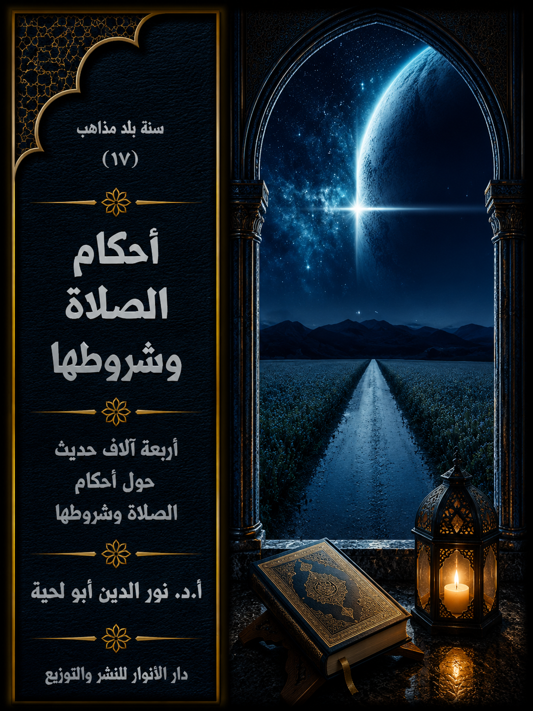

📖 الكتاب: أحكام الصلاة وشروطها
📝 الوصف:
📚 السلسلة:
✍ المؤلف: أ.د. نور الدين أبو لحية
🏢 الناشر: دار الأنوار للنشر والتوزيع
📅 الطبعة: الثانية
📥 تحميل: هنا
المقدمة
الوصف: أربعة آلاف حديث حول أحكام الصلاة وشروطها
يجمع هذا الكتاب أربعة آلاف حديث حول الصلاة وشروطها وأركانها وسننها وما فرض منها على سبيل الحتم واللزوم، وما أمر به على سبيل التطوع والنافلة.
وهو بذلك يشمل كل الأحاديث التي وردت في الصلاة في المصادر السنية والشيعية، أو أغلبها، ولم نستثن من القبول بعد العرض على القرآن الكريم إلا القليل جدا، بناء على أن جميع تلك الأحاديث، وإن اختلف بعضها مع بعض؛ فإن ذلك الاختلاف صوري يدل على التنوع ورفع الحرج، لا على اختلاف التعارض والتضاد.
ولذلك لم نر مسوغا لإلغاء بعض الأحاديث أو أحكامها بناء على تعارضها مع غيرها، وإنما اعتبرنا الجميع مقصودا لذاته، لأن الصلاة وشروطها ليست على صيغة واحد، بل هي على صيغ متعددة، يمكن اختيار أي صيغة منها، أو التنقل بينها جميعا، لينفى بذلك الملل الذي قد يعرض بسبب اختيار صورة واحدة، أو الحرج الذي قد يعرض لمن يلتزم صورة معينة مشددة.
المقدمة
يجمع هذا الكتاب أربعة آلاف حديث حول الصلاة وشروطها وأركانها وسننها وما فرض منها على سبيل الحتم واللزوم، وما أمر به على سبيل التطوع والنافلة.
وهو بذلك يشمل كل الأحاديث التي وردت في الصلاة في المصادر السنية والشيعية، أو أغلبها، ولم نستثن من القبول بعد العرض على القرآن الكريم إلا القليل جدا، بناء على أن جميع تلك الأحاديث، وإن اختلف بعضها مع بعض؛ فإن ذلك الاختلاف صوري يدل على التنوع ورفع الحرج، لا على اختلاف التعارض والتضاد.
ولذلك لم نر مسوغا لإلغاء بعض الأحاديث أو أحكامها بناء على تعارضها مع غيرها، وإنما اعتبرنا الجميع مقصودا لذاته، لأن الصلاة وشروطها ليست على صيغة واحد، بل هي على صيغ متعددة، يمكن اختيار أي صيغة منها، أو التنقل بينها جميعا، لينفى بذلك الملل الذي قد يعرض بسبب اختيار صورة واحدة، أو الحرج الذي قد يعرض لمن يلتزم صورة معينة مشددة.
ولذلك فإن الاختلاف الذي قد يظهر بين بعض هذه الأحاديث، ناشئ عن أمرين:
أولهما ـ رفع الحرج، وهو مقصد من مقاصد الصلاة وشروطها، ولذلك توفرت فيها الكثير من الرخص، بل إن الله تعالى قرن ذكر أحكام الطهارة التي هي شرط من شروط الصلاة، برفع الحرج عند ذكرها كل مرة، كما قال تعالى: ﴿يَا أَيُّهَا الَّذِينَ آمَنُوا إِذَا قُمْتُمْ إِلَى الصَّلَاةِ فَاغْسِلُوا وُجُوهَكُمْ وَأَيْدِيَكُمْ إِلَى الْمَرَافِقِ وَامْسَحُوا بِرُءُوسِكُمْ وَأَرْجُلَكُمْ إِلَى الْكَعْبَيْنِ وَإِنْ كُنْتُمْ جُنُبًا فَاطَّهَّرُوا وَإِنْ كُنْتُمْ مَرْضَى أَوْ عَلَى سَفَرٍ أَوْ جَاءَ أَحَدٌ مِنْكُمْ مِنَ الْغَائِطِ أَوْ لَامَسْتُمُ النِّسَاءَ فَلَمْ تَجِدُوا مَاءً فَتَيَمَّمُوا صَعِيدًا طَيِّبًا فَامْسَحُوا بِوُجُوهِكُمْ وَأَيْدِيكُمْ مِنْهُ مَا يُرِيدُ اللَّهُ لِيَجْعَلَ عَلَيْكُمْ مِنْ حَرَجٍ وَلَكِنْ يُرِيدُ لِيُطَهِّرَكُمْ وَلِيُتِمَّ نِعْمَتَهُ عَلَيْكُمْ لَعَلَّكُمْ تَشْكُرُونَ﴾ [المائدة: 6]
ومثل ذلك ما ورد من رخص كثيرة تتعلق بأوقات الصلاة، من توسيع أوقاتها، وإباحة الجمع بين الظهرين والعشائين حتى يتسنى لكل الناس وبحسب ظروفهم أن يؤدوا الصلوات في أوقاتها، ومن غير حرج، وقد قال ابن عباس في ذلك: صلى رسول الله صلى الله عليه وآله وسلم الظهر والعصر جميعا بالمدينة في غير خوف ولا سفر.. قال أبو الزبير: فسألت سعيدا لم فعل ذلك؟ فقال: سألت ابن عباس كما سألتني فقال: أراد أن لا يحرج أحدا من أمته(1)
وللأسف؛ فإن هذا الحديث، ومثله أحاديث كثيرة متفق عليها في المصادر السنية والشيعية أهمل في الواقع السني خصوصا، وكلف أكثر الناس شططا بمراعاة الصلاة في خمسة أوقات، لا ثلاثة فقط كما تنص الرخصة الواردة عن رسول الله صلى الله عليه وآله وسلم، وذلك ما صرف الكثير عن الصلاة جميعا.
مع أن هؤلاء المتشددين الذين رموا بهذا الحديث، لو تأملوا البيئة التي عاش فيها الصحابة مع رسول الله صلى الله عليه وآله وسلم لرأوا أن تلك البيئة لم تكن بحاجة إلى الرخص المرتبطة بالصلاة، بقدر ما كانت حوائج العصور التالية، وفي البيئات المختلفة.
ولهذا كان الأولى ألا يرموا بهذا الحديث وأمثاله، ويتركوا لعامة الناس العمل بما شاءوا من الأحاديث، ليراعي كل شخص ما يتناسب معه ومع ظروفه، لأن ذلك مقصود شرعي.
وقد روي في هذا عن الإمام علي أنه سئل يوم العيد عمن يصلي قبل العيد أو بعده فسكت، حتى أتى المصلى فصلى العيد وركب، فقيل له: هؤلاء يصلون، قال: فما عسى أن أصنع سألتموني عن السنة إن النبي صلى الله عليه وآله وسلم لم يصل قبلها ولا بعدها، فمن شاء فعل ومن شاء ترك، أتروني أمنع قوما يصلون فأكون بمنزلة من منع عبدا إذا صلى(2)
فالإمام علي رأى اتساع الأمر، حتى مع ورود النص، وفي ذلك عبرة للذين يرمون بالبدعة كل من لا تتوافق صلاته مع الصيغة المضبوطة المحددة التي اختارها بناء على دارساته السندية، والتي يغلب عليها الاختيار الشخصي والذاتية أكثر من الموضوعية العلمية.
ومثل ذلك ما روي أنه قيل للإمام الكاظم: اختلف أصحابنا في رواياتهم عن الإمام الصادق في ركعتي الفجر في السفر، فروى بعضهم أن صلّهما في المحمل، وروى بعضهم: لا تصلّهما إلا على الأرض، فأعلمني، كيف تصنع أنت لأقتدي بك في ذلك؟ فقال: موسّع عليك بأيّه عملت(3)
ثانيهما ـ مراعاة المراتب والوظائف، وهو ما أشار إليه قوله تعالى عند بيان تخفيف صلاة الليل عن المؤمنين في أول الإسلام: ﴿إِنَّ رَبَّكَ يَعْلَمُ أَنَّكَ تَقُومُ أَدْنَى مِنْ ثُلُثَيِ اللَّيْلِ وَنِصْفَهُ وَثُلُثَهُ وَطَائِفَةٌ مِنَ الَّذِينَ مَعَكَ وَاللَّهُ يُقَدِّرُ اللَّيْلَ وَالنَّهَارَ عَلِمَ أَنْ لَنْ تُحْصُوهُ فَتَابَ عَلَيْكُمْ فَاقْرَءُوا مَا تَيَسَّرَ مِنَ الْقُرْآنِ عَلِمَ أَنْ سَيَكُونُ مِنْكُمْ مَرْضَى وَآخَرُونَ يَضْرِبُونَ فِي الْأَرْضِ يَبْتَغُونَ مِنْ فضلِ اللَّهِ وَآخَرُونَ يُقَاتِلُونَ فِي سَبِيلِ اللَّهِ فَاقْرَءُوا مَا تَيَسَّرَ مِنْهُ وَأَقِيمُوا الصَّلَاةَ وَآتُوا الزَّكَاةَ وَأَقْرِضُوا اللَّهَ قَرْضًا حَسَنًا وَمَا تُقَدِّمُوا لِأَنْفُسِكُمْ مِنْ خَيْرٍ تَجِدُوهُ عِنْدَ اللَّهِ هُوَ خَيْرًا وَأَعْظَمَ أَجْرًا وَاسْتَغْفِرُوا اللَّهَ إِنَّ اللَّهَ غَفُورٌ رَحِيمٌ﴾ [المزمل: 20]
فالآية الكريمة كما تشير إلى رفع الحرج المرتبط بتلك الصلاة وتخفيفها، تشير كذلك إلى مراتب المؤمنين ووظائفهم، والتي قد لا تتيح لهم ممارسة صلاة الليل بصورتها الكاملة التامة، فلذلك لو كلف طالب العلم بأداء كل النوافل وصلاة الليل ونحوها لحجزه عن ذلك عن ممارسة دوره في طلب العلم أو تعليمه.
ولهذا وردت الرخص الكثيرة في هذا الجانب، باعتبار أن طلب العلم أولى لصاحبه من نوافل الصلوات، كما يشير إلى ذلك قوله صلى الله عليه وآله وسلم: (الجلوس ساعة عند مذاكرة العلم أحبّ إلى الله من قيام ألف ليلة يصلّي في كلّ ليلة ألف ركعة)(4)
وهكذا بالنسبة لقدرات الناس، فمنهم من يطيق صورة من الصور، ومنهم من لا يطيقها، ولذلك كان في اختلاف الأحاديث والروايات سعة، تمكنهم من اختيار ما يناسبهم.
وهذا ليس هوى أو تنصلا من التكاليف الشرعية كما يتوهم القاصرون الذين لا يفهمون مقاصد الشريعة؛ بل هو عين العبودية؛ فالمؤمن يعبد الله بحسب طاقته.
بالإضافة إلى أن الغرض من الصلاة ليس صورها وإنما حقائقها، ولذلك كان في قصرها على صور محدودة نوعا من التشدد الذي قد يصرف عنها، أكثر مما يدعو إليها.
وقد روي في هذا عن معاوية بن عمار أنه قال: قلت للإمام الصادق: أقضي صلاة النهار باللّيل في السفر؟ فقال: نعم، فقاله له إسماعيل بن جابر: أقضي صلاة النهار باللّيل في السفر؟ فقال: لا، فقال: إنّك قلت: نعم، فقال: إنّ ذلك يطيق وأنت لا تطيق(5)
وروي أنه قيل له: جعلت فداك، إنّي سألتك عن قضاء صلاة النهار باللّيل في السفر، فقلت: لا تقضها، وسألك أصحابنا فقلت: اقضوا، فقال لهم: لا تصلّوا، والله ما ذاك عليهم(6)
ومثل ذلك قال الإمام علي: نهاني رسول الله صلى الله عليه وآله وسلم ولا أقول: نهاكم، عن التختّم بالذهب، وعن الثياب القسي، وعن مياثر الأرجوان، وعن الملاحف المفدمة، وعن القراءة وأنا راكع(7)
وهكذا نجد أئمة الهدى يلتمسون المخارج لتيسير الصلاة على المؤمنين حتى يظل حرصهم عليها دائما، ومن ذلك ما روي عن الإمام الباقر أنه قال: إذا صلى المسافر خلف قوم حضور فليتم صلاته ركعتين ويسلم، وإن صلى معهم الظهر فليجعل الأولتين الظهر والأخيرتين العصر(8)
وفي حديث آخر قال: إن خاف على نفسه من أجل من يصلي معه صلى الركعتين الأخيرتين وجعلهما تطوعا(9)
وفي حديث آخر قال: إن كان في صلاة الظهر جعل الأولتين فريضة، والأخيرتين نافلة، وإن كان في صلاة العصر جعل الأولتين نافلة، والأخيرتين فريضة(10)
وفي حديث آخر قال: إن كان في صلاة الظهر جعل الأولتين الظهر، والأخيرتين العصر(11)
وقد علق الشيخ الصدوق على هذه الأخبار بعد إيراده لها، فقال: هذه الأخبار ليست مختلفة، والمصلي فيها بالخيار بأيها أخذ جاز(11)
وما يقال في هذه المسألة يقال في غيرها من المسائل، وهو ما يوحد بين المسلمين في الصلاة، ذلك أن أكثر ما روي عن أئمة الهدى في صور الصلاة يتفق مع ما عليه سائر المسلمين، ما عدا بعض الأمور البسيطة، كوضع اليد اليمنى على اليسرى في الصلاة، والتي لا نجد لها من الأدلة في المصادر السنية ما يكفي، حيث نجد الكثير من الأحاديث يذكر صلاة رسول الله صلى الله عليه وآله وسلم من غير ذكر لذلك الفعل، ولهذا اعتبره أئمة الهدى من المحدثات التي أضيفت للصلاة، وهم أعلم الناس بصلاة رسول الله صلى الله عليه وآله وسلم، بالإضافة إلى أنه قد اتفق على هذا الزيدية والإباضية وكل الفرق الإسلامية، حتى المالكية من المدرسة السنية.
ومثل ذلك ما ورد من الأحاديث في غسل الرجلين أو المسح على الخف؛ فهي لا تتعارض مع غيرها من الأحاديث فقط، بل تتعارض مع القرآن الكريم نفسه، والذي ورد فيه المسح بصيغة قطعية لا مجال فيها للتأويل.
بالإضافة إلى أنه يستحيل أن تطبق الأحاديث الكثيرة التي تبين مقدار الماء الذي يكفي للوضوء مع الصورة التي وضعوها له، والتي تجعل من المتوضئ يغسل قدميه وكل أعضائه ثلاث مرات كاملة.
بناء على هذا قسمنا هذا الكتاب إلى أربعة فصول:
أولها ـ الصلوات المفروضة وأحكامها: وتناولنا فيه وجوب الصلاة وفضلها.. وأوقات الصلوات المفروضة.. والأذان والإقامة.. وصلاة الجماعة.. وصلاة المسافر والخائف.. وقضاء الصلوات.. وتعقيبات الصلوات.. وصلاة الجمعة.
ثانيها ـ نوافل الصلوات وأحكامها: وتناولنا فيه النوافل والرواتب.. وصلاة الليل.. وصلاة الاستخارة.. وصلوات الحاجة.. وصلاة العيدين.. وصلاة الاستسقاء.. وصلاة الكسوف.
ثالثها ـ كيفية الصلاة وأحكامها: وتناولنا فيه الخشوع والخضوع في الصلاة.. والنية والقيام للصلاة.. والتكبير والافتتاح.. والقراءة في الصلاة.. وأحكام القنوت.. وأحكام الركوع.. وأحكام السجود.. والتشهد والتسليم.. وإصلاح خلل الصلاة.. وما يبطل الصلاة وما لا يبطلها.
رابعها ـ شروط الصلاة وأحكامها: وتناولنا فيه المطهرات وأحكامها.. والنجاسات وأحكامها.. والوضوء وموجباته.. والغسل وموجباته.. وأحكام التيمم.. واستقبال القبلة.. ومكان الصلاة.. ولباس المصلي.
ونعتذر عن طول هذا الجزء مقارنة بسائر الأجزاء، وذلك لكثرة الأحاديث الواردة في الصلاة وشروطها، بالإضافة إلى أنه جمع من الأحاديث ما تفرق في عشرات المجلدات من المصادر الحديثية السنية والشيعية، بالإضافة إلى تيسير التعامل مع الأحاديث ولعامة الناس.
ــــــــــــــــــــ
(1) مسلم (2/ 151)
(2) البزار في (البحر الزخار) 2/129 ـ 130 (487)
(3) التهذيب: 3/ 228/ 583.
(4) جامع الأخبار ص 37..
(5) التهذيب: 2/ 16/ 46.
(6) التهذيب: 2/ 17/ 47، والاستبصار: 1/ 222/ 784.
(7) الخصال: 289/48.
(8) من لا يحضره الفقيه: 1/ 287/ 1308.
(9) من لا يحضره الفقيه: 1/ 259/ 1181.
(10) من لا يحضره الفقيه: 1/ 260/ 1182.
(11) من لا يحضره الفقيه: 1/ 260/ 1183.
الصلوات المفروضة وأحكامها
جمعنا في هذا الفصل ما نراه متوافقا مع القرآن الكريم من الأحاديث الواردة حول الصلوات المفروضة والتي ورد ذكرها أو الإشارة إليها في القرآن الكريم.
وقد قبلنا فيه أكثر الأحاديث الواردة في مصادر الفريقين ـ مهما بدت متعارضة ـ على اعتبار ما ذكرناه من كونها جميعا تمثل التنوع والمراتب المختلفة.
وقد قسمنا الأحاديث الواردة في هذا إلى ثمانية أقسام، هي:
أولا ـ ما ورد حول وجوب الصلاة وفضلها
ثانيا ـ ما ورد حول أوقات الصلوات المفروضة
ثالثا ـ ما ورد حول الأذان والإقامة
رابعا ـ ما ورد حول صلاة الجماعة
خامسا ـ ما ورد حول صلاة المسافر والخائف
سادسا ـ ما ورد حول قضاء الصلوات
سابعا ـ ما ورد حول تعقيبات الصلوات
ثامنا ـ ما ورد حول صلاة الجمعة
أولا ـ ما ورد حول وجوب الصلاة وفضلها
نتناول في هذا المبحث ما ورد من الأحاديث التي تذكر أهمية الصلاة ووجوبها وكونها ركنا من أركان الدين الكبرى، بل عمودا من أعمدته التي يقوم عليها، وهي من الحقائق والقيم التي تكرر ورودها في القرآن الكريم، وبصيغ مختلفة.
ومنها ما روي عند ذكر المناهج والمسالك التي تربي النفس وتزكيها، وهو ما نص عليه قوله تعالى: ﴿يَا أَيُّهَا الَّذِينَ آمَنُوا اسْتَعِينُوا بِالصَّبْرِ وَالصَّلَاةِ إِنَّ الله مَعَ الصَّابِرِينَ﴾ [البقرة: 153] والتي وردت بعد الآيات المخبرة عن دور رسول الله صلى الله عليه وآله وسلم في تزكية أمته، وأمرها بالذكر والشكر اللذين يمثلان علامة التزكية الحقيقية، قال تعالى: ﴿كَمَا أَرْسَلْنَا فِيكُمْ رَسُولًا مِنْكُمْ يَتْلُو عَلَيْكُمْ آيَاتِنَا وَيُزَكِّيكُمْ وَيُعَلِّمُكُمُ الْكِتَابَ وَالْحِكْمَةَ وَيُعَلِّمُكُمْ مَا لَمْ تَكُونُوا تَعْلَمُونَ فَاذْكُرُونِي أَذْكُرْكُمْ وَاشْكُرُوا لِي وَلَا تَكْفُرُونِ﴾ [البقرة: 151، 152]
وهي تعني كل الوسائل المؤدية إلى الصلة بالله، من إقامة الصلاة المعروفة بشرائطها وحدودها والذكر والدعاء والمناجاة والتضرع والابتهال والتدبر والتفكر والتأمل وغيرها، وجميعها تؤدي إلى تزكية الروح لتصبح أهلا للمحبة والأنس والتوكل وجميع المنازل التي تنزلها النفس المطمئنة، وتصبح مع ذلك أهلا لتنزل المعارف والمواهب الإلهية.
ولذلك نرى القرآن الكريم يعبر عن الصلاة بالإقامة، لا بمجرد الأداء، ذلك أنها مدرسة قائمة بذاتها تحتاج إلى توفر كل الشروط المناسبة لتؤدي دورها في إصلاح الجوانب الروحية والاجتماعية في حياة الإنسان، كما قال تعالى: ﴿اتْلُ مَا أُوحِيَ إِلَيْكَ مِنَ الْكِتَابِ وَأَقِمِ الصَّلَاةَ إِنَّ الصَّلَاةَ تَنْهَى عَنِ الْفَحْشَاءِ وَالْمُنْكَرِ وَلَذِكْرُ اللَّهِ أَكْبَرُ وَاللَّهُ يَعْلَمُ مَا تَصْنَعُونَ﴾ [العنكبوت: 45]
ولهذا كان أول وصف للمفلحين خشوعهم في الصلاة، كما قال تعالى: ﴿قَدْ أَفْلَحَ الْمُؤْمِنُونَ الَّذِينَ هُمْ فِي صَلَاتِهِمْ خَاشِعُونَ﴾ [المؤمنون: 1 ـ 2]
بناء على هذا جمعنا في هذا الفصل ما يدل على فضل الصلاة ووجوبها، وخصوصا الصلوات الخمس، باعتبارها المقصودة بالصلاة عند الإطلاق، فهي الأصل، والنوافل والرواتب مكملات لها.
ما ورد في الأحاديث النبوية:
1 ـ ما ورد في المصادر السنية: ههه
1. قال رسول الله صلى الله عليه وآله وسلم: أرأيتم لو أن نهرا بباب أحدكم يغتسل فيه كل يوم خمس مرات ما تقولون ذلك يبقي من درنه؟ قالوا: لا يبقي من درنه شيئا. قال: فذلك مثل الصلوات الخمس يمحو الله بها الخطايا(1)
2. عن سعد قال: كان رجلان أخوان فهلك أحدهما قبل صاحبه بأربعين ليلة، فذكر فضيلة الأول منها عند رسول الله صلى الله عليه وآله وسلم فقال: ألم يكن الآخر مسلما، قالوا: بلى وكان لا بأس به فقال صلى الله عليه وآله وسلم: وما يدريكم ما بلغت به صلاته إنما مثل الصلاة كمثل نهر عذب غمر بباب أحدكم يقتحم فيه كل يوم خمس مرات، فما ترون في ذلك يبقي من درنه فإنكم لا تدرون ما بلغت به صلاته؟(2)
3. قال رسول الله صلى الله عليه وآله وسلم: لا يتوضأ رجلٌ فيحسن وضوءه ثم يصلي الصلاة إلا غفر له ما بينه وبين الصلاة التي تليها(3)
4. توضأ رسول الله صلى الله عليه وآله وسلم فأحسن الوضوء ثم قال: من توضأ نحو هذا الوضوء ثم أتى المسجد فركع ركعتين ثم جلس غفر له ما تقدم من ذنبه(4)
5. قال رسول الله صلى الله عليه وآله وسلم: ما من امرئ مسلم تحضره صلاةٌ مكتوبةٌ فيحسن وضوءها وخشوعها وركوعها إلا كانت كفارة لما قبلها من الذنوب، ما لم يؤت كبيرة، وكذلك الدهر كله(5)
6. قال رسول الله صلى الله عليه وآله وسلم: من أتم الوضوء كما أمره الله فالصلوات الخمس كفارة لما بينهن(6)
7. عن أبي أمامة قال: بينما رسول الله صلى الله عليه وآله وسلم في المسجد ونحن قعودٌ معه إذ جاء رجلٌ فقال: يا رسول الله إني أصبت حدا فأقمه علي، فسكت عنه رسول الله صلى الله عليه وآله وسلم، ثم أعاد، فسكت عنه، وأقيمت الصلاة، فلما انصرف صلى الله عليه وآله وسلم تبعه الرجل واتبعته أنظر ماذا يرد عليه، فقال له: أرأيت حين خرجت من بيتك، أليس قد توضأت فأحسنت الوضوء؟ قال: بلى يا رسول الله، قال: ثم شهدت الصلاة معنا، قال: بلى يا رسول الله، قال: فإن الله قد غفر لك ذنبك(7)
8. قال رسول الله صلى الله عليه وآله وسلم: يعجب ربك من راعي غنم في رأس شظية للجبل يؤذن بالصلاة ويصلي، فيقول الله تعالى: انظروا إلى عبدي هذا يؤذن ويقيم الصلاة ويصلي، يخاف مني، قد غفرت لعبدي وأدخلته الجنة(8)
9. قال رسول الله صلى الله عليه وآله وسلم: استقيموا ولن تحصوا، واعلموا أن خير أعمالكم الصلاة ولا يحافظ على الوضوء إلا مؤمنٌ(9)
10. قال رسول الله صلى الله عليه وآله وسلم: أول ما ينظر فيه من عمل المرء الصلاة، فإن قبلت منه نظر فيما بقي من عمله، وإن لم تقبل منه لم ينظر في شيء من عمله(10)
11. قال رسول الله صلى الله عليه وآله وسلم: جعل الله قرة عيني في الصلاة(11)
12. قال رسول الله صلى الله عليه وآله وسلم: من علم أن الصلاة حقٌ واجبٌ دخل الجنة(12)
13. قال رسول الله صلى الله عليه وآله وسلم: إن لله ملكا ينادى عند كل صلاة: يا بنى آدم قوموا إلى نيرانكم التي أوقدتموها على أنفسكم فأطفئوها(13)
14. قال رسول الله صلى الله عليه وآله وسلم: الصلوات الخمس، والجمعة إلى الجمعة، ورمضان إلى رمضان مكفراتٌ لما بينهن إذا اجتنبت الكبائر(14)
15. قال رسول الله صلى الله عليه وآله وسلم: من صلى الصبح فهو في ذمة الله، فلا يتبعنكم الله بشيء في ذمته(15)
16. قال رسول الله صلى الله عليه وآله وسلم: يتعاقبون فيكم ملائكةٌ بالليل وملائكةٌ بالنهار، ويجتمعون في صلاة الفجر وصلاة العصر، ثم يعرج الذين باتوا فيكم، فيسألهم وهو أعلم بكم كيف تركتم عبادي؟ فيقولون: تركناهم وهم يصلون، وأتيناهم وهم يصلون(16)
17. قال رسول الله صلى الله عليه وآله وسلم: لن يلج النار أحدٌ صلى قبل طلوع الشمس وقبل غروبها(17)
18. قال رسول الله صلى الله عليه وآله وسلم: من صلى البردين دخل الجنة(18)
19. عن أنس قال: سأل رجل نبي الله صلى الله عليه وآله وسلم فقال: يا رسول الله، كم فرض الله على عباده من الصلوات؟ قال: افترض الله على عباده صلوات خمسا، فحلف الرجل لا يزيد عليه شيئا ولا ينقص منها شيئا، فقال رسول الله صلى الله عليه وآله وسلم: إن صدق ليدخلن الجنة(19)
20. عن أنس قال: فرضت على النبي صلى الله عليه وآله وسلم ليلة أسري به الصلوات خمسين، ثم نقصت حتى جعلت خمسا، ثم نودي: يا محمد إنه لا يبدل القول لدي، وإن لك بهذه الخمس خمسين(20)
21. قال رسول الله صلى الله عليه وآله وسلم: بين الرجل والشرك ترك الصلاة(21)
22. قال رسول الله صلى الله عليه وآله وسلم: بين الكفر والإيمان ترك الصلاة(22)
23. قال رسول الله صلى الله عليه وآله وسلم: بين العبد وبين الكفر ترك الصلاة(23)
24. قال رسول الله صلى الله عليه وآله وسلم: العهد الذي بيننا وبينهم الصلاة، فمن تركها فقد كفر(24)
25. عن عبد الله بن شقيق قال: كان أصحاب رسول الله صلى الله عليه وآله وسلم لا يرون شيئا من الأعمال تركه كفر إلا الصلاة(25)
26. قال رسول الله صلى الله عليه وآله وسلم: الذي تفوته صلاة العصر كأنما وتر أهله وماله(26)
27. عن أبي المليح قال: كنا مع بريدة في غزاة في يوم ذي غيم، فقال: بكروا بصلاة العصر، فإن النبي صلى الله عليه وآله وسلم قال: من ترك صلاة العصر فقد حبط عمله(27)
28. قال رسول الله صلى الله عليه وآله وسلم: من ترك الصلاة لقي الله وهو عليه غضبان(28)
29. قال رسول الله صلى الله عليه وآله وسلم: من حافظ على الصلاة كانت له نورا وبرهانا ونجاة يوم القيامة، ومن لم يحافظ عليها لم يكن له نور ولا برهان ولا نجاة، وكان يوم القيامة مع فرعون وهامان وأبي بن خلف(29)
30. عن أبي مالك الأشجعي عن أبيه قال: كان النبي صلى الله عليه وآله وسلم إذا أسلم الرجل أول ما يعلمه الصلاة(30)
31. قال رسول الله صلى الله عليه وآله وسلم: خمس صلوات افترضهن الله على عباده، فمن جاء بهن لم ينتقص منهن شيئا استخفافا بحقهن، فإن الله جاعل له يوم القيامة عهدا أن يدخله الجنة، ومن جاء بهن قد انتقص منهن شيئا استخفافا بحقهن، لم يكن له عند الله عهد، إن شاء عذبه وإن شاء غفر له(31)
32. قال رسول الله صلى الله عليه وآله وسلم: مروا أولادكم بالصلاة وهم أبناء سبع، واضربوهم عليها وهم أبناء عشر، وفرقوا بينهم في المضاجع(32)
33. قال رسول الله صلى الله عليه وآله وسلم: إذا عرف يمينه من شماله فمروه بالصلاة(33)
2 ـ ما ورد في المصادر الشيعية: ههه
1. قال رسول الله صلى الله عليه وآله وسلم: لو كان على باب دار أحدكم نهر فاغتسل في كلّ يوم منه خمس مرّات، أكان يبقى في جسده من الدرن شيء؟ قيل: لا، قال: فإنّ مثل الصلاة كمثل النهر الجاري، كلّما صلّى صلاة كفّرت ما بينهما من الذنوب(34)
2. عن محمّد بن علي قال: لما أسري برسول الله صلى الله عليه وآله وسلم أمره ربّه بخمسين صلاة، فمرّ على النبيّين، نبّي نبيّ، لا يسألونه عن شيء، حتى انتهى إلى موسى بن عمران عليه السلام، فقال: بأيّ شيء أمرك ربّك؟ فقال: بخمسين صلاة، فقال: اسأل ربّك التخفيف فإنّ أمّتك لا تطيق ذلك، فسأل ربّه فحطّ عنه عشراً، ثمّ مرّ بالنبيّين، نبيّ نبيّ، لا يسألونه عن شيء، حتى مرّ بموسى بن عمران عليه السلام، فقال: بأيّ شيء أمرك ربّك؟ فقال: بأربعين صلاة، فقال: اسأل ربّك التخفيف فإنّ أمتك لا تطيق ذلك، فسأل ربّه فحطّ عنه عشراً، ثمّ مرّ بالنبيّين، نبيّ نبيّ، لا يسألونه عن شيء، حتى مرّ بموسى عليه السلام فقال: بأيّ أمرك ربّك؟ فقال: بثلاثين صلاة، فقال: اسأل ربّك التخفيف فإن أُمّتك لا تطيق ذلك، فسأل ربّه عز وجل فحطّ عنه عشراً، ثمّ مرّ بالنبيّين، نبيّ نبيّ، لا يسألونه عن شيء، حتى مرّ بموسى عليه السلام، فقال: بأيّ شيء أمرك ربّك؟ فقال: بعشرين صلاة، فقال: اسأل ربّك التخفيف فإنّ أُمتك لا تطيق ذلك، فسأل ربه فحطّ عنه عشراً، ثمّ مرّ بالنبيّين، نبيّ نبيّ، لا يسألونه عن شيء، حتى مرّ بموسى عليه السلام فقال: بأيّ شيء أمرك ربّك؟ فقال: بعشر صلوات، فقال: اسأل ربّك التخفيف فإنّ أمّتك لا تطيق ذلك، فإنّي جئت إلى بني إسرائيل بما افترض الله عليهم، فلم يأخذوا به ولم يقرّوا عليه، فسأل النبي صلى الله عليه وآله وسلم ربّه فخفّف عنه فجعلها خمساً، ثمّ مرّ بالنبيّين، نبيّ نبيّ، لا يسألونه عن شيء، حتى مرّ بموسى عليه السلام، فقال له: بأيّ شيء أمرك ربّك؟ فقال: بخمس صلوات، فقال: اسأل ربّك التخفيف عن أمّتك فإنّ أمتك لا تطيق ذلك، فقال: إنّي لأَستحيي أن أدعو ربّي، فجاء رسول الله صلى الله عليه وآله وسلم بخمس صلوات(35)
3. سئل الإمام السجاد عن عروج رسول الله صلى الله عليه وآله وسلم إلى السماء وأمر الله له بخمسين صلاة، وكيف لم يسأل الله التخفيف عن أمته حتى قال له موسى عليه السّلام: ارجع إلى ربك فاسأل التخفيف، فإن أمتك لا تطيق ذلك؟ فقال: إن رسول اللّه صلى الله عليه وآله وسلم كان لا يقترح على ربه عز وجل، ولا يراجعه في شيء يأمره به، فلما سأله موسى عليه السّلام ذلك فكان شفيعا لأمته إليه لم يجز له رد شفاعة أخيه موسى، فرجع إلى ربه فسأله التخفيف إلى أن ردها إلى خمس صلوات؛ فقيل له: فلم لم يسأله التخفيف عن خمس صلوات، وقد طلب منه موسى عليه السّلام ذلك، فقال: أراد صلى الله عليه وآله وسلم أن يحصل لأمته التخفيف مع أجر خمسين صلاة، يقول اللّه عز وجل: ﴿مَنْ جَاءَ بِالْحَسَنَةِ فَلَهُ عَشْرُ أَمْثَالِهَا﴾ [الأنعام: 160]، ألا ترى أنه صلى الله عليه وآله وسلم لما هبط إلى الأرض نزل عليه جبريل عليه السّلام فقال: يا محمد إن ربك يقرئك السّلام ويقول: إنها خمس بخمسين، ﴿مَا يُبَدَّلُ الْقَوْلُ لَدَيَّ وَمَا أَنَا بِظَلَّامٍ لِلْعَبِيدِ﴾ [ق: 29] فقيل له: أليس اللّه تعالى ذكره لا يوصف بمكان.. فما معنى قول موسى عليه السّلام لرسول اللّه صلى الله عليه وآله وسلم ارجع إلى ربك؟.. فقال: معناه معنى قول إبراهيم عليه السّلام: ﴿إِنِّي ذَاهِب إِلَى رَبِّي سَيَهْدِينِ﴾ [الصافات: 99]، ومعنى قول موسى: ﴿وَعَجِلْتُ إِلَيْكَ رَبِّ لِتَرْضَى﴾ [طه: 84]، ومعنى قوله عز وجل: ﴿فَفِرُّوا إِلَى اللَّهِ﴾ [الذاريات: 50] يعني حجوا إلى بيت اللّه، ثم قال: إن الكعبة بيت اللّه، فمن حج بيت اللّه فقد قصد إلى اللّه، والمساجد بيوت اللّه، فمن سعى إليها فقد سعى إلى اللّه وقصد إليه، والمصلي ما دام في صلاته فهو واقف بين يدي اللّه جلّ جلاله، وأهل موقف عرفات هم وقوف بين يدي اللّه عز وجل، وأن لله تعالى بقاعا في سماواته فمن عرج به إلى بقعة منها فقد عرج به إليه، ألا تسمع اللّه عز وجل يقول: ﴿تَعْرُجُ الْمَلَائِكَةُ وَالرُّوحُ إِلَيْهِ﴾ [المعارج: 4]، ويقول في قصة عيسى عليه السّلام: ﴿بَلْ رَفَعَهُ اللَّهُ إِلَيْهِ﴾ [النساء: 158]، ويقول عز وجل: ﴿إِلَيْهِ يَصْعَدُ الْكَلِمُ الطَّيِّبُ وَالْعَمَلُ الصَّالِحُ يَرْفَعُهُ﴾ [فاطر: 10](36)
4. قال رسول الله صلى الله عليه وآله وسلم: إنّما مثل الصلاة فيكم كمثل السري، وهو النهر، على باب أحدكم يخرج إليه في اليوم والليلة يغتسل منه خمس مرّات فلم يبق الدرن على الغسل خمس مرّات، ولم تبق الذنوب على الصلاة خمس مرّات(37)
5. عن أنس قال: فرضت على رسول الله صلى الله عليه وآله وسلم ليلة أسري به الصلاة خمسين، ثمّ نقصت فجعلت خمساً، ثمّ نودي يا محمّد، إنّه لا يبدّل القول لديّ، إنّ لك بهذه الخمس خمسين(38)
6. قال الإمام الصادق: لمّا خفّف الله عن رسول الله صلى الله عليه وآله وسلم حتى صارت خمس صلوات أوحى الله إليه: يا محمّد، خمس بخمسين(39)
7. قال رسول الله صلى الله عليه وآله وسلم: لكلّ شيء وجه ووجه دينكم الصلاة، فلا يشيننّ أحدكم وجه دينه، ولكلّ شيء أنف وأنف الصلاة التكبير(40)
8. قال رسول الله صلى الله عليه وآله وسلم: ليس منّي من استخفّ بصلاته، لا يرد عليّ الحوض، لا والله، ليس منيّ من يشرب مسكراً، لا يرد عليّ الحوض، لا والله(41)
9. قال رسول الله صلى الله عليه وآله وسلم: لا يزال الشيطان ذعراً من المؤمن ما حافظ على الصلوات الخمس لوقتهنّ، فإذا ضيّعهنّ تجرّأ عليه فأدخله في العظائم(42)
10. قال رسول الله صلى الله عليه وآله وسلم: إذا كان يوم القيامة يدعى بالعبد، فأوّل شيء يسأل عنه: الصلاة، فإذا جاء بها تامّة وإلاّ زجّ في النار(43)
11. قال رسول الله صلى الله عليه وآله وسلم: لا تضيّعوا صلواتكم، فإنّ من ضيّع صلاته حشر مع قارون وهامان، وكان حقّاً على الله أن يدخله النار مع المنافقين، فالويل لمن لم يحافظ على صلاته وأداء سنّته(44)
12. قال الإمام الباقر: بينا رسول الله صلى الله عليه وآله وسلم جالس في المسجد إذ دخل رجل فقام يصلّي، فلم يتمّ ركوعه ولا سجوده، فقال صلى الله عليه وآله وسلم: نقر كنقر الغراب، لئن مات هذا وهكذا صلاته ليموتنّ على غير ديني(45)
13. قال رسول الله صلى الله عليه وآله وسلم: إذا قام العبد المؤمن في صلاته أقبل الله عليه حتى ينصرف، وأظلّته الرحمة، من فوق رأسه إلى أُفق السماء، والملائكة تحفّه من حوله إلى أًفق السماء، ووكّل الله به ملكاً قائماً على رأسه يقول له: أيّها المصلّي، لو تعلم من ينظر إليك ومن تناجي ما التفتّ ولا زلت من موضعك أبداً(46)
14. قال رسول الله صلى الله عليه وآله وسلم: مثل الصلاة مثل عمود الفسطاط، إذا ثبت العمود نفعت الأطناب والأوتاد والغشاء وإذا انكسر العمود لم ينفع طنب ولا وتد ولا غشاء(47)
15. قال رسول الله صلى الله عليه وآله وسلم: الصلاة ميزان، مَنْ وفي استوفى(48)
16. قال رسول الله صلى الله عليه وآله وسلم: إنّ عمود الدين الصلاة، وهي أوّل ما يُنظر فيه من عمل ابن آدم، فإن صحّت نُظر في عمله، وإن لم تصحّ لم يُنظر في بقيّة عمله(49)
17. قال رسول الله صلى الله عليه وآله وسلم: إنّ أحبّ الأعمال إلى الله عزّ وجلّ الصلاة والبّر والجهاد(50)
18. جاء رجل إلى رسول الله صلى الله عليه وآله وسلم فقال: يا رسول الله أوصني، فقال: لا تدع الصلاة متعمّداً، فإنّ من تركها متعمّداً فقد برئت منه ملّة الإسلام(51)
19. قال رسول الله صلى الله عليه وآله وسلم: ما بين المسلم وبين أن يكفر إلاّ ترك الصلاة الفريضة متعمّداً أو يتهاون بها فلا يصلّيها(52)
20. قال رسول الله صلى الله عليه وآله وسلم: ما بين الكفر والإيمان إلاّ ترك الصلاة(53)
21. قال الإمام الصادق: أتى رجل رسول الله صلى الله عليه وآله وسلم فقال: أدع الله أن يدخلني الجنة، فقال له: أعنّي بكثرة السجود(54)
22. قال الإمام الصادق: كان رسول الله صلى الله عليه وآله وسلم يصلّي من التطوّع مثلي الفريضة ويصوم من التطوّع مثلي الفريضة(55)
23. عن الإمام الصادق أنّ ذا النمرة قال: يا رسول الله، أخبرني ما فرض الله عليّ؟ فقال له رسول الله صلى الله عليه وآله وسلم: فرض الله عليك سبع عشرة ركعة في اليوم والليلة، وصوم شهر رمضان إذا أدركته، والحجّ إذا استطعت إليه سبيلاً، والزكاة(56)
ــــــــــــــــــــ
(1) البخاري (528)، ومسلم (667) والترمذي (2868) والنسائي 1/230 ـ 231..
(2) مالك 1/158، والحاكم 1/200..
(3) البخاري (160) ومسلم (227) والنسائي 1/80، ومالك 1/55 ـ 56..
(4) البخاري (6433)، ومسلم (226)
(5) مسلم (228)
(6) مسلم (231)
(7) مسلم (2765)، وأبو داود (4381)
(8) أبو داود (1203)، والنسائي 2/20.
(9) مالك 1/58، ابن ماجه (277)، (278)
(10) مالك 1/157.
(11) النسائي 7/61 ـ 62..
(12) عبد الله بن أحمد في زياداته على (المسند) 1/60، والبزار في (المسند) 2/87 (439)
(13) الطبراني في الأوسط 9/173 ـ 174 (9452) و(الصغير) 2/262 (1135)
(14) مسلم (233) والترمذي (214)
(15) الترمذي (2164)
(16) البخاري (555)، ومسلم (632)، ومالك 1/155 والنسائي 1/240 ـ 241..
(17) مسلم (634)، وأبو داود (427)، والنسائي 1/235..
(18) البخاري (574)، ومسلم (635)
(19) رواه النسائي 1/228 ـ 229...
(20) البخاري (349) ومسلم (163) الترمذي (213)
(21) مسلم (82)
(22) الترمذي (2618)
(23) أبو داود (4678) والترمذي (2620)
(24) الترمذي (2621)، والنسائي 1/231 ـ 232..
(25) الترمذي (2622) والحاكم 1/7..
(26) البخاري (552) ومسلم (626)
(27) البخاري (553)، والنسائي 1/236..
(28) البزار كما في (كشف الأستار) 1/173 ـ 174 (343) والطبراني في الكبير 11/294 (11782)
(29) أحمد 2/169، والطبراني في الأوسط 2/213 (1767)
(30) البزار كما في (كشف الأستار) 1/171 (338) والطبراني 8/317 (8186)
(31) أبو داود (1420)، وابن ماجه (1401)
(32) أبو داود (495)
(33) أبو داود (497)
(34) التهذيب: 2/ 237/ 938.
(35) من لا يحضره الفقيه: 1/ 125/ 602.
(36) علل الشرائع: ج: 1 ص: 132..
(37) من لا يحضره الفقيه: 1/ 136/ 640.
(38) الخصال: 269/ 6.
(39) الخصال: 270/ 7.
(40) الكافي: 3/ 270/ 16.
(41) من لا يحضره الفقيه: 1/ 132/ 617، والمقنع: 23.
(42) الكافي: 3/ 269/ 8 والتهذيب: 2/ 236/ 933.
(43) عيون أخبار الإمام الرضا: 2/ 31/ 45.
(44) عيون أخبار الإمام الرضا: 2/ 31/ 46.
(45) الكافي: 3/ 268/ 6.
(46) الكافي: 3/ 265/ 5.
(47) الكافي: 3/ 266/ 9، والتهذيب: 2/ 238/ 942، ومن لا يحضره الفقيه: 1/ 136/ 639.
(48) الكافي: 3/ 266/ 13.
(49) التهذيب: 2/ 237/ 936.
(50) الخصال: 185.
(51) الكافي: 3/ 488/ 11.
(52) المحاسن: 80.
(53) عقاب الأعمال: 275/ 2.
(54) من لا يحضره الفقيه: 1/ 135/ 635.
(55) الكافي: 3/ 443/ 3.
(56) الكافي: 8/ 336/ 531.
ما روي عن الإمام علي:
1. قال الإمام علي يوصي أصحابه: تعاهدوا أمر الصلاة، وحافظوا عليها، واستكثروا منها، وتقرّبوا بها، فإنّها كانت على المؤمنين كتاباً موقوتاً، ألا تسمعون إلى جواب أهل النار حين سئلوا: ﴿مَا سَلَكَكُمْ فِي سَقَرَ قَالُوا لَمْ نَكُ مِنَ الْمُصَلِّينَ﴾ [المدثر: 42 ـ 43]، وإنّها لتحتّ الذنوب حتّ الورق، وتطلقها إطلاق الربق، وشبّهها رسول الله بالحمّة تكون على باب الرجل فهو يغتسل منها في اليوم والليلة خمس مرّات، فما عسى أن يبقى عليه من الدرن، وقد عرف حقها رجال من المؤمنين، الذين لا تشغلهم عنها زينة متاع، ولا قرة عين من ولد ولا مال، يقول الله سبحانه: ﴿رِجَال لَا تُلْهِيهِمْ تِجَارَة وَلَا بَيْع عَنْ ذِكْرِ اللَّهِ وَإِقَامِ الصَّلَاةِ وَإِيتَاءِ الزَّكَاةِ يَخَافُونَ يَوْمًا تَتَقَلَّبُ فِيهِ الْقُلُوبُ وَالْأَبْصَارُ﴾ [النور: 37]، وكان رسول الله صلى الله عليه وآله وسلم نصباً بالصلاة بعد التبشير له بالجنّة، لقول الله سبحانه: ﴿وَأْمُرْ أَهْلَكَ بِالصَّلَاةِ وَاصْطَبِرْ عَلَيْهَا لَا نَسْأَلُكَ رِزْقًا نَحْنُ نَرْزُقُكَ وَالْعَاقِبَةُ لِلتَّقْوَى﴾ [طه: 132]، فكان يأمر بها أهله ويصبر عليها نفسه(1)
ــــــــــــــــــــ
(1) نهج البلاغة: 2/ 204/ 194..
ما روي عن الإمام الباقر:
1. قال الإمام الباقر في قول الله عزّ وجلّ: ﴿إِنَّ الصَّلَاةَ كَانَتْ عَلَى الْمُؤْمِنِينَ كِتَابًا مَوْقُوتًا﴾ [النساء: 103]: أي: موجوباً(1)
2. قال الإمام الباقر: فرض الله الصلاة وسنّ رسول الله صلى الله عليه وآله وسلم على عشرة أوجه: صلاة السفر والحضر، وصلاة الخوف على ثلاثة أوجه، وصلاة كسوف الشمس والقمر، وصلاة العيدين، وصلاة الاستسقاء، والصلاة على الميّت(2)
3. سئل الإمام الباقر عن الصبي، متى يصلّي؟ فقال: إذا عقل الصلاة، قيل: متى يعقل الصلاة وتجب عليه، قال: لستّ سنين(3)
4. قال الإمام الباقر: يترك الغلام حتّى يتّم له سبع سنين، فإذا تّم له سبع سنين قيل له: اغسل وجهك وكفّيك، فإذا غسلهما قيل له: صلّ، ثّم يترك حتى يتم له تسع سنين، فإذا تمّت له علّم الوضوء وضرب عليه، وأمر بالصلاة وضرب عليها، فإذا تعلّم الوضوء والصلاة غفر الله لوالديه إن شاء الله(4)
5. سئل الإمام الباقر عن الصبيان إذا صفّوا في الصلاة المكتوبة، فقال: لا تؤخّروهم عن الصلاة، وفرّقوا بينهم(5)
6. قال الإمام الباقر: الصلاة عمود الدين، مثلها كمثل عمود الفسطاط، إذا ثبت العمود ثبت الأوتاد والأطناب، وإذا مال العمود وانكسر لم يثبت وتد ولا طنب(6)
7. سئل الإمام الباقر عن قول الله عزّ وجلّ: ﴿الَّذِينَ هُمْ عَنْ صَلَاتِهِمْ سَاهُونَ﴾ [الماعون: 5] فقال: هو التضييع(7)
8. سئل الإمام الباقر عن قول الله عزّ وجلّ: ﴿وَالَّذِينَ هُمْ عَلَى صَلَاتِهِمْ يُحَافِظُونَ﴾ [المعارج: 34] فقال: هي الفريضة، قيل: ﴿الَّذِينَ هُمْ عَلَى صَلَاتِهِمْ دَائِمُونَ﴾ [المعارج: 23] فقال: هي النافلة(8)
9. قال الإمام الباقر: إذا ما أدّى الرجل صلاة واحدة تامّة قبلت جميع صلاته، وإن كنّ غير تامّات، وإن أفسدها كلّها لم يقبل منه شيء منها، ولم تحسب له نافلة ولا فريضة، وإنّما تقبل النافلة بعد قبول الفريضة، وإذا لم يؤدّ الرجل الفريضة لم تقبل منه النافلة، وإنما جعلت النافلة ليتمّ بها ما أفسد من الفريضة(9)
10. قال الإمام الباقر: للمصلّي ثلاث خصال: إذا هو قام في صلاته حفّت به الملائكة من قدميه إلى أعنان السماء، ويتناثر البّر عليه من أعنان السماء إلى مفرق رأسه، وملك موكّل به ينادي: لو يعلم المصلّي من يناجي ما انفتل(10)
11. قال الإمام الباقر ـ عند ذكره لعدد النوافل ـ: إنّما هذا كلّه تطوّع وليس بمفروض، إنّ تارك الفريضة كافر، وإنّ تارك هذا ليس بكافر(11)
12. قال الإمام الباقر: عشر ركعات: ركعتان من الظهر، وركعتان من العصر، وركعتا الصبح، وركعتا المغرب، وركعتا العشاء الآخرة، لا يجوز الوهم فيهنّ، من وهم في شيء منهنّ استقبل الصلاة استقبالاً، وهي الصلاة التي فرضها الله عزّ وجلّ على المؤمنين في القرآن، وفوّض إلى محمّد صلى الله عليه وآله وسلم، فزاد رسول الله صلى الله عليه وآله وسلم في الصلاة سبع ركعات، هي سنّة ليس فيهنّ قراءة، إنّما هو تسبيح وتهليل وتكبير ودعاء، فالوهم إنّما يكون فيهنّ، فزاد رسول الله صلى الله عليه وآله وسلم في صلاة المقيم غير المسافر ركعتين في الظهر والعصر والعشاء الآخرة، وركعة في المغرب للمقيم والمسافر(12)
ــــــــــــــــــــ
(1) الكافي: 3/ 272/ 4، ومن لا يحضره الفقيه: 1/ 125/ 601.
(2) الكافي: 3/ 272/ 3.
(3) التهذيب: 2/ 381/ 15، والاستبصار: 1/ 408/ 1562.
(4) من لا يحضره الفقيه: 1/ 182/ 863.
(5) الكافي: 3/ 409/3.
(6) المحاسن: 44/ 60.
(7) الكافي: 3/ 268/ 5.
(8) الكافي: 3/ 269/12.
(9) الكافي: 3/ 269/ 11.
(10) من لا يحضره الفقيه: 1/ 135/ 636.
(11) التهذيب: 2/ 7/ 13.
(12) الكافي: 3/ 273/ 7.
ما روي عن الإمام الصادق:
1. سئل الإمام الصادق عن قوله تعالى: ﴿إِنَّ الصَّلَاةَ كَانَتْ عَلَى الْمُؤْمِنِينَ كِتَابًا مَوْقُوتًا﴾ [النساء: 103]، فقال: كتاباً ثابتاً(1)
2. قال الإمام الصادق: إنّ الله فرض الزكاة كما فرض الصلاة(2)
3. قال الإمام الصادق في قول الله عزّ وجلّ: ﴿إِنَّ الصَّلَاةَ كَانَتْ عَلَى الْمُؤْمِنِينَ كِتَابًا مَوْقُوتًا﴾ [النساء: 103]: مفروضاً(3)
4. سئل الإمام الصادق عن علّة الصلاة، فقال: فيها علل، وذلك أنّ الناس لو تركوا بغير تنبيه ولا تذكير للنبي صلى الله عليه وآله وسلم بأكثر من الخبر الأوّل وبقاء الكتاب في أيديهم فقط، لكانوا على ما كان عليه الأوّلون، فإنّهم قد كانوا اتّخذوا ديناً، ووضعوا كتباً، ودعوا أناساً إلى ما هم عليه، وقتلوهم على ذلك، فدرس أمرهم وذهب حين ذهبوا، وأراد الله تعالى أن لا ينسيهم ذكر محمّد صلى الله عليه وآله وسلم ففرض عليهم الصلاة، يذكرونه في كلّ يوم خمس مرّات، ينادون باسمه، وتعبدوا بالصلاة وذكر الله لكيلا يغفلوا عنه فينسوه فيدرس ذكره(4)
5. عن عائذ الأحمسي قال: دخلت على الإمام الصادق وأنا أريد أن أسأله عن صلاة اللّيل؛ فقال من غير أن أسأله: إذا لقيت الله بالصلوات الخمس المفروضات لم يسألك عمّا سوى ذلك(5)
6. قال الإمام الصادق: لا يسأل الله عبداً عن صلاة بعد الخمس(6)
7. قال الإمام الصادق: إذا جئت بالخمس صلوات لم تسأل عن صلاة، وإذا جئت بصوم شهر رمضان لم تسأل عن صوم(7)
8. قال الإمام الصادق: لمّا هبط آدم من الجنّة ظهرت به شامة سوداء من قرنه إلى قدمه، فطال حزنه وبكاؤه على ما ظهر به، فأتاه جبريل عليه السلام فقال: ما يبكيك يا آدم؟ فقال: من هذه الشامة التي ظهرت بي، قال: قم يا آدم فصلّ، فهذا وقت الصلاة الأولى، فقام وصلّى، فانحطّت الشامة إلى عنقه، فجاءه في الصلاة الثانية فقال: قم فصّل يا آدم، فهذا وقت الصلاة الثانية، فقام وصلّى فانحطّت الشامة إلى سرّته، فجاء في الصلاة الثالثة فقال: يا آدم قم فصلّ، فهذا وقت الصلاة الثالثة، فقام فصلّى، فانحطّت الشامة إلى ركبتيه، فجاء في الصلاة الرابعة فقال: يا آدم قم فصلّ، فهذا وقت الصلاة الرابعة، فقام فصلّى فانحطّت الشامة إلى قدميه، فجاءه في الصلاة الخامسة فقال: يا آدم قم فصلّ، فهذا وقت الصلاة الخامسة، فقام فصلّى، فخرج منها، فحمد الله وأثنى عليه، فقال جبريل: يا آدم، مثل ولدك في هذه الصلاة كمثلك في هذه الشامة، من صلّى من ولدك في كلّ يوم وليلة خمس صلوات خرج من ذنوبه كما خرجت من هذه الشامة(8)
9. قيل للإمام الصادق: كم يؤخذ الصبي بالصلاة؟ فقال: فيما بين سبع سنين وستّ سنين(9)
10. قال الإمام الصادق: إذا أتى على الصبي ستّ سنين وجب عليه الصلاة، وإذا أطاق الصوم وجب عليه الصيام(10)
11. قال الإمام الصادق: والله، إنّه ليأتي على الرجل خمسون سنة وما قبل الله منه صلاة واحدة، فأي شيء أشدّ من هذا، والله إنّكم لتعرفون من جيرانكم وأصحابكم من لو كان يصلّي لبعضكم ما قبلها منه لاستخفافه بها، إنّ الله لا يقبل إلاّ الحسن، فكيف يقبل ما يستخفّ به!؟(11)
12. قال الإمام الصادق: إنّ شفاعتنا لا تنال مستخفّاً بالصلاة(12)
13. قال الإمام الصادق: الصلاة وكل بها ملك ليس له عمل غيرها، فإذا فرغ منها قبضها ثم صعد بها، فإن كانت ممّا تقبل قبلت، وإن كانت ممّا لا تقبل قبل له: ردّها على عبدي، فينزل بها حتى يضرب بها وجهه، ثمّ يقول: أفّ لك، لا يزال لك عمل يعنيني(13)
14. عن أبي بصير قال: دخلت على أُمّ حميدة أُعزّيها بالإمام الصادق، فبكت وبكيت لبكائها، ثمّ قالت: يا أبا محمّد، لو رأيت الإمام الصادق عند الموت لرأيت عجباً، فتح عينيه ثمّ قال: اجمعوا كلّ مَنْ بيني وبينه قرابة؛ فما تركنا أحداً إلاّ جمعناه، فنظر إليهم ثم قال: إن شفاعتنا لا تنال مستخفّاً بالصلاة(14)
15. سئل الإمام الصادق عن قوله تعالى: ﴿إِنَّ الصَّلَاةَ كَانَتْ عَلَى الْمُؤْمِنِينَ كِتَابًا مَوْقُوتًا﴾ [النساء: 103] فقال: كتاباً ثابتاً، وليس إن عجّلت قليلاً أو أخّرت قليلاً بالذي يضرّك ما لم تضيّع تلك الإضاعة، فإنّ الله عزّ وجلّ يقول لقوم: ﴿أَضَاعُوا الصَّلَاةَ وَاتَّبَعُوا الشَّهَوَاتِ فَسَوْفَ يَلْقَوْنَ غَيًّا﴾ [مريم: 59](1)
16. قال الإمام الصادق: إنّ ملك الموت يدفع الشيطان عن المحافظ على الصلاة، ويلقّنه شهادة أن لا إله إلا الله، وأنّ محمّداً رسول الله، في تلك الحالة العظيمة(15)
17. قال الإمام الصادق: إذا قام المصلّي إلى الصلاة نزلت عليه الرحمة من أعنان السماء إلى الأرض، وخفّت به الملائكة، وناداه ملك: لو يعلم هذا المصلّي ما في الصلاة ما انفتل(16)
18. عن هارون بن خارجة قال: ذكرت للإمام الصادق رجلا ً من أصحابنا فأحسنت عليه الثناء، فقال لي: كيف صلاته؟(17)
19. قال الإمام الصادق: من قبل الله منه صلاة واحدة لم يعذّبه، ومن قبل منه حسنة لم يعذّبه(18)
20. قال الإمام الصادق: أوّل ما يحاسب به العبد الصلاة، فإن قبلت قبل سائر علمه، وإذا ردّت ردّ عليه سائر عمله(19)
21. قال الإمام الصادق: إذا صلّيت صلاة فريضة فصلّها لوقتها صلاة مودّع يخاف أن لا يعود إليها أبداً، ثمّ اصرف بصرك إلى موضع سجودك، فلو تعلم من عن يمينك وشمالك لأحسنت صلاتك، واعلم أنّك بين يدي من يراك ولا تراه(20)
22. قال الإمام الصادق: للمصلّي ثلاث خصال إذا قام في صلاته: يتناثر البّر عليه من أعنان السماء إلى مفرق رأسه، وتحفّ به الملائكة من تحت قدميه إلى أعنان السماء، وملك ينادي: أيّها المصلّي لو تعلم من تناجي ما انفتلت(21)
23. سئل الإمام الصادق عن الحور العين: أخلق من خلق الدنيا أم خلق من خلق الجنّة؟ فقال: ما أنت وذاك، عليك بالصلاة، فإنّ آخر ما أوصى به رسول الله صلى الله عليه وآله وسلم وحثّ عليه الصلاة، إيّاكم أن يستخفّ أحدكم بصلاته، فلا هو إذا كان شابّاً أتمّها، ولا هو إذا كان شيخاً قوي عليها، وما أشدّ من سرقة الصلاة، فإذا قام أحدكم فليعتدل، وإذا ركع فليتمكّن، وإذا رفع رأسه فليعتدل، وإذا سجد فلينفرج ويتمكّن، وإذا رفع رأسه فليلبث حتى يسكن(22)
24. قال الإمام الصادق: إذا قام العبد في الصلاة فخفّف صلاته، قال الله تبارك وتعالى لملائكته: أما ترون إلى عبدي كأنّه يرى أنّ قضاء حوائجه بيد غيري، أما يعلم أن قضاء حوائجه بيدي(23)
25. قال الإمام الصادق: أبصر الإمام علي رجلاً ينقر صلاته، فقال: منذ كم صلّيت بهذه الصلاة؟ فقال له الرجل: منذ كذا وكذا، فقال: مَثَلك عند الله كمَثَل الغراب إذا نقر، لو متّ متّ على غير ملّة أبي القاسم محمّد صلى الله عليه وآله وسلم، ثم قال: إنّ أسرق الناس من سرق صلاته(24)
26. قال الإمام الصادق: تخفيف الفريضة وتطويل النافلة من العبادة(25)
27. قال الإمام الصادق: إنّ العبد إذا عجّل فقام لحاجته يقول الله تبارك وتعالى: أما يعلم عبدي أنّي أنا أقضي الحوائج(26)
28. سئل الإمام الصادق عن أفضل ما يتقرّب به العباد إلى ربّهم، فقال: ما أعلم شيئا بعد المعرفة أفضل من هذه الصلاة، ألا ترى أن العبد الصالح عيسى بن مريم عليه السلام قال: ﴿وَأَوْصَانِي بِالصَّلَاةِ وَالزَّكَاةِ مَا دُمْتُ حَيًّا﴾ [مريم: 31](27)
29. قال الإمام الصادق: أحبّ الأعمال إلى الله عزّ وجلّ الصلاة، وهي آخر وصايا الأنبياء، فما أحسن الرجل يغتسل أو يتوضّأ فيسبغ الوضوء ثم يتنحّى حيث لا يراه أنيس فيشرف الله عليه وهو راكع أو ساجد، إنّ العبد إذا سجد فأطال السجود نادى إبليس: يا ويله، أطاعوا وعصيت، وسجدوا وأبيت(28)
30. قال الإمام الصادق: أما إنّه ليس شيء أفضل من الحجّ إلاّ الصلاة(29)
31. قيل للإمام الصادق: ما بال الزاني لا نسمّيه كافراً وتارك الصلاة نسمّيه كافراً، وما الحجّة في ذلك؟ فقال: لأنّ الزاني وما أشبهه إنّما يفعل ذلك لمكان الشهوة، لأنّها تغلبه، وتارك الصلاة لا يتركها إلاّ استخفافا بها، وذلك لأنّك لا تجد الزاني يأتي المرأة إلاّ وهو مستلذّ لإتيانه إيّاها، قاصداً إليها، وكلّ من ترك الصلاة قاصداً لتركها فليس يكون قصده لتركها اللذة، فإذا نفيت اللّذة وقع الاستخفاف، وإذا وقع الاستخفاف وقع الكفر(30)
32. قيل للإمام الصادق: ما فرق بين من نظر إلى امرأة فزنا بها، أو خمر فشربها، وبين من ترك الصلاة حتّى لا يكون الزاني وشارب الخمر مستخفّاً كما يستخفّ تارك الصلاة؟ وما الحجّة في ذلك؟ وما العلّة التي تفّرق بينهما؟.. فقال: الحجّة أن كلّ ما أدخلت أنت نفسك فيه لم يدعك إليه داع ولم يغلبك غالب شهوة مثل الزنا وشرب الخمر وأنت دعوت نفسك إلى ترك الصلاة وليس ثمّ شهوة فهو الاستخفاف بعينه، وهذا فرق ما بينهما(31)
33. قال الإمام الصادق: إنّ تارك الصلاة كافر، يعني من غير علّة(32)
34. قال الإمام الصادق: إيّاكم والكسل، إنّ ربّكم رحيم يشكر القليل، إنّ الرجل ليصلّي الركعتين تطوّعاً يريد بهما وجه الله فيدخله الله بهما الجنّة(33)
35. قال الإمام الصادق: إنّ الله عزّ وجلّ فرض الصلاة ركعتين ركعتين عشر ركعات، فأضاف رسول الله صلى الله عليه وآله وسلم إلى الركعتين ركعتين، وإلى المغرب ركعة، فصارت عديل الفريضة، لا يجوز تركهنّ إلاّ في سفر، وأفرد الركعة في المغرب، فتركها قائمة في السفر والحضر، فأجاز الله له ذلك كلّه، فصارت الفريضة سبع عشرة ركعة، ثمّ سنّ رسول الله صلى الله عليه وآله وسلم النوافل أربعاً وثلاتين ركعة مثلي الفريضة، فأجاز الله عزّ وجل له ذلك، والفريضة والنافلة إحدى وخمسون ركعة، منها ركعتان بعد العتمة جالساً تعد بركعة مكان الوتر.. ولم يرخّص رسول الله صلى الله عليه وآله وسلم لأحد تقصير الركعتين اللتين ضمّهما إلى ما فرض الله عزّ وجلّ، بل ألزمهم ذلك إلزاماً واجباً، ولم يرخّص لأحد في شيء من ذلك إلاّ للمسافر، وليس لأحد أن يرخّص ما لم يرخّصه رسول الله صلى الله عليه وآله وسلم، فوافق أمر رسول الله أمر الله، ونهيه نهي الله، ووجب على العباد التسليم له كالتسليم لله(34)
36. قال الإمام الصادق: الفريضة والنافلة إحدى وخمسون ركعة، منها ركعتان بعد العتمة جالساً تعدّان بركعة وهو قائم، الفريضة منها سبع عشرة، والنافلة أربع وثلاثون ركعة(35)
37. سئل الإمام الصادق عن أفضل ما جرت به السنّة من الصلاة، فقال: تمام الخمسين(36)
38. قيل للإمام الصادق: أخبرني عن صلاة رسول الله صلى الله عليه وآله وسلم، فقال: كان رسول الله صلى الله عليه وآله وسلم يصلّي ثمان ركعات الزوال وأربعاً الأولى، وثماني بعدها، وأربعاً العصر، وثلاثاً المغرب، وأربعاً بعد المغرب، والعشاء الآخرة أربعاً، وثماني صلاة الليل، وثلاثاً الوتر، وركعتي الفجر، وصلاة الغداة ركعتين.. قيل: جعلت فداك، وإن كنت أقوى على أكثر من هذا يعذّبني الله على كثرة الصلاة، فقال: لا، ولكن يعذّب على ترك السنّة(37)
39. قال الإمام الصادق: صلاة النهار ستّ عشرة ركعة، ثمان إذا زالت الشمس، وثمان بعد الظهر، وأربع ركعات بعد المغرب، لا تدعهنّ في سفر ولا حضر، وركعتان بعد العشاء الآخرة كان أبي يصلّيهما وهو قاعد، وأنا أُصلّيهما وأنا قائم، وكان رسول الله صلى الله عليه وآله وسلم يصلّي ثلاث عشرة ركعة من الليل(38)
40. سئل الإمام الصادق عن الخمسين والواحدة ركعة، فقال: إنّ ساعات النهار اثنتا عشرة ساعة، وساعات الليل اثنتا عشرة ساعة، ومن طلوع الفجر إلى طلوع الشمس ساعة، ومن غروب الشمس إلى غروب الشفق غسق، فلكلّ ساعة ركعتان، وللغسق ركعة(39)
ــــــــــــــــــــ
(1) الكافي: 3/ 270/ 13.
(2) من لا يحضره الفقيه: 2/ 2/1.
(3) من لا يحضره الفقيه: 1/ 125/ 601.
(4) علل الشرائع: 317 ـ الباب: 2/ 1.
(5) الكافي: 3/ 487/ 3.
(6) التهذيب: 4/ 154/ 428.
(7) من لا يحضره الفقيه: 1/ 132/ 614.
(8) من لا يحضره الفقيه: 1/ 138/ 644.
(9) التهذيب: 2/ 381/ 1590، والاستبصار: 1/ 409/ 1563.
(10) التهذيب: 2/ 381/ 1591، والاستبصار: 1/ 408/ 1561.
(11) الكافي: 3/ 269/ 9.
(12) من لا يحضره الفقيه: 1/ 133/ 618.
(13) عقاب الأعمال: 273/ 2.
(14) المحاسن: 80/ 6.
(15) من لا يحضره الفقيه: 1/ 82/ 372.
(16) الكافي: 3/ 265/ 4.
(17) الكافي: 3/ 487/ 4.
(18) الكافي: 3/ 266/ 11، ومن لا يحضره الفقيه: 1/ 136/ 641.
(19) من لا يحضره الفقيه: 1/ 134/ 626.
(20) أمالي الصدوق: 211/ ذيل حديث: 10.
(21) ثواب الأعمال: 57/ 3.
(22) قرب الإسناد: 18.
(23) الكافي: 3/ 269/ 10.
(24) المحاسن: 82.
(25) المحاسن: 324/ 65.
(26) أمالي الطوسي: 2/ 278.
(27) الكافي: 3/ 264/ 1.
(28) الكافي: 3/ 264/ 2.
(29) الكافي: 4/ 253/ 7.
(30) من لا يحضره الفقيه: 1/ 132/ 616، وقرب الاسناد: 22، وعلل الشرائع: 339.
(31) الكافي: 2/ 284/ 9.
(32) الكافي: 2/ 212/ 8.
(33) التهذيب: 2/ 238/ 941.
(34) الكافي: 1/ 208/ 4.
(35) الكافي: 3/ 443/ 2، والتهذيب: 2/ 4/ 2، والاستبصار: 1/ 218/ 772.
(36) الكافي: 3/ 443/ 4.
(37) الكافي: 3/ 443/ 5، والتهذيب: 2/ 4/ 4، والاستبصار: 1/ 218/ 774.
(38) الكافي: 3/ 446/ 15.
(39) الكافي: 3/ 487/ 5.
ما روي عن الإمام الكاظم:
1. سئل الإمام الكاظم عن الغلام، متى يجب عليه الصوم والصلاة؟ فقال: إذا راهق الحلم وعرف الصلاة والصوم(1)
2. قيل للإمام الكاظم: إنّ أصحابنا يختلفون في صلاة التطوّع، بعضهم يصلّي أربعاً وأربعين، وبعضهم يصلّي خمسين، فأخبرني بالذي تعمل به أنت، كيف هو حتى أعمل بمثله، فقال: أُصلّي واحدة وخمسين ركعة، ثمّ قال: أمسك ـ وعقد بيده ـ الزوال ثمانية، وأربعاً بعد الظهر، وأربعاً قبل العصر، وركعتين بعد المغرب، وركعتين قبل العشاء الآخرة، وركعتين بعد العشاء من قعود تعدّان بركعة من قيام، وثمان صلاة الليل، والوتر ثلاثاً وركعتي الفجر، والفرائض سبع عشرة، فذلك إحدى وخمسون(2)
ــــــــــــــــــــ
(1) التهذيب: 2/ 380/ 1587، والاستبصار: 1/ 408/ 1559..
(2) الكافي: 3/ 444/ 8.
ما روي عن الإمام الرضا:
1. قال الإمام الرضا: علّة الصلاة أنّها إقرار بالربوبيّة للّه عزّ وجلّ، وخلع الأنداد، وقيام بين يدي الجبّار جلّ جلاله بالذلّ والمسكنة والخضوع والاعتراف، والطلب للإقالة من سالف الذنوب، ووضع الوجه على الأرض كلّ يوم إعظاماً للّه عزّ وجلّ، وأن يكون ذاكراً غير ناسٍ ولا بطرٍ، ويكون خاشعاً متذلّلاً راغباً، طالباً للزيادة في الدين والدنيا، مع ما فيه من الإِيجاب والمداومة على ذكر الله عزّ وجلّ باللّيل والنهار لئلاّ ينسى العبد سيّده ومدبّره وخالقه، فيبطر ويطغى، ويكون في ذكره لربّه، وقيامه بين يديه، زجراً له عن المعاصي، ومانعاً له عن أنواع الفساد(1)
2. قال الإمام الرضا: إنّما أمروا بالصلاة لأنّ في الصلاة الإقرار بالربوبيّة، وهو صلاح عام، لأنّ فيه خلع الأنداد والقيام بين يدي الجبّار(2)
3. سئل الإمام الرضا عن الرجل يجبر ولده وهو لا يصلّي اليوم واليومين، فقال: وكم أتى على الغلام؟ قيل: ثماني سنين، فقال: سبحان الله، يترك الصلاة!؟: قيل: يصيبه الوجع، قال: يصلّي على نحو ما يقدر(3)
ــــــــــــــــــــ
(1) من لا يحضره الفقيه: 1/ 139/ 645.
(2) عيون أخبار الإمام الرضا: 2/ 103، وعلل الشرائع: 256.
(3) من لا يحضره الفقيه: 1/ 182/ 862.
ثانيا ـ ما ورد حول أوقات الصلوات المفروضة
نتناول في هذا المبحث ما ورد من الأحاديث التي تبين الأحكام المرتبطة بأوقات الصلوات الخمس، وهي التي تفصل ما ورد من الإجمال في قوله تعالى: ﴿فَإِذَا قَضَيْتُمُ الصَّلَاةَ فَاذْكُرُوا اللَّهَ قِيَامًا وَقُعُودًا وَعَلَى جُنُوبِكُمْ فَإِذَا اطْمَأْنَنْتُمْ فَأَقِيمُوا الصَّلَاةَ إِنَّ الصَّلَاةَ كَانَتْ عَلَى الْمُؤْمِنِينَ كِتَابًا مَوْقُوتًا﴾ [النساء: 103]
وهي تشير إلى أن الصلاة مثل الغذاء والدواء، لا يمكن أن تؤدي دورها في تهذيب النفس ما لم يلتزم صاحبها بأوقاتها المحددة، ولذلك وصف الله تعالى المؤمنين بمحافظتهم على الصلاة، وبين عظم الجزاء الذي ينالونه بذلك، فقال: ﴿وَالَّذِينَ هُمْ عَلَى صَلَوَاتِهِمْ يُحَافِظُونَ أُولَئِكَ هُمُ الْوَارِثُونَ الَّذِينَ يَرِثُونَ الْفِرْدَوْسَ هُمْ فِيهَا خَالِدُونَ﴾ [المؤمنون: 9 ـ 11]، وقال: ﴿وَالَّذِينَ هُمْ عَلَى صَلَاتِهِمْ يُحَافِظُونَ أُولَئِكَ فِي جَنَّاتٍ مُكْرَمُونَ﴾ [المعارج: 34 ـ 35]
وقد ورد في القرآن الكريم الإشارة إلى مجامع أوقات الصلوات الخمس، كما بين ذلك الإمام الباقر بقوله: خمس صلوات في الليل والنهار، فقيل: هل سمّاهنّ الله وبينّهنّ في كتابه، فقال: نعم، قال الله تعالى لنبيّه صلى الله عليه وآله وسلم: ﴿أَقِمِ الصَّلَاةَ لِدُلُوكِ الشَّمْسِ إِلَى غَسَقِ اللَّيْلِ﴾ [الإسراء: 78]، ودلوكها: زوالها، وفيما بين دلوك الشمس إلى غسق الليل أربع صلوات: سمّاهن الله وبينّهنّ ووقّتهنّ، وغسق الليل هو انتصافه، ثمّ قال تبارك وتعالى: ﴿وَقُرْآنَ الْفَجْرِ إِنَّ قُرْآنَ الْفَجْرِ كَانَ مَشْهُودًا﴾ [الإسراء: 78] فهذه الخامسة، وقال تبارك وتعالى في ذلك: ﴿وَأَقِمِ الصَّلَاةَ طَرَفَيِ النَّهَارِ﴾ [هود: 114] وطرفاه: المغرب والغداة ﴿وَزُلَفًا مِنَ اللَّيْلِ﴾ [هود: 114]، وهي صلاة العشاء الآخرة، وقال تعالى: ﴿حَافِظُوا عَلَى الصَّلَوَاتِ وَالصَّلَاةِ الْوُسْطَى وَقُومُوا لِلَّهِ قَانِتِينَ﴾ [البقرة: 238] والصلاة الوسطى وهي صلاة الظهر، وهي أوّل صلاة صلاّها رسول الله صلى الله عليه وآله وسلم، وهي وسط النهار، ووسط صلاتين بالنهار: صلاة الغداة وصلاة العصر، وأنزلت هذه الآية يوم الجمعة ورسول الله صلى الله عليه وآله وسلم في سفره، فقنت فيها رسول الله صلى الله عليه وآله وسلم وتركها على حالها في السفر والحضر وأضاف للمقيم ركعتين، وإنّما وضعت الركعتان اللتان أضافهما رسول الله صلى الله عليه وآله وسلم يوم الجمعة للمقيم لمكان الخطبتين مع الإمام، فمن صلّى يوم الجمعة في غير جماعة فليصلّها أربع ركعات كصلاة الظهر في سائر الأيّام(1)
وبناء على كون أوقات الصلاة شرطا من شروطها؛ فإن الأصل المراعى فيه هو رفع الحرج، ولهذا ورد في الأحاديث الكثيرة في مصادر الفريقين جواز الجمع بين الظهرين: أي الظهر والعصر، والعشائين: أي المغرب والعشاء.. وذلك حتى يتمكن الجميع من أداء هذه الصلوات في أوقاتها، وفي جماعة، ومن غير حرج.
بالإضافة إلى ما ورد من اتساع أوقات الصلوات، وعدم تضييقها بأوقات محددة، بحيث قد يقع في الحرج من لا يلتزم بها.
ــــــــــــــــــــ
(1) الكافي: 3/ 271/ 1، تفسير العياشي: 1/ 127/ 416.
ما ورد في الأحاديث النبوية:
1 ـ ما ورد في المصادر السنية: ههه
1. عن ابن مسعود قال: سألت النبي صلى الله عليه وآله وسلم: أي العمل أحب إلى الله؟ قال: الصلاة لميقاتها، قلت ثم أي؟ قال: بر الوالدين، قلت: ثم أي قال: الجهاد في سبيل الله، قال: حدثني بهن، ولو استزدته لزادني(1)
2. عن أبي موسى: أن النبي صلى الله عليه وآله وسلم أتاه سائل فسأله عن مواقيت الصلاة، فلم يرد عليه شيئا، وأمر بلالا فأقام الفجر حين انشق الفجر، والناس لا يكاد يعرف بعضهم بعضا، ثم أمره فأقام الظهر حين زالت الشمس، والقائل يقول: قد انتصف النهار، وهو كان أعلم منهم، ثم أمره فأقام العصر والشمس مرتفعة، ثم أمره فأقام المغرب حين وقعت الشمس، ثم أمره فأقام العشاء حين غاب الشفق، ثم أخر الفجر من الغد حتى انصرف منها والقائل يقول: قد طلعت الشمس، أو كادت، ثم أخر الظهر حتى كان قريبا من وقت العصر بالأمس، ثم أخر العصر حتى انصرف منها والقائل يقول: قد احمرت الشمس ثم أخر المغرب حتى كان عند سقوط الشفق ثم أخر العشاء حتى كان ثلثي الليل الأول ثم أصبح فدعا السائل، فقال: الوقت بين هذين(2)
وفي رواية: ثم صلى العشاء إلى شطر الليل(3)
وفي رواية عن بريدة، أن رجلا سأل النبي صلى الله عليه وآله وسلم عن وقت الصلاة فقال له: صل معنا هذين اليومين، إلى آخر الحديث(4)
3. قال رسول الله صلى الله عليه وآله وسلم: أمني جبريل عند البيت مرتين فصلى الظهر في الأولى منهما حين كان الفيء مثل الشراك، ثم صلى العصر حين كان كل شيء مثل ظله، ثم صلى المغرب حين وجبت الشمس وأفطر الصائم، ثم صلى العشاء حين غاب الشفق، ثم صلى الفجر حين بزق الفجر وحرم الطعام على الصائم، وصلى المرة الثانية الظهر حين كان ظل كل شيء مثله لوقت العصر بالأمس، ثم صلى العصر حين كان ظل كل شيء مثليه، ثم صلى المغرب لوقته الأول، ثم صلى العشاء الآخرة حين ذهب ثلث الليل، ثم صلى الصبح حين أسفرت الأرض ثم التفت جبريل، فقال: يا محمد هذا وقت الأنبياء من قبلك، والوقت فيما بين هذين الوقتين(5)
4. عن جابر أن جبريل أتى النبي صلى الله عليه وآله وسلم يعلمه مواقيت الصلاة، فتقدم جبريل، ورسول الله صلى الله عليه وآله وسلم خلفه، والناس خلف رسول الله صلى الله عليه وآله وسلم(6)
5. قال رسول الله صلى الله عليه وآله وسلم: إن للصلاة أولا وآخرا، وإن أول وقت صلاة الظهر حين تزول الشمس، وآخر وقتها حين يدخل وقت العصر، وإن أول وقت العصر حين يدخل وقتها، وإن آخر وقتها حين تصفر الشمس، وإن أول وقت المغرب حين تغرب الشمس، وإن آخر وقتها حين يغيب الأفق، وإن أول وقت العشاء الآخرة حين يغيب الأفق، وإن آخر وقتها حين ينتصف الليل، وإن أول وقت الفجر حين يطلع الفجر، وإن آخر وقتها حين تطلع الشمس(7)
6. قال رسول الله صلى الله عليه وآله وسلم: وقت الظهر إذا زالت الشمس وكان ظل الرجل كطوله، ما لم يحضر العصر، ووقت العصر ما لم تصفر الشمس، ووقت المغرب ما لم يغب الشفق، ووقت صلاة العشاء إلى نصف الليل الأوسط، ووقت صلاة الصبح من طلوع الفجر، ما لم تطلع الشمس، فإذا طلعت الشمس فأمسك عن الصلاة، فإنها تطلع بين قرني شيطان(8)
7. عن أبي المنهال قال: دخلت أنا وأبي علي أبي برزة الأسلمي فقال له أبي كيف كان رسول الله صلى الله عليه وآله وسلم يصلي المكتوبة؟ فقال: كان يصلي الهجير التي تدعونها الأولى حين تدحض الشمس، ويصلي العصر ثم يرجع أحدنا إلى رحله في أقصى المدينة والشمس حية ـ ونسيت ما قال في المغرب ـ وكان يستحب أن يؤخر العشاء التي تدعونها العتمة، وكان يكره النوم قبلها والحديث بعدها، وكان ينفتل من صلاة الغداة حين يعرف المرء جليسه، ويقرأ بالستين إلى المائة(9)
وفى رواية: لا يبالي بتأخير العشاء إلى ثلث الليل، ثم قال: إلى شطر الليل(10)
8. عن ابن مسعود قال: كان قدر صلاة رسول الله صلى الله عليه وآله وسلم الظهر في الصيف ثلاثة أقدام إلى خمسة أقدام، وفي الشتاء خمسة أقدام إلى سبعة أقدام(11)
9. عن عائشة قالت: كن نساء المؤمنات يشهدن مع رسول الله صلى الله عليه وآله وسلم صلاة الفجر متلفعات بمروطهن، ثم ينقلبن إلى بيوتهن حين يقضين الصلاة ولا يعرفهن أحد من الغلس(12)
10. عن أم سلمة قالت: كان صلى الله عليه وآله وسلم أشد تعجيلا للظهر منكم، وأنتم أشد تعجيلا للعصر منه(13)
11. عن أنس قال: كان رسول الله صلى الله عليه وآله وسلم يصلي العصر والشمس مرتفعة حية، فيذهب الذاهب إلى العوالي فيأتيهم والشمس مرتفعة، وبعض العوالي من المدينة على أربعة أميال(14)
12. قال أسعد بن سهل بن حنيف: صلينا مع عمر بن عبد العزيز الظهر ثم خرجنا، حتى دخلنا على أنس بن مالك، فوجدناه يصلي العصر، فقلنا: يا عم، ما هذه الصلاة التي صليت؟ قال: العصر، وهذه صلاة رسول الله صلى الله عليه وآله وسلم التي كنا نصلي معه(15)
13. قال أنس: صلى لنا النبي صلى الله عليه وآله وسلم العصر، فلما انصرف أتاه رجل من بني سلمة، فقال: يا رسول الله، إنا نريد أن ننحر جزورا لنا، وإنا نحب أن تحضرها، قال: نعم، فانطلق وانطلقنا معه، فوجدنا الجزور لم تنحر، فنحرت، ثم قطعت، ثم طبخ منها، ثم أكلنا قبل أن تغيب الشمس(16)
14. عن سلمة بن الأكوع: أن رسول الله صلى الله عليه وآله وسلم كان يصلي المغرب إذا غربت الشمس وتوارت بالحجاب(17)
15. قال رسول الله صلى الله عليه وآله وسلم: ما تزال أمتي بخير ـ أو قال: على الفطرة ـ ما لم يؤخروا المغرب إلى أن تشتبك النجوم(18)
16. قال رسول الله صلى الله عليه وآله وسلم: لن تزال أمتى على الإسلام مالم يؤخروا المغرب حتى تشتبك النجوم، وما لم يعجلوا الفجر مضاهاة النصارى، وما لم يكلوا الجنائز الى أهلها(19)
17. قال رسول الله صلى الله عليه وآله وسلم: ثلاث لا تؤخرها: الصلاة إذا دخل وقتها، والجنازة إذا حضرت، والأيم إذا وجدت لها كفئا(20)
18. قال رسول الله صلى الله عليه وآله وسلم: من أدرك من الصبح ركعة قبل أن تطلع الشمس فقد أدرك الصبح، ومن أدرك ركعة من العصر قبل أن تغرب الشمس فقد أدرك العصر(21)
19. قال رسول الله صلى الله عليه وآله وسلم: إذا أدرك أحدكم سجدة من صلاة العصر قبل أن تغرب الشمس فليتم صلاته، وإذا أدرك سجدة من صلاة الصبح قبل أن تطلع الشمس فليتم صلاته(22)
20. قال رسول الله صلى الله عليه وآله وسلم: إذا اشتد الحر فأبردوا بالصلاة، فإن شدة الحر من فيح جهنم(23)
21. عن أبي ذر قال: كنا مع النبي صلى الله عليه وآله وسلم في سفر، فأراد المؤذن أن يؤذن للظهر، فقال له صلى الله عليه وآله وسلم: أبرد، ثم أراد أن يؤذن، فقال له: أبرد، حتى رأينا فيء التلول فقال له النبي صلى الله عليه وآله وسلم: إن شدة الحر من فيح جهنم، فإذا اشتد الحر فأبردوا بالصلاة(24)
22. عن أبي موسى قال: كان النبي صلى الله عليه وآله وسلم إذا كان الحر أبرد بالصلاة، وإذا كان البرد عجل(25)
23. عن علي بن شيبان قال: قدمنا على رسول الله صلى الله عليه وآله وسلم، فكان يؤخر العصر ما دامت الشمس بيضاء نقية(26)
24. قال رسول الله صلى الله عليه وآله وسلم: إذا وضع عشاء أحدكم وأقيمت الصلاة فابدؤوا بالعشاء، ولا تعجل حتى تفرغ(27)
25. قال رسول الله صلى الله عليه وآله وسلم: لا تؤخروا الصلاة لطعام ولا لغيره(28)
26. سئل النبي صلى الله عليه وآله وسلم عن وقت العشاء، قال: إذا ملأ الليل بطن كل واد(29)
27. عن أبي بكرة قال: أخر النبي صلى الله عليه وآله وسلم العشاء تسع ليال، فقيل: يا رسول الله لو أنك عجلت لكان أمثل لقيامنا من الليل فعجل بعد ذلك(30)
28. عن ابن عباس قال: أعتم رسول الله صلى الله عليه وآله وسلم بالعشاء، فخرج عمر فقال: الصلاة يا رسول الله، رقد النساء والصبيان، فخرج يقول: لولا أن أشق على أمتي، أو على الناس لأمرتهم بالصلاة هذه الساعة(31)
29. عن أنس قال: أخر صلى الله عليه وآله وسلم العشاء ذات ليلة إلى شطر الليل أو كاد يذهب شطر الليل ثم جاء فقال: إن الناس قد صلوا وناموا، وإنكم لن تزالوا في صلاة ما انتظرتم الصلاة(32)
30. عن معاذ قال: بينا ننتظر النبي صلى الله عليه وآله وسلم، وقد تأخر لصلاة العتمة حتى ظن الظان أنه ليس بخارج، ويقول القائل منا: إنه قد صلى فإنا لكذلك إذ خرج فقالوا له كما قالوا، فقال: أعتموا بهذه الصلاة فإنكم قد فضلتم بها على سائر الأمم لم تصلها أمة قبلكم(33)
31. عن أنس قال: أقيمت العشاء فقال رجل: لي حاجة، فقام النبي صلى الله عليه وآله وسلم يناجي حتى نام القوم، أو بعض القوم(34)
32. عن أنس قال: رأيت النبي صلى الله عليه وآله وسلم بعد ما تقام الصلاة يكلمه الرجل يقوم بينه وبين القبلة فما زال يكلمه ولقد رأيت بعضهم ينعس من طول قيامه صلى الله عليه وآله وسلم له(35)
33. قال رسول الله صلى الله عليه وآله وسلم: من أدرك ركعة من الصلاة فقد أدرك الصلاة(36)
34. عن عائشة قالت: ما صلى رسول الله صلى الله عليه وآله وسلم صلاة لوقتها الآخر مرتين حتى قبضه الله تعالى(37)
35. قال رسول الله صلى الله عليه وآله وسلم: أسفروا بالفجر فإنه أعظم للأجر(38)
36. عن أم فروة وكانت ممن بايع النبي صلى الله عليه وآله وسلم أنه سئل النبي صلى الله عليه وآله وسلم: أي الأعمال أفضل؟ قال: الصلاة لأول وقتها(39)
37. عن ابن عباس، أن النبي صلى الله عليه وآله وسلم صلى بالمدينة سبعا وثمانيا الظهر، والعصر، والمغرب، والعشاء(40). وفي رواية: قال عمرو: قلت: يا أبا الشعثاء، أظنه أخر الظهر وعجل العصر، وأخر المغرب وعجل العشاء. قال: وأنا أظن ذلك(41)
38. عن ابن عباس، قال: صليت مع النبي صلى الله عليه وآله وسلم بالمدينة ثمانيا جميعا، وسبعا جميعا، أخر الظهر وعجل العصر، وأخر المغرب وعجل العشاء(42)
39. عن ابن عباس، قال: صليت مع النبي صلى الله عليه وآله وسلم بالمدينة ثمانيا جميعا، وسبعا جميعا، أخر الظهر وعجل العصر، وأخر المغرب وعجل العشاء من غير خوف ولا سفر(43)
40. عن ابن عباس، قال: صليت مع النبي صلى الله عليه وآله وسلم بالمدينة ثمانيا جميعا، وسبعا جميعا، أخر الظهر وعجل العصر، وأخر المغرب وعجل العشاء في غير خوف ولا مطر(44)
41. عن ابن عباس قال: صلى رسول الله صلى الله عليه وآله وسلم الظهر والعصر جميعا بالمدينة في غير خوف ولا سفر.. قال أبو الزبير: فسألت سعيدا لم فعل ذلك؟ فقال: سألت ابن عباس كما سألتني فقال: أراد أن لا يحرج أحدا من أمته(45)
2 ـ ما ورد في المصادر الشيعية: ههه
1. قال الإمام الصادق: إنّ ملك الموت قال: إنّه ليس في شرقها ولا في غربها أهل بيت مدرٍ ولا وبر إلاّ وأنا أتصفّحهم في كلّ يوم خمس مرّات، فقال رسول الله صلى الله عليه وآله وسلم: إنّما يتصفّحهم في مواقيت الصلاة، فإن كان ممّن يواظب عليها عند مواقيتها لقّنه شهادة أن لا إله إلا الله وأنّ محمّداً رسول الله صلى الله عليه وآله وسلم، ونحّى عنه مَلك الموت إبليس(46)
2. قال الإمام الصادق: دخل رسول الله صلى الله عليه وآله وسلم المسجد وفيه ناس من أصحابه فقال: تدرون ما قال ربّكم؟ قالوا: الله ورسوله أعلم، قال: إنّ ربّكم يقول: إنّ هذه الصلوات الخمس المفروضات من صلاّهنّ لوقتهنّ وحافظ عليهنّ لقيني يوم القيامة وله عندي عهد أدخله به الجنّة، ومن لم يصلّهنّ لوقتهنّ ولم يحافظ عليهنّ فذاك إليّ، إن شئت عذبته وإن شئت غفرت له(47)
3. قال رسول الله صلى الله عليه وآله وسلم: من صلّى الصلاة لغير وقتها رفعت له سواء مظلمة تقول: ضيّعتني ضيّعك الله كما ضيّعتني، وأوّل ما يسأل العبد إذا وقت بين يدي الله تعالى عن الصلاة، فإن زكت صلاته زكا سائر عمله، وإن لم تزك صلاته لم يزك عمله(48)
4. قال رسول الله صلى الله عليه وآله وسلم: لا يزال الشيطان هائباً لابن آدم، ذعراً منه، ما صلّى الصلوات الخمس لوقتهنّ، فإذا ضيّعهنّ اجترأ عليه فأدخله في العظائم(49)
5. سئل رسول الله صلى الله عليه وآله وسلم: أي الأعمال أحبّ إلى الله؟ فقال: الصلاة لوقتها، قيل: ثمّ أي شيء؟ فقال: برّ الوالدين، قيل: ثمّ أي شيء؟ قال: الجهاد في سبيل الله(50)
6. قال رسول الله صلى الله عليه وآله وسلم في مرضه الذي توفي فيه، وأُغمي عليه ثمّ أفاق: لا ينال شفاعتي من أخّر الصلاة بعد وقتها(51)
7. قال رسول الله صلى الله عليه وآله وسلم يوصي بعض أصحابه: ثلاث درجات: إسباغ الوضوء على السبرات، والمشي بالليل والنهار إلى الجماعات، وانتظار الصلاة بعد الصلاة(52)
8. قال رسول الله صلى الله عليه وآله وسلم: من حبس نفسه على صلاة فريضة ينتظر وقتها، فصلاّها في أوّل وقتها، فأتمّ ركوعها وسجودها وخشوعها، ثمّ مجّد الله عزّ وجلّ، وعظّمه، وحمده، حتّى يدخل وقت صلاة أخرى، لم يلغ بينهما، كتب الله له كأجر الحاجّ المعتمر، وكان من أهل علييّن(53)
9. قال رسول الله صلى الله عليه وآله وسلم: الجلوس في المسجد لانتظار الصلاة عبادة ما لم يحدث، قيل: يا رسول الله، وما الحدث؟ قال: الغيبة(54)
10. قال رسول الله صلى الله عليه وآله وسلم: انتظار الصلاة بعد الصلاة كنز من كنوز الجنّة(55)
11. عن عثمان بن مظعون أنّه قال لرسول الله صلى الله عليه وآله وسلم: إنّي أردت أن أترهّب، فقال: لا تفعل يا عثمان، فإنّ ترهّب أُمّتي القعود في المساجد انتظار الصلاة بعد الصلاة(56)
12. قال رسول الله صلى الله عليه وآله وسلم يوصي بعض أصحابه: إنّ الله يعطيك ما دمت جالساً في المسجد بكلّ نفس تنفّست فيه درجة في الجنّة، وتصلّي عليك الملائكة، ويكتب لك بكلّ نفس تنفّست فيه عشر حسنات، ويمحا عنك عشر سيّئات.. أتعلم في أي شيء أُنزلت هذه الآية: ﴿يَا أَيُّهَا الَّذِينَ آمَنُوا اصْبِرُوا وَصَابِرُوا وَرَابِطُوا وَاتَّقُوا اللَّهَ لَعَلَّكُمْ تُفْلِحُونَ﴾ [آل عمران: 200]: في انتظار الصلاة خلف الصلاة.. إسباغ الوضوء على المكاره من المكفّرات، وكثرة الاختلاف إلى المساجد فذلكم الرباط.. كلّ جلوس في المسجد لغو إلاّ ثلاثة: قراءة مصلّ، أو ذاكر لله تعالى، أو مسائل عن علم(57)
13. قال رسول الله صلى الله عليه وآله وسلم: ما من صلاة يحضر وقتها إلاّ نادى ملك بين يدي الله: أيّها الناس، قوموا إلى نيرانكم التي أوقدتموها على ظهوركم فأطفئوها بصلاتكم(58)
14. قال الإمام الصادق: قال جبريل لرسول الله صلى الله عليه وآله وسلم: أفضل الوقت أوّله(59)
15. قال الإمام الصادق: صلّى رسول الله صلى الله عليه وآله وسلم بالناس الظهر والعصر حين زالت الشمس في جماعة من غير علّة، وصلّى بهم المغرب والعشاء الآخرة قبل سقوط الشفق من غير علّة في جماعة، وإنّما فعل ذلك رسول الله صلى الله عليه وآله وسلم ليتّسع الوقت على أمّته(60)
16. قال الإمام الصادق: كان المؤذّن يأتي رسول الله صلى الله عليه وآله وسلم في الحّر في صلاة الظهر فيقول له رسول الله صلى الله عليه وآله وسلم: أبرد أبرد(61)
17. قال رسول الله صلى الله عليه وآله وسلم: إذا اشتدّ الحرّف أبردوا بالصلاة، فإنّ الحّر من فيح جهنّم(62)
18. قال الإمام الباقر: كان رسول الله صلى الله عليه وآله وسلم إذا كان فيء الجدار ذراعاً صلّى الظهر، وإذا كان ذراعين صلّى العصر.. قيل: إنّ الجدار يختلف، بعضها قصير وبعضها طويل، فقال: كان جدار مسجد رسول الله صلى الله عليه وآله وسلم يومئذٍ قامة(63)
19. قال الإمام الباقر: كان حائط مسجد رسول الله صلى الله عليه وآله وسلم قامة، فإذا مضى من فيئه ذراع صلّى الظهر، وإذا مضى من فيئه ذراعان صلّى العصر.. ثمّ قال: أتدري لم جعل الذراع والذراعان؟ قيل: لا، قال: من أجل الفرضة، إذا دخل وقت الذراع والذراعين بدأت بالفريضة وتركت النافلة(64)
20. قال رسول الله صلى الله عليه وآله وسلم: الموتور أهله وماله من ضيّع صلاة العصر، قيل: وما الموتور أهله وماله، فقال: لا يكون له في الجنّة أهل ولا مال، يضيّعها فيدعها متعمّداً حتى تصفرّ الشمس وتغيب(65)
21. قال الإمام الصادق: أتى جبريل رسول الله صلى الله عليه وآله وسلم بمواقيت الصلاة فأتاه حين زالت الشمس فأمره فصلّى الظهر، ثمّ أتاه حين زاد الظلّ قامة فأمره فصلّى العصر، ثم أتاه حين غربت الشمس فأمره فصلّى المغرب، ثمّ أتاه حين سقط الشفق فأمره فصلّى العشاء، ثمّ أتاه حين طلع الفجر فأمره فصلّى الصبح، ثمّ أتاه من الغد حين زاد في الظل قامة فأمره فصلّى الظهر، ثمّ أتاه حين زاد من الظل قامتان فأمره فصلّى العصر، ثم أتاه حين غربت الشمس فأمره فصلّى المغرب، ثمّ أتاه حين ذهب ثلث اللّيل فأمره فصلّى العشاء، ثمّ أتاه حين نوّر الصبح فأمره فصلّى الصبح، ثمّ قال: ما بينهما وقت(66)
22. قال الإمام الصادق: أتى جبريل رسول الله صلى الله عليه وآله وسلم فأعمله مواقيت الصلاة فقال: صلّ الفجر حين ينشقّ الفجر، وصلّ الأولى إذا زالت الشمس، وصلِّ العصر بعيدها، وصلّ المغرب إذا سقط القرص، وصلّ العتمة إذا غاب الشفق، ثمّ أتاه من الغد فقال: أسفر بالفجر بأسفر، ثم أخّر الظهر، حين كان الوقت الذي صلّى فيه العصر وصلّى العصر بعيدها، وصلّى المغرب قبل سقوط الشفق، وصلّى العتمة حين ذهب ثلث الليل، ثمّ قال: ما بين هذين الوقتين وقت(67)
23. قال رسول الله صلى الله عليه وآله وسلم: إذا زالت الشمس فتحت أبواب السماء وأبواب الجنان واستحبيب الدعاء، فطوبي لمن رفع له عند ذلك عمل صالح(68)
24. قال رسول الله صلى الله عليه وآله وسلم: إذا غاب القرص أفطر الصائم ودخل وقت الصلاة(69)
25. قال الإمام الصادق: كان رسول الله صلى الله عليه وآله وسلم يصلّي المغرب حين تغيب الشمس حيث يغيب حاجبها(70)
26. قال رسول الله صلى الله عليه وآله وسلم: لولا أنّي أخاف أن أشقّ على أُمتي لأخّرت العتمة إلى ثلث الليل، وأنت في رخصة إلى نصف الليل وهو غسق الليل، فإذا مضى الغسق نادى ملكان: من رقد عن صلاة المكتوبة بعد نصف الليل فلا رقدت عيناه(71)
27. قال الإمام الصادق: كان رسول الله صلى الله عليه وآله وسلم يصلّي المغرب ويصلّي معه حيّ من الأنصار يقال لهم: بنو سلمة، منازلهم على نصف ميل، فيصلّون معه، ثمّ ينصرفون إلى منازلهم وهم يرون مواضع سهامهم(72)
28. قال الإمام الصادق: كان رسول الله صلى الله عليه وآله وسلم لا يؤثر على صلاة المغرب شيئاً إذا غربت الشمس حتى يصلّيها(73)
29. قال الإمام الصادق: إنّ جبريل أمر رسول الله صلى الله عليه وآله وسلم بالصلوات كلّها فجعل لكلّ صلاة وقتين إلاّ المغرب، فإنّه جعل لها وقتاً واحداً(74)
30. قال الإمام الصادق: إنّ جبريل أتى رسول الله صلى الله عليه وآله وسلم في الوقت الثاني في المغرب قبل سقوط الشفق(75)
31. عن الإمام الباقر أنّ رسول الله صلى الله عليه وآله وسلم كان في الليلة المطيرة يؤخّر من المغرب ويعجّل من العشاء فيصلّيهما جميعاً، ويقول: من لا يرحم لا يرحم(76)
32. قال رسول الله صلى الله عليه وآله وسلم: لولا نوم الصبي وغلبة الضعيف لأخّرت العتمة إلى ثلث الليل(77)
33. قال الإمام الصادق: صلّى رسول الله صلى الله عليه وآله وسلم بالناس المغرب والعشاء الآخرة قبل الشفق من غير علّة في جماعة، وإنّما فعل ذلك ليتسع الوقت على أُمته(78)
34. قال الإمام الباقر: كان رسول الله صلى الله عليه وآله وسلم يصلّي ركعتي الصبح ـ وهي الفجر ـ إذا اعترض الفجر وأضاء حسناً(79)
35. قال رسول الله صلى الله عليه وآله وسلم: إنّ الله كره لكم أيّتها الأُمة أربعاً وعشرين خصلة ونهاكم عنها.. وكره النوم قبل العشاء الآخرة، وكره الحديث بعد العشاء الآخرة(80)
36. قال رسول الله صلى الله عليه وآله وسلم: من أدرك ركعة من الصلاة فقد أدرك الصلاة(81)
37. قال الإمام الصادق: كان رسول الله صلى الله عليه وآله وسلم إذا كان في سفرٍ أو عجّلت به حاجة يجمع بين الظهر والعصر، وبين المغرب والعشاء الآخرة.. قال الإمام الصادق: لا بأس أن تعجّل العشاء الآخرة في السفر قبل أن يغيب الشفق(82)
38. عن معاذ بن جبل أنّ رسول الله صلى الله عليه وآله وسلم جمع بين الظهر والعصر والمغرب والعشاء عام تبوك(83)
39. قال الإمام علي: كان رسول الله صلى الله عليه وآله وسلم يجمع بين المغرب والعشاء في الليلة المطيرة، فعل مراراً(84)
40. عن ابن عباس قال: جمع رسول الله صلى الله عليه وآله وسلم بين الظهر والعصر من غير خوف ولا سفر، أراد أن لا يحرج أحد من أُمته(85)
41. عن ابن عبّاس، أنّ رسول الله صلى الله عليه وآله وسلم جمع بين الظهر والعصر والمغرب والعشاء من غير مطر ولا سفر، فقيل لابن عباس: ما أراد به؟ فقال: أراد التوسيع لأُمته(86)
42. عن الإمام الباقر أنّ رسول الله صلى الله عليه وآله وسلم جمع بين الظهر والعصر بأذان وإقامتين، وجمع بين المغرب والعشاء بأذان واحد وإقامتين(87)
43. قال رسول الله صلى الله عليه وآله وسلم: إذا دخل وقت صلاة مكتوبة فلا صلاة نافلة حتى يبدأ بالمكتوبة(88)
ــــــــــــــــــــ
(1) البخاري (2782) ومسلم (85) والترمذي (1898) والنسائي 1/292.
(2) مسلم (614)، والنسائي 1/260 ـ 261..
(3) أبو داود (398) وهو عند البخاري (771) ومسلم (647)
(4) مسلم (613) والترمذي (152)
(5) أبو داود (393) والترمذي (149)
(6) النسائي 1/255 ـ 256..
(7) الترمذي (151)
(8) مسلم (612)، أبو داود (396)، النسائي 1/260..
(9) البخاري (547)، ومسلم (647)
(10) البخاري (541)، ومسلم (647)
(11) أبو داود (400) والنسائي 1/250 ـ 251..
(12) البخاري (578) ومسلم (645)
(13) الترمذي (161)
(14) البخاري (550)، ومسلم (621) 192..
(15) البخاري (549)، ومسلم (623)
(16) مسلم (624)
(17) البخاري (561)، ومسلم (636)، والترمذي (164)
(18) أبو داود (418) والحاكم 1/190 ـ 191.
(19) الطبراني 3/237 ـ 238 (3264)
(20) الترمذي (171)
(21) البخاري (579)، ومسلم (607)
(22) البخاري (556)
(23) البخاري (536)، ومسلم (615)
(24) البخاري (539)، ومسلم (616)، وأبو داود (401)، والترمذي (158)
(25) النسائي 1/248..
(26) أبو داود (408)
(27) البخاري (673)، ومسلم (559)
(28) أبو داود (3758)
(29) الطبراني في الأوسط 4/197 ـ 198 (3963)
(30) أحمد 5/47..
(31) البخاري (7239)، والنسائي 1/266..
(32) البخاري (661)، ومسلم (640)
(33) أبو داود (421) وصححه الألباني في (المشكاة) (612)
(34) البخاري (642)، ومسلم (376)
(35) الترمذي (518)
(36) البخاري (580)، ومسلم (607)
(37) الترمذي (174)
(38) أبو داود (424)، والترمذي (154)، والنسائي 1/272..
(39) أبو داود (426)، والترمذي (170)
(40) البخاري (543)، ومسلم (705)
(41) البخاري (1174)
(42) النسائي 1/286.
(43) مسلم (705) 49.
(44) مسلم (705) 54.
(45) مسلم (2/ 151)
(46) الكافي: 3/ 136/ 2.
(47) الفقيه1/ 134/ 625.
(48) عقاب الأعمال: 273/ 1.
(49) عقاب الأعمال: 274/ 3.
(50) الخصال: 163/ 213.
(51) المحاسن: 79/ 5.
(52) من لا يحضره الفقيه: 4/ 260/ 824.
(53) من لا يحضره الفقيه: 1/ 136/ 642.
(54) أمالي الصدوق: 342/ 11.
(55) التهذيب: 2/ 237/ 937.
(56) التهذيب: 4/ 190/ 541.
(57) البحار: 77/ 85 عن مكارم الأخلاق.
(58) التهذيب: 2/ 238/ 944.
(59) التهذيب: 2/ 253/ 1004.
(60) التهذيب: 2/ 263/ 1046، والاستبصار: 1/ 271/ 981 و247/ 882.
(61) من لا يحضره الفقيه: 1/ 144/ 671.
(62) علل الشرائع: 247/ 1.
(63) التهذيب: 2/ 21/ 58.
(64) التهذيب: 2/ 250/ 992، والاستبصار: 1/ 255/ 915.
(65) علل الشرائع: 35/ 4.
(66) التهذيب: 2/ 252/ 1001، والاستبصار: 1/ 257/ 922.
(67) التهذيب: 2/ 253/ 1004، والاستبصار: 1/ 258/ 925.
(68) من لا يحضره الفقيه: 1/ 135/ 633.
(69) من لا يحضره الفقيه: 2/ 81/ 358.
(70) التهذيب: 2/ 258/ 1025، والاستبصار: 1/ 263/ 946.
(71) التهذيب: 2/ 261/ 1041، والاستبصار: 1/ 272/ 986.
(72) من لا يحضره الفقيه: 1/ 142/ 659.
(73) علل الشرائع: 350/ 5.
(74) التهذيب: 2/ 260/ 1035، والاستبصار: 1/ 245/ 872.
(75) التهذيب: 2/ 257/ 1022، والاستبصار: 1/ 263/ 949.
(76) التهذيب: 2/ 32/ 96، والاستبصار: 1/ 267/ 966.
(77) علل الشرائع: 367/ 2.
(78) التهذيب: 2/ 263/ 1046، والاستبصار: 1/ 271/ 981.
(79) التهذيب: 2/ 36/ 111، والاستبصار: 1/ 273/ 990.
(80) من لا يحضره الفقيه: 3/ 363/ 1727.
(81) الذكرى: 122.
(82) التهذيب: 3/ 233/ 609..
(83) أمالي الطوسي: 1/ 396.
(84) قرب الإسناد: 54.
(85) علل الشرائع: 321.
(86) علل الشرائع: 322.
(87) التهذيب: 3/ 18/ 66.
(88) الذكرى: 134.
ما روي عن الإمام علي:
1. قال الإمام علي: ليس عمل أحبّ إلى الله عزّ وجلّ من الصلاة، فلا يشغلنّكم عن أوقاتها شيء من أمور الدنيا، فإنّ الله عزّ وجلّ ذمّ أقواماً فقال: ﴿الَّذِينَ هُمْ عَنْ صَلَاتِهِمْ سَاهُونَ﴾ [الماعون: 5]، يعني أنّهم غافلون، استهانوا بأوقاتها، اعلموا أنّ صالحي عدوّكم يرائي بعضهم بعضاً، لكنّ الله لا يوفّقهم ولا يقبل إلاّ ما كان له خالصاً(1)
2. قال الإمام علي: المنتظر وقت الصلاة بعد الصلاة من زوّار الله عزّ وجلّ، وحقّ على الله أن يكرم زائره، وأن يعطيه ما سأل، والحاجّ المعتمر وفد الله، وحقّ على الله أن يكرم وفده، ويحبوه بالمغفرة(2)
3. قال الإمام علي يوصي بعض عماله: وانظر إلى صلاتك، كيف هي؟ فإنّك إمام لقومك، أن تتمّها ولا تخفّفها فليس من إمام يصلّي بقوم يكون في صلاتهم نقصان إلاّ كان عليه، لا ينقص من صلاتهم شيء، وتمّمها وتَحفّظ فيها يكن لك مثل أجورهم، ولا ينقص ذلك من أجورهم شيئاً، ثمّ ارتقب وقت الصلاة فصلّها لوقتها، ولا تعجّل بها قبله لفراغ، ولا تؤخّرها عنه لشغل، فإنّ رجلاً سأل رسول الله صلى الله عليه وآله وسلم عن أوقات الصلاة، فقال: أتاني جبريل عليه السلام، فأراني وقت الصلاة حين زالت الشمس فكانت على حاجبه الأيمن، ثمّ أراني وقت العصر فكان ظلّ كلّ شيء مثله، ثمّ صلّى المغرب حين غربت الشمس، ثمّ صلّى العشاء الآخرة حين غاب الشفق، ثمّ صلّى الصبح فأغلس بها والنجوم مشتبكة، فصلّ لهذه الأوقات، والزم السنّة المعروفة والطريق الواضح، ثمّ أنظر ركوعك وسجودك، فإنّ رسول الله صلى الله عليه وآله وسلم كان أتمّ الناس صلاة، وأخفّهم عملاً فيها، واعلم أنّ كلّ شيء من عملك تبع لصلاتك، فمن ضيّع الصلاة فإنّه لغيرها أضيع(3)
4. قال الإمام علي في كتاب كتبه إلى أُمراء البلاد: صلّوا بالناس الظهر حتّى تفيء الشمس، مثل مربض العنز، وصلّوا بهم العصر والشمس بيضاء حيّة في عضو من النهار حين يسار فيها فرسخان، وصلّوا بهم المغرب حين يفطر الصائم ويدفع الحاج، وصلّوا بهم العشاء الآخرة حين يتوارى الشفق إلى ثلث اللّيل، وصلّوا بهم الغداة والرجل يعرف وجه صاحبه، وصلّوا بهم صلاة أضعفهم، ولا تكونوا فتّانين(4)
5. قال الإمام علي: من أدرك من الغداة ركعة قبل طلوع الشمس فقد أدرك الغداة تامّة(5)
6. قال الإمام علي: لا قربة بالنوافل إذا أضرّت بالفرائض(6)
7. قال الإمام علي: إذا أضرّت النوافل بالفرائض فارفضوها(7)
ــــــــــــــــــــ
(1) الخصال: 621/ 10.
(2) الخصال: 635.
(3) أمالي الطوسي: 1/ 29.
(4) نهج البلاغة: 3/ 91/ 52.
(5) التهذيب: 2/ 38/ 119، والاستبصار: 1/ 275/ 999.
(6) نهج البلاغة: 3/ 161/ 39.
(7) نهج البلاغة: 3/ 221/ 279.
ما روي عن الإمام الباقر:
1. سئل الإمام الباقر عمّا فرض الله عزّ وجلّ من الصلاة؟ فقال: خمس صلوات في الليل والنهار، فقيل: هل سمّاهنّ الله وبينّهنّ في كتابه، فقال: نعم، قال الله تعالى لنبيّه صلى الله عليه وآله وسلم: ﴿أَقِمِ الصَّلَاةَ لِدُلُوكِ الشَّمْسِ إِلَى غَسَقِ اللَّيْلِ﴾ [الإسراء: 78]، ودلوكها: زوالها، وفيما بين دلوك الشمس إلى غسق الليل أربع صلوات: سمّاهن الله وبينّهنّ ووقّتهنّ، وغسق الليل هو انتصافه، ثمّ قال تبارك وتعالى: ﴿وَقُرْآنَ الْفَجْرِ إِنَّ قُرْآنَ الْفَجْرِ كَانَ مَشْهُودًا﴾ [الإسراء: 78] فهذه الخامسة، وقال تبارك وتعالى في ذلك: ﴿وَأَقِمِ الصَّلَاةَ طَرَفَيِ النَّهَارِ﴾ [هود: 114] وطرفاه: المغرب والغداة ﴿وَزُلَفًا مِنَ اللَّيْلِ﴾ [هود: 114]، وهي صلاة العشاء الآخرة، وقال تعالى: ﴿حَافِظُوا عَلَى الصَّلَوَاتِ وَالصَّلَاةِ الْوُسْطَى وَقُومُوا لِلَّهِ قَانِتِينَ﴾ [البقرة: 238] والصلاة الوسطى وهي صلاة الظهر، وهي أوّل صلاة صلاّها رسول الله صلى الله عليه وآله وسلم، وهي وسط النهار، ووسط صلاتين بالنهار: صلاة الغداة وصلاة العصر، وأنزلت هذه الآية يوم الجمعة ورسول الله صلى الله عليه وآله وسلم في سفره، فقنت فيها رسول الله صلى الله عليه وآله وسلم وتركها على حالها في السفر والحضر وأضاف للمقيم ركعتين، وإنّما وضعت الركعتان اللتان أضافهما رسول الله صلى الله عليه وآله وسلم يوم الجمعة للمقيم لمكان الخطبتين مع الإمام، فمن صلّى يوم الجمعة في غير جماعة فليصلّها أربع ركعات كصلاة الظهر في سائر الأيّام(1)
2. قال الإمام الباقر: كلّ سهو في الصلاة يطرح منها، غير أنّ الله يتّم بالنوافل، إنّ أوّل ما يحاسب به العبد الصلاة، فإن قبلت قبل ما سواها، إنّ الصلاة إذا ارتفعت في أوّل وقتها رجعت إلى صاحبها وهي بيضاء مشرقة، تقول: حفظتني حفظك الله، وإذا ارتفعت في غير وقتها بغير حدودها رجعت إلى صاحبها وهي سوداء مظلمة تقول: ضيّعتني ضيّعك الله(2)
3. قال الإمام الباقر: أيّما مؤمن حافظ على الصلوات المفروضة فصلاّها لوقتها فليس هذا من الغافلين(3)
4. سئل الإمام الباقر عن الفرض في الصلاة، فقال: الوقت والطهور والقبلة والتوجّه والركوع والسجود والدعاء، قيل: ما سوى ذلك؟ فقال: سنّة في فريضة(4)
5. قال الإمام الباقر: أيّما مؤمن حافظ على صلاة الفريضة فصلاّها لوقتها فليس هو من الغافلين، فإن قرأ فيها بمائة آية فهو من الذاكرين(5)
6. قال الإمام الباقر: هذه الفريضة من صلاّها لوقتها عارفاً بحقّها لا يؤثر عليها غيرها كتب له براءة لا يعذّبه، ومن صلاّها لغير وقتها مؤثراً عليها غيرها فإنّ ذلك إليه إن شاء غفر له وإن شاء عذّبه(6)
7. قال الإمام الباقر: أحبّ الوقت إلى الله عزّ وجلّ أوّله، حين يدخل وقت الصلاة فصلّ الفريضة، فإن لم تفعل فإنّك في وقت منهما حتى تغيب الشمس(7)
8. قال الإمام الباقر: أوّل الوقت زوال الشمس، وهو وقت الله الأوّل، وهو أفضلهما(8)
9. قيل للإمام الباقر: وقت كلّ صلاة أوّل الوقت أفضل أو وسطه أو آخره، فقال: أوّله، إنّ رسول الله صلى الله عليه وآله وسلم قال: إنّ الله عزّ وجلّ يحبّ من الخير ما يعجّل(9)
10. قال الإمام الباقر: إذا زالت الشمس دخل الوقتان الظهر والعصر، فإذا غابت الشمس دخل الوقتان المغرب والعشاء الآخرة(10)
11. قال الإمام الباقر: وقت صلاة الجمعة يوم الجمعة ساعة تزول الشمس، ووقتها في السفر والحضر واحد، وهو من المضيّق، وصلاة العصر في يوم الجمعة في وقت الأُولى في سائر الأيّام(11)
12. سئل الإمام الباقر عن الرجل يريد الحاجة أو النوم حين تزول الشمس فجعل يصلّي الأولى حينئذ، فقال: لا بأس به(12)
13. قال الإمام الباقر: صلاة المسافر حين تزول الشمس، لأنّه ليس قبلها في السفر صلاة، وإن شاء أخّرها إلى وقت الظهر في الحضر، غير أنّ أفضل ذلك أن يصلّيها في أوّل وقتها حين تزول(13)
14. قال الإمام الباقر: إذا كنت مسافراً لم تبال أن تؤخّر الظهر حتّى يدخل وقت العصر فتصلّي الظّهر ثمّ تصلّي العصر، وكذلك المغرب والعشاء الآخرة، تؤخّر المغرب حتّى تصلّيها في آخر وقتها وركعتين بعدها ثمّ تصلّي العشاء(14)
15. قال الإمام الباقر: إنّ من الأشياء أشياء موسّعة وأشياء مضيقة، فالصلوات ممّا وسّع فيه، تقدّم مرّة وتؤخّر أُخرى، والجمعة ممّا ضيّق فيها، فإنّ وقتها يوم الجمعة ساعة تزول، وقت العصر فيها وقت الظهر في غيرها(15)
16. سئل الإمام الباقر عن قول الله عزّ وجلّ: ﴿إِنَّ الصَّلَاةَ كَانَتْ عَلَى الْمُؤْمِنِينَ كِتَابًا مَوْقُوتًا﴾ [النساء: 103]، فقال: يعني كتاباً مفروضاً، وليس يعني وقت فوتها، إن جاز ذلك الوقت ثمّ صلاّها لم تكن صلاة مؤدّاة، لو كان ذلك كذلك لهلك سليمان بن داود عليه السلام حين صلاّها بغير وقتها، ولكّنه متى ما ذكرها صلاّها(16)
17. قال الإمام الباقر في قول الله تعالى: ﴿إِنَّ الصَّلَاةَ كَانَتْ عَلَى الْمُؤْمِنِينَ كِتَابًا مَوْقُوتًا﴾ [النساء: 103]: موجباً، إنّما يعني بذلك وجوبها على المؤمنين، ولو كان كما يقولون لهلك سليمان بن داود حين أخّر الصلاة حتى توارت بالحجاب، لأنّه لو صلاّها قبل أن تغيب كان وقتاً، وليس صلاة أطول وقتاً من العصر(17)
18. عن محمّد بن مسلم قال: ربّما دخلت على الإمام الباقر وقد صلّيت الظهر والعصر فيقول: صلّيت الظهر؟ فأقول: نعم، والعصر، فيقول: ما صلّيت الظهر، فيقوم مترسلاً غير مستعجل فيتوضّأ، ثمّ يصلّي الظهر ثمّ يصلّي العصر، وربمّا دخلت عليه ولم أُصلّ الظهر، فيقول: صليت الظهر؟ فأقول: لا، فيقول: قد صلّيت الظهر والعصر(18)
19. قال الإمام الباقر: أتدري لِمَ جعل الذراع والذراعان؟ قيل: لِمَ، فقال: لمكان الفريضة، لك أن تتنفّل من زوال الشمس إلى أن تبلغ ذراعاً، فإذا بلغت ذراعاً بدأت بالفريضة وتركت النافلة(19)
20. قال الإمام الباقر: إنّ أوّل وقت الظهر زوال الشمس، وآخر وقتها قامة من الزوال، وأوّل وقت العصر قامة، وآخر وقتها قامتان، قيل: في الشتاء والصيف سواء، فقال: نعم(20)
21. قال الإمام الباقر: إذا زالت الشمس فقد دخل وقت الصلاتين، إلاّ أنّ بين يديها سبحة، إن شئت طوّلت وإن شئت قصّرت.
22. قال الإمام الباقر: أحبّ الوقت إلى الله عزّ وجلّ أوّله حين يدخل وقت الصلاة، فصلّ الفريضة، فإن لم تفعل فإنّك في وقت منهما حتى تغيب الشمس(21)
23. قيل للإمام الباقر: أيزكّي الرجل ماله إذا مضى ثلث السنة، فقال: لا، أتصلّي الأُولى قبل الزوال(22)؟
24. قيل للإمام الباقر: من صلّى لغير القبلة، أو في يوم غيم لغير الوقت، فقال: يعيد(23)
25. قال الإمام الباقر: وقت المغرب إذا غاب القرص، فإن رأيته بعد ذلك وقد صلّيت أعدت الصلاة(24)
26. سئل الإمام الباقر عن رجل صلّى الغداة بليل، غرّه من ذلك القمر، ونام حتى طلعت الشمس فأخبر أنّه صلّى بليل، فقال: يعيد صلاته(25)
27. قال الإمام الباقر: لأن أُصلّي بعد ما مضى الوقت أحبّ إليّ من أن أُصليّ وأنا في شكّ من الوقت، وقبل الوقت(26)
28. قال الإمام الباقر: إذا غابت الحمرة من هذا الجانب يعني من المشرق فقد غابت الشمس من شرق الأرض وغربها(27)
29. قيل للإمام الباقر: يتوارى القرص ويقبل الليل ثمّ يزيد الليل ارتفاعاً، وتستتر عنّا الشمس، وترتفع فوق الليل حمرة، ويؤذّن عندنا المؤذّنون، أفأُصلّي حينئذٍ وأفطر إن كنت صائما؟ أو أنتظر حتى تذهب الحمرة التي فوق الليل؟ فقال: أرى لك أن تنتظر حتى تذهب الحمرة، وتأخذ بالحائطة لدينك(28)
30. قال الإمام الباقر: وقت المغرب إذا غاب القرض، فإن رأيت بعد ذلك وقد صلّيت أعدت الصلاة، ومضى صومك، وتكفّ عن الطعام إن كنت أصبت منه شيئاً(29)
31. قال الإمام الباقر: وقت المغرب إذا غاب القرص(30)
32. سئل الإمام الباقر عن وقت المغرب، فقال: إذا غاب كرسيّها، قيل: وما كرسيّها، فقال: قرصها، فقيل: متى يغيب قرصها، فقال: إذا نظرت إليه فلم تره(31)
33. قال الإمام الباقر: إنّ لكلّ صلاة وقتين غير المغرب فإنّ وقتها واحد، ووقتها وجوبها، ووقت فوتها سقوط الشفق(32)
34. سئل الإمام الباقر عن الرجل يصلّي العشاء الآخرة قبل سقوط الشفق، فقالا: لا بأس به(33)
35. قال الإمام الباقر: وقت صلاة الغداة ما بين طلوع الفجر إلى طلوع الشمس(34)
36. سئل الإمام الباقر عن رجل صلّى بغير طهور أو نسي صلوات لم يصلّها أو نام عنها، فقال: يقضيها إذا ذكرها في أي ساعة ذكرها.. ولا يتطوّع بركعة حتى يقضي الفريضة(35)
37. قيل للإمام الباقر: رجل عليه دين من صلاة قام يقضيه فخاف أن يدركه الصبح ولم يصلّ صلاة ليلته تلك، فقال: يؤخّر القضاء ويصلّي صلاة ليلته تلك(36)
38. قال الإمام الباقر: إذا دخل وقت صلاة ولم يتمّ ما قد فاته فليقض ما لم يتخوّف أن يذهب وقت هذه الصلاة التي قد حضرت، وهذه أحقّ بوقتها، فليصلّها، فإذا قضاها فليصلّ ما فاته ممّا قد مضى(37)
39. قال الإمام الباقر: إذا فاتتك صلاة فذكرتها في وقت أخرى، فإن كنت تعلم أنّك إذا صلّيت التي فاتتك كنت من الأخرى في وقت فابدأ بالتي فاتتك، فإنّ الله عزّ وجلّ يقول: ﴿وَأَقِمِ الصَّلَاةَ لِذِكْرِي﴾ [طه: 14]، وإن كنت تعلم أنّك إذا صلّيت التي فاتتك فاتتك التي بعدها، فابدأ بالتي أنت في وقتها واقض الأخرى(38)
40. سئل الإمام الكاظم عن رجل نسي الظهر حتى غربت الشمس، وقد كان صلّى العصر، فقال: كان الإمام الباقر يقول: إن أمكنه أن يصلّيها قبل أن تفوته المغرب بدأ بها، وإلاّ صلّى المغرب ثمّ صلاّها(39)
41. قال الإمام الباقر: إذا نسيت صلاة أو صلّيتها بغير وضوء وكان عليك قضاء صلوات فابدأ بأوّلهن فأذّن لها وأقم ثمّ صلّها، ثمّ صلّ ما بعدها بإقامة إقامة لكلّ صلاة.. فإن كنت قد صلّيت الظهر وقد فاتتك الغداة فذكرتها فصلّ الغداة أي ساعة ذكرتها ولو بعد العصر ومتى ما ذكرت صلاة فاتتك صلّيتها.. وإذا نسيت الظهر حتّى صلّيت العصر فذكرتها وأنت في الصلاة أو بعد فراغك فانوها الأولى ثمّ صلّ العصر، فإنما هي أربع مكان أربع وإن ذكرت أنّك لم تصلّ الأولى وأنت في صلاة العصر وقد صليت منها ركعتين فانوها الأولى، ثمّ صلّ الركعتين الباقيتين وقم فصلّ العصر، وإن كنت قد ذكرت أنّك لم تصلّى العصر حتى دخل وقت المغرب ولم تخف فوتها فصلّ العصر ثمّ صلّ المغرب، فإن كنت قد صلّيت المغرب فقم فصلّ العصر وإن كنت قد صلّيت من المغرب ركعتين ثمّ ذكرت العصر فانوها العصر، ثمّ قم فأتمها ركعتين، ثمّ تسلّم ثمّ تصلّي المغرب، فإن كنت قد صلّيت العشاء الآخرة ونسيت المغرب فقم فصلّ المغرب، وإن كنت ذكرتها وقد صلّيت من العشاء الآخرة ركعتين أو قمت في الثالثة فانوها المغرب ثمّ سلم ثم قم فصلّ العشاء الآخرة، فإن كنت قد نسيت العشاء الآخرة حتى صليت الفجر فصل العشاء الآخرة، وإن كنت ذكرتها وأنت في الركعة الأولى أو في الثانية من الغداة فانوها العشاء ثمّ قم فصلّ الغداة وأذّن وأقم، وإن كانت المغرب والعشاء قد فاتتاك جميعاً فابدأ بهما قبل أن تصلّي الغداة، ابدأ بالمغرب ثمّ العشاء فإن خشيت أن تفوتك الغداة إن بدأت بهما فابدأ بالمغرب ثم الغداة ثمّ صلّ العشاء، وإن خشيت أن تفوتك الغداة إن بدأت بالمغرب فصلّ الغداة ثمّ صلّ المغرب والعشاء، ابدأ بأوّلها، لأنّهما جميعاً قضاء أيّهما ذكرت فلا تصلّهما إلاّ بعد شعاع الشمس، قيل: ولم ذاك؟ فقال: لأنّك لست تخاف فوتها(40)
42. سئل الإمام الباقر عن رجل دخل مع قوم ولم يكن صلّى هو الظهر والقوم يصلّون العصر يصلّي معهم؟ فقال: يجعل صلاته التي صلى معهم الظهر، ويصلّي هو بعد العصر(41)
ــــــــــــــــــــ
(1) الكافي: 3/ 271/ 1، تفسير العياشي: 1/ 127/ 416.
(2) الكافي: 3/ 268/ 4.
(3) الكافي: 3/ 270/ 14.
(4) التهذيب: 2/ 241/ 955..
(5) المحاسن: 51/ 74.
(6) مجمع البيان: 5/ 357.
(7) التهذيب: 2/ 24/ 69، والاستبصار: 1/ 260/ 935.
(8) التهذيب: 2/ 18/ 50.
(9) الكافي: 3/ 274/ 5.
(10) من لا يحضره الفقيه: 1/ 140/ 648.
(11) من لا يحضره الفقيه: 1/ 143/ 665.
(12) التهذيب: 2/ 244/ 969، والاستبصار: 1/ 246/ 879.
(13) التهذيب: 3/ 234/ 612.
(14) التهذيب: 3/ 234/ 613.
(15) الكافي: 3/ 274/ 2.
(16) من لا يحضره الفقيه: 1/ 129/ 606، وتفسير العياشي: 1/ 273/ 259.
(17) علل الشرائع: 605/ 79، وتفسير العياشي: 1/ 274/ 263.
(18) التهذيب: 2/ 252/ 999، والاستبصار: 1/ 256/ 920.
(19) التهذيب: 2/ 245/ 974، والاستبصار: 1/ 249/ 893، والعلل: 349/ 2.
(20) التهذيب: 2/ 251/ 994، والاستبصار: 1/ 256/ 917.
(21) التهذيب: 2/ 24/ 69.
(22) الكافي: 3/ 524/ 9.
(23) من لا يحضره الفقيه: 1/ 180/ 855.
(24) من لا يحضره الفقيه: 2/ 75/ 327.
(25) التهذيب: 2/ 254/ 1008.
(26) من لا يحضره الفقيه: 1/ 144/ 670.
(27) الكافي: 3/ 278/ 2، والتهذيب: 2/ 29/ 84، والاستبصار: 1/ 265/ 956.
(28) التهذيب: 2/ 259/ 1031، والاستبصار: 1/ 264/ 952.
(29) الكافي: 3/ 279/ 5.
(30) من لا يحضره الفقيه: 1/ 141/ 655.
(31) التهذيب: 2/ 27/ 79، والاستبصار: 1/ 262/ 942.
(32) الكافي: 3/ 280/ 9.
(33) التهذيب: 2/ 34/ 104.
(34) التهذيب: 2/ 36/ 114، والاستبصار: 1/ 275/ 998.
(35) التهذيب: 2/ 266/ 1059، والاستبصار: 1/ 286/ 1046.
(36) غياث سلطان الورى، وعنه في البحار: 87/ 27/ 4..
(37) التهذيب: 2/266/ 1059..
(38) التهذيب: 2/ 172/ 686 و: 268/ 1070، والاستبصار: 1/ 287/ 1051.
(39) الكافي: 3/ 293/ 6، والتهذيب: 2/ 269/ 1073.
(40) الكافي: 3/ 291/ 1.
(41) التهذيب: 2/ 271/ 1078.
ما روي عن الإمام الصادق:
1. قال الإمام الصادق: الصلوات الخمس المفروضات من أقام حدودهنّ وحافظ على مواقيتهنّ لقي الله يوم القيامة وله عنده عهد يدخله به الجنّة، ومن لم يقم حدودهنّ ولم يحافظ على مواقيتهنّ لقي الله ولا عهد له، إن شاء عذّبه وإن شاء غفر له(1)
2. قال الإمام الصادق: من صلّى في غير وقت فلا صلاة له(2)
3. قال الإمام الصادق: امتحنوا شيعتنا عند ثلاث: عند مواقيت الصلاة، كيف محافظتهم عليها، وعند أسرارهم، كيف حفظهم لها عند عدوّنا، وإلى أموالهم، كيف مواساتهم لإخوانهم فيها؟(3)
4. قال الإمام الصادق في قوله تعالى: ﴿الَّذِينَ هُمْ عَنْ صَلَاتِهِمْ سَاهُونَ﴾ [الماعون: 5] أهي وسوسة الشيطان؟ فقال: لا، كلّ أحد يصيبه هذا ولكن أن يغفلها ويدع أن يصلّي في أوّل وقتها(4)
5. سئل الإمام الصادق عن قول الله عزّ وجلّ: ﴿الَّذِينَ هُمْ عَنْ صَلَاتِهِمْ سَاهُونَ﴾ [الماعون: 5]، فقال: هو الترك لها والتواني عنها(4)
6. قال الإمام الصادق: إذا صلّيت في السفر شيئاً من الصلوات في غير وقتها فلا يضرّك(5)
7. قال الإمام الصادق: ثلاثة نفر من خالصة الله عزّ وجلّ يوم القيامة: رجل زار أخاه في الله عزّ وجل فهو زور الله وعلى الله أن يكرم زوره، ويعطيه ما سأل، ورجل دخل المسجد فصلّى وعقّب انتظاراً للصلاة الأُخرى فهو ضيف الله وحقّ على الله أن يكرم ضيفه، والحاجّ والمعتمر فهما وفد الله وحقّ على الله أن يكرم وفده(6)
8. قال الإمام الصادق: من أقام في مسجد بعد صلاته انتظاراً للصلاة فهو ضيف الله، وحقّ على الله أن يكرم ضيفه(7)
9. قال الإمام الصادق: إذا دخل وقت الصلاة فتحت أبواب السماء لصعود الأعمال، فما أحبّ أن يصعد عمل أوّل من عملي، ولا يكتب في الصحيفة أحد أوّل منّي(8)
10. قال الإمام الصادق: لكلّ صلاة وقتان، وأوّل الوقتين أفضلهما، ولا ينبغي تأخير ذلك عمداً، ولكنّه وقت من شغل أو نسي أو سها أو نام، وليس لأحد أن يجعل آخر الوقتين وقتاً إلاّ من عذر أو علّة(9)
11. ذكر الإمام الصادق أول الوقت وفضله، فقيل له: كيف أصنع بالثماني ركعات؟ فقال: خفّف ما استطعت(10)
12. قال الإمام الصادق: لفضل الوقت الأوّل على الأخير خير للرجل من ولده وماله(11)
13. قال الإمام الصادق: إنّ فضل الوقت الأوّل على الآخر كفضل الآخرة على الدنيا(12)
14. قال الإمام الصادق: أوّل الوقت رضوان الله، وآخره عفو الله، والعفو لا يكون إلاّ عن ذنب(13)
15. قال الإمام الصادق: من صلّى الصلوات المفروضات في أول وقتها وأقام حدودها رفعها الملك إلى السماء بيضاء نقية وهي تهتف به، تقول: حفظك الله كما حفظتني واستودعك الله كما استودعتني ملكاً كريماً، ومن صلاّها بعد وقتها من غير علّة فلم يقم حدودها رفعها الملك سوداء مظلمة وهي تهتف به: ضيّعتني ضيعك الله كما ضيّعتني، ولا رعاك الله كما لم ترعني(14)
16. قال الإمام الصادق: لا يفوّت الصلاة من أراد الصلاة، لا تفوت صلاة النهار حتى تغرب الشمس، ولا صلاة اللّيل حتى يطلع الفجر، وذلك للمضطر والعليل والناسي(15)
17. سئل الإمام الصادق عن وقت الظهر والعصر، فقال: إذا زالت الشمس دخل وقت الظهر والعصر جميعاً، إلاّ أنّ هذه قبل هذه، ثمّ أنت وقت منهما جميعاً حتى تغيب الشمس(16)
18. قال الإمام الصادق: إذا زالت الشمس فقد دخل وقت الظهر حتّى يمضي مقدار ما يصلّي المصلّي أربع ركعات، فإذا مضى ذلك فقد دخل وقت الظهر والعصر حتّى يبقى من الشمس مقدار ما يصلّي أربع ركعات، فإذا بقي مقدار ذلك فقد خرج وقت الظهر، وبقي وقت العصر حتّى تغيب الشمس(17)
19. قيل للإمام الصادق: يكون أصحابنا مجتمعين في منزل الرجل منّا، فيقوم بعضنا يصلّي الظهر، وبعضنا يصلّي العصر، وذلك كلّه في وقت الظهر، فقال: لا بأس، الأمر واسع بحمد الله ونعمته(18)
20. عن زرارة قال: كنت قاعداً عند الإمام الصادق أنا وحمران بن أعين، فقال له حمران: ما تقول فيما يقوله زرارة وقد خالفته فيه؟ فقال الإمام الصادق: ما هو، فقال: يزعم أنّ مواقيت الصلاة كانت مفوّضه إلى رسول الله صلى الله عليه وآله وسلم هو الّذي وضعها، فقال: فما تقول أنت؟ قال: إنّ جبريل عليه السلام أتاه في اليوم الأوّل بالوقت الأوّل، وفي اليوم الأخير بالوقت الأخير، ثمّ قال جبريل عليه السلام: ما بينهما وقت، فقال الإمام الصادق: يا حمران فإنّ زرارة يقول: إنّ جبريل إنما جاء مشيراً على رسول الله صلى الله عليه وآله وسلم، وصدق زرارة، إنّما جعل الله ذلك إلى محمّد صلى الله عليه وآله وسلم فوضعه، وأشار جبريل عليه به(19)
21. قيل للإمام الصادق: يكون أصحابنا في المكان مجتمعين فيقوم بعضهم يصلّي الظهر، وبعضهم يصلّي العصر، فقال: كلّ واسع(20)
22. قال الإمام الصادق: كان رسول الله صلى الله عليه وآله وسلم يصلّي الظهر على ذراع، والعصر على نحو ذلك(21)
23. سئل الإمام الصادق عن أفضل وقت الظهر، فقال: ذراع بعد الزوال، قيل: في الشتاء والصيف سواء، فقال: نعم(22)
24. قال الإمام الصادق: في كتاب الإمام علي القامة ذراع، والقامتان الذراعان(23)
25. قال الإمام الصادق: إنّ الموتور أهله وماله من ضيّع صلاة العصر، قيل: وما الموتور؟ فقال: لا يكون له أهل ولا مال في الجنّة، قيل: وما تضييعها؟ فقال: يدعها حتى تصفرّ وتغيب(24)
26. قال الإمام الصادق: العصر على ذراعين، فمن تركها حتى تصير على ستّة أقدام فذلك المضيّع(25)
27. قال الإمام الصادق: لا تفوت الصلاة من أراد الصلاة، لا تفوت صلاة النهار حتى تغيب الشمس، ولا صلاة الليل حتى يطلع الفجر، ولا صلاة الفجر حتى تطلع الشمس(26)
28. عن سماعة قال: قلت للإمام الصادق: جعلت فداك، متى وقت الصلاة؟ فأقبل يلتفت يميناً وشمالاً كأنّه يطلب شيئاً، فلمّا رأيت ذلك تناولت عوداً، فقيل: هذا تطلب، فقال: نعم، فأخذ العود فنصب بحيال الشمس، ثمّ قال: إنّ الشمس إذا طلعت كان الفيء طويلاً، ثمّ لا يزال ينقص حتّى تزول، فإذا زالت زادت، فإذا استبنت الزيادة فصلّ الظهر، ثمّ تمهّل قدر ذراع وصلّ العصر(27)
29. قال الإمام الصادق: إيّاك أن تصلّي قبل أن تزول، فإنّك تصلّي في وقت العصر خير لك من أن تصلّي قبل أن تزول(28)
30. قال الإمام الصادق: من صلّى في غير وقت فلا صلاة له(29)
31. قال الإمام الصادق: لأن أُصلّي الظهر في وقت العصر أحبّ إلّي من أن أصلّي قبل أن تزول الشمس، فإنّي إذا صلّيت قبل أن تزول الشمس لم تحسب لي، وإذا صلّيت في وقت العصر حسبت لي(30)
32. سئل الإمام الصادق عن وقت المغرب، فقال: إنّ الله يقول في كتابه لإبراهيم عليه السلام: ﴿فَلَمَّا جَنَّ عَلَيْهِ اللَّيْلُ رَأَى كَوْكَبًا قَالَ هَذَا رَبِّي﴾ [الأنعام: 76] فهذا أوّل الوقت، وآخر ذلك غيبوبة الشفق، وأوّل وقت العشاء الآخرة ذهاب الحمرة، وآخر وقتها إلى غسق اللّيل يعني نصف اللّيل(31)
33. قال الإمام الصادق: إني أُحبّ إذا صلّيت المغرب أن أرى في السماء كوكباً(32)
34. قال الإمام الصادق: إذا تغيّرت الحمرة في الأُفق، وذهبت الصفرة، وقبل أن تشتبك النجوم(33)
35. قال الإمام الصادق: مسّوا بالمغرب قليلاً فإنّ الشمس تغيب من عندكم قبل أن تغيب من عندنا(34)
36. عن جارود قال: قالي لي الإمام الصادق: يا جارود، يُنصحون فلا يقبلون، وإذا سمعوا بشيء نادوا به، أو حُدّثوا بشيء أذاعوه، قلت لهم: مسّوا بالمغرب قليلاً فتركوها حتى اشتبكت النجوم، فأنا الآن أصلّيها إذا سقط القرص(35)
37. قال الإمام الصادق: وقت المغرب إذا غربت الشمس فغاب قرصها(36)
38. قال الإمام الصادق: إذا غابت الشمس فقد حلّ الإفطار ووجبت الصلاة، وإذا صلّيت المغرب فقد دخل وقت العشاء الآخرة إلى انتصاف الليل(37)
39. قال الإمام الصادق: وقت المغرب من حين تغيب الشمس إلى أن تشتبك النجوم(38)
40. قال الإمام الصادق: إذا غابت الشمس فقد دخل وقت المغرب حتّى يمضي مقدار ما يصلّي المصلّي ثلاث ركعات، فإذا مضى ذلك فقد دخل وقت المغرب والعشاء الآخرة حتّى يبقى من انتصاف الليل مقدار ما يصلّي المصلّي أربع ركعات، وإذا بقي مقدار ذلك فقد خرج وقت المغرب وبقي وقت العشاء الآخرة إلى انتصاف الليل(39)
41. قال الإمام الصادق: من نام قبل أن يصلّي العتمة فلم يستيقظ حتى يمضي نصف اللّيل فليقض صلاته وليستغفر الله(40)
42. سئل الإمام الصادق عن وقت المغرب، فقال: إنّ جبريل عليه السلام أتى رسول الله صلى الله عليه وآله وسلم لكلّ صلاة بوقتين غير صلاة المغرب فإنّ وقتها واحد، وإنّ وقتها وجوبها(41)
43. قال الإمام الصادق: ملعون ملعون من أخّر المغرب طلباً لفضلها(42)
44. قال الإمام الصادق: أمّا أبو الخطّاب فكذب وقال: إنّي أمرته أن لا يصلي هو وأصحابه المغرب حتى يروا كوكب كذا يقول له: القيداني، والله إنّ ذلك الكوكب ما أعرفه(43)
45. قال الإمام الصادق: وقت المغرب في السفر إلى ثلث الليل(44)
46. قال الإمام الصادق: وقت المغرب في السفر إلى ربع الليل(45)
47. قال الإمام الصادق: لا بأس أن تؤخّر المغرب في السفر حتى يغيب الشفق(46)
48. قال الإمام الصادق: أنت في وقتٍ من المغرب في السفر إلى خمسة أميال من بعد غروب الشمس(47)
49. قيل للإمام الصادق: أكون مع هؤلاء وأنصرف من عندهم عند المغرب فأمرّ بالمساجد فأقيمت الصلاة، فإن أنا نزلت أُصلّي معهم لم أستمكن من الأذان والإقامة وافتتاح الصلاة، فقال: ائت منزلك وانزع ثيابك وإن أردت أن تتوضأ فتوضّأ وصلّ فإنّك في وقت إلى ربع الليل(48)
50. سئل الإمام الصادق عن صلاة المغرب إذا حضرت، هل يجوز أن تؤخّر ساعة؟ فقال: لا بأس، إن كان صائما أفطر، ثمّ صلّى، وإن كانت له حاجة قضاها ثمّ صلّى(49)
51. قيل للإمام الصادق: أكون في جانب المصر فتحضر المغرب وأنا أُريد المنزل فإن أخّرت الصلاة حتى أُصلّي في المنزل كان أمكن لي، وأدركني المساء أفأُصلّي في بعض المساجد؟ فقال: صلّ في منزلك(50)
52. قيل للإمام الصادق: في المغرب إنّا ربما صلينا ونحن نخاف أن تكون الشمس خلف الجبل أوقد سترنا منها الجبل، فقال: ليس عليك صعود الجبل(51)
53. عن أبي أسامة قال: صعدت مرّة جبل أبي قبيس والناس يصلّون المغرب، فرأيت الشمس لم تغب إنّما توارت خلف الجبل عن الناس، فلقيت الإمام الصادق فأخبرته بذلك، فقال لي: ولم فعلت ذلك!؟ بئس ما صنعت، إنّما تصلّيها إذا لم ترها خلف جبل، غابت أو غارت ما لم يتجللها سحاب أو ظلمة تظلّها، وإنّما عليك مشرقك ومغربك، وليس على الناس أن يبحثوا(52)
54. قال الإمام الصادق: أخّر رسول الله صلى الله عليه وآله وسلم ليلة من الليالي العشاء الآخرة ما شاء الله، فجاء عمر فدقّ الباب، فقال: يا رسول الله، نام النساء نام الصبيان، فخرج رسول الله صلى الله عليه وآله وسلم فقال: ليس لكم أن تؤذوني ولا تأمروني، وإنّما عليكم أن تسمعوا وتطيعوا(53)
55. قال الإمام الصادق: لا بأس أن تؤخّر المغرب في السفر حتّى يغيب الشفق، ولا بأس بأن تعجّل العتمة في السفر قبل أن يغيب الشفق(54)
56. سئل الإمام الصادق: نجمع بين المغرب والعشاء في الحضر قبل أن يغيب الشفق من غير علّة، فقال: لا بأس(55)
57. قال الإمام الصادق: إذا صلّيت وأنت ترى أنّك في وقت ولم يدخل الوقت فدخل الوقت وأنت في الصلاة فقد أجزأت عنك(56)
58. قال الإمام الصادق: وقت الفجر حين ينشقّ الفجر إلى أن يتجلّل الصبح السماء ولا ينبغي تأخير ذلك عمداً لكنّه وقت لمن شغل أو نسي أو نام(57)
59. قيل للإمام الصادق: متى يحرم الطعام على الصائم وتحل صلاة الفجر؟ فقال: إذا اعترض الفجر فكان كالقبطيّة البيضاء، فثمّ يحرم الطعام على الصائم وتحل صلاة الفجر قيل: أفلسنا في وقت إلى أن يطلع شعاع الشمس، فقال: هيهات أين يذهب بك، تلك صلاة الصبيان(58)
60. قال الإمام الصادق: الصبح هو الذي إذا رأيته كان معترضاً كأنّه بياض نهر سوراء(59)
61. قال الإمام الصادق: إن صلّى من الغداة ركعة ثمّ طلعت الشمس فليتمّ الصلاة وقد جازت صلاته، وإن طلعت الشمس قبل أن يصلّي ركعة فليقطع الصلاة ولا يصلّ حتّى تطلع الشمس ويذهب شعاعها(60)
62. عن صفوان الجمّال قال: صلّى بنا الإمام الصادق الظهر والعصر عندما زالت الشمس بأذان وإقامتين، وقال: إني على حاجة فتنفّلوا(61)
63. عن الإمام الصادق أن أباه (الإمام الباقر) كان يأمر الصبيان يجمعون بين الصلاتين: الأولى والعصر، والمغرب والعشاء، يقول: ما داموا على وضوء قبل أن يشتغلوا(62)
64. قال الإمام الصادق: إنّ رسول الله صلى الله عليه وآله وسلم صلّى الظهر والعصر في مكان واحد من غير علّة ولا سبب، فقال له عمر ـ وكان أجرأ القوم عليه ـ: أحدث في الصلاة شيء، فقال: لا، ولكن أردت أن أوسّع على أُمّتي(63)
65. قيل للإمام الصادق: أجمع بين الصلاتين من غير علّة، فقال: قد فعل ذلك رسول الله صلى الله عليه وآله وسلم، أراد التخفيف عن أمّته(63)
66. قال الإمام الصادق: صلّى رسول الله صلى الله عليه وآله وسلم بالناس الظهر والعصر حين زالت الشمس في جماعة من غير علّة، وصلّى بهم المغرب والعشاء الآخرة قبل سقوط الشفق من غير علّة في جماعة، وإنّما فعل رسول الله صلى الله عليه وآله وسلم ليتّسع الوقت على أمّته(64)
67. قيل للإمام الصادق: الرجل يأتي المسجد وقد صلّى أهله أيبتدئ بالمكتوبة أو يتطوّع؟ فقال: إن كان في وقت حسن فلا بأس بالتطوّع قبل الفريضة، وإن كان خاف الفوت من أجل ما مضى من الوقت فليبدأ بالفريضة وهو حق الله ثمّ ليتطوّع ما شاء ألا هو موسّع أن يصلّي الإنسان في أوّل دخول وقت الفريضة النوافل، إلاّ أن يخاف فوت الفريضة والفضل إذا صلّى الإنسان وحده أن يبدأ بالفريضة إذا دخل وقتها ليكون فضل أوّل الوقت للفريضة، وليس بمحظور عليه أن يصلّي النوافل من أوّل الوقت إلى قريب من آخر الوقت(65)
68. سئل الإمام الصادق عن رجل نام عن الغداة حتى طلعت الشمس، فقال: يصلّي ركعتين، ثمّ يصلّي الغداة(66)
69. سئل الإمام الصادق عن الرجل ينام عن الغداة حتى تبزغ الشمس، أيصلّي حين يستيقظ، أو ينتظر حتى تنبسط الشمس؟ فقال: يصلّي حين يستيقظ، قيل: يوتر أو يصلّي الركعتين، فقال: بل يبدأ بالفريضة(67)
70. قال الإمام الصادق: إن نام رجل ولم يصلّ صلاة المغرب والعشاء أو نسي، فإن استيقظ قبل الفجر قدر ما يصلّيهما كلتيهما فليصلّهما، وإن خشي أن تفوته إحداهما فليبدأ بالعشاء الآخرة، وإن استيقظ بعد الفجر فليبدأ فليصلّ الفجر ثمّ المغرب ثمّ العشاء الآخرة قبل طلوع الشمس، فإن خاف أن تطلع الشمس فتفوته إحدى الصلاتين فليصلّ المغرب ويدع العشاء الآخرة حتى تطلع الشمس ويذهب شعاعها، ثمّ ليصلّها.
71. سئل الإمام الصادق عن الرجل تفوته المغرب حتى تحضر العتمة، فقال: إن حضرت العتمة وذكر أنّ عليه صلاة المغرب، فإن أحبّ أن يبدأ بالمغرب بدأ، وإن أحبّ بدأ بالعتمة ثمّ صلّى المغرب بعد(68)
72. قيل للإمام الصادق: تفوت الرجل الأولى والعصر والمغرب ويذكر بعد العشاء، فقال: يبدأ بصلاة الوقت الذي هو فيه، فإنّه لا يأمن الموت فيكون قد ترك الفريضة في وقت قد دخل، ثمّ يقضي ما فاته الأوّل فالأوّل(69)
73. سئل الإمام الصادق عن رجل نسي الظهر حتّى دخل وقت العصر، فقال: يبدأ بالظهر وكذلك الصلوات تبدأ بالتي نسيت إلاّ أن تخاف أن يخرج وقت الصلاة فتبدأ بالتي أنت في وقتها ثمّ تقضي التي نسيت(70)
74. سئل الإمام الصادق عن رجل نسي صلاة حتّى دخل وقت صلاة أُخرى؟ فقال: إذا نسي الصلاة أو نام عنها صلّى حين يذكرها، فإذا ذكرها وهو في صلاة بدأ بالتي نسي، وإن ذكرها مع إمام في صلاة المغرب أتمّها بركعة ثمّ صلى المغرب ثمّ صلّى العتمة بعدها، وإن كان صلّى العتمة وحده فصلّى منها ركعتين ثمّ ذكر أنّه نسي المغرب أتمها بركعة فتكون صلاته للمغرب ثلاث ركعات ثمّ يصلّي العتمة بعد ذلك(71)
75. سئل الإمام الصادق عن رجل نسي أن يصلّي الأُولى حتّى صلّى العصر، فقال: فليجعل صلاته التي صلّى الأُولى ثمّ ليستأنف العصر(72)
ــــــــــــــــــــ
(1) الكافي: 3/ 267/ 1، والتهذيب: 2/ 239/ 945.
(2) الكافي: 3/ 285/ 6.
(3) الخصال: 103/ 62.
(4) مجمع البيان: 5/ 548.
(5) التهذيب: 3/ 235/ 616.
(6) مصادقة الإخوان: 56/ 2.
(7) المحاسن: 48/ 66.
(8) التهذيب: 2/ 41/ 131.
(9) التهذيب: 2/ 39/ 123، والاستبصار: 1/ 276/ 1003.
(10) الكافي: 3/ 274/ 8.
(11) الكافي: 3/ 274/ 7.
(12) الكافي: 3/ 274/ 6.
(13) من لا يحضره الفقيه: 1/ 140/ 651.
(14) أمالي الصدوق: 211/ 10.
(15) من لا يحضره الفقيه: 1/ 232/ 1030.
(16) التهذيب: 2/ 24/ 68 و19/ 51.
(17) التهذيب: 2/25/ 70، والاستبصار: 1/ 261/ 936.
(18) قرب الإسناد: 77.
(19) الكافي: 3/ 273/ 1.
(20) التهذيب: 2/ 251/ 997، والاستبصار: 1/ 256/ 918.
(21) التهذيب: 2/ 248/ 987، والاستبصار: 1/ 253/ 910.
(22) التهذيب: 2/ 249/ 988، والاستبصار: 1/ 254/ 911.
(23) التهذيب: 2/ 251/ 995، والاستبصار: 1/ 251/ 900.
(24) التهذيب: 2/ 256/ 1018، والاستبصار: 1/ 259/ 930.
(25) التهذيب: 2/ 256/ 1016، والاستبصار: 1/ 259/ 928.
(26) التهذيب: 2/ 256/ 1015 والاستبصار: 1/ 260/ 933.
(27) التهذيب: 2/ 27/ 75.
(28) التهذيب: 2/ 141/ 549.
(29) التهذيب: 2/ 254/ 1005.
(30) التهذيب: 2/ 254/ 1006.
(31) من لا يحضره الفقيه: 1/ 141/ 657.
(32) التهذيب: 2/ 261/ 1040، والاستبصار: 1/ 268/ 971.
(33) التهذيب: 2/ 257/ 1024.
(34) التهذيب: 2/ 258/ 1030، والاستبصار: 1/ 264/ 951.
(35) التهذيب: 2/ 259/ 1032.
(36) الكافي: 3/ 279/ 7.
(37) من لا يحضره الفقيه: 1/ 142/ 662.
(38) التهذيب: 2/ 257/ 1023، والاستبصار: 1/ 263/ 948.
(39) التهذيب: 2/ 28/ 82، والاستبصار: 1/ 263/ 945.
(40) التهذيب: 2/ 276/ 1097.
(41) الكافي: 3/ 280/ 8.
(42) من لا يحضره الفقيه: 1/ 142/ 660.
(43) رجال الكشي: 2/ 494/ 407.
(44) الكافي: 3/ 431/ 5.
(45) الكافي: 3/ 281/ 14.
(46) التهذيب: 2/ 35/ 108، والاستبصار: 1/ 272/ 984.
(47) التهذيب: 3/ 234/ 611.
(48) التهذيب: 2/ 30/ 91.
(49) التهذيب: 2/ 31/ 93، 265/ 1055، والاستبصار: 1/ 266/ 963.
(50) التهذيب: 2/ 31/ 92.
(51) التهذيب: 2/ 29/ 87 و264/ 1054، والاستبصار: 1/ 266/ 962.
(52) التهذيب: 2/ 264/ 1053، والاستبصار: 1/ 266/ 961.
(53) التهذيب: 2/ 28/ 81.
(54) التهذيب: 2/ 35/ 180، والاستبصار: 1/ 272/ 984.
(55) التهذيب: 2/ 263/ 1047، والاستبصار: 1/ 272/ 982.
(56) التهذيب: 2/ 35/ 110.
(57) الكافي: 3/ 283/ 5.
(58) من لا يحضره الفقيه: 2/ 81/ 361، والتهذيب: 4/ 185/ 514.
(59) من لا يحضره الفقيه: 1/ 317/ 1440.
(60) التهذيب: 2/ 262/ 1044.
(61) الكافي: 3/ 287/ 5.
(62) قرب الإسناد: 12.
(63) علل الشرائع: 321.
(64) الكافي: 3/ 286/ 1.
(65) الكافي: 3/ 288/ 3.
(66) التهذيب: 2/ 265/ 1057، والاستبصار: 1/ 286/ 1048.
(67) التهذيب: 2/ 265/ 1056، والاستبصار: 1/ 286/ 1047.
(68) الاستبصار: 1/ 288/ 1053.
(69) المعتبر: 236.
(70) الكافي: 3/ 292/ 2.
(71) الكافي: 3/ 293/ 5.
(72) التهذيب: 2/ 269/ 1074، والاستبصار: 1/ 287/ 1052.
ما روي عن الإمام الكاظم:
1. قال الإمام الكاظم: الصلوات المفروضات في أوّل وقتها إذا أُقيم حدودها أطيب ريحاً من قضيب الآس حين يؤخذ من شجره في طيبه وريحه وطراوته، فعليكم بالوقت الأوّل(1)
ــــــــــــــــــــ
(1) التهذيب: 2/ 40/ 128.
ما روي عن الإمام الرضا:
1. قال الإمام الرضا: إذا دخل الوقت عليك فصلّها فإنّك لا تدري ما يكون(1)
2. قال الإمام الرضا: إنّما جعلت الصلوات في هذه الأوقات ولم تقدّم ولم تؤخّر لأنّ الأوقات المشهورة المعلومة التي تعمّ أهل الأرض فيعرفها الجاهل والعالم أربعة: غروب الشمس مشهور معروف تجب عنده المغرب الشفق مشهور تجب عنده العشاء، وطلوع الفجر معلوم مشهور تجب عنده الغداة، وزوال الشمس مشهور معلوم يجب عنده الظهر، ولم يكن للعصر وقت معلوم مشهور مثل هذه الأوقات الأربعة فجعل وقتها عند الفراغ من الصلاة التي قبلها، وعلّة أخرى: أنّ الله عزّ وجلّ أحبّ أن يبدأ الناس في كلّ عمل أوّلاً بطاعته وعبادته، فأمرهم أوّل النهار أن يبدؤوا بعبادته، ثمّ ينتشروا فيما أحبّوا من مرمّة دنياهم فأوجب صلاة الغداة عليهم، فإذا كان نصف النهار وتركوا ما كانوا فيه من الشغل وهو وقت يضع الناس فيه ثيابهم ويستريحون ويشتغلون بطعامهم وقيلولتهم فأمرهم أن يبدؤوا أولاً بذكره وعبادته فأوجب عليهم الظهر، ثمّ يتفرّغوا لما أحبّوا من ذلك فإذا قضوا وطرهم وأرادوا الانتشار في العمل آخر النهار بدأوا أيضاً بعبادته، ثمّ صاروا إلى ما أحبّوا من ذلك فأوجب عليهم العصر، ثمّ ينتشرون فيما شاءوا من مرمّة دنياهم، فإذا جاء الليل ووضعوا زينتهم وعادوا إلى أوطانهم ابتدؤا أولاً بعبادة ربّهم، ثمّ يتفرّغون لما أحبّوا من ذلك، فأوجب عليهم المغرب، فإذا جاء وقت النوم وفرغوا ممّا كانوا به مشتغلين أحبّ أن يبدؤا أوّلاً بعبادته وطاعته ثمّ يصيرون إلى ما شاءوا أن يصيروا إليه من ذلك فيكون قد بدأوا في كلّ عمل بطاعته وعبادته، فأوجب عليهم العتمة، فإذا فعلوا ذلك لم ينسوه ولم يغفلوا عنه ولم تقس قلوبهم، ولم تقلّ رغبتهم، ولمّا لم يكن للعصر وقت مشهور مثل تلك الأوقات أوجبها بين الظهر والمغرب، ولم يوجبها بين العتمة والغداة وبين الغداة والظهر، لأنّه ليس وقت على الناس أخفّ ولا أيسر ولا أحرى أن يعمّ فيه الضعيف والقوي بهذه الصلاة من هذا الوقت، وذلك أنّ الناس عامّتهم يشتغلون في أوّل النهار بالتجارات والمعاملات والذهاب في الحوائج وإقامة الأسواق، فأراد الله أن لا يشغلهم عن طلب معاشهم ومصلحة دنياهم، وليس يقدر الخلق كلّهم على قيام الليل ولا يشعرون به ولا ينتبهون لوقته لو كان واجباً ولا يمكنهم ذلك، فخفّف الله عنهم ولم يكلّفهم ولم يجعلها في أشدّ الأوقات عليهم، ولكن جعلها في أخفّ الأوقات عليهم كما قال الله عزّ وجلّ: ﴿يُرِيدُ اللَّهُ بِكُمُ الْيُسْرَ وَلَا يُرِيدُ بِكُمُ الْعُسْرَ﴾ [البقرة: 185](2)
ــــــــــــــــــــ
(1) التهذيب: 2/ 272/ 1082.
(2) علل الشرائع: 263، وعيون أخبار الإمام الرضا: 2/ 109/ 1.
ثالثا ـ ما ورد حول الأذان والإقامة
نتناول في هذا المبحث ما ورد من الأحاديث التي تبين الأحكام المرتبطة بالأذان والإقامة باعتبارهما من السنن التي تتناسب مع الدعوة إلى الصلاة، وإليهما الإشارة بقوله تعالى: ﴿وَإِذَا نَادَيْتُمْ إِلَى الصَّلَاةِ اتَّخَذُوهَا هُزُوًا وَلَعِبًا ذَلِكَ بِأَنَّهُمْ قَوْمٌ لَا يَعْقِلُونَ﴾ [المائدة: 58]
ونحب أن نبين هنا أن صيغتيهما ـ مثل كل أو أكثر ما ورد في أحكام الصلاة ـ من الصيغ المتفق عليها بين المسلمين جميعا، والاختلاف الوارد في الواقع ناشئ عن اجتهادات واستحسانات، لا عن أحاديث عن رسول الله صلى الله عليه وآله وسلم أو أئمة الهدى.
وقد ذكر الشيخ الصدوق هذا بعد أن ذكر صيغ الأذان، والتي سنراها عند عرض الأحاديث، فقد قال: هذا هو الأذان الصحيح لا يزاد فيه ولا ينقص منه، والمفوضة قد وضعوا أخباراً وزادوا بها في الأذان محمد وآل محمد خير البرية مرتين، وفي بعض رواياتهم بعد أشهد أن محمداً رسول الله: أشهد أن علياً ولي الله مرتين، ومنهم من روى بدل ذلك: أشهد أن علياً أمير المؤمنين حقاً مرتين، ولا شك أن علياً ولي الله وأنه أمير المؤمنين حقاً وأن محمداً وآله خير البرية، ولكن ذلك ليس في أصل الأذان، وإنما ذكرت ذلك ليعرف بهذه الزيادة المتهمون بالتفويض المدلسون أنفسهم في جملتنا(1)
ولهذا يتفق كل من يجيز الأذان بتلك الإضافات على وجوب اعتقاد أنها ليست من أصل الأذان، وإنما أضيفت لتصحيح الموقف من الإمام علي، سواء ضد المغالين في حقه؛ فيقال لهم: إن عليا هو ولي الله، وليس ربا أو نبيا أو مفوضا من الله.. أو ضد النواصب الذين أساءوا إليه، واستعملوا كل الوسائل لتشويهه.
ونجد نفس الظاهرة في المدرسة السنية وخاصة في البيئات الصوفية، حث يضيفون إلى الأذان الكثير من الصلوات على رسول الله صلى الله عليه وآله وسلم، مما لم يرد في الأحاديث، وذلك بناء على تصورهم إمكانية ذلك.
وبذلك، فإن المسألة بسيطة جدا، ولا تحتاج إلى كل ذلك النكير الذي نجده من أولئك الذين يجعلون من تلك الصيغ أسبابا لتكفير وتبديع إخوانهم.
ــــــــــــــــــــ
(1) من لا يحضره الفقيه: 1/ 188/897.
ما ورد في الأحاديث النبوية:
1 ـ ما ورد في المصادر السنية: ههه
1. قال رسول الله صلى الله عليه وآله وسلم: لو يعلم الناس ما في النداء والصف الأول، ثم لم يجدوا إلا أن يستهموا عليه لاستهموا ولو يعلمون ما في التهجير لاستبقوا إليه، ولو يعلمون ما في العتمة والصبح لأتوهما ولو حبوا(1)
2. قال رسول الله صلى الله عليه وآله وسلم: إذا نودي للصلاة أدبر الشيطان حتى لا يسمع التأذين حتى إذا انقضى التثويب أقبل حتى يخطر بين المرء ونفسه، يقول: اذكر كذا اذكر كذا لما لم يكن يذكر من قبل حتى يظل الرجل ما يدري كم صلى(2)
3. قال رسول الله صلى الله عليه وآله وسلم: إن الشيطان إذا سمع النداء بالصلاة ذهب حتى يكون مكان الروحاء (الروحاء من المدينة على ستة وثلاثين ميلا)(3)
4. عن أبي هريرة قال: كنا مع النبي صلى الله عليه وآله وسلم فقام بلال ينادي، فلما سكت، قال صلى الله عليه وآله وسلم: من قال مثل هذا يقينا دخل الجنة(4)
5. قال رسول الله صلى الله عليه وآله وسلم: إذا سمعتم النداء فقولوا مثل ما يقول، ثم صلوا علي فإن من صلى علي صلاة صلى الله عليه بها عشرا، ثم سلوا الله لي الوسيلة فإنها منزلة في الجنة لا تنبغي إلا لعبد من عباد الله وأرجو أن أكون أنا هو فمن سأل لي الوسيلة حلت له الشفاعة(5)
6. قال رسول الله صلى الله عليه وآله وسلم: من قال حين يسمع النداء، اللهم رب هذه الدعوة التامة والصلاة القائمة آت محمدا الوسيلة والفضيلة وابعثه مقاما محمودا كما وعدته حلت له شفاعتي يوم القيامة(6)
7. قال رسول الله صلى الله عليه وآله وسلم: إذا قال المؤذن: الله أكبر الله أكبر، فقال أحدكم: الله أكبر الله أكبر، ثم قال: أشهد أن لا إله إلا الله، قال: أشهد أن لا إله إلا الله، ثم قال: أشهد أن محمدا رسول الله. قال: أشهد أن محمدا رسول الله، ثم قال: حي على الصلاة قال لا حول ولا قوة إلا بالله، ثم قال: حي على الفلاح. قال: لا حول ولا قوة إلا بالله، ثم قال: الله أكبر الله أكبر قال: الله أكبر، الله أكبر، ثم قال: لا إله إلا الله. قال: لا إله إلا الله من قلبه دخل الجنة(7)
8. قال رسول الله صلى الله عليه وآله وسلم: من قال حين يسمع المؤذن وأنا أشهد أن لا إله إلا الله وحده لا شريك له وأن محمدا عبده ورسوله رضيت بالله ربا وبمحمد رسولا وبالإسلام دينا غفرت له ذنوبه(8)
9. قال رسول الله صلى الله عليه وآله وسلم: إذا سمعتم النداء فقولوا مثل ما يقول المؤذن(9)
10. قال رسول الله صلى الله عليه وآله وسلم: من أذن سبع سنين محتسبا كتب الله له براءة من النار(10)
11. قال رسول الله صلى الله عليه وآله وسلم: المؤذن يغفر له مدى صوته ويشهد له كل رطب ويابس وشاهد الصلاة في الجماعة يكتب له خمس وعشرون صلاة ويكفر عنه ما بينهما(11)
12. قال رسول الله صلى الله عليه وآله وسلم: إن الله وملائكته يصلون على الصف المقدم والمؤذن يغفر له بمد صوته ويصدقه من سمعه من رطب ويابس، وله مثل أجر من صلى(12)
13. قيل لرسول الله صلى الله عليه وآله وسلم: يا رسول الله إن المؤذنين يفضلوننا، فقال: قل مثل ما يقولون فإذا انتهيت فسل تعطه(13)
14. عن عبد الله بن عبدالرحمن بن أبي صعصعة: أن أبا سعيد قال له: إني أراك تحب الغنم والبادية فإذا كنت في غنمك أو باديتك فأذنت بالصلاة فارفع صوتك بالنداء، فإنه لا يسمع مدى صوت المؤذن جن ولا إنس ولا شيء إلا شهد له يوم القيامة، سمعته من رسول الله صلى الله عليه وآله وسلم(14)
15. قال رسول الله صلى الله عليه وآله وسلم: المؤذنون أطول الناس أعناقا يوم القيامة(15)
16. قال رسول الله صلى الله عليه وآله وسلم: لو أقسمت لبررت، إن أحب عباد الله إلى الله لرعاة الشمس والقمر ـ يعني: المؤذنين ـ وأنهم ليعرفون يوم القيامة بطول أعناقهم(16)
17. قال رسول الله صلى الله عليه وآله وسلم: إن خيار عباد الله الذين يراعون الشمس والقمر والنجوم لذكر الله(17)
18. قال رسول الله صلى الله عليه وآله وسلم: إن المؤذنين والملبين يخرجون من قبورهم، يؤذن المؤذن، ويلبى الملبى(18)
19. قال رسول الله صلى الله عليه وآله وسلم: المؤذن المحتسب كالشهيد المتشحط في دمه، يتمنى على الله ما يشتهي بين الأذان والاقامة(19)
20. قال رسول الله صلى الله عليه وآله وسلم: إذا أذن في قرية أمنها الله تعالى من عذابه ذلك اليوم(20)
21. قال رسول الله صلى الله عليه وآله وسلم: ثلاثة على كثبان المسك يوم القيامة: عبد أدى حق الله وحق مواليه، ورجل أم قوما وهم به راضون، ورجل ينادي بالصلوات الخمس في كل يوم وليلة(21)
22. قال رسول الله صلى الله عليه وآله وسلم: تفتح أبواب السماء لخمس: لقراءة القرآن، وللقاء الزحفين، ولنزول القطر، ولدعوة المظلوم، وللأذان(22)
23. عن ميمونة: أن النبي صلى الله عليه وآله وسلم قام بين صف الرجال والنساء، فقال: يا معشر النساء إذا سمعتن أذان هذا الحبشي وإقامته فقلن كما يقول، فإن لكن بكل حرف ألف ألف درجة(23)
24. عن ابن عمر: أن النبي صلى الله عليه وآله وسلم لما أسري به إلى السماء أوحي إليه بالأذان، فنزل به فعلمه جبريل(24)
25. عن أبي محذورة قال: قلت: يا رسول الله علمني سنة الأذان، فمسح مقدم رأسي قال: تقول الله أكبر الله أكبر الله أكبر الله أكبر ترفع بها صوتك ثم تقول: أشهد أن لا إله إلا الله، أشهد أن لا إله إلا الله، أشهد أن محمدا رسول الله، أشهد أن محمدا رسول الله، تخفض بها صوتك، ثم ترفع صوتك بالشهادة أشهد أن لا إله إلا الله، أشهد أن لا إله إلا الله، أشهد أن محمدا رسول الله، أشهد أن محمدا رسول الله، حي على الصلاة، حي على الصلاة، حي على الفلاح، حي على الفلاح، وإن كان صلاة الصبح قلت: الصلاة خير من النوم، الصلاة خير من النوم، الله أكبر، الله أكبر، لا إله إلا الله(25)
26. عن أبي محذورة قال: علمني رسول الله صلى الله عليه وآله وسلم الإقامة مرتين مرتين: الله أكبر، الله أكبر، أشهد أن لا إله، إلا الله، أشهد أن لا إله إلا الله، أشهد أن محمدا رسول الله، أشهد أن محمدا رسول الله، حي على الصلاة، حي على الصلاة، حي على الفلاح، حي على الفلاح، الله أكبر، الله أكبر لا إله إلا الله، فإذا أقمت فقلها مرتين: قد قامت الصلاة، قد قامت الصلاة(26)
27. عن أبي محذورة قال: علمني رسول الله صلى الله عليه وآله وسلم الأذان تسعة عشر كلمة، والإقامة سبعة عشر كلمة، والأذان: الله أكبر، الله أكبر، الله أكبر، الله أكبر أشهد أن لا إله إلا الله، أشهد أن لا إله إلا الله، أشهد أن محمدا رسول الله، أشهد أن محمدا رسول الله، حي على الصلاة، حي على الصلاة، حي على الفلاح، حي على الفلاح، الله أكبر، الله أكبر، لا إله إلا الله. والإقامة: الله أكبر، الله أكبر، الله أكبر، الله أكبر، أشهد أن لا إله إلا الله، أشهد أن لا إله إلا الله، أشهد أن محمدا رسول الله، أشهد أن محمدا رسول الله، حي على الصلاة، حي على الصلاة، حي على الفلاح، حي على الفلاح، قد قامت الصلاة، قد قامت الصلاة، الله أكبر، الله أكبر، لا إله إلا الله(27)
28. عن أبي محذورة قال: ألقى علي صلى الله عليه وآله وسلم التأذين بنفسه، قال: قل الله أكبر، الله أكبر، الله أكبر، الله أكبر، أشهد أن لا إله إلا الله أشهد أن لا إله إلا الله، أشهد أن محمدا رسول الله، أشهد أن محمدا رسول الله مرتين، ثم قال: ارجع فمد من صوتك أشهد أن لا إله إلا الله، أشهد أن لا إله إلا الله، أشهد أن محمدا رسول الله، أشهد أن محمدا رسول الله، حي على الصلاة، حي على الصلاة، حي على الفلاح، حي على الفلاح، الله أكبر، الله أكبر، لا إله إلا الله(28)
29. عن ابن عمر قال: إنما كان الأذان على عهد رسول الله صلى الله عليه وآله وسلم مرتين مرتين، والإقامة مرة مرة، غير أنه كان يقول: قد قامت الصلاة قد قامت الصلاة، فإذا سمعنا الإقامة توضأنا ثم خرجنا إلى الصلاة(29)
30. قال رسول الله صلى الله عليه وآله وسلم: لا تثويب في شيء من الصلوات إلا في صلاة الفجر(30)
31. عن ابن عمر قال: كان لرسول الله صلى الله عليه وآله وسلم مؤذنان بلال وابن أم مكتوم الأعمى(31)
32. عن جابر أن رسول الله صلى الله عليه وآله وسلم قال لبلال: (إذا أذنت فترسل، وإذا أقمت فاحدر، واجعل بين أذانك وإقامتك قدر ما يفرغ الآكل من أكله، والشارب من شربه، والمعتصر إذا دخل لقضاء حاجته، ولا تقوموا حتى تروني(32)
33. قال رسول الله صلى الله عليه وآله وسلم: لا تؤذن إلا متوضئا(33)
34. عن عثمان بن أبي العاص قال: إن من آخر ما عهد إلي رسول الله صلى الله عليه وآله وسلم أن اتخذ مؤذنا لا يأخذ على أذانه أجرا(34)
35. عن أبي أمامة: أن بلالا أخذ في الإقامة، فلما قال: قد قامت الصلاة، قال النبي صلى الله عليه وآله وسلم: أقامها الله وأدامها(35)
36. قال رسول الله صلى الله عليه وآله وسلم: الإمام ضامن، والمؤذن مؤتمن، اللهم أرشد الأئمة واغفر للمؤذنين؛ قالوا: يا رسول الله! لقد تركتنا نتنافس في الأذان بعدك، فقال: إنه يكون بعدي ـ أو بعدكم ـ قوم سفلتهم مؤذنوهم(36)
2 ـ ما ورد في المصادر الشيعية: ههه
1. قال رسول الله صلى الله عليه وآله وسلم: يغفر للمؤذن مد صوته وبصره، ويصدقه كل رطب ويابس، وله من كل من يصلي بأذانه حسنة(37)
2. قال الإمام الباقر: لما أسري برسول الله صلى الله عليه وآله وسلم إلى السماء فبلغ البيت المعمور، وحضرت الصلاة، فأذن جبريل عليه السلام وأقام، فتقدم رسول الله صلى الله عليه وآله وسلم، وصف الملائكة والنبيون خلف محمد صلى الله عليه وآله وسلم(38)
3. قال رسول الله صلى الله عليه وآله وسلم: من أذن في مصر من أمصار المسلمين سنة وجبت له الجنة(39)
4. قال رسول الله صلى الله عليه وآله وسلم: للمؤذن فيما بين الأذان والإقامة مثل أجر الشهيد المتشحط بدمه في سبيل الله، قيل: يا رسول الله، إنهم يجتلدون على الأذان، قال: كلا، إنه يأتي على الناس زمان يطرحون الأذان على ضعفائهم، وتلك لحوم حرمها الله على النار(40)
5. قال رسول الله صلى الله عليه وآله وسلم: المؤذن المحتسب كالشاهر سيفه في سبيل الله، القاتل بين الصفين(41)
6. قال رسول الله صلى الله عليه وآله وسلم: من أذن عشرين عاماً بعثه الله يوم القيامة وله من النور مثل زنة السماء(42)
7. قال رسول الله صلى الله عليه وآله وسلم: من أذن عشر سنين أسكنه الله عز وجل مع إبراهيم الخليل في قبته أو في درجته(42)
8. قال رسول الله صلى الله عليه وآله وسلم: المؤذنون أطول الناس أعناقاً يوم القيامة(43)
9. قال رسول الله صلى الله عليه وآله وسلم: المؤذنون أمناء المؤمنين على صلاتهم، وصومهم، ولحومهم، ودمائهم، لا يسألون الله عز وجل شيئاً إلا أعطاهم، ولا يشفعون في شيء إلا شفعوا(44)
10. قال رسول الله صلى الله عليه وآله وسلم: إن ربك ليباهي الملائكة برجل يصبح في أرض قفراء فيؤذن، ثم يقيم، ثم يصلي، فيقول ربك للملائكة: انظروا إلى عبدي يصلي ولا يراه أحد غيري، فينزل سبعون ألف ملك يصلون وراءه، ويستغفرون له إلى الغد من ذلك اليوم.. وإذا كان العبد في أرض قفراء فتوضأ أو تيمم، ثم أذن وأقام وصلى، أمر الله الملائكة فصفوا خلفه صفاً لا يرى طرفاه، يركعون لركوعه، ويسجدون بسجوده، ويؤمنون على دعائه، ومن أقام ولم يؤذن لم يصل معه إلا ملكاه اللذان معه(45)
11. قال الإمام الصادق: كان لرسول الله صلى الله عليه وآله وسلم مؤذنان، أحدهما بلال والآخر ابن أم مكتوم، وكان ابن أم مكتوم أعمى، وكان يؤذن قبل الصبح، وكان بلال يؤذن بعد الصبح، فقال رسول الله صلى الله عليه وآله وسلم: إن ابن أم مكتوم يؤذن بليل، فإذا سمعتم أذانه فكلوا واشربوا حتى تسمعوا أذان بلال، فغيرت العامة هذا الحديث عن جهته، وقالوا: إنه صلى الله عليه وآله وسلم قال: إن بلالاً يؤذن بليل، فإذا سمعتم أذانه فكلوا واشربوا حتى تسمعوا أذان ابن أم مكتوم(46)
12. قال الإمام الصادق: كان بلال يؤذن للنبي صلى الله عليه وآله وسلم وابن أم مكتوم، وكان أعمى يؤذن بليل، ويؤذن بلال حين يطلع الفجر(47)
13. عن الإمام الصادق، أن رسول الله صلى الله عليه وآله وسلم قال: هذا ابن أم مكتوم وهو يؤذن بليل، فإذا أذن بلال فعند ذلك فأمسك، يعني في الصوم(48)
14. عن الإمام الصادق قال: كان رسول الله صلى الله عليه وآله وسلم يقول لبلال إذا دخل الوقت: يا بلال اعل فوق الجدار، وارفع صوتك بالأذان(49)
15. قال رسول الله صلى الله عليه وآله وسلم: ليس على المرأة أذان ولا إقامة(50)
16. قال رسول الله صلى الله عليه وآله وسلم: يؤمكم أقرؤكم، ويؤذن لكم خياركم(51). وفي رواية: أفصحكم.
17. قال الإمام الصادق: كان طول حائط مسجد رسول الله صلى الله عليه وآله وسلم قامة، فكان صلى الله عليه وآله وسلم يقول لبلال إذا أذن: اعل فوق الجدار وارفع صوتك بالأذان، فإن الله عز وجل قد وكل بالأذان ريحاً ترفعه إلى السماء، فإذا سمعته الملائكة قالوا: هذه أصوات أمة محمد صلى الله عليه وآله وسلم بتوحيد الله عز وجل، فيستغفرون لأمة محمد صلى الله عليه وآله وسلم حتى يفرغوا من تلك الصلاة(52)
18. قال الإمام الباقر: لما أسري برسول الله صلى الله عليه وآله وسلم فبلغ البيت المعمور حضرت الصلاة، فأذن جبريل وأقام، فتقدم رسول الله صلى الله عليه وآله وسلم، قيل: كيف أذن؟ فقال: الله أكبر، الله أكبر، أشهد أن لا إله إلا الله، أشهد أن لا إله إلا الله، أشهد أن محمداً رسول الله، أشهد أن محمداً رسول الله، حي على الصلاة، حي على الصلاة، حي على الفلاح، حي على الفلاح، حي على خير العمل، حي على خير العمل، الله أكبر، الله أكبر، لا إله إلا الله، لا إله إلا الله، والإقامة مثلها، إلا أن فيها: قد قامت الصلاة، قد قامت الصلاة، بين حي على خير العمل، حي على خير العمل، وبين الله أكبر، فأمر بها رسول الله صلى الله عليه وآله وسلم بلالاً، فلم يزل يؤذن بها حتى قبض الله رسوله صلى الله عليه وآله وسلم(53)
19. قال الإمام الصادق: لما أسري برسول الله صلى الله عليه وآله وسلم وحضرت الصلاة فأذن جبريل عليه السلام، فلما قال: الله أكبر، الله أكبر، قالت الملائكة: الله أكبر، الله أكبر، فما قال: أشهد أن لا إله إلا الله، قالت الملائكة: خلع الأنداد، فلما قال: أشهد أن محمداً رسول الله، قالت الملائكة: نبي بعث، فلما قال: حي على الصلاة، قالت الملائكة: حث على عبادة ربه، فلما قال: حي على الفلاح، قالت الملائكة: أفلح من اتبعه(54)
20. عن الإمام علي أن رسول الله صلى الله عليه وآله وسلم كان إذا دخل المسجد وبلال يقيم الصلاة جلس(55)
21. عن الإمام الباقر أن رسول الله صلى الله عليه وآله وسلم جمع بين الظهر والعصر بأذان وإقامتين، وجمع بين المغرب والعشاء بأذان واحد وإقامتين(56)
22. قال الإمام الباقر: كان رسول الله صلى الله عليه وآله وسلم إذا سمع المؤذن يؤذن، قال مثل ما يقوله في كل شيء(57)
ــــــــــــــــــــ
(1) البخاري (615)، ومسلم (437)، والنسائي 1/269 ومالك 1/126..
(2) البخاري (608)، ومسلم (389) 19..
(3) مسلم (388)
(4) النسائي 2/24، والحاكم 1/204..
(5) مسلم (384)
(6) البخاري (614)
(7) مسلم (385)، وأبو داود (527)
(8) مسلم (386)
(9) البخاري (611)، ومسلم (383)
(10) الترمذي (206)
(11) أبو داود (515)، والنسائي 2/12 ـ 13، وابن حبان في (صحيحه) (1666)
(12) النسائي 2/13..
(13) أبو داود (524) وابن حبان في (صحيحه) 4/593 (1695)
(14) البخاري (609)، النسائي 2/12..
(15) مسلم (387)
(16) الطبراني في الأوسط 5/106 (4808)
(17) البزار في (المسند) 8/283 (3351)
(18) الطبراني في الأوسط 4/40 (3558)
(19) الطبراني في الأوسط 2/52 (1221)
(20) الطبراني في الكبير 1/257 (746)، والطبراني في الأوسط 4/83 (3671)
(21) الترمذي (1986)
(22) الطبراني في الأوسط 4/64 ـ 65 (3621)، (الصغير) 1/286 (471)
(23) الطبراني في الكبير 24/16 (28)
(24) الطبراني في الأوسط 9/100 (9247)
(25) أبو داود (501)، ومسلم (379)
(26) أبو داود بعد (501)، وابن خزيمة (385)
(27) أبو داود (502) الترمذي (192)، النسائي 2/ 4، ابن ماجه (709)
(28) أبو داود (503)
(29) أبو داود (510)، والنسائي 2/3، والدارمي (1193)
(30) الترمذي (198)
(31) مسلم (380)
(32) الترمذي (195)
(33) الترمذي (201)
(34) أبو داود (531)، والترمذي (209) وابن ماجة (714)
(35) أبو داود (528)
(36) أبو داود (517)، والترمذي (207)
(37) المقنعة: 15.
(38) الكافي: 3/ 302/1.
(39) التهذيب: 2/ 283/1126.
(40) التهذيب: 2/ 283/1130.
(41) المحاسن: 48/68.
(42) من لا يحضره الفقيه: 1/ 190/905، وأماليه: 176.
(43) عيون أخبار الإمام الرضا: 2/ 61/249.
(44) من لا يحضره الفقيه: 1/ 189/905.
(45) أمالي الطوسي: 2/ 147.
(46) من لا يحضره الفقيه: 1/ 193/905.
(47) الكافي: 4/ 98/3.
(48) الكافي: 4/ 98/1.
(49) الكافي: 3/ 307/31.
(50) من لا يحضره الفقيه: 4/ 263/824.
(51) من لا يحضره الفقيه: 1/ 185/880.
(52) المحاسن: 48/67.
(53) التهذيب: 2/ 60/210، والاستبصار: 1/ 305/1134.
(54) من لا يحضره الفقيه: 1/ 183/864.
(55) التهذيب: 2/ 281/1118.
(56) التهذيب: 3/ 18/66.
(57) الكافي: 3/ 307/29.
ما روي عن الإمام علي:
1. قال الإمام علي: يحشر المؤذّنون يوم القيامة طوال الأعناق(1)
2. قال الإمام علي: المؤذن مؤتمن، والإمام ضامن(2)
3. قال الإمام علي: من صلى بأذان وإقامة صلى خلفه صفان من الملائكة، لا يرى طرفاهما، ومن صلى بإقامة صلى خلفه ملك(3)
4. قال الإمام علي: لا بأس بأن يؤذن المؤذن وهو جنب، ولا يقيم حتى يغتسل(4)
5. قال الإمام الصادق: كان أمير المؤمنين (الإمام علي) يقول لأصحابه: من سجد بين الأذان والإقامة فقال في سجوده: سجدت لك خاضعاً خاشعاً ذليلاً، يقول الله: ملائكتي ـ وعزتي وجلالي ـ لأجعلن محبته في قلوب عبادي المؤمنين، وهيبته في قلوب المنافقين(5)
6. قال الإمام علي في تفسير الأذان: الله أكبر، الله أكبر، الله أكبر، الله أكبر، أشهد أن لا إله إلا الله، أشهد أن لا إله إلا الله، أشهد أن محمداً رسول الله صلى الله عليه وآله وسلم، أشهد أن محمداً رسول الله صلى الله عليه وآله وسلم، حي على الصلاة، حي على الصلاة، حي على الفلاح، حي على الفلاح، حي على خير العمل، حي على خير العمل، الله أكبر، الله أكبر، لا إله إلا الله، لا إله إلا الله(6)
7. دخل رجلان المسجد وقد صلى الناس فقال لهما الإمام علي: إن شئتما فليؤم أحدكما صاحبه ولا يؤذن ولا يقيم(7)
8. قال الإمام علي: إذا دخل رجل المسجد وقد صلى أهله فلا يؤذنن ولا يقيمن ولا يتطوع حتى يبدأ بصلاة الفريضة، ولا يخرج منه إلى غيره حتى يصلي فيه(8)
9. عن محمد بن علي بن الحسين قال: كان الإمام علي يؤذن ويقيم غيره، وكان يقيم وقد أذن غيره(9)
10. قال الإمام علي: لا بأس أن يؤذن الغلام قبل أن يحتلم(10)
11. قال الإمام علي: آخر ما فارقت عليه حبيب قلبي أن قال: يا علي، إذا صليت فصل صلاة أضعف من خلفك، ولا تتخذن مؤذناً يأخذ على أذانه أجراً(11)
ــــــــــــــــــــ
(1) المحاسن: 49/68.
(2) التهذيب: 2/ 282/1121.
(3) من لا يحضره الفقيه: 1/ 186/889.
(4) التهذيب: 2/ 53/181.
(5) فلاح السائل: 152.
(6) معاني الأخبار: 38، والتوحيد: 238..
(7) التهذيب: 2/ 281/1119.
(8) التهذيب: 3/ 56/195.
(9) من لا يحضره الفقيه: 1/ 189/902.
(10) التهذيب: 2/ 53/181، والاستبصار: 1/ 423/1632.
(11) التهذيب: 2/ 283/1129.
ما روي عن الإمام الباقر:
1. قال الإمام الباقر: من أذن عشر سنين محتسباً يغفر الله له مد بصره وصوته في السماء، ويصدّقه كل رطب ويابس سمعه، وله من كل من يصلي معه في مسجده سهم، وله من كل من يصلي بصوته حسنة(1)
2. عن الإمام الباقر، أنه كان إذا صلى وحده في البيت أقام إقامة ولم يؤذن(2)
3. قال الإمام الباقر: تجزيك إقامة في السفر(3)
4. قال الإمام الباقر: أدنى ما يجزي من الأذان أن تفتتح الليل بأذان وإقامة، وتفتتح النهار بأذان وإقامة، ويجزيك في سائر الصلوات إقامة بغير أذان(4)
5. قال الإمام الباقر: إن كنت وحدك تبادر أمراً تخاف أن يفوتك تجزيك إقامة، إلا الفجر والمغرب، فإنه ينبغي أن تؤذن فيهما وتقيم، من أجل أنه لا يقصر فيهما كما يقصر في سائر الصلوات(5)
6. قيل للإمام الباقر: أيجزئ أذان واحد، فقال: إن صليت جماعة لم يجز إلا أذان وإقامة، وإن كنت وحدك تبادر أمراً تخاف أن يفوتك يجزئك إقامة إلا الفجر والمغرب(5)
7. قال الإمام الباقر: تؤذن وأنت على غير وضوء في ثوب واحد، قائماً أو قاعداً، وأينما توجهت، ولكن إذا أقمت فعلى وضوء متهيئاً للصلاة(6)
8. سئل الإمام الباقر عن الرجل، يؤذن على غير طهور، فقال: نعم(7)
9. قال الإمام الباقر: إذا أقيمت الصلاة حرم الكلام على الإمام وأهل المسجد إلا في تقديم إمام(8)
10. سئل الإمام الباقر عن الرجل يؤذن وهو يمشي، أو على ظهر دابته، وعلى غير طهور، فقال: نعم، إذا كان التشهد مستقبل القبلة فلا بأس(7)
11. سئل الإمام الباقر عن الأذان جالساً، فقال: لا يؤذن جالساً إلا راكب أو مريض(9)
12. قيل للإمام الباقر: النساء عليهن أذان؟ فقال: إذا شهدت الشهادتين فحسبها(10)
13. قيل للإمام الباقر: المرأة، عليها أذان وإقامة؟ فقال: إن كانت سمعت أذان القبيلة فليس عليها أكثر من الشهادتين(11)
14. قال الإمام الباقر: الأذان جزم بإفصاح الألف والهاء، والإقامة حدراً(12)
15. قال الإمام الباقر: لا يجزيك من الأذان إلا ما أسمعت نفسك، أو فهمته، وأفصح بالألف والهاء(13)
16. قال الإمام الباقر: لا يجزئك من الأذان إلا ما أسمعت نفسك أو فهمته، وكلما اشتد صوتك من غير أن تجهد نفسك كان من يسمع أكثر، وكان أجرك في ذلك أعظم(13)
17. قال الإمام الباقر: الأذان والإقامة خمسة وثلاثون حرفاً، فعد ذلك بيده واحداً واحداً، الأذان ثمانية عشر حرفاً، والإقامة سبعة عشر حرفاً(14)
18. قال الإمام الباقر: تفتتح الأذان بأربع تكبيرات، وتختمه بتكبيرتين وتهليلتين(15)
19. قال الإمام الباقر: إن بلالاً كان عبداً صالحاً فقال: لا أؤذن لأحد بعد رسول الله صلى الله عليه وآله وسلم، فترك يومئذ حي على خير العمل(16)
20. قال الإمام الباقر: كان ابن النباح يقول في أذانه: حي على خير العمل، حي على خير العمل، فإذا رآه الإمام علي قال: مرحباً بالقائلين عدلاً، وبالصلاة مرحباً أهلاً(17)
21. قال الإمام الباقر: الأذان يقصر في السفر كما تقصر الصلاة، الأذان واحداً واحداً والإقامة واحدة(18)
22. عن أبي عبيدة الحذاء قال: رأيت الإمام الباقر، يكبر واحدة واحدة في الأذان، فقلت له: لم تكبر واحدة واحدة؟ فقال: لا بأس به إذا كنت مستعجلاً(19)
23. قال لي الإمام الباقر: إن شئت زدت على التثويب حي على الفلاح مكان الصلاة خير من النوم(20)
24. سئل الإمام الباقر عن رجل نسي الأذان والإقامة حتى دخل في الصلاة، فقال: فليمض في صلاته فإنما الأذان سنة(21)
25. عن أبي مريم الأنصاري قال: صلى بنا الإمام الباقر في قميص بلا إزار ولا رداء ولا أذان ولا إقامة، وقال: إني مررت بجعفر وهو يؤذن ويقيم فلم أتكلم فأجزأني ذلك(22)
26. عن عمرو بن خالد قال: كنا مع الإمام الباقر فسمع إقامة جارٍ له بالصلاة فقال: قوموا فقمنا فصلينا معه بغير أذان ولا إقامة، وقال: يجزئكم أذان جاركم(23)
27. قال الإمام الباقر: تابع بين الوضوء.. وكذلك في الأذان والإقامة فابدأ بالأول فالأول، فإن قيل: حي على الصلاة قبل الشهادتين تشهدت ثم قيل: حي على الصلاة(24)
28. قال الإمام الباقر: لا يجزيك من الأذان إلا ما أسمعت نفسك أو فهمته، وأفصح بالألف والهاء(13)
29. قال الإمام الباقر: إذا كان عليك قضاء صلوات فابدأ بأولهن فأذن لها وأقم ثم صلها ثم صل ما بعدها بإقامة إقامة لكل صلاة(25)
30. قال الإمام الباقر: لا تدعن ذكر الله عز وجل على كل حال، ولو سمعت المنادي ينادي بالأذان وأنت على الخلاء فاذكر الله عز وجل وقل كما يقول المؤذن(26)
31. قيل للإمام الباقر: ما أقول إذا سمعت الأذان، فقال: اذكر الله مع كل ذاكر(27)
32. قال الإمام الباقر: يؤذن الرجل وهو جالس، ولا يقيم إلا وهو قائم.. وتؤذن وأنت راكب، ولا تقيم إلا وأنت على الأرض(28)
33. قال الإمام الباقر: كان أبي (الإمام السجاد) ينادي في بيته بالصلاة خير من النوم، ولو رددت ذلك لم يكن به بأس(29)
34. قال الإمام الباقر: صل على رسول الله صلى الله عليه وآله وسلم كلما ذكرته أو ذكره ذاكر عندك في أذان أو غيره(13)
ــــــــــــــــــــ
(1) التهذيب: 2/ 284/1131.
(2) التهذيب: 2/ 50/165.
(3) التهذيب: 2/ 52/172.
(4) من لا يحضره الفقيه: 1/ 186/885.
(5) الكافي: 3/ 303/9.
(6) من لا يحضره الفقيه: 1/ 183/866.
(7) التهذيب: 2/ 56/196.
(8) من لا يحضره الفقيه: 1/ 185/879.
(9) التهذيب: 2/ 57/199، والاستبصار: 1/ 302/1120.
(10) التهذيب: 2/ 57/201.
(11) علل الشرائع: 355.
(12) لم يرد هذا النص في الكافي.
(13) من لا يحضره الفقيه: 1/ 184/875.
(14) الكافي: 3/ 308/35.
(15) الكافي: 3/ 303/5.
(16) من لا يحضره الفقيه: 1/ 184/872.
(17) من لا يحضره الفقيه: 1/ 187/890.
(18) التهذيب: 2/ 62/219، والاستبصار: 1/ 308/1143.
(19) التهذيب: 2/ 62/216، والاستبصار: 1/ 307/1140.
(20) التهذيب: 2/ 63/224، والاستبصار: 1/ 309/1148.
(21) التهذيب: 2/ 285/1139، والاستبصار: 1/ 304/1130.
(22) التهذيب: 2/ 280/1113.
(23) التهذيب: 2/ 285/1141.
(24) من لا يحضره الفقيه: 1/ 28/89.
(25) الكافي: 3/ 291/1.
(26) من لا يحضره الفقيه: 1/ 187/892.
(27) علل الشرائع: 284/2.
(28) التهذيب: 2/ 56/195، والاستبصار: 1/ 302/1119.
(29) التهذيب: 2/ 63/222، والاستبصار: 1/ 308/1146.
ما روي عن الإمام الصادق:
1. قال الإمام الصادق: ينزل الوحي على نبيكم فتزعمون أنه أخذ الأذان من عبد الله بن زيد!؟(1)
2. قال الإمام الصادق: إن من أطول الناس أعناقاً يوم القيامة المؤذنين(2)
3. قال الإمام الصادق: صلّ الجمعة بأذان هؤلاء، فإنهم أشد شيء مواظبة على الوقت(3)
4. قيل للإمام الصادق: أخاف أن نصلي يوم الجمعة قبل أن تزول الشمس، فقال: إنما ذلك على المؤذنين(4)
5. قال الإمام الصادق: من صلى بأذان وإقامة صلى خلفه صفان من الملائكة، ومن صلى بإقامة بغير أذان صلى خلفه صف واحد من الملائكة، قيل: وكم مقدار كل صف؟ فقال: أقله ما بين المشرق إلى المغرب، وأكثره ما بين السماء والأرض(5)
6. قال الإمام الصادق: يجزي في السفر إقامة بغير أذان(6)
7. سئل الإمام الصادق عن الرجل، هل يجزيه في السفر والحضر إقامة ليس معها أذان؟ فقال: نعم، لا بأس به(7)
8. قال الإمام الصادق: يجزيك إذا خلوت في بيتك إقامة واحدة بغير أذان(8)
9. قال الإمام الصادق: لا تصلى الغداة والمغرب إلا بأذان وإقامة، ورخص في سائر الصلوات بالإقامة، والأذان أفضل(9)
10. قال الإمام الصادق: إذا كان القوم لا ينتظرون أحداً اكتفوا بإقامة واحدة(10)
11. قال الإمام الصادق: يقصر الأذان في السفر كما تقصر الصلاة، تجزي إقامة واحدة(11)
12. قال الإمام الصادق: الأذان مثنى مثنى، والإقامة مثنى مثنى، ولا بد في الفجر والمغرب من أذان وإقامة، في الحضر والسفر، لأنه لا يقصر فيهما في حضر ولا سفر، وتجزئك إقامة بغير أذان في الظهر والعصر والعشاء الآخرة، والأذان والإقامة في جميع الصلوات أفضل(12)
13. قال الإمام الصادق: لا تدع الأذان في الصلوات كلها، فإن تركته فلا تتركه في المغرب والفجر، فإنه ليس فيها تقصير(13)
14. قال الإمام الصادق: تجزئك في الصلاة إقامة واحدة إلا الغداة والمغرب(14)
15. سئل الإمام الصادق عن الإقامة بغير أذان في المغرب، فقال: ليس به بأس، وما أحب أن يعتاد(15)
16. قال الإمام الصادق: لا تنظر بأذانك وإقامتك إلا دخول وقت الصلاة، واحدر إقامتك حدراً(16)
17. سئل الإمام الصادق عن الأذان قبل الفجر، فقال: إذا كان في جماعة فلا، وإذا كان وحده فلا بأس(17)
18. سئل الإمام الصادق عن النداء قبل طلوع الفجر، فقال: لا بأس، وأما السنة مع الفجر، وإن ذلك لينفع الجيران، يعني قبل الفجر(18)
19. قال الإمام الصادق: لا بأس أن يؤذن الرجل من غير وضوء، ولا يقيم إلا وهو على وضوء(19)
20. قال الإمام الصادق: لا تتكلم إذا أقمت الصلاة، فإنك إذا تكلمت أعدت الإقامة(20)
21. قيل للإمام الصادق: أيتكلم الرجل في الأذان؟ فقال: لا بأس، قيل: في الإقامة، قال: لا(21)
22. قال الإمام الصادق: إذا أقام المؤذن الصلاة فقد حرم الكلام، إلا أن يكون القوم ليس يعرف لهم إمام(22)
23. سئل الإمام الصادق عن المؤذن، أيتكلم وهو يؤذن؟ فقال: لا بأس حين يفرغ من أذانه(23)
24. سئل الإمام الصادق عن الرجل، يتكلم في الإقامة، فقال: نعم، فإذا قال المؤذن: قد قامت الصلاة، فقد حرم الكلام على أهل المسجد، إلا أن يكونوا قد اجتمعوا من شتى وليس لهم إمام، فلا بأس أن يقول بعضهم لبعض تقدم يا فلان(24)
25. سئل الإمام الصادق عن الرجل يتكلم في أذانه أو في إقامته؟ فقال: لا بأس(25)
26. قال الإمام الصادق: لا بأس أن يتكلم الرجل وهو يقيم الصلاة، وبعد ما يقيم إن شاء(26)
27. قيل للإمام الصادق: أيتكلم الرجل بعدما تقام الصلاة؟ فقال: لا بأس(27)
28. قال الإمام الصادق: لا بد من قعود بين الأذان والإقامة(28)
29. قال الإمام الصادق: إذا قمت إلى صلاة فريضة فأذن وأقم، وافصل بين الأذان والإقامة بقعود، أو بكلام، أو بتسبيح(29)
30. سئل الإمام الصادق عن الرجل ينسى أن يفصل بين الأذان والإقامة بشيء حتى أخذ في الصلاة أو أقام للصلاة، فقال: ليس عليه شيء، وليس له أن يدع ذلك عمداً(30)
31. سئل الإمام الصادق عن الذي يجزي من التسبيح بين الأذان والإقامة، فقال: يقول: الحمد لله(30)
32. قال الإمام الصادق: بين كل أذانين قعدة، إلا المغرب، فإن بينهما نفساً(31)
33. عن عبد الله بن مسكان قال: رأيت الإمام الصادق أذن وأقام من غير أن يفصل بينهما بجلوس(32)
34. قيل للإمام الصادق: كم الذي يجزي بين الأذان والإقامة من القول، فقال: الحمد لله(33)
35. قال الإمام الصادق: من السنة الجلسة بين الأذان والإقامة في صلاة الغداة وصلاة المغرب وصلاة العشاء، ليس بين الأذان والإقامة سبحة، ومن السنة أن يتنفل بركعتين بين الأذان والإقامة في صلاة الظهر والعصر(34)
36. عن أبي عمير، قال: رأيت الإمام الصادق أذن ثم أهوى للسجود، ثم سجد سجدة بين الأذان والإقامة، فلما رفع رأسه، وقال: يا أبا عمير، من فعل مثل فعلي غفر الله له ذنوبه كلها، ومن أذن ثم سجد فقال: لا إله إلا أنت ربي، سجدت لك خاضعاً خاشعاً، غفر الله له ذنوبه(35)
37. قال الإمام الصادق: يقول الرجل إذا فرغ من الأذان وجلس: اللهم اجعل قلبي باراً، ورزقي داراً، واجعل لي عند قبر نبيك قراراً ومستقراً(36)
38. قال الإمام الصادق: تؤذن وأنت على غير وضوء في ثوب واحد، قائماً أو قاعداً، وأينما توجهت، ولكن إذا أقمت فعلى وضوء متهيئاً للصلاة(37)
39. قال الإمام الصادق: إذا أذنت في الطريق أو في بيتك ثم أقمت في المسجد أجزأك(38)
40. قال الإمام الصادق: لا بأس للمسافر أن يؤذن وهو راكب، ويقيم وهو على الأرض قائم(39)
41. قيل للإمام الصادق: يؤذن الرجل وهو قاعد، فقال: نعم، ولا يقيم إلا وهو قائم(40)
42. قال الإمام الصادق: لا بأس بأن تؤذن راكباً، أو ماشياً، أو على غير وضوء ولا تقيم وأنت راكب، أو جالس، إلا من علة، أو تكون في أرض ملصة(41)
43. قال الإمام الصادق: لا يقيم أحدكم الصلاة وهو ماش، ولا راكب، ولا مضطجع، إلا أن يكون مريضاً، وليتمكن في الإقامة كما يتمكن في الصلاة، فإنه إذا أخذ في الإقامة فهو في صلاة(42)
44. سئل الإمام الصادق عن المرأة تؤذن للصلاة، فقال: حسن إن فعلت، وإن لم تفعل أجزأها أن تكبر، وأن تشهد أن لا إله إلا الله، وأن محمداً رسول الله(43)
45. سئل الإمام الصادق عن المرأة، أعليها أذان وإقامة؟ فقال: لا(44)
46. قال الإمام الصادق: إقامة المرأة أن تكبر وتشهد أن لا إله إلا الله، وأن محمداً عبده ورسوله(45)
47. قال الإمام الصادق: ليس على المرأة أذان ولا إقامة إذا سمعت أذان القبيلة، وتكفيها الشهادتان، ولكن إذا أذنت وأقامت فهو أفضل(46)
48. قال الإمام الصادق: ليس على النساء أذان ولا إقامة، ولا جمعة ولا جماعة(47)
49. قال الإمام الصادق: الأذان والإقامة مجزومان(48)
50. قال الإمام الصادق: إذا أذنت فلا تخفين صوتك، فإن الله يأجرك مد صوتك فيه(49)
51. قال الإمام الصادق: من السنة إذا أذن الرجل أن يضع إصبعيه في أذنيه(50)
52. الإمام الصادق يقول: الأذان مثنى مثنى، والإقامة مثنى مثنى(51)
53. سئل الإمام الصادق عن الأذان، فقال: تقول: الله أكبر الله أكبر، أشهد أن لا إله إلا الله، أشهد أن لا إله إلا الله، أشهد أن محمداً رسول الله، أشهد أن محمداً رسول الله، حي على الصلاة، حي على الصلاة، حي على الفلاح، حي على الفلاح، حي على خير العمل، حي على خير العمل، الله أكبر، الله أكبر، لا إله إلا الله، لا إله إلا الله(52)
54. عن المعلى بن خنيس قال: سمعت الإمام الصادق يؤذن فقال: الله أكبر، الله أكبر، الله أكبر الله أكبر، أشهد أن لا إله إلا الله، أشهد أن لا إله إلا الله، أشهد أن محمداً رسول الله، أشهد أن محمداً رسول الله، حي على الصلاة، حي على الصلاة، حي على الفلاح، حي على الفلاح، حي على خير العمل، حي على خير العمل، الله أكبر، الله أكبر، لا إله إلا الله، لا إله إلا الله(53)
55. قال الإمام الصادق: الأذان مثنى مثنى، والإقامة واحدة(54)
56. حكى الإمام الصادق الأذان، فقال: الله أكبر، الله أكبر، الله أكبر، الله أكبر، أشهد أن لا إله إلا الله، أشهد أن لا إله إلا الله، أشهد أن محمداً رسول الله، أشهد أن محمداً رسول الله، حي على الصلاة، حي على الصلاة، حي على الفلاح، حي على الفلاح، حي على خير العمل، حي على خير العمل، الله أكبر، الله أكبر، لا إله إلا الله، لا إله إلا الله، والإقامة كذلك(55)
57. قال الإمام الصادق: الأذان: الله أكبر، الله أكبر، أشهد أن لا إله إلا الله، أشهد أن لا إله إلا الله.. وقال في آخره: لا إله إلا الله مرة(56)
58. قال الإمام الصادق: لأن أقيم مثنى مثنى أحب إلي من أن أؤذن وأقيم واحداً واحداً(57)
59. قال الإمام الصادق: الإقامة مرة مرة إلا قول الله أكبر الله أكبر فإنه مرتان(58)
60. قال الإمام الصادق: يجزئك من الإقامة طاق طاق في السفر(59)
61. سئل الإمام الصادق عن التثويب الذي يكون بين الأذان والإقامة؟ فقال: ما نعرفه(60)
62. قال الإمام الصادق: النداء والتثويب في الإقامة من السنة(61)
63. قال الإمام الصادق: إذا كنت في أذان الفجر فقل: الصلاة خير من النوم بعد حي على خير العمل، ولا تقل في الإقامة الصلاة خير من النوم إنما هذا في الأذان(56)
64. قال الإمام الصادق: لو أن مؤذناً أعاد في الشهادة وفي حي على الصلاة أو حي على الفلاح المرتين والثلاث وأكثر من ذلك إذا كان إماماً يريد به جماعة القوم ليجمعهم لم يكن به بأس(62)
65. قال الإمام الصادق: الأذان ترتيل، والإقامة حدر(17)
66. سئل الإمام الصادق عن الرجل ينتهي إلى الإمام حين يسلم، فقال: ليس عليه أن يعيد الأذان فليدخل معهم في أذانهم، فإن وجدهم قد تفرقوا أعاد الأذان(63)
67. قيل للإمام الصادق: الرجل يدخل المسجد وقد صلى القوم، أيؤذن ويقيم، فقال: إن كان دخل ولم يتفرق الصف صلى بأذانهم وإقامتهم، وإن كان تفرق الصف أذن وأقام(64)
68. سئل الإمام الصادق عن الأذان، هل يجوز أن يكون من غير عارف؟ فقال: لا يستقيم الأذان ولا يجوز أن يؤذن به إلا رجل مسلم عارف، فإن علم الأذان وأذن به ولم يكن عارفاً لم يجز أذانه ولا إقامته ولا يقتدى به(65)
69. سئل الإمام الصادق عن الرجل يؤذن ويقيم ليصلي وحده فيجيء رجل آخر فيقول له: نصلي جماعة، هل يجوز أن يصليا بذلك الأذان والإقامة؟ فقال: لا، ولكن يؤذن ويقيم(65)
70. سئل الإمام الصادق عن رجل نسي الأذان حتى صلى، فقال: لا يعيد(66)
71. سئل الإمام الصادق عن رجل نسي أن يقيم الصلاة حتى انصرف يعيد صلاته، فقال: لا يعيدها ولا يعود لمثلها(67)
72. سئل الإمام الصادق عن رجل نسي الأذان والإقامة حتى دخل في الصلاة، فقال: ليس عليه شيء(68)
73. قال الإمام الصادق: إذا افتتحت الصلاة فنسيت أن تؤذن وتقيم ثم ذكرت قبل أن تركع فانصرف وأذن وأقم واستفتح الصلاة، وإن كنت قد ركعت فأتم على صلاتك(69)
74. قال الإمام الصادق في الرجل ينسى الأذان والإقامة حتى يدخل في الصلاة: إن كان ذكر قبل أن يقرأ فليصل على رسول الله صلى الله عليه وآله وسلم وليقم، وإن كان قد قرأ فليتم صلاته(70)
75. سئل الإمام الصادق عن الرجل يستفتح صلاته المكتوبة ثم يذكر أنه لم يقم، فقال: إن ذكر أنه لم يقم قبل أن يقرأ فليسلم على رسول الله صلى الله عليه وآله وسلم، ثم يقيم ويصلي، وإن ذكر بعدما قرأ بعض السورة فليتم على صلاته(71)
76. قيل للإمام الصادق: رجل ينسى الأذان والإقامة حتى يكبر، فقال: يمضي على صلاته ولا يعيد(72)
77. قال الإمام الصادق: إذا أذّن مؤذن فنقص الأذان وأنت تريد أن تصلي بأذانه فأتم ما نقص هو من أذانه(73)
78. كان الإمام الصادق يؤذن ويقيم غيره وكان يقيم وقد أذن غيره(74)
79. قال الإمام الصادق: لا بأس بالغلام الذي لم يبلغ الحلم أن يؤم القوم وأن يؤذن(75)
80. قال الإمام الصادق: من سها في الأذان فقدم أو أخر أعاد على الأول الذي أخره حتى يمضي على آخره(76)
81. قال الإمام الصادق: إن نسي الرجل حرفاً من الأذان حتى يأخذ في الإقامة فليمض في الإقامة فليس عليه شيء، فإن نسي حرفاً من الإقامة عاد إلى الحرف الذي نسيه، ثم يقول من ذلك الموضع إلى آخر الإقامة(30)
82. سئل الإمام الصادق عن رجل نسي من الأذان حرفاً فذكره حين فرغ من الأذان والإقامة، فقال: يرجع إلى الحرف الذي نسيه فليقله وليقل من ذلك الحرف إلى آخره، ولا يعيد الأذان كله ولا الإقامة(77)
83. قال الإمام الصادق: إذا دخل الرجل المسجد وهو لا يأتم بصاحبه وقد بقي على الإمام آية أو آيتان فخشي إن هو أذن وأقام أن يركع فليقل: قد قامت الصلاة، قد قامت الصلاة، الله أكبر، الله أكبر، لا إله إلا الله، وليدخل في الصلاة(78)
84. قال الإمام الصادق: أذن خلف من قرأت خلفه(79)
85. قال الإمام الصادق: لا بد للمريض أن يؤذن ويقيم إذا أراد الصلاة، ولو في نفسه إن لم يقدر على أن يتكلم به(80)
86. قال الإمام الصادق: السنة في الأذان يوم عرفة أن يؤذن ويقيم للظهر، ثم يصلي، ثم يقوم فيقيم للعصر بغير أذان وكذلك في المغرب والعشاء بمزدلفة(81)
87. سئل الإمام الصادق عن الأذان في الفجر قبل الركعتين أو بعدهما؟ فقال: إذا كنت إماماً تنتظر جماعة فالأذان قبلهما، وإن كنت وحدك فلا يضرك، أقبلهما أذنت أو بعدهما(82)
88. قيل للإمام الصادق: إذا قال المؤذن: قد قامت الصلاة أيقوم القوم على أرجلهم أو يجلسون حتى يجيء إمامهم، فقال: لا بل يقومون على أرجلهم، فإن جاء إمامهم وإلا فليؤخذ بيد رجل من القوم فيقدم(83)
89. قال الإمام الصادق: من قال حين يسمع أذان الصبح: اللهم إني أسألك بإقبال نهارك وإدبار ليلك وحضور صلواتك وأصوات دعاتك أن تتوب علي، إنك أنت التواب الرحيم، وقال مثل ذلك حين يسمع أذان المغرب ثم مات من يومه أو ليلته مات تائباً(84)
90. قال الإمام الصادق: إذا أمسيت قلت: اللهم إني أسألك عند إقبال ليلك وإدبار نهارك وحضور صلواتك وأصوات دعاتك أن تصلي على محمد وآل محمد(85)
91. قال الإمام الصادق: من سمع المؤذن يقول: أشهد أن لا إله إلا الله، وأشهد أن محمداً رسول الله، فقال مصدقاً محتسباً: وأنا أشهد أن لا إله إلا الله، وأن محمداً رسول الله صلى الله عليه وآله وسلم اكتفي بها عن كل من أبى وجحد، وأعين بها من أقر وشهد كان له من الأجر عدد من أنكر وجحد، وعدد من أقر وشهد(86)
ــــــــــــــــــــ
(1) الذكرى: 168.
(2) التهذيب: 2/ 284/1132.
(3) التهذيب: 2/ 284/1136.
(4) التهذيب: 2/ 284/1137.
(5) ثواب الأعمال: 54.
(6) من لا يحضره الفقيه: 1/ 189/900.
(7) التهذيب: 2/ 51/171.
(8) التهذيب: 2/ 50/166.
(9) التهذيب: 2/ 51/167، والاستبصار: 1/ 299/3.
(10) التهذيب: 2/ 50/164.
(11) التهذيب: 2/ 51/170.
(12) علل الشرائع: 337/1.
(13) التهذيب: 2/ 49/161، والاستبصار: 1/ 299/1104.
(14) التهذيب: 2/ 51/168، والاستبصار: 1/ 300/1107.
(15) التهذيب: 2/ 51/169، والاستبصار: 1/ 300/1108.
(16) من لا يحضره الفقيه: 1/ 185/876.
(17) الكافي: 3/ 306/23.
(18) التهذيب: 2/ 53/178.
(19) الكافي: 3/ 304/11.
(20) التهذيب: 2/ 55/191، والاستبصار: 1/ 301/1112.
(21) التهذيب: 2/ 54/182، والاستبصار: 1/ 300/1110.
(22) التهذيب: 2/ 55/190، والاستبصار: 1/ 302/1117.
(23) التهذيب: 2/ 54/183.
(24) التهذيب: 2/ 55/189، والاستبصار: 1/ 301/1116.
(25) التهذيب: 2/ 54/186، والاستبصار: 1/ 301/1113.
(26) التهذيب: 2/ 55/188.
(27) مستطرفات السرائر: 94/4.
(28) التهذيب: 2/ 64/226.
(29) التهذيب: 2/ 49/162.
(30) التهذيب: 2/ 280/1114.
(31) الاستبصار: 1/ 309/1150، والتهذيب: 2/ 64/229.
(32) التهذيب: 2/ 285/1138.
(33) من لا يحضره الفقيه: 1/ 185/877.
(34) أمالي الطوسي: 2/ 306.
(35) فلاح السائل: 152.
(36) الكافي: 3/ 308/32.
(37) من لا يحضره الفقيه: 1/ 183/866.
(38) من لا يحضره الفقيه: 1/ 189/901.
(39) التهذيب: 2/ 56/193.
(40) التهذيب: 2/ 56/194، والاستبصار: 1/ 302/1118.
(41) التهذيب: 2/ 56/192.
(42) الكافي: 3/ 306/21.
(43) التهذيب: 2/ 58/202.
(44) التهذيب: 2/ 57/200.
(45) الكافي: 3/ 305/19.
(46) من لا يحضره الفقيه: 1/ 194/909.
(47) من لا يحضره الفقيه: 1/ 194/907.
(48) من لا يحضره الفقيه: 1/ 184/874.
(49) التهذيب: 2/ 58/205.
(50) من لا يحضره الفقيه: 1/ 184/873.
(51) الكافي: 3/ 303/4.
(52) التهذيب: 2/ 59/209، والاستبصار: 1/ 305/1133.
(53) الاستبصار: 1/ 306/1136.
(54) التهذيب: 2/ 61/214، والاستبصار: 2/ 307/1138.
(55) التهذيب: 2/ 60/211، والاستبصار: 1/ 306/1135.
(56) المعتبر: 166.
(57) التهذيب: 2/ 62/218، والاستبصار: 1/ 308/1142.
(58) التهذيب: 2/ 61/215، والاستبصار: 1/ 307/1139.
(59) التهذيب: 2/ 62/220، والاستبصار: 1/ 308/1144.
(60) التهذيب: 2/ 63/223.
(61) التهذيب: 2/ 62/221، والاستبصار: 1/ 308/1145.
(62) الكافي: 3/ 308/34.
(63) الكافي: 3/ 304/12.
(64) التهذيب: 2/ 281/1120.
(65) الكافي: 3/ 304/13.
(66) التهذيب: 2/ 279/1108، والاستبصار: 1/ 303/1123.
(67) التهذيب: 2/ 279/1109، والاستبصار: 1/ 303/1124.
(68) التهذيب: 2/ 285/1140، والاستبصار: 1/ 305/1131.
(69) التهذيب: 2/ 278/1103، والاستبصار: 1/ 304/1127.
(70) التهذيب: 2/ 278/1102.
(71) التهذيب: 2/ 278/1105، والاستبصار: 1/ 304/1129.
(72) التهذيب: 2/ 279/1106، والاستبصار: 1/ 302/1121.
(73) التهذيب: 2/ 280/1112.
(74) التهذيب: 2/ 281/1117.
(75) الكافي: 3/ 376/6.
(76) الكافي: 3/ 305/15.
(77) من لا يحضره الفقيه: 1/ 187/894.
(78) الكافي: 3/ 306/22.
(79) التهذيب: 3/ 56/192.
(80) التهذيب: 2/ 282/1123، والاستبصار: 1/ 300/1109.
(81) التهذيب: 2/ 282/1122.
(82) التهذيب: 2/ 285/1142.
(83) التهذيب: 2/ 285/1143.
(84) من لا يحضره الفقيه: 1/ 187/890.
(85) الكافي: 2/ 380/7.
(86) من لا يحضره الفقيه: 1/ 187/891.
ما روي عن الإمام الكاظم:
1. سئل الإمام الكاظم عن رجل صلى الفجر في يوم غيم، أو في بيت، وأذن المؤذن، وقعد وأطال الجلوس حتى شك، فلم يدر هل طلع الفجر أم لا، فظن أن المؤذن لا يؤذن حتى يطلع الفجر، فقال: أجزأه أذانهم(1)
2. سئل الإمام الكاظم عن المؤذن يحدث في أذانه وإقامته، فقال: إن كان الحدث في الأذان فلا بأس، وإن كان في الإقامة فليتوضأ وليقم إقامة(2)
3. سئل الإمام الكاظم عن الرجل يؤذن أو يقيم وهو على غير وضوء، أيجزيه ذلك، فقال: أما الأذان فلا بأس، وأما الإقامة فلا يقيم إلا على وضوء، قيل: فإن أقام وهو على غير وضوء، أيصلي بإقامته، قال: لا(3)
4. سئل الإمام الكاظم عن المسافر، يؤذن على راحلته؟ وإذا أراد أن يقيم، أقام على الأرض، فقال: نعم، لا بأس(4)
5. سئل الإمام الكاظم عن الأذان والإقامة، أيصلح على الدابة، فقال: أما الأذان فلا بأس، وأما الإقامة فلا حتى ينزل على الأرض(5)
6. سئل الإمام الكاظم عن الأذان في المنارة، أسنة هو؟ فقال: إنما كان يؤذن للنبي صلى الله عليه وآله وسلم في الأرض، ولم يكن يومئذٍ منارة(6)
7. قال الإمام الكاظم: الأذان والإقامة مثنى مثنى.. وإذا أقام مثنى ولم يؤذن أجزأه في الصلاة المكتوبة، ومن أقام الصلاة واحدة واحدة ولم يؤذن لم يجزئه إلا بالأذان(7)
8. سئل الإمام الكاظم عن الرجل ينسى أن يقيم الصلاة وقد افتتح الصلاة، فقال: إن كان قد فرغ من صلاته فقد تمت صلاته، وإن لم يكن فرغ من صلاته فليعد(8)
9. سئل الإمام الكاظم عن الرجل يخطئ في أذانه وإقامته فذكر قبل أن يقوم في الصلاة، ما حاله؟ فقال: إن كان أخطأ في أذانه مضى على صلاته، وإن كان في إقامته انصرف فأعادها وحدها، وإن ذكر بعد الفراغ من ركعة أو ركعتين مضى على صلاته، وأجزأه ذلك(1)
10. سئل الإمام الكاظم عن رجل ترك ركعتي الفجر حتى دخل المسجد والإمام قد قام في صلاته، كيف يصنع؟ فقال: يدخل في صلاة يقوم ويدع الركعتين، فإذا ارتفع النهار قضاهما(9)
11. سئل الإمام الكاظم عن رجل يفتتح الأذان والإقامة وهو على غير القبلة ثم يستقبل القبلة، فقال: لا بأس(4)
ــــــــــــــــــــ
(1) قرب الاسناد: 85.
(2) قرب الإسناد: 85.
(3) مسائل علي بن جعفر: 150/197.
(4) قرب الاسناد: 86.
(5) مسائل علي بن جعفر: 174/309.
(6) التهذيب: 2/ 284/1134.
(7) التهذيب: 2/ 280/1111.
(8) التهذيب: 2/ 279/1110.
(9) قرب الاسناد: 92.
ما روي عن الإمام الرضا:
1. شكا رجل للإمام الرضا سقمه، وأنه لا يولد له ولد فأمره أن يرفع صوته بالأذان في منزله، قال الرجل: ففعلت، فأذهب الله عني سقمي وكثر، ولدي(1)
2. سئل الإمام الرضا عن القعدة بين الأذان والإقامة، فقال: القعدة بينهما إذا لم يكن بينهما نافلة(2)
3. قال الإمام الرضا: يؤذن الرجل وهو جالس، ويؤذن وهو راكب(3)
4. قال الإمام الرضا: تؤذن وأنت جالس، ولا تقيم إلا وأنت على الأرض، وأنت قائم(4)
5. قال الإمام الرضا: إنما أمر الناس بالأذان لعلل كثيرة، منها أن يكون تذكيراً للناس، وتنبيهاً للغافل، وتعريفاً لمن جهل الوقت واشتغل عنه، ويكون المؤذن بذلك داعياً إلى عبادة الخالق، ومرغباً فيهما، مقراً له بالتوحيد، مجاهراً بالإيمان، معلناً بالإسلام، مؤذناً لمن ينساها، وإنما يقال له: مؤذن لأنه يؤذن بالأذان بالصلاة، وإنما بدأ فيه بالتكبير وختم بالتهليل لأن الله عز وجل أراد أن يكون الإبتداء بذكره واسمه، واسم الله في التكبير في أول الحرف، وفي التهليل في آخره، وإنما جعل مثنى مثنى ليكون تكراراً في آذان المستمعين، مؤكداً عليهم، إن سها أحد عن الأول لم يسه عن الثاني، ولأن الصلاة ركعتان ركعتان، فلذلك جعل الأذان مثنى مثنى، وجعل التكبير في أول الأذان أربعاً، لأن أول الأذان إنما يبدو غفلة، وليس قبله كلام ينبه المستمع له، فجعل الأوليان تنبيهاً للمستمعين لما بعده في الأذان، وجعل بعد التكبير الشهادتان، لأن أول الإيمان هو التوحيد والإقرار لله بالوحدانية، والثاني الإقرار للرسول بالرسالة، وأن طاعتهما ومعرفتهما مقرونتان، ولأن أصل الإيمان إنما هو الشهادتان، فجعل شهادتين شهادتين، كما جعل في سائر الحقوق شاهدان، فإذا أقر العبد لله عز وجل بالوحدانية، أقر للرسول صلى الله عليه وآله وسلم بالرسالة فقد أقر بجملة الإيمان، لأن أصل الإيمان إنما هو الإقرار بالله وبرسوله، وإنما جعل بعد الشهادتين الدعاء إلى الصلاة لأن الأذان إنما وضع لموضع الصلاة، وإنما هو نداء إلى الصلاة في وسط الأذان، ودعاء إلى الفلاح وإلى خير العمل، وجعل ختم الكلام باسمه كما فتح باسمه(5)
6. قال الإمام الرضا: إنما هو نداء إلى الصلاة، فجعل النداء إلى الصلاة في وسط الأذان، فقدم المؤذن قبلها أربعاً: التكبيرتين والشهادتين، وأخر بعدها أربعاً يدعو إلى الفلاح حثاً على البر والصلاة، ثم دعا إلى خير العمل مرغباً فيها، وفي عملها، وفي أدائها، ثم نادى بالتكبير والتهليل ليتم بعدها أربعاً كما أتم قبلها أربعاً، وليختم كلامه بذكر الله تعالى كما فتحه بذكر الله تعالى، وإنما جعل آخرها التهليل ولم يجعل آخرها التكبير كما جعل في أولها التكبير، لأن التهليل اسم الله في آخره، فأحب الله تعالى أن يختم الكلام باسمه كما فتحه باسمه، وإنما لم يجعل بدل التهليل التسبيح أو التحميد واسم الله في آخرهما لأن التهليل هو إقرار لله بالتوحيد، وخلع الأنداد من دون الله، وهو أول الإيمان وأعظم من التسبيح والتحميد(6)
7. قيل للإمام الرضا: كنت في صلاتي فذكرت في الركعة الثانية وأنا في القراءة أني لم أقم فكيف أصنع، قال: اسكت موضع قراءتك وقل: قد قامت الصلاة قد قامت الصلاة، ثم امض في قراءتك وصلاتك وقد تمت صلاتك(7)
ــــــــــــــــــــ
(1) الكافي: 3/ 308/33.
(2) قرب الإسناد: 158.
(3) من لا يحضره الفقيه: 1/ 183/867.
(4) قرب الاسناد: 159.
(5) من لا يحضره الفقيه: 1/ 195/915.
(6) علل الشرائع: 258/2، وعيون أخبار الإمام الرضا: 2/ 105.
(7) الاستبصار: 1/ 304/1128، والتهذيب: 2/ 278/1104.
رابعا ـ ما ورد حول صلاة الجماعة
نتناول في هذا المبحث ما ورد من الأحاديث التي تبين الأحكام المرتبطة بصلاة الجماعة وفضلها، وهي مما نص عليه القرآن الكريم ودعا إليه حتى في أشد الظروف وأصعبها، وذلك فيما يسمى صلاة الخوف أو الحرب، كما قال تعالى: ﴿وَإِذَا كُنْتَ فِيهِمْ فَأَقَمْتَ لَهُمُ الصَّلَاةَ فَلْتَقُمْ طَائِفَةٌ مِنْهُمْ مَعَكَ وَلْيَأْخُذُوا أَسْلِحَتَهُمْ فَإِذَا سَجَدُوا فَلْيَكُونُوا مِنْ وَرَائِكُمْ وَلْتَأْتِ طَائِفَةٌ أُخْرَى لَمْ يُصَلُّوا فَلْيُصَلُّوا مَعَكَ وَلْيَأْخُذُوا حِذْرَهُمْ وَأَسْلِحَتَهُمْ﴾ [النساء: 102]
فهذه الآية الكريمة تدعو إلى إقامة الصلاة مع الجماعة في هذه الحال الصعبة الشديدة، وذلك عند الخوف وملاقاة الأعداء، وهي تشير إلى أن ذلك أشد وآكد في حال تحقق الأمن وزوال أسباب الخوف.
وإليها الإشارة بقوله تعالى في خطابه لبني إسرائيل: ﴿وَأَقِيمُوا الصَّلَاةَ وَآتُوا الزَّكَاةَ وَارْكَعُوا مَعَ الرَّاكِعِينَ﴾ [البقرة: 43]، وقوله في خطابه لمريم عليها السلام: ﴿يَا مَرْيَمُ اقْنُتِي لِرَبِّكِ وَاسْجُدِي وَارْكَعِي مَعَ الرَّاكِعِينَ﴾ [آل عمران: 43]
وكلا الآيتين تشيران إلى أن صلاة الجماعة من الشعائر المتفق عليها في الأديان، وذلك مما يدل على أهميتها وضرورتها.
ومثل ذلك ما ورد في وصف المؤمنين وصلاتهم جماعة في المساجد، كما قال تعالى: ﴿فِي بُيُوتٍ أَذِنَ اللَّهُ أَنْ تُرْفَعَ وَيُذْكَرَ فِيهَا اسْمُهُ يُسَبِّحُ لَهُ فِيهَا بِالْغُدُوِّ وَالْآصَالِ رِجَالٌ لَا تُلْهِيهِمْ تِجَارَةٌ وَلَا بَيْعٌ عَنْ ذِكْرِ اللَّهِ وَإِقَامِ الصَّلَاةِ وَإِيتَاءِ الزَّكَاةِ يَخَافُونَ يَوْمًا تَتَقَلَّبُ فِيهِ الْقُلُوبُ وَالْأَبْصَارُ لِيَجْزِيَهُمُ اللَّهُ أَحْسَنَ مَا عَمِلُوا وَيَزِيدَهُمْ مِنْ فضلِهِ وَاللَّهُ يَرْزُقُ مَنْ يَشَاءُ بِغَيْرِ حِسَابٍ﴾ [النور: 35 ـ 38]
بناء على هذا سنذكر هنا ما ورد من الأحاديث في فضل صلاة الجماعة وأحكامها، والرخص الشرعية المرتبطة بها.
ما ورد في الأحاديث النبوية:
1 ـ ما ورد في المصادر السنية: ههه
1. قال رسول الله صلى الله عليه وآله وسلم: تفضل صلاة الجمع صلاة أحدكم وحده بخمس وعشرين جزءا(1)
2. قال رسول الله صلى الله عليه وآله وسلم: صلاة الرجل في جماعة تضعف على صلاته في بيته وفي سوقه خمسا وعشرين ضعفا، وذلك أنه إذا توضأ فأحسن الوضوء ثم خرج إلى المسجد لا يخرجه إلا الصلاة، لم يخط خطوة إلا رفعت له بها درجة وحطت عنه خطيئة فإذا صلى لم تزل الملائكة تصلي عليه ما دام في مصلاه: اللهم صل عليه، اللهم ارحمه، ولا يزال أحدكم في صلاة ما انتظر الصلاة(2). وفى رواية: فإذا دخل المسجد، كان في الصلاة ما كانت الصلاة تحبسه(3)
3. قال رسول الله صلى الله عليه وآله وسلم: صلاة الجماعة تفضل صلاة الفذ بخمس وعشرين درجة(4). وفي رواية: فإذا صلاها في فلاة فأتم ركوعها وسجودها بلغت خمسين(5)
4. قال رسول الله صلى الله عليه وآله وسلم: صلاة الجماعة أفضل من صلاة الفذ بسبع وعشرين درجة(6)
5. قال رسول الله صلى الله عليه وآله وسلم: إن من حافظ على هؤلاء الصلوات الخمس المكتوبات في جماعة، كان أول من يجوز على الصراط كالبرق اللامع، وحشره الله في أول زمرة من التابعين(7)
6. قال رسول الله صلى الله عليه وآله وسلم: ما من ثلاثة في قرية، ولا بدو، ولا تقام فيهم الصلاة إلا قد استحوذ عليهم الشيطان، فعليك بالجماعة، فإنما يأكل الذئب من الغنم القاصية(8)
7. عن أبي سعيد، قال: جاء رجل وقد صلى النبي صلى الله عليه وآله وسلم فقال: أيكم يتجر على هذا؟، فقام رجل فصلى معه(9)
8. قال رسول الله صلى الله عليه وآله وسلم: من صلى العشاء في جماعة فكأنما قام نصف الليل، ومن صلى الصبح في جماعة فكأنما صلى الليل كله(10)
9. قال رسول الله صلى الله عليه وآله وسلم: من شهد العشاء في جماعة كان له قيام نصف ليلة، ومن صلى العشاء والفجر في جماعة كان له قيام ليلة(11)
10. قال رسول الله صلى الله عليه وآله وسلم: لو يعلم الناس ما في شهود العتمة ليلة الأربعاء لأتوها ولو حبوا(12)
11. قال رسول الله صلى الله عليه وآله وسلم: من صلى العشاء في جماعة وصلى أربع ركعات قبل أن يخرج من المسجد، كان كعدل ليلة القدر(13)
12. عن أبي بن كعب قال: صلى بنا النبي صلى الله عليه وآله وسلم يوما الصبح فلما سلم قال: إن هاتين الصلاتين أثقل الصلوات على المنافقين ولو تعلمون ما فيهما لأتيتموها ولو حبوا على الركب وإن الصف الأول على مثل صف الملائكة ولو علمتم ما فضيلته لأبتدرتموه، فإن صلاة الرجل مع الرجل أزكى من صلاته وحده، صلاته مع الرجلين أزكى من صلاته مع الرجل وما كثر فهو أحب إلى الله(14)
13. قال رسول الله صلى الله عليه وآله وسلم: من صلى أربعين يوما في جماعة لم تفته التكبيرة الأولى كتب الله له براءتين براءة من النار وبراءة من النفاق(15)
14. قال رسول الله صلى الله عليه وآله وسلم: من صلى في مسجد جماعة أربعين ليلة لا تفوته الركعة الأولى من صلاة كتب الله له عتقا من النار(16)
15. عن أبي بن كعب، قال: كان رجل من الأنصار لا أعلم أحدا أبعد من المسجد منه، وكانت لا تخطئه صلاة فقيل له: لو اشتريت حمارا تركبه في الظلماء وفي الرمضاء، قال: ما يسرني أن منزلي إلى جنب المسجد، إني أريد أن يكتب لي ممشاي إلى المسجد، ورجوعي إذا رجعت إلى أهلي، فقال النبي صلى الله عليه وآله وسلم: قد جمع الله لك ذلك كله(17). وفي رواية: أعطاك الله ذلك كله، أعطاك الله ما احتسبت كله أجمع(18)
16. قال رسول الله صلى الله عليه وآله وسلم: الأبعد فالأبعد من المسجد أعظم أجرا(19)
17. عن جابر، قال: خلت البقاع حول المسجد، فأراد بنو سلمة أن ينتقلوا قرب المسجد، فقال لهم النبي صلى الله عليه وآله وسلم: بلغني أنكم تريدون أن تنتقلوا قرب المسجد، قالوا: نعم فقال: بني سلمة، دياركم تكتب آثاركم، فقالوا: ما كان يسرنا أنا كنا تحولنا(20)
18. عن أبي هريرة قال: أتى رسول الله صلى الله عليه وآله وسلم رجل أعمى، فقال: يا رسول الله، إنه ليس لي قائد يقودني إلى المسجد، فسأل أن يرخص له فرخص له، فلما ولى دعاه، قال: هل تسمع النداء؟، قال: نعم، قال: فأجب(21)
19. عن ابن عمر: أن رسول الله صلى الله عليه وآله وسلم كان يأمر المؤذن إذا كانت ليلة باردة، أو ذات مطر في السفر، أن يقول: ألا صلوا في رحالكم(22)
20. قال رسول الله صلى الله عليه وآله وسلم: يؤم القوم أقرؤهم لكتاب الله، فإن كانوا في القراءة سواء، فليؤمهم أقدمهم هجرة، فإن كانوا في الهجرة سواء، فأقدمهم سنا، ولا يؤم الرجل في سلطانه، ولا يجلس على تكرمته إلا بإذنه(23). وفى رواية: لا يؤم الرجل في بيته، ولا في سلطانه، ولا يجلس على تكرمته إلا بإذنه(24)
21. قال رسول الله صلى الله عليه وآله وسلم: من أم قوما وفيهم من هو أقرأ لكتاب الله منه، لم يزل في سفال إلى يوم القيامة(25)
22. قال رسول الله صلى الله عليه وآله وسلم: إذا زار أحدكم قوما فلا يصلين بهم(26)
23. عن أنس، قال: استخلف النبي صلى الله عليه وآله وسلم ابن أم مكتوم، يؤم الناس، وهو أعمى(27)
24. عن أم ورقة بنت نوفل، قالت: قلت: يا رسول الله، ائذن لي في الغزو معك، أمرض المرضى، وأداوي الجرحى، لعل الله يرزقني الشهادة فقال لها صلى الله عليه وآله وسلم: قري في بيتك، فإن الله يرزقك الشهادة، فكانت تسمى الشهيدة، وكانت قرأت القرآن، فاستأذنته صلى الله عليه وآله وسلم أن تتخذ في دارها مؤذنا، فأذن لها.. وكان صلى الله عليه وآله وسلم يزورها في بيتها، وأمرها أن تؤم أهل دارها(28)
25. قال رسول الله صلى الله عليه وآله وسلم: ثلاثة لا تقبل منهم صلاة: من تقدم قوما وهم له كارهون، ورجل أتى الصلاة دبارا والدبار أن يأتيها بعد أن تفوته، ورجل اعتبد محررة(29)
26. عن جابر قال: كان معاذ يصلي مع النبي صلى الله عليه وآله وسلم ثم يرجع فيصلي بقومه، فأخر النبي صلى الله عليه وآله وسلم ليلة العشاء، فصلى معاذ معه، ثم جاء يؤم قومه فقرأ البقرة، فاعتزل رجل من القوم فصلى، فقيل له: نافقت يا فلان، فقال: ما نافقت، وأتى النبي صلى الله عليه وآله وسلم فقال: إن معاذا يصلي، ثم يرجع فيؤمنا فقرأ بسورة البقرة فقال: يا معاذ أفتان أنت؟، اقرأ بكذا، اقرأ بكذا.. (سبح اسم ربك الأعلى)، (والليل إذا يغشى)(30)
27. قال رسول الله صلى الله عليه وآله وسلم لرجل: كيف تصنع يا ابن أخي إذا صليت؟، قال: أقرأ بفاتحة الكتاب، وأسأل الله الجنة، وأعوذ به من النار، وإني لا أدري ما دندنتك ودندنة معاذ فقال صلى الله عليه وآله وسلم: إني ومعاذا حول هاتين ندندن(31)
28. قال رسول الله صلى الله عليه وآله وسلم: إذا صلى أحدكم للناس فليخفف، فإن فيهم الضعيف والسقيم والكبير وذا الحاجة(32)
29. قال رسول الله صلى الله عليه وآله وسلم: إني لأدخل في الصلاة أريد أن أطيلها، فأسمع بكاء الصبي، فأتجوز في صلاتي، لما أعلم من وجد أمه من بكائه(33)
30. عن سالم بن النضر قال: كان رسول الله صلى الله عليه وآله وسلم حين تقام الصلاة في المسجد، إذا رآهم قليلا جلس، وإذا رآهم جماعة صلى(34)
31. قال رسول الله صلى الله عليه وآله وسلم: لا يصل الإمام في موضعه الذي صلى فيه المكتوبة حتى يتحول(35)
32. قال رسول الله صلى الله عليه وآله وسلم: أيعجز أحدكم أن يتقدم، أو يتأخر عن يمينه، أو عن شماله(36)
33. قال رسول الله صلى الله عليه وآله وسلم: لا يتطوع الإمام في موضعه(37)
34. عن أم سلمة قالت: كان رسول الله صلى الله عليه وآله وسلم إذا سلم يمكث في مقامه يسيرا فنرى ـ والله أعلم ـ لكي ينصرف النساء قبل أن يدركهن الرجال(38)
35. قال رسول الله صلى الله عليه وآله وسلم: ثلاث لا يحل لأحد أن يفعلهن: لا يؤم رجل قوما فيخص نفسه بالدعاء دونهم، فإن فعل فقد خانهم، ولا ينظر في قعر بيت قبل أن يستأذن، فإن فعل فقد خانهم، ولا يصلي وهو حقن حتى يخفف(39)
36. عن أبي قتادة، قال: بينما نحن نصلي مع النبي صلى الله عليه وآله وسلم إذ سمع جلبة رجال، فلما صلى قال: ما شأنكم؟، قالوا: استعجلنا إلى الصلاة، قال: فلا تفعلوا، إذا أتيتم الصلاة فعليكم السكينة، فما أدركتم فصلوا وما فاتكم فأتموا(40)
37. قال رسول الله صلى الله عليه وآله وسلم: إذا أقيمت الصلاة فلا تقوموا حتى تروني قد خرجت، وعليكم بالسكينة(41)
38. عن ابن مسعود قال: إذا ركع أحدكم فمشى إلى الصف، فإن دخل في الصف قبل أن يرفعوا رؤوسهم، فإنه يعتد بها، وإن رفعوا رؤوسهم قبل أن يصل إلى الصف، فلا يعتد بها(42)
39. عن أنس: أن النبي صلى الله عليه وآله وسلم حضهم على الصلاة، ونهاهم أن ينصرفوا قبل انصرافه من الصلاة(43)
40. عن عبادة بن الصامت قال: صلى بنا رسول الله صلى الله عليه وآله وسلم بعض الصلوات التي يجهر فيها، فالتبست عليه قراءة، فلما انصرف أقبل علينا وقال: هل تقرؤون إذا جهرت؟، فقال بعضنا: إنا لنصنع ذلك، قال: فلا تفعلوا، أنا أقول ما لي أنازع القرآن، فلا تقرؤوا بشيء من القرآن إذا جهرت إلا بأم القرآن(44)
41. عن أبي هريرة أن رسول الله صلى الله عليه وآله وسلم انصرف من صلاة جهر فيها، فقال: هل قرأ معي أحد منكم آنفا؟، قال رجل: نعم، فقال صلى الله عليه وآله وسلم: أنا أقول ما لي أنازع القرآن، فانتهى الناس عن القراءة فيما يجهر فيه حين سمعوا ذلك(45)
42. عن عمران بن حصين أن النبي صلى الله عليه وآله وسلم صلى الظهر، فجعل يقرأ خلفه بسبح اسم ربك الأعلى، فلما انصرف قال: أيكم قرأ؟، قال رجل: أنا فقال: قد ظننت أن بعضكم خالجنيها(46)
43. عن يزيد بن عامر قال: جئت رسول الله صلى الله عليه وآله وسلم، وهو في الصلاة فجلست ولم أدخل معهم في الصلاة، فلما انصرف رآني جالسا فقال: ألم تسلم يا يزيد؟ قلت: بلى يا رسول الله قد أسلمت، قال: فما منعك أن تدخل مع الناس في صلاتهم؟ قال: إني كنت قد صليت في منزلي، وأحسب أن قد صليت، فقال: إذا جئت الصلاة فوجدت الناس فصل معهم، وإن كنت قد صليت تكن لك نافلة، وهذه مكتوبة(47)
44. قال رسول الله صلى الله عليه وآله وسلم: كيف بكم إذا أتت عليكم أمراء يصلون الصلاة لغير ميقاتها؟، قيل: فما تأمرني إن أدركني ذلك يا رسول الله، قال: صل الصلاة لميقاتها، واجعل صلاتك معهم سبحة(48)
45. قال رسول الله صلى الله عليه وآله وسلم: لا تصلوا صلاة في يوم مرتين(49)
46. قال رسول الله صلى الله عليه وآله وسلم: يصلون لكم، فإن أصابوا فلكم، وإن أخطئوا فلكم وعليهم(50)
47. قال رسول الله صلى الله عليه وآله وسلم: إذا أقيمت الصلاة فلا صلاة إلا المكتوبة(51)
48. عن أبي مسعود البدري قال: كان رسول الله صلى الله عليه وآله وسلم يمسح مناكبنا في الصلاة ويقول: استووا ولا تختلفوا فتختلف قلوبكم، ليليني منكم أولو الأحلام والنهى، ثم الذين يلونهم، ثم الذين يلونهم(52)
49. عن ابن عباس، قال: صليت مع النبي صلى الله عليه وآله وسلم، فقمت عن يساره، فأخذ بذؤابتي فجعلني عن يمينه(53)
50. عن أبي مالك الأشعري: ألا أحدثكم بصلاة رسول الله صلى الله عليه وآله وسلم.. أقام الصلاة فصف الرجال، وصف خلفهم الغلمان، ثم صلى بهم(54)
51. عن ابن عباس قال: صليت إلى جنب رسول الله صلى الله عليه وآله وسلم، وعائشة خلفنا تصلي معنا(55)
52. عن سمرة بن جندب قال: أمرنا رسول الله صلى الله عليه وآله وسلم إذا كنا ثلاثة أن يتقدمنا أحدنا(56)
53. قال رسول الله صلى الله عليه وآله وسلم: خير صفوف الرجال أولها، وشرها آخرها(57)
54. قال رسول الله صلى الله عليه وآله وسلم: سووا صفوفكم فإن تسوية الصف من تمام الصلاة(58)
55. قال رسول الله صلى الله عليه وآله وسلم: رصوا صفوفكم، وقاربوا بينها، وحاذوا بالأعناق، فوالذي نفسي بيده إني لأرى الشيطان يتخللكم، ويدخل من خلل الصفوف كأنها الحذف(59)
56. قال رسول الله صلى الله عليه وآله وسلم: استووا استووا استووا، فوالذي نفسي بيده إني لأراكم من خلفي، كما أراكم من بين يدي(60)
57. قال رسول الله صلى الله عليه وآله وسلم: أقيموا الصفوف، وحاذوا بين المناكب، وسدوا الخلل، ولينوا بأيدي إخوانكم، ولا تذروا فرجات الشيطان، ومن وصل صفا وصله الله، ومن قطعه قطعه الله(61)
58. قال رسول الله صلى الله عليه وآله وسلم: من سد فرجة في صف، رفعه الله بها درجة، وبنى له بيتا في الجنة(62)
59. قال رسول الله صلى الله عليه وآله وسلم: من عمر جانب المسجد الأيسر لقلة أهله فله أجران(63)
60. قال رسول الله صلى الله عليه وآله وسلم: من نظر الى فرجة في صف فليسدها بنفسه، فإن لم يفعل فمر مار فليتخط على رقبته، فإنه لا حرمة له(64)
61. قال رسول الله صلى الله عليه وآله وسلم: لا يزال قوم يتأخرون عن الصف الأول حتى يؤخرهم الله في النار(65)
62. قال رسول الله صلى الله عليه وآله وسلم: من ترك الصف الأول مخافة أن يؤذي أحدا أضعف الله له أجر الصف الأول(66)
63. عن البراء قال: كان رسول الله صلى الله عليه وآله وسلم يتخلل الصفوف من ناحية إلى ناحية، يمسح صدورنا ومناكبنا، ويقول: لا تختلفوا فتختلف قلوبكم(67)
64. قال رسول الله صلى الله عليه وآله وسلم: إنما جعل الإمام ليؤتم به، فإذا كبر فكبروا، وإذا ركع فاركعوا، وإذا قال: سمع الله لمن حمده فقولوا: اللهم ربنا لك الحمد(68)
65. قال رسول الله صلى الله عليه وآله وسلم: أما يخشى أحدكم إذا رفع رأسه من ركوع أو سجود قبل الإمام أن يجعل الله رأسه رأس حمار، أو صورته صورة حمار(69)
66. قال رسول الله صلى الله عليه وآله وسلم: الذي يرفع رأسه ويخفضه قبل الإمام، فإنما ناصيته بيد شيطان(70)
67. عن البراء قال: كنا نصلي خلف النبي صلى الله عليه وآله وسلم فإذا قال: سمع الله لمن حمده، لم يحن أحد منا ظهره حتى يضع صلى الله عليه وآله وسلم جبهته على الأرض(71)
68. قال رسول الله صلى الله عليه وآله وسلم: من أدرك ركعة من الصلاة مع الإمام، فقد أدرك الصلاة كلها(72)
69. قال رسول الله صلى الله عليه وآله وسلم: إذا جئتم إلى الصلاة ونحن سجود فاسجدوا، ولا تعدوها شيئا، ومن أدرك ركعة فقد أدرك الصلاة(73)
70. قال ابن مسعود في الذي يفوته بعض الصلاة مع الإمام: يجعل ما يدرك مع الإمام آخر صلاته(74)
71. روي أن جندبا ومسروقا أدركا ركعة من المغرب، فقرأ جندب، ولم يقرأ مسروق خلف الإمام، فلما سلم الإمام قاما يقضيان، فجلس مسروق في الثانية والثالثة وقام جندب في الثانية، ولم يجلس، فلما انصرفا تذاكرا ذلك، فأتيا ابن مسعود فقال: كل قد أصاب، واصنع كما يصنع مسروق(75)
72. قال رسول الله صلى الله عليه وآله وسلم: إذا أم أحدكم القوم فلا يقم في مكان أرفع من مكانهم(76)
2 ـ ما ورد في المصادر الشيعية: ههه
1. قال رسول الله صلى الله عليه وآله وسلم: من صلى الخمس في جماعة فظنوا به خيرا(77)
2. قال رسول الله صلى الله عليه وآله وسلم: من مشى إلى مسجد يطلب فيه الجماعة كان له بكل خطوة سبعون ألف حسنة، ويرفع له من الدرجات مثل ذلك، فإن مات وهو على ذلك وكل الله به سبعين ألف ملك يعودونه في قبره، ويبشرونه ويؤنسونه، في وحدته، ويستغفرون له حتى يبعث(78)
3. قال رسول الله صلى الله عليه وآله وسلم: من صلى الفجر في جماعة ثم جلس يذكر الله عز وجل حتى تطلع الشمس كان له في الفردوس سبعون درجة، بعد ما بين كل درجتين كحضر الفرس الجواد المضمر سبعين سنة، ومن صلى الظهر في جماعة كان له في جنات عدن خمسون درجة، بعد ما بين كل درجتين كحضر الفرس الجواد خمسين سنة، ومن صلى العصر في جماعة كان له كأجر ثمانية من ولد إسماعيل كلهم رب بيت يعتقهم، ومن صلى المغرب في جماعة كان له كحجة مبرورة وعمرة مقبولة، ومن صلى العشاء في جماعة كان له كقيام ليلة القدر(79)
4. قال رسول الله صلى الله عليه وآله وسلم: صلاة الجماعة أفضل من صلاة الفرد بخمس وعشرين درجة(80)
5. قال رسول الله صلى الله عليه وآله وسلم: إن الله يستحيي من عبده إذا صلى في جماعة ثم سأله حاجته أن ينصرف حتى يقضيها(81)
6. قال رسول الله صلى الله عليه وآله وسلم: إذا ابتلت النعال فالصلاة في الرحال(82)
7. قال الإمام الصادق: صلى رسول الله صلى الله عليه وآله وسلم الفجر فأقبل بوجهه على أصحابه فسأل عن أناس يسميهم بأسمائهم، فقال: هل حضروا الصلاة؟ فقالوا: لا يا رسول الله، فقال: أغيب هم؟ قالوا: لا، فقال: أما إنه ليس من صلاة أشد على المنافقين من هذه الصلاة والعشاء، ولو علموا أي فضل فيهما لأتوهما ولو حبواً(83)
8. قال رسول الله صلى الله عليه وآله وسلم: من صلى المغرب والعشاء الآخرة وصلاة الغداة في المسجد في جماعة فكأنما أحيى الليل كله(84)
9. قال الإمام الباقر: إن الجهني أتى رسول الله صلى الله عليه وآله وسلم فقال: يا رسول الله، إني أكون في البادية ومعي أهلي وولدي وغلمتي، فأؤذن وأقيم وأصلي بهم، أفجماعة نحن؟ فقال: نعم، فقال: يا رسول الله فإن الغلمة يتبعون قطر السماء وأبقى أنا وأهلي وولدي، فأؤذن وأقيم وأصلي بهم، أفجماعة نحن؟ فقال: نعم، فقال: يا رسول الله، فان ولدي يتفرقون في الماشية فأبقى أنا وأهلي، فأؤذن وأقيم وأصلي بهم، أفجماعة نحن؟ فقال: نعم، فقال: يا رسول الله، إن المرأة تذهب في مصلحتها فأبقى أنا وحدي، فأؤذن وأقيم واصلي، أفجماعة أنا؟ فقال: نعم، المؤمن وحده جماعة(85)
10. قال رسول الله صلى الله عليه وآله وسلم: المؤمن وحده حجة، والمؤمن وحده جماعة(86)
11. قال رسول الله صلى الله عليه وآله وسلم: الاثنان فما فوقهما جماعة(87)
12. قال رسول الله صلى الله عليه وآله وسلم: ومن حافظ على الصف الأول والتكبيرة الأولى لا يؤذي مسلما أعطاه الله من الأجر ما يعطى المؤذنون في الدنيا والآخرة(88)
13. قال رسول الله صلى الله عليه وآله وسلم: إن خير الصفوف صف الرجال المقدم وشرها المؤخر(89)
14. قال رسول الله صلى الله عليه وآله وسلم: لا صلاة لمن لا يصلي في المسجد مع المسلمين إلا من علة(90)
15. قال الإمام علي: كان النساء يصلين مع رسول الله صلى الله عليه وآله وسلم فكن يؤمرن أن لا يرفعن رؤوسهن قبل الرجال لضيق الأزر(91)
16. قال الإمام الباقر: إن رسول الله صلى الله عليه وآله وسلم صلى بأصحابه جالسا، فلما فرغ قال: لا يؤمن أحدكم بعدي جالسا(92)
17. قال الإمام الصادق: كان رسول الله صلى الله عليه وآله وسلم وقع عن فرسخ فسحج شقه الأيمن فصلى بهم جالسا في غرفة أم إبراهيم(93)
18. قال رسول الله صلى الله عليه وآله وسلم: من أم قوما وفيهم من هو أعلم منه لم يزل أمرهم إلى السفال إلى يوم القيامة(94)
19. قال رسول الله صلى الله عليه وآله وسلم: إمام القوم وافدهم فقدموا أفضلكم(95)
20. قال رسول الله صلى الله عليه وآله وسلم: إن سركم أن تزكو صلاتكم فقدموا خياركم(96)
21. قال رسول الله صلى الله عليه وآله وسلم: إن أئمتكم وفدكم إلى الله فانظروا من توفدون في دينكم وصلواتكم(97)
22. قال رسول الله صلى الله عليه وآله وسلم: إذا جئتم إلى الصلاة ونحن في السجود فاسجدوا ولا تعدوها شيئا، ومن أدرك الركعة فقد أدرك الصلاة(98)
23. قال الإمام الباقر: كان رسول الله صلى الله عليه وآله وسلم إذا كان بمكة جهر بصلاته فيعلم بمكانه المشركون، فكانوا يؤذونه، فأنزلت هذه الآية عند ذلك: ﴿وَلَا تَجْهَرْ بِصَلَاتِكَ وَلَا تُخَافِتْ بِهَا وَابْتَغِ بَيْنَ ذَلِكَ سَبِيلًا﴾ [الإسراء: 110](99)
24. قال رسول الله صلى الله عليه وآله وسلم: لا تكونن في العيكل، قيل: وما العيكل؟ قال: أن تصلي خلف الصفوف وحدك، فإن لم يمكن الدخول في الصف قام حذاء الإمام أجزأه، فإن هو عاند الصف فسدت عليه صلاته(100)
25. قال الإمام الصادق: صلى رسول الله صلى الله عليه وآله وسلم الظهر والعصر فخفف الصلاة في الركعتين، فلما انصرف قال له الناس: يا رسول الله، أحدث في الصلاة شيء، فقال: وما ذاك؟ قالوا: خففت في الركعتين الأخيرتين، فقال لهم: أو ما سمعتم صراخ الصبي!؟(101)
26. كان معاذ يؤم في مسجد على عهد رسول الله صلى الله عليه وآله وسلم ويطيل القراءة، وإنه مر به رجل فافتتح سورة طويلة فقرأ الرجل لنفسه وصلى ثم ركب راحلته، فبلغ ذلك رسول الله صلى الله عليه وآله وسلم فبعث إلى معاذ، فقال: يا معاذ، إياك أن تكون فتانا، عليك بـ (الشمس وضحاها) وذواتها(102)
27. قال رسول الله صلى الله عليه وآله وسلم: من أم قوما فلم يقتصد بهم في حضوره وقراءته وركوعه وسجوده وقعوده وقيامه ردت عليه صلاته ولم تجاوز تراقيه، وكانت منزلته عند الله منزلة أمير جائر متعد لم يصلح لرعيته ولم يقم فيهم بأمر الله.. قيل: يا رسول الله، بأبي أنت وأمي، وما منزلة أمير جائر متعد لم يصلح لرعيته ولم يقم فيهم بأمر الله تعالى؟ فقال: هو رابع أربعة من أشد الناس عذابا يوم القيامة: إبليس، وفرعون، وقاتل النفس، ورابعهم: سلطان جائر(103)
28. قال رسول الله صلى الله عليه وآله وسلم: أقيموا صفوفكم فإني أراكم من خلفي كما أراكم من قدامي ومن بين يدي، ولا تخالفوا فيخالف الله بين قلوبكم(104)
29. قال رسول الله صلى الله عليه وآله وسلم: إذا قمتم إلى الصلاة فاعدلوا صفوفكم وأقيموها، وسووا الفرج، وإذا قال إمامكم: الله أكبر، فقولوا الله أكبر، وإذا قال: سمع الله لمن حمده، فقولوا: اللهم ربنا ولك الحمد(105)
30. قال رسول الله صلى الله عليه وآله وسلم: يا أيها الناس، أقيموا صفوفكم، وامسحوا بمناكبكم لئلا يكون فيكم خلل، ولا تخالفوا فيخالف الله بين قلوبكم، ألا وإني أراكم من خلفي(106)
31. قال رسول الله صلى الله عليه وآله وسلم: أقيموا صفوفكم فإني أنظر إليكم من خلفي، لتقيمن صفوفك أو ليخالفن الله بين قلوبكم(107)
32. قال رسول الله صلى الله عليه وآله وسلم: من صلى بقوم فاختص نفسه بالدعاء فقد خانهم(108)
33. قال رسول الله صلى الله عليه وآله وسلم: سوّوا بين صفوفكم وحاذوا بين مناكبكم لا يستحوذ عليكم الشيطان(109)
ــــــــــــــــــــ
(1) الترمذي (216) والبخاري (649) ومسلم (649) 246..
(2) البخاري (647)، مسلم (649)
(3) البخاري (477)، ومسلم (649) 272، وأبو داود (559)
(4) البخاري (646)، أبو داود (560)
(5) أبو داود (560)
(6) البخاري (645)، مسلم (650)، الترمذي (215)، النسائي 2/103، مالك 1/126 (322)
(7) الطبراني في الأوسط 6/373 (6656)
(8) أبو داود (547)، والنسائي 2/107.
(9) أبو داود (574)، الترمذي (220)
(10) مسلم (656)، مالك 1/126.
(11) أبو داود (555)، والترمذي (221)، والدارمي (1196)
(12) الطبراني في الأوسط 1/245 ـ 246 (805)
(13) الطبراني في الأوسط 5/254 (5239)
(14) أبو داود (554)، والنسائي 2/104 ـ 105، والدارمي (1269)
(15) الترمذي (241)
(16) ابن ماجه (798)
(17) مسلم (663)
(18) مسلم (663)، أبو داود (557)
(19) أبو داود (556)، وابن ماجه (782)
(20) مسلم (665)
(21) مسلم (653)، النسائي 2/109..
(22) البخاري (666)، ومسلم (697)
(23) مسلم (673)
(24) مسلم (673)، وأبو داود (582)، وابن ماجه (980)
(25) الطبراني في الأوسط 5/29 (4582)
(26) أبو داود (596)، والترمذي (356)، والنسائي 2/80..
(27) أبو داود (595)
(28) أبو داود (591 ـ 592)
(29) أبو داود (593)، وابن ماجه (970)
(30) البخاري (701)، ومسلم (465)
(31) أبو داود (793)
(32) البخاري (703)، ومسلم (467)
(33) البخاري (710)، ومسلم (470)
(34) أبو داود (545)
(35) أبو داود (616) وابن ماجة (1428)
(36) أبو داود (1006)، وابن ماجة (1427)
(37) البخاري بعد رواية رقم (848)
(38) البخاري (837)، وأبو داود (1040)، والنسائي 3/67.
(39) أبو داود (90)، والترمذي (357)
(40) البخاري (635)، ومسلم (603)
(41) البخاري (637)، ومسلم (604)
(42) الطبراني 9/271 (9357)
(43) أبو داود (624)
(44) أبو داود (824)، والترمذي (311)
(45) أبو داود (826)، والترمذي (312)، وابن ماجة (849)، والنسائي 2/140 ـ 141..
(46) مسلم (398)، وأبو داود (828)، والنسائي 3/247.
(47) أبو داود (577)
(48) أبو داود (432)، وابن ماجه (1255)
(49) أبو داود (579)، والنسائي 2/14.
(50) البخاري (694)
(51) مسلم (710)، وأبو داود (1266)، والترمذي (421)، والنسائي 2/116 ـ 117.
(52) مسلم (432)، وأبو داود (674)، والنسائي 2/87 ـ 88..
(53) البخاري (117)، ومسلم (763)
(54) أبو داود (677)
(55) النسائي 2/ 104..
(56) الترمذي (233)
(57) مسلم (440)، وأبو داود (678)، الترمذي (224)، والنسائي 2/93 ـ 94.
(58) البخاري (733)، ومسلم (433)، وأبو داود (668)
(59) أبو داود (667)، والنسائي 2/92.
(60) النسائي 2/91.
(61) أبو داود (666)، النسائي 2/ 93..
(62) الطبراني في الأوسط 6/61 (5797)
(63) الطبراني 11/190..
(64) الطبراني 11/104 ـ 105 (11214)
(65) أبو داود (679)
(66) الطبراني في الأوسط 1/171 (537)
(67) أبو داود (664)، والنسائي 2/89 ـ 90..
(68) البخاري (722)، ومسلم (414)، وأبو داود (603)
(69) البخاري (691)، ومسلم (427)
(70) مالك 1/98.
(71) البخاري (690)، ومسلم (474)
(72) البخاري (580)، ومسلم (607)
(73) أبو داود (893)، ومالك 1/42..
(74) الطبراني 9/274 (9369)
(75) الطبراني 9/274 (9370)
(76) أبو داود (598)
(77) الكافي: 3/ 371/ 3.
(78) من لا يحضره الفقيه: 4/ 10/ 1.
(79) أمالي الصدوق: 63/ 1.
(80) الخصال: 521/ 10.
(81) تنبيه الخواطر: 1/ 4.
(82) من لا يحضره الفقيه: 1/ 246/ 1099.
(83) التهذيب: 3/ 25/ 86.
(84) أمالي الصدوق: 269.
(85) الكافي: 3/ 371/ 2.
(86) من لا يحضره الفقيه: 1/ 246/ 1096.
(87) عيون اخبار الإمام الرضا: 2/ 61/ 248.
(88) من لا يحضره الفقيه: 4/ 11.
(89) امالي الصدوق: 264/ 10..
(90) مستطرفات السرائر: 49/ 11.
(91) من لا يحضره الفقيه: 1/ 259/ 1175.
(92) من لا يحضره الفقيه: 1/ 249/ 1119.
(93) من لا يحضره الفقيه: 1/ 250/ 1120.
(94) التهذيب: 3/ 56/ 194.
(95) من لا يحضره الفقيه: 1/ 247/ 1100.
(96) من لا يحضره الفقيه: 1/ 247/ 1101.
(97) قرب الإسناد: 37.
(98) امالي الطوسي: 12/ 398.
(99) تفسير العياشي: 2/ 318/ 175.
(100) التهذيب: 3/ 282/ 838.
(101) التهذيب: 3/ 274/ 796.
(102) من لا يحضره الفقيه: 1/ 255/ 1153.
(103) عقاب الاعمال: 338.
(104) من لا يحضره الفقيه: 1/ 252/ 1139.
(105) امالي الصدوق: 264/ 10.
(106) عقاب الاعمال: 274/ 1.
(107) بصائر الدرجات: 440/ 7.
(108) التهذيب: 3/ 281/ 831.
(109) التهذيب: 3/ 283/ 839.
ما روي عن الإمام علي:
1. قال الإمام علي: الصبي عن يمين الرجل في الصلاة إذا ضبط الصف جماعة، والمريض القاعد عن يمين الصبي جماعة(1)
2. قال الإمام علي: المريض القاعد عن يمين المصلي هما جماعة(2)
3. قال الإمام علي في رجلين اختلفا فقال أحدهما: كنت إمامك، وقال الآخر: أنا كنت إمامك، فقال: صلاتهما تامة(3)
4. قال الإمام علي: من قرأ خلف إمام يأتم به فمات بعث على غير الفطرة(4)
5. قال الإمام علي: يجعل الرجل ما أدرك مع الإمام أول صلاته، قال الإمام الصادق: وليس نقول كما يقول الحمقى(5)
6. عن زيد بن علي، قال: دخل رجلان المسجد وقد صلى الإمام علي بالناس، فقال لهما الإمام علي: إن شئتما فليؤم أحدكما صاحبه ولا يؤذن ولا يقيم(6)
7. قال الإمام علي: آخر ما فارقت عليه حبيب قلبي أن قال: يا علي، إذا صليت فصل صلاة أضعف من خلفك(7)
8. قال الإمام علي: ما كان من إمام تقدم في الصلاة وهو جنب ناسيا أو أحدث حدثا أو رعف رعافا أو أزاً في بطنه فليجعل ثوبه على أنفه ثم لينصرف وليأخذ بيد رجل فليصل مكانه، ثم ليتوضأ وليتم ما سبقه من الصلاة، وإن كان جنبا فليغتسل فليصل الصلاة كلها(8)
ــــــــــــــــــــ
(1) التهذيب: 3/ 56/ 193.
(2) قرب الإسناد: 72.
(3) الكافي: 3/ 375/ 3.
(4) الكافي: 3/ 377/ 6.
(5) التهذيب: 3/ 46/ 161، والاستبصار: 1/ 437/ 1685.
(6) التهذيب: 2/ 281/ 1119.
(7) التهذيب: 2/ 283/ 1129.
(8) من لا يحضره الفقيه: 1/ 261/ 1192.
ما روي عن الإمام الباقر:
1. قال الإمام الباقر: فضل صلاة الجماعة على صلاة الرجل فردا خمس وعشرون درجة في الجنة(1)
2. قال الإمام الباقر: لا صلاة لمن لا يشهد الصلاة من جيران المسجد إلا مريض أو مشغول(2)
3. قال الإمام الباقر: من سمع النداء من جيران المسجد فلم يجب فلا صلاة له(3)
4. قال الإمام الباقر: ليكن الذين يلون الإمام منكم أولو الأحلام منكم والنهي، فإن نسي الإمام أو تعايى قوموه(1)
5. قال الإمام الباقر: أفضل الصفوف أولها، وأفضل أولها ما دنا من الإمام(1)
6. قيل للإمام الباقر: إن مواليك قد اختلفوا، فأصلي خلفهم جميعا؟ فقال: لا تصل إلا خلف من تثق بدينه(4)
7. قال الإمام الباقر: من قال بالجسم فلا تصلوا وراءه(5)
8. قال الإمام الباقر: إذا صلى المسافر خلف قوم حضور فليتم صلاته ركعتين ويسلم، وإن صلى معهم الظهر فليجعل الأولتين الظهر والأخيرتين العصر(6)
9. سئل الإمام الباقر عن مسافر أدرك الإمام ودخل معه في صلاة الظهر، فقال: ليجعل الأولتين الظهر والأخيرتين السبحة، وإن كانت صلاة العصر جعل الأولتين السبحة والأخيرتين العصر(7)
10. قال الإمام الباقر: المرأة تصلي خلف زوجها الفريضة والتطوع وتأتم به في الصلاة(8)
11. قال الإمام الباقر: المرأة صف والمرأتان صف، والثلاث صف(9)
12. قال الإمام الباقر: الرجلان يؤم أحدهما صاحبه، يقوم عن يمينه، فإن كانوا أكثر من ذلك قاموا خلفه(10)
13. سئل الإمام الباقر عن الإمام، يضمن صلاة القوم، فقال: لا(11)
14. قال الإمام الباقر: إن كنت خلف إمام فلا تقرأن شيئا في الأولتين، وانصت لقراءته، ولا تقرأنّ شيئا في الأخيرتين، فان الله عز وجل يقول للمؤمنين: ﴿وَإِذَا قُرِئَ الْقُرْآنُ ـ يعني في الفريضة خلف الإمام ـ فَاسْتَمِعُوا لَهُ وَأَنْصِتُوا لَعَلَّكُمْ تُرْحَمُونَ﴾ [الأعراف: 204] فالأخيرتان تبعا للأولتين(12)
15. قال الإمام الباقر: إذا كنت خلف إمام تأتم به فأنصت وسبح في نفسك(13)
16. سئل الإمام الباقر عن الرجل يكون خلف الإمام لا يقتدي به فيسبقه الإمام بالقراءة، فقال: إذا كان قد قرأ أُم الكتاب أجزأه يقطع ويركع(14)
17. قال الإمام الباقر: كان الحسن والحسين يقرآن خلف الإمام(15)
18. قال الإمام الباقر: لا بأس بأن تصلي خلف الناصب ولا تقرأ خلفه فيما يجهر فيه، فإن قراءته تجزيك إذا سمعتها(16)
19. سئل الإمام الباقر عن رجل صلى بقوم ركعتين ثم أخبرهم أنه ليس على وضوء، فقال: يتم القوم صلاتهم، فإنه ليس على الإمام ضمان(17)
20. سئل الإمام الباقر عن الرجل يؤمّ القوم وهو على غير طهر فلا يعلم حتى تنقضي صلاتهم، فقال: يعيد ولا يعيد من صلى خلفه، وإن أعلمهم أنه كان على غير طهر(18)
21. سئل الإمام الباقر عن قوم صلى بهم إمامهم وهو غير طاهر، أتجوز صلاتهم أم يعيدونها؟ فقال: لا إعادة عليهم، تمت صلاتهم وعليه هو الإعادة، وليس عليه أن يعلمهم، هذا عنه موضوع(18)
22. قيل للإمام الباقر: رجل دخل مع قوم في صلاتهم وهو لا ينويها صلاة، وأحدث إمامهم وأخذ بيد ذلك الرجل فقدمه فصلى بهم، أيجزيهم صلاتهم بصلاته وهو لا ينويها صلاة؟ فقال: لا ينبغي للرجل أن يدخل مع قوم في صلاتهم وهو لا ينويها صلاة بل ينبغي له أن ينويها، وإن كان قد صلى فإن له صلاة أخرى، وإلا فلا يدخل معهم، وقد تجزي عن القوم صلاتهم وإن لم ينوها(19)
23. سئل الإمام الباقر عن إمام أم قوما فذكر أنه لم يكن على وضوء فانصرف وأخذ بيد رجل وأدخله فقدمه ولم يعلم الذي قدم ما صلى القوم، فقال: يصلي بهم، فان أخطأ سبح القوم به وبنى على صلاة الذي كان قبله(20)
24. سئل الإمام الباقر عن رجل أم قوما فأصابه رعاف بعدما صلى ركعة أو ركعتين، فقدم رجلا ممن قد فاته ركعة أو ركعتان، فقال: يتم بهم الصلاة ثم يقدم رجلا فيسلم بهم ويقوم هو فيتم بقية صلاته(21)
25. قال الإمام الباقر: إذا أدركت التكبيرة قبل أن يركع الإمام فقد أدركت الصلاة(22)
26. سئل الإمام الباقر عن الرجل يدخل المسجد فيخاف أن تفوته الركعة، فقال: يركع قبل أن يبلغ القوم ويمشي وهو راكع حتى يبلغهم(23)
27. قال الإمام الباقر: إذا أدرك الرجل بعض الصلاة وفاته بعض خلف إمام يحتسب بالصلاة خلفه جعل أول ما أدرك أول صلاته، إن أدرك من الظهر أو من العصر أو من العشاء ركعتين وفاتته ركعتان قرأ في كل ركعة مما أدرك خلف الإمام في نفسه بأُم الكتاب وسورة، فإن لم يدرك السورة تامة أجزأته أُم الكتاب، فإذا سلم الإمام قام فصلى ركعتين لا يقرأ فيهما، لأن الصلاة إنما يقرأ فيها في الأولتين في كل ركعة بأُم الكتاب وسورة، وفي الأخيرتين لا يقرأ فيهما، إنما هو تسبيح وتكبير وتهليل ودعاء ليس فيهما قراءة، وإن أدرك ركعة قرأ فيها خلف الإمام، فإذا سلم الإمام قام فقرأ بأُم الكتاب وسورة ثم قعد فتشهد، ثم قام فصلى ركعتين ليس فيهما قراءة(24)
28. قال الإمام الباقر: أي شيء يقول هؤلاء في الرجل إذا فاته مع الإمام ركعتان؟ قيل: يقولون: يقرأ في الركعتين بالحمد وسورة، فقال: هذا يقلب صلاته فيجعل أولها آخرها، قيل: وكيف يصنع؟ فقال: يقرأ بفاتحة الكتاب في كل ركعة(25)
29. قيل للإمام الباقر: إني أؤم قوما فأركع فيدخل الناس وأنا راكع، فكم أنتظر؟ فقال: انتظر مثلي ركوعك، فإن انقطعوا وإلا فارفع رأسك(26)
30. قيل للإمام الباقر: إني إمام مسجد الحي فأركع بهم فأسمع خفقان نعالهم وأنا راكع، فقال: اصبر ركوعك ومثل ركوعك، فإن انقطع وإلا فانتصب قائما(27)
31. قال الإمام الباقر: إن خاف على نفسه من أجل من يصلي معه صلى الركعتين الأخيرتين وجعلهما تطوعا(28)
32. قال الإمام الباقر: إن صلى قوم بينهم وبين الإمام سترة أو جدار فليس تلك لهم بصلاة إلا من كان حيال الباب.. وهذه المقاصير إنما أحدثها الجبارون، وليس لمن صلى خلفها مقتديا بصلاة من فيها صلاة(29)
33. قال الإمام الباقر: ينبغي للصفوف أن تكون تامة متواصلة بعضها إلى بعض، ولا يكون بين الصفين ما لا يتخطى، يكون قدر ذلك مسقط جسد إنسان إذا سجد(30)
34. قال الإمام الباقر: إن صلى قوم وبينهم وبين الإمام ما لا يتخطى فليس ذلك الإمام لهم بإمام، وأي صف كان أهله يصلّون بصلاة الإمام وبينهم وبين الصف الذي يتقدمهم ما لا يتخطى فليس لهم تلك بصلاة، وإن كان شبرا واحدا.. وأيّما امرأة صلت خلف إمام وبينها وبينه ما لا يتخطى فليس لها تلك بصلاة، قيل: فإن جاء إنسان يريد أن يصلي، كيف يصنع وهي إلى جانب الرجل؟ فقال: يدخل بينها وبين الرجل، وتنحدر هي شيئا(29)
35. قيل للإمام الباقر: نكون في المسجد فتكون الصفوف مختلفة فيه ناس فأقبل إليهم مشيا حتى نتمه؟ فقال: نعم، لا بأس به، إن رسول الله صلى الله عليه وآله وسلم قال: يا أيها الناس، إني أراكم من خلفي كما أراكم من بين يدي، لتتمن صفوفكم أو ليخالفن الله بين قلوبكم(31)
ــــــــــــــــــــ
(1) الكافي: 3/ 372/ 7.
(2) من لا يحضره الفقيه: 1/ 245/ 1091.
(3) المحاسن: 85/ 21.
(4) الكافي: 3/ 374/ 5.
(5) التوحيد: 101/ 11.
(6) من لا يحضره الفقيه: 1/ 287/ 1308.
(7) المحاسن: 326/ 77.
(8) التهذيب: 2/ 379/ 1679.
(9) التهذيب: 3/ 268/ 764.
(10) التهذيب: 3/ 26/ 89.
(11) الكافي: 3/ 377/ 5.
(12) من لا يحضره الفقيه: 1/ 256/ 1160، ومستطرفات السرائر: 71/ 2.
(13) الكافي: 3/ 377/ 3، والتهذيب: 3/ 32/ 116، والاستبصار: 1/ 428/ 1651.
(14) التهذيب: 3/ 36/ 130، والاستبصار: 1/ 430/ 1659.
(15) قرب الإسناد: 54.
(16) التهذيب: 3/ 278/ 814.
(17) من لا يحضره الفقيه: 1/ 264/ 1207.
(18) التهذيب: 3/ 39/ 137، والاستبصار: 1/ 432/ 1668.
(19) من لا يحضره الفقيه: 1/ 262/ 1195.
(20) التهذيب: 3/ 272/ 784.
(21) التهذيب: 3/ 41/ 145، والاستبصار: 1/ 433/ 1673.
(22) التهذيب: 3/ 43/ 151، والاستبصار: 1/ 435/ 1678.
(23) التهذيب: 3/ 44/ 154، والاستبصار: 1/ 436/ 1681.
(24) التهذيب: 3/ 45/ 158، والاستبصار: 1/ 436/ 1683.
(25) التهذيب: 3/ 46/ 160، والاستبصار: 1/ 437/ 1686.
(26) التهذيب: 3/ 48/ 167.
(27) الكافي: 3/ 330/ 6.
(28) من لا يحضره الفقيه: 1/ 259/ 1181.
(29) من لا يحضره الفقيه: 1/ 253/ 1144.
(30) من لا يحضره الفقيه: 1/ 253/ 1143.
(31) بصائر الدرجات: 439/ 2.
ما روي عن الإمام الصادق:
1. قال الإمام الصادق: الصلاة في جماعة تفضل على كل صلاة الفرد بأربعة وعشرين درجة، تكون خمسة وعشرين صلاة(1)
2. قيل للإمام الصادق: الصلاة في جماعة، فريضة هي؟ فقال: الصلوات فريضة وليس الاجتماع بمفروض في الصلوات كلها، ولكنها سنة من تركها رغبة عنها وعن جماعة المؤمنين من غير علة فلا صلاة له(2)
3. قيل للإمام الصادق: ما يروي الناس أن الصلاة في جماعة أفضل من صلاة الرجل وحده بخمس وعشرين صلاة، فقال: صدقوا(3)
4. قال الإمام الصادق: إنما جعلت الجماعة والاجتماع إلى الصلاة لكي يعرف من يصلي ممن لا يصلي، ومن يحفظ مواقيت الصلاة ممن يضيع، ولولا ذلك لم يمكن أحدا أن يشهد على أحد بالصلاح، لأن من لم يصل في جماعة فلا صلاة له بين المسلمين، لأن رسول الله صلى الله عليه وآله وسلم قال: فلا صلاة لمن لم يصل في المسجد مع المسلمين إلا من علة(4)
5. قال الإمام الصادق: من خلع جماعة المسلمين قدر شبر خلع ربقة الإيمان من عنقه(5)
6. قال الإمام الصادق: من صلى الغداة والعشاء الآخرة في جماعة فهو في ذمة الله عز وجل، ومن ظلمه فإنما يظلم الله، ومن حقره فإنما يحقر الله عز وجل(6)
7. قال الإمام الصادق: من صلى معهم (مع المخالفين له من المسلمين) في الصف الأول كان كمن صلى خلف رسول الله صلى الله عليه وآله وسلم في الصف الأول(7)
8. قال الإمام الصادق: إذا صليت معهم (مع المخالفين له من المسلمين) غفر لك بعدد من خالفك(8)
9. قال الإمام الصادق: يحسب لك إذا دخلت معهم (مع المخالفين له من المسلمين) وإن كنت لا تقتدي بهم مثل ما يحسب لك إذا كنت مع من يقتدى به(9)
10. قال الإمام الصادق: من صلى معهم (مع المخالفين له من المسلمين) في الصف الأول كان كمن صلى خلف رسول الله صلى الله عليه وآله وسلم(10)
11. قيل للإمام الصادق: إن لنا إماما مخالفا وهو يبغض أصحابنا كلهم؟ فقال: ما عليك من قوله، والله لئن كنت صادقا لأنت أحق بالمسجد منه، فكن أول داخل وآخر خارج، وأحسن خلقك مع الناس وقل خيرا(11)
12. عن إسحاق بن عمار قال: قال لي الإمام الصادق: يا إسحاق، أتصلي معهم في المسجد؟ قلت: نعم، قال: صل معهم فإن المصلي معهم في الصف الأول كالشاهر سيفه في سبيل الله(12)
13. قال الإمام الصادق: أوصيكم بتقوى الله عز وجل، ولا تحملوا الناس على أكتافكم فتذلوا، إن الله تبارك وتعالى يقول في كتابه: ﴿وَقُولُوا لِلنَّاسِ حُسْنًا﴾ [البقرة: 83].. عودوا مرضاهم، واشهدوا جنائزهم، واشهدوا لهم وعليهم، وصلّوا معهم في مساجدهم(13)
14. سئل الإمام الصادق عن مناكحة المخالفين والصلاة خلفهم؟ فقال: هذا أمر شديد، لن تستطيعوا ذلك، قد أنكح رسول الله صلى الله عليه وآله وسلم وصلى الإمام علي وراءهم(14)
15. قال الإمام الصادق: ما منكم أحد يصلي صلاة فريضة في وقتها ثم يصلي معهم صلاة تقية وهو متوضئ إلا كتب الله له بها خمسا وعشرين درجة، فارغبوا في ذلك(15)
16. قال الإمام الصادق: ما من عبد يصلي في الوقت ويفرغ ثم يأتيهم ويصلي معهم وهو على وضوء إلا كتب الله له خمسا وعشرين درجة(16)
17. قيل للإمام الصادق: إن على بابي مسجدا يكون فيه قوم مخالفون معاندون فهم يمسون في الصلاة فأنا أصلّي العصر ثم أخرج فأصلي معهم، فقال: أما ترضى أن تحسب لك بأربع وعشرين صلاة(16)
18. قال الإمام الصادق: اعلموا أن من صلى منكم اليوم صلاة فريضة في جماعة مستترا بها من عدوه في وقتها فأتمها كتب الله له خمسين صلاة فريضة في جماعة، ومن صلى منكم صلاة فريضة وحده مستترا بها من عدوه في وقتها فأتمها كتب الله تعالى له بها خمسا وعشرين صلاة فريضة وحدانية، ومن صلى منكم صلاة نافلة لوقتها فأتمها كتب الله تعالى له بها عشر صلوات نوافل، ومن عمل منكم حسنة كتب الله تعالى له بها عشرين حسنة، ويضاعف الله عز وجل حسنات المؤمن منكم إذا أحسن أعماله ودان بالتقية على دينه وإمامه ونفسه وأمسك من لسانه أضعافا مضاعفة، إن الله عز وجل كريم(17)
19. قيل للإمام الصادق: الإمام إن لم أكن أثق به أصلي خلفه وأقرأ؟ فقال: لا، صل قبله أو بعده، قيل له: أفأصلي خلفه وأجعلها تطوعا، فقال: لو قبل التطوع لقبلت الفريضة، ولكن اجعلها سبحة(18)
20. سئل الإمام الصادق عن الرجل يؤم القوم فيغلط، فقال: يفتح عليه من خلفه(19)
21. قيل للإمام الصادق: أيهما أفضل؟ يصلي الرجل لنفسه في أول الوقت أو يؤخر قليلا ويصلي بأهل مسجده إذا كان إمامهم؟ فقال: يؤخر ويصلي بأهل مسجده إذا كان هو الإمام(20)
22. قال الإمام الصادق: لا تصل خلف الغالي وإن كان يقول بقولك والمجهول، والمجاهر بالفسق وإن كان مقتصدا(21)
23. قال الإمام الصادق: لا تصل خلف من يشهد عليك بالكفر، ولا خلف من شهدت عليه بالكفر(22)
24. قال الإمام الصادق: من زعم أن الله يجبر عباده على المعاصي أو يكلفهم ما لا يطيقون فلا تأكلوا ذبيحته، ولا تقبلوا شهادته، ولا تصلوا وراءه، ولا تعطوه من الزكاة شيئا(23)
25. سئل الإمام الصادق عن المجذوم والأبرص، يؤمان المسلمين، فقال: نعم، قيل: هل يبتلي الله بهما المؤمن؟ فقال: نعم، وهل كتب الله البلاء إلا على المؤمن(24)
26. قيل للإمام الصادق: إمام قوم أصابته جنابة في السفر وليس معه من الماء ما يكفيه للغسل، أيتوضأ بعضهم ويصلي بهم؟ فقال: لا، ولكن يتيمم الجنب ويصلي بهم، فإن الله جعل التراب طهورا(25)
27. قيل للإمام الصادق: رجل أجنب ثم تيمم فأمنا ونحن طهور؟ فقال: لا بأس به(26)
28. سئل الإمام الصادق عن المسافر يصلي خلف المقيم، فقال: يصلي ركعتين ويمضي حيث شاء(27)
29. قال الإمام الصادق: لا يؤم الحضري المسافر، ولا المسافر الحضري، فإن ابتلى بشيء من ذلك فأم قوما حضريين فإذا أتم الركعتين سلم، ثم أخذ بيد بعضهم فقدمه فأمهم، وإذا صلى المسافر خلف قوم حضور فليتم صلاته ركعتين ويسلم، وإن صلى معهم الظهر فليجعل الأولتين الظهر والأخيرتين العصر(28)
30. سئل الإمام الصادق عن المسافر يصلي مع الإمام فيدرك من الصلاة ركعتين، أيجزي ذلك عنه؟ فقال: نعم(29)
31. قيل للإمام الصادق: أصلّي المكتوبة بأم علي، فقال: نعم، تكون عن يمينك يكون سجودها بحذاء قدميك(30)
32. سئل الإمام الصادق عن الرجل يؤم النساء ليس معهن رجل في الفريضة، فقال: نعم، وإن كان معه صبي فليقم إلى جانبه(31)
33. قيل للإمام الصادق: في صلاة مكتوبة، أيؤم النساء بعضهن بعضا؟ فقال: نعم(32)
34. سئل الإمام الصادق عن المرأة تؤم النساء؟ فقال: لا بأس به(33)
35. قال الإمام الصادق: لا بأس أن يؤم الأعمى إذا رضوا به وكان أكثرهم قراءة وأفقههم(34)
36. قيل للإمام الصادق: لأي علة إذا صلى اثنان صار التابع عن يمين المتبوع، فقال: لأنه إمامه وطاعة للمتبوع، وإن الله جعل أصحاب اليمين المطيعين، فلهذه العلة يقوم على يمين الإمام دون يساره(4)
37. قال الإمام الصادق: من أم قوما بإذنهم وهم به راضون فاقتصد بهم في حضوره، وأحسن صلاته بقيامه وقراءته، وركوعه وسجوده وقعوده، فله مثل أجر القوم، ولا ينقص من أجورهم شيء(35)
38. قيل للإمام الصادق: القوم من أصحابنا يجتمعون فتحضر الصلاة فيقول بعضهم لبعض: تقدم يا فلان؟ فقال: إن رسول الله صلى الله عليه وآله وسلم قال: يتقدم القوم أقرأهم للقرآن، فإن كانوا في القراءة سواء فأقدمهم هجرة، فإن كانوا في الهجرة سواء فأكبرهم سنا، فإن كانوا في السن سواء فليؤمهم أعلمهم بالسنة وأفقههم في الدين، ولا يتقدمن أحدكم الرجل في منزله، ولا صاحب سلطان في سلطانه(36)
39. سئل الإمام الصادق عن القراءة خلف الإمام، فقال: لا، إن الإمام ضامن للقراءة، وليس يضمن الإمام صلاة الذين هم من خلفه، إنما يضمن القراءة(37)
40. قال الإمام الصادق: إذا صليت خلف إمام تأتم به فلا تقرأ خلفه سمعت قراءته أم لم تسمع إلا أن تكون صلاة تجهر فيها بالقراءة ولم تسمع فاقرأ(38)
41. سئل الإمام الصادق عن الصلاة خلف الإمام، أقرأ خلفه؟ فقال: أما الصلاة التي لا يجهر فيها بالقراءة فان ذلك جعل إليه فلا تقرأ خلفه، وأما الصلاة التي يجهر فيها فإنما أمر بالجهر لينصت من خلفه، فإن سمعت فانصت وإن لم تسمع فاقرأ(39)
42. قال الإمام الصادق: إذا كنت خلف إمام ترتضي به في صلاة يجهر فيها بالقراءة فلم تسمع قراءته فاقرأ أنت لنفسك، وإن كنت تسمع الهمهمة فلا تقرأ(40)
43. قيل للإمام الصادق: أيقرأ الرجل في الأولى والعصر خلف الإمام وهو لا يعلم أنه يقرأ؟ فقال: لا ينبغي له أن يقرأ، يكله إلى الإمام(41)
44. قال الإمام الصادق: إذا كنت خلف الإمام في صلاة لا يجهر فيها بالقراءة حتى يفرغ وكان الرجل مأمونا على القرآن فلا تقرأ خلفه في الأولتين، ويجزيك التسبيح في الأخيرتين، قيل: أي شيء تقول أنت؟ فقال: أقرأ فاتحة الكتاب(42)
45. سئل الإمام الصادق عن الرجل يؤم الناس فيسمعون صوته ولا يفقهون ما يقول، فقال: إذا سمع صوته فهو يجزيه، وإذا لم يسمع صوته قرأ لنفسه(43)
46. قال الإمام الصادق: إذا صليت خلف إمام تأتم به فلا تقرأ خلفه، سمعت قراءته أو لم تسمع(44)
47. سئل الإمام الصادق عن القراءة خلف الإمام، فقال: إذا كنت خلف الإمام تولاه وتثق به فإنه يجزيك قراءته، وإن أحببت أن تقرأ فاقرأ فيما تخافت فيه، فإذا جهر فأنصت، قال الله تعالى: ﴿وَإِذَا قُرِئَ الْقُرْآنُ فَاسْتَمِعُوا لَهُ وَأَنْصِتُوا لَعَلَّكُمْ تُرْحَمُونَ﴾ [الأعراف: 204](18)
48. قال الإمام الصادق: إني أكره للمرء أن يصلي خلف الإمام صلاة لا يجهر فيها بالقراءة فيقوم كأنه حمار، قيل: جعلت فداك، فيصنع ماذا؟ فقال: يسبح.
49. قيل للإمام الصادق: أكون خلف الإمام وهو يجهر بالقراءة، فأدعو وأتعوذ، فقال: نعم، فادع(45)
50. قال الإمام الصادق: إذا كنت إمام قوم فعليك أن تقرأ في الركعتين الأولتين، وعلى الذين خلفك أن يقولوا: سبحان الله والحمد لله ولاإله إلا الله والله أكبر، وهم قيام، فإذا كان في الركعتين الأخيرتين فعلى الذين خلفك أن يقرؤا فاتحة الكتاب، وعلى الإمام أن يسبح مثل ما يسبح القوم في الركعتين الأخيرتين(46)
51. قال الإمام الصادق: يجزيك إذا كنت معهم من القراءة مثل حديث النفس(47)
52. قال الإمام الصادق: إذا صليت خلف إمام لا يقتدى به فاقرأ خلفه سمعت قراءته أو لم تسمع(48)
53. عن معاوية بن وهب، قال: سألت الإمام الصادق عن الرجل يؤم القوم وأنت لا ترضى به في صلاة يجهر فيها بالقراءة؟ فقال: إذا سمعت كتاب الله يتلى فأنصت له، قلت: فإنه يشهد عليّ بالشرك، فقال: إن عصى الله فأطع الله، فرددت عليه، فأبى أن يرخص لي، فقلت له: أصلّي إذن في بيتي ثم أخرج إليه؟ فقال: أنت وذاك.. إن الإمام علي كان في صلاة الصبح فقرأ ابن الكوا وهو خلفه: ﴿وَلَقَدْ أُوحِيَ إِلَيْكَ وَإِلَى الَّذِينَ مِنْ قَبْلِكَ لَئِنْ أَشْرَكْتَ لَيَحْبَطَنَّ عَمَلُكَ وَلَتَكُونَنَّ مِنَ الْخَاسِرِينَ﴾ [الزمر: 65]، فانصت الإمام علي تعظيما للقرآن حتى فرغ من الآية ثم عاد في قراءته، ثم أعاد ابن الكوا الآية فأنصت الإمام علي أيضاً ثم قرأ فأعاد ابن الكوا فأنصت الإمام علي ثم قال: ﴿فَاصْبِرْ إِنَّ وَعْدَ اللَّهِ حَقّ وَلَا يَسْتَخِفَّنَّكَ الَّذِينَ لَا يُوقِنُونَ﴾ [الروم: 60] ثم أتم السورة ثم ركع(49)
54. قيل للإمام الصادق: الناصب يؤمنا، ما تقول في الصلاة معه؟ فقال: أما إذا جهر فأنصت للقراءة واسمع ثم اركع واسجد أنت لنفسك(50)
55. قيل للإمام الصادق: إني أدخل المسجد فأجد الإمام قد ركع وقد ركع القوم فلا يمكنني أن أؤذن وأقيم أو أكبر، فقال: فإذا كان ذلك فادخل معهم في الركعة فاعتد بها فإنها من أفضل ركعاتك(51)
56. قيل للإمام الصادق: أكون مع الإمام فأفرغ من القراءة قبل أن يفرغ، فقال: ابق آية ومجد الله وأثن عليه، فإذا فرغ فاقرأ الآية واركع(52)
57. قيل للإمام الصادق: أصلّي خلف من لا أقتدي به، فإذا فرغت من قراءتي ولم يفرغ هو، فقال: سبح حتى يفرغ(53)
58. عن صفوان الجمال قال: قلت للإمام الصادق: إن عندنا مصلى لا نصلي فيه وأهله نصاب وإمامهم مخالف، فأتم به، فقال: لا، فقيل: إن قرأ، أقرأ خلفه، فقال: نعم، قيل: فإن نفدت السورة قبل أن يفرغ، فقال: سبح وكبر، إنما هو بمنزلة القنوت، وكبر وهلل(54)
59. قال الإمام الصادق: من صلى بقوم وهو جنب أو على غير وضوء فعليه الاعادة، وليس عليهم أن يعيدوا وليس عليه أن يعلمهم، ولو كان ذلك عليه لهلك، قيل: كيف كان يصنع بمن قد خرج إلى خراسان؟ وكيف كان يصنع بمن لا يعرف؟ قال: هذا عنه موضوع(55)
60. سئل الإمام الصادق عن رجل أمّ قوما وهو على غير طهر فأعلمهم بعد ما صلوا، فقال: يعيد هو ولا يعيدون(56)
61. قيل للإمام الصادق: أيضمن الإمام صلاة الفريضة، فإن هؤلاء يزعمون أنه يضمن؟ فقال: لا يضمن أي شيء، يضمن إلا أن يصلي بهم جنبا أو على غير طهر(57)
62. قيل للإمام الصادق: قوم خرجوا من خراسان أو بعض الجبال وكان يؤمهم رجل، فلما صاروا إلى الكوفة علموا أنه يهودي، قال: لا يعيدون(58)
63. قيل للإمام الصادق: رجل يصلي بالقوم ثم يعلم أنه قد صلى بهم إلى غير القبلة، فقال: ليس عليهم إعادة شيء(59)
64. قيل للإمام الصادق: الأعمى يؤم القوم وهو على غير القبلة، قال: يعيد ولا يعيدون فإنهم قد تحروا(60)
65. قيل للإمام الصادق: إمام قدم مسبوقا بركعة، قال: إذا أتم صلاته القوم بهم فليومئ إليهم يمينا وشمالا فلينصرفوا ثم ليكمل هو ما فاته من صلاته(61)
66. قيل للإمام الصادق: رجل أم قوما على غير وضوء فانصرف وقدم رجلا ولم يدر المقدم ما صلى الإمام قبله، فقال: يذكره من خلفه(62)
67. سئل الإمام الصادق عن الرجل يأتي المسجد وهم في الصلاة وقد سبقه الإمام بركعة أو أكثر فيعتل الإمام فيأخذ بيده ويكون أدنى القوم إليه فيقدمه؟ فقال: يتم صلاة القوم ثم يجلس حتى إذا فرغوا من التشهد أومأ إليهم بيده عن اليمين والشمال، وكان الذي أومأ إليهم بيده التسليم وانقضاء صلاتهم، وأتم هو ما كان فاته أو بقي عليه(63)
68. سئل الإمام الصادق عن رجل يؤم القوم فيحدث ويقدم رجلا قد سبق بركعة، كيف يصنع؟ فقال: لا يقدم رجلا قد سبق بركعة، ولكن يأخذ بيد غيره فيقدمه(64)
69. قال الإمام الصادق: إذا أحدث الإمام وهو في الصلاة لم ينبغ أن يقدم إلا من شهد الإقامة(65)
70. قيل للإمام الصادق: إذا قال المؤذن: قد قامت الصلاة، أيقوم الناس على أرجلهم أو يجلسون حتى يجيء إمامهم؟ فقال: لا، بل يقومون على أرجلهم، فإن جاء إمامهم وإلا فليؤخذ بيد رجل من القوم فيقدم(66)
71. سئل الإمام الصادق عن رجل أم قوما فصلى بهم ركعة ثم مات، فقال: يقدمون رجلا آخر فيعتدّ بالركعة ويطرحون الميت خلفهم ويغتسل من مسه(55)
72. قال الإمام الصادق: إذا لم تدرك تكبيرة الركوع فلا تدخل في تلك الركعة(67)
73. قال الإمام الصادق: إذا أدركت الإمام وقد ركع فكبرت وركعت قبل أن يرفع الإمام رأسه فقد أدركت الركعة، وإن رفع رأسه قبل أن تركع فقد فاتتك الركعة(68)
74. قال الإمام الصادق: إذا جاء الرجل مبادرا والامام راكع أجزأته تكبيرة واحدة لدخوله في الصلاة والركوع(69)
75. عن معاوية بن وهب قال: رأيت الإمام الصادق يوما وقد دخل المسجد الحرام لصلاة العصر، فلما كان دون الصفوف ركعوا فركع وحده ثم سجد السجدتين ثم قام فمضى حتى لحق الصفوف(70)
76. قال الإمام الصادق: إذا دخلت المسجد والإمام راكع فظننت أنك إن مشيت إليه رفع رأسه قبل أن تدركه فكبر واركع، فإذا رفع رأسه فاسجد مكانك، فإذا قام فالحق بالصف، فإذا جلس فاجلس مكانك، فإذا قام فالحق بالصف(71)
77. قيل للإمام الصادق: أدخل المسجد وقد ركع الإمام فأركع بركوعه وأنا وحدي وأسجد فإذا رفعت رأسي، أي شيء أصنع؟ قال: قم فاذهب إليهم، وإن كانوا قياما فقم معهم، وإن كانوا جلوسا فاجلس معهم(72)
78. قال الإمام الصادق: إذا فاتك شيء مع الإمام فاجعل أول صلاتك ما استقبلت منها، ولا تجعل أول صلاتك آخرها(73)
79. سئل الإمام الصادق عن الرجل يدرك الركعة الثانية من الصلاة مع الإمام وهى له الأولى، كيف يصنع إذا جلس الإمام، فقال: يتجافى ولا يتمكن من القعود، فإذا كانت الثالثة للإمام وهي له الثانية فليلبث قليلا إذا قام الإمام بقدر ما يتشهد ثم يلحق بالامام(74)
80. سئل الإمام الصادق عن الرجل الذي يدرك الركعتين الأخيرتين من الصلاة كيف يصنع بالقراءة؟ فقال: اقرأ فيهما فإنهما لك الأولتان، ولا تجعل أول صلاتك آخرها(74)
81. قال الإمام الصادق: إذا سبقك الإمام بركعة فأدركت القراءة الأخيرة قرأت في الثالثة من صلاته وهي ثنتان لك، وإن لم تدرك معه إلا ركعة واحدة قرأت فيها وفي التي تليها، وإن سبقك بركعة جلست في الثانية لك والثالثة له حتى تعتدل الصفوف قياما(75)
82. سئل الإمام الصادق عن الرجل يدرك آخر صلاة الإمام وهو أول صلاة الرجل فلا يمهله حتى يقرأ، فيقضي القراءة في آخر صلاته؟ فقال: نعم(76)
83. سئل الإمام الصادق عن الرجل يرفع رأسه من الركوع قبل الإمام، أيعود فيركع إذا أبطأ الإمام ويرفع رأسه معه؟ فقال: لا(77)
84. قيل للإمام الصادق: متى يدرك الصلاة مع الإمام، فقال: إذا أدرك الإمام وهو في السجدة الأخيرة من صلاته فهو مدرك لفضل الصلاة مع الإمام(78)
85. قال الإمام الصادق: إذا سبقك الإمام بركعة فأدركته وقد رفع رأسه فاسجد معه ولا تعتد بها(79)
86. قيل للإمام الصادق: الرجل يدرك الإمام وهو قاعد يتشهد وليس خلفه إلا رجل واحد عن يمينه، فقال: لا يتقدم الإمام ولا يتأخر الرجل، ولكن يقعد الذي يدخل معه خلف الإمام، فإذا سلم الإمام قام الرجل فأتم صلاته(80)
87. سئل الإمام الصادق عن رجل أدرك الإمام وهو جالس بعد الركعتين، فقال: يفتتح الصلاة ولا يقعد مع الإمام حتى يقوم(81)
88. قال الإمام الصادق: إذا وجدت الإمام ساجدا فاثبت مكانك حتى يرفع رأسه، وإن كان قاعدا قعدت، وإن كان قائما قمت(82)
89. قال الإمام الصادق: إذا جاء الرجل مبادرا والإمام راكع أجزأته تكبيرة واحدة لدخوله في الصلاة والركوع، ومن أدرك الإمام وهو ساجد كبر وسجد معه ولم يعتد بها، ومن أدرك الإمام وهو في الركعة الأخيرة فقد أدرك فضل الجماعة، ومن أدركه وقد رفع رأسه من السجدة الأخيرة وهو في التشهد فقد أدرك الجماعة وليس عليه أذان ولا إقامة، ومن أدركه وقد سلم فعليه الأذان والإقامة(69)
90. قال الإمام الصادق: ينبغي للإمام أن يسمع من خلفه التشهد، ولا يسمعونه هم شيئا يعني الشهادتين، ويسمعهم أيضاً: السلام علينا وعلى عباد الله الصالحين(83)
91. سئل الإمام الصادق عن الإمام، هل عليه أن يسمع من خلفه وإن كثروا؟ فقال: ليقرأ قراءة وسطا، إن الله يقول: ﴿وَلَا تَجْهَرْ بِصَلَاتِكَ وَلَا تُخَافِتْ بِهَا وَابْتَغِ بَيْنَ ذَلِكَ سَبِيلًا﴾ [الإسراء: 110](84)
92. سئل الإمام الصادق عن رجل صلى مع قوم وهو يرى أنها الأولى وكانت العصر، فقال: فليجعلها الأولى وليصل العصر(85)
93. سئل الإمام الصادق عن الرجل يصلي الصلاة وحده ثم يجد جماعة، قال: يصلي معهم ويجعلها الفريضة إن شاء(86)
94. قيل للإمام الصادق: أصلّي في أهلي ثم أخرج إلى المسجد فيقدموني؟ فقال: تقدم لا عليك وصل بهم(87)
95. قيل للإمام الصادق: رجل يكون مؤذن مسجد في المصر وإمامه، فإذا كان يوم الجمعة صلى العصر في وقتها، كيف يصنع بمسجده؟ فقال: صل العصر في وقتها، فإذا كان ذلك الوقت الذي يؤذن فيه أهل المصر فأذن وصل بهم في الوقت الذي يصلي بهم فيه أهل مصرك(88)
96. قال الإمام الصادق: إذا صليت وأنت في المسجد وأقيمت الصلاة فإن شئت فاخرج، فان شئت فصل معهم واجعلها تسبيحا(89)
97. سئل الإمام الصادق عن الرجل يصلي الفريضة ثم يجد قوما يصلون جماعة، أيجوز له أن يعيد الصلاة معهم؟ فقال: نعم، وهو أفضل، قيل: فإن لم يفعل، فقال: ليس به بأس(90)
98. قيل للإمام الصادق: أصلّي ثم أدخل المسجد فتقام الصلاة وقد صليت؟ فقال: صل معهم، يختار الله أحبهما إليه(91)
99. قال الإمام الصادق، في الرجل يصلي الصلاة وحده ثم يجد جماعة: يصلي معهم ويجعلها الفريضة(92)
100. قيل للإمام الصادق: تقام الصلاة وقد صليت؟ فقال: صل واجعلها لما فات(93)
101. قيل للإمام الصادق: رجل دخل المسجد فافتتح الصلاة فبينا هو قائم يصلي إذ أذن المؤذن وأقام الصلاة، فقال: فليصل ركعتين ثم يستأنف الصلاة مع الإمام ولتكن الركعتان تطوعا(94)
102. سئل الإمام الصادق عن رجل كان يصلي فخرج الإمام وقد صلى الرجل ركعة من صلاة فريضة، فقال: إن كان إماما عدلا فليصل أخرى وينصرف ويجعلهما تطوعا وليدخل مع الإمام في صلاته كما هو، وإن لم يكن إمام عدل فليبن على صلاته كما هو ويصلي ركعة أخرى ويجلس قدر ما يقول: أشهد أن لا إله إلا الله وحده لا شريك له، وأشهد أن محمّداً عبده ورسوله، ثم ليتم صلاته معه على ما استطاع، فإن التقية واسعة، وليس شيء من التقية إلا وصاحبها مأجور عليها، إن شاء الله(95)
103. سئل الإمام الصادق عن الرجل يدخل المسجد ليصلي مع الإمام فيجد الصف متضايقاً بأهله فيقوم وحده حتى يفرغ الإمام من الصلاة، أيجوز ذلك له؟ فقال: نعم، لا بأس به(96)
104. سئل الإمام الصادق عن الرجل، يقوم في الصف وحده؟ فقال: لا بأس، إنما يبدو واحد بعد واحد(97)
105. سئل الإمام الصادق عن الرجل يأتي الصلاة فلا يجد في الصف مقاما، أيقوم وحده حتى يفرغ من صلاته؟ فقال: نعم، لا بأس، يقوم بحذاء الإمام(98)
106. قال الإمام الصادق: لا أرى بالصفوف بين الأساطين بأسا(99)
107. سئل الإمام الصادق عن الرجل يصلي بالقوم وخلفه دار وفيها نساء، هل يجوز لهن أن يصلين خلفه؟ فقال: نعم، إن كان الإمام أسفل منهن، قيل: فإن بينهن وبينه حائطا أو طريقا؟ فقال: لا بأس(100)
108. قيل للإمام الصادق: إني أصلّي في الطاق، يعني المحراب؟ فقال: لا بأس إذا كنت تتوسع به(101)
109. قال الإمام الصادق: أقل ما يكون بينك وبين القبلة مربض عنز، وأكثر ما يكون مربض فرس(102)
110. قيل للإمام الصادق: الرجل يصلي بقوم وهم في موضع أسفل من موضعه الذي يصلي فيه؟ فقال: إن كان الإمام على شبه الدكان، أو على موضع أرفع من موضعهم لم تجز صلاتهم، فإن كان أرفع منهم بقدر إصبع أو أكثر أو أقل إذا كان الارتفاع ببطن مسيل، فإن كان أرضا مبسوطة، أو كان في موضع منها ارتفاع فقام الإمام في الموضع المرتفع وقام من خلفه أسفل منه والأرض مبسوطة إلا أنهم في موضع منحدر، لا بأس.. سئل: فإن قام الإمام أسفل من موضع من يصلي خلفه، فقال: لا بأس(103)
111. سئل الإمام الصادق عن الرجل يصلي بالقوم وخلفه دار فيها نساء، هل يجوز لهن أن يصلين خلفه؟ فقال: نعم، إن كان الإمام أسفل منهن(100)
112. قيل للإمام الصادق: الرجل يكون خلف الإمام فيطيل الإمام التشهد؟ فقال: يسلم من خلفه ويمضي لحاجته إن أحب(104)
113. سئل الإمام الصادق عن الرجل يكون خلف الإمام فيسهو فيسلم قبل أن يسلم الإمام، فقال: لا بأس(105)
114. قيل للإمام الصادق: الرجل يدخل المسجد وقد صلى القوم، أيؤذن ويقيم؟ فقال: إذا كان دخل ولم يتفرق الصف صلى بأذانهم وإقامتهم، وإن كان تفرق الصف أذن وأقام(106)
115. عن أبي علي قال: كنا عند الإمام الصادق فأتاه رجل فقال: جعلت فداك، صلّينا في المسجد الفجر وانصرف بعضنا وجلس بعض في التسبيح، فدخل علينا رجل المسجد فأذن فمنعناه ودفعناه عن ذلك؟ فقال الإمام الصادق: أحسنت، ادفعه عن ذلك وامنعه أشد المنع، فقيل: فإن دخلوا فأرادوا أن يصلوا فيه جماعة، فقال: يقومون في ناحية المسجد ولا يبدر بهم إمام(11)
116. قال الإمام الصادق: إذا جاء الرجل مبادرا والإمام راكع أجزأته تكبيرة واحدة.. ومن أدركه وقد رفع رأسه من السجدة الأخيرة وهو في التشهد فقد أدرك الجماعة، وليس عليه أذان ولا إقامة، ومن أدركه وقد سلم فعليه الأذان والإقامة(69)
117. قيل للإمام الصادق: يسبقني الإمام بالركعة فتكون لي واحدة وله ثنتان، فأتشهد كلما قعدت، فقال: نعم، فإنما التشهد بركة(107)
118. قال الإمام الصادق: إذا سبقك الإمام بركعة جلست في الثانية لك والثالثة له حتى تعتدل الصفوف قياما(75)
119. سئل الإمام الصادق عن الرجل يدرك الركعة الثانية من الصلاة مع الإمام وهي له الأولى، كيف يصنع إذا جلس الإمام؟ فقال: يتجافى ولا يتمكن من القعود، فإذا كانت الثالثة للإمام وهي الثانية له فليلبث قليلا إذا قام الإمام بقدر ما يتشهد، ثم ليلحق الإمام(74)
120. قال الإمام الصادق: من أجلسه الإمام في موضع يجب أن يقوم فيه تجافى وأقعى إقعاء ولم يجلس متمكنا(73)
121. سئل الإمام الصادق عن رجل سبقه الإمام بركعة ثم أوهم الإمام فصلى خمسا، قال: يقضي تلك الركعة ولا يعتد بوهم الإمام(108)
122. قال الإمام الصادق: ينبغي للإمام أن تكون صلاته على صلاة أضعف من خلفه(109)
123. قال الإمام الصادق: أتموا الصفوف إذا وجدتم خللا، ولا يضرك أن تتأخر إذا وجدت ضيقا في الصف وتمشي منحرفا حتى تتم الصف(110)
124. قال الإمام الصادق: لا يضرك أن تتأخر وراءك إذا وجدت ضيقا في الصف فتأخر إلى الصف الذي خلفك، وإذا كنت في صف وأردت أن تتقدم قدامك فلا بأس أن تمشي إليه(111)
ــــــــــــــــــــ
(1) التهذيب: 3/ 25/ 85.
(2) التهذيب: 3/ 24/ 83.
(3) الكافي: 3/ 371/ 1.
(4) علل الشرائع: 325/ 1.
(5) المحاسن: 84/ قطعة من الحديث: 21.
(6) من لا يحضره الفقيه: 1/ 246/ 1089.
(7) من لا يحضره الفقيه: 1/ 25/ 1126.
(8) من لا يحضره الفقيه: 1/ 265/ 1211 و: 1/ 358/ 1572.
(9) من لا يحضره الفقيه: 1/ 251/ 1127.
(10) الكافي: 3/ 380/ 6.
(11) التهذيب: 3/ 55/ 190.
(12) التهذيب: 3/ 277/ 809.
(13) المحاسن: 18/ 51.
(14) نوادر احمد بن محمد بن عيسى: 129/ 329.
(15) من لا يحضره الفقيه: 1/ 250/ 1125.
(16) من لا يحضره الفقيه: 1/ 265/ 1210.
(17) الكافي: 1/ 269/ 2.
(18) التهذيب: 3/ 33/ 120.
(19) الكافي: 3/ 316/ 23.
(20) من لا يحضره الفقيه: 1/ 250/ 1121.
(21) التهذيب: 3/ 31/ 109.
(22) من لا يحضره الفقيه: 1/ 249/ 1115.
(23) الاحتجاج: 414.
(24) التهذيب: 3/ 27/ 93، والاستبصار: 1/ 422/ 1627.
(25) التهذيب: 3/ 167/ 365، والاستبصار: 1/ 425/ 1638.
(26) التهذيب: 3/ 167/ 364، والاستبصار: 1/ 424/ 1637.
(27) التهذيب: 3/ 165/ 357، و: 3/ 227/ 576، والاستبصار: 1/ 425/ 1641.
(28) التهذيب: 3/ 164/ 355، والاستبصار: 1/ 426/ 1643.
(29) الكافي: 3/ 439/ 2.
(30) التهذيب: 3/ 267/ 758.
(31) من لا يحضره الفقيه: 1/ 257/ 1167.
(32) من لا يحضره الفقيه: 1/ 103/ 479.
(33) التهذيب: 3/ 21/ 111، والاستبصار: 1/ 426/ 1644.
(34) من لا يحضره الفقيه: 1/ 248/ 1109.
(35) من لا يحضره الفقيه: 4/ 9.
(36) الكافي: 3/ 376/ 5.
(37) من لا يحضره الفقيه: 1/ 247/ 1104.
(38) من لا يحضره الفقيه: 1/ 255/ 1156.
(39) الكافي: 3/ 377/ 1، والتهذيب: 3/ 32/ 114.
(40) الكافي: 3/ 377/ 4.
(41) التهذيب: 3/ 33/ 119، والاستبصار: 1/ 428/ 1654.
(42) التهذيب: 3/ 35/ 124.
(43) التهذيب: 3/ 34/ 123، والاستبصار: 1/ 429/ 1656.
(44) التهذيب: 3/34/ 121، والاستبصار: 1/ 428/ 1655.
(45) من لا يحضره الفقيه: 1/ 264/ 1208.
(46) التهذيب: 3/ 275/ 800.
(47) التهذيب: 2/ 97/ 366، والاستبصار: 1/ 321/ 1197.
(48) الكافي: 3/ 373/ 4، والتهذيب: 3/ 35/ 125، والاستبصار: 1/ 429/ 1658.
(49) التهذيب: 3/ 35/ 127، والاستبصار: 1/ 430/ 1661.
(50) التهذيب: 3/ 35/ 126، والاستبصار: 1/ 430/ 1660.
(51) التهذيب: 3/ 38/ 133/ والاستبصار: 1/ 431/ 1166.
(52) الكافي: 3/ 373/ 1.
(53) الكافي: 3/ 373/ 3.
(54) المحاسن: 326/ 74.
(55) من لا يحضره الفقيه: 1/ 262/ 1197.
(56) الكافي: 3/ 378/ 1.
(57) التهذيب: 3/ 277/ 813.
(58) الكافي: 3/ 378/ 4.
(59) التهذيب: 3/ 40/ 142.
(60) الكافي: 3/ 378/ 2.
(61) من لا يحضره الفقيه: 1/ 262/ 1193.
(62) من لا يحضره الفقيه: 1/ 262/ 1194.
(63) الكافي: 3/ 382/ 7.
(64) التهذيب: 3/ 42/ 147، والاستبصار: 1/ 434/ 1675.
(65) التهذيب: 3/ 42/ 146، والاستبصار: 1/ 434/ 1674.
(66) من لا يحضره الفقيه: 1/ 252/ 1137.
(67) الكافي: 3/ 381/ 2.
(68) من لا يحضره الفقيه: 1/ 254/ 1149.
(69) من لا يحضره الفقيه: 1/ 265/ 1214.
(70) التهذيب: 3/ 281/ 829.
(71) التهذيب: 3/ 44/ 156.
(72) التهذيب: 3/ 281/ 830.
(73) من لا يحضره الفقيه: 1/ 263/ 1198.
(74) الكافي: 3/ 381/ 1.
(75) الكافي: 3/ 381/ 4.
(76) التهذيب: 3/ 47/ 162، والاستبصار: 1/ 438/ 1687.
(77) التهذيب: 3/ 47/ 164، والاستبصار: 1/ 438/ 1689.
(78) التهذيب: 3/ 57/ 197.
(79) التهذيب: 3/ 48/ 166.
(80) التهذيب: 3/ 272/ 788.
(81) التهذيب: 3/ 274/ 793.
(82) التهذيب: 3/ 271/ 780.
(83) من لا يحضره الفقيه: 1/ 260/ 1189.
(84) تفسير العياشي: 2/ 318/ 174.
(85) التهذيب: 3/ 272/ 783.
(86) من لا يحضره الفقيه: 1/ 251/ 1132.
(87) من لا يحضره الفقيه: 1/ 251/ 1131.
(88) التهذيب: 3/ 276/ 805.
(89) التهذيب: 3/ 279/ 821.
(90) التهذيب: 3/ 50/ 175.
(91) التهذيب: 3/ 270/ 776.
(92) الكافي: 3/ 379/ 1.
(93) التهذيب: 3/ 51/ 178، 279/ 822.
(94) الكافي: 3/ 379/ 3.
(95) الكافي: 3/ 380/ 7.
(96) التهذيب: 3/ 51/ 179.
(97) التهذيب: 3/ 280/ 828.
(98) لم نعثر عليه في التهذيب.
(99) التهذيب: 3/ 52/ 180.
(100) التهذيب: 3/ 53/ 183.
(101) التهذيب: 3/ 52/ 181.
(102) مستطرفات السرائر: 74/ 16..
(103) الكافي: 3/ 386/ 9.
(104) التهذيب: 2/ 349/ 1445.
(105) التهذيب: 2/ 349/ 1447.
(106) التهذيب: 2/ 281/ 1120.
(107) الكافي: 3/ 381/ 3.
(108) من لا يحضره الفقيه: 1/ 266/ 1216.
(109) من لا يحضره الفقيه: 1/ 255/ 1152.
(110) التهذيب: 3/ 280/ 826.
(111) التهذيب: 3/ 280/ 825.
ما روي عن الإمام الكاظم:
1. قال الإمام الكاظم: صلى حسن وحسين خلف مروان، ونحن نصلي معهم(1)
2. قيل للإمام الكاظم: الرجل منا يصلي صلاته في جوف بيته مغلقا عليه بابه ثم يخرج فيصلي مع جيرته، تكون صلاته تلك وحده في بيته جماعة؟ فقال: الذي يصلي في بيته يضاعفه الله له ضعفي أجر الجماعة، تكون له خمسين درجة، والذي يصلي مع جيرته يكتب له أجر من صلى خلف رسول الله صلى الله عليه وآله وسلم(2)
3. سئل الإمام الكاظم عن الرجل يكون في صلاته فيستفتح الرجل الآية، هل يفتح عليه، وهل يقطع ذلك الصلاة؟ فقال: لا يصلح أن يفتح عليه(3)
4. قال الإمام الكاظم: إن الصلاة في الصف الأول كالجهاد في سبيل الله عز وجل(4)
5. سئل الإمام الكاظم عن القوم يتحدثون حتى يذهب الثلث الأول من الليل وأكثر، أيهما أفضل، يصلون العشاء جماعة أو في غير جماعة، فقال: يصلونها جماعة أفضل(5)
6. سئل الإمام الكاظم عن إمام مقيم أم قوما مسافرين، كيف يصلي المسافرون؟ فقال: ركعتين ثم يسلمون ويقعدون ويقوم الإمام فيتم صلاته فإذا سلم وانصرف انصرفوا(6)
7. سئل الإمام الكاظم عن المرأة تؤم النساء، ما حد رفع صوتها بالقراءة والتكبير؟ فقال: قدر ما تسمع(7)
8. سئل الإمام الكاظم عن الركعتين اللتين يصمت فيهما الإمام، أيقرأ فيهما بالحمد، وهو إمام يقتدى به؟ فقال: إن قرأت فلا بأس، وإن سكت فلا بأس(8)
9. سئل الإمام الكاظم عن الرجل يكون خلف الإمام يجهر بالقراءة وهو يقتدي به، هل له أن يقرأ من خلفه، فقال: لا، ولكن يقتدي به(9)
10. سئل الإمام الكاظم عن رجل يصلي خلف إمام يقتدي به في الظهر والعصر، يقرأ، فقال: لا، ولكن يسبح ويحمد ربه ويصلي على نبيه صلى الله عليه وآله وسلم(10)
11. سئل الإمام الكاظم عن الرجل يصلي خلف من لا يقتدي بصلاته والإمام يجهر بالقراءة، فقال: اقرأ لنفسك، وإن لم تسمع نفسك فلا بأس(11)
12. قيل للإمام الكاظم: إني أدخل مع هؤلاء في صلاة المغرب فيعجلوني، إلى ما أن أُؤذن وأُقيم ولا أقرأ إلا الحمد حتى يركع، أيجزيني ذلك، فقال: نعم، يجزيك الحمد وحدها(12)
13. سئل الإمام الكاظم عن رجل أدرك مع الإمام ركعة ثم قام يصلي، كيف يصنع؟ يقرأ في الثلاث كلهن أو في ركعة أو في ثنتين، فقال: يقرأ في ثنتين، وإن قرأ واحدة أجزأه(3)
14. سئل الإمام الكاظم عن الرجل يركع مع الإمام يقتدي به ثم يرفع رأسه قبل الإمام، فقال: يعيد بركوعه معه(13)
15. قيل للإمام الكاظم: أسجد مع الإمام فأرفع رأسي قبله، أعيد، فقال: أعد واسجد(14)
16. سئل الإمام الكاظم عن إمام كان في الظهر فقامت امرأة بحياله تصلي معه وهي تحسب أنها العصر، هل يفسد ذلك على القوم؟ وما حال المرأة في صلاتها معهم وقد كانت صلت الظهر، فقال: لا يفسد ذلك على القوم وتعيد المرأة صلاتها(15)
17. سئل الإمام الكاظم عن الرجل يصلي مع إمام يقتدي به، فركع الإمام وسها الرجل وهو خلفه فلم يركع حتى رفع الإمام رأسه وانحط للسجود، أيركع ثم يلحق بالإمام والقوم في سجودهم، أم كيف يصنع؟ فقال: يركع ثم ينحط ويتم صلاته معهم، ولا شيء عليه(16)
18. سئل الإمام الكاظم عن الرجل يكون خلف الإمام فيطول الإمام بالتشهد فيأخذ الرجل البول أو يتخوف على شيء يفوت، أو يعرض له وجع، كيف يصنع؟ فقال: يتشهد هو وينصرف ويدع الإمام(17)
19. سئل الإمام الكاظم عن الرجل يدرك الركعة من المغرب، كيف يصنع حين يقوم يقضي؟ أيقعد في الثانية والثالثة، فقال: يقعد فيهن جميعا(3)
20. سئل الإمام الكاظم عن القيام خلف الإمام في الصف، ما حده؟ فقال: إقامة ما استطعت، فإذا قعدت فضاق المكان فتقدم أو تأخر فلا بأس(18)
21. سئل الإمام الكاظم عن الرجل يكون في صلاته في الصف، هل يصلح له أن يتقدم إلى الثاني أو الثالث أو يتأخر وراءه في جانب الصف الآخر، فقال: إذا رأى خللا فلا بأس به(19)
22. سئل الإمام الكاظم عن الإمام أحدث فانصرف ولم يقدم أحدا، ما حال القوم؟ فقال: لا صلاة لهم إلا بإمام، فليقدم بعضهم فليتم بهم ما بقي منها وقد تمت صلاتهم(20)
23. سئل الإمام الكاظم عن إمام يقرأ السجدة فأحدث قبل أن يسجد، كيف يصنع؟ فقال: يقدم غيره فيسجد ويسجدون، وينصرف وقد تمت صلاته(21)
24. سئل الإمام الكاظم عن قوم صلوا جماعة في سفينة، أين يقوم الإمام؟ وإن كان معهم نساء، كيف يصنعون؟ أقياما يصلون أم جلوسا، فقال: يصلون قياما، فإن لم يقدروا على القيام صلوا جلوسا، ويقوم الإمام أمامهم والنساء خلفهم، وإن ماجت السفينة قعدن النساء وصلى الرجال، ولا بأس أن يكون النساء بحيالهم(22)
ــــــــــــــــــــ
(1) مسائل علي بن جعفر: 144/ 173.
(2) التهذيب: 3/ 273/ 789.
(3) قرب الإسناد: 90.
(4) من لا يحضره الفقيه: 1/ 252/ 1140.
(5) قرب الإسناد: 93.
(6) قرب الإسناد: 98.
(7) التهذيب: 3/ 278/ 815.
(8) التهذيب: 2/ 296/ 1192.
(9) قرب الإسناد: 95.
(10) قرب الإسناد: 97.
(11) التهذيب: 3/ 36/ 129، والاستبصار: 1/ 430/ 1663.
(12) التهذيب: 3/ 37/ 132، والاستبصار: 1/ 431/ 1665.
(13) التهذيب: 3/ 277/ 810.
(14) التهذيب: 3/ 280/ 824.
(15) التهذيب: 3/ 49/ 173.
(16) التهذيب: 3/ 55/ 188.
(17) التهذيب: 2/ 349/ 1446.
(18) التهذيب: 3/ 275/ 799.
(19) مسائل علي بن جعفر: 174/ 308.
(20) التهذيب: 3/ 283/ 843.
(21) قرب الإسناد: 94.
(22) التهذيب: 3/ 296/ 900.
ما روي عن الإمام الرضا:
1. قال الإمام الرضا: إنما جعلت الجماعة لئلا يكون الإخلاص والتوحيد والإسلام والعبادة لله إلا ظاهرا مكشوفا مشهورا، لأن في إظهاره حجة على أهل الشرق والغرب لله وحده، وليكون المنافق والمستخف مؤديا لما أقر به، يظهر الإسلام والمراقبة، وليكون شهادات الناس بالإسلام بعضهم لبعض جائزة ممكنة، مع ما فيه من المساعدة على البر والتقوى، والزجر عن كثير من معاصي الله عز وجل(1)
2. قيل للإمام الرضا: أصلّي خلف من يقول بالجسم؟ فقال: لا تصلوا خلفهم، ولا تعطوهم من الزكاة، وابرؤا منهم برأ الله منهم(2)
3. قيل للإمام الرضا: رجل يقارف الذنوب وهو عارف بهذا الأمر، أصلّي خلفه، فقال: لا(3)
4. سئل الإمام الرضا عن رجل صلى إلى جانب رجل فقام عن يساره وهو لا يعلم ثم علم وهو في الصلاة، كيف يصنع؟ فقال: يحوله عن يمينه(4)
5. سئل الإمام الرضا عن الإمام، يصلي في موضع والذي خلفه يصلون في موضع أسفل منه؟ أو يصلي في موضع والذين خلفه في موضع أرفع منه؟ فقال: يكون مكانهم مستويا(5)
6. قيل للإمام الرضا: الرجل كان خلف إمام يأتم به فيركع قبل أن يركع الإمام وهو يظن أن الإمام قد ركع، فلما رآه لم يركع رفع رأسه ثم أعاد الركوع مع الإمام، أيفسد ذلك عليه صلاته أم تجوز تلك الركعة؟ فقال: تتم صلاته ولا تفسد صلاته بما صنع(6)
ــــــــــــــــــــ
(1) علل الشرائع: 262/ 9، عيون اخبار الرضا: 2/ 109/ 1.
(2) امالي الصدوق: 229/ 2.
(3) التهذيب: 3/ 31/ 110.
(4) التهذيب: 3/ 26/ 90.
(5) التهذيب: 3/ 282/ 835.
(6) التهذيب: 4/ 277/ 811.
خامسا ـ ما ورد حول صلاة المسافر والخائف:
نتناول في هذا المبحث ما ورد من الأحاديث التي تبين الرخص المرتبطة بصلاة المسافر والخائف والأحكام المرتبطة بها، وقد ذكر الله تعالى صلاة الخائف في قوله: ﴿وَإِذَا كُنْتَ فِيهِمْ فَأَقَمْتَ لَهُمُ الصَّلَاةَ فَلْتَقُمْ طَائِفَةٌ مِنْهُمْ مَعَكَ وَلْيَأْخُذُوا أَسْلِحَتَهُمْ فَإِذَا سَجَدُوا فَلْيَكُونُوا مِنْ وَرَائِكُمْ وَلْتَأْتِ طَائِفَةٌ أُخْرَى لَمْ يُصَلُّوا فَلْيُصَلُّوا مَعَكَ وَلْيَأْخُذُوا حِذْرَهُمْ وَأَسْلِحَتَهُمْ﴾ [النساء: 102]
أما صلاة المسافر؛ فقد أشار إليها قوله تعالى: ﴿وَإِذَا ضَرَبْتُمْ فِي الْأَرْضِ فَلَيْسَ عَلَيْكُمْ جُنَاحٌ أَنْ تَقْصُرُوا مِنَ الصَّلَاةِ إِنْ خِفْتُمْ أَنْ يَفْتِنَكُمُ الَّذِينَ كَفَرُوا إِنَّ الْكَافِرِينَ كَانُوا لَكُمْ عَدُوًّا مُبِينًا﴾ [النساء: 101]، وهي تشير أيضا إلى صلاة الخوف، مع ذكر سببها.
وقد قال الإمام الباقر لمن سأله عن حكم الصلاة في السفر: إن الله عز وجل يقول: ﴿وَإِذَا ضَرَبْتُمْ فِي الْأَرْضِ فَلَيْسَ عَلَيْكُمْ جُنَاح أَنْ تَقْصُرُوا مِنَ الصَّلَاةِ﴾ [النساء: 101]، فصار التقصير في السفر واجبا كوجوب التمام في الحضر.. قيل: إنما قال الله عز وجل: ﴿فَلَيْسَ عَلَيْكُمْ جُنَاح﴾ [النساء: 101] ولم يقل: افعلوا، فكيف أوجب ذلك؟ فقال: أو ليس قد قال الله عز وجل في الصفا والمروة: ﴿إِنَّ الصَّفَا وَالْمَرْوَةَ مِنْ شَعَائِرِ اللَّهِ فَمَنْ حَجَّ الْبَيْتَ أَوِ اعْتَمَرَ فَلَا جُنَاحَ عَلَيْهِ أَنْ يَطَّوَّفَ بِهِمَا﴾ [البقرة: 158] ألا ترون أن الطواف بهما واجب مفروض، لأن الله عز وجل ذكره في كتابه وصنعه نبيه صلى الله عليه وآله وسلم، وكذلك التقصير في السفر شيء صنعه رسول الله صلى الله عليه وآله وسلم وذكر الله في كتابه(1)
ويشير إلى هذا أيضا ما ورد من ذكر التخفيف في صلاة القيام واعتبار الضرب في الأرض سببا من أسباب ذلك التخفيف، كما قال تعالى: ﴿عَلِمَ أَنْ لَنْ تُحْصُوهُ فَتَابَ عَلَيْكُمْ فَاقْرَءُوا مَا تَيَسَّرَ مِنَ الْقُرْآنِ عَلِمَ أَنْ سَيَكُونُ مِنْكُمْ مَرْضَى وَآخَرُونَ يَضْرِبُونَ فِي الْأَرْضِ يَبْتَغُونَ مِنْ فضلِ اللَّهِ وَآخَرُونَ يُقَاتِلُونَ فِي سَبِيلِ اللَّهِ فَاقْرَءُوا مَا تَيَسَّرَ مِنْهُ وَأَقِيمُوا الصَّلَاةَ وَآتُوا الزَّكَاةَ وَأَقْرِضُوا اللَّهَ قَرْضًا حَسَنًا﴾ [المزمل: 20]
ــــــــــــــــــــ
(1) من لا يحضره الفقيه: 1/ 278/ 1266، والعياشي: 1/ 271/ 254.
ما ورد في الأحاديث النبوية:
1 ـ ما ورد في المصادر السنية: ههه
1. عن ابن عباس قال: فرض الله الصلاة على لسان نبيكم صلى الله عليه وآله وسلم في الحضر أربعا، وفي السفر ركعتين، وفي الخوف ركعة(1)
2. عن عائشة قالت: فرض الله الصلاة حين فرضها ركعتين، ثم أتمها في الحضر، وأقرت صلاة السفر على الفريضة الأولى(2)
3. عن عائشة قالت: كان صلى الله عليه وآله وسلم إذا سافر صلى الصلاة الأولى إلا المغرب، وإذا أقام زاد مع كل ركعتين ركعتين إلا المغرب؛ لأنها وتر، والصبح؛ لأنها يطول فيها القراءة(3)
4. عن عائشة قالت: فرضت الصلاة ركعتين، ثم هاجر النبي صلى الله عليه وآله وسلم ففرضت أربعا، وتركت صلاة السفر على الفريضة الأولى.. قال الزهرى: قلت لعروة: ما بال عائشة تتم؟ قال: تأولت كما تأول عثمان(4)
5. عن سلمان قال: فرضت الصلاة ركعتين ركعتين، فصلاها النبي صلى الله عليه وآله وسلم بمكة حتى قدم المدينة، فصلاها في المدينة ما شاء الله، وزيد في صلاة الحضر ركعتين، وتركت الصلاة في السفر على حالها(5)
6. عن مورق قال: سألت ابن عمر عن الصلاة في السفر فقال: ركعتين ركعتين، من خالف السنة كفر(6)
7. عن عبد الله بن فضالة عن أبيه قال: علمني رسول الله صلى الله عليه وآله وسلم، وكان فيما علمني: حافظ على الصلوات الخمس، قلت: إن هذه ساعات لي فيها أشغال، فمرني بأمر جامع إذا أنا فعلته أجزأ عني، فقال: حافظ على العصرين، وما كانت من لغتنا. قلت: وما العصران؟ فقال: صلاة قبل طلوع الشمس وصلاة قبل غروبها(7)
8. عن أنس قال: كان رسول الله صلى الله عليه وآله وسلم إذا خرج مسيرة ثلاثة أميال ـ أو ثلاثة فراسخ ـ صلى ركعتين(8)
9. عن ابن عباس: أن النبي صلى الله عليه وآله وسلم خرج من المدينة إلى مكة لا يخاف إلا رب العالمين، فصلى ركعتين(9)
10. عن أنس، قال: صليت الظهر مع رسول الله صلى الله عليه وآله وسلم بالمدينة أربعا، وخرج يريد مكة فصلى بذي الحليفة العصر ركعتين(10)
11. عن أنس، قال: خرجنا مع النبي صلى الله عليه وآله وسلم من المدينة إلى مكة فكان يصلي ركعتين ركعتين حتى رجعنا إلى المدينة، قيل له: أقمتم بمكة شيئا؟ قال: أقمنا بها عشرا(11)
12. عن ابن عباس قال: أقام النبي صلى الله عليه وآله وسلم تسع عشرة يقصر الصلاة، فنحن إذا سافرنا فأقمنا تسعة عشر قصرنا، وإن زدنا أتممنا(12). وفي رواية: خمسة عشر(13). وفي رواية: أقام بمكة عام الفتح خمس عشرة يقصر الصلاة(14). وفي رواية: سبع عشرة(15)
13. عن عمران بن حصين، قال: غزوت مع رسول الله صلى الله عليه وآله وسلم وشهدت معه الفتح، فأقام بمكة ثماني عشرة ليلة لا يصلي إلا ركعتين ويقول: يا أهل البلد، صلوا أربعا فإنا سفر(16)
14. عن جابر، قال: أقام رسول الله صلى الله عليه وآله وسلم بتبوك عشرين يوما يقصر الصلاة(17)
15. عن حارثة بن وهب، قال: صلى بنا النبي صلى الله عليه وآله وسلم ونحن أكثر ما كنا قط وآمنه بمنى ركعتين(18)
16. عن ابن عباس أنه قيل له: كيف أصلي إذا كنت بمكة إذا لم أصل مع الإمام؟ فقال: ركعتين سنة أبي القاسم صلى الله عليه وآله وسلم(19)
17. عن أنس، قال: كان رسول الله صلى الله عليه وآله وسلم إذا ارتحل قبل أن تزيغ الشمس أخر الظهر إلى وقت العصر ثم نزل فجمع بينهما، فإن زاغت الشمس قبل أن يرتحل صلى الظهر ثم ركب(20). وفي رواية: كان إذا عجل عليه السير يؤخر الظهر إلى أول وقت العصر فيجمع بينهما، ويؤخر المغرب حتى يجمع بينها وبين العشاء(21)
18. عن ابن عباس، قال: كان النبي صلى الله عليه وآله وسلم إذا جد به السير في سفر فركب قبل أن يفيء الفيء أخر الظهر حتى يدخل الوقت الأول من صلاة العصر فينزل فيصليهما جميعا، ثم يؤخر المغرب حتى يبدو غيوب الشفق ثم ينزل فيصليهما جميعا(22)
19. عن معاذ، قال: كان رسول الله صلى الله عليه وآله وسلم في غزاة تبوك إذ زاغت الشمس قبل أن يرتحل جمع بين الظهر والعصر، فإن رحل قبل أن تزيغ الشمس أخر الظهر حتى ينزل العصر، وفي المغرب مثل ذلك إن غابت الشمس قبل أن يرتحل جمع بين المغرب والعشاء، فإن ارتحل قبل أن تغيب الشمس أخر المغرب حتى ينزل للعشاء ثم يجمع بينهما(23)
20. عن علي أنه كان إذا سافر سار بعد ما تغرب الشمس حتى كاد أن يظلم، ثم ينزل فيصلي المغرب، ثم يدعو بعشائه فيتعشى، ثم يصلي العشاء، ثم يرتحل ويقول: هكذا كان رسول الله صلى الله عليه وآله وسلم يصنع(24)
21. عن ابن عمر: أن رسول الله صلى الله عليه وآله وسلم صلى المغرب والعشاء بالمزدلفة جميعا، كل واحدة منهما بإقامة، ولم يسبح بينهما ولا على إثر واحدة منهما(25). وفي رواية: بإقامة واحدة(26)
22. عن جعفر بن محمد عن أبيه: أن النبي صلى الله عليه وآله وسلم صلى الظهر والعصر بأذان واحد بعرفة ـ ولم يسبح بينهما ـ وإقامتين، وصلى المغرب والعشاء بجمع بأذان واحد وإقامتين ولم يسبح بينهما(27)
23. عن سهل بن أبي حثمة: أن رسول الله صلى الله عليه وآله وسلم صلى بأصحابه في الخوف، فصفهم، خلفه صفين، فصلى بالذين يلونه ركعة ثم قام، فلم يزل قائما حتى صلى الذين خلفه ركعة ثم تقدموا وتأخر الذين كانوا قدامهم فصلى بهم ركعة، ثم قعد حتى صلى الذين تخلفوا ركعة، ثم سلم(28)
24. عن جابر قال: كنا مع رسول الله صلى الله عليه وآله وسلم بذات الرقاع، فإذا أتينا على شجرة ظليلة تركناها للنبي صلى الله عليه وآله وسلم، فجاء رجل من المشركين، وسيف رسول الله صلى الله عليه وآله وسلم معلق بشجرة، فاخترطه فقال: تخافني؟ فقال: لا، فقال: فمن يمنعك مني؟ قال: الله، فتهدره الصحابة، وأقيمت الصلاة فصلى بطائفة ركعتين ثم تأخروا، وصلى بالطائفة الأخرى ركعتين، فكان للنبي صلى الله عليه وآله وسلم أربع وللقوم ركعتان(29)
25. عن جابر، أن النبي صلى الله عليه وآله وسلم صلى بهم صلاة الخوف، فقام صف بين يديه وصف خلفه، صلى بالذين خلفه ركعة وسجدتين، ثم تقدم هؤلاء حتى قاموا في مقام أصحابهم وجاء أولئك فقاموا مقام هؤلاء، فصلى بهم رسول الله صلى الله عليه وآله وسلم ركعة وسجدتين ثم سلم، فكانت للنبي صلى الله عليه وآله وسلم ركعتان ولهم ركعة ركعة(30)
26. عن جابر قال: غزونا مع رسول الله صلى الله عليه وآله وسلم، فلما حضرت العصر صففنا صفين، والمشركون بيننا وبين القبلة، فكبر النبي صلى الله عليه وآله وسلم وكبرنا جميعا، ثم رفع رأسه من الركوع ورفعنا جميعا، ثم انحدر بالسجود والصف الذي يليه، وقام الصف المؤخر في نحر العدو، فلما قضى النبي صلى الله عليه وآله وسلم السجود قام الصف الذي يليه، انحدر الصف المؤخر بالسجود وقاموا، ثم تقدم الصف المؤخر وتأخر الصف المقدم، ثم ركع النبي صلى الله عليه وآله وسلم، وركعنا جميعا، ثم رفع رأسه من الركوع، ورفعنا جميعا، ثم انحدر بالسجود والصف الذي يليه الذي كان مؤخرا في الركعة الأولى، وقام الصف المؤخر في نحر العدو، فلما قضى النبي صلى الله عليه وآله وسلم السجود والصف الذي يليه انحدر الصف المؤخر بالسجود فسجدوا، ثم سلم صلى الله عليه وآله وسلم، وسلمنا جميعا(31)
27. عن ابن عمر قال: صلى النبي صلى الله عليه وآله وسلم صلاة الخوف بإحدى الطائفتين ركعة والطائفة الأخرى مواجهة العدو، ثم انصرفوا وقاموا في مقام أصحابهم مقبلين على العدو، وجاء أولئك، ثم صلى بهم النبي صلى الله عليه وآله وسلم ركعة، ثم قضى هؤلاء ركعة، وهؤلاء ركعة(32)
28. عن أبي هريرة قال: قام النبي صلى الله عليه وآله وسلم إلى صلاة العصر، فقامت معه طائفة، وطائفة مقابلي العدو وظهورهم إلى القبلة، فكبر صلى الله عليه وآله وسلم وكبروا جميعا، ثم ركع وركعت الطائفة التي معه، ثم سجد فسجدت، ثم قام فقامت وذهبت إلى العدو فقابلوهم، وأقبلت الطائفة التي كانت مقابلي العدو فركعوا وسجدوا ورسول الله صلى الله عليه وآله وسلم قائم كما هو، ثم قاموا فركع صلى الله عليه وآله وسلم ركعة أخرى وركعوا معه، وسجد وسجدوا، معه، ثم أقبلت الطائفة التي كانت مقابل العدو فركعوا وسجدوا ورسول الله صلى الله عليه وآله وسلم قاعد ومن معه، ثم كان السلام فسلم وسلموا جميعا فكان له صلى الله عليه وآله وسلم ركعتين ولكل رجل من الطائفتين ركعة ركعة(33)
29. عن عبد الله بن أنيس قال: بعثني رسول الله صلى الله عليه وآله وسلم إلى خالد بن سفيان الهذلي، وكان نحو عرنة وعرفات أن أقتله، فرأيته وحضرت صلاة العصر فقلت: إني لا أخاف أن يكون بيني وبينه ما إن يؤخر الصلاة، فانطلقت أمشي، وأنا أصلي أومئ إيماء نحوه، فلما دنوت منه قال لي: من أنت؟ قلت: رجل من العرب بلغني أنك تجمع لهذا الرجل فجئتك في ذلك، قال: إني لفي ذلك، فمشيت معه ساعة حتى إذا أمكنني علوته بسيفي حتى برد(34)
2 ـ ما ورد في المصادر الشيعية: ههه
ما ورد في الأحاديث النبوية:
1. قال رسول الله صلى الله عليه وآله وسلم: خيار أمتي الذين إذا سافروا أفطروا وقصروا(35)
2. قال رسول الله صلى الله عليه وآله وسلم: إن الله عز وجل تصدق على مرضى أمتي ومسافريها بالتقصير والإفطار، أيسر أحدكم إذا تصدق بصدقة أن ترد عليه؟(36)
3. قال رسول الله صلى الله عليه وآله وسلم: إن الله أهدى إليّ وإلى أمتي هدية لم يهدها إلى أحد من الأمم كرامة من الله لنا، قالوا: وما ذلك يا رسول الله؟ فقال: الإفطار في السفر، والتقصير في الصلاة، فمن لم يفعل ذلك فقد رد على الله عز وجل هديته(37)
4. قال رسول الله صلى الله عليه وآله وسلم: التقصير يجب في بريدين(38)
5. قال الإمام الصادق: سافر رسول الله صلى الله عليه وآله وسلم، إلى ذي خشب وهو مسيرة يوم من المدينة يكون إليها بريدان: أربعة وعشرون ميلا، فقصر وأفطر فصار سنة(39)
6. سئل الإمام الباقر عن إتمام الصلاة في الحرمين، فقال: كان رسول الله صلى الله عليه وآله وسلم يحب إكثار الصلاة في الحرمين فأكثر فيهما وأتم(40)
7. عن الإمام الصادق، قال: صلى رسول الله صلى الله عليه وآله وسلم بأصحابه في غزاة ذات الرقاع، صلاة الخوف، ففرق أصحابه فرقتين، فأقام فرقة بإزاء العدو، وفرقة خلفه، فكبر وكبروا، فقرأ وأنصتوا، وركع وركعوا، فسجد وسجدوا، ثم استتم رسول الله صلى الله عليه وآله وسلم قائما وصلوا لأنفسهم ركعة، ثم سلم بعضهم على بعض ثم خرجوا إلى أصحابهم فأقاموا بإزاء العدو وجاء أصحابهم فقاموا خلف رسول الله صلى الله عليه وآله وسلم، فكبر وكبروا، وقرأ فأنصتوا، فركع وركعوا، فسجد وسجدوا، ثم جلس رسول الله صلى الله عليه وآله وسلم فتشهد ثم سلم عليهم ثم قاموا ثم قضوا لأنفسهم ركعة، ثم سلم بعضهم على بعض، وقد قال الله لنبيه صلى الله عليه وآله وسلم: ﴿وَإِذَا كُنْتَ فِيهِمْ فَأَقَمْتَ لَهُمُ الصَّلَاةَ فَلْتَقُمْ طَائِفَة مِنْهُمْ مَعَكَ وَلْيَأْخُذُوا أَسْلِحَتَهُمْ فإذا سَجَدُوا فَلْيَكُونُوا مِنْ وَرَائِكُمْ وَلْتَأْتِ طَائِفَة أُخْرَى لَمْ يُصَلُّوا فَلْيُصَلُّوا مَعَكَ وَلْيَأْخُذُوا حِذْرَهُمْ وَأَسْلِحَتَهُمْ وَدَّ الَّذِينَ كَفَرُوا لَوْ تَغْفُلُونَ عَنْ أَسْلِحَتِكُمْ وَأَمْتِعَتِكُمْ فَيَمِيلُونَ عَلَيْكُمْ مَيْلَةً وَاحِدَةً وَلَا جُنَاحَ عَلَيْكُمْ إِنْ كَانَ بِكُمْ أَذًى مِنْ مَطَرٍ أَوْ كُنْتُمْ مَرْضَى أَنْ تَضَعُوا أَسْلِحَتَكُمْ وَخُذُوا حِذْرَكُمْ إِنَّ اللَّهَ أَعَدَّ لِلْكَافِرِينَ عَذَابًا مُهِينًا﴾ [النساء: 102]، فهذه صلاة الخوف التي أمر الله بها نبيه صلى الله عليه وآله وسلم، وقال: من صلى المغرب في خوف بالقوم صلى بالطائفة الأولى ركعة، وبالطائفة الثانية ركعتين(41)
ــــــــــــــــــــ
(1) مسلم (687) وأبو داود (1247) والنسائي 3/118 ـ 119..
(2) البخاري (350) ومسلم (685) وأبو داود (1198) والنسائي 1/225..
(3) أحمد 6/265..
(4) النسائي 1/225 البخاري (3935)، ومسلم (685)
(5) الطبراني في الأوسط 5/313 (5409)
(6) ذكره الهيثمي في (المجمع) 2/154..
(7) أبو داود (428)، والحاكم 1/20..
(8) مسلم (691)، وأبو داو (1201)
(9) الترمذي (547)
(10) البخاري (1089)، ومسلم (690)
(11) البخاري (1081)، ومسلم (693)
(12) البخاري (1080)، والترمذي (549)
(13) النسائي 3/121..
(14) أبو داود (1231)
(15) أبو داود (1230)
(16) أبو داود (1229)
(17) أبو داود (1235)
(18) البخاري (1083)، ومسلم (696)
(19) مسلم (688)، والنسائي 3/119.
(20) البخاري (1111)، ومسلم (704)، وأبو داود (1218)، والنسائي 1/284.
(21) مسلم (706) 48.
(22) الطبراني في الأوسط 1/277 (902)
(23) مسلم (706)، وأبو داود (1208)، والترمذي (553)، والنسائي 1/285..
(24) أبو داود (1234)
(25) البخاري (1673)، ومسلم (703) 286..
(26) مسلم (1288) 290، والنسائي 5/260.
(27) أبو داود (1906)
(28) البخاري (4131)، ومسلم (841)
(29) البخاري (4125)، ومسلم (843)، والنسائي 3/175.
(30) النسائي 3/174 ـ 175.
(31) مسلم (840) 308.
(32) البخاري (4133)، ومسلم (839)
(33) أبو داود (1240)، والنسائي 3/173..
(34) أبو داود (1249)
(35) الكافي: 4/ 127/ 4.
(36) الكافي: 4/ 127/ 2.
(37) الخصال: 12/ 43.
(38) رجال الكشي: 1/ 389/ 279.
(39) من لا يحضره الفقيه: 1/ 278/ 1266.
(40) الكافي: 4/ 524/ 1، التهذيب: 5/ 425/ 1476، والاستبصار: 1/ 330/ 1172.
(41) من لا يحضره الفقيه: 1/ 293/ 1337.
ما روي عن الإمام الباقر:
1. قال الإمام الباقر: ليس على الملاحين في سفينتهم تقصير، ولا على المكاري والجمال(1)
2. قال الإمام الباقر: الصلاة في السفر ركعتان ليس قبلهما ولا بعدهما شيء(2)
3. قيل للإمام الباقر: رجل صلى في السفر أربعا، أيعيد أم لا؟ فقال: إن كان قُرئت عليه آية التقصير وفسرت له فصلى أربعا أعاد، وإن لم يكن قرئت عليه ولم يعلمها فلا إعادة عليه(3)
4. قيل للإمام الباقر: ما تقول: في الصلاة في السفر، كيف هي؟ وكم هي؟ فقال: إن الله عز وجل يقول: ﴿وَإِذَا ضَرَبْتُمْ فِي الْأَرْضِ فَلَيْسَ عَلَيْكُمْ جُنَاح أَنْ تَقْصُرُوا مِنَ الصَّلَاةِ﴾ [النساء: 101]، فصار التقصير في السفر واجبا كوجوب التمام في الحضر.. قيل: إنما قال الله عز وجل: ﴿فَلَيْسَ عَلَيْكُمْ جُنَاح﴾ [النساء: 101] ولم يقل: افعلوا، فكيف أوجب ذلك؟ فقال: أو ليس قد قال الله عز وجل في الصفا والمروة: ﴿إِنَّ الصَّفَا وَالْمَرْوَةَ مِنْ شَعَائِرِ اللَّهِ فَمَنْ حَجَّ الْبَيْتَ أَوِ اعْتَمَرَ فَلَا جُنَاحَ عَلَيْهِ أَنْ يَطَّوَّفَ بِهِمَا﴾ [البقرة: 158] ألا ترون أن الطواف بهما واجب مفروض، لأن الله عز وجل ذكره في كتابه وصنعه نبيه صلى الله عليه وآله وسلم، وكذلك التقصير في السفر شيء صنعه رسول الله صلى الله عليه وآله وسلم وذكر الله في كتابه(4)
5. عن محمد بن إبراهيم الحصيني قال: استأمرت الإمام الباقر في الاتمام والتقصير، فقال: إذا دخلت الحرمين فانو عشرة أيام وأتم الصلاة، فقلت له: إني أقدم مكة قبل التروية بيوم أو يومين أو ثلاثة، فقال: انو مقام عشرة أيام وأتم الصلاة(5)
6. قيل للإمام الباقر: صلاة الخوف وصلاة السفر، تقصران جميعا؟ فقال: نعم، وصلاة الخوف أحق أن تقصر من صلاة السفر لأن فيها خوفا(6)
7. قال الإمام الباقر: إذا كانت صلاة المغرب في الخوف فرقهم فرقتين، فيصلي بفرقة ركعتين ثم جلس بهم ثم أشار إليهم بيده، فقام كل إنسان منهم فصلى ركعة ثم سلموا، وقاموا مقام أصحابهم، وجاءت الطائفة الأخرى فكبروا ودخلوا في الصلاة وقام الإمام فصلى بهم ركعة، ثم سلم ثم قام كل رجل منهم فصلى ركعة فشفعها بالتي صلى مع الإمام، ثم قام فصلى ركعة ليس فيها قراءة، فتمت للإمام ثلاث ركعات، وللأولين ركعتان في جماعة وللآخرين وحدانا، فصار للأولين التكبير وافتتاح الصلاة، وللآخرين التسليم(7)
8. قال الإمام الباقر: إذا حضرت الصلاة في الخوف فرقهم الإمام فرقتين: فرقة مقبلة على عدوهم، وفرقة خلفه كما قال الله تعالى، فيكبر بهم ثم يصلي بهم ركعة ثم يقوم بعدما يرفع رأسه من السجود فيمثل قائما، ويقوم الذين صلوا خلفه ركعة فيصلي كل إنسان منهم لنفسه ركعة ثم يسلم بعضهم على بعض، ثم يذهبون إلى أصحابهم فيقومون مقامهم ويجئ الآخرون والإمام قائم فيكبرون ويدخلون في الصلاة خلفه فيصلي بهم ركعة ثم يسلم، فيكون للأولين استفتاح الصلاة بالتكبير وللآخرين التسليم من الإمام، فإذا سلم الإمام قام كل إنسان من الطائفة الأخيرة فيصلي لنفسه ركعة واحدة، فتمت للإمام ركعتان ولكل إنسان من القوم ركعتان: واحدة في جماعة، والأخرى وحدانا(8)
9. قال الإمام الباقر: الذي يخاف اللصوص والسبع يصلي صلاة المواقفة إيماء على دابته، قيل: أرأيت إن لم يكن المواقف على وضوء، كيف يصنع ولا يقدر على النزول، فقال: يتيمّم من لبد سرجه أو عرف دابته فإن فيها غبارا، ويصلي ويجعل السجود أخفض من الركوع، ولا يدور إلى القبلة، ولكن أينما دارت به دابته، غير أنه يستقبل القبلة بأول تكبيرة حين يتوجه(9)
10. قال الإمام الباقر: في صلاة الخوف عند المطاردة والمناوشة وتلاحم القتال يصلي كل إنسان بالإيماء حيث كان وجهه، فإذا كانت المسايفة والمعانقة وتلاحم القتال فإن الإمام علي ليلة صفين وهي ليلة الهرير لم تكن صلاتهم الظهر والعصر والمغرب والعشاء عند وقت كل صلاة إلا بالتكبير والتهليل والتسبيح والتحميد والدعاء، فكانت تلك صلاتهم ولم يأمرهم بإعادة الصلاة(10)
11. سئل الإمام الباقر عن صلاة المواقفة، فقال: إذا لم يكن النصف من عدوك صليت إيماء راجلا كنت أو راكبا، فإن الله يقول: ﴿فَإِنْ خِفْتُمْ فَرِجَالًا أَوْ رُكْبَانًا فإذا أَمِنْتُمْ فَاذْكُرُوا اللَّهَ كَمَا عَلَّمَكُمْ مَا لَمْ تَكُونُوا تَعْلَمُونَ﴾ [البقرة: 239] يقول في الركوع: لك ركعت وأنت ربي، وفي السجود: لك سجدت وأنت ربي، أينما توجهت بك دابتك، غير أنك تتوجه إذا كبرت أول تكبيرة(11)
12. قال الإمام الباقر في صلاة المغرب في السفر: لا يضرك أن تؤخر ساعة ثم تصليها إذا شئت أن تصلي العشاء، وإن شئت مشيت ساعة إلى أن يغيب الشفق، إن رسول الله صلى الله عليه وآله وسلم صلى صلاة الهاجرة والعصر جميعا، وصلاة المغرب والعشاء الآخرة جميعا، وكان يؤخر ويقدم، إن الله تعالى قال: ﴿إِنَّ الصَّلَاةَ كَانَتْ عَلَى الْمُؤْمِنِينَ كِتَابًا مَوْقُوتًا﴾ [النساء: 103] إنما عنى وجوبها على المؤمنين لم يعن غيره، إنه لو كان كما يقولون ما صلى رسول الله صلى الله عليه وآله وسلم هكذا وكان أعلم وأخبر، ولو كان خيرا لأمر به رسول الله صلى الله عليه وآله وسلم، ولقد فات الناس مع الإمام علي في صفين صلاة الظهر والعصر والمغرب والعشاء الآخرة، فأمرهم الإمام علي فكبروا وهللوا وسبحوا رجالا وركبانا، يقول الله: ﴿فَإِنْ خِفْتُمْ فَرِجَالًا أَوْ رُكْبَانًا﴾ [البقرة: 239] فأمرهم الإمام علي فصنعوا ذلك(12)
ــــــــــــــــــــ
(1) الكافي: 3/ 437/ 2.
(2) التهذيب: 2/ 14/ 34.
(3) التهذيب: 3/ 226/ 571.
(4) من لا يحضره الفقيه: 1/ 278/ 1266، والعياشي: 1/ 271/ 254.
(5) التهذيب: 5/ 427/ 1484، والاستبصار: 2/ 332/ 1180.
(6) من لا يحضره الفقيه: 1/ 294/ 1342.
(7) التهذيب: 3/ 301/ 917.
(8) تفسير العياشي: 1/ 272/ 257.
(9) من لا يحضره الفقيه: 1/ 295/ 1348.
(10) التهذيب: 3/ 173/ 384.
(11) تفسير العياشي: 1/ 128/ 422.
(12) تفسير العياشي: 1/ 273/ 258.......
ما روي عن الإمام الصادق:
1. قال الإمام الصادق: التقصير في الصلاة: بريد في بريد أربعة وعشرون ميلا، وكان أبي (الإمام الباقر) يقول: إن التقصير لم يوضع على البغلة السفواء والدابة الناجية، وإنما وضع على سير القطار(1)
2. سئل الإمام الصادق عن التقصير، فقال: في بريدين أو بياض يوم(2)
3. قيل للإمام الصادق: في كم يقصر الرجل؟ فقال: في بياض يوم أو بريدين(3)
4. قيل للإمام الصادق: كم أدنى ما يقصر فيه الصلاة؟ فقال: جرت السنة ببياض يوم، قيل: إن بياض يوم يختلف، يسير الرجل خمسة عشر فرسخا في يوم ويسير الآخر أربعة فراسخ وخمسة فراسخ في يوم، فقال: إنه ليس إلى ذلك ينظر، أما رأيت سير هذه الأميال بين مكة والمدينة، ثم أومأ بيده، أربعة وعشرين ميلا يكون ثمانية فراسخ(4)
5. سئل الإمام الصادق عن حد الأميال التي يجب فيها التقصير، فقال: إن رسول الله صلى الله عليه وآله وسلم جعل حد الأميال من ظل عير إلى ظل وعير وهما جبلان بالمدينة، فإذا طلعت الشمس وقع ظل عير إلى ظل وعير، وهو الميل الذي وضع رسول الله صلى الله عليه وآله وسلم عليه التقصير(5)
6. قيل للإمام الصادق: إن أهل مكة يتمون الصلاة بعرفات، فقال: ويلهم أو ويحهم، وأي سفر أشد منه، لا، لا تتم(6)
7. سئل الإمام الصادق عن الرجل يخرج في حاجة له وهو لا يريد السفر فيمضي في ذلك فيتمادى به المضي حتى يمضي به ثمانية فراسخ، كيف يصنع في صلاته؟ فقال: يقصر ولا يتم الصلاة حتى يرجع إلى منزله(7)
8. قيل للإمام الصادق: الرجل يريد السفر، متى يقصر؟ فقال: إذا توارى من البيوت(8)
9. سئل الإمام الصادق عن التقصير، فقال: إذا كنت في الموضع الذي تسمع فيه الأذان فأتم، وإذا كنت في الموضع الذي لا تسمع فيه الأذان فقصر، وإذا قدمت من سفرك فمثل ذلك(9)
10. قال الإمام الصادق: إن أهل مكة إذا زاروا البيت ودخلوا منازلهم أتموا، وإذا لم يدخلوا منازلهم قصروا(10)
11. سئل الإمام الصادق عن الرجل يكون بالبصرة وهو من أهل الكوفة له بها دار ومنزل فيمر بالكوفة وإنما هو مجتاز لا يريد المقام إلا بقدر ما يتجهز يوما أو يومين، فقال: يقيم في جانب المصر ويقصر، قيل: فإن دخل أهله، فقال: عليه التمام(11)
12. قال الإمام الصادق: لا يزال المسافر مقصرا حتى يدخل بيته(12)
13. قال الإمام الصادق: إذا خرجت من منزلك فقصر إلى أن تعود إليه(13)
14. قال الإمام الصادق: لا يفطر الرجل في شهر رمضان إلا في سبيل حق(14)
15. قال الإمام الصادق: من سافر قصر وأفطر إلا أن يكون رجلا سفره إلى صيد أو في معصية الله، أو رسولا لمن يعصي الله، أو في طلب عدو أو شحناء أو سعاية أو ضرر على قوم من المسلمين(15)
16. قال الإمام الصادق: المكاري والجمال الذي يختلف وليس له مقام يتم الصلاة ويصوم شهر رمضان(16)
17. قال الإمام الصادق: خمسة يتمون في سفر كانوا أو حضر: المكاري، والكري، والاشتقان وهو البريد، والراعي، والملاح لأنه عملهم(17)
18. سئل الإمام الصادق عن حد المكاري الذي يصوم ويتم، فقال: أيما مكار أقام في منزله أو في البلد الذي يدخله أقل من مقام عشرة أيام وجب عليه الصيام والتمام أبدا، وإن كان مقامه في منزله أو في البلد الذي يدخله أكثر من عشرة أيام فعليه التقصير والإفطار(18)
19. سئل الإمام الصادق عن الرجل يسافر من أرض إلى أرض وإنما ينزل قراه وضيعته، فقال: إذا نزلت قراك وأرضك فأتم الصلاة، وإذا كنت في غير أرضك فقصر(19)
20. قيل للإمام الصادق: الرجل له الضياع بعضها قريب من بعض فيخرج فيطوف فيها، أيتم أم يقصر؟ فقال: يتم(20)
21. سئل الإمام الصادق عن الرجل ينسى فيصلي في السفر أربع ركعات، فقال: إن ذكر في ذلك اليوم فليعد، وإن لم يذكر حتى يمضي ذلك اليوم فلا إعادة عليه(21)
22. قال الإمام الصادق: إذا أتيت بلدة فأزمعت المقام عشرة أيام فأتم الصلاة، فإن تركه رجل جاهلا فليس عليه إعادة(22)
23. قيل للإمام الصادق: إني كنت نويت حين دخلت المدينة أن أقيم بها عشرة أيام وأتم الصلاة، ثم بدا لي بعد أن أقيم بها، فما ترى لي، أتم أم أقصر؟ فقال: إن كنت دخلت المدينة وصليت بها صلاة فريضة واحدة بتمام فليس لك أن تقصر حتى تخرج منها، وإن كنت حين دخلتها على نيتك التمام فلم تصل فيها صلاة فريضة واحدة بتمام حتى بدا لك أن لا تقيم فأنت في تلك الحال بالخيار إن شئت فانو المقام عشرا وأتم، وإن لم تنو المقام فقصر ما بينك وبين شهر، فإذا مضى لك شهر فأتم الصلاة(23)
24. سئل الإمام الصادق عن المسافر ينزل على بعض أهله يوما وليلة، فقال: يقصر الصلاة(24)
25. سئل الإمام الصادق عن المسافر ينزل على بعض أهله يوما أو ليلة أو ثلاثا، فقال: ما أحب أن يقصر الصلاة(25)
26. قيل للإمام الصادق: الرجل يريد السفر فيخرج حين تزول الشمس؟ فقال: إذا خرجت فصل ركعتين(26)
27. سئل الإمام الصادق عن الرجل يخرج مع القوم في السفر يريده فدخل عليه الوقت وقد خرج من القرية على فرسخين فصلوا وانصرف بعضهم في حاجة فلم يقض له الخروج، ما يصنع بالصلاة التي كان صلاها ركعتين، فقال: تمت صلاته ولا يعيد(27)
28. قال الإمام الصادق في قول الله عز وجل: ﴿وَإِذَا ضَرَبْتُمْ فِي الْأَرْضِ فَلَيْسَ عَلَيْكُمْ جُنَاح أَنْ تَقْصُرُوا مِنَ الصَّلَاةِ إِنْ خِفْتُمْ أَنْ يَفْتِنَكُمُ الَّذِينَ كَفَرُوا إِنَّ الْكَافِرِينَ كَانُوا لَكُمْ عَدُوًّا مُبِينًا﴾ [النساء: 101] فقال: هذا تقصير ثان، وهو أن يرد الرجل الركعتين إلى ركعة(28)
29. قال الإمام الصادق في قول الله عز وجل: ﴿وَإِذَا ضَرَبْتُمْ فِي الْأَرْضِ فَلَيْسَ عَلَيْكُمْ جُنَاح أَنْ تَقْصُرُوا مِنَ الصَّلَاةِ إِنْ خِفْتُمْ أَنْ يَفْتِنَكُمُ الَّذِينَ كَفَرُوا إِنَّ الْكَافِرِينَ كَانُوا لَكُمْ عَدُوًّا مُبِينًا﴾ [النساء: 101]: في الركعتين تنقص منهما واحدة(29)
30. قال الإمام الصادق: فرض الله على المقيم أربع ركعات، وفرض على المسافر ركعتين تمام، وفرض على الخائف ركعة، وهو قول الله عز وجل: ﴿وَإِذَا ضَرَبْتُمْ فِي الْأَرْضِ فَلَيْسَ عَلَيْكُمْ جُنَاح أَنْ تَقْصُرُوا مِنَ الصَّلَاةِ إِنْ خِفْتُمْ أَنْ يَفْتِنَكُمُ الَّذِينَ كَفَرُوا إِنَّ الْكَافِرِينَ كَانُوا لَكُمْ عَدُوًّا مُبِينًا﴾ [النساء: 101] يقول: من الركعتين فتصير ركعة(30)
31. قال الإمام الصادق: صلاة الخوف المغرب يصلي بالأولين ركعة ويقضون ركعتين ويصلي بالآخرين ركعتين ويقضون ركعة(31)
32. سئل الإمام الصادق عن صلاة الزحف، فقال: تكبير وتهليل، يقول الله عز وجل: ﴿فَإِنْ خِفْتُمْ فَرِجَالًا أَوْ رُكْبَانًا فإذا أَمِنْتُمْ فَاذْكُرُوا اللَّهَ كَمَا عَلَّمَكُمْ مَا لَمْ تَكُونُوا تَعْلَمُونَ﴾ [البقرة: 239](32)
33. قال الإمام الصادق: صلاة الزحف على الظهر إيماء برأسك وتكبير، والمسايفة تكبير بغير إيماء، والمطاردة إيماء، يصلي كل رجل على حياله(33)
34. قال الإمام الصادق: أقل ما يجزي في حد المسايفة من التكبير تكبيرتان لكل صلاة إلا المغرب فإن لها ثلاثا(34)
35. سئل الإمام الصادق عن صلاة القتال، فقال: إذا التقوا فاقتتلوا فإنما الصلاة حينئذ تكبير، وإذا كانوا وقوفا لا يقدرون على الجماعة فالصلاة إيماء(35)
36. قال الإمام الصادق: فات الناس مع الإمام علي يوم صفين صلاة الظهر والعصر والمغرب والعشاء، فأمرهم فكبروا وهللوا وسبحوا رجالا وركبانا(36)
37. قال الإمام الصادق: إذا جالت الخيل تضطرب السيوف أجزأه تكبيرتان، فهذا تقصير آخر(37)
38. قال الإمام الصادق: إذا التقوا فاقتتلوا فإنما الصلاة حينئذ بالتكبير، فإذا كانوا وقوفا فالصلاة إيماء(38)
39. سئل الإمام الصادق عن الرجل يأخذه المشركون فتحضره الصلاة فيخاف منهم أن يمنعوه، فقال: يومئ إيماء(39)
40. سئل الإمام الصادق عن الرجل يومئ في المكتوبة والنوافل إذا لم يجد ما يسجد عليه ولم يكن له موضع يسجد فيه، فقال إذا كان هكذا فليؤم في الصلاة كلها(40)
41. قال الإمام الصادق: من كان في مكان لا يقدر على الأرض فليؤم إيماء(41)
ــــــــــــــــــــ
(1) من لا يحضره الفقيه: 1/ 279/ 1269.
(2) التهذيب: 3/ 210/ 506، والاستبصار: 1/ 225/ 802.
(3) التهذيب: 4/ 222/ 651، والاستبصار: 1/ 223/ 789.
(4) التهذيب: 4/ 222/ 649.
(5) الكافي: 3/ 433/ 4.
(6) من لا يحضره الفقيه: 1/ 286/ 1302.
(7) التهذيب: 4/ 226/ 663، والاستبصار: 1/ 227/ 807.
(8) الكافي: 3/ 434/ 1.
(9) التهذيب: 4/ 230/ 675، والاستبصار: 1/ 242/ 862.
(10) الكافي: 4/ 518/ 1.
(11) الكافي: 3/ 435/ 2.
(12) التهذيب: 3/ 222/ 556، والاستبصار: 1/ 242/ 864.
(13) من لا يحضره الفقيه: 1/ 279/ 1268.
(14) الكافي: 4/ 128/ 2.
(15) من لا يحضره الفقيه: 2/ 92/ 409.
(16) الكافي: 4/ 128/ 1.
(17) الخصال: 302/ 77.
(18) التهذيب: 4/ 219/ 639، والاستبصار: 1/ 234/ 837.
(19) من لا يحضره الفقيه: 1/ 287/ 1309.
(20) التهذيب: 3/ 213/ 522، والاستبصار: 1/ 231/ 822.
(21) التهذيب: 3/ 169/ 373 و: 225/ 570، والاستبصار: 1/ 241/ 861.
(22) التهذيب: 3/ 221/ 552.
(23) التهذيب: 3/ 221/ 553، والاستبصار: 1/ 238/ 851.
(24) التهذيب: 3/ 217/ 535، والاستبصار: 1/ 231/ 842.
(25) التهذيب: 3/ 233/ 608، والاستبصار: 1/ 232/ 825.
(26) التهذيب: 3/ 224/ 566، والتهذيب: 2/ 12/ 27.
(27) من لا يحضره الفقيه: 1/ 281/ 1272.
(28) من لا يحضره الفقيه: 1/ 295/ 1343.
(29) الكافي: 3/ 458/ 4.
(30) تفسير العياشي: 1/ 271/ 255.
(31) التهذيب: 3/ 301/ 919.
(32) من لا يحضره الفقيه: 1/ 295/ 1344.
(33) من لا يحضره الفقيه: 1/ 296/ 1349.
(34) من لا يحضره الفقيه: 1/ 296/ 1351.
(35) من لا يحضره الفقيه: 1/ 296/ 1352.
(36) من لا يحضره الفقيه: 1/ 296/ 1350.
(37) الكافي: 3/ 457/ 1.
(38) التهذيب: 3/ 300/ 916.
(39) من لا يحضره الفقيه: 1/ 294/ 1341.
(40) التهذيب: 3/ 175/ 389.
(41) التهذيب: 3/ 175/ 388.
ما روي عن الإمام الكاظم:
1. سئل الإمام الكاظم عن الرجل يخرج في سفره وهو في مسيرة يوم، فقال: يجب عليه التقصير في مسيرة يوم، وإن كان يدور في عمله(1)
2. سئل الإمام الكاظم عن قوم خرجوا في سفر فلما انتهوا إلى الموضع الذي يجب عليهم فيه التقصير قصروا من الصلاة، فلما صاروا على فرسخين أو على ثلاثة فراسخ أو أربعة تخلف عنهم رجل لا يستقيم لهم سفرهم إلا به فأقاموا ينتظرون مجيئه إليهم وهم لا يستقيم لهم السفر إلا بمجيئه إليهم، فأقاموا على ذلك أياما لا يدرون، هل يمضون في سفرهم أو ينصرفون؟ هل ينبغي لهم أن يتموا الصلاة، أو يقيموا على تقصيرهم؟ فقال: إن كانوا بلغوا مسيرة أربعة فراسخ فليقيموا على تقصيرهم أقاموا أم انصرفوا، وإن كانوا ساروا أقل من أربعة فراسخ فليتموا الصلاة قاموا أو انصرفوا، فإذا مضوا فليقصروا(2)
3. سئل الإمام الكاظم عن الرجل يكون مسافرا ثم يقدم فيدخل بيوت الكوفة، أيتم الصلاة أم يكون مقصرا حتى يدخل أهله؟ فقال: بل يكون مقصرا حتى يدخل أهله(3)
4. سئل الإمام الكاظم عن الذين يكرون الدواب يختلفون كل الأيام، أعليهم التقصير إذا كانوا في سفر؟ فقال: نعم(4)
5. قال الإمام الكاظم: كل منزل من منازلك لا تستوطنه فعليك فيه التقصير(5)
6. سئل الإمام الكاظم عن الرجل يدركه شهر رمضان في السفر فيقيم الأيام في المكان، عليه صوم، فقال: لا، حتى يجمع على مقام عشرة أيام، وإذا أجمع على مقام عشرة أيام صام وأتم الصلاة.
7. سئل الإمام الكاظم عن امرأة كانت في السفر وكانت تصلي المغرب ركعتين ذاهبة وجائية، فقال: ليس عليها قضاء(6)
8. سئل الإمام الكاظم عن رجل يسير إلى ضيعته على بريدين أو ثلاثة وممره على ضياع بني عمه، أيقصر ويفطر، أو يتم ويصوم؟ فقال: لا يقصر ولا يفطر(7)
9. سئل الإمام الكاظم عن الرجل يخرج في السفر، ثم يبدو له في الإقامة وهو في الصلاة، فقال: يتم إذا بدت له الإقامة(8)
10. قيل للإمام الكاظم: إنا إذا دخلنا مكة والمدينة، نتم أو نقصر، فقال: إن قصرت فذلك، وإن أتممت فهو خير تزداد(9)
11. سئل الإمام الكاظم عن إتمام الصلاة والصيام في الحرمين، فقال: أتمها ولو صلاة واحدة(10)
12. سئل الإمام الكاظم عن التقصير بمكة، فقال: أتم وليس بواجب إلا إني أحب لك ما أحب لنفسي(11)
13. سئل الإمام الكاظم عن صلاة الخوف، كيف هي؟ فقال: يقوم الإمام فيصلي ببعض أصحابه ركعة، وفي الثانية يقوم ويقوم أصحابه ويصلون الثانية ويخففون وينصرفون، ويأتي أصحابهم الباقون فيصلون معه الثانية، فإذا قعد في التشهد قاموا فصلوا الثانية لأنفسهم، ثم يقعدون فيتشهدون معه، ثم يسلم وينصرفون معه(12)
14. سئل الإمام الكاظم عن الرجل يلقى السبع وقد حضرت الصلاة ولا يستطيع المشي مخافة السبع، فإن قام يصلي خاف في ركوعه وسجوده السبع والسبع أمامه على غير القبلة، فإن توجه إلى القبلة خاف أن يثب عليه الأسد، كيف يصنع؟ فقال: يستقبل الأسد ويصلي ويومئ برأسه إيماء وهو قائم، وإن كان الأسد على غير القبلة(13)
ــــــــــــــــــــ
(1) التهذيب: 3/ 209/ 503، والاستبصار: 1/ 225/ 799.
(2) الكافي: 3/ 433/ 5.
(3) التهذيب: 3/ 222/ 555، والاستبصار: 1/ 242/ 863.
(4) التهذيب: 3/ 216/ 532، والاستبصار: 1/ 233/ 833.
(5) من لا يحضره الفقيه: 1/ 288/ 1311.
(6) التهذيب: 3/ 226/ 572، والاستبصار: 1/ 220/ 779.
(7) التهذيب: 3/ 211/ 511، والاستبصار: 1/ 229/ 813.
(8) من لا يحضره الفقيه: 1/ 285/ 1299.
(9) الكافي: 4/ 524/ 6، التهذيب: 5/ 430/ 1491، والاستبصار: 2/ 334/ 1188.
(10) الكافي: 4/ 524/ 2، التهذيب: 5/ 425/ 1477، والاستبصار: 2/ 330/ 1173.
(11) الكافي: 4/ 524/ 3، التهذيب: 5/ 429/ 1488، والاستبصار: 2/ 333/ 1184.
(12) قرب الإسناد: 99، مسائل علي بن جعفر: 107/ 11.
(13) الكافي: 3/ 459/ 7.
ما روي عن الإمام الرضا:
1. قال الإمام الرضا: إنما وجب التقصير في ثمانية فراسخ لا أقل من ذلك ولا أكثر، لأن ثمانية فراسخ مسيرة يوم للعامة والقوافل والأثقال، فوجب التقصير في مسيرة يوم، ولو لم يجب في مسيرة يوم لما وجب في مسيرة ألف سنة، وذلك لأن كلّ يوم يكون بعد هذا اليوم فإنما هو نظير هذا اليوم، فلو لم يجب في هذا اليوم لما يجب في نظيره إذا كان نظيره مثله لا فرق بينهما(1)
2. قيل للإمام الرضا: كم يقصر الرجل إذا كان في ضياع أهل بيته وأمره جائز فيها، يسير في الضياع يومين وليلتين وثلاثة أيام ولياليهن؟ فقال: التقصير في مسير يوم وليلة(2)
3. قال الإمام الرضا: التقصير في ثمانية فراسخ وما زاد، وإذا قصرت أفطرت(3)
4. سئل الإمام الرضا عن رجل خرج من بغداد يريد أن يلحق رجلا على رأس ميل فلم يزل يتبعه حتى بلغ النهروان وهي أربعة فراسخ من بغداد، أيفطر إذا أراد الرجوع ويقصر؟ فقال: لا يقصر ولا يفطر، لأنه خرج من منزله، وليس يريد السفر ثمانية فراسخ، إنما خرج يريد أن يلحق صاحبه في بعض الطريق، فتمادى به السير إلى الموضع الذي بلغه، ولو أنه خرج من منزله يريد النهروان ذاهبا وجائيا لكان عليه أن ينوي من الليل سفرا والإفطار، فإن هو أصبح ولم ينو السفر فبدا له بعد أن أصبح في السفر قصر ولم يفطر يومه ذلك(4)
5. قال الإمام الرضا: وإنما قصرت الصلاة في السفر لأن الصلاة المفروضة أولا إنما هي عشر ركعات، والسبع إنما زيدت فيها بعد، فخفف الله عنه تلك الزيادة لموضع سفره وتعبه ونصبه واشتغاله بأمر نفسه وظعنه وإقامته، لئلا يشتغل عما لابد له منه من معيشته، رحمةً من الله تعالى وتعطفا عليه إلا صلاة المغرب فإنها لم يقصر لأنها صلاة مقصورة في الأصل(5)
ــــــــــــــــــــ
(1) من لا يحضره الفقيه: 1/ 290/ 1320.
(2) من لا يحضره الفقيه: 1/ 287/ 1305.
(3) عيون اخبار الإمام الرضا: 2/ 123/ 1.
(4) التهذيب: 4/ 225/ 662، والاستبصار: 1/ 227/ 806.
(5) علل الشرائع: 2662، وعيون اخبار الإمام الرضا: 2/ 112.
سادسا ـ ما ورد حول قضاء الصلوات:
نتناول في هذا المبحث ما ورد من الأحاديث التي تبين الأحكام المرتبطة بقضاء الصلوات، باعتبارها دينا في الذمة، مثل سائر الديون، بل دين الله أولى أن يؤدى، وقد وردت الإشارة إلى هذا في قوله تعالى: ﴿وَأَقِمِ الصَّلَاةَ لِذِكْرِي﴾ [طه: 14]
فالآية الكريمة ـ كما تشير إلى كون ذكر الله مقصدا من مقاصد الصلاة ـ تشير كذلك إلى وجوب قضاء الصلاة عند تذكر ما فات منها، كما يشير إلى ذلك قوله صلى الله عليه وآله وسلم: إذا رقد أحدكم عن الصلاة أو غفل عنها فليصلها إذا ذكرها فإن الله تعالى يقول: ﴿وَأَقِمِ الصَّلَاةَ لِذِكْرِي﴾ [طه: 14](1)
ونحب أن نبين هنا أنا لم نستبعد بعض الأحاديث الواردة في المصادر السنية والشيعية والتي تذكر عدم استيقاظ رسول الله صلى الله عليه وآله وسلم ومن معه من المؤمنين لصلاة الفجر في بعض المناسبات، وذلك لكونها معللة بأن الهدف منها مقصود، وهو تعليم المؤمنين كيفية التعامل مع هذه الأحوال، كما أشار الإمام الصادق إلى ذلك بقوله: (إن الله أمر بالصلاة والصوم فنام رسول الله صلى الله عليه وآله وسلم عن الصلاة، فقال الله له: أنا أنيمك وأنا أوقظك فإذا قمت فصل ليعلموا إذا أصابهم ذلك كيف يصنعون، ليس كما يقولون: إذا نام عنها هلك، وكذلك الصيام أنا أمرضك وأنا أصحك فإذا شفيتك فاقضه)(2)
ولهذا؛ فإن اعتبارنا لها من الأحاديث المقبولة لا يتعارض مع ما استبعدناه من بعض صيغها، ذلك أنها وردت بصيغة مشوهة لا تتناسب مع رسول الله صلى الله عليه وآله وسلم، وحرصه على الصلاة والقيام.
ــــــــــــــــــــ
(1) مسلم (684) 316..
(2) التوحيد: 413/ 10.
ما ورد في الأحاديث النبوية:
1 ـ ما ورد في المصادر السنية: ههه
1. قال رسول الله صلى الله عليه وآله وسلم: من نسي صلاة فليصل إذا ذكرها، لا كفارة لها إلا ذلك(1)
2. قال رسول الله صلى الله عليه وآله وسلم: إذا رقد أحدكم عن الصلاة أو غفل عنها فليصلها إذا ذكرها فإن الله تعالى يقول: ﴿وَأَقِمِ الصَّلَاةَ لِذِكْرِي﴾ [طه: 14](2)
3. عن أبي قتادة قال: سرنا مع النبي صلى الله عليه وآله وسلم فقال بعض القوم: لو عرست بنا يا رسول الله، فقال: أخاف أن تناموا عن الصلاة، فقال بلال: أنا أوقظكم، فاضطجعوا وأسند بلال ظهره إلى راحلته، فغلبته عيناه، فنام، فاستيقظ النبي صلى الله عليه وآله وسلم وقد طلع حاجب الشمس، فقال: يا بلال، أين ما قلت؟ قال: ما ألقيت علي نومة مثلها قط، قال: إن الله قبض أرواحكم حين شاء، وردها عليكم حين شاء، يا بلال قم فأذن الناس بالصلاة، فتوضأ فلما ارتفعت الشمس وابيضت قام فصلى بالناس جماعة(3)
4. قال رسول الله صلى الله عليه وآله وسلم: إنه لا تفريط في النوم، إنما التفريط في اليقظة، فإذا سها أحدكم عن صلاة فليصلها حين يذكرها، ومن الغد للوقت(4)
5. عن أبي قتادة قال: بعث النبي صلى الله عليه وآله وسلم جيش الأمراء بنحوه.. فلم يوقظنا إلا حر الشمس وهى طالعة فقمنا وهلين لصلاتنا، فقال صلى الله عليه وآله وسلم: رويدا رويدا، لا بأس عليكم، حتى إذا تعالت الشمس، قال: من كان منكم لم يركع ركعتى الفجر فليركعهما، فقام من كان يركعهما ومن لم يكن يركعهما فركعهما، ثم أمر أن ينادى بالصلاة، فنودى بها، فقام فصلى بنا، فلما انصرف قال: ألا إنا بحمد الله لم نكن في شيء من أمور الدنيا يشغلنا عن صلاتنا، ولكن أرواحنا كانت بيد الله تعالى فأرسلها أنى شاء، فمن أدرك منكم صلاة الغداة من غد صالحا فليقض معها مثلها(4)
6. قال رسول الله صلى الله عليه وآله وسلم: ألا إنه ليس في النوم تفريط، إنما التفريط على من لم يصل الصلاة حتى يدخل وقت الصلاة الأخرى(5)
7. قال رسول الله صلى الله عليه وآله وسلم: إذا رقد أحدكم عن الصلاة أو نسيها ثم فزع إليها، فليصلها كما كان يصليها في وقتها(6)
8. عن جابر: أن عمر جاء يوم الخندق بعد ما غربت الشمس، وجعل يسب كفار قريش، وقال: يا رسول الله، ما كدت أصلي العصر حتى كادت الشمس تغرب، فقال رسول الله صلى الله عليه وآله وسلم: والله ما صليتها، فقمنا إلى بطحان فتوضأنا، فصلى العصر بعد ما غربت الشمس، ثم صلى بعدها المغرب(7)
9. عن ابن مسعود قال: إن المشركين شغلوا رسول الله صلى الله عليه وآله وسلم عن أربع صلوات يوم الخندق، حتى ذهب من الليل ما شاء الله، فأمر بلالا فأذن، ثم أقام فصلى الظهر، ثم أقام فصلى العصر، ثم أقام فصلى المغرب، ثم أقام فصلى العشاء(8)
10. عن أبي سعيد، قال: شغلنا المشركون يوم الخندق عن صلاة الظهر حتى غربت الشمس، وذلك قبل أن ينزل في القتال، فأنزل الله تعالى: ﴿وَرَدَّ اللَّهُ الَّذِينَ كَفَرُوا بِغَيْظِهِمْ لَمْ يَنَالُوا خَيْرًا وَكَفَى اللَّهُ الْمُؤْمِنِينَ الْقِتَالَ وَكَانَ اللَّهُ قَوِيًّا عَزِيزًا﴾ [الأحزاب: 25] فأمر صلى الله عليه وآله وسلم بلالا فأقام لصلاة الظهر، فصلاها كما كان يصليها في وقتها، ثم أقام للعصر، فصلاها كما كان يصليها في وقتها، ثم أقام للمغرب، فصلاها كما كان يصليها في وقتها(9)
2 ـ ما ورد في المصادر الشيعية: ههه
1. قال الإمام الصادق: إن الله أمر بالصلاة والصوم فنام رسول الله صلى الله عليه وآله وسلم عن الصلاة، فقال الله له: أنا أنيمك وأنا أوقظك فإذا قمت فصل ليعلموا إذا أصابهم ذلك كيف يصنعون، ليس كما يقولون: إذا نام عنها هلك، وكذلك الصيام أنا أمرضك وأنا أصحك فإذا شفيتك فاقضه(10)
2. سئل الإمام الصادق عن رجل نسي أن يصلي الصبح حتى طلعت الشمس، فقال: يصليها حين يذكرها، فإن رسول الله صلى الله عليه وآله وسلم رقد عن صلاة الفجر حتى طلعت الشمس ثم صلاّها حين استيقظ، ولكنه تنحى عن مكانه ذلك ثم صلى(11)
3. قال الإمام الصادق: إن الله أنام رسوله صلى الله عليه وآله وسلم عن صلاة الفجر حتى طلعت الشمس، ثم قام فبدأ فصلى الركعتين قبل الفجر ثم صلى الفجر(12)
ــــــــــــــــــــ
(1) البخاري (597)، ومسلم (684) 314..
(2) مسلم (684) 316..
(3) البخاري (595)، ومسلم (681)
(4) أبو داود (437)
(5) أبو داود (438)، والترمذي (177)، والنسائي 1/294..
(6) مالك 1/45..
(7) البخاري (641)، ومسلم (631)، والترمذي (180)، والنسائي 3/84 ـ 85..
(8) الترمذي (179)
(9) النسائي 2/17..
(10) التوحيد: 413/ 10.
(11) الكافي: 3/ 294/ 8.
(12) من لا يحضره الفقيه: 1/ 233/ 1031.
ما روي عن الإمام الباقر:
1. سئل الإمام الباقر عن رجل صلى بغير طهور أو نسي صلوات لم يصلها أو نام عنها، فقال: يقضيها إذا ذكرها في أي ساعة ذكرها من ليل أو نهار(1)
2. قال الإمام الباقر: إذا نسيت الصلاة أو صليتها بغير وضوء وكان عليك قضاء صلوات فأبدأ بأولهن فأذن لها وأقم ثم صلها، ثم صل ما بعدها بإقامة إقامة لكل صلاة(2)
3. سئل الإمام الباقر عن رجل صلى بغير طهور أو نسي صلوات لم يصلها أو نام عنها؟ فقال: يقضيها إذا ذكرها في أي ساعة ذكرها من ليل أو نهار، فإذا دخل وقت الصلاة ولم يتم ما قد فاته فليقض ما لم يتخوف أن يذهب وقت هذه الصلاة التي قد حضرت، وهذه أحق بوقتها، فليصلها فإذا قضاها فليصل ما فاته مما قد مضى، ولا يتطوع بركعة حتى يقضي الفريضة كلها(3)
4. سئل الإمام الباقر عن المريض، يقضي الصلاة إذا أغمي عليه، فقال: لا(4)
5. سئل الإمام الباقر عن المريض يغمى عليه ثم يفيق، كيف يقضي صلاته؟ فقال: يقضي الصلاة التي أدرك وقتها(5)
6. سئل الإمام الباقر عن الرجل يغمى عليه الأيام، فقال: لا يعيد شيئا من صلاته(6)
7. سئل الإمام الباقر عن الرجل يغمى عليه ثم يفيق، فقال: يقضي ما فاته، يؤذن في الأولى ويقيم في البقية(7)
8. قيل للإمام الباقر: رجل أغمي عليه شهرا، أيقضي شيئا من صلاته، فقال: يقضي منها ثلاثة أيام(8)
9. سئل الإمام الباقر عن رجل دخل وقت الصلاة وهو في السفر فأخر الصلاة حتى قدم فهو يريد يصليها إذا قدم إلى أهله فنسي حين قدم إلى أهله أن يصليها حتى ذهب وقتها، قال: يصليها ركعتين صلاة المسافر، لأن الوقت دخل وهو مسافر، كان ينبغي أن يصلي عند ذلك(9)
10. قال الإمام الباقر: إذا نسي الرجل صلاة أو صلاها بغير طهور وهو مقيم أو مسافر فذكرها فليقض الذي وجب عليه، لا يزيد على ذلك ولا ينقص، من نسي أربعا فليقض أربعا مسافرا كان أو مقيما، وإن نسي ركعتين صلى ركعتين إذا ذكر مسافرا كان أو مقيما(10)
11. سئل الإمام الباقر عن الوتر يفوت الرجل، قال: يقضى وترا أبدا(11)
12. سئل الإمام الباقر عن الرجل، هل يصلح له أن يصلي أو يصوم عن بعض موتاه، فقال: نعم، فليصل على ما أحب ويجعل تلك للميت، فهو للميت إذا جعل ذلك له(12)
ــــــــــــــــــــ
(1) التهذيب: 2/ 266/ 1059، والاستبصار: 1/ 286/ 1046.
(2) الكافي: 3/ 291/ 1.
(3) الكافي: 3/ 292/ 3.
(4) التهذيب: 3/ 303/ 926، والاستبصار: 1/ 457/ 1773، والكافي: 3/ 412/ 2.
(5) التهذيب: 3/ 304/ 932، والاستبصار: 1/ 459/ 1779.
(6) التهذيب: 4/ 243/ 713.
(7) التهذيب: 3/ 304/ 936 و: 4/ 244/ 722، والاستبصار: 1/ 459/ 1783.
(8) التهذيب: 4/ 244/ 723.
(9) التهذيب: 3/ 162/ 351.
(10) التهذيب: 3/ 225/ 568.
(11) التهذيب: 2/ 165/ 649، والاستبصار: 1/ 293/ 1074.
(12) غياث سلطان الورى، عنه في البحار: 88/ 309 والذكرى: 73.
ما روي عن الإمام الصادق:
1. سئل الإمام الصادق عن رجل صلى الصلوات وهو جنب اليوم واليومين والثلاثة ثم ذكر بعد ذلك، فقال: يتطهر ويؤذن ويقيم في أولهن ثم يصلي ويقيم بعد ذلك في كل صلاة، فيصلي بغير أذان حتى يقضي صلاته(1)
2. قال الإمام الصادق: لكل صلاة مكتوبة لها نافلة ركعتين إلا العصر فإنه يقدّم نافلتها فتصيران قبلها، وهي الركعتان اللتان تمت بهما الثماني بعد الظهر، فإذا أردت أن تقضي شيئا من صلاة مكتوبة أو غيرها فلا تصل شيئا حتى تبدأ فتصلي قبل الفريضة التي حضرت ركعتين نافلة لها، ثم اقض ما شئت(2)
3. قيل للإمام الصادق: تفوت الرجل الأولى والعصر والمغرب وذكرها عند العشاء الآخرة، فقال: يبدأ بالوقت الذي هو فيه فإنه لا يأمن الموت فيكون قد ترك صلاة فريضة في وقت قد دخلت، ثم يقضي ما فاته، الأولى فالأولى(3)
4. سئل الإمام الصادق عن المغمى عليه، فقال: ما غلب الله عليه فالله أولى بالعذر(4)
5. سئل الإمام الصادق عن رجل أغمي عليه أياما لم يصل ثم أفاق، أيصلي ما فاته؟ فقال: لا شيء عليه(5)
6. سئل الإمام الصادق عن الرجل يغمى عليه يوما إلى الليل ثم يفيق، فقال: إن أفاق قبل غروب الشمس فعليه قضاء يومه هذا، فإن أغمي عليه أياما ذوات عدد فليس عليه أن يقضي إلا آخر أيامه إن أفاق قبل غروب الشمس، وإلا فليس عليه قضاء(6)
7. سئل الإمام الصادق عن الرجل يغمى عليه نهارا ثم يفيق قبل غروب الشمس، فقال: يصلي الظهر والعصر، ومن الليل إذا أفاق قبل الصبح قضى صلاة الليل(7)
8. قال الإمام الصادق: كل شيء تركته من صلاتك لمرض أغمي عليك فيه فاقضه إذا أفقت(8)
9. سئل الإمام الصادق عن المغمى عليه، فقال: يقضي كل ما فاته(9)
10. سئل الإمام الصادق عن المغمى عليه شهرا، ما يقضي من الصلاة؟ فقال: يقضيها كلها، إن أمر الصلاة شديد(10)
11. سئل الإمام الصادق عن المغمى عليه، أيقضي ما ترك من الصلاة؟ فقال: أما أنا وولدي وأهلي فنفعل ذلك(11)
12. سئل الإمام الصادق عن المغمى عليه شهرا أو أربعين ليلة، فقال: إن شئت أخبرتك بما آمر به نفسي وولدي، أن تقضي كلما فاتك(12)
13. سئل الإمام الصادق عن المغمى عليه، فقال: فقال: يقضي صلاة يوم(13)
14. سئل الإمام الصادق عن الرجل تكون عليه صلاة في الحضر، هل يقضيها وهو مسافر، فقال: نعم، يقضيها بالليل على الأرض، فأما على الظهر فلا، ويصلي كما يصلي في الحضر(2)
15. سئل الإمام الصادق عن المسافر يمرض ولا يقدر أن يصلي المكتوبة، فقال: يقضي إذا أقام مثل صلاة المسافر بالتقصير(14)
16. سئل الإمام الصادق عن الرجل إذا أعاد الصلاة، هل يعيد الأذان والإقامة، فقال: نعم(15)
17. سئل الإمام الصادق عن الرجل يصلي ركعتين من الوتر وينسى الثالثة حتى يصبح، فقال: يوتر إذا أصبح بركعة من ساعته(16)
18. قال الإمام الصادق: كان أبي ربما قضى عشرين وترا في ليلة(17)
19. قيل للإمام الصادق: أقضي وترين في ليلة، فقال: نعم، اقض وترا أبدا(18)
20. سئل الإمام الصادق عن قضاء الوتر بعد الظهر، فقال: اقضه وترا أبدا كما فاتك، قيل: وتران في ليلة؟ فقال: نعم، أو ليس إنما أحدهما قضاء(19)
21. قيل للإمام الصادق: أصبح عن الوتر إلى الليل، كيف أقضي؟ فقال: مثلا بمثل(20)
22. قال الإمام الصادق: الوتر ثلاث ركعات إلى زوال الشمس، فإذا زالت فأربع ركعات(21)
23. سئل الإمام الصادق عن رجل نسي من الصلاة الخمس، لا يدري أيتها هي، فقال: يصلي ثلاثة وأربعة وركعتين، فإن كانت الظهر أو العصر أو العشاء كان قد صلى، وإن كانت المغرب والغداة فقد صلى(22)
24. قال الإمام الصادق: ما يمنع الرجل منكم أن يبر والديه حيين وميتين، يصلي عنهما، ويتصدق عنهما، ويحج عنهما، ويصوم عنهما فيكون الذي صنع لهما وله مثل ذلك، فيزيده الله عز وجل ببره وصلته خيرا كثيرا(23)
25. قيل للإمام الصادق: يصلي عن الميت، فقال: نعم، حتى أنه يكون في ضيق فيوسع عليه ذلك الضيق، ثم يؤتى فيقال له: خفف عنك هذا الضيق بصلاة فلان أخيك(24)
26. سئل الإمام الصادق عن الرجل يكون عليه صلاة أو صوم، هل يجوز له أن يقضيه غير عارف، فقال: لا يقضيه إلا مسلم عارف(25)
27. سئل الإمام الصادق عن الرجل يموت وعليه صلاة أو صوم، فقال: يقضيه أولى الناس به(25)
28. قيل للإمام الصادق أو الكاظم: يصل إلى الميت الدعاء والصدقة والصوم ونحوها، فقال: نعم، قيل: أو يعلم من يصنع ذلك به، فقال: نعم، يكون مسخوطا عليه فيرضى عنه(25)
29. قيل للإمام الصادق أو الكاظم: الرجل يحج ويعتمر ويصلي ويصوم ويتصدق عن والديه وذوي قرابته، قال: لا بأس به، يؤجر فيما يصنع وله أجر آخر بصلة قرابته، قيل: إن كان لا يرى ما أرى وهو ناصب، فقال: يخفف عنه بعض ما هو فيه(25)
30. قال الإمام الصادق: تدخل على الميت في قبره الصلاة والصوم والحج والصدقة والبر والدعاء، ويكتب أجره للذي فعله وللميت(26)
31. قيل للإمام الصادق: إني لم أتصدق بصدقة منذ ماتت أمي إلا عنها، قال: نعم، قيل: أفترى غير ذلك، فقال: نعم، نصف عنك، ونصف عنها، قيل: أيلحق بها، فقال: نعم(27)
32. قال الإمام الصادق: إن الصلاة والصوم والصدقة والحج والعمرة وكل عمل صالح ينفع الميت حتى أن الميت ليكون في ضيق فيوسع عليه ويقال: هذا بعمل ابنك فلان، وبعمل أخيك فلان أخوك في الدين(27)
33. قال الإمام الصادق: الصلاة التي دخل وقتها قبل أن يموت الميت يقضي عنه أولى الناس به(28)
34. قال الإمام الصادق: يقضى عن الميت الحج والصوم والعتق وفعال الخير(29)
35. قال الإمام الصادق: من عمل من المؤمنين عن ميت عملا أضعف الله له أجره وينعم به الميت.
36. قال الإمام الصادق: من عمل من المؤمنين عن ميت عملا صالحا أضعف الله أجره وينعم بذلك الميت(29)
37. قال الإمام الصادق في إخباره عن لقمان عليه السلام: إذا جاء وقت الصلاة فلا تؤخرها لشيء، صلها واسترح منها فإنها دين(30)
38. قيل للإمام الصادق: رجل فاتته صلاة من صلاة السفر فذكرها في الحضر، فقال: يقضي ما فاته كما فاته، إن كانت صلاة السفر أداها في الحضر مثلها، وإن كانت صلاة الحضر فليقض في السفر صلاة الحضر كما فاتته(31)
ــــــــــــــــــــ
(1) التهذيب: 3/ 159/ 342.
(2) التهذيب: 2/ 273/ 1086.
(3) التهذيب: 2/ 352/ 1462.
(4) التهذيب: 3/ 302/ 923، والاستبصار: 1/ 457/ 1770.
(5) التهذيب: 3/ 302/ 924، والاستبصار: 1/ 457/ 1771.
(6) التهذيب: 3/ 303/ 931، والاستبصار: 1/ 458/ 1778.
(7) التهذيب: 3/ 305/ 940، والاستبصار: 1/ 460/ 1787.
(8) التهذيب: 4/ 244/ 721، و: 3/ 304/ 935، والاستبصار: 1/ 459/ 1782.
(9) التهذيب: 3/ 305/ 937، والاستبصار: 1/ 459/ 1784.
(10) التهذيب: 3/ 305/ 938، والاستبصار: 1/ 459/ 1785.
(11) التهذيب: 4/ 245/ 724.
(12) التهذيب: 4/ 245/ 725.
(13) التهذيب: 3/ 303/ 930، والاستبصار: 1/ 458/ 1777.
(14) التهذيب: 3/ 230/ 595.
(15) التهذيب: 3/ 167/ 367.
(16) التهذيب: 2/ 274/ 1090.
(17) من لا يحضره الفقيه: 1/ 316/ 1438.
(18) التهذيب: 3/ 168/ 368.
(19) التهذيب: 2/ 164/ 647، والاستبصار: 1/ 292/ 1072.
(20) التهذيب: 2/ 165/ 651، والاستبصار: 1/ 293/ 1076.
(21) التهذيب: 2/ 165/ 653، والاستبصار: 1/ 293/ 1078.
(22) المحاسن: 325/ 68.
(23) الكافي: 2/ 127/ 7.
(24) غياث سلطان الورى، عنه في البحار: 88/ 309 والذكرى: 73.
(25) غياث سلطان الورى، عنه في البحار: 88/ 310 والذكرى: 74.
(26) غياث سلطان الورى، عنه في البحار: 88/ 311 والذكرى: 74.
(27) غياث سلطان الورى، عنه في البحار: 88/ 312 والذكرى: 74.
(28) غياث سلطان الورى، عنه في البحار: 88/ 313 والذكرى: 74.
(29) غياث سلطان الورى، عنه في البحار: 88/ 314، والذكرى: 75.
(30) غياث سلطان الورى: عنه في البحار: 88/ 315، والذكرى: 75.
(31) الكافي: 3/ 435/ 7.
ما روي عن الإمام الكاظم:
1. سئل الإمام الكاظم عن رجل نسي المغرب حتى دخل وقت العشاء الآخرة، فقال: يصلي العشاء ثم المغرب(1)
2. سئل الإمام الكاظم عن رجل نسي العشاء فذكر بعد طلوع الفجر، كيف يصنع، فقال: يصلي العشاء ثم الفجر(1)
3. سئل الإمام الكاظم عن رجل نسي الفجر حتى حضرت الظهر، فقال: يبدأ بالظهر ثم يصلي الفجر، كذلك كل صلاة بعدها صلاة(1)
4. سئل الإمام الكاظم عن المريض يغمى عليه أياما ثم يفيق، ما عليه من قضاء ما ترك من الصلاة، فقال: يقضي صلاة اليوم الذي أفاق فيه(2)
5. سئل الإمام الكاظم عن الرجل ينسى صلاة الليل فيذكر إذا قام في صلاة الزوال، كيف يصنع، فقال: يبدأ بالزوال، فإذا صلى الظهر قضى صلاة الليل والوتر ما بينه وبين العصر، أو متى ما أحب(3)
6. سئل الإمام الكاظم عن رجل يفوته الوتر من الليل، فقال: يقضيه وترا متى ما ذكره وإن زالت الشمس(4)
7. سئل الإمام الكاظم عن قضاء الوتر، فقال: ما كان بعد الزوال فهو شفع، ركعتين ركعتين(5)
8. سئل الإمام الكاظم عن الرجل، هل يصلح له أن يصوم عن بعض أهله بعد موته؟ فقال: نعم، يصوم ما أحب ويجعل ذلك للميت، فهو للميت إذا جعله له(6)
9. قيل للإمام الكاظم: أحج وأصلي وأتصدق عن الأحياء والأموات من قرابتي وأصحابي، فقال: نعم، تصدق عنه، وصل عنه، ولك أجر بصلتك إياه(7)
10. سئل الإمام الكاظم عن الرجل يتصدق عن الميت أو يصوم ويصلي ويعتق، قال: كل ذلك حسن يدخل منفعته على الميت(8)
11. سئل الإمام الكاظم عن الصلاة على الميت، أتلحق به؟ فقال: نعم(8)
12. سئل الإمام الكاظم عن الرجل يريد أن يجعل أعماله من البر والصلاة والخير أثلاثا: ثلثا له، وثلثين لأبويه؟ أو يفردهما من أعماله بشيء مما يتطوع به وإن كان أحدهما حيا والآخر ميتا؟ فقال: أما الميت فحسن جائز، وأما الحي فلا، إلا البر والصلة(8)
سابعا ـ ما ورد حول تعقيبات الصلوات
نتناول في هذا المبحث ما ورد من الأحاديث التي تبين فضل الأذكار والأدعية التي تقال بعد الصلوات، وهي كلها مما سن رسول الله صلى الله عليه وآله وسلم لتؤدي الصلاة دورها كاملا في تهذيب النفس وإصلاحها.
وهي جميعا تدخل ضمن ما ورد في القرآن الكريم من الحث على الذكر الكثير، كما قال تعالى: ﴿يَا أَيُّهَا الَّذِينَ آمَنُوا اذْكُرُوا اللَّهَ ذِكْرًا كَثِيرًا﴾ [الأحزاب: 41]
ومثلها ما ورد في وصف المؤمنين، كما قال تعالى: ﴿وَالذَّاكِرِينَ اللَّهَ كَثِيرًا وَالذَّاكِرَاتِ أَعَدَّ اللَّهُ لَهُمْ مَغْفِرَةً وَأَجْرًا عَظِيمًا﴾ [الأحزاب: 35]
ولهذا ورد في الأحاديث التي سنعرضها الإشارة إلى أن المحافظين على معقبات الصلوات يتحققون بمعاني هذه الآيات الكريمة.
ــــــــــــــــــــ
(1) قرب الإسناد: 91.
(2) قرب الإسناد: 97.
(3) مسائل علي بن جعفر: 180/ 340.
(4) التهذيب: 2/ 166/ 657، والاستبصار: 1/ 294/ 1082.
(5) التهذيب: 2/ 165/ 654، والاستبصار: 1/ 293/ 1079.
(6) غياث سلطان الورى، عنه في البحار: 88/ 309 والذكرى: 73.
(7) غياث سلطان الورى، عنه في البحار: 88/ 310 والذكرى: 74.
(8) غياث سلطان الورى، عنه في البحار: 88/ 312 والذكرى: 74.
ما ورد في الأحاديث النبوية:
1 ـ ما ورد في المصادر السنية: ههه
1. عن عائشة قالت: كان رسول الله صلى الله عليه وآله وسلم إذا سلم لم يقعد إلا مقدار ما يقول: اللهم أنت السلام، ومنك السلام، تباركت يا ذا الجلال والإكرام(1)
2. عن ابن مسعود قال: لا يجعل أحدكم للشيطان شيئا من صلاته، يرى أن حقا عليه أن لا ينصرف إلا عن يمينه، لقد رأيت رسول الله صلى الله عليه وآله وسلم كثيرا ينصرف عن يساره(2)
3. عن ابن عباس قال: إن رفع الصوت بالذكر حين ينصرف الناس من المكتوبة كان على عهد رسول الله صلى الله عليه وآله وسلم، كنت أعلم إذا انصرفوا بذلك إذا سمعته(3)
4. عن ابن عباس قال: ما كنا نعرف انقضاء صلاة النبي صلى الله عليه وآله وسلم إلا بالتكبير(4)
5. عن ثوبان، قال: كان النبي صلى الله عليه وآله وسلم إذا سلم يستغفر الله ثلاثا ويقول: اللهم أنت السلام ومنك السلام تباركت يا ذا الجلال والإكرام(5)
6. قال رسول الله صلى الله عليه وآله وسلم: معقبات لا يخيب قائلهن أو فاعلهن دبر كل صلاة ثلاث وثلاثون تسبيحة وثلاث وثلاثون تحميدة وأربع وثلاثون تكبيرة(6)
7. قال رسول الله صلى الله عليه وآله وسلم: من سبح في دبر صلاة الغداة مائة تسبيحة وهلل مائة تهليلة غفرت ذنوبه ولو كانت مثل زبد البحر(7)
8. قال رسول الله صلى الله عليه وآله وسلم: من سبح دبر كل صلاة ثلاثا وثلاثين وكبر ثلاثا وثلاثين، وحمد ثلاثا وثلاثين، وختم المائة بلا إله إلا إله الله وحده لا شريك له، له الملك وله الحمد وهو على كل شيء قدير، غفرت ذنوبه ولو كانت مثل زبد البحر(8)
9. عن زيد بن أرقم، قال: كان النبي صلى الله عليه وآله وسلم يقول دبر كل صلاة: اللهم ربنا ورب كل شيء أنا شهيد أنك أنت الرب وحدك لا شريك لك، اللهم ربنا ورب كل شيء أنا شهيد أن محمدا عبدك ورسولك، اللهم ربنا ورب كل شيء أنا شهيد أن العباد كلهم إخوة، اللهم ربنا ورب كل شيء اجعلني مخلصا لك وأهلي في كل ساعة من الدنيا والآخرة يا ذا الجلال والإكرام، اسمع واستجب الله أكبر الأكبر اللهم نور السموات والأرض، الله أكبر الأكبر، حسبي الله ونعم الوكيل الله أكبر الأكبر(9)
10. عن عقبة بن عامر، قال: أمرني النبي صلى الله عليه وآله وسلم أن أقرأ بالمعوذات دبر كل صلاة(10)
11. عن البراء، قال: كنا إذا صلينا خلف النبي صلى الله عليه وآله وسلم أحببنا أن نكون عن يمينه يقبل علينا بوجهه، فسمعته يقول: رب قني عذابك يوم تبعث عبادك(11)
12. عن صهيب أن النبي صلى الله عليه وآله وسلم كان يقول عند انصرافه من الصلاة: اللهم إني أعوذ بك من الكفر والفقر وعذاب القبر(12)
13. قال رسول الله صلى الله عليه وآله وسلم: من قال في دبر صلاة الفجر وهو ثان رجليه قبل أن يتكلم: لا إله إلا الله وحده لا شريك له له الملك وله الحمد يحيي ويميت وهو على كل شيء قدير عشر مرات، كتب الله له عشر حسنات ومحا عنه عشر سيئات، ورفع له عشر درجات وكان يومه ذلك كله في حرز من كل مكروه، وحرس من الشيطان، ولم ينبغ لذنب أن يدركه في ذلك اليوم إلا الشرك بالله(13)
14. عن أم سلمة، أن النبي صلى الله عليه وآله وسلم كان يقول في دبر الفجر: اللهم إني أسألك علما نافعا وعملا متقبلا ورزقا طيبا(14)
15. قال رسول الله صلى الله عليه وآله وسلم: إذا انصرفت من صلاة المغرب فقل: اللهم أجرني من النار سبع مرات قبل أن تكلم أحدا، فإنك إذا قلت ذلك ثم مت في ليلتك كتب لك جوار منها، وإذا صليت الصبح فقل ذلك فإنك إن مت من يومك كتب لك جوار منها(15)
16. قال رسول الله صلى الله عليه وآله وسلم: من قال: لا إله إلا الله وحده لا شريك له له الملك وله الحمد يحيي ويميت وهو على كل شيء قدير عشر مرات على إثر المغرب، بعث الله له مسلحة يحفظونه من الشيطان حتى يصبح، وكتب له بها عشر حسنات موجبات، ومحا عنه عشر سيئات موبقات، وكانت له بعدل عشر رقبات مؤمنات(16)
17. قال رسول الله صلى الله عليه وآله وسلم: من قرأ آية الكرسي دبر كل صلاة مكتوبة لم يمنعه من دخول الجنة إلا أن يموت(17)
18. قال رسول الله صلى الله عليه وآله وسلم: من قرأ آية الكرسي دبر الصلاة المكتوبة كان في ذمة الله إلى الصلاة الأخرى(18)
19. عن أنس، أن النبي صلى الله عليه وآله وسلم كان إذا سلم قال: اللهم اجعل خير عمري آخره، اللهم اجعل خواتم عملي رضوانك، اللهم اجعل خير أيامي يوم لقاك(19)
2 ـ ما ورد في المصادر الشيعية: ههه
1. قال رسول الله صلى الله عليه وآله وسلم: قال الله عزّ وجلّ: يا ابن آدم، اذكرني بعد الفجر ساعة، واذكرني بعد العصر ساعة أكفك ما أهمّك(20)
2. قال رسول الله صلى الله عليه وآله وسلم: من أدّى لله مكتوبة فله في أثرها دعوة مستجابة(21)
3. قال رسول الله صلى الله عليه وآله وسلم: من أدّى فريضة فله عند الله دعوة مستجابة(22)
4. قال رسول الله صلى الله عليه وآله وسلم: لا يزال الشيطان ذعراً من المؤمن ما حافظ على الصلوات الخمس فإذا ضيّعهنّ تجرّأ عليه وأوقعه في العظائم(23)
5. قال الإمام الصادق: إنّ رسول الله صلى الله عليه وآله وسلم قال لأصحابه ذات يوم: أرأيتم لو جمعتم ما عندكم من الثياب والآنية ثمّ وضعتم بعضه على بعض، أترونه يبلغ السماء؟ قالوا: لا، يا رسول الله صلى الله عليه وآله وسلم، فقال: يقول أحدكم إذا فرغ من صلاته: سبحان الله والحمد لله ولا إله إلاّ الله والله أكبر، ثلاثين مرّة، وهنّ يدفعن الهدم والغرق والحرق، والتردّي في البئر، وأكل السبع، وميتة السوء، والبلية التي نزلت على العبد في ذلك اليوم(24)
6. قال رسول الله صلى الله عليه وآله وسلم: أيما امرىء مسلم جلس في مصلاّه الذي صلّى فيه الفجر يذكر الله حتى تطلع الشمس كان له من الأجر كحاج بيت الله، وغفر له، فإن جلس فيه حتى تكون ساعة تحلّ فيها الصلاة فصلّى ركعتين أو أربعاً غفر له ما سلف، وكان له من الأجر كحاجّ بيت الله(25)
7. قال رسول الله صلى الله عليه وآله وسلم: من جلس في مصلاّه من صلاة الفجر إلى طلوع الشمس ستره الله من النار(26)
8. قال الإمام الباقر: أتى رجل إلى رسول الله صلى الله عليه وآله وسلم، فقال: يا رسول الله، علّمني كلاماً ينفعني الله به، وخفّف عليّ.. فقال: تقول في دبر كلّ صلاة: اللهمّ اهدني من عندك، وأفض عليّ من فضلك، وانشر عليّ من رحمتك، وأنزل عليّ من بركاتك، ثمّ قال رسول الله صلى الله عليه وآله وسلم: أما إنّه إن وافى بها يوم القيامة لم يدعها متعمّداً فتح الله له ثمانية أبواب من أبواب الجنّة يدخل من أيّها شاء(27)
9. قال رسول الله صلى الله عليه وآله وسلم يوصي بعض أصحابه: عليك بتلاوة آية الكرسي في دبر صلاة المكتوبة، فإنّه لا يحافظ عليها إلاّ نبي أو صدّيق أو شهيد(28)
10. جاء رجل إلى رسول الله صلى الله عليه وآله وسلم فقال: يا رسول الله، علّمني كلاماً ينفعني الله به وخفّف علي، فقال: إذا صلّيت الصبح فقل عشر مرات: سبحان الله العظيم وبحمده، ولا حول ولا قوّة إلاّ بالله العلي العظيم، فإنّ الله يعافيك بذلك من العمى والجنون والجذام والفقر والهرم(27)
11. قال رسول الله صلى الله عليه وآله وسلم: من صلّى الغداة فقال قبل أن ينقض ركبتيه عشر مرّات: لا إله إلاّ الله وحده لا شريك له، له الملك وله الحمد، يحيي ويميت، ويميت ويحيي، وهو حيّ لا يموت، بيده الخير، وهو على كلّ شيء قدير، وفي المغرب مثلها، لم يلق الله عزّ وجلّ عبد بعمل أفضل من عمله إلاّ من جاء بمثل عمله(29)
12. قال رسول الله صلى الله عليه وآله وسلم: ما عجّت الأرض إلى ربّها عزّ وجلّ كعجيجها من ثلاثة: من دم حرام يسفك عليها، أو اغتسال من زنا، أو النوم عليها قبل طلوع الشمس(30)
ــــــــــــــــــــ
(1) مسلم (592)، والترمذي (298 ـ 299)
(2) البخاري (852)
(3) البخاري (841)، ومسلم (583)
(4) البخاري (842)، ومسلم (583)، وأبو داود (1002)، والنسائي 3/67..
(5) مسلم (591) وأبو داود (1513)، والترمذي (300) والنسائي (3/ 68 ـ 69).
(6) مسلم (596)، والترمذي (3412)، والنسائي (3/ 75)
(7) النسائي (3/78 ـ 79)
(8) مسلم (597)، أبو داود (1504)، ومالك (1/ 184)
(9) أبو داود (1508)
(10) أبو داود (1523)، وأحمد (4/155)، والنسائي (3/68)
(11) مسلم (709)
(12) النسائي (3/ 73)
(13) الترمذي (3474)
(14) أحمد (6 / 318)
(15) أبو داود (5079)
(16) الترمذي (3534)، وأحمد (5 / 420)
(17) الطبراني في الأوسط (8068)
(18) الطبراني في الكبير) (2733)
(19) الطبراني في الأوسط (9411)
(20) التهذيب: 2/ 138/536.
(21) عدة الداعي: 58.
(22) امالي الطوسي: 2/ 209.
(23) صحيفة الإمام الرضا: 84/9.
(24) التهذيب: 2/ 107/406.
(25) التهذيب: 2/ 138/2535، والاستبصار: 1/ 350/1321.
(26) التهذيب: 2/ 139/542.
(27) التهذيب: 2/ 106/404.
(28) قرب الإسناد: 56.
(29) الكافي: 2/ 376/2.
(30) الخصال: 141/160.
ما روي عن الإمام علي:
1. قال الإمام علي: أعطي السمع أربعة: رسول الله صلى الله عليه وآله وسلم، والجنة، والنار، والحور العين، فإذا فرغ العبد من صلاته فليصلّ على رسول الله صلى الله عليه وآله وسلم، وليسأل الله الجنة، وليستجر بالله من النار، وليسأل الله أن يزوّجه الحور العين، فإنّه من صلّى على رسول الله صلى الله عليه وآله وسلم رفعت دعوته، ومن سأل الله الجنّة قالت الجّنة: يا ربّ، أعط عبدك ما سأل، ومن استجار بالله من النار قالت النار: يا ربّ، أجر عبدك ممّا استجارك منه، ومن سأل الحور العين قلن: يا ربّ، أعط عبدك ما سأل(1)
2. قال الإمام علي: من أراد أن يكتال بالمكيال الأوفى فليكن آخر قوله: سبحان ربّك ربّ العزّة عمّا يصفون وسلام على المرسلين والحمد لله ربّ العالمين، فإنّ له من كلّ مسلم حسنة(2)
3. قال الإمام علي: من قرأ (قل هو الله أحد) أحد عشر مرّة في دبر الفجر لم يتبعه في ذلك اليوم ذنب، وإن رغم أنف الشيطان(3)
4. قال الإمام الصادق: كان الإمام علي يقول إذا فرغ من الزوال: اللهمّ إنّي أتقرّب إليك بجودك وكرمك، وأتقرّب إليك بمحمّد عبدك ورسولك، وأتقرّب إليك بملائكتك المقرّبين، وأنبيائك المرسلين وبك، اللهمّ أنت الغني عنّي وبي الفاقة إليك، أنت الغني وأنا الفقير إليك، أقلتني عثرتي، وسترت عليّ ذنوبي، فاقض اليوم حاجتي، ولا تعذّبني بقبيح ما تعلم منّي بل عفوك وجودك يسعني، ثمّ يخرّ ساجداً فيقول: يا أهل التقوى، يا أهل المغفرة، يا برّ يا رحيم، أنت أبرّ بي من أبي وأُمّي ومن جميع الخلائق، اقلبني بقضاء حاجتي مجاباً دعائي، مرحوماً صوتي، قد كشفت أنواع البلاء عنّي(4)
5. قال الإمام علي: من أحبّ أن يخرج من الدنيا وقد تخلّص من الذنوب كما يتخلّص الذهب الذي لا كدر فيه، ولا يطلبه أحد بمظلمة، فليقل في دبر الصلوات الخمس نسبة الرب تبارك وتعالى (سورة الإخلاص) اثنتي عشرة مرّة، ثمّ يبسط يديه فيقول: اللهم إنّي أسألك باسمك المكنون المخزون الطهر الطاهر المبارك، وأسألك باسمك العظيم، وسلطانك القديم، أن تصلّي على محمّد وآل محمّد، يا واهب العطايا، يا مطلق الأسارى، يا فكّاك الرقاب من النار، أسألك أن تصلّي على محمّد وآل محمّد، وأن تعتق رقبتي من النار، وأن تخرجني من الدنيا آمناً، وتدخلني الجنّة سالماً، وأن تجعل دعائي أوّله فلاحاً، وأوسطه نجاحاً، وآخره صلاحاً، إنّك أنت علاّم الغيوب(5)
6. عن الإمام الصادق، أن الإمام علي قال: إذا فرغ أحدكم من الصلاة فليرفع يديه إلى السماء ولينصب في الدعاء، فقال ابن سبأ: يا أمير المؤمنين، أليس الله غني عن المكان؟ فقال: بلى، قال: فلم يرفع يديه إلى السماء؟ فقال: أما تقرأ: ﴿وَفِي السَّمَاءِ رِزْقُكُمْ وَمَا تُوعَدُونَ﴾ [الذاريات: 22] فمن أين يطلب الرزق إلاّ من موضعه، وموضع الرزق وما وعد الله السماء(6)
7. قال الإمام علي: إذا انفتلت من الصلاة فانفتل عن يمينك(7)
ــــــــــــــــــــ
(1) عدة الداعي: 152.
(2) من لا يحضره الفقيه: 1/ 213/954.
(3) ثواب الأعمال: 157/8.
(4) الكافي: 2/ 396/1.
(5) من لا يحضره الفقيه: 1/ 212/949.
(6) التهذيب: 2/ 322/1315.
(7) الخصال: 630.
ما روي عن الإمام الحسن:
1. قال الإمام الحسن: من صلّى فجلس في مصلاّه إلى طلوع الشمس كان له ستراً من النار(1)
2. عن عمير بن ميمون قال: رأيت الإمام الحسن يقعد في مجلسه حين يصلّي الفجر حتى تطلع الشمس، وسمعته يقول: سمعت رسول الله صلى الله عليه وآله وسلم يقول: من صلّى الفجر ثمّ جلس في مجلسه يذكر الله حتى تطلع الشمس ستره الله من النار، ستره الله من النار، ستره الله من النار(2)
ــــــــــــــــــــ
(1) التهذيب: 2/ 321/1310.
(2) الخصال: 616.
ما روي عن الإمام السجاد:
3. قال الإمام السجاد: لا تنامنّ قبل طلوع الشمس، فإنّي أكرهها لك، إن الله يقسّم في ذلك الوقت أرزاق العباد(1)
ــــــــــــــــــــ
(1) بصائر الدرجات: 363/9.
ما روي عن الإمام الباقر:
1. قال الإمام الباقر في قول الله تبارك وتعالى: ﴿فَإِذَا فَرَغْتَ فَانْصَبْ وَإِلَى رَبِّكَ فَارْغَبْ﴾ [الشرح: 7 ـ 8]: إذا قضيت الصلاة بعد أن تسلّم وأنت جالس فانصب في الدعاء من أمر الدنيا والآخرة، فإذا فرغت من الدعاء فارغب إلى الله عزّ وجلّ أن يتقبّلها منك(1)
2. قال الإمام الباقر: الدعاء دبر المكتوبة أفضل من الدعاء دبر التطوّع، كفضل المكتوبة على التطوّع(2)
3. قال الإمام الباقر: الدعاء بعد الفريضة أفضل من الصلاة تنفّلاً، وبذلك جرت السنّة(3)
4. سئل الإمام الباقر عن التسبيح، فقال: ما علمت شيئاً موظّفاً غير تسبيح فاطمة، وعشر مرات بعد الفجر(4)
5. قال الإمام الباقر: من سبّح تسبيح فاطمة (بنت رسول الله صلى الله عليه وآله وسلم) ثمّ استغفر غفر له، وهي مائة باللسان، وألف في الميزان، وتطرد الشيطان، وترضي الرحمن(5)
6. قال الإمام الباقر: ما عبد الله بشيء من التحميد أفضل من تسبيح فاطمة (بنت رسول الله صلى الله عليه وآله وسلم)، ولو كان شيء أفضل منه لنحله رسول الله صلى الله عليه وآله وسلم فاطمة(6)
7. قال الإمام الباقر: عليكم بالموجبتين في دبر كلّ صلاة، قيل: وما الموجبتان، فقال: تسأل الله الجنّة، وتعوذ بالله من النار(7)
8. قال الإمام الباقر: أقلّ ما يجزيك من الدعاء بعد الفريضة أن تقول: اللهم إنّي أسألك من كلّ خير أحاط به علمك، وأعوذ بك من كلّ شرّ أحاط به علمك، اللهم إنّي أسألك عافيتك في أموري كلّها، وأعوذ بك من خزي الدنيا وعذاب الآخرة(8)
9. قال الإمام الباقر: من قال في دبر صلاة الفريضة قبل أن يثني رجليه: أستغفر الله الذي لا إله إلاّ هو الحيّ القيوم ذا الجلال والاكرام وأتوب إليه، ثلاث مرّات غفر الله له ذنوبه ولو كانت مثل زبد البحر(9)
10. سئل الإمام الباقر عن التسبيح، فقال: ما علمت شيئاً موظّفاً غير تسبيح فاطمة (بنت رسول الله صلى الله عليه وآله وسلم)، وعشر مرّات بعد الغداة تقول: لا إله إلاّ الله وحده لا شريك له، له الملك وله الحمد، يحيي ويميت، ويميت ويحيي، بيده الخير وهو على كلّ شيء قدير(10)
11. قال الإمام الباقر: إنّما على أحدكم إذا انتصف الليل أن يقوم فيصلّي صلاته جملة واحدة ثلاث عشرة ركعة، ثمّ إن شاء جلس فدعا، وإن شاء نام، وإن شاء ذهب حيث شاء(11)
12. سئل الإمام الباقر عن النوم بعد الغداة، فقال: إنّ الرزق يبسط تلك الساعة، فأنا أكره أن ينام الرجل تلك الساعة(12)
13. قال الإمام الباقر: إنّ إبليس إنما يبثّ جنود الليل من حين تغيب الشمس إلى مغيب الشفق، ويبثّ جنود النهار من حين يطلع الفجر إلى مطلع الشمس، وذكر أنّ نبي الله صلى الله عليه وآله وسلم كان يقول: أكثروا ذكر الله عزّ وجلّ في هاتين الساعتين، وتعوّذوا بالله عزّ وجلّ من شرّ إبليس وجنوده، وعوّذوا صغاركم في هاتين الساعتين، فإنّهما ساعتا غفلة(13)
ــــــــــــــــــــ
(1) قرب الاسناد: 5.
(2) التهذيب: 2/ 104/392.
(3) من لا يحضره الفقيه: 1/ 216/962.
(4) الكافي: 2/ 388/34.
(5) ثواب الأعمال: 196/2.
(6) الكافي: 3/ 343/14، والتهذيب: 2/ 105/398.
(7) الكافي: 3/ 343/19.
(8) الكافي: 3/ 343/16.
(9) الكافي: 2/ 378/1.
(10) الكافي: 3/ 345/25.
(11) التهذيب: 2/ 137/533، والاستبصار: 1/ 349/1320.
(12) من لا يحضره الفقيه: 1/ 317/1443.
(13) من لا يحضره الفقيه: 1/ 318/1444.
ما روي عن الإمام الصادق:
1. قال الإمام الصادق: يستجاب الدعاء في أربعة مواطن: في الوتر، وبعد الفجر، وبعد الظهر، وبعد المغرب(1)
2. قال الإمام الصادق: من توضّأ فأحسن الوضوء، ثمّ صلّى ركعتين فأتمّ ركوعها وسجودها، ثمّ جلس فأثنى على الله وصلّى على رسول الله صلى الله عليه وآله وسلم، ثمّ سأل الله حاجته فقد طلب الخير في مظانّه، ومن طلب الخير في مظاّنه لم يخب(2)
3. قال الإمام الصادق: التعقيب أبلغ في طلب الرزق من الضرب في البلاد (يعني بالتعقيب الدعاء بعقب الصلاة)(3)
4. قال الإمام الصادق: ما عالج الناس شيئاً أشدّ من التعقيب(4)
5. قال الإمام الصادق: من صلّى صلاة فريضة وعقّب إلى أُخرى فهو ضيف الله، وحقّ على الله أن يكرم ضيفه(5)
6. قال الإمام الصادق: إنّ الله فرض عليكم الصلوات الخمس في أفضل الساعات، فعليكم بالدعاء في أدبار الصلوات(6)
7. قال الإمام الصادق: إنّ الله فرض الصلوات في أحبّ الأوقات فاسألوا حوائجكم عقيب فرائضكم(7)
8. قال الإمام الصادق: ما من مؤمن يؤدي فريضة من فرائض الله إلاّ كان له عند أدائها دعوة مستجابة(8)
9. قال الإمام الصادق: ينبغي للإمام أن يجلس حتّى يتمّ كلّ من خلفه صلاتهم(9)
10. قال الإمام الصادق: لا ينبغي للإمام أن يتنفّل إذا سلّم حتّى يتمّ من خلفه الصلاة(10)
11. قال الإمام الصادق: أيّما رجل أمّ قوماً فعليه أن يقعد بعد التسليم، ولا يخرج من ذلك الموضع حتّى يتمّ الذين خلفه ـ الذين سبقوا ـ صلاتهم، ذلك على كلّ إمام واجب إذا علم أنّ فيهم مسبوقاً، فإن علم أن ليس فيهم مسبوق بالصلاة فليذهب حيث شاء(11)
12. قال الإمام الصادق: إذا صلّيت بقوم فاقعد بعدما تسلّم هنيئة(12)
13. سئل الإمام الصادق عن الرجل يصلّي بقوم فيدخل قوم في صلاته بقدر ما قد صلّى ركعة أو أكثر من ذلك فإذا فرغ من صلاته وسلّم، أيجوز له وهو إمام أن يقوم من موضعه قبل أن يفرغ من دخل في صلاته؟ فقال: نعم(13)
14. سئل الإمام الصادق عن الرجل يؤمّ في الصلاة، هل ينبغي له أن يعقّب بأصحابه بعد التسليم؟ فقال: يسبّح ويذهب من شاء لحاجته ولا يعقّب رجل لتعقيب الإمام(14)
15. قال الإمام الصادق: إنّ فضل الدعاء بعد الفريضة على الدعاء بعد النافلة كفضل الفريضة على النافلة(15)
16. سئل الإمام الصادق عن رجلين قام أحدهما يصلّي حتى أصبح والآخر جالس يدعو، أيهما أفضل، فقال: الدعاء أفضل(16)
17. قيل للإمام الصادق: رجلان افتتحا الصلاة في ساعة واحدة، فتلا هذا القرآن فكانت تلاوته أكثر من دعائه، ودعا هذا أكثر فكان دعاؤه أكثر من تلاوته، ثمّ انصرفا في ساعة واحدة، أيّهما أفضل، فقال: كلّ فيه فضل، كلّ حسن، قيل: إنّي قد علمت أنّ كلاًّ حسن، وأنّ كلاًّ فيه فضل، فقال: الدعاء أفضل، أما سمعت قول الله عزّ وجلّ: ﴿وَقَالَ رَبُّكُمُ ادْعُونِي أَسْتَجِبْ لَكُمْ إِنَّ الَّذِينَ يَسْتَكْبِرُونَ عَنْ عِبَادَتِي سَيَدْخُلُونَ جَهَنَّمَ دَاخِرِينَ﴾ [غافر: 60]، هي والله العبادة، هي والله أفضل، هي والله أفضل، أليست هي العبادة، هي والله العبادة، هي والله العبادة، أليست هي أشدّهنّ؟ هي والله أشدّهنّ، هي والله أشدّهنّ(17)
18. قال الإمام الصادق: من سبّح تسبيح فاطمة (بنت رسول الله صلى الله عليه وآله وسلم) قبل أن يثني رجله من صلاة الفريضة غفر الله له، ويبدأ بالتكبير(18)
19. قال الإمام الصادق: من سبّح الله في دبر الفريضة تسبيح فاطمة المائة مرّة وأتبعها بلا إله إلاّ الله مرّة غفر له(19)
20. قال الإمام الصادق يوصي بعض أصحابه: إنّا نأمر صبياننا بتسبيح فاطمة (بنت رسول الله صلى الله عليه وآله وسلم) كما نأمرهم بالصلاة، فالزمه، فإنّه لم يلزمه عبد فشقي(20)
21. قال الإمام الصادق: من سبّح تسبيح فاطمة (بنت رسول الله صلى الله عليه وآله وسلم) فقد ذكر الله ذكراً كثيراً(21)
22. قال الإمام الصادق: تسبيح فاطمة (بنت رسول الله صلى الله عليه وآله وسلم) في كلّ يوم في دبر كلّ صلاة أحبّ إليّ من صلاة ألف ركعة في كلّ يوم(22)
23. سئل الإمام الصادق عن تسبيح فاطمة (بنت رسول الله صلى الله عليه وآله وسلم)؟ فقال: الله أكبر، حتى أحصى أربعاً وثلاثين مرّة، ثمّ قال: الحمد لله، حتى بلغ سبعاً وستين، ثمّ قال: سبحان الله، حتى بلغ مائة، يحصيها بيده جملة واحدة(23)
24. قال الإمام الصادق: سبّح تسبيح فاطمة (بنت رسول الله صلى الله عليه وآله وسلم)، وهو: الله أكبر أربعاً وثلاثين مرّة، وسبحان الله ثلاثاً وثلاثين مرّة، والحمد لله ثلاثاً وثلاثين مرّة، فوالله لو كان شيء أفضل منه لعلّمه رسول الله صلى الله عليه وآله وسلم إيّاها(24)
25. قيل للإمام الصادق: لأيّ علّة يكبّر المصلّي بعد التسليم ثلاثاً يرفع بها يديه؟ فقال: لأنّ رسول الله صلى الله عليه وآله وسلم لمّا فتح مكّة صلى بأصحابه الظهر عند الحجر الأسود، فلمّا سلّم رفع يديه وكبّر ثلاثاً وقال: لا إله إلاّ الله وحده وحده، أنجز وعده، ونصر عبده، وأعز جنده، وغلب الأحزاب وحده، فله الملك وله الحمد يحيي ويميت وهو على كل شيء قدير) ثم أقبل على أصحابه فقال: لا تدعوا هذا التكبير وهذا القول في دبر كلّ صلاة مكتوبة، فإنّ من فعل ذلك بعد التسليم وقال هذا القول كان قد أدّى ما يجب عليه من شكر الله تعالى على تقوية الإسلام وجنده(25)
26. قال الإمام الصادق: من صلى صلاة مكتوبة ثمّ سبّح في دبرها ثلاثين مرّة لم يبق شيء من الذنوب على بدنه إلاّ تناثر(26)
27. قال الإمام الصادق: من قال: سبحان الله والحمد لله ولا إله إلاّ الله والله أكبر) أربعين مرّة في دبر كلّ صلاة فريضة قبل أن يثني رجليه ثم سأل الله أعطي ما سأل(27)
28. قيل للإمام الصادق: إنّي أخرج في الحاجة وأحبّ أن أكون معقّباً؟ فقال: إن كنت على وضوء فأنت معقّب(28)
29. قال الإمام الصادق: المؤمن معقّب ما دام على وضوئه(29)
30. قال الإمام الصادق: الجلوس بعد صلاة الغداة في التعقيب والدعاء حتى تطلع الشمس أبلغ في طلب الرزق من الضرب في الأرض(30)
31. قال الإمام الصادق: لجلوس الرجل في دبر صلاة الفجر إلى طلوع الشمس أنفذ في طلب الرزق من ركوب البحر(31)
32. قال الإمام الصادق: أربعة اعطوا سمع الخلائق: رسول الله صلى الله عليه وآله وسلم، وحور العين، والجنة، والنار، فما من عبد يصلّي على رسول الله صلى الله عليه وآله وسلم أو يسلّم عليه إلاّ بلغه ذلك وسمعه، وما من أحد قال: اللهم زوّجني من الحور العين إلاّ سمعنه وقلن: يا ربّنا، إنّ فلاناً قد خطبنا إليك فزوّجنا منه، وما من أحد يقول: اللهم أدخلني الجنّة إلاّ قالت الجنّة: اللهمّ أسكنه فيّ، وما من أحد يستجير بالله من النار إلاّ قالت النار: يا ربّ أجره مني(32)
33. قال الإمام الصادق: إذا قام المؤمن في الصلاة بعث الله الحور العين حتّى يحدقن به، فإذا انصرف ولم يسأل الله منهنّ شيئاً انصرفن متعجبات(33)
34. قال الإمام الصادق: لو أنّ حوراء من حور الجنّة أشرفت على أهل الدنيا وأبدت ذؤابة من ذوائبها لافتتن بها أهل الدنيا، وإنّ المصلّي ليصلّي فإن لم يسأل ربّه أن يزوّجه من الحور العين قلن: ما أزهد هذا فينا!؟(34)
35. قال الإمام الصادق: لا تدع في دبر كلّ صلاة: أُعيذ نفسي وما رزقني ربّي بالله الواحد الصمد، حتى تختمها، وأُعيذ نفسي وما رزقني ربّي بربّ الفلق، حتى تختمها، وأعيذ نفسي وما رزقني ربّي بربّ الناس، حتى تختمها(35)
36. قال الإمام الصادق: من قال هذه الكلمات عند كلّ صلاة مكتوبة حفظ في نفسه وداره وماله وولده: أجير نفسي ومالي وولدي وأهلي وداري وكلّ ما هو منّي بالله الواحد الأحد الصمد، إلى آخرها، وأجير نفسي ومالي وولدي وكلّ ما هو منّي بربّ الفلق من شرّ ما خلق، إلى آخرها، وبربّ الناس، إلى آخرها، وآية الكرسي إلى آخرها(36)
37. قال الإمام الصادق: إذا فرغت من صلاتك فقل: اللهم إنّي أدينك بطاعتك وولايتك، وولاية رسولك، وولاية الأئمة من أوّلهم إلى آخرهم، ثمّ قل: اللهّم إنّي أدينك بطاعتك وولايتهم، والرضا بما فضلتهم به، غير متكبّر ولا مستكبر، على معنى ما أنزلت في كتابك على حدود ما أتانا فيه، وما لم يأتنا، مؤمن مقرّ مسلم بذلك، راض بما رضيت به يا ربّ، أريد به وجهك والدار الآخرة، مرهوباً ومرغوباً إليك فيه، فأحيني ما أحييتني على ذلك، وأمتني إذا أمتّني على ذلك، وابعثني إذا بعثتني على ذلك، وإن كان منّي تقصير فيما مضى فإنّي أتوب إليك منه، وأرغب إليك فيما عندك، وأسألك أن تعصمني من معاصيك، ولا تكلني إلى نفسي طرفة عين أبداً ما أحييتني، لا أقلّ من ذلك ولا أكثر، إنّ النفس لأمّارة بالسوء إلاّ ما رحمت يا أرحم الراحمين، وأسألك أن تعصمني بطاعتك حتّى تتوفّاني عليها وأنت عنّي راض، وأن تختم لي بالسعادة، ولا تحوّلني عنها أبداً، ولا قوّة إلاّ بك(37)
38. قال الإمام الصادق: جاء جبريل إلى يوسف وهو في السجن فقال له: يا يوسف، قل في دبر كلّ صلاة: اللهم اجعل لي من أمري فرجاً ومخرجاً، وارزقني من حيث أحتسب ومن حيث لا أحتسب(38)
39. قال الإمام الصادق: قل بعد التسليم: الله أكبر، لا إله إلاّ الله، وحده لا شريك له، له الملك وله الحمد، يحيي ويميت وهو حيّ لا يموت، بيده الخير، وهو على كلّ شيء قدير، لا إله إلاّ الله وحده، صدق وعده، ونصر عبده، وهزم الأحزاب وحده، اللهمّ اهدني لما اختلف فيه من الحقّ بإذنك إنّك تهدي من تشاء إلى صراط مستقيم(39)
40. قال الإمام الصادق: من قال بعد فراغه من الصلاة قبل أن تزول ركبته: أشهد أن لا إله إلاّ الله، وحده لا شريك له، إلهاً واحداً أحداً صمداً، لم يتّخذ صاحبةً ولا ولدا، عشر مرّات محا الله عنه أربعين ألف ألف سيئة، وكتب له أربعين ألف ألف حسنة، وكان مثل من قرأ القرآن اثنتي عشرة مرّة.. أما أنا فلا تزول ركبتي حتى أقولها مائة مرة، وأمّا أنتم فقولوها عشر مرّات(40)
41. قال الإمام الصادق: من قال عشر مرّات قبل أن تطلع الشمس وقبل غروبها: لا إله إلاّ الله وحده لا شريك له، له الملك وله الحمد، يحيي ويميت، ويميت ويحيي، وهو حيّ لا يموت، بيده الخير وهو على كلّ شيء قدير، كانت كفّارة لذنوبه ذلك اليوم(41)
42. قال الإمام الصادق: من قال: ما شاء الله كان، لا حول ولا قوّة إلاّ بالله العليّ العظيم، مائة مرّة حين يصلّي الفجر لم ير يومه ذلك شيئاً يكرهه(42)
43. قال الإمام الصادق لبعض أصحابه: ألا أُعلّمك شيئاً يقي الله به وجهك من حرّ جهنّم، قيل: بلى، قال: قل بعد الفجر: اللهمّ صلّ على محمّد وآل محمّد، مائة مرّة، يقي الله بها وجهك من حرّ جهنّم(43)
44. قال الإمام الصادق: من استغفر الله بعد صلاة العصر سبعين مرّة غفر الله له سبعمائة ذنب(44)
45. قال الإمام الصادق: من قال إذا صلّى المغرب ثلاث مرّات: الحمد لله الذي يفعل ما يشاء ولا يفعل ما يشاء غيره، أعطي خيراً كثيراً(45)
46. قال الإمام الصادق: إذا صلّيت المغرب والغداة فقل: بسم الله الرحمن الرحيم، لا حول ولا قوّة إلاّ بالله العليّ العظيم، سبع مرّات، فإنّه من قالها لم يصبه جذام ولا برص ولا جنون، ولا سبعون نوعاً من أنواع البلاء(46)
47. قال الإمام الصادق: إذا صلّيت المغرب فأمرّ يدك على جبهتك وقل: بسم الله الذي لا إله إلاّ هو، عالم الغيب والشهادة، الرحمن الرحيم، اللهمّ اذهب عنيّ الهمّ والحزن، ثلاث مرّات(47)
48. قيل للإمام الصادق: كثيراً ما اشتكي عيني، فقال: ألا أُعلّمك دعاء لدنياك وآخرتك وبلاغاً لوجع عينيك؟ قيل: بلى، قال: تقول في دبر الفجر ودبر المغرب: اللهم إنّي أسألك بحق محمّد وآل محمّد عليك، صلّ على محمّد وآل محمّد، واجعل النور في بصري، والبصيرة في ديني، واليقين في قلبي، والإخلاص في عملي، والسلامة في نفسي، والسعة في رزقي، والشكر لك أبداً ما أبقيتني(48)
49. قال الإمام الصادق: من كان يؤمن بالله واليوم الآخر فلا يدع أن يقرأ في دبر الفريضة بقل هو الله أحد، فإنّ من قرأها جمع الله له خير الدنيا والآخرة(49)
50. قال الإمام الصادق: من صلّى المغرب ثمّ عقّب ولم يتكلّم حتى يصلّي ركعتين كتبتا له في علّيين، فإن صلّى أربعاً كتبت له حجة مبرورة(50)
51. قيل للإمام الصادق: ما أقول إذا اضطجعت على يميني بعد ركعتي الفجر؟ فقال: اقرأ الخمس آيات التي في آخر آل عمران إلى ﴿رَبَّنَا وَآتِنَا مَا وَعَدْتَنَا عَلَى رُسُلِكَ وَلَا تُخْزِنَا يَوْمَ الْقِيَامَةِ إِنَّكَ لَا تُخْلِفُ الْمِيعَادَ﴾ [آل عمران: 194]، وقل: استمسكت بعروة الله الوثقى التي لا انفصام لها، واعتصمت بحبل الله المتين، وأعوذ بالله من شرّ فسقة العرب والعجم، آمنت بالله، توكلت على الله، ألجأت ظهري إلى الله، فوّضت أمري إلى الله، من يتوكّل على الله فهو حسبه، إنّ الله بالغ أمره، قد جعل الله لكل شيء قدراً، حسبي الله ونعم الوكيل، اللهم من أصبحت حاجته إلى مخلوق فإنّ حاجتي ورغبتي إليك، الحمد لربّ الصباح، الحمد لفالق الإصباح، ثلاثاً(51)
52. قال الإمام الصادق: يجزيك من الاضطجاع بعد ركعتي الفجر القيام والقعود والكلام بعد ركعتي الفجر(52)
53. قال الإمام الصادق: نومة الغداة مشؤومة، تطرد الرزق، وتصفر اللون، وتقبّحه وتغيره، وهو نوم كلّ مشوم، إنّ الله تعالى يقسم الأرزاق ما بين طلوع الفجر إلى طلوع الشمس، فإياكم وتلك النومة(53)
54. قال الإمام الصادق: كان المنّ والسلوى ينزل على بني إسرائيل ما بين طلوع الفجر إلى طلوع الشمس، فمن نام تلك الساعة لم ينزل نصيبه، وكان إذا انتبه فلا يرى نصيبه احتاج إلى السؤال والطلب(54)
55. قيل للإمام الصادق: إنّي أُصلّي الفجر ثمّ أذكر الله بكلّ ما أُريد أن أذكره ممّا يجب عليّ، فأريد أن أضع جنبي فأنام قبل طلوع الشمس فأكره ذلك، فقال: ولم؟ فقال: أكره أن تطلع الشمس من غير مطلعها، قال: ليس بذلك خفاء، انظر من حيث يطلع الفجر فمن ثمّ تطلع الشمس، ليس عليك من حرج أن تنام إذا كنت قد ذكرت الله عزّ وجلّ(55)
ــــــــــــــــــــ
(1) الكافي: 2/ 346/2، الكافي: 3/ 343/17، التهذيب: 2/ 114/428.
(2) المحاسن: 52/77 الباب: 59.
(3) التهذيب: 2/ 104/391.
(4) التهذيب: 2/ 104/393.
(5) الكافي: 3/ 341/3.
(6) الخصال: 278/23.
(7) عدة الداعي: 58.
(8) المحاسن: 50/72.
(9) من لا يحضره الفقيه: 1/ 260/1189.
(10) الكافي: 3/ 341/1، التهذيب: 2/ 103/386.
(11) الكافي: 3/ 341/2.
(12) التهذيب: 3/ 275/802.
(13) التهذيب: 3/ 273/790.
(14) الكافي: 3/ 341/1.
(15) الكافي: 3/ 341/4.
(16) التهذيب: 4/ 331/1034.
(17) التهذيب: 2/ 104/394.
(18) الكافي: 3/ 342/6.
(19) الكافي: 3/ 342/7.
(20) الكافي: 3/ 343/13.
(21) مجمع البيان: 4/ 362.
(22) الكافي: 3/ 343/15.
(23) الكافي: 3/ 342/8، والتهذيب: 2/ 105/400.
(24) التهذيب: 3/ 66/218.
(25) علل الشرائع: 360/1 الباب: 78.
(26) أمالي الصدوق: 223/6.
(27) امالي الصدوق: 154/11.
(28) التهذيب: 2/ 320/1308.
(29) من لا يحضره الفقيه: 1/ 359/1576.
(30) التهذيب: 2/ 138/539، من لا يحضره الفقيه: 1/ 217/965.
(31) الكافي: 5/ 310/27.
(32) الخصال: 202/17.
(33) فضائل الشيعة: 36/35.
(34) الزهد: 102/280.
(35) الكافي: 3/ 343/18.
(36) الكافي: 2/ 399/8.
(37) الكافي: 3/ 345/26.
(38) الكافي: 2/ 399/7.
(39) التهذيب: 2/ 106/402.
(40) المحاسن: 51/73.
(41) الكافي: 2/ 376/1.
(42) الكافي: 2/ 386/24.
(43) ثواب الأعمال: 186.
(44) مصباح المتهجد: 65، المصباح: 33.
(45) أمالي الطوسي: 2/ 121.
(46) الكافي: 2/ 384/20.
(47) الكافي: 2/ 399/10.
(48) الكافي: 2/ 399/11.
(49) ثواب الأعمال: 156/4.
(50) التهذيب: 2/ 113/422.
(51) التهذيب: 2/ 136/530.
(52) التهذيب: 2/ 137/532.
(53) من لا يحضره الفقيه: 1/ 318/1445، التهذيب: 2/ 139/540، الاستبصار: 1/ 350/1322.
(54) من لا يحضره الفقيه: 1/ 319/1453، التهذيب: 2/ 139/540.
(55) التهذيب: 2/ 321/1311، الاستبصار: 1/ 350/1324.
ما روي عن الإمام الكاظم:
1. سئل الإمام الكاظم عن حدّ قعود الإمام بعد التسليم، فقال: يسلّم ولا ينصرف ولا يلتفت حتّى يعلم أن كلّ من دخل معه في صلاته قد أتمّ صلاته ثمّ ينصرف(1)
2. سئل الإمام الكاظم عن قوم صلّوا خلف إمام، هل يصلح لهم أن ينصرفوا والإمام قاعد؟ فقال: إذا سلّم الإمام فليقم من أحبّ(2)
3. سئل الإمام الكاظم عن رجل يصلّي خلف إمام بقوم، فإذا سلّم الإمام يصلّي والإمام قاعد، فقال: لا بأس(3)
4. قيل للإمام الكاظم: إن رأيت يا سيدي أن تعلّمني دعاء أدعو به في دبر صلواتي يجمع الله لي به خير الدنيا والآخرة، فقال: تقول: أعوذ بوجهك الكريم، وعزّتك التي لا ترام، وقدرتك التي لا يمتنع منها شيء، من شرّ الدنيا والآخرة وشرّ الأوجاع كلّها(4)
5. قيل للإمام الكاظم: علّمني دعاء جامعاً للدنيا والآخرة وأوجز، فقال: قل في دبر الفجر إلى أن تطلع الشمس: سبحان الله العظيم وبحمده، استغفر الله وأسأله من فضله(5)
6. قال الإمام الكاظم: إذا صلّيت المغرب فلا تبسط رجلك ولا تكلّم أحداً حتى تقول مائة مرّة: بسم الله الرحمن الرحيم، لا حول ولا قوّة إلاّ بالله العليّ العظيم، ومائة مرّة في الغداة، فمن قالها دفع عنه مائة نوع من أنواع البلاء، أدنى نوع منها البرص والجذام والشيطان والسلطان(6)
7. سئل الإمام الكاظم عن رجل نسي أن يضطجع على يمينه بعد ركعتي الفجر فذكر حين أخذ في الإقامة، كيف يصنع؟ فقال: يقيم ويصلّي ويدع ذلك فلا بأس(7)
ــــــــــــــــــــ
(1) قرب الاسناد: 96.
(2) قرب الإسناد: 96.
(3) قرب الاسناد: 90.
(4) الكافي: 3/ 346/28.
(5) الكافي: 2/ 400/12.
(6) الكافي: 2/ 386/29.
(7) التهذيب: 2/ 338/1399.
ما روي عن الإمام الرضا:
1. عن رجاء بن أبي الضحّاك قال: كان الإمام الرضا إذا أصبح صلّى الغداة، فإذا سلّم جلس في مصلاّه يسبّح الله ويحمده ويكبّره ويهلّله ويصلّي على رسول الله صلى الله عليه وآله وسلم حتى تطلع الشمس(1)
2. قيل للإمام الرضا: كيف الصلاة على رسول الله صلى الله عليه وآله وسلم في دبر الفريضة؟ وكيف السلام عليه؟ فقال: تقول: السلام عليك يا رسول الله ورحمة الله وبركاته، السلام عليك يا محمّد بن عبد الله، السلام عليك يا خيرة الله، السلام عليك يا حبيب الله، السلام عليك يا صفوة الله، السلام عليك يا أمين الله، أشهد أنّك رسول الله، وأشهد أنّك محمّد بن عبد الله، وأشهد أنّك قد نصحت لأُمّتك، وجاهدت في سبيل ربّك، وعبدته حتى أتاك اليقين، فجزاك الله يا رسول الله أفضل ما جزي نبيّاً عن أُمّته، اللهم صلّ على محمّد وآل محمّد أفضل ما صلّيت على إبراهيم وآل إبراهيم، إنّك حميد مجيد(2)
3. قال الإمام الرضا: ينبغي للرجل إذا أصبح أن يقرأ بعد التعقيب خمسين آية(3)
4. قال الإمام الرضا في قول الله عزّ وجلّ: ﴿فَالْمُقَسِّمَاتِ أَمْرًا﴾ [الذاريات: 4]: الملائكة، تقسّم أرزاق بني آدم ما بين طلوع الفجر إلى طلوع الشمس، فمن نام فيما بينهما نام عن رزقه(4)
ثامنا ـ ما ورد حول صلاة الجمعة
نتناول في هذا المبحث ما ورد من الأحاديث التي تبين حكم صلاة الجمعة والأحكام المرتبطة بها، وهي من الصلوات المتفق على وجوبها، وإن وقع الاختلاف في الشروط التي يتحقق بها ذلك الوجوب.
وقد نص على وجوبها قوله تعالى: ﴿يَا أَيُّهَا الَّذِينَ آمَنُوا إِذَا نُودِيَ لِلصَّلَاةِ مِنْ يَوْمِ الْجُمُعَةِ فَاسْعَوْا إِلَى ذِكْرِ اللَّهِ وَذَرُوا الْبَيْعَ ذَلِكُمْ خَيْرٌ لَكُمْ إِنْ كُنْتُمْ تَعْلَمُونَ فَإِذَا قُضِيَتِ الصَّلَاةُ فَانْتَشِرُوا فِي الْأَرْضِ وَابْتَغُوا مِنْ فضلِ اللَّهِ وَاذْكُرُوا اللَّهَ كَثِيرًا لَعَلَّكُمْ تُفْلِحُونَ وَإِذَا رَأَوْا تِجَارَةً أَوْ لَهْوًا انْفضوا إِلَيْهَا وَتَرَكُوكَ قَائِمًا قُلْ مَا عِنْدَ اللَّهِ خَيْرٌ مِنَ اللَّهْوِ وَمِنَ التِّجَارَةِ وَاللَّهُ خَيْرُ الرَّازِقِينَ﴾ [الجمعة: 9 ـ 11]
ــــــــــــــــــــ
(1) عيون أخبار الإمام الرضا: 2/ 180/5.
(2) قرب الإسناد: 169.
(3) التهذيب: 2/ 138/537.
(4) من لا يحضره الفقيه: 1/ 319/1454.
ما ورد في الأحاديث النبوية:
1 ـ ما ورد في المصادر السنية: ههه
1. قال رسول الله صلى الله عليه وآله وسلم: من اغتسل يوم الجمعة ثم راح فكأنما قرب بدنة، ومن راح في الساعة الثانية فكأنما قرب بقرة، ومن راح في الساعة الثالثة فكأنما قرب كبشا أقرن، ومن راح في الساعة الرابعة فكأنما قرب دجاجة، ومن راح في الساعة الخامسة فكأنما قرب بيضة، فإذا خرج الإمام حضرت الملائكة يستمعون الذكر(1)
2. قال رسول الله صلى الله عليه وآله وسلم: إذا كان يوم الجمعة كان على كل باب من أبواب المسجد الملائكة يكتبون الأول، فالأول فإذا جاء الإمام طووا الصحف وجاءوا يستمعون الذكر(2)
3. قال رسول الله صلى الله عليه وآله وسلم: مثل المهجر إلى الجمعة كالمهدي بدنة، ثم كالمهدي بقرة، ثم كالمهدي شاة، ثم كالمهدي دجاجة، ثم كالمهدي يهدي البيضة(3)
4. قال رسول الله صلى الله عليه وآله وسلم: من توضأ فأحسن الوضوء ثم أتى الجمعة فاستمع، وأنصت غفر له ما بينه وبين الجمعة وزيادة ثلاثة أيام، ومن مس الحصى فقد لغا(4)
5. قال رسول الله صلى الله عليه وآله وسلم: لا يغتسل رجل يوم الجمعة، ويتطهر ما استطاع من الطهور، ويدهن من دهنه ويمس من طيب بيته، ثم يخرج فلا يفرق بين اثنين، ثم يصلي ما كتب الله له ثم ينصت إذا تكلم الإمام، إلا غفر له ما بينه وبين الجمعة الأخرى(5)
6. قال رسول الله صلى الله عليه وآله وسلم: من غسل أو اغتسل وبكر وابتكر ومشى ولم يركب ودنا من الإمام ولم يلغ واستمع، كان له بكل خطوة أجر(6)
7. قال رسول الله صلى الله عليه وآله وسلم: من اغتسل يوم الجمعة كفرت عنه ذنوبه وخطاياه، فإذا أخذ في المشي كتب له بكل خطوة عشرون حسنة(7)
8. قال رسول الله صلى الله عليه وآله وسلم: يحضر الجمعة ثلاثة نفر فرجل حضرها يلغو فذلك حظه منها، ورجل حضرها بدعاء، فهو رجل دعا إن شاء الله أعطاه وإن شاء منعه، ورجل حضرها بإنصات وسكوت، ولم يتخط رقبة مسلم، ولم يؤذ أحدا فهي كفارة إلى الجمعة التي تليها وزيادة ثلاثة أيام، وذلك أن الله تعالى يقول: ﴿مَنْ جَاءَ بِالْحَسَنَةِ فَلَهُ عَشْرُ أَمْثَالِهَا﴾ [الأنعام: 160](8)
9. عن الإمام علي أنه قال وهو على المنبر في الكوفة: إذا كان يوم الجمعة غدت الشياطين براياتها إلى الأسواق، فيرمون الناس بالترابيث أو الربائث ويثبطونهم عن الجمعة، وتغدو الملائكة فيجلسون على أبواب المسجد ويكتبون الرجل من ساعة والرجل من ساعتين حتى يخرج الإمام، فإذا جلس الرجل مجلسا يستمكن فيه من الاستماع، والنظر فأنصت، ولم يلغ كان له كفلان من الأجر، فإن ناء حيث لا يسمع فأنصت، ولم يلغ كان له كفل من الأجر، فإن جلس مجلسا يستمكن فيه من الاستماع، والنظر فلغا ولم ينصت كان له كفلان من وزر، ومن قال: يوم الجمعة لصاحبه انصت فقد لغا، ومن لغا فليس له في جمعته تلك شيء، سمعت النبي صلى الله عليه وآله وسلم يقول ذلك(9)
10. قال رسول الله صلى الله عليه وآله وسلم: من اغتسل يوم الجمعة ومس طيب امرأته ـ إن كان لها ـ ولبس من صالح ثيابه ثم لم يتخط رقاب الناس، ولم يلغ عند الموعظة كانت كفارة لما بينهما، ومن لغا، وتخطى رقاب الناس كانت له ظهرا(10)
11. قال رسول الله صلى الله عليه وآله وسلم: الجمعة فرض على من سمع النداء(11)
12. قال رسول الله صلى الله عليه وآله وسلم: الجمعة حق واجب على كل مسلم في جماعة، إلا على أربعة: عبد مملوك، أو امرأة، أو صبي، أو مريض(12)
13. قال رسول الله صلى الله عليه وآله وسلم: الجمعة على من آواه الليل إلى أهله(13)
14. قال رسول الله صلى الله عليه وآله وسلم: لينتهين أقوام على ودعهم الجمعات، أو ليختمن الله على قلوبهم، ثم ليكونن من الغافلين(14)
15. قال رسول الله صلى الله عليه وآله وسلم: غسل الجمعة واجب على كل محتلم، وأن يستن، وأن يمس طيبا إن وجد(15)
16. قال رسول الله صلى الله عليه وآله وسلم: من توضأ يوم الجمعة فبها ونعمت، ومن اغتسل فالغسل أفضل(16)
17. قال رسول الله صلى الله عليه وآله وسلم: ما على أحدكم لو اتخذ ثوبين لجمعته سوى ثوبي مهنته(17)
18. عن عائشة، قالت: كان لرسول الله صلى الله عليه وآله وسلم ثوبان يلبسهما في جمعته، فإذا انصرف طويناهما إلى مثله(18)
19. عن أبي هريرة: أن النبي صلى الله عليه وآله وسلم كان يقلم أظفاره ويقص شاربه يوم الجمعة قبل أن يخرج إلى الصلاة(19)
20. عن ابن عمر، قال: كان رسول الله صلى الله عليه وآله وسلم يخطب خطبتين، كان يجلس إذا صعد المنبر حتى يفرغ المؤذن، ثم يقوم فيخطب، ثم يجلس فلا يتكلم، ثم يقوم فيخطب(20)
21. عن كعب بن عجرة، أنه دخل المسجد، وعبد الرحمن ابن أم الحكم يخطب قاعدا، فقال: انظروا إلى هذا الخبيث يخطب قاعدا، وقال الله تعالى: ﴿وَإِذَا رَأَوْا تِجَارَةً أَوْ لَهْوًا انْفضوا إِلَيْهَا وَتَرَكُوكَ قَائِمًا﴾ [الجمعة: 11](21)
22. عن الحكم بن الحزن، قال: شهد الجمعة مع النبي صلى الله عليه وآله وسلم، فقام متوكئا على عصا أو قوس، فحمد الله، وأثنى عليه بكلمات خفيفات طيبات مباركات، ثم قال: أيها الناس إنكم لن تطيقوا ولن تفعلوا كل ما أمرتم، ولكن سددوا وأبشروا(22)
23. عن جابر، قال: كانت صلاة النبي صلى الله عليه وآله وسلم قصدا، وخطبته قصدا، يقرأ بآيات من القرآن، ويذكر الناس(23)
24. عن جابر، قال: كان صلى الله عليه وآله وسلم لا يطيل الموعظة يوم الجمعة، إنما هو كلمات يسيرات(24)
25. قال رسول الله صلى الله عليه وآله وسلم: إن طول صلاة الرجل وقصر خطبته مئنة من فقهه، فأقصروا الخطبة وأطيلوا الصلاة، وإن من البيان سحرا(25)
26. عن ابن مسعود، قال: كان رسول الله صلى الله عليه وآله وسلم إذا استوى على المنبر استقبلناه بوجوهنا(26)
27. قال رسول الله صلى الله عليه وآله وسلم: كل خطبة ليس فيها تشهد فهي كاليد الجذماء(27)
28. عن زيد بن أرقم، أن النبي صلى الله عليه وآله وسلم خطبهم فقال: أما بعد(28)
29. عن ابن عباس: أن النبي صلى الله عليه وآله وسلم كان يقرأ في الفجر يوم الجمعة (ألم تنزيل) في الأولى، وفي الثانية (هل أتى على الإنسان)، وفي صلاة الجمعة، بسورة الجمعة والمنافقين(29)
30. عن أم هشام بنت حارثة، قالت: لقد كان تنورنا وتنور رسول الله صلى الله عليه وآله وسلم واحدا سنتين أو سنة وبعض سنة، وما أخذت ق والقرآن المجيد إلا عن لسانه، يقرأها كل يوم جمعة على المنبر إذا خطب الناس(30)
31. عن أبي بن كعب: أن النبي صلى الله عليه وآله وسلم قرأ يوم الجمعة تبارك وهو قائم(31)
32. عن يعلى بن أمية، قال: سمعت النبي صلى الله عليه وآله وسلم يقرأ على المنبر ﴿وَنَادَوْا يَا مَالِكُ لِيَقْضِ عَلَيْنَا رَبُّكَ قَالَ إِنَّكُمْ مَاكِثُونَ﴾ [الزخرف: 77](32)
33. قال رسول الله صلى الله عليه وآله وسلم: من أدرك من صلاة الجمعة ركعة فقد أدرك(33)
34. قال رسول الله صلى الله عليه وآله وسلم: من تخطى رقاب الناس يوم الجمعة اتخذ جسرا إلى جهنم(34)
35. عن معاذ بن أنس: أن النبي صلى الله عليه وآله وسلم نهى عن الحبوة يوم الجمعة، والإمام يخطب(35)
36. عن جابر، قال: لما استوى النبي صلى الله عليه وآله وسلم يوم الجمعة على المنبر قال: اجلسوا، فسمعه ابن مسعود فجلس على باب المسجد، فرآه فقال: تعال يا عبد الله بن مسعود(36)
37. قال رسول الله صلى الله عليه وآله وسلم: إن أتخذ المنبر فقد اتخذه أبي إبراهيم، وإن أتخذ العصا فقد اتخذها أبي إبراهيم(37)
38. عن ابن عمر، قال: كان رسول الله صلى الله عليه وآله وسلم إذا دخل المسجد يوم الجمعة سلم على من عند منبره من الجلوس، فإذا صعد المنبر توجه إلى الناس فسلم عليهم(38)
39. قال رسول الله صلى الله عليه وآله وسلم: إذا دخل أحدكم المسجد والإمام على المنبر، فلا صلاة، ولا كلام حتى يفرغ الإمام(39)
40. قال رسول الله صلى الله عليه وآله وسلم: إذا صلى أحدكم الجمعة فلا يصلي بعدها شيئا حتى يتكلم أو يخرج(40)
41. عن ابن عباس، قال: كان رسول الله صلى الله عليه وآله وسلم يركع قبل الجمعة أربعا وبعدها أربعا(41)
42. قال رسول الله صلى الله عليه وآله وسلم: إن من أفضل أيامكم يوم الجمعة فيه خلق آدم، وفيه قبض، وفيه النفخة، وفيه الصعقة، فأكثروا علي من الصلاة فيه، فإن صلاتكم معروضة علي(42)
43. قال رسول الله صلى الله عليه وآله وسلم: إن في الجمعة ساعة لا يسأل الله العبد فيها شيئا إلا آتاه إياه(43)
2 ـ ما ورد في المصادر الشيعية: ههه
1. قال رسول الله صلى الله عليه وآله وسلم: من أتى الجمعة إيماناً واحتساباً استأنف العمل(44)
2. قال رسول الله صلى الله عليه وآله وسلم: يوم الجمعة يوم يجمع الله فيه الأولين والآخرين، فما من مؤمن مشى فيه إلى الجمعة إلا خفف الله عليه أهوال يوم القيامة، ثم يأمر به إلى الجنة(45)
3. قال الإمام السجاد: جاء أعرابي إلى رسول الله صلى الله عليه وآله وسلم يقال له: قليب، فقال له: يا رسول الله، إني تهيأت إلى الحج كذا وكذا مرة فما قدر لي؟ فقال له: يا قليب، عليك بالجمعة فإنها حج المساكين(46)
4. قال رسول الله صلى الله عليه وآله وسلم: إن الله كتب عليكم الجمعة فريضة واجبة إلى يوم القيامة(47)
5. قال رسول الله صلى الله عليه وآله وسلم: لينتهين أقوام من ودعهم الجمعات، أو ليختمن على قلوبهم ثم ليكونن من الغافلين(48)
6. قال رسول الله صلى الله عليه وآله وسلم: إذا اجتمع خمسة أحدهم الإمام فلهم أن يجمعوا(49)
7. قال الإمام الصادق: كان رسول الله صلى الله عليه وآله وسلم يصلي الجمعة حين تزول الشمس قدر شراك، ويخطب في الظل الأول، فيقول جبريل: يا محمد، قد زالت الشمس فانزل فصل، وإنما جعلت الجمعة ركعتين من أجل الخطبتين، فهي صلاة حتى ينزل الإمام(50)
8. قال الإمام الصادق: نهى رسول الله صلى الله عليه وآله وسلم عن الكلام يوم الجمعة والإمام يخطب، فمن فعل ذلك فقد لغا، ومن لغا فلا جمعة له(51)
9. قال الإمام الصادق: كان رسول الله صلى الله عليه وآله وسلم يصلي الجمعة حين تزول الشمس قدر شراك، ويخطب في الظل الأول، فيقول جبريل: يا محمد، قد زالت الشمس فانزل فصل(50)
10. قال الإمام الصادق: قال رسول الله صلى الله عليه وآله وسلم: كل واعظ قبلة، يعني إذا خطب الإمام الناس يوم الجمعة ينبغي للناس أن يستقبلوه(52)
11. قال الإمام الباقر: كان رسول صلى الله عليه وآله وسلم إذا خرج إلى الجمعة قعد على المنبر حتى يفرغ المؤذنون(53)
12. قال رسول الله صلى الله عليه وآله وسلم: كل واعظ قبلة، يعني إذا خطب الامام الناس يوم الجمعة ينبغي للناس أن يستقبلوه(52)
13. قال رسول الله صلى الله عليه وآله وسلم: إن في الجمعة لساعة لا يوافقها رجل مسلم يسأل الله عزّ وجلّ فيها خيرا إلا أعطاه إياه، قيل: يا رسول الله، أية ساعة هي؟ قال: إذا تدلى نصف عين الشمس للغروب(54)
ــــــــــــــــــــ
(1) البخاري (881)، ومسلم (850)
(2) البخاري (929)، ومسلم (850) 24، 25.
(3) النسائي: 3/97 ـ 98.
(4) مسلم (857) 27، وأبو داود (1050)، والترمذي (498)
(5) البخاري (883)، والنسائي: 3/104..
(6) أبو داود (345)، والترمذي (496)
(7) الطبراني: 18/139 ـ 140 (292)
(8) أبو داود (1113)
(9) أبو داود (1051)
(10) أبو داود (347)
(11) أبو داود (1056)
(12) أبو داود (1067)
(13) الترمذي (502)
(14) مسلم (865)، والنسائي: 3/88.
(15) البخاري (880)، ومسلم (846)
(16) أبو داود (354)، والترمذي (497) والنسائي: 3/94..
(17) مالك: 1/111 وأبو داود (1078)
(18) الطبراني في الأوسط: 4/24 (3516)
(19) البزار كما في (كشف الأستار) 1/299 (623)، والطبراني في الأوسط: 1/257 (842)
(20) البخاري (920)، ومسلم (861)، وأبو داود (1092)، والترمذي (506)، والنسائي: 3/109..
(21) مسلم (864)، والنسائي: 3/102..
(22) أبو داود (1096)
(23) مسلم (866)، وأبو داود (1101)، والترمذي (507)، والنسائي: 3/191.
(24) أبو داود (1107)
(25) مسلم (869)، وأبو داود (1106)
(26) الترمذي (509)
(27) أبو داود (4841)، والترمذي (1106)
(28) أبو داود (4973)
(29) مسلم (879)
(30) مسلم (873)، أبو داود (1100)، والنسائي: 3/107.
(31) ابن ماجه (1111)
(32) البخاري (3230)، ومسلم (871)
(33) النسائي: 3/112..
(34) الترمذي (513)
(35) أبو داود (1110)، والترمذي (514)
(36) أبو داود (1091)
(37) البزار كما في (كشف الأستار) 1/304 (633)، الطبراني: 20/167 (354)
(38) الطبراني في الأوسط: 6/381 (6677)
(39) الطبراني في الكبير، 2/184.
(40) الطبراني: 17/181 (481)
(41) الطبراني: 12/129 (12674)
(42) أبو داود (1047)، والنسائي: 3/91 ـ 92..
(43) الترمذي (490)، وابن ماجه (1138)
(44) من لا يحضره الفقيه: 1/ 274/ 1259.
(45) أمالي الصدوق/ 163/ 1.
(46) التهذيب: 3/ 236/ 625.
(47) المعتبر/ 201.
(48) رسالة الجمعة/ 55.
(49) رجال الكشي: 1/ 390/ 279..
(50) التهذيب: 3/ 12/ 42..
(51) من لا يحضره الفقيه: 4/ 5.
(52) الكافي: 3/ 424/ 9.
(53) التهذيب: 3/ 244/ 663.
(54) معاني الأخبار/ 399/ 59.
ما روي عن الإمام علي:
1. قال الإمام علي: الجمعة واجبة على كل مؤمن إلا على الصبي، والمريض، والمجنون، والشيخ الكبير، والأعمى، والمسافر، والمرأة، والعبد المملوك، ومن كان على رأس فرسخين(1)
2. قال الإمام علي: لأن أدع شهود حضور الأضحى عشر مرات أحب إلي من أن أدع شهود حضور الجمعة مرة واحدة من غير علة(2)
3. قال الإمام علي: ضمنت الجنة لرجل خرج إلى الجمعة فمات فله الجنة(3)
4. قال الإمام علي: لا كلام والإمام يخطب، ولا التفات إلا كما يحل في الصلاة، وإنما جعلت الجمعة ركعتين من أجل الخطبتين، جعلتا مكان الركعتين الأخيرتين، فهما صلاة حتى ينزل الإمام(4)
5. قال الإمام علي: يكره الكلام يوم الجمعة والامام يخطب، وفي الفطر والأضحى والاستسقاء(5)
6. عن الإمام علي، أنه كان يكره رد السلام والإمام يخطب(6)
7. قال الإمام علي: إذا قدم الخليفة مصراً من الأمصار جمع الناس ليس ذلك لأحد غيره(7)
8. قال الإمام علي: من أدرك الإمام يوم الجمعة وهو يتشهد فليصل أربعاً، ومن أدرك ركعة فليضف إليها أخرى يجهر فيها(8)
9. قال الإمام علي: ن السنة إذا صعد الإمام المنبر أن يسلم إذا استقبل الناس(9)
10. قال الإمام علي: أكثروا المسألة في يوم الجمعة والدعاء، فإن فيه ساعات يستجاب فيها الدعاء والمسألة ما لم تدعوا بقطيعة ومعصية أو عقوق، واعلموا أن الخير والبر يضاعفان يوم الجمعة(10)
ــــــــــــــــــــ
(1) من لا يحضره الفقيه: 1/ 275/ 1262..
(2) التهذيب: 3/ 247/ 676.
(3) من لا يحضره الفقيه: 1/ 84/ 387.
(4) من لا يحضره الفقيه: 1/ 269/ 1228.
(5) قرب الإسناد/ 70.
(6) قرب الإسناد/ 69.
(7) التهذيب: 3/ 23/ 81.
(8) التهذيب: 3/ 160/ 344.
(9) التهذيب: 3/ 244/ 662.
(10) المحاسن/ 85/ 95.
ما روي عن الإمام الباقر:
1. قال الإمام الباقر: إذا كان حيث يبعث الله العباد أتي بالأيام يعرفها الخلائق باسمها وحليتها، يقدمها يوم الجمعة له نور ساطع يتبعه سائر الأيام كأنها عروس كريمة ذات وقار تهدى إلى ذي حلم ويسار، ثم يكون يوم الجمعة شاهداً وحافظا لمن سارع إلى الجمعة، ثم يدخل المؤمنون إلى الجنة على قدر سبقهم إلى الجمعة(1)
2. قال الإمام الباقر: إنما فرض الله عزوجل على الناس من الجمعة إلى الجمعة خمسا وثلاثين صلاة، منها صلاة واحدة فرضها الله عزّ وجلّ في جماعة وهي الجمعة، ووضعها عن تسعة: عن الصغير، والكبير، والمجنون، والمسافر، والعبد، والمرأة، والمريض، والأعمى، ومن كان على رأس فرسخين(2)
3. قال الإمام الباقر: صلاة الجمعة فريضة، والاجتماع إليها فريضة مع الإمام، فإن ترك رجل من غير علة ثلاث جمع فقد ترك ثلاث فرائض، ولا يدع ثلاث فرائض من غير علة إلا منافق(3)
4. قال الإمام الباقر: من ترك الجمعة ثلاثاً متواليات بغير علة طبع الله على قلبه(4)
5. قال الإمام الباقر: صلاة الجمعة فريضة، والاجتماع إليها فريضة مع الامام، فإن ترك رجل من غير علة ثلاث جمع فقد ترك ثلاث فرائض، ولا يدع ثلاث فرائض من غير علة إلا منافق(5)
6. قال الإمام الباقر: من ترك الجماعة رغبة عنها وعن جماعة المؤمنين من غير علة فلا صلاة له(5)
7. قيل للإمام الباقر: على من تجب الجمعة؟ قال: تجب على سبعة نفر من المسلمين، ولا جمعة لأقل من خمسة من المسلمين، أحدهم الأمام، فإذا اجتمع سبعة ولم يخافوا أمّهم بعضهم وخطبهم(6)
8. قال الإمام الباقر: لا تكون جماعة بأقل من خمسة(7)
9. قال الإمام الباقر: تجب الجمعة على سبعة نفر من المسلمين، ولا تجب على أقل منهم: الامام، وقاضيه، والمدعي حقاً، والمدعى عليه، والشاهدان، والذي يضرب الحدود بين يدي الإمام(8)
10. سئل الإمام الباقر عن أناس في قرية، هل يصلون الجمعة، جماعة؟ قال: نعم، ويصلون أربعا إذا لم يكن من يخطب(9)
11. قال الإمام الباقر: ليس على أهل القرى جمعة ولا خروج في العيدين(10)
12. قال الإمام الباقر: الجمعة واجبة على من إن صلى الغداة في أهله أدرك الجمعة، وكان رسول الله صلى الله عليه وآله وسلم إنما يصلي العصر في وقت الظهر في سائر الأيام كي إذا قضوا الصلاة مع رسول الله صلى الله عليه وآله وسلم رجعوا إلى رحالهم قبل الليل، وذلك سنة إلى يوم القيامة(11)
13. قال الإمام الباقر: تجب الجمعة على من كان منها على فرسخين(12)
14. قال الإمام الباقر: تجب الجمعة على كل من كان منها على فرسخين(13)
15. قال الإمام الباقر: تجب الجمعة على سبعة نفر من المسلمين، ولا جمعة لأقل من خمسة من المسلمين، أحدهم الامام، فاذا اجتمع سبعة ولم يخافوا أمهم بعضهم وخطبهم(6)
16. قال الإمام الباقر: إن من الأمور أُموراً مضيقة وامورا موسعة، وإن الوقت وقتان، والصلاة مما فيه السعة، فربما عجل رسول الله صلى الله عليه وآله وسلم وربما أخر إلا صلاة الجمعة، فإن صلاة الجمعة من الأمر المضيق، إنما لها وقت واحد حين تزول، ووقت العصر يوم الجمعة وقت الظهر في سائر الأيام(14)
17. قال الإمام الباقر: وقت صلاة الجمعة يوم الجمعة ساعة تزول الشمس، ووقتها في السفر والحضر واحد، وهو من المضيق، وصلاة العصر يوم الجمعة في وقت الأولى في سائر الأيام(15)
18. قال الإمام الباقر: أول وقت الجمعة ساعة تزول الشمس إلى أن تمضي ساعة فحافظ عليها، فإن رسول الله صلى الله عليه وآله وسلم قال: لا يسأل الله عبد فيها خيراً إلا أعطاه(16)
19. قال الإمام الباقر: أيما مسافر صلى الجمعة رغبة فيها وحبا لها أعطاه الله عزّ وجلّ أجر مائة جمعة للمقيم(17)
20. قال الإمام الباقر في خطبة يوم الجمعة: اقرأ سورة من القرآن، وادع ربك، وصل على رسول الله صلى الله عليه وآله وسلم، وادع للمؤمنين والمؤمنات(18)
21. قال الإمام الباقر: إذا كان يوم الجمعة نزل الملائكة المقربون معهم قراطيس من فضة وأقلام من ذهب، فيجلسون على أبواب المسجد على كراسي من نور فيكتبون الناس على منازلهم الأول والثاني حتى يخرج الإمام، فاذا خرج الإمام طووا صحفهم، ولا يهبطون في شيء من الأيام إلا يوم الجمعة، يعني الملائكة المقربين(19)
22. عن جابر قال: كان الإمام الباقر يبكر إلى المسجد يوم الجمعة حين تكون الشمس قيد رمح، فإذا كان شهر رمضان يكون قبل ذلك، وكان يقول: إن لجمع شهر رمضان على جمع سائر الشهور فضلاً كفضل شهر رمضان على سائر الشهور(20)
ــــــــــــــــــــ
(1) أمالي الصدوق/ 324/ 7.
(2) من لا يحضره الفقيه: 1/ 266/ 1217..
(3) أمالي الصدوق/ 392/ 13.
(4) عقاب الأعمال/ 276/ 3.
(5) عقاب الأعمال/ 277/ 4.
(6) من لا يحضره الفقيه: 1/ 267/ 1218..
(7) الخصال/ 2988/ 46.
(8) التهذيب: 3/ 20/ 75 والاستبصار: 1/ 418/ 1608.
(9) التهذيب: 3/ 238/ 633، والاستبصار: 1/ 419/ 1613.
(10) التهذيب: 3/ 248/ 679، والاستبصار: 1/ 420/ 1618.
(11) التهذيب: 3/ 238/ 631.
(12) التهذيب: 3/ 23/ 80..
(13) الكافي: 3/ 419/ 2.
(14) التهذيب: 3/ 13/ 46.
(15) من لا يحضره الفقيه: 1/ 267/ 1220..
(16) من لا يحضره الفقيه: 1/ 267/ 1223.
(17) ثواب الأعمال/ 59/ 1.
(18) الكافي: 3/ 422/ 6.
(19) الكافي: 3/ 413/ 2.
(20) الكافي: 3/ 429/ 8.
ما روي عن الإمام الصادق:
1. قال الإمام الصادق: فضل الله يوم الجمعة على غيرها من الأيام، وإن الجنان لتزخرف وتزين يوم الجمعة لمن أتاها، وإنكم تتسابقون إلى الجنة على قدر سبقكم إلى الجمعة، وإن أبواب السماء لتفتح لصعود أعمال العباد(1)
2. قال الإمام الصادق: ما من قدم سعت إلى الجمعة إلا حرم الله جسدها على النار(2)
3. قال الإمام الصادق: إن المؤمن ليدعو في الحاجة فيؤخر الله حاجته التي سأل إلى يوم الجمعة ليخصه بفضل يوم الجمعة(3)
4. قال الإمام الصادق: إن الله عز وجل فرض في كل سبعة أيام خمساً وثلاثين صلاة، منها صلاة واجبة على كل مسلم أن يشهدها إلا خمسة: المريض، والمملوك، والمسافر، والمرأة، والصبي(4)
5. قال الإمام الصادق: ليس في السفر جمعة ولا أضحى ولا فطر(5)
6. قال الإمام الصادق: أدنى ما يجزئ في الجمعة سبعة، أو خمسة أدناه(6)
7. قال الإمام الباقر: لا تكون الخطبة والجمعة وصلاة ركعتين على أقل من خمسة رهط: الإمام وأربعة(7)
8. قال الإمام الصادق في صلاة العيدين: إذا كان القوم خمسة أو سبعة فانهم يجمعون الصلاة كما يصنعون يوم الجمعة(8)
9. قال الإمام الصادق: إذا كان قوم في قرية صلوا الجمعة أربع ركعات، فإن كان لهم من يخطب لهم جمعوا إذا كانوا خمس نفر، وإنما جعلت ركعتين لمكان الخطبتين(9)
10. قال الإمام الصادق: يجمع القوم يوم الجمعة إذا كانوا خمسة فما زادوا، فإن كانوا أقل من خمسة فلا جمعة لهم، والجمعة واجبة على كل أحد(10)
11. قال الإمام الصادق: لا تكون جمعة ما لم يكن القوم خمسة(11)
12. قال الإمام الصادق: إذا كان قوم في قرية صلوا الجمعة أربع ركعات، فإن كان لهم من يخطب بهم جمعوا إذا كانوا خمس نفر، وإنما جعلت ركعتين لمكان الخطبتين(9)
13. عن زرارة قال: حثنا الإمام الصادق على صلاة الجمعة حتى ظننت أنه يريد أن نأتيه، فقلت: نغدو عليك؟ فقال: لا، إنما عنيت عندكم(12)
14. سئل الإمام الصادق عن الصلاة يوم الجمعة؟ فقال: أما مع الإمام فركعتان، وأما من يصلي وحده فهي أربع ركعات بمنزلة الظهر، يعني إذا كان إمام يخطب، فإن لم يكن إمام يخطب فهي أربع ركعات وإن صلوا جماعة(13)
15. قال الإمام الصادق: صلاة الجمعة مع الإمام ركعتان، فمن صلى وحده فهي أربع ركعات(14)
16. قال الإمام الصادق: إنما جعلت الجمعة ركعتين من أجل الخطبتين، فهي صلاة حتى ينزل الإمام(15)
17. قال الإمام الصادق: إذا كانوا سبعة يوم الجمعة فليصلوا في جماعة، وليلبس البرد والعمامة، ويتوكأ على قوس أو عصا، وليقعد قعدة بين الخطبتين، ويجهر بالقراءة، ويقنت في الركعة الأولى منهما قبل الركوع(16)
18. سئل الإمام الصادق عن الجمعة، فقال: بأذان وإقامة، يخرج الإمام بعد الأذان فيصعد المنبر فيخطب ولا يصلي الناس ما دام الإمام على المنبر، ثم يقعد الإمام على المنبر قدر ما يقرأ (قل هو الله أحد) ثم يقوم فيفتتح خطبته، ثم ينزل فيصلي بالناس، فيقرأ بهم في الركعة الأولى بالجمعة وفي الثانية بالمنافقين(17)
19. قال الإمام الصادق: إذا كان بين الجماعتين ثلاثة أميال فلا بأس أن يجمع هؤلاء ويجمع هؤلاء، ولا يكون بين الجماعتين أقل من ثلاثة أميال(18)
20. قال الإمام الصادق: إن من الأشياء أشياء موسعة وأشياء مضيقة، فالصلاة مما وسع فيه، تقدم مرة وتؤخر أخرى، والجمعة مما ضيق فيها، فإن وقتها يوم الجمعة ساعة تزول، ووقت العصر فيها وقت الظهر في غيرها(19)
21. سئل الإمام الصادق عن وقت الظهر في يوم الجمعة في السفر، فقال: عند زوال الشمس، وذلك وقتها يوم الجمعة في غير السفر(20)
22. قال الإمام الصادق: وقت صلاة الجمعة عند الزوال، ووقت العصر يوم الجمعة وقت صلاة الظهر في غير يوم الجمعة، ويستحب التكبير بها(21)
23. قال الإمام الصادق: لا صلاة نصف النهار إلا يوم الجمعة(22)
24. سئل الإمام الصادق عن وقت الظهر؟ فقال: بعد الزوال بقدم أو نحو ذلك، إلا يوم الجمعة أو في السفر، فإن وقتها حين تزول الشمس(23)
25. قال الإمام الصادق: وقت الظهر يوم الجمعة حين تزول الشمس(24)
26. قال الإمام الباقر: إذا كنت شاكاً في الزوال فصل الركعتين، فإذا استيقنت الزوال فصل الفريضة(25)
27. قال الإمام الصادق: وقت الجمعة زوال الشمس، ووقت صلاة الظهر في السفر زوال الشمس، ووقت العصر يوم الجمعة في الحضر نحو من وقت الظهر في غير يوم الجمعة(26)
28. قال الإمام الصادق: وقت الظهر يوم الجمعة حين تزول الشمس(27)
29. قال الإمام الصادق: إذا زالت الشمس يوم الجمعة فابدأ بالمكتوبة(28)
30. سئل الإمام الصادق عن الصلاة يوم الجمعة، فقال: نزل بها جبريل مضيقة، إذا زالت الشمس فصلها، قيل: إذا زالت الشمس صليت ركعتين ثم صليتها، قال: أما أنا فإذا زالت الشمس لم أبدأ بشيء قبل المكتوبة(29)
31. سئل الإمام الصادق عن صلاة الجمعة؟ فقال: وقتها إذا زالت الشمس، فصل ركعتين قبل الفريضة، وإن أبطأت حتى يدخل الوقت هنيئة فابدأ بالفريضة ودع الركعتين حتى تصليهما بعد الفريضة(30)
32. قال الإمام الصادق: أما أنا إذا زالت الشمس يوم الجمعة بدأت بالفريضة وأخرت الركعتين إذا لم أكن صليتهما(31)
33. سئل الإمام الصادق عن وقت صلاة العصر يوم الجمعة، فقال: في مثل وقت الظهر في غير يوم الجمعة(32)
34. سئل الإمام الصادق عن قوم في قرية ليس لهم من يجمع بهم، أيصلون الظهر يوم الجمعة في جماعة؟ قال: نعم، إذا لم يخافوا(33)
35. قال الإمام الصادق: إذا خطب الامام يوم الجمعة فلا ينبغي لأحد أن يتكلم حتى يفرغ الإمام من خطبته، فاذا فرغ الإمام من الخطبتين تكلم ما بينه وبين أن يقام للصلاة، فإن سمع القراءة أو لم يسمع أجزأه(34)
36. قال الإمام الصادق: لا بأس أن يتكلم الرجل إذا فرغ الإمام من الخطبة يوم الجمعة ما بينه وبين أن تقام الصلاة، وإن سمع القراءة أو لم يسمع أجزأه(35)
37. سئل الإمام الصادق عن الجمعة، كيف يخطب الإمام؟ قال: يخطب قائماً، إن الله يقول: ﴿وَتَرَكُوكَ قَائِمًا﴾ [الجمعة: 11](36)
38. قيل للإمام الصادق: رجل أدرك الجمعة وقد ازدحم الناس فكبر مع الإمام وركع ولم يقدر على السجود، وقام الإمام والناس في الركعة الثانية، وقام هذا معهم، فركع الإمام ولم يقدر هذا على الركوع في الركعة الثانية من الزحام وقدر على السجود، كيف يصنع؟ فقال: أما الركعة الأولى فهي إلى عند الركوع تامة، فلما لم يسجد لها حتى دخل في الركعة الثانية لم يكن ذلك له، فلما سجد في الثانية فإن كان نوى هاتين السجدتين للركعة الأولى فقد تمت له الأولى، فاذا سلم الإمام قام فصلى ركعة فيسجد فيها ثم يتشهد ويسلم، وإن كان لم ينو السجدتين للركعة الأولى لم تجز عنه الأولى ولا الثانية، وعليه أن يسجد سجدتين وينوي أنهما للركعة الأولى، وعليه بعد ذلك ركعة ثانية يسجد فيها(37)
39. قيل للإمام الصادق: الرجل يكون في المسجد إما في يوم الجمعة وإما في غير ذلك من الأيام، فيزحمه الناس إما إلى حائط وإما إلى اسطوانة، فلا يقدر على أن يركع ولا يسجد حتى رفع الناس رؤوسهم، فهل يجوز له أن يركع ويسجد وحده ثم يستوي مع الناس في الصف؟ فقال: نعم، لا بأس بذلك(38)
40. قال الإمام الصادق: ليس في السفر جمعة ولا فطر ولا أضحى(39)
41. قال الإمام الصادق: إن على الإمام أن يخرج المحبسين في الدين يوم الجمعة إلى الجمعة ويوم العيد إلى العيد، ويرسل معهم، فاذا قضوا الصلاة والعيد ردهم إلى السجن(40)
42. قال الإمام الصادق: لا بأس أن تدع الجمعة في المطر(41)
43. قال الإمام الصادق: ينبغي للإمام الذي يخطب بالناس يوم الجمعة أن يلبس عمامة في الشتاء والصيف، ويتردّى ببرد يمنية أو عدني(42)
44. قال الإمام الصادق: يخطب إمام الجمعة، وهو قائم، يحمد الله ويثني عليه، ثم يوصي بتقوى الله، ثم يقرأ سورة من القرآن صغيرة ثم يجلس، ثم يقوم فيحمد الله ويثني عليه، ويصلي على محمد صلى الله عليه وآله وسلم وعلى أئمة المسلمين، ويستغفر للمؤمنين والمؤمنات، فإذا فرغ من هذا أقام المؤذن، فصلى بالناس ركعتين يقرأ في الأولى بسورة الجمعة، وفي الثانية بسورة المنافقين(43)
45. سئل الإمام الصادق عن الجمعة؟ فقال: أذان وإقامة، يخرج الإمام بعد الأذان فيصعد المنبر فيخطب، ولا يصلي الناس ما دام الإمام على المنبر، ثم يقعد الإمام على المنبر قدر ما يقرأ (قل هو الله أحد) ثم يقوم فيفتتح خطبته، ثم ينزل فيصلي بالناس، ثم يقرأ بهم في الركعة الأولى بالجمعة وفي الثانية بالمنافقين(44)
46. قال الإمام الصادق: إذا أدرك الرجل ركعة فقد أدرك الجمعة، وإن فاتته فليصل أربعاً(45)
47. سئل الإمام الصادق عمن لم يدرك الخطبة يوم الجمعة، فقال: يصلي ركعتين، فإن فاتته الصلاة فلم يدركها فليصل أربعا، وإذا أدركت الإمام قبل أن يركع الركعة الأخيرة فقد أدركت الصلاة، وإن أنت أدركته بعد ما ركع فهي الظهر أربع(46)
48. قال الإمام الصادق: إذا أدرك الرجل ركعة فقد أدرك الجمعة، فإن فاتته فليصل أربعاً(47)
49. قال الإمام الصادق: إذا أدركت الإمام يوم الجمعة وقد سبقك بركعة فأضف إليها ركعة أخرى، واجهر فيها، فإن أدركته وهو يتشهد فصل أربعاً(48)
50. قال الإمام الصادق: من أدرك ركعة فقد أدرك الجمعة(49)
51. قال الإمام الصادق: الجمعة لا تكون إلا لمن أدرك الخطبتين(50)
52. قيل للإمام الكاظم: رجل صلى في جماعة يوم الجمعة فلما ركع الإمام ألجأه الناس إلى جدار أو أسطوانة فلم يقدر على أن يركع، ولا يسجد حتى رفع القوم رؤوسهم، أيركع ثم يسجد ويلحق بالصف وقد قام القوم، أم كيف يصنع؟ قال: يركع ويسجد ثم يقوم في الصف لا بأس بذلك(51)
ــــــــــــــــــــ
(1) الكافي: 3/ 415/ 9.
(2) أمالي الصدوق/ 300/ 14.
(3) المحاسن/ 58/ 94.
(4) الكافي: 3/ 418/ 1.
(5) المحاسن/ 372/ 136.
(6) الكافي: 3/ 419/ 5.
(7) الكافي: 3/ 419/ 4.
(8) من لا يحضره الفقيه: 1/ 331/ 1489..
(9) التهذيب: 3/ 238/ 634، والاستبصار: 1/ 420/ 1614..
(10) التهذيب: 3/ 239/ 636، والاستبصار: 1/ 419/ 1610..
(11) التهذيب: 3/ 239/ 637 والاستبصار: 1/ 419/ 1611.
(12) التهذيب: 3/ 239/ 635، والاستبصار: 1/ 420/ 1615.
(13) الكافي: 3/ 421/ 4..
(14) من لا يحضره الفقيه: 1/ 269/ 1230.
(15) التهذيب: 3/ 12/ 42..
(16) التهذيب: 3/ 245/ 664.
(17) الكافي: 3/ 424/ 7..
(18) التهذيب: 3/ 23/ 80..
(19) الكافي: 3/ 274/ 2..
(20) الكافي: 3/ 431/ 2.
(21) التهذيب: 3/ 13/ 43.
(22) التهذيب: 3/ 13/ 44، الاستبصار: 1/ 412/ 1576.
(23) التهذيب: 3/ 13/ 45، الاستبصار: 1/ 412/ 1577..
(24) التهذيب 3/ 12/ 41.
(25) التهذيب: 3/ 12/ 39..
(26) من لا يحضره الفقيه: 1/ 269/ 1227.
(27) الكافي: 3/ 420/ 1.
(28) الكافي: 3/ 420/ 2.
(29) الكافي: 3/ 420/ 4.
(30) مصباح المتهجد/ 323..
(31) مصباح المتهجد/ 324..
(32) الكافي: 3/ 420/ 3.
(33) التهذيب: 3/ 15/ 55، والاستبصار: 1/ 417/ 1599.
(34) الكافي: 3/ 421/ 2.
(35) من لا يحضره الفقيه: 1/ 269/ 1229.
(36) تفسير القمي: 2/ 367.
(37) من لا يحضره الفقيه: 1/ 270/ 1235..
(38) التهذيب: 3/ 248/ 680.
(39) من لا يحضره الفقيه: 1/ 271/ 136.
(40) التهذيب: 3/ 285/ 852.
(41) من لا يحضره الفقيه: 1/ 267/ 1221.
(42) التهذيب: 3/ 243/ 655.
(43) الكافي: 3/ 421/ 1.
(44) التهذيب: 3/ 241/ 648.
(45) من لا يحضره الفقيه: 1/ 270/ 1232.
(46) الكافي: 3/ 427/ 1.
(47) التهذيب: 3/ 243/ 657، والاستبصار: 1/ 422/ 1623.
(48) التهذيب: 3/ 244/ 659، والاستبصار: 1/ 422/ 1625..
(49) التهذيب: 3/ 161/ 346.
(50) التهذيب: 3/ 243/ 658 و: 160/ 345، والاستبصار: 1/ 422/ 1624.
(51) من لا يحضره الفقيه: 1/ 270/ 1234.
ما روي عن الإمام الكاظم:
1. سئل الإمام الكاظم عن الرجل يصلي مع إمام يقتدي به، فركع الإمام وسهى الرجل وهو خلفه لم يركع حتى رفع الإمام رأسه وانحط للسجود أيركع ثم يلحق بالإمام والقوم في سجودهم، أم كيف يصنع؟ قال: يركع ثم ينحط ويتم صلاته معهم ولا شيء عليه(1)
2. سئل الإمام الكاظم عن القعود في العيدين والجمعة والإمام يخطب كيف يصنع يستقبل الإمام أو يستقبل القبلة؟ قال: يستقبل الإمام(2)
ــــــــــــــــــــ
(1) التهذيب: 3/ 55/ 188..
(2) قرب الاسناد/ 98.
ما روي عن الإمام الرضا:
1. قال الإمام الرضا: إنما وجبت الجمعة على من يكون على فرسخين لا أكثر من ذلك لأن ما يقصر فيه الصلاة بريدان ذاهباً، أو بريد ذاهباً وبريد جائياً، والبريد أربعة فراسخ، فوجبت الجمعة على من هو على نصف البريد الذي يجب فيه التقصير، وذلك أنه يجيء فرسخين ويذهب فرسخين فذلك أربعة فراسخ، وهو نصف طريق المسافر(1)
2. قال الإمام الرضا: إنما صارت صلاة الجمعة إذا كان مع الإمام ركعتين، وإذا كان بغير إمام ركعتين وركعتين، لأن الناس يتخطون إلى الجمعة من بعد، فأحب الله عزّ وجلّ أن يخفف عنهم لموضع التعب الذي صاروا إليه، ولأن الإمام يحبسهم للخطبة وهم منتظرون للصلاة، ومن انتظر الصلاة فهو في الصلاة في حكم التمام، ولان الصلاة مع الامام أتم وأكمل لعلمه وفقهه وفضله وعدله، ولأن الجمعة عيد وصلاة العيد ركعتان، ولم تقصر لمكان الخطبتين(2)
3. قال الإمام الرضا: إنما زيد في صلاة السنة يوم الجمعة أربع ركعات تعظيماً لذلك اليوم، وتفرقة بينه وبين سائر الأيام(3)
4. قال الإمام الرضا: إنما جعلت الخطبة يوم الجمعة في أول الصلاة وجعلت في العيدين بعد الصلاة لأن الجمعة أمر دائم وتكون في الشهر مراراً وفي السنة كثيراً وإذا كثر ذلك على الناس ملوا وتركوا ولم يقيموا عليه وتفرقوا عنه، فجعلت قبل الصلاة ليحتبسوا على الصلاة ولا يتفرقوا ولا يذهبوا، وأما العيدين فإنما هو في السنة مرتين، وهو أعظم من الجمعة، والزحام فيه أكثر، والناس فيه أرغب، فإن تفرق بعض الناس بقي عامتهم، وليس هو كثيراً فيملوا ويستخفوا به(4)
5. قال الإمام الرضا: إنما جعلت الخطبة يوم الجمعة لأن الجمعة مشهد عام، فأراد أن يكون للأمير سبب إلى موعظتهم وترغيبهم في الطاعة وترهيبهم من المعصية، وتوقيفهم على ما أراد من مصلحة دينهم ودنياهم، ويخبرهم بما ورد عليهم من الآفاق من الأهوال التي لهم فيها المضرة والمنفعة، ولا يكون الصابر في الصلاة منفصلا، وليس بفاعل غيره ممن يؤم الناس في غير يوم الجمعة، وإنما جعلت خطبتين ليكون واحدة للثناء على الله والتمجيد والتقديس لله عزّ وجلّ، والأخرى للحوائج والإعذار والإنذار والدعاء، ولما يريد أن يعلمهم من أمره ونهيه ما فيه الصلاح والفساد(5)
ــــــــــــــــــــ
(1) علل الشرائع: 266/ 9، وعيون أخبار الإمام الرضا: 2/ 112/ 1..
(2) عيون أخبار الإمام الرضا: 2/ 111/ 1، وعلل الشرائع/ 264/ 9.
(3) علل الشرائع/ 266/ 9، وعيون أخبار الإمام الرضا: 2/ 112.
(4) علل الشرائع/ 265/ 9 وعيون أخبار الإمام الرضا: 2/ 112/ 1..
(5) علل الشرائع/ 265/ 9، وعيون أخبار الإمام الرضا: 2/ 111/ 1.
نوافل الصلاة وأحكامها
جمعنا في هذا الفصل ما نراه متوافقا مع القرآن الكريم من الأحاديث الواردة حول نوافل الصلاة التي سنها رسول الله صلى الله عليه وآله وسلم لتؤدي دورا تكميليا للدور الذي تقوم به الفرائض.
وقد استبعدنا الكثير من الصلوات التي تكثر فيها الأذكار، أو الخاصة بإحياء أشهر أو أيام معينة، لا رغبة عنها، أو لشك في صحتها وقبولها، وإنما لكونها أقرب إلى الأذكار والأدعية منها إلى الصلوات، ولذلك وضعناها ضمن الأجزاء المتبقية من السلسلة.
وقد قبلنا في هذا الفصل كل الأحاديث الواردة في النوافل والرواتب حتى لو كانت شديدة متعبة، على الاعتبار الذي ذكرناه من كونها متوجهة للأمة بمختلف درجاتها.
وقد قسمنا الأحاديث الواردة في هذا إلى سبعة أقسام، هي:
أولا ـ ما ورد حول النوافل والرواتب
ثانيا ـ ما ورد حول صلاة الليل
ثالثا ـ ما ورد حول صلاة الاستخارة
رابعا ـ ما ورد حول صلوات الحاجة
خامسا ـ ما ورد حول صلاة العيدين
سادسا ـ ما ورد حول صلاة الاستسقاء
سابعا ـ ما ورد حول صلاة الكسوف
أولا ـ ما ورد حول النوافل والرواتب:
نتناول في هذا المبحث ما ورد من الأحاديث التي تبين فضل التطوع بالنوافل وخاصة ما يطلق عليه الرواتب، وهي النوافل التي تقام قبل الصلاة وبعدها.
وهي جميعا وبصورها المختلفة فرص عظيمة لتدارك التقصير، أو لنيل الدرجات العالية، والأجور العظيمة، وهي بمثابة العلاج التكميلي والإضافي للنفس، يعين الفرائض، ويكون مددا لها في تزكية النفس وترقيتها.
وقد أشار إلى المقاصد المرتبطة بها قوله تعالى مخاطبا رسوله صلى الله عليه وآله وسلم والأمة من خلاله: ﴿وَمِنَ اللَّيْلِ فَتَهَجَّدْ بِهِ نَافِلَةً لَكَ عَسَى أَنْ يَبْعَثَكَ رَبُّكَ مَقَامًا مَحْمُودًا﴾ [الإسراء: 79]
فهذه الآية الكريمة تشير إلى الدور الذي تقوم به النوافل في الترقية، ولا يمكن أن تكون هناك ترقية من دون أن تسبقها تزكية.. وبذلك يكون للنوافل دورها العظيم في تزكية النفس وترقيتها وتأهيلها للمقامات المحمودة والمراتب العلية.
وذلك كله من فضل الله تعالى على عباده، وشكره لهم، كما قال تعالى: ﴿وَمَن تَطَوَّعَ خَيْرًا فَإِنَّ الله شَاكِرٌ عَلِيمٌ﴾ [البقرة: 158]، والشكر يعني الجزاء والمكافأة، والتي لا تقتصر على الأجور فقط، وإنما تتعداها لتلك المراتب الرفيعة التي ينالها من لم يكتف بالفرائض، وإنما راح يضم إليها النوافل.
بناء على هذا قبلنا كل الأحاديث الواردة في هذا الباب، بناء على كونها متوجهة لأصحاب المراتب المختلفة، بالإضافة إلى كونها من المستحبات التي لم تفرض على عامة الناس، لأنها في ذلك الحين تحتاج إلى أدلة أقوى وأكثر.
وننبه إلى أن هناك نوافل أخرى لم نذكرها هنا، لا إعراضا عنها، وإنما لارتباطها بأبواب الذكر والدعاء، مثل صلاة التسابيح، أو لعلاقتها بمناسبات معينة، مثل الصلوات الخاصة برجب أو شعبان أو رمضان أو غيرها.. ولذلك وضعناها في المحال المناسبة لها.
ما ورد في الأحاديث النبوية:
1 ـ ما ورد في المصادر السنية: ههه
1. عن ربيعة بن كعب الأسلمي: كنت أبيت مع النبي صلى الله عليه وآله وسلم فأتيته بوضوئه وبحاجته، فقال لي: سلني، قلت: فإني أسألك مرافقتك في الجنة. فقال: أو غير ذلك؟ قلت: هو ذاك، قال: فأعني على نفسك بكثرة السجود(1)
2. عن معدان بن أبي طلحة قال: لقيت ثوبان مولى رسول الله صلى الله عليه وآله وسلم فقلت: أخبرني بعمل أعمله يدخلني الجنة ـ أو قلت: أحب الأعمال إلى الله ـ فسكت، ثم سألته فسكت، ثم سألته الثالثة فقال: سألت عن ذلك رسول الله صلى الله عليه وآله وسلم فقال: عليك بكثرة السجود لله، فإنك لا تسجد لله سجدة إلا رفعك الله بها درجة وحط عنك بها خطيئة، قال معدان: ثم أتيت أبا الدرداء فسألته فقال مثله(2)
3. جاء رجلٌ إلى رسول الله صلى الله عليه وآله وسلم فقال: يا رسول الله لقد ربحت اليوم ربحا ما ربحه أحدٌ من أهل هذا الوادي. قال: ويحك وما ربحت؟ قال: ما زلت أبيع وأبتاع حتى ربحت ثلاث مائة أوقية، فقال له النبي صلى الله عليه وآله وسلم أنا أنبئك بخير رجل ربح رجل، فقال: ما هو يا رسول الله؟ قال: ركعتين بعد الصلاة(3)
4. قال رسول الله صلى الله عليه وآله وسلم: من صلى الفجر في جماعة ثم قعد يذكر الله حتى تطلع الشمس، ثم صلى ركعتين كانت له كأجر حجة وعمرة تامة تامة تامة(4)
5. قال رسول الله صلى الله عليه وآله وسلم: إن الصلاة والصيام والذكر يضاعف على النفقة في سبيل الله بسبع مائة ضعف(5)
6. عن ابن عمر قال: صليت مع رسول الله صلى الله عليه وآله وسلم ركعتين قبل الظهر، وركعتين بعد الظهر، ركعتين بعد الجمعة، وركعتين بعد المغرب، وركعتين بعد العشاء(6). وفي رواية: فأما المغرب، العشاء والجمعة ففي بيته(7)
7. قال رسول الله صلى الله عليه وآله وسلم: من ثابر على ثنتي عشرة ركعة من السنة بنى الله له بيتا في الجنة: أربع ركعات قبل الظهر، وركعتين بعدها، وركعتين بعد المغرب، وركعتين بعد العشاء وركعتين قبل الفجر(8)
8. عن عائشة، قالت: صلاتان لم يكن رسول الله صلى الله عليه وآله وسلم يتركهما سرا وعلانية في سفر، ولا حضر: ركعتان قبل الصبح، وركعتان بعد العصر(9)
9. عن عائشة، قالت: كان رسول الله صلى الله عليه وآله وسلم يصلي في بيتي قبل الظهر أربعا، ثم يخرج فيصلي بالناس، ثم يدخل فيصلي ركعتين، وكان يصلي بالناس المغرب ثم يدخل فيصلي ركعتين، ويصلي بالناس العشاء، ويدخل بيتي فيصلي ركعتين، وكان يصلي من الليل تسع ركعات فيهن الوتر، وكان يصلي ليلا قائما، وليلا طويلا قاعدا، وكان إذا قرأ وهو قائم ركع وسجد وهو قائم، وإذا قرأ قاعدا ركع وسجد وهو قاعد، وكان إذا طلع الفجر صلى ركعتين(10)
10. عن عاصم بن ضمرة، قال: سألنا عليا عن تطوع النبي صلى الله عليه وآله وسلم بالنهار، فقال: إنكم لا تطيقونه فقلنا أخبرنا به نأخذ منه ما استطعنا، قال: كان رسول الله صلى الله عليه وآله وسلم إذا صلى الفجر يمهل حتى إذا كانت الشمس من ها هنا يعني من قبل المشرق ـ مقدارها من صلاة العصر من ها هنا ـ يعني: من قبل المغرب ـ قام فصلى ركعتين، ثم يمهل حتى إذا كانت الشمس من ها هنا يعني من قبل المشرق ـ مقدارها من صلاة الظهر من ها هنا قام فصلى أربعا، وأربعا قبل الظهر إذا زالت الشمس، وركعتين بعدها، وأربعا قبل العصر يفصل بين كل ركعتين بالتسليم على الملائكة المقربين، والنبيين، ومن تبعهم من المسلمين، والمؤمنين، فتلك ست عشرة ركعة تطوعه صلى الله عليه وآله وسلم بالنهار، وقل من يداوم عليها(11)
11. قال رسول الله صلى الله عليه وآله وسلم: بين كل أذانين صلاة بين كل أذانين صلاة.. قال في الثالثة: لمن شاء(12)
12. قال رسول الله صلى الله عليه وآله وسلم: بين كل أذانين صلاة إلا المغرب(13)
13. عن عائشة قالت: لم يكن النبي صلى الله عليه وآله وسلم على شيء من النوافل أشد تعاهدا منه على ركعتي الفجر(14)
14. قال رسول الله صلى الله عليه وآله وسلم: ركعتا الفجر خير من الدنيا وما فيها(15)
15. قال رسول الله صلى الله عليه وآله وسلم: لا تدعوا ركعتي الفجر ولو طردتكم الخيل(16)
16. عن عائشة: أن النبي صلى الله عليه وآله وسلم كان يصلي ركعتين خفيفتين بين النداء والإقامة من صلاة الصبح(17)
17. عن عائشة، قالت: كان رسول الله صلى الله عليه وآله وسلم يصلي ركعتي الفجر فيخففهما حتى أقول: هل قرأ فيهما بأم القرآن؟(18)
18. عن أبي هريرة: أنه سمع النبي صلى الله عليه وآله وسلم يقول في ركعتي الفجر: ﴿قُولُوا آمَنَّا بِاللَّهِ وَمَا أُنْزِلَ إِلَيْنَا وَمَا أُنْزِلَ إِلَى إِبْرَاهِيمَ وَإِسْمَاعِيلَ وَإِسْحَاقَ وَيَعْقُوبَ وَالْأَسْبَاطِ وَمَا أُوتِيَ مُوسَى وَعِيسَى وَمَا أُوتِيَ النَّبِيُّونَ مِنْ رَبِّهِمْ لَا نُفَرِّقُ بَيْنَ أَحَدٍ مِنْهُمْ وَنَحْنُ لَهُ مُسْلِمُونَ﴾ [البقرة: 136] في الركعة الأولى، وبهذه الآية ﴿رَبَّنَا آمَنَّا بِمَا أَنْزَلْتَ وَاتَّبَعْنَا الرَّسُولَ فَاكْتُبْنَا مَعَ الشَّاهِدِينَ﴾ [آل عمران: 53] أو ﴿إِنَّا أَرْسَلْنَاكَ بِالْحَقِّ بَشِيرًا وَنَذِيرًا وَلَا تُسْأَلُ عَنْ أَصْحَابِ الْجَحِيمِ﴾ [البقرة: 119](19)
19. عن ابن عمر، قال: رمقت النبي صلى الله عليه وآله وسلم عشرين مرة يقرأ في الركعتين بعد المغرب وفي الركعتين قبل الفجر (قل يا أيها الكافرون)، و(قل هو الله أحد)(20)
20. عن عائشة قالت: كان النبي صلى الله عليه وآله وسلم إذا صلى ركعتي الفجر اضطجع على شقه الأيمن(21)
21. عن عائشة قالت: كان النبي صلى الله عليه وآله وسلم إذا قضى صلاته من آخر الليل نظر، فإن كنت مستيقظة حدثني، وإن كنت نائمة أيقظني، وصلى ركعتين، ثم اضطجع حتى يأتيه المؤذن فيؤذنه بصلاة الصبح، فيصلي ركعتين خفيفتين، ثم يخرج إلى الصلاة(22)
22. قال رسول الله صلى الله عليه وآله وسلم: إذا صلى أحدكم الركعتين قبل الصبح فليضطجع على يمينه(23)
23. عن أسامة بن عمير أنه سمع النبي صلى الله عليه وآله وسلم يقول بعد ركعتي الفجر: رب جبريل وميكائيل وإسرافيل ومحمد، أعوذ بك من النار، (ثلاث مرات)(24)
24. عن عطاء قال: خرج ابن مسعود على قوم يتحدثون بعد الفجر فنهاهم عن الحديث، وقال: إنما جئتم للصلاة، فإما أن تصلوا، وإما أن تسكتوا(25)
25. عن علي، قال: كان النبي صلى الله عليه وآله وسلم يصلي قبل الظهر أربعا، وبعدها ركعتين(26)
26. عن عائشة: أن النبي صلى الله عليه وآله وسلم كان إذا لم يصل أربعا قبل الظهر صلاها بعدها(27)
27. قال رسول الله صلى الله عليه وآله وسلم: من صلى قبل الظهر أربعا وبعدها أربعا حرمه الله على النار(28)
28. قال رسول الله صلى الله عليه وآله وسلم: من حافظ على أربع ركعات قبل الظهر وأربع بعدها حرمه الله على النار(29)
29. قال رسول الله صلى الله عليه وآله وسلم: أربع قبل الظهر ليس فيهن تسليم تفتح لهن أبواب السماء(30)
30. عن عبد الله بن السائب: أن النبي صلى الله عليه وآله وسلم كان يصلي أربعا بعد الزوال قبل الظهر، وقال: إنها ساعة تفتح لها أبواب السماء، وأحب أن يصعد لي فيها عمل صالح(31)
31. قال رسول الله صلى الله عليه وآله وسلم: أربع قبل الظهر وبعد الزوال تحسب بمثلهن في السحر، وما من شيء إلا وهو يسبح الله تعالى تلك الساعة، ثم قرأ: ﴿أَوَلَمْ يَرَوْا إِلَى مَا خَلَقَ اللَّهُ مِنْ شَيْءٍ يَتَفَيَّأُ ظِلَالُهُ عَنِ الْيَمِينِ وَالشَّمَائِلِ سُجَّدًا لِلَّهِ وَهُمْ دَاخِرُونَ﴾ [النحل: 48](32)
32. قال رسول الله صلى الله عليه وآله وسلم: من صلى أربعا قبل الظهر كان له كأجر عتق رقبة، أو أربع رقاب من ولد إسماعيل(33)
33. عن علي، قال: كان النبي صلى الله عليه وآله وسلم يصلي قبل العصر ركعتين(34)
34. قال رسول الله صلى الله عليه وآله وسلم: رحم الله امرأ صلى قبل العصر أربعا(35)
35. قال رسول الله صلى الله عليه وآله وسلم: من صلى أربع ركعات قبل العصر حرمه الله على النار(36)
36. عن عائشة، قالت: ما كان النبي صلى الله عليه وآله وسلم يأتيني في يومي بعد العصر إلا صلى ركعتين(37)
37. عن عائشة، قالت: كان النبي صلى الله عليه وآله وسلم يصلي بعد العصر وينهى عنها، ويواصل وينهى عن الوصال(38)
38. قال رسول الله صلى الله عليه وآله وسلم: صلوا قبل صلاة المغرب ركعتين، قال في الثالثة: لمن شاء، كراهية أن يتخذها الناس سنة(39)
39. عن كعب بن عجرة: أن النبي صلى الله عليه وآله وسلم أتى مسجد بني عبد الأشهل فصلى فيه المغرب فلما قضوا صلاتهم رآهم يسبحون بعدها فقال: هذه صلاة البيوت(40)
40. قال رسول الله صلى الله عليه وآله وسلم: من صلى بعد المغرب، قبل أن يتكلم ركعتين ـ وفي رواية: أربع ركعات ـ رفعت صلاته في عليين(41)
41. قال رسول الله صلى الله عليه وآله وسلم: عجلوا الركعتين بعد المغرب فإنهما يرفعان مع المكتوبة(42)
42. عن محمد بن عمار بن ياسر قال: رأيت عمار بن ياسر يصلي بعد المغرب ست ركعات، وقال: رأيت حبيبي صلى الله عليه وآله وسلم يصلي بعد المغرب ست ركعات، وقال: من صلى بعد المغرب ست ركعات غفرت له ذنوبه وإن كانت مثل زبد البحر(43)
43. عن شريح بن هانئ، قال: سألت عائشة عن صلاة النبي صلى الله عليه وآله وسلم فقالت: ما صلى العشاء قط فدخل بيتي إلا صلى أربع ركعات، أو ست ركعات، ولقد مطرنا مرة من الليل فطرحنا له نطعا، فكأني أنظر إلى ثقب فيه ينبع منه الماء، وما رأيته متقيا الأرض بشيء من ثيابه قط(44)
44. قال رسول الله صلى الله عليه وآله وسلم: من صلى قبل الظهر أربع ركعات كأنما تهجد بهن من ليلته، ومن صلاهن بعد العشاء كن لمثلهن في ليلة القدر(45)
45. قال رسول الله صلى الله عليه وآله وسلم: من صلى العشاء الآخرة في جماعة وصلى أربع ركعات قبل أن يخرج من المسجد كان كعدل ليلة القدر(46)
46. قال رسول الله صلى الله عليه وآله وسلم: من كان مصليا بعد الجمعة فليصل أربعا(47)
47. عن ابن عباس: أن رسول الله صلى الله عليه وآله وسلم قال للعباس: يا عباس، يا عماه، ألا أعطيك، ألا أمنحك ألا أجيزك، ألا أفعل بك عشر خصال إذا أنت فعلت ذلك غفر الله لك ذنبك، أوله وآخره، قديمه وحديثه، خطأه وعمده، صغيره وكبيره، سره وعلانيته، عشر خصال: أن تصلي أربع ركعات، تقرأ في كل ركعة فاتحة الكتاب وسورة، فإذا فرغت من القراءة في أول ركعة وأنت قائم قلت: سبحان الله، والحمد لله، ولا إله إلا الله، والله أكبر خمس عشرة مرة، ثم تركع فتقولها وأنت راكع عشرا، ثم ترفع رأسك من السجود فتقولها عشرا، ثم تسجد فتقولها عشرا، ثم ترفع رأسك فتقولها عشرا، فذلك خمس وسبعون في كل ركعة، تفعل ذلك في أربع ركعات، إن استطعت أن تصليها في كل يوم مرة فافعل، فإن لم تفعل ففي كل جمعة، فإن لم تفعل ففي كل شهر مرة، فإن لم تفعل ففي كل سنة مرة، فإن لم تفعل ففي عمرك مرة(48)
48. عن ابن عمر: أن رسول الله صلى الله عليه وآله وسلم كان يسلم في الركعتين حتى يأمر ببعض حاجته(49)
49. عن عائشة قالت: إن كان رسول الله صلى الله عليه وآله وسلم ليدع العمل وهو يحب أن يعمل به خشية أن يعمل به الناس فيفرض عليهم، وما سبح صلى الله عليه وآله وسلم سبحة الضحى قط، وإني لأسبحها(50)
50. عن عائشة قالت: ما رأيت رسول الله صلى الله عليه وآله وسلم يسبح تسبيحة الضحى قط، وإني لأسبحها(51)
51. عن عبد الرحمن بن أبي ليلى، قال: ما حدثنا أحد أنه رأى النبي صلى الله عليه وآله وسلم يصلي الضحى غير أم هانئ فإنها قالت: إن النبي صلى الله عليه وآله وسلم دخل بيتها في يوم فتح مكة فاغتسل وصلى ثماني ركعات، فلم أر صلاة قط أخف منها غير أنه يتم الركوع والسجود(52)
52. عن زيد بن أرقم: أنه رأى قوما يصلون من الضحى، فقال: لو علموا أن الصلاة في غير هذه الساعة أفضل، إن رسول الله صلى الله عليه وآله وسلم قال: صلاة الأوابين حين ترمض الفصال(53)
53. قال رسول الله صلى الله عليه وآله وسلم: إذا دخل أحدكم المسجد فليركع ركعتين قبل أن يجلس(54)
2 ـ ما ورد في المصادر الشيعية: ههه
1. قال رسول الله صلى الله عليه وآله وسلم: إنّ للقلوب إقبالاً وإدباراً، فإذا أقبلت، فتنفّلوا، وإذا أدبرت فعليكم بالفريضة(55)
2. قال رسول الله صلى الله عليه وآله وسلم: ركعتان مقتصدتان في تفكّر خير من قيام ليلة والقلب ساه(56)
3. قال الإمام الباقر: أتى رسول الله صلى الله عليه وآله وسلم رجل فقال: أدع الله أن يدخلني الجنّة، فقال: أعنّي بكثرة السجود(57)
4. قال الإمام الصادق: جاء رجل إلى رسول الله صلى الله عليه وآله وسلم فقال: يا رسول الله، كثرت ذنوبي وضعف عملي، فقال رسول الله صلى الله عليه وآله وسلم: أكثر السجود فإنه يحطّ الذنوب كما تحطّ الريح ورق الشجر(58)
5. عن سلمان الفارسي قال: كنّا مع رسول الله صلى الله عليه وآله وسلم في ظلّ شجرة فأخذ غصناً منها فنفضه، فتساقط ورقه، فقال: ألا تسألوني عمّا صنعت؟ فقالوا: أخبرنا يا رسول الله، قال: إنّ العبد المسلم إذا قام إلى الصلاة تحاتت خطاياه كما تحاتت ورق هذه الشجرة(59)
6. قال الإمام الصادق: إنّ في كتاب علي الذي هو إملاء رسول الله صلى الله عليه وآله وسلم: إنّ الله لا يعذّب على كثرة الصلاة والصيام ولكن يزيده خيراً(60)
7. قال الإمام الباقر: كان رسول الله صلى الله عليه وآله وسلم لا يصلّي من النهار شيئاً حتّى تزول الشمس فإذا زال النهار قدر نصف إصبع صلّى ثماني ركعات(61)
8. عن معاوية بن وهب قال: لمّا كان يوم فتح مكّة ضربت على رسول الله صلى الله عليه وآله وسلم خيمة سوداء من شعر بالأبطح، ثمّ أفاض عليه الماء من جفنة يرى فيها أثر العجين، ثمّ تحرّى القبلة ضحى، فركع ثماني ركعات لم يركعها رسول الله صلى الله عليه وآله وسلم قبل ذلك ولا بعد(62)
9. قال الإمام الباقر: ما صلّى رسول الله صلى الله عليه وآله وسلم الضحى قطّ، قال: فقلت له: ألم تخبرني أنّه كان يصلّي في صدر النهار أربع ركعات، فقال: بلى إنّه كان يجعلها من الثمان التي بعد الظهر(63)
10. قال رسول الله صلى الله عليه وآله وسلم يوصي بعض أصحابه: عليك بصلاة الزوال، وعليك بصلاة الزوال، وعليك بصلاة الزوال(64)
11. قال الإمام الباقر: ما صلّى رسول الله صلى الله عليه وآله وسلم الضحى قط(65)
12. عن الإمام الباقر والإمام الصادق، أنّ رسول الله صلى الله عليه وآله وسلم قال: صلاة الضحى بدعة(66)
13. قال رسول الله صلى الله عليه وآله وسلم: من صلّى البردين دخل الجنّة، يعني بعد الغداة وبعد العصر(67)
14. قال رسول الله صلى الله عليه وآله وسلم: أوصيكم بركعتين بين العشائين، يقرأ في الأولى الحمد و(إذا زلزلت الأرض) ثلاث عشرة مرة، وفي الثانية الحمد مرة و(قل هو الله أحد) خمس عشرة مرة، فإنه من فعل ذلك في كل شهر كان من الموقنين، فإن فعل ذلك في كل سنة كان من المحسنين، فإن فعل ذلك في كل جمعة مرة كان من المخلصين، فإن فعل ذلك مرة كل ليلة كان معي في الجنة، ولم يحص ثوابه إلا الله تعالى(68)
15. قال رسول الله صلى الله عليه وآله وسلم: تنفلوا في ساعة الغفلة ولو بركعتين خفيفتين، فإنهما تورثان دار الكرامة(69)
16. قال رسول الله صلى الله عليه وآله وسلم: دار السلام هي الجنة، وساعة الغفلة بين المغرب والعشاء الآخرة(69)
ــــــــــــــــــــ
(1) مسلم (489)، وأبو داود (1320)
(2) مسلم (488)، والترمذي (388) والنسائي 2/228.
(3) أبو داود (2785)
(4) الترمذي (586)
(5) أبو داود (2498) والحاكم 2/78..
(6) البخاري (1173)، مسلم (729)
(7) البخاري (1180)، ومسلم (729)
(8) الترمذي (414)
(9) البخاري (592)، ومسلم (835)، والنسائي: 1/281.
(10) مسلم (730)، وأبو داود (1251)، والترمذي (375)
(11) الترمذي (598)، وابن ماجه (1161)
(12) البخاري (624، 627)، ومسلم (838)
(13) البزار كما في (كشف الأستار) 1/334 (693)
(14) البخاري (1169)، ومسلم (724)، وأبو داود (1254)، والنسائي: 1/175..
(15) مسلم (725)، والترمذي (416)، والنسائي: 3/252..
(16) أبو داود (1258)
(17) البخاري (619)، ومسلم (724)، وأبو داود (1262)، والنسائي: 3/256.
(18) البخاري (1165)، ومسلم (724)، وأبو داود (1255)
(19) أبو داود (1260)
(20) الترمذي (417)
(21) البخاري (1160)، ومسلم (736)
(22) أبو داود (1262)
(23) الترمذي (420)
(24) الطبراني: 1/195 (520)
(25) الطبراني في الكبير: 9/285 ـ 286 (9438)
(26) الترمذي (424)
(27) الترمذي (426)
(28) الترمذي (427)، والنسائي: 3/265، وابن ماجه (1160)
(29) أبو داود (1269)، والترمذي (428)
(30) أبو داود (1270)
(31) الترمذي (478)
(32) الترمذي (3128)
(33) الطبراني في الأوسط: 6/150 (6052)
(34) أبو داود (1272)
(35) أبو داود (1271)، والترمذي (430)
(36) الطبراني في الأوسط (2601)
(37) البخاري (593)
(38) أبو داود (1280)
(39) البخاري (1183)
(40) أبو داود (1300)، والنسائي: 3/198 ـ 199..
(41) أبو داود في (المراسيل) 1/111 (73)، وعبد الرزاق: 3/70 (4833)
(42) ابن عدي في (الكامل) 4/151..
(43) الطبراني في الأوسط: 7/192 (7245)، وفي (الصغير) 2/127 (900)
(44) أبو داود (1303)
(45) الطبراني في الأوسط: 6/254 (6332)
(46) الطبراني في الأوسط: 5/254 (5239)
(47) مسلم (881)، أبو داود (1131)، والترمذي (523)
(48) أبو داود (1297)، وابن ماجه (1387)
(49) البخاري (991)، ومالك: 1/121..
(50) البخاري (1128)، ومسلم (718)
(51) البخاري (1177)، ومسلم (718)، ومالك: 1/143..
(52) البخاري (6158)، ومسلم (336)
(53) مسلم (748)
(54) البخاري (444)، ومسلم (714)
(55) الكافي: 3/ 454/ 16.
(56) أمالي الطوسي: 2/ 146.
(57) التهذيب: 2/ 236/ 934.
(58) أمالي الصدوق: 404/ 11.
(59) أمالي الطوسي: 170.
(60) بصائر الدرجات: 185/ 11.
(61) التهذيب: 2/ 262/ 1045.
(62) الكافي: 3/ 451/ 2.
(63) من لا يحضره الفقيه: 1/ 358/ 1567.
(64) الكافي: 8/ 79/ 33.
(65) من لا يحضره الفقيه: 1/ 357/ 1565.
(66) الكافي: 3/ 453/ 9.
(67) الخصال: 71/ 108.
(68) مصباح المتهجد: 94.
(69) من لا يحضره الفقيه: 1/ 357/ 1564.
ما روي عن الإمام علي:
1. قال الإمام علي: من أتى الصلاة عارفاً بحقها غفر له، لا يصلّي الرجل نافلة في وقت فريضة إلاّ من عذر، ولكن يقضي بعد ذلك إذا أمكنه القضاء، قال الله تعالى: ﴿الَّذِينَ هُمْ عَلَى صَلَاتِهِمْ دَائِمُونَ﴾ [المعارج: 23] يعني الذين يقضون ما فاتهم من الليل بالنهار، وما فاتهم من النهار بالليل، لا تقضي النافلة في وقت فريضة، ابدأ بالفريضة ثمّ صلّ ما بدا لك(1)
2. قال الإمام الباقر: كان الإمام علي لا يصلّي من النهار حتّى تزول الشمس ولا من الليل بعدما يصلّي العشاء الآخرة حتى ينتصف الليل(2)
3. عن الإمام الباقر أن الإمام علي في صفّين نزل فصلى أربع ركعات قبل الزوال(3)
4. عن الحسن بن محمّد قال: كان الإمام علي يوماً في حرب صفّين مشتغلاً بالحرب والقتال وهو مع ذلك بين الصفين يراقب الشمس، فقال له ابن عباس: يا أمير المؤمنين، ما هذا الفعل، فقال: أنظر إلى الزوال حتّى نصلّي فقال له ابن عباس: وهل هذا وقت صلاة؟ إنّ عندنا لشغلاً بالقتال عن الصلاة، فقال: على ما نقاتلهم؟ إنّما نقاتلهم على الصلاة، قال: ولم يترك صلاة الليل قطّ حتّى ليلة الهرير(4)
5. قال الإمام علي: صلاة الزوال صلاة الأوّابين(5)
6. قال الإمام علي: إذا زالت الشمس عن كبد السماء فمن صلّى تلك الساعة أربع ركعات فقد وافق صلاة الأوّابين، وذلك بعد نصف النهار(6)
7. عن سيف بن عميرة قال: مرّ الإمام علي برجل يصلّي الضحى في مسجد الكوفة، فغمز جنبه بالدرّة وقال: نحرت صلاة الأوّابين نحرك الله، قال: فأتركها، قال: ﴿أَرَأَيْتَ الَّذِي يَنْهَى عَبْدًا إِذَا صَلَّى﴾ [العلق: 8 ـ 10].. قال الإمام الصادق: وكفى بإنكار الإمام علي نهياً(7)
ــــــــــــــــــــ
(1) الخصال: 638.
(2) الكافي: 3/ 289/ 7.
(3) التوحيد: 89/ 2.
(4) إرشاد القلوب: 217.
(5) الكافي: 3/ 444/ 10.
(6) قرب الاسناد: 55.
(7) الكافي: 3/ 452/ 8.
ما روي عن الإمام الباقر:
1. قال الإمام الباقر في قوله تعالى: ﴿الَّذِينَ هُمْ عَلَى صَلَاتِهِمْ دَائِمُونَ﴾ [المعارج: 23]: هذا في النوافل، وقوله: ﴿وَالَّذِينَ هُمْ عَلَى صَلَاتِهِمْ يُحَافِظُونَ﴾ [المعارج: 34]، في الفرائض والواجبات(1)
2. قيل للإمام الباقر: إنّي رجل تاجر أختلف وأتّجر، فكيف لي بالزوال والمحافظة على صلاة الزوال، وكم تصلّى؟ فقال: تصلّي ثماني ركعات إذا زالت الشمس، وركعتين بعد الظهر، وركعتين قبل العصر، فهذه اثنتا عشرة ركعة، وتصلّي بعد المغرب ركعتين، وبعدما ينتصف اللّيل ثلاث عشرة ركعة، منها الوتر، ومنها ركعتا الفجر، فتلك سبع وعشرون ركعة سوى الفريضة، وإنّما هذا كلّه تطوّع وليس بمفروض، إنّ تارك الفريضة كافر، وإنّ تارك هذا ليس بكافر، ولكنّها معصية، لأنّه يستحبّ إذا عمل الرجل عملاً من الخير أن يدوم عليه(2)
3. قال الإمام الباقر: افصل بين كلّ ركعتين من نوافلك بالتسليم(3)
4. قال الإمام الباقر: إنّ العبد ليرفع له من صلاته نصفها أو ثلثها أو ربعها أو خمسها، فما يرفع له إلاّ ما أقبل عليه منها بقلبه، وإنّما أمرنا بالنافلة ليتمّ لهم بها ما نقصوا من الفريضة(4)
5. قال الإمام الباقر: إنّ الله جلّ جلاله قال: ما يتقرب إلّي عبد من عبادي بشيء أحب إليّ ممّا افترضت عليه، وإنّه ليتقرّب إليّ بالنافلة حتّى أُحبّه، فإذا أحببته كنت سمعه الذي يسمع به، وبصره الذي يبصر به، ولسانه الذي ينطق به، ويده التي يبطش بها، إن دعاني أجبته، وإن سألني أعطيته(5)
6. سئل الإمام الباقر عن قوله تعالى: ﴿أَمَّنْ هُوَ قَانِت آنَاءَ اللَّيْلِ سَاجِدًا وَقَائِمًا يَحْذَرُ الْآخِرَةَ وَيَرْجُو رَحْمَةَ رَبِّهِ﴾ [الزمر: 9]، فقال: يعني صلاة الليل، قيل: ﴿وَأَطْرَافَ النَّهَارِ لَعَلَّكَ تَرْضَى﴾ [طه: 130]، فقال: يعني تطوّع بالنهار، قيل: وإدبار النجوم، فقال: ركعتان قبل الصبح، قيل: وأدبار السجود، فقال: ركعتان بعد المغرب(6)
7. قال الإمام الباقر: كلّ سهو في الصلاة يطرح منها، غير أنّ الله يتمّ بالنوافل(7)
8. قال الإمام الباقر: إنّما جعلت النافلة ليتمّ بها ما يفسد من الفريضة(8)
9. قال الإمام الباقر: أتدري لأيّ شيء وضع التطوّع؟ قيل: لا، قال: لأنّه إن كان في الفريضة نقصان قضيت النافلة على الفريضة حتى تتمّ، إنّ الله عزّ وجلّ يقول لنبيّه صلى الله عليه وآله وسلم: ﴿وَمِنَ اللَّيْلِ فَتَهَجَّدْ بِهِ نَافِلَةً لَكَ عَسَى أَنْ يَبْعَثَكَ رَبُّكَ مَقَامًا مَحْمُودًا﴾ [الإسراء: 79](9)
10. قيل للإمام الباقر: رجل مرض فترك النافلة؟ فقال: ليست بفريضة، إن قضاها فهو خير يفعله، وإن لم يفعل فلا شيء عليه(10)
11. سئل الإمام الباقر عن الصلاة تطوّعاً في السفر، فقال: لا تصلّ قبل الركعتين ولا بعدهما شيئاً نهاراً(11)
12. قال الإمام الباقر: الصلاة في السفر ركعتان ليس قبلهما ولا بعدهما شيء(12)
13. قيل للإمام الباقر: لأيّ علة تُصلّى الركعتان بعد العشاء الآخرة من قعود؟ فقال: لأنّ الله فرض سبع عشرة ركعة فأضاف إليها رسول الله صلى الله عليه وآله وسلم مثليها فصارت إحدى وخمسين ركعة، فتُعدّان هاتان الركعتان من جلوس بركعة(13)
14. قال الإمام الباقر: كان الإمام السجاد يصلّي في اليوم والليلة ألف ركعة، وكانت الريح تميله بمنزلة السنبلة(14)
15. قال الإمام الباقر: كان الإمام السجاد يصلّي في اليوم والليلة ألف ركعة كما كان يفعل الإمام علي، كانت له خمسمائة نخلة، وكان يصلّي عند كلّ نخلة ركعتين، وكان إذا قام في صلاته غشى لونه لون آخر، وكان قيامه في صلاته قيام العبد الذليل بين يدي الملك الجليل، كانت أعضاؤه ترتعد من خشية الله، وكان يصلّي صلاة مودّع يرى أن لا يصلّي بعدها أبداً، وقال: إنّ العبد لا يقبل من صلاته إلا ما أقبل عليه منها بقلبه، فقال رجل: هلكنا؟ فقال: كلاّ، إنّ الله متمّ ذلك بالنوافل(15)
16. قال الإمام الباقر: ما صلّى رسول الله صلى الله عليه وآله وسلم الضحى قطّ، قيل: ألم تخبرني أنّه كان يصلّي في صدر النهار أربع ركعات، فقال: بلى، إنّه كان يجعلها من الثمان التي بعد الظهر(16)
17. سئل الإمام الباقر عن صلاة الضحى، فقال: أوّل من صلاّها قومك، إنّهم كانوا من الغافلين فيصلّونها، ولم يصلّها رسول الله صلى الله عليه وآله وسلم، وقال: إنّ الإمام علي مرّ على رجلٍ وهو يصلّيها، فقال: ما هذه الصلاة؟ فقال: أدعها يا أمير المؤمنين؟ فقال: أكون أنهى عبداً إذا صلّى(17)
18. قال الإمام الباقر: إذا كنت شاكّاً في الزوال فصلّ ركعتين، فإذا استيقنت أنها قد زالت بدأت بالفريضة(18)
19. قيل للإمام الباقر: ما لي لا أراك تتطوّع بين الأذان والإقامة كما يصنع الناس؟ قال: إنا إذا أردنا أن نتطوّع كان تطوّعنا في غير وقت فريضة، فإذا دخلت الفريضة فلا تطوّع(19)
20. قيل للإمام الباقر: تدركني الصلاة ويدخل وقتها فأبدأ بالنافلة، فقال: لا، ولكن ابدأ بالمكتوبة، واقض النافلة(20)
21. قال الإمام الباقر: لا تصل من النافلة شيئاً في وقت الفريضة، فإنّه لا تقضى نافلة في وقت فريضة، فإذا دخل وقت الفريضة فابدأ بالفريضة(21)
22. قال الإمام الباقر: أتدري لم جعل الذراع والذراعان؟ قيل: لا، قال: حتّى لا يكون تطوّع في وقت مكتوبة(22)
23. سئل الإمام الباقر عن الرجل يشتغل عن الزوال أيعجل من أوّل النهار، فقال: نعم، إذا علم أنّه يشتغل فيعجّلها في صدر النهار كلّها(23)
24. قال الإمام الباقر: أربع صلوات يصلّيها الرجل في كلّ ساعة: صلاة فاتتك فمتى ما ذكرتها أدّيتها، وصلاة ركعتي طواف الفريضة، وصلاة الكسوف، والصلاة على الميّت، هذه يصلّيهنّ الرجل في الساعات كلّها(24)
25. سئل الإمام الباقر عن ركعتي الفجر قبل الفجر أو بعد الفجر؟ فقال: قبل الفجر إنّهما من صلاة الليل ثلاث عشرة ركعة صلاة الليل، أتريد أن تقايس؟ لو كان عليك من شهر رمضان، أكنت تطوّع إذا دخل عليك وقت الفريضة؟ فابدأ بالفريضة(25)
26. سئل الإمام الباقر عن أوّل وقت ركعتي الفجر، فقال: سدس الليل الباقي(26)
27. قيل للإمام الباقر: الركعتان اللتان قبل الغداة، أين موضعهما؟ فقال: قبل طلوع الفجر، فإذا طلع الفجر فقد دخل وقت الغداة(27)
28. قال الإمام الباقر: إنّي لأصلّي صلاة الليل وأفرغ من صلاتي وأُصلّي الركعتين فأنام ما شاء الله قبل أن يطلع الفجر، فإن استيقظت عند الفجر أعدتهما(28)
29. قال الإمام الباقر: صلّ ركعتي الفجر قبل الفجر وبعده وعنده(29)
30. قال الإمام الباقر: صلّهما مع الفجر وقبله وبعده(30)
31. قال الإمام الباقر: دلوك الشمس زوالها، وغسق الليل بمنزلة الزوال من النهار(31)
32. سئل الإمام الباقر عن رجل صلّى بغير طهور، أو نسي صلوات لم يصلّها، أو نام عنها؟ فقال: يقضيها إذا ذكرها في أي ساعة ذكرها من ليل أو نهار(32)
33. قال الإمام الباقر: أفضل قضاء النوافل قضاء صلاة الليل بالليل وصلاة النهار بالنهار(33)
34. سئل الإمام الباقر عن التطوع في يوم الجمعة؟ قال: إذا أردت أن تتطوع في يوم الجمعة في غير سفر صليت ست ركعات ارتفاع النهار، وست ركعات قبل نصف النهار، وركعتين إذا زالت الشمس قبل الجمعة، وست ركعات بعد الجمعة(34)
ــــــــــــــــــــ
(1) مجمع البيان: 5/ 356.
(2) التهذيب: 2/ 7/ 13.
(3) السرائر: 479 و.
(4) الكافي: 3/ 363/ 2، والتهذيب: 2/ 341/ 1413.
(5) الكافي: 2/ 263/ 8.
(6) الكافي: 3/ 444/ 11.
(7) الكافي: 3/ 268/ 4.
(8) علل الشرائع: 32/ 4.
(9) علل الشرائع: 32/ 1.
(10) من لا يحضره الفقيه: 1/ 316/ 1435.
(11) التهذيب: 2/ 14/ 32.
(12) التهذيب: 2/ 14/ 34.
(13) علل الشرائع: 330/ 1.
(14) إرشاد المفيد: 256.
(15) الخصال: 517/ 4.
(16) من لا يحضره الفقيه: 1/ 358/ 1567.
(17) من لا يحضره الفقيه: 1/ 357/ 1566.
(18) مستطرفات السرائر: 30/ 22.
(19) التهذيب: 2/ 167/ 661 و247/ 982، والاستبصار: 1/ 252/ 906.
(20) التهذيب: 2/ 167/ 662.
(21) السرائر: 480.
(22) علل الشرائع: 349.
(23) الكافي: 3/ 450/ 1.
(24) من لا يحضره الفقيه: 1/ 278/ 1265.
(25) التهذيب: 2/ 133/ 513، والاستبصار: 1/ 283/ 1031.
(26) التهذيب: 2/ 133/ 515، والاستبصار: 1/ 283/ 1033.
(27) الكافي: 3/ 448/ 25.
(28) التهذيب: 2/ 135/ 528، والاستبصار: 1/ 285/ 1045.
(29) التهذيب: 2/ 133/ 518، والاستبصار: 1/ 284/ 1035.
(30) التهذيب: 2/ 134/ 520، والاستبصار: 1/ 284/ 1037.
(31) مستطرفات السرائر: 94/ 7.
(32) من لا يحضره الفقيه: 1/ 315/ 1429.
(33) الكافي: 3/ 452/ 5.
(34) التهذيب: 3/ 11/ 36، والاستبصار: 1/ 410/ 1567.
ما روي عن الإمام الصادق:
1. سئل الإمام الصادق عن صلاة رسول الله صلى الله عليه وآله وسلم بالنهار، فقال: ومن يطيق ذلك.. ولكن، ألا أخبرك كيف أصنع أنا؟ قيل: بلى، قال: ثماني ركعات قبل الظهر، وثمان بعدها، قيل: فالمغرب، فقال: أربع بعدها، قيل: فالعتمة، فقال: كان رسول الله صلى الله عليه وآله وسلم يصلّي العتمة ثمّ ينام(1)
2. قال الإمام الصادق: صلاة النافلة ثمان ركعات حين تزول الشمس قبل الظهر، وستّ ركعات بعد الظهر، وركعتان قبل العصر، وأربع ركعات بعد المغرب، وركعتان بعد العشاء الآخرة، يقرأ فيهما مائة آية قائماً أو قاعداً، والقيام أفضل، ولا تعدّهم من الخمسين، وثمان ركعات من آخر الليل، تقرأ في صلاة الليل ب (قل هو الله أحد) و(قل يا أيها الكافرون) في الركعتين الأوليين، وتقرأ في سائرها ما أحببت من القرآن، ثم الوتر ثلاث ركعات، يقرأ فيها جميعاً (قل هو الله أحد)، وتفصيل بينهنّ بتسليم، ثمّ الركعتان اللتان قبل الفجر، تقرأ في الأُولى منهما (قل يا أيّها الكافرون) وفي الثانية (قل هو الله أحد(2)
3. قيل للإمام الصادق: جعلت فداك، صلاة النهار النوافل، كم هي؟ فقال: ستّ عشرة ركعة، أي ساعات النهار شئت أن تصلّيها صليتها، إلاّ أنّك إن صليتها في مواقيتها أفضل(3)
4. قيل للإمام الصادق: لأيّ علّة أوجب رسول الله صلى الله عليه وآله وسلم صلاة الزوال ثمان قبل الظهر وثمان قبل العصر؟ ولأيّ علّة رغّب في وضوء المغرب كلّ الرغبة؟ ولأيّ علّة أوجب الأربع ركعات من بعد المغرب؟ ولأيّ علّة كان يصلّي صلاة الليل في آخر اللّيل ولا يصلي في أوّل الليل؟ فقال: لتأكيد الفرائض، لأنّ الناس لو لم يكن إلاّ أربع ركعات الظهر لكانوا مستخفّين بها حتىّ كاد يفوتهم الوقت، فلمّا كان شيئاً غير الفريضة أسرعوا إلى ذلك لكثرته، وكذلك التي من قبل العصر ليسرعوا إلى ذلك لكثرته، وذلك لأنّهم يقولون: إن سوَّفنا ونريد أن نصلّي الزوال يفوتنا الوقت، وكذلك الوضوء في المغرب يقولون حتّى نتوضّأ يفوتنا الوقت، فيسرعوا إلى القيام، وكذلك الأربع ركعات التي من بعد المغرب، وكذلك صلاة الليل في آخر الليل ليسرعوا القيام إلى صلاة الفجر، فلتلك العلّة وجب هذا هكذا(4)
5. قال الإمام الصادق: صلاة الفريضة: الظهر أربع ركعات، والعصر أربع ركعات، والمغرب ثلاث ركعات، والعشاء الآخرة أربع ركعات، والفجر ركعتان، فجملة الصلاة المفروضة سبع عشرة ركعة، والسنّة أربع وثلاثون ركعة، منها: أربع ركعات بعد المغرب لا تقصير فيها في السفر والخضر، وركعتان من جلوس بعد العشاء الآخرة تعدّان بركعة، وثمان ركعات في السحر وهي صلاة الليل، والشفع ركعتان، والوتر ركعة، وركعتا الفجر بعد الوتر، وثمان ركعات قبل الظهر، وثمان ركعات بعد الظهر قبل العصر، والصلاة تستحبّ في أوّل الأوقات(5)
6. قال الإمام الصادق: شيعتنا أهل الورع والاجتهاد، وأهل الوفاء والأمانة، وأهل الزهد والعبادة، أصحاب الإحدى وخمسين ركعة في اليوم واللّيلة، القائمون باللّيل، الصائمون بالنهار، يزكّون أموالهم، ويحجّون البيت، ويجتنبون كلّ محرّم(6)
7. سئل الإمام الصادق عن التطوّع باللّيل والنهار؟ فقال: الذي يستحبّ أن لا يقصر عنه ثمان ركعات عند زوال الشمس، وبعد الظهر ركعتان، وقبل العصر ركعتان، وبعد المغرب ركعتان، وقبل العتمة ركعتان، ومن السحر ثمان ركعات، ثمّ يوتر، والوتر ثلاث ركعات مفصولة، ثمّ ركعتان قبل صلاة الفجر، وأحبّ صلاة الليل إليهم آخر اللّيل(7)
8. قيل للإمام الصادق: ما جرت به السنّة في الصلاة؟ فقال: ثمان ركعات الزوال، وركعتان بعد الظهر، وركعتان قبل العصر، وركعتان بعد المغرب، وثلاث عشرة ركعة من آخر الليل، منها الوتر، وركعتا الفجر، قيل: فهذا جميع ما جرت به السنّة، فقال: نعم.. قيل: أفرأيت إن قوي فزاد، قال: إن قويت فصلّها كما كانت تُصلى، وكما ليست في ساعة من النهار فليست في ساعة من اللّيل، إنّ الله يقول: ﴿وَمِنْ آنَاءِ اللَّيْلِ فَسَبِّحْ وَأَطْرَافَ النَّهَارِ لَعَلَّكَ تَرْضَى﴾ [طه: 130](8)
9. قال الإمام الصادق: لا تصلّ أقلّ من أربع وأربعين ركعة(9)
10. قال الإمام الصادق يوصي بعض أصحابه: إذا كانت الشمس من هيهنا من العصر فصل ستّ ركعات(10)
11. سئل الإمام الصادق عن الرجل تجتمع عليه الصلوات، فقال: ألقها واستأنف(11)
12. عن عمّار الساباطي قال: كنّا جلوساً عند الإمام الصادق بمنى، فقال له رجل: ما تقول في النوافل، فقال: فريضة، قال: ففزعنا وفزع الرجل، فقال الإمام الصادق: إنّما أعني صلاة اللّيل على رسول الله صلى الله عليه وآله وسلم، إنّ الله يقول: ﴿وَمِنَ اللَّيْلِ فَتَهَجَّدْ بِهِ نَافِلَةً لَكَ عَسَى أَنْ يَبْعَثَكَ رَبُّكَ مَقَامًا مَحْمُودًا﴾ [الإسراء: 79](12)
13. عن محمّد بن مسلم قال: قلت للإمام الصادق: إنّ عمّار الساباطي روى عنك رواية، قال: وما هي؟ قيل: روى أنّ السنّة فريضة، فقال: أين يذهب، أين يذهب!؟ ليس هكذا حدّثته، إنّما قلت له: من صلّى فأقبل على صلاته لم يحدّث نفسه فيها أو لم يسه فيها أقبل الله عليه ما أقبل عليها، فربّما رفع نصفها أو ربعها أو ثلثها أو خمسها، وإنّما أمرنا بالسنّة ليكمل بها ما ذهب من المكتوبة(13)
14. قال الإمام الصادق: إنّ العبد يرفع له ثلث صلاته ونصفها، وثلاثة أرباعها وأقلّ وأكثر على قدر سهوه فيها، لكنّه يتمّ له من النوافل، قيل: ما أرى النوافل ينبغي أن تترك على حال، قال: أجل، لا(14)
15. قال الإمام الصادق: يرفع للرجل من الصلاة ربعها أو ثمنها أو نصفها أو أكثر بقدر ماسها، ولكنّ الله تعالى يتمّم ذلك بالنوافل(15)
16. قيل للإمام الصادق: أخبرني عن رجل عليه من صلاة النوافل ما لا يدري ما هو من كثرتها، كيف يصنع؟ قال: فليصلّ حتّى لا يدري كم صلّى من كثرتها، فيكون قد قضى بقدر علمه من ذلك، قيل: فإنّه لا يقدر على القضاء، قال: إن كان شغله في طلب معيشة لا بدّ منها، أو حاجة لأخٍ مؤمن فلا شيء عليه، وإن كان شغله لجمع الدنيا والتشاغل بها عن الصلاة القضاء، وإلاّ لقي الله وهو مستخفّ، متهاون، مضيّع لحرمة، رسول الله صلى الله عليه وآله وسلم، قيل: فإنّه لا يقدر على القضاء فهل يجزي أن يتصدّق؟.. فسكت مليّاً ثمّ قال: فليتصدّق بصدقة، قيل: فما يتصدّق، قال: بقدر طوله وأدنى ذلك مدّ لكلّ مسكين مكان كلّ صلاة، قيل: وكم الصلاة التي يجب فيها مدّ لكلّ مسكين، فقال: لكلّ ركعتين من صلاة اللّيل مدّ، ولكلّ ركعتين من صلاة النهار مدّ، فقيل: لا يقدر فقال: مدّ إذاً لكلّ أربع ركعات من صلاة النهار ومد لكل أربع ركعات من صلاة اللّيل، قيل: لا يقدر، قال: فمدّ إذاً لصلاة اللّيل ومدّ لصلاة النهار، والصلاة أفضل، والصلاة أفضل، والصلاة أفضل(16)
17. قيل للإمام الصادق: إنّ عليّ نوافل كثيرة، فكيف أصنع؟ فقال: اقضها، قال: إنّها أكثر من ذلك، قال: اقضها، قيل: لا أُحصيها، قال: توخّ(17)
18. قيل للإمام الصادق: الصلاة تجتمع عليّ، فقال: تحرّ، واقضها(18)
19. قيل للإمام الصادق: مرضت أربعة أشهر لم أتنفّل فيها، قال: ليس عليك قضاء، إنّ المريض ليس كالصحيح، كلّ ما غلب الله عليه فالله أولى بالعذر(19)
20. سئل الإمام الصادق عن صلاة النافلة بالنهار في السفر؟ فقال: لو صلحت النافلة في السفر تمّت الفريضة(20)
21. قال الإمام الصادق: الصلاة في السفر ركعتان ليس قبلها ولا بعدهما شيء إلاّ المغرب، فإنّ بعدها أربع ركعات لا تدعهنّ في سفر ولا حضر، وليس عليك قضاء صلاة النهار، وصلّ صلاة الليل واقضه(21)
22. عن معاوية بن عمار قال: قلت للإمام الصادق: أقضي صلاة النهار باللّيل في السفر؟ فقال: نعم، فقاله له إسماعيل بن جابر: أقضي صلاة النهار باللّيل في السفر؟ فقال: لا، فقال: إنّك قلت: نعم، فقال: إنّ ذلك يطيق وأنت لا تطيق(22)
23. قيل للإمام الصادق: جعلت فداك، إنّي سألتك عن قضاء صلاة النهار باللّيل في السفر، فقلت: لا تقضها، وسألك أصحابنا فقلت: اقضوا، فقال لهم: لا تصلّوا، والله ما ذاك عليهم(23)
24. قيل للإمام الصادق: إنّا كنّا نقضي صلاة النهار إذا نزلنا بين المغرب والعشاء الآخرة، فقال: لا، الله أعلم بعباده حين رخّص لهم، إنّما فرض الله على المسافر ركعتين لا قبلهما ولا بعدهما شيء إلاّ صلاة الليل على بعيرك حيث توجّه بك(24)
25. قال الإمام الصادق: كان أبي يقضي في السفر نوافل النهار باللّيل، ولا يتّم صلاة فريضة(25)
26. سئل الإمام الصادق عن الرجل إذا زالت الشمس وهو في منزله ثم يخرج في سفر، فقال: يبدأ بالزوال فيصلّيها، ثمّ يصلي الأولى بتقصير ركعتين، لأنّه خرج من منزله قبل أن تحضر الأولى.. قيل: فإن خرج بعدما حضرت الأولى، فقال: يصلّي الأولى أربع ركعات، ثمّ يصلّي بعد النوافل ثمان ركعات، لأنّه خرج من منزله بعدما حضرت الأولى، فإذا حضرت العصر صلّى العصر بتقصير وهي ركعتان، لأنّه خرج في السفر قبل أن تحضر العصر(26)
27. قال الإمام الصادق: أربع ركعات بعد المغرب لا تدعهنّ في حضر ولا سفر(27)
28. قال الإمام الصادق: الصلاة في السفر ركعتان ليس قبلها ولا بعدهما شيء إلاّ المغرب، فإنّ بعدها أربع ركعات لا تدعهنّ في حضر ولا سفر، وليس عليك قضاء صلاة النهار، وصلّ صلاة اللّيل واقضه(28)
29. سئل الإمام الصادق عن الصلاة في السفر، فقال: ركعتان ليس قبلهما ولا بعدهما شيء، إلاّ أنّه ينبغي للمسافر أن يصلّي بعد المغرب أربع ركعات، وليتطوّع باللّيل ما شاء(29)
30. قال الإمام الصادق: لا تدع أربع ركعات بعد المغرب في سفرٍ ولا حضرٍ وإن طلبتك الخيل(30)
31. قال الإمام الصادق: إن استطعت أن تصلّي في كل يوم ألف ركعة فصلّ، إنّ الإمام علي قال: إن استطعت أن تصلّي في كل يوم ألف ركعة فصلّ، وإنّ الإمام علي كان في آخر عمره يصلّي في كلّ يوم وليلة ألف ركعة(31)
32. قال الإمام الصادق: إن استطعت أن تصلّي في شهر رمضان وغيره في اليوم والليلة ألف ركعة فافعل، فإنّ الإمام علي كان يصلّي في اليوم والليلة ألف ركعة(32)
33. قال الإمام الصادق: الركعتين اللتين بعد المغرب هما ادبار السجود، والركعتين اللتين بعد الفجر هما إدبار النجوم(33)
34. قيل للإمام الصادق: ركعتا الفجر تفوتني، أفأصلّيها، فقال: نعم، قيل: لم، فريضة، فقال: رسول الله صلى الله عليه وآله وسلم سنّها، فما سنّ رسول الله صلى الله عليه وآله وسلم فهو فرض(34)
35. قيل للإمام الصادق: ربّما فاتتني صلاة الليل الشهر والشهرين والثلاثة فأقضيها بالنهار، أيجوز ذلك، فقال: قرّة عين لك والله ـ ثلاثاً ـ إنّ الله يقول: ﴿وَهُوَ الَّذِي جَعَلَ اللَّيْلَ وَالنَّهَارَ خِلْفَةً لِمَنْ أَرَادَ أَنْ يَذَّكَّرَ أَوْ أَرَادَ شُكُورًا﴾ [الفرقان: 62]، فهو قضاء صلاة النهار بالليل، وقضاء صلاة الليل بالنهار، وهو من سر آل محمّد المكنون(35)
36. قيل للإمام الصادق: أُصلّي في وقت فريضة نافلة، فقال: نعم، في أوّل الوقت إذا كنت مع إمام تقتدي به، فإذا كنت وحدك فابدأ بالمكتوبة(36)
37. قال الإمام الصادق: إذا حضرت المكتوبة فابدأ بها، فلا يضرك أن تترك ما قبلها من النافلة(37)
38. قال الإمام الصادق: لا يتنفّل الرجل إذا دخل وقت فريضة.. إذا دخل وقت فريضة فابدأ بها(38)
39. قيل للإمام الصادق: إذا دخل وقت الفريضة أتنفّل أو أبدأ بالفريضة، فقال: إنّ الفضل أن تبدأ بالفريضة(39)
40. سئل الإمام الصادق عن الوقت الذي لا ينبغي لي إذا جاء الزوال، فقال: الذراع إلى مثله(40)
41. قال الإمام الصادق: قال: اعلم أن النافلة بمنزلة الهدية متى ما أُتي بها قبلت(41)
42. قيل للإمام الصادق: إنّي أشتغل، قال: فاصنع كما نصنع، صلّ ست ركعات إذا كانت الشمس في مثل موضعها صلاة العصر يعني ارتفاع الضحى الأكبر، واعتدّ بها من الزوال(42)
43. قيل للإمام الصادق: صلاة النهار صلاة النوافل في كم هي، فقال: ستّ عشرة في أي ساعات النهار شئت أن تصلّيها صليتها، إلاّ أنّك إذا صلّيتها في مواقيتها أفضل(43)
44. قال الإمام الصادق: صلاة النهار ستّ عشرة ركعة أي النهار شئت، إن شئت في أوّله، وإن شئت في وسطه، وإن شئت في آخره.
45. سئل الإمام الصادق عن نافلة النهار، فقال: ست عشرة ركعة متى ما نشطت، إنّ علي بن الحسين (الإمام السجاد) كانت له ساعات من النهار يصلّي فيها، فإذا شغله ضيعة أو سلطان قضاها إنّما النافلة مثل الهدية متى ما أُتي بها قبلت(44)
46. قال الإمام الصادق: صلاة التطوّع بمنزلة الهدية متى ما أُتي بها قبلت، فقدّم منها ما شئت، وآخّر منها ما شئت(45)
47. قال الإمام الصادق: لا صلاة بعد الفجر حتى تطلع الشمس، فإن رسول الله صلى الله عليه وآله وسلم قال: إنّ الشمس تطلع بين قرني الشيطان، وتغرب بين قرني الشيطان، وقال: لا صلاة بعد العصر حتّى تصلّى المغرب(46)
48. قال الإمام الصادق: لا صلاة بعد العصر حتى تصلّى المغرب، ولا صلاة بعد الفجر حتّى تطلع الشمس(47)
49. قيل للإمام الصادق: إنّ الشمس تطلع بين قرني شيطان، قال: نعم إنّ إبليس اتّخذ عرشاً بين السماء والأرض، فإذا طلعت الشمس وسجد في ذلك الوقت الناس، قال إبليس لشياطينه: إنّ بني آدم يصلّون لي(48)
50. سئل الإمام الصادق عن الصلاة عند طلوع الشمس وعند غروبها، فقال: لئن كان كما يقول الناس إنّ الشمس تطلع بين قرنيّ شيطان، وتغرب بين قرني شيطان، فما أرغم أنف الشيطان بشيء أفضل من الصلاة فصلّها، وأرغم أنف الشيطان(49)
51. سئل الإمام الصادق عن رجل فاته شيء من الصلوات فذكر عند طلوع الشمس أو عند غروبها، فقال: فليصلّ حين يذكر(50)
52. قال الإمام الصادق: خمس صلوات لا تترك على حال: إذا طفت بالبيت، وإذا أردت أن تحرم، وصلاة الكسوف، وإذا نسيت فصلّ إذا ذكرت، وصلاة الجنازة(51)
53. قال الإمام الصادق: خمس صلوات تصلّيهنّ في كلّ وقت: صلاة الكسوف، والصلاة على الميّت، وصلاة الإحرام، والصلاة التي تفوت، وصلاة الطواف من الفجر إلى طلوع الشمس وبعد العصر إلى الليل(52)
54. سئل الإمام الصادق عن رجل فاتته صلاة النهار متى يقضيها، فقال: متى شاء، إن شاء بعد المغرب وإن شاء بعد العشاء(53)
55. سئل الإمام الصادق عن قضاء النوافل، فقال: ما بين طلوع الشمس إلى غروبها(54)
56. قيل للإمام الصادق: تفوتني صلاة الليل فأُصلّي الفجر، فلي أن أُصلّي بعد صلاة الفجر ما فاتني من صلاة الليل وأنا في مصلاّي قبل طلوع الشمس، فقال: نعم، ولكن لا تعلم به أهلك فيتخذونه سنّة(55)
57. قال الإمام الصادق: صلاة التطوع يوم الجمعة إن شئت من أول النهار، وما تريد أن تصليه يوم الجمعة فإن شئت عجلته فصليته من أول النهار، أي النهار شئت، قبل أن تزول الشمس(56)
58. سئل الإمام الصادق عن النافلة يوم الجمعة، فقال: ست ركعات قبل زوال الشمس، وركعتان عند زوالها، والقراءة في الأولى بالجمعة وفي الثانية بالمنافقين، وبعد الفريضة ثماني ركعات(57)
59. قيل للإمام الكاظم: لم جعلت صلاة الفريضة والسنّة خمسين ركعة لا يزاد فيها ولا ينقص منها؟ فقال: لأنّ ساعات الليل اثنتا عشرة ساعة، وفيما بين طلوع الفجر إلى طلوع الشمس ساعة، وساعات النهار اثنتا عشرة ساعة فجعل الله لكلّ ساعة ركعتين، وما بين غروب الشمس إلى سقوط الشفق غسق، فجعل للغسق ركعة(58)
ــــــــــــــــــــ
(1) التهذيب: 2/ 5/ 7.
(2) التهذيب: 2/ 5/ 8.
(3) التهذيب: 2/ 9/ 17.
(4) علل الشرائع: 32/ 3.
(5) الخصال: 603/ 9.
(6) صفات الشيعة: 2/ 1.
(7) التهذيب: 2/ 6/ 11، والاستبصار: 1/ 219/ 777.
(8) التهذيب: 2/ 7/ 12.
(9) التهذيب: 2/ 6/ 9، والاستبصار: 1/ 219/ 775.
(10) رجال الكشي: 2/ 625/ 610.
(11) التهذيب: 2/ 11/ 21.
(12) التهذيب: 2/ 242/ 959.
(13) الكافي: 3/ 362/ 1.
(14) الكافي: 3/ 363/ 3.
(15) التهذيب: 2/ 341/ 1414.
(16) من لا يحضره الفقيه: 1/ 359/ 1577.
(17) الكافي: 3/ 451/ 4.
(18) التهذيب: 2/ 275/ 1094.
(19) من لا يحضره الفقيه: 1/ 237/ 1044.
(20) التهذيب: 2/ 16/ 44، والاستبصار: 1/ 221/ 780.
(21) الكافي: 3/ 439/ 3.
(22) التهذيب: 2/ 16/ 46.
(23) التهذيب: 2/ 17/ 47، والاستبصار: 1/ 222/ 784.
(24) التهذيب: 2/ 16/ 43.
(25) التهذيب: 2/ 17/ 48، والاستبصار: 1/ 221/ 783.
(26) التهذيب: 2/ 18/ 49.
(27) الكافي: 3/ 439/ 2.
(28) الكافي: 3/ 439/ 3، والتهذيب: 2/ 14/ 36.
(29) الكافي: 3/ 439/ 1.
(30) التهذيب: 2/ 113/ 423.
(31) التهذيب: 3/ 63/ 215.
(32) التهذيب: 3/ 61/ 209.
(33) قرب الأسناد: 61.
(34) التهذيب: 2/ 242/ 960.
(35) تفسير القمي: 2/ 116.
(36) الكافي: 3/ 289/ 4.
(37) التهذيب: 2/ 247/ 984، والاستبصار: 1/ 253/ 907.
(38) التهذيب: 2/ 167/ 663.
(39) الكافي: 3/ 289/ 5.
(40) الكافي: 3/ 288/ 2.
(41) الكافي: 3/ 454/ 14.
(42) التهذيب: 2/ 267/ 1062، والاستبصار: 1/ 277/ 1006.
(43) التهذيب: 2/ 9/ 17 و267/ 1063، والاستبصار: 1/ 277/ 1007.
(44) التهذيب: 2/ 267/ 1064 و8/ 15، والاستبصار: 1/ 278/ 1008.
(45) التهذيب: 2/ 267/ 1065، والاستبصار: 1/ 278/ 1009.
(46) التهذيب: 2/ 174/ 694، والاستبصار: 1/ 290/ 1065.
(47) التهذيب: 2/ 174/ 695، والاستبصار: 1/ 290/ 1066.
(48) التهذيب: 2/ 268/ 1068.
(49) من لا يحضره الفقيه: 1/ 315/ 1431..
(50) من لا يحضره الفقيه: 1/ 235/ 1032.
(51) الكافي: 3/ 287/ 2، والتهذيب: 2/ 172/ 683.
(52) الكافي: 3/ 287/ 1، والتهذيب: 2/ 171/ 682.
(53) الكافي: 3/ 452/ 6.
(54) التهذيب: 2/ 272/ 1084، والاستبصار: 1/ 290/ 1064.
(55) التهذيب: 2/ 272/ 1085.
(56) التهذيب: 3/ 245/ 666، والاستبصار: 1/ 413/ 1579.
(57) التهذيب: 3/ 11/ 37، والاستبصار: 1/ 410/ 1568..
(58) علل الشرائع: 327.
ما روي عن الإمام الكاظم:
1. قال الإمام الكاظم في قوله تعالى: ﴿وَالَّذِينَ هُمْ عَلَى صَلَاتِهِمْ يُحَافِظُونَ﴾ [المعارج: 34]: أُولئك أصحاب الخمسين صلاة من شيعتنا(1)
2. سئل الإمام الكاظم عن الرجل يصلّي النافلة، أيصلح له أن يصلّي أربع ركعات لا يسلّم بينهنّ، فقال: لا، إلاّ يسلّم بين كلّ ركعتين(2)
3. قال الإمام الكاظم: صلاة النوافل قربان كلّ مؤمن(3)
4. سئل الإمام الكاظم عن الرجل يكون في السفر فيترك النافلة وهو مجمع أن يقضي إذا أقام، هل يجزيه تأخير ذلك، فقال: إن كان ضعيفاً لا يستطيع أن يقضي أجزأه ذلك، وإن كان قويّاً فلا يؤخّره(4)
5. سئل الإمام الكاظم عن الرجل ينسى ما عليه من النافلة وهو يريد أن يقضي، كيف يقضي؟ فقال: يقضي حتّى يرى أنّه قد زاد على ما عليه وأتم(5)
6. قال الإمام الكاظم: نوافلكم صدقاتكم فقدّموها أنى شئتم(6)
7. سئل الإمام الكاظم عن ركعتي الزوال يوم الجمعة، قبل الأذان أو بعده؟ قال: قبل الأذان(7)
8. سئل الإمام الكاظم عن النافلة التي تصلى يوم الجمعة وقت الفريضة، قبل الجمعة أفضل أو بعدها؟ قال: قبل الصلاة(8)
9. قال الإمام الكاظم: صل يوم الجمعة عشر ركعات قبل الصلاة وعشرا بعدها(9)
10. سئل الإمام الكاظم عن التطوع يوم الجمعة، فقال: ست ركعات في صدر النهار، وست ركعات قبل الزوال، وركعتان إذا زالت، وست ركعات بعد الجمعة، فذلك عشرون ركعة سوى الفريضة(10)
11. قال الإمام الكاظم: الصلاة النافلة يوم الجمعة ست ركعات بكرة، وست ركعات صدر النهار، وركعتان إذا زالت الشمس، ثم صل الفريضة، ثم صل بعدها ست ركعات.
ــــــــــــــــــــ
(1) مجمع البيان: 5/ 356.
(2) قرب الإسناد: 90.
(3) ثواب الأعمال: 48.
(4) قرب الإسناد: 98.
(5) قرب الاسناد: 89.
(6) قرب الأسناد: 97.
(7) التهذيب: 3/ 247/ 677.
(8) التهذيب: 3/ 12/ 38 و: 246/ 672، والاستبصار: 1/ 411/ 1570.
(9) التهذيب: 3/ 247/ 673.
(10) التهذيب: 3/ 246/ 668، والاستبصار: 1/ 410/ 1569.
ما روي عن الإمام الرضا:
1. قال الإمام الرضا: إنّما جعل أصل الصلاة ركعتين وزيد على بعضها ركعة وعلى بعضها ركعتان، ولم يزد على بعضها شيء، لأنّ أصل الصلاة إنّما هي ركعة واحدة، لأن أصل العدد واحد، فإذا نقصت من واحد فليست هي صلاة، فعلم الله عزّ وجلّ أنّ العباد لا يؤدّون تلك الركعة الواحدة التي لا صلاة أقلّ منها بكمالها وتمامها والإقبال عليها، فقرن إليها ركعة أخرى ليتمّ بالثانية ما نقص من الأولى، ففرض الله عزّ وجل أصل الصلاة ركعتين، ثم علم رسول الله صلى الله عليه وآله وسلم أنّ العباد لا يؤدّون هاتين الركعتين بتمام ما أمروا به وكماله فضمّ إلى الظهر والعصر والعشاء الآخرة ركعتين ركعتين ليكون فيها تمام الركعتين الأوّلتين، ثمّ علم أنّ صلاة المغرب يكون شغل الناس في وقتها أكثر للانصراف إلى الإفطار والأكل والوضوء والتهيئة للمبيت فزاد فيها ركعةً واحدةً ليكون أخفّ عليهم، ولأن تصير ركعات الصلوات في اليوم والليلة فرداً، ثمّ ترك الغداة على حالها، لأنّ الاشتغال في وقتها أكثر، والمبادرة إلى الحوائج فيها أعمّ، ولأنّ القلوب فيها أخلى من الفكر لقلّة معاملة الناس بالليل، وقلّة الأخذ والإعطاء، فالإنسان فيها أقبل على صلاته منه في غيره من الصلوات، لأن الفكرة أقلّ لعدم العمل من اللّيل، وإنّما جعلت السنّة أربعاً وثلاثين ركعة، لأنّ الفريضة سبع عشرة، فجعلت السنّة مثلي الفريضة كمالاً للفريضة، وإنّما جعلت السنّة في أوقات مختلفة ولم تجعل في وقت واحدٍ لأنّ أفضل الأوقات ثلاثة: عند زوال الشمس، وبعد المغرب، وبالأسحار، فأحبّ أن يصلّى له في هذه الأوقات الثلاثة، لأنها إذا فرّقت السنّة في أوقات شتّى كان أداؤها أيسر وأخفّ من أن تجمع كلّها في وقت واحدٍ(1)
2. قال الإمام الرضا: الصلاة الفريضة: الظهر أربع ركعات، والعصر أربع ركعات، والمغرب ثلاث ركعات، والعشاء الآخرة أربع ركعات، والغداة ركعتان هذه سبع عشرة ركعة، والسنّة أربع وثلاثون ركعة: ثمان ركعات قبل فريضة الظهر، وثمان ركعات قبل فريضة العصر، وأربع ركعات بعد المغرب، وركعتان من جلوس بعد العتمة تعدّان بركعة، وثمان ركعات في السحر، والشفع والوتر ثلاث ركعات، تسلّم بعد الركعتين، وركعتا الفجر(2)
3. عن رجاء بن أبي الضحّاك قال: كان الإمام الرضا إذا زالت الشمس جّدد وضوءه وقام فصلّى ستّ ركعات، يقرأ في الركعة الأُولى (الحمد) و(قل يا أيّها الكافرون) وفي الثانية (الحمد) و(قل هو الله أحد) ويقرأ في الأربع في كلّ ركعة (الحمد) و(قل هو الله أحد) ويسلّم في كلّ ركعتين، ويقنت فيهما في الثانية قبل الركوع وبعد القراءة، ثمّ يؤذّن ويصلي ركعتين، ثمّ يقيم ويصلّي الظهر، فإذا سلّم سبّح الله وحمده وكبّره وهلّله ما شاء الله، ثمّ سجد سجدة الشكر يقول فيها مائة مرّة: شكراً لله، فإذا رفع رأسه قام فصلّى ستّ ركعات، يقرأ في كلّ ركعة (الحمد) و(قل هو الله أحد) ويسلم في كلّ ركعتين، ويقنت في ثانية كلّ ركعتين قبل الركوع وبعد القراءة، ثمّ يؤذّن ويصلّي ركعتين، ويقنت في الثانية، فإذا سلّم أقام وصلّى العصر، فإذا يلّم جلس في مصلاّه يسبّح الله ويحمده ويكبّره ويهلّله ما شاء الله، ثمّ سجد سجدة الشكر يقول فيها مائة مرّة: حمداّ لله، فإذا غابت الشمس توضّأ وصلّى المغرب ثلاثاً بأذان وإقامة، وقنت في الثانية قبل الركوع وبعد القراءة، فإذا سلّم جلس في مصلاّه يسبّح الله ويحمده ويكبّره ويهلّله ما شاء الله، ثمّ سجد سجدة الشكر ثمّ رفع رأسه ولم يتكلّم حتّى يقوم ويصلّي أربع ركعات بتسليمتين، يقنت في كلّ ركعتين في الثانية قبل الركوع وبعد القراءة، وكان يقرأ في الأولى من هذه الأربع (الحمد) و(قل يا أيها الكافرون) وفي الثانية (الحمد) و(قل هو الله أحد)، ويقرأ في الركعتين الباقيتين (الحمد) و(قل هو الله أحد)، ثمّ يجلس بعد التسليم في التعقيب ما شاء الله، ثمّ يفطر، ثمّ يلبث حتى يمضي من اللّيل قريب من الثلث، ثمّ يقوم فيصلي العشاء الآخرة أربع ركعات، ويقنت في الثانية قبل الركوع وبعد القراءة، فإذا سلّم جلس في مصلاّه يذكر الله عزّ وجلّ ويسبّحه ويحمده ويكبّره ويهلّله ما شاء الله، ويسجد بعد التعقيب سجدة الشكر، ثم يأوي إلى فراشه، فإذا كان الثلث الأخير من الليل قام من فراشه بالتسبيح والتحميد والتهليل والتكبير والاستغفار واستاك ثم توضّأ ثم قام إلى صلاة اللّيل، فيصلّي ثماني ركعات ويسلّم في كلّ ركعتين، يقرأ في الأولتين منهما في كلّ ركعة (الحمد) مرة و(قل هو الله أحد) ثلاثين مرّة، ثمّ يصلي صلاة جعفر بن أبي طالب أربع ركعات، يسلّم في كلّ ركعتين، ويقنت في كلّ ركعتين في الثانية قبل الركوع وبعد التسبيح، ويحتسب بها من صلاة اللّيل، ثمّ يقوم فيصلّي الركعتين الباقيتين، يقرأ في الأُولى (الحمد) وسورة (الملك) وفي الثانية (الحمد) و(هل أتى على الإنسان) ثمّ يقوم فيصلّي ركعتي الشفع، يقرأ في كّل ركعة منهما (الحمد) مرّة و(قل هو الله أحد) ثلاث مرّات، ويقنت في الثانية قبل الركوع وبعد القراءة، فإذا سلّم قام وصلّى ركعة الوتر، يتوجّه فيها، ويقرأ فيها (الحمد) مرّة و(قل هو الله أحد) ثلاث مرّات، و(قل أعوذ بربّ الفلق) مرّة واحدة، و(قل أعوذ بربّ الناس) مرّة واحدة، ويقنت فيها قبل الركوع وبعد القراءة ـ إلى أن قال ـ ويقول: أستغفر الله وأسأله التوبة، سبعين مرّة، فإذا سلّم جلس في التعقيب ما شاء الله، فإذا قرب من الفجر قام فصلّى ركعتي الفجر، يقرأ في الأولى (الحمد) و(قل يا أيّها الكافرون) وفي الثانية (الحمد) و(قل هو الله أحد) فإذا طلع الفجر أذّن وأقام وصلّى الغداة ركعتين، فإذا سلّم جلس في التعقيب حتى تطلع الشمس، ثمّ سجد حتّى يتعالى النهار، الحديث(3)
4. قال الإمام الرضا: الصلاة ركعتان ركعتان، فلذلك جعل الأذان مثنى مثنى(4)
5. قيل للإمام الرضا: تكون علّي الصلاة، النافلة، متى أقضيها؟ فقال: أي ساعة شئت من ليل أو نهار(5)
6. سئل الإمام الرضا عن الصلاة يوم الجمعة، كم ركعة هي قبل الزوال؟ قال: ست ركعات بكرة، وست بعد ذلك، اثنتا عشرة ركعة، وست ركعات بعد ذلك، ثماني عشرة ركعة، وركعتان بعد الزوال، فهذه عشرون ركعة، وركعتان بعد العصر فهذه ثنتان وعشرون ركعة(6)
ــــــــــــــــــــ
(1) عيون أخبار الإمام الرضا: 2/ 107.
(2) عيون أخبار الإمام الرضا: 2/ 123/ 1.
(3) عيون أخبار الإمام الرضا: 2/ 181/ 180.
(4) من لا يحضره الفقيه: 1/ 195/ 915.
(5) الكافي: 3/ 454/ 17.
(6) التهذيب: 3/ 246/ 669، والاستبصار: 1/ 411/ 1571..
ثانيا ـ ما ورد حول صلاة الليل:
نتناول في هذا المبحث ما ورد من الأحاديث التي تبين فضل صلاة الليل وكيفياتها، وهي من النوافل التي دعا إليها القرآن الكريم، وفي مناسبات متعددة، لأهميتها.
وقد بدأت تلك الدعوة في مكة المكرمة، وأول الإسلام، كما قال تعالى: ﴿يَا أَيُّهَا الْمُزَّمِّلُ قُمِ اللَّيْلَ إِلَّا قَلِيلًا نِصْفَهُ أَوِ انْقُصْ مِنْهُ قَلِيلًا أَوْ زِدْ عَلَيْهِ وَرَتِّلِ الْقُرْآنَ تَرْتِيلًا﴾ [المزمل: 1 ـ 4]
ثم علل ذلك بقوله تعالى: ﴿إِنَّا سَنُلْقِي عَلَيْكَ قَوْلًا ثَقِيلًا إِنَّ نَاشِئَةَ اللَّيْلِ هِيَ أَشَدُّ وَطْئًا وَأَقْوَمُ قِيلًا﴾ [المزمل: 5 ـ 6]، وهو يشير إلى أن الغرض من القيام هو تمرين النفس وتوفير الاستعداد الكافي لها لتقدر على تحمل التكاليف التي أنيطت بها.
ولهذا؛ فإن صلاة الليل من النوافل التي كلف بها الخاصة لا العامة، ولهذا ورد ذكرها مرتبطا برسول الله صلى الله عليه وآله وسلم، كما قال تعالى: ﴿وَمِنَ اللَّيْلِ فَتَهَجَّدْ بِهِ نَافِلَةً لَكَ عَسَى أَنْ يَبْعَثَكَ رَبُّكَ مَقَامًا مَحْمُودًا﴾ [الإسراء: 79]
وذلك لا يعني كونها خاصة برسول الله صلى الله عليه وآله وسلم، وإنما يعني كونها مرتبطة بأصحاب المراتب العالية في الصلاح، لا بعامة الناس، والذين قد يكون لهم حظ منها، ولو يسير، كما أشارت إلى ذلك الأحاديث.
وقد أشار القرآن الكريم إلى هذا عند ذكره للتخفيف المرتبط بصلاة الليل، حيث قال تعالى: ﴿إِنَّ رَبَّكَ يَعْلَمُ أَنَّكَ تَقُومُ أَدْنَى مِنْ ثُلُثَيِ اللَّيْلِ وَنِصْفَهُ وَثُلُثَهُ وَطَائِفَةٌ مِنَ الَّذِينَ مَعَكَ وَاللَّهُ يُقَدِّرُ اللَّيْلَ وَالنَّهَارَ عَلِمَ أَنْ لَنْ تُحْصُوهُ فَتَابَ عَلَيْكُمْ فَاقْرَءُوا مَا تَيَسَّرَ مِنَ الْقُرْآنِ عَلِمَ أَنْ سَيَكُونُ مِنْكُمْ مَرْضَى وَآخَرُونَ يَضْرِبُونَ فِي الْأَرْضِ يَبْتَغُونَ مِنْ فضلِ اللَّهِ وَآخَرُونَ يُقَاتِلُونَ فِي سَبِيلِ اللَّهِ فَاقْرَءُوا مَا تَيَسَّرَ مِنْهُ وَأَقِيمُوا الصَّلَاةَ وَآتُوا الزَّكَاةَ وَأَقْرِضُوا اللَّهَ قَرْضًا حَسَنًا وَمَا تُقَدِّمُوا لِأَنْفُسِكُمْ مِنْ خَيْرٍ تَجِدُوهُ عِنْدَ اللَّهِ هُوَ خَيْرًا وَأَعْظَمَ أَجْرًا وَاسْتَغْفِرُوا اللَّهَ إِنَّ اللَّهَ غَفُورٌ رَحِيمٌ﴾ [المزمل: 20]
ولهذا؛ اعتبرنا كل الأحاديث الواردة في التخفيف، وتيسير تحصيل فضائل صلاة الليل من الأحاديث الموافقة للقرآن الكريم، لاندراجها ضمن رفع الحرج في التكاليف، ولو كانت مستحبة في أصلها.
ونحب أن ننبه هنا إلى أن ما يطلق عليه [إحياء الليل] ليس خاصا بالصلوات فقط، بل يشمل كل الأعمال الصالحة من التلاوة والذكر والدعاء، بل حتى ما يرتبط بالعلم والتعليم ونحوهما، كما تشير إلى ذلك الأحاديث الكثيرة في فضل طلب العلم، ومنها ما روي عن رسول الله صلى الله عليه وآله وسلم أنه قال: (الجلوس ساعة عند مذاكرة العلم أحبّ إلى الله من قيام ألف ليلة يصلّي في كلّ ليلة ألف ركعة)(1)
ــــــــــــــــــــ
(1) جامع الأخبار ص 37..
ما ورد في الأحاديث النبوية:
1 ـ ما ورد في المصادر السنية: ههه
1. قال رسول الله صلى الله عليه وآله وسلم: عليكم بقيام الليل، فإنه من دأب الصالحين قبلكم، وإن قيام الليل قربة إلى الله تعالى ومنهاة عن الآثام وتكفير السيئات ومطردة الداء عن الجسد(1)
2. قال رسول الله صلى الله عليه وآله وسلم: من قام بعشر آيات لم يكتب من الغافلين، ومن قام بمائة آية كتب من القانتين، ومن قام بألف آية كتب من المقنطرين(2)
3. سئل رسول الله صلى الله عليه وآله وسلم: أي الأعمال أفضل؟ فقال: طول القيام(3)
4. عن عائشة قالت: قام النبي صلى الله عليه وآله وسلم حتى تورمت قدماه، فقيل له: قد غفر الله لك ما تقدم من ذنبك وما تأخر، قال: أفلا أكون عبدا شكورا(4)
5. قال رسول الله صلى الله عليه وآله وسلم: رحم الله رجلا قام من الليل فصلى وأيقظ امرأته، فإن أبت نضح في وجهها الماء، رحم الله امرأة قامت من الليل فصلت وأيقظت زوجها، فإن أبى نضحت في وجهه الماء(5)
6. قال رسول الله صلى الله عليه وآله وسلم: إذا أيقظ الرجل أهله من الليل فصليا ركعتين جميعا كتبا في الذاكرين والذاكرات(6)
7. قال رسول الله صلى الله عليه وآله وسلم: يعقد الشيطان على قافية رأس أحدكم إذا هو نام ثلاث عقد، يضرب على كل عقدة مكانها عليك ليل طويل، فإن استيقظ فذكر الله انحلت عقدة، فإن توضأ انحلت عقدة، فإن صلى انحلت عقده كلها فأصبح نشيطا طيب النفس، وإلا أصبح خبيث النفس كسلان(7)
8. عن ابن مسعود، أنه ذكر عند النبي صلى الله عليه وآله وسلم رجل، فقيل: ما زال نائما حتى أصبح، ما قام إلى الصلاة، فقال: ذلك رجل بال الشيطان في أذنه(8)
9. قال رسول الله صلى الله عليه وآله وسلم: من امرئ تكون له صلاة بليل فيغلبه عليها نوم إلا كتب الله له أجر صلاته وكان نومه عليه له صدقة(9)
10. عن يعلى بن مملك، أنه سأل أم سلمة عن قراءة النبي صلى الله عليه وآله وسلم وصلاته، فقالت: وما لكم وصلاته كان يصلي ثم ينام قدر ما صلى ثم يصلي قدر ما نام ثم ينام قدر ما صلى حتى يصبح ثم نعتت قراءته فإذا هي تنعت قراءة مفسرة حرفا حرفا(10)
11. عن أنس، قال: ما كنا نشاء أن نرى النبي صلى الله عليه وآله وسلم في الليل مصليا إلا رأيناه ولا نشاء أن نراه نائما إلا رأيناه(11)
12. عن ابن مسعود، قال: صليت مع رسول الله صلى الله عليه وآله وسلم ليلة فأطال حتى هممت بأمر سوء قيل: وما هممت به، قال: هممت أن أجلس وأدعه(12)
13. عن حذيفة، قال: صليت مع النبي صلى الله عليه وآله وسلم ذات ليلة فافتتح البقرة فقلت يركع بها ثم افتتح النساء فقرأها ثم افتتح آل عمران فقرأها، فقرأ مترسلا إذا مر بآية فيها تسبيح سبح وإذا مر بسؤال سأل وإذا مر بتعوذ تعوذ ثم ركع فجعل يقول: سبحان ربي العظيم، وكان ركوعه نحوا من قيامه ثم قال سمع الله لمن حمده ربنا لك الحمد ثم قام قياما طويلا قريبا مما ركع ثم سجد، فقال: سبحان ربي الأعلى، فكان سجوده قريبا من قيامه(13)
14. عن ابن عباس، قال: بت عند خالتي ميمونة فقلت: لأنظرن إلى صلاة رسول صلى الله عليه وآله وسلم فطرحت له وسادة فاضطجعت في عرض الوسادة واضطجع صلى الله عليه وآله وسلم وأهله في طولها فنام حتى انتصف الليل أو قبله بقليل أو بعده بقليل ثم استيقظ فجلس يمسح النوم عن وجهه بيديه، ثم قرأ العشر الآيات الخواتم من سورة آل عمران، ثم قام إلى شن معلقة فتوضأ منها وأحسن وضوءه، ثم قام يصلي فقمت فصنعت مثل ما صنع ثم ذهبت فقمت إلى جنبه فوضع صلى الله عليه وآله وسلم يده اليمنى على رأسي وأخذ بأذني اليمنى يفتلها، فصلى ركعتين ثم ركعتين ثم ركعتين ثم ركعتين ثم ركعتين ثم ركعتين ثم أوتر، ثم اضطجع حتى جاء المؤذن فقام فصلى ركعتين خفيفتين ثم خرج فصلى الصبح(14)
15. سئلت عائشة: أنبئيني عن قيام رسول الله صلى الله عليه وآله وسلم. قالت: ألست تقرأ ﴿يَا أَيُّهَا الْمُزَّمِّلُ قُمِ اللَّيْلَ إِلَّا قَلِيلًا نِصْفَهُ أَوِ انْقُصْ مِنْهُ قَلِيلًا أَوْ زِدْ عَلَيْهِ وَرَتِّلِ الْقُرْآنَ تَرْتِيلًا﴾ [المزمل: 1 ـ 4] قيل: بلى. قالت: فإن الله افترض قيام الليل في أول هذه السورة فقام نبي الله صلى الله عليه وآله وسلم وأصحابه حولا، وأمسك الله خاتمتها اثني عشر شهرا في السماء حتى أنزل الله في آخر هذه السورة التخفيف وصار قيام الليل تطوعا بعد فريضة، قيل: يا أم المؤمنين، أنبئيني عن وتر رسول الله صلى الله عليه وآله وسلم، قالت: كنا نعد له سواكه وطهوره فيبعثه الله متى شاء فيتسوك ويتوضأ ويصلي تسع ركعات لا يجلس إلا في الثامنة، فيذكر الله ويحمده ويدعو ويسلم تسليما يسمعنا ثم يصلي ركعتين وهو قاعد، فتلك إحدى عشرة ركعة يا بني، فلما أسن صلى الله عليه وآله وسلم وأخذه اللحم أوتر بسبع وصنع في الركعتين مثل صنيعه الأول، فتلك تسع يا بني، وكان إذا صلى صلاة أحب أن يداوم عليها، وكان إذا غلبه نوم أو وجع عن قيام الليل صلى من النهار ثنتي عشرة ركعة، ولا أعلمه قرأ القرآن كله في ليلة ولا صلى ليلة إلى الصبح ولا صام شهرا كاملا غير رمضان(15)
16. قال رسول الله صلى الله عليه وآله وسلم: إذا قام أحدكم من الليل فليفتتح صلاته بركعتين خفيفتين، ثم ليطول بعدما شاء(16)
17. قال رسول الله صلى الله عليه وآله وسلم: لا تدعن صلاة الليل ولو حلب شاة(17)
18. عن سهل بن سعد قال: جاء جبريل إلى النبي صلى الله عليه وآله وسلم فقال: يا محمد عش ما شئت فإنك ميت، واعمل ما شئت فإنك مجزي به، وأحبب من شئت فإنك مفارقه، واعلم أن شرف المؤمن قيام الليل وعزه استغناؤه عن الناس(18)
19. عن ابن عباس، قال: كان النبي صلى الله عليه وآله وسلم إذا قام من الليل يتهجد قال: اللهم ربنا لك الحمد أنت قيم السموات والأرض ومن فيهن، ولك الحمد أنت نور السموات والأرض ومن فيهن، ولك الحمد، أنت ملك السموات والأرض ومن فيهن، ولك الحمد أنت الحق ووعدك الحق ولقاؤك حقٌ وقولك حقٌ، والجنة حقٌ، والنار حقٌ، والنبيون حقٌ، ومحمدٌ حقٌ، والساعة حقٌ، اللهم لك أسلمت وبك آمنت، وعليك توكلت وإليك أنبت، وبك خاصمت، وإليك حاكمت، فاغفر لي ما قدمت وما أخرت وما أسررت وما أعلنت وما أنت أعلم به مني، أنت المقدم وأنت المؤخر، لا إله إلا أنت ولا إله غيرك(19)
20. عن عائشة، أن النبي صلى الله عليه وآله وسلم كان إذا قام من الليل، افتتح صلاته: اللهم رب جبريل وميكائيل وإسرافيل ﴿اللَّهُمَّ فَاطِرَ السَّمَاوَاتِ وَالْأَرْضِ عَالِمَ الْغَيْبِ وَالشَّهَادَةِ أَنْتَ تَحْكُمُ بَيْنَ عِبَادِكَ فِي مَا كَانُوا فِيهِ يَخْتَلِفُونَ﴾ [الزمر: 46]، اهدني لما اختلف فيه من الحق بإذنك إنك تهدي من تشاء إلى صراط مستقيم(20)
21. عن شريق الهوزني، أنه سأل عائشة بم كان النبي صلى الله عليه وآله وسلم يفتتح إذا أهب من الليل؟ فقالت: لقد سألتني عن شيء ما سألني عنه أحد قبلك، كان إذا أهب من الليل كبر الله عشرا وحمد الله عشرا وقال: سبحان الله وبحمده عشرا، وقال: سبحان الملك القدوس عشرا، واستغفر عشرا وهلل الله عشرا، ثم قال: إني أعوذ بك من ضيق الدنيا وضيق يوم القيامة، ثم يفتتح الصلاة(21)
22. عن عاصم بن حميد، أنه سأل عائشة بأي شيء كان صلى الله عليه وآله وسلم يفتتح قيام الليل؟ قالت: سألتني عن شيء ما سألني عنه أحد قبلك، كان إذا قام كبر عشرا، وحمد الله عشرا، وسبح عشرا، وهلل عشرا، واستغفر عشرا وقال: اللهم اغفر لي واهدني وارزقني وعافني، وكان يتعوذ من ضيق المقام يوم القيامة(22)
23. عن أبي سعيد، قال: كان النبي صلى الله عليه وآله وسلم إذا قام من الليل كبر ثم يقول: سبحانك اللهم وبحمدك وتبارك اسمك وتعالى جدك ولا إله غيرك، ثم يقول: الله أكبر كبيرا، ثم يقول: أعوذ بالله السميع العليم من الشيطان الرجيم من همزه ونفخه ونفثه(23)
24. قال رسول الله صلى الله عليه وآله وسلم: الوتر حق، فمن لم يوتر فليس منا، الوتر حق، فمن لم يوتر فليس منا، الوتر حق، فمن لم يوتر فليس منا(24)
25. عن علي قال: الوتر ليس بحتم كالصلاة المكتوبة، ولكن سن رسول الله صلى الله عليه وآله وسلم، قال: إن الله وتر يحب الوتر، فأوتروا يا أهل القرآن(25)
26. عن ابن محيريز أن رجلا من بني كنانة سمع رجلا بالشام يقول: إن الوتر واجب فقال: فرحت إلى عبادة بن الصامت فأخبرته فقال: كذب، سمعت رسول الله صلى الله عليه وآله وسلم يقول: خمس صلوات كتبهن الله على العباد، فمن جاء بهن ولم يضيع منهن شيئا استخفافا بحقهن كان له عند الله عهدا أن يدخله الجنة، ومن لم يأت بهن فليس له عند الله عهد إن شاء عذبه وإن شاء أدخله الجنة(26)
27. قال رسول الله صلى الله عليه وآله وسلم: اجعلوا آخر صلاتكم بالليل وترا(27)
28. قال رسول الله صلى الله عليه وآله وسلم: الوتر حق على كل مسلم، فمن أحب أن يوتر بخمس فليفعل، ومن أحب أن يوتر بثلاث فليفعل، ومن أحب أن يوتر بواحدة فليفعل(28). وفي رواية: ومن شاء أومأ إيماء(29). وفي رواية: ومن شاء أن يوتر بسبع فليفعل(30)
29. عن عائشة، قالت: كان رسول الله صلى الله عليه وآله وسلم يوتر بأربع وثلاث، وست وثلاث، وثمان وثلاث، وعشر وثلاث، ولم يكن يوتر بأنقص من سبع ولا بأكثر من ثلاث عشرة(31)
30. عن أم سلمة، قالت: كان النبي صلى الله عليه وآله وسلم يوتر بثلاث عشرة، فلما كبر، وضعف أوتر بسبع(32)
31. قال رسول الله صلى الله عليه وآله وسلم: صلاة الليل مثنى مثنى فإذا أردت أن تنصرف فاركع ركعة توتر لك ما صليت(33)
32. عن علي، قال: كان رسول الله صلى الله عليه وآله وسلم يوتر بثلاث يقرأ فيهن بسبع سور من المفصل، يقرأ في كل ركعة بثلاث سور آخرهن (قل هو الله أحد)(34)
33. عن ابن عباس، قال: كان النبي صلى الله عليه وآله وسلم يقرأ في الوتر (بسبح اسم ربك الأعلى)، و(قل يا أيها الكافرون)، و(قل هو الله أحد) في ركعة ركعة(35). وفي رواية: بزيادة المعوذتين في الثالثة(36). وفي رواية: ويقنت قبل الركوع فإذا فرغ قال: سبحان الملك القدوس، ثلاث مرات يطيل في آخرهن(37)
34. قال رسول الله صلى الله عليه وآله وسلم: قد أمدكم الله بصلاة هي خير لكم من حمر النعم، وهي الوتر، فجعلها لكم فيما بين العشاء الآخر إلى طلوع الفجر(38)
35. عن عائشة، قالت: من كل الليل أوتر النبي صلى الله عليه وآله وسلم من أول الليل، وأوسطه، وآخره، وانتهى وتره إلى السحر(39). وفي رواية: وانتهى وتره حين مات في السحر(40)
36. قال رسول الله صلى الله عليه وآله وسلم: من خاف أن لا يقوم من آخر الليل فليوتر أوله ثم ليرقد، ومن طمع أن يقوم آخر الليل فإن صلاة آخر الليل مشهودة محضورة، وذلك أفضل(41)
37. قال رسول الله صلى الله عليه وآله وسلم: من نام عن وتره فليصل إذا أصبح(42)
38. قال رسول الله صلى الله عليه وآله وسلم: من نام عن الوتر أو نسيه فليصل إذا ذكر، وإذا استيقظ(43)
39. قال رسول الله صلى الله عليه وآله وسلم: لا وتران في ليلة(44)
40. عن أم سلمة: أن النبي كان يصلي بعد الوتر ركعتين(45)
41. عن عائشة: أن رسول الله صلى الله عليه وآله وسلم كان لا يسلم في ركعتي الوتر(46)
2 ـ ما ورد في المصادر الشيعية: ههه
1. قال رسول الله صلى الله عليه وآله وسلم: من صلى بالليل حسن وجهه بالنهار(47)
2. عن سهل بن سعد قال: جاء جبريل إلى رسول الله صلى الله عليه وآله وسلم فقال: يا محمد، عش ما شئت فإنك ميت، واحبب ما شئت فانك مفارقه، واعمل ما شئت فانك مجزى به، واعلم أن شرف الرجل قيامه بالليل، وعزه استغناؤه عن الناس(48)
3. قال رسول الله صلى الله عليه وآله وسلم: أشراف أمتي حملة القرآن وأصحاب الليل(49)
4. قال رسول الله صلى الله عليه وآله وسلم: من رزق صلاة الليل من عبد أو أمة قام لله عز وجل مخلصا فتوضأ وضوءا سابغا وصلى لله عز وجل بنية صادقة وقلب سليم وبدن خاشع وعين دامعة جعل الله تعالى خلفه تسعة صفوف من الملائكة، في كل صف ما لا يحصي عددهم إلا الله، أحد طرفي كل صف بالمشرق والآخر بالمغرب فإذا فرغ كتب الله عز وجل له بعددهم درجات(50)
5. قال رسول الله صلى الله عليه وآله وسلم: ما اتخذ الله إبراهيم خليلا إلا لإطعامه الطعام، والصلاة بالليل والناس نيام(51)
6. قال رسول الله صلى الله عليه وآله وسلم: الركعتان في جوف الليل أحب إلي من الدنيا وما فيها(52)
7. قال رسول الله صلى الله عليه وآله وسلم: إذا قام العبد من لذيذ مضجعه ليرضي ربه بصلاة ليلة باهى الله به الملائكة، وقال: أما ترون عبدي هذا قد قام من لذيذ مضجعه لصلاة لم أفرضها عليه اشهدوا أني قد غفرت له(53)
8. قال رسول الله صلى الله عليه وآله وسلم: ما من عبد يقوم من الليل فيصلي ركعتين فيدعو في سجوده لأربعين من إخوانه يسميهم بأسمائهم وأسماء آبائهم إلا ولم يسأل الله شيئا إلا أعطاه(54)
9. قال رسول الله صلى الله عليه وآله وسلم: إنّ الله ليباهي ملائكته بالعبد يقضي صلاة اللّيل بالنهار، فيقول: يا ملائكتي، أنظروا إلى عبدي يقضي ما لم أفترضه عليه، أشهدكم أنّي قد غفرت له(55)
10. قال رسول الله صلى الله عليه وآله وسلم يوصي بعض أصحابه: عليك بصلاة الليل، وعليك بصلاة الليل، وعليك بصلاة الليل(56)
11. قال الإمام الباقر: كان رسول الله صلى الله عليه وآله وسلم يصلّي من الليل ثلاث عشرة ركعة، منها الوتر وركعتا الفجر، في السفر والحضر(57)
12. قال رسول الله صلى الله عليه وآله وسلم: من كان يؤمن بالله واليوم الآخر فلا يبيتنّ إلاّ بوتر(58)
13. قال رسول الله صلى الله عليه وآله وسلم: لا يبيتنّ الرجل وعليه وتر(59)
14. قال الإمام الباقر: كان رسول الله صلى الله عليه وآله وسلم يصلّي بعدما ينتصف الليل ثلاث عشرة ركعة(60)
15. قال الإمام الصادق: كان رسول الله صلى الله عليه وآله وسلم إذا صلّى العشاء الآخرة آوى إلى فراشه فلا يصلّي شيئاً إلاّ بعد انتصاف الليل، لا في شهر رمضان ولا في غيره(61)
16. عن رسول الله صلى الله عليه وآله وسلم قال: صلاة الليل مثنى مثنى، فإذا خفت الصبح فأوتر بواحدة، إنّ الله عزّ وجل يحبّ الوتر لأنّه واحد(62)
17. قال الإمام الصادق يذكر صلاة النبي صلى الله عليه وآله وسلم: كان يؤتى بطهور فيخمر عند رأسه، ويوضع سواكه تحت فراشه ثمّ ينام ما شاء الله، فإذا استيقظ جلس، ثمّ قلّب بصره في السماء، ثمّ تلا الآيات: ﴿إِنَّ فِي خَلْقِ السَّمَاوَاتِ وَالْأَرْضِ وَاخْتِلَافِ اللَّيْلِ وَالنَّهَارِ لَآيَاتٍ لِأُولِي الْأَلْبَابِ الَّذِينَ يَذْكُرُونَ اللَّهَ قِيَامًا وَقُعُودًا وَعَلَى جُنُوبِهِمْ وَيَتَفَكَّرُونَ فِي خَلْقِ السَّمَاوَاتِ وَالْأَرْضِ رَبَّنَا مَا خَلَقْتَ هَذَا بَاطِلًا سُبْحَانَكَ فَقِنَا عَذَابَ النَّارِ رَبَّنَا إِنَّكَ مَنْ تُدْخِلِ النَّارَ فَقَدْ أَخْزَيْتَهُ وَمَا لِلظَّالِمِينَ مِنْ أَنْصَارٍ رَبَّنَا إِنَّنَا سَمِعْنَا مُنَادِيًا يُنَادِي لِلْإِيمَانِ أَنْ آمِنُوا بِرَبِّكُمْ فَآمَنَّا رَبَّنَا فَاغْفِرْ لَنَا ذُنُوبَنَا وَكَفِّرْ عَنَّا سَيِّئَاتِنَا وَتَوَفَّنَا مَعَ الْأَبْرَارِ رَبَّنَا وَآتِنَا مَا وَعَدْتَنَا عَلَى رُسُلِكَ وَلَا تُخْزِنَا يَوْمَ الْقِيَامَةِ إِنَّكَ لَا تُخْلِفُ الْمِيعَادَ﴾ [آل عمران: 190 ـ 194]، ثمّ يستنّ ويتطهّر، ثمّ يقوم إلى المسجد فيركع أربع ركعات على قدر قراءة ركوعه، وسجوده على قدر ركوعه، يركع حتى يقال: متى يرفع رأسه!؟ ويسجد حتى يقال: متى يرفع رأسه!؟ ثمّ يعود إلى فراشه فينام ما شاء الله، ثمّ يستيقظ فيجلس فيتلو الآيات من آل عمران، ويقلّب بصره في السماء ثمّ يستن ويتطهر، ويقوم إلى المسجد ويصلي الأربع ركعات كما ركع قبل ذلك، ثم يعود إلى فراشه فينام ما شاء الله ثمّ يستيقظ ويجلس ويتلو الآيات من آل عمران، ويقلّب بصره في السماء، ثمّ يستنّ ويتطهّر، ويقوم إلى المسجد فيوتر ويصلّي الركعتين، ثمّ يخرج إلى الصلاة(63)
18. قال الإمام الصادق: كان رسول الله صلى الله عليه وآله وسلم إذا صلّى العشاء الآخرة أمر بوضوئه وسواكه فوضع عند رأسه مخمراً فيرقد ما شاء الله، ثمّ يقوم فيستاك ويتوضّأ ويصلّي أربع ركعات، ثمّ يرقد، ثمّ يقوم فيستاك ويتوضّأ ويصلّي أربع ركعات، ثمّ يرقد حتّى إذا كان في وجه الصبح قام فأوتر ثمّ صلّى الركعتين، ثمّ قال: ﴿لَقَدْ كَانَ لَكُمْ فِي رَسُولِ اللَّهِ أُسْوَة حَسَنَة لِمَنْ كَانَ يَرْجُو اللَّهَ وَالْيَوْمَ الْآخِرَ وَذَكَرَ اللَّهَ كَثِيرًا﴾ [الأحزاب: 21] قيل: متى كان يقوم، فقال: بعد ثلث الليل(64)
19. قيل للإمام الصادق: أي ساعة كان رسول الله صلى الله عليه وآله وسلم يوتر؟ فقال: على مثل مغيب الشمس إلى صلاة المغرب(65)
ــــــــــــــــــــ
(1) الترمذي (3549)
(2) أبو داود (1398)
(3) أبو داود (1325)
(4) البخاري (1130)، ومسلم (2819)
(5) أبو داود (1308)، والنسائي: 3/205..
(6) أبو داود (1309)
(7) البخاري (1142)، ومسلم (776)
(8) البخاري (1144)، ومسلم (774)، والنسائي: 3/204..
(9) أبو داود (1313)، والنسائي: 3/257، ومالك: 1/، 116..
(10) أبو داود (1466)، والترمذي (2923)، والنسائي: 3/214..
(11) النسائي: 3/213 ـ 214، والبخاري (1141)
(12) البخاري (1135)، ومسلم (773)
(13) مسلم (772)، والنسائي: 2/177.
(14) البخاري (183)، ومسلم (763)، وأبو داود (1367)، والترمذي (442)، والنسائي: 1/215..
(15) مسلم (746)
(16) مسلم (768)، وأبو داود (1324)
(17) الطبراني في الأوسط: 4/251 (4114)
(18) الطبراني في الأوسط: 4/306 (4278)
(19) 3) البخاري (1120)، ومسلم (769)، وأبو داود (771)، والترمذي (3418)، والنسائي (3 / 209 ـ 210)
(20) مسلم (770)، وأبو داود (767)، والترمذي (3420)، والنسائي (3/ 212ـ 213)، وأحمد (6 / 156)
(21) أبو داود (5058)
(22) أبو داود (766)، والنسائي (3 / 209)
(23) أبو داود (775)، والنسائي (2/132)، والترمذي (242) والنسائي (2/132)
(24) أبو داود (1419)
(25) أبو داود (1416)، والترمذي (453 ـ 454)، النسائي: 3/228 ـ 229، والدارمي (1579)
(26) أبو داود (1420)، النسائي: 1/230، مالك: 1/120، وابن ماجه (1401)
(27) البخاري (472)، ومسلم (749)
(28) أبو داود (1422)
(29) النسائي: 3/239..
(30) النسائي: 3/238، 239..
(31) أبو داود (1362)
(32) الترمذي (457)، والنسائي: 3/243..
(33) البخاري (993)، ومسلم (749)
(34) الترمذي (460)
(35) الترمذي (462)، والنسائي: 3/236..
(36) أبو داود (1423)، والترمذي (463)
(37) أبو داود (1430)، والنسائي: 3/235..
(38) أبو داود (1418)، والترمذي (452)
(39) البخاري (996)، ومسلم (745)
(40) أبو داود (1435)، والترمذي (456)
(41) مسلم (755)، والترمذي (455)
(42) الترمذي مرسلاً (466)
(43) أبو داود (1431)، والترمذي (465)
(44) الترمذي (470)
(45) الترمذي (471)، وابن ماجه (1195)
(46) النسائي: 3/234 ـ 235..
(47) التهذيب: 2/ 119/ 449.
(48) الخصال: 7/ 20، أمالي الصدوق: 194/ 5.
(49) الخصال: 7/ 21.
(50) أمالي الصدوق: 63/ 2.
(51) علل الشرائع: 35/ 4.
(52) علل الشرائع: 363/ 6.
(53) المقنعة: 19.
(54) مصباح المتهجد: 115.
(55) من لا يحضره الفقيه: 1/ 315/ 1432.
(56) الكافي: 8/ 79/ 33.
(57) الكافي: 3/ 446/ 14.
(58) من لا يحضره الفقيه: 1/ 128/ 604.
(59) علل الشرائع: 330/ 3.
(60) التهذيب: 2/ 117/ 442، والاستبصار: 1/ 279/ 1012.
(61) التهذيب: 2/ 118/ 443، والاستبصار: 1/ 279/ 1013.
(62) علل الشرائع: 468/ 27.
(63) التهذيب: 2/ 334/ 1377.
(64) الكافي: 3/ 445/ 13.
(65) الكافي: 3/ 448/ 24.
ما روي عن الإمام علي:
1. قال الإمام علي: قيام الليل مصحة البدن، ورضا الرب، وتمسك بأخلاق النبيين، وتعرض لرحمته(1)
2. جاء رجل إلى الإمام علي فقال: إني قد حرمت الصلاة بالليل؟ فقال الإمام علي: أنت رجل قد قيدتك ذنوبك(2)
ــــــــــــــــــــ
(1) التهذيب: 2/ 121/ 457.
(2) الكافي: 3/ 450/ 34.
ما روي عن الإمام السجاد:
1. سئل الإمام السجاد: ما بال المتهجدين بالليل من أحسن الناس وجها؟ فقال: لأنهم خلوا بالله فكساهم الله من نوره(1)
ــــــــــــــــــــ
(1) علل الشرائع: 365/ 1، عيون أخبار الإمام الرضا: 1/ 282/ 28.
ما روي عن الإمام الباقر:
1. سئل الإمام الباقر عن قول الله عز وجل: ﴿قُمِ اللَّيْلَ إِلَّا قَلِيلًا﴾ [المزمل: 2]، فقال: أمره الله أن يصلي كل ليلة إلا أن يأتي عليه ليلة من الليالي لا يصلي فيها شيئا(1)
2. سئل الإمام الباقر عن قول الله عز وجل: ﴿أَمَّنْ هُوَ قَانِت آنَاءَ اللَّيْلِ سَاجِدًا وَقَائِمًا يَحْذَرُ الْآخِرَةَ وَيَرْجُو رَحْمَةَ رَبِّهِ﴾ [الزمر: 9]، فقال: يعني صلاة الليل(2)
3. قال الإمام الباقر: ما نوى عبد أن يقوم أية ساعة نوى فعلم الله ذلك منه إلا وكل به ملكين يحركانه تلك الساعة(3)
4. قال الإمام الباقر: إن لليل شيطانا يقال له: الرها، فإذا استيقظ العبد وأراد القيام إلى الصلاة قال له: ليست ساعتك، ثم يستيقظ مرة أخرى فيقول له: لم يئن لك، فما يزال كذلك يزيله ويحبسه حتى يطلع الفجر، فإذا طلع الفجر بال في أذنه ثم انصاع يمصع بذنبه فخرا ويصيح(4)
5. قال الإمام الباقر: وقت صلاة الليل ما بين نصف الليل إلى آخره(5)
6. قيل للإمام الباقر: الرجل من أمره القيام بالليل تمضي عليه الليلة والليلتان والثلاث لا يقوم، فيقضي أحبّ إليك أن يعجّل الوتر أوّل الليل؟ فقال: لا، بل يقضي وإن كان ثلاثين ليلة(6)
7. سئل الإمام الباقر عن الرجل يقوم من آخر الليل وهو يخشى أن يفجأه الصبح، أيبدأ بالوتر أو يصلّي الصلاة على وجهها حتى يكون الوتر آخر ذلك!؟ قال: بل يبدأ بالوتر، أنا كنت فاعلاً ذلك(7)
8. قال الإمام الباقر: إذا اجتمع عليك وتران وثلاثة أو أكثر من ذلك فاقض ذلك كما فاتك، تفصل بين كل وترين بصلاة لا تقدمن شيئا قبل أوله، الأول فالأول، تبدأ إذا أنت قضيت صلاة ليلتك ثم الوتر(8)
9. قال الإمام الباقر: إذا وترت من أول الليل وقمت من آخر الليل فوترك الأول قضاء، وما صليت من صلاة في ليلتك كلها فلتكن قضاء إلى آخر صلاتك فإنها ليلتك وليكن آخر صلاتك وتر ليلتك(8)
10. قال الإمام الباقر: ركعتا الوتر إن شاء تكلّم بينهما وبين الثالثة وإن شاء لم يفعل(9)
11. قال الإمام الباقر: صلّ صلاة اللّيل والوتر والركعتين في المحمل(10)
12. قال الإمام الباقر: الوتر في كتاب الإمام علي واجب، وهو وتر الليل، والمغرب وتر النهار(11)
13. قال الإمام الباقر: من كان يؤمن بالله واليوم الآخر فلا يبيتنّ إلاّ بوتر(12)
ــــــــــــــــــــ
(1) التهذيب: 2/ 335/ 1380.
(2) علل الشرائع: 363/ 8.
(3) من لا يحضره الفقيه: 1/ 303/ 1387.
(4) المحاسن: 86/ 25.
(5) من لا يحضره الفقيه: 1/ 302/ 1379.
(6) التهذيب: 2/ 338/ 1295.
(7) الكافي: 3/ 449/ 28.
(8) التهذيب: 2/ 274/ 1087، والكافي: 3/ 453/ 12.
(9) التهذيب: 2/ 130/ 497.
(10) التهذيب: 2/ 15/ 42.
(11) التهذيب: 2/ 243/ 962.
(12) التهذيب: 2/ 341/ 1412.
ما روي عن الإمام الصادق:
1. قال الإمام الصادق: شرف المؤمن صلاته بالليل، وعزّ المؤمن كفه عن أعراض الناس(1)
2. قال الإمام الصادق في قول الله عز وجل: ﴿وَأَقِمِ الصَّلَاةَ طَرَفَيِ النَّهَارِ وَزُلَفًا مِنَ اللَّيْلِ إِنَّ الْحَسَنَاتِ يُذْهِبْنَ السَّيِّئَاتِ ذَلِكَ ذِكْرَى لِلذَّاكِرِينَ﴾ [هود: 114]: صلاة المؤمن بالليل تذهب بما عمل من ذنب بالنهار(2)
3. قال الإمام الصادق في قول الله عز وجل: ﴿إِنَّ نَاشِئَةَ اللَّيْلِ هِيَ أَشَدُّ وَطْئًا وَأَقْوَمُ قِيلًا﴾ [المزمل: 6]: يعني بقوله: وأقوم قيلا قيام الرجل عن فراشه يريد به الله عز وجل ولا يريد به غيره(3)
4. قال الإمام الصادق: شرف المؤمن صلاة الليل، وعز المؤمن كفه الأذى عن الناس(4)
5. قال الإمام الصادق: عليكم بصلاة الليل فإنها سنة نبيكم، ودأب الصالحين قبلكم، ومطردة الداء عن أجسادكم(5)
6. قال الإمام الصادق: صلاة الليل تبيض الوجه، وصلاة الليل تطيب الريح، وصلاة الليل تجلب الرزق(6)
7. قال الإمام الصادق: إن كان الله عز وجل قال: ﴿الْمَالُ وَالْبَنُونَ زِينَةُ الْحَيَاةِ الدُّنْيَا﴾ [الكهف: 46] إن الثمانية ركعات يصليها العبد آخر الليل زينة الآخرة(7)
8. جاء رجل إلى الإمام الصادق فشكى إليه الحاجة وأفرط في الشكاية حتى كاد أن يشكو الجوع، فقال الإمام الصادق: يا هذا، أتصلي بالليل؟ فقال الرجل: نعم، فالتفت الإمام الصادق إلى أصحابه فقال: كذب من زعم أنه يصلي بالليل ويجوع بالنهار، إن الله ضمن بصلاة الليل قوت النهار(8)
9. قال الإمام الصادق: إن من روح الله عز وجل ثلاثة: التهجد بالليل، وإفطار الصائم، ولقاء الإخوان(9)
10. قال الإمام الصادق: يقوم الناس من فرشهم على ثلاثة أصناف: صنف له ولا عليه، وصنف عليه ولا له، وصنف لا عليه ولا له، فأما الصنف الذي له ولا عليه فيقوم من منامه فيتوضأ ويصلي ويذكر الله عز وجل فذلك الذي له ولا عليه، وأما الصنف الثاني فلم يزل في معصية الله عز وجل فذلك الذي عليه ولا له، وأما الصنف الثالث فلم يزل نائما حتى أصبح فذلك الذي لا عليه ولا له(10)
11. قال الإمام الصادق: المال والبنون زينة الحياة الدنيا، وثمان ركعات من آخر الليل والوتر زينة الآخرة، وقد يجمعها الله لأقوام(11)
12. قال الإمام الصادق: ليس من عبد إلا ويوقظ في كل ليلة مرة أو مرتين أو مرارا، فإن قام كان ذلك، وإلا فحج الشيطان فبال في أذنه، أو لا يرى أحدكم أنه إذا قام ولم يكن ذلك منه قام وهو متحير ثقيل كسلان(12)
13. قال الإمام الصادق يوصي بعض أصحابه: لا تدع قيام الليل، فإن المغبون من حرم قيام الليل(13)
14. قال الإمام الصادق: إن الرجل ليكذب الكذبة فيحرم بها صلاة الليل، فإذا حرم صلاة الليل حرم بها الرزق(14)
15. قال الإمام الصادق: إني لأمقت الرجل قد قرأ القرآن ثم يستيقظ من الليل فلا يقوم حتى إذا كان عند الصبح قام يبادر بالصلاة(15)
16. قال الإمام الصادق: ليس منا من لم يصل صلاة الليل(16)
17. قال الإمام الصادق: ما من عمل حسن يعمله العبد إلا وله ثواب في القرآن إلا صلاة الليل، فان الله لم يبين ثوابها لعظم خطرها عنده فقال: ﴿تَتَجَافَى جُنُوبُهُمْ عَنِ الْمَضَاجِعِ يَدْعُونَ رَبَّهُمْ خَوْفًا وَطَمَعًا وَمِمَّا رَزَقْنَاهُمْ يُنْفِقُونَ فَلَا تَعْلَمُ نَفْس مَا أُخْفِيَ لَهُمْ مِنْ قُرَّةِ أَعْيُنٍ جَزَاءً بِمَا كَانُوا يَعْمَلُونَ﴾ [السجدة: 16 ـ 17](17)
18. قيل للإمام الصادق: الرجل يكون عليه صلاة ليال كثيرة، هل يجوز له أن يقضي صلاة ليال كثيرة بأوتارها يتبع بعضها بعضا؟ فقال: نعم، كذلك له في أول الليل، وأما إذا انتصف إلى أن يطلع فليس للرجل ولا للمرأة أن يوتر إلا وتر صلاة تلك الليلة، فإن أحب أن يقضي صلاة عليه صلى ثماني ركعات من صلاة تلك الليلة، وأخر الوتر ثم يقضي ما بدا له بلا وتر، ثم يوتر الوتر الذي لتلك الليلة خاصة(18)
19. سئل الإمام الصادق عن التسليم في ركعتي الوتر؟ فقال: نعم، وإن كانت لك حاجة فاخرج واقضها، ثمّ عد واركع ركعة(19)
20. قال الإمام الصادق: لا بأس بأن يصلّي الرجل ركعتين من الوتر ثمّ ينصرف فيقضي حاجته، ثمّ يرجع فيصلّي ركعة، ولا بأس أن يصلّي الرجل ركعتين من الوتر ثم ّ يشرب الماء، ويتكلّم، ويقضي ما شاء من حاجته، ويحدث وضوءاً ثم يصلّي الركعة قبل أن يصلّي الغداة(20)
21. سئل الإمام الصادق عن التسليم في ركعتي الوتر، فقال: توقظ الراقد، وتكلّم بالحاجة(21)
22. قال الإمام الصادق: اقرأ في الوتر في ثلاثتهنّ بقل هو الله أحد، وسلّم في الركعتين توقظ الراقد، وتأمر بالصلاة(22)
23. قال الإمام الصادق: الوتر ثلاث ركعات تفصل بينهّن، وتقرأ فيهنّ جميعاّ بقل هو الله أحد(23)
24. قال الإمام الصادق: الوتر ثلاث ركعات، ثنتين مفصولة، وواحدة(24)
25. سئل الإمام الصادق عمن انصرف في الركعة الثانية من الوتر، هل يجوز له أن يتكلّم أو يخرج من المسجد ثمّ يعود فيوتر؟ فقال: نعم، تصنع ما تشاء وتتكلّم وتحدث وضوءك، ثمّ تتمّها قبل أن تصلّي الغداة(25)
26. قيل للإمام الصادق: أفصل في الوتر، فقال: نعم، قيل: فإنّي ربّما عطشت فأشرب الماء، فقال: نعم(26)
27. سئل الإمام الصادق عن التسليم في ركعتي الوتر؟ فقال: إن شئت سلّمت، وإن شئت لم تسلّم(27)
28. قال الإمام الصادق في الوتر: إنّما كتب الله الخمس وليست الوتر مكتوبة، إن شئت صلّيتها، وتركها قبيح(28)
29. عن الحسن بن موسى الحنّاط قال: خرجنا أنا وجميل بن درّاج وعائذ الأحمسي حجّاجاً، فكان عائذ كثيراً ما يقول لنا في الطريق: إنّ لي إلى الإمام الصادق حاجة أريد أن أسأله عنها، فأقول له حتّى نلقاه، فلمّا دخلنا عليه سلّمنا وجلسنا فأقبل علينا بوجهه مبتدئاً فقال: من أتى الله بما افترض عليه لم يسأله عما سوى ذلك، فغمزنا عائذ، فلمّا قمنا قلنا: ما كانت حاجتك؟ فقال: الذي سمعتم، قلنا: كيف كانت هذه حاجتك؟ فقال: أنا رجل لا أطيق القيام باللّيل، فخفت أن أكون مأخوذاً به فأهلك(29)
30. قال الإمام الصادق: كان أبي لا يدع ثلاث عشرة ركعة باللّيل في سفرٍ ولا حضرٍ(30)
31. سئل الإمام الصادق عن الوتر، فقال: سنّة ليست بفريضة(31)
32. قيل للإمام الصادق: فاتتني الليل في السفر، أفأقضيها في النهار؟ فقال: نعم، إن أطقت ذلك(32)
33. عن صفوان الجمّال قال: كان الإمام الصادق يصلّي صلاة اللّيل بالنهار على راحلته أنى توجّهت به(33)
34. سئل الإمام الصادق: هل قبل العشاء الآخرة وبعدها شيء؟ فقال: لا، غير أني أصلّي بعدها ركعتين، ولست أحسبهما من صلاة الليل(34)
35. قيل للإمام الصادق: أُصلّي العشاء الآخرة، فإذا صلّيت صلّيت ركعتين وأنا جالس؟ فقال: أما إنّها واحدة، ولو متّ متّ على وتر(35)
36. قال الإمام الصادق: من كان يؤمن بالله واليوم الآخر فلا يبيتنّ إلاّ بوتر، قيل: تعني الركعتين بعد العشاء الآخرة، فقال: نعم، إنّهما بركعة، فمن صلاّهما ثمّ حدث به حدث مات على وتر، فإن لم يحدث به حدث الموت يصلّي الوتر في آخر اللّيل، قيل: هل صلى رسول الله صلى الله عليه وآله وسلم هاتين الركعتين، فقال: لا، قيل: ولَم، فقال: لأنّ رسول الله صلى الله عليه وآله وسلم كان يأتيه الوحي، وكان يعلم أنّه هل يموت في هذه الليلة أم لا، وغيره لا يعلم، فمن أجل ذلك لم يصلّها، وأمر بهما(36)
37. سئل الإمام الصادق عن الصلاة في الصيف في الليالي القصار صلاة الليل في أوّل الليل؟ فقال: نعم، نعم ما رأيت، ونعم ما صنعت(37)
38. قال الإمام الصادق: إن خشيت أن لا تقوم في آخر الليل أو كانت بك علة أو أصابك برد فصلّ وأوتر في أوّل الليل في السفر(38)
39. قال الإمام الصادق: لا بأس بصلاة الليل فيما بين أوله إلى آخره إلاّ أنّ أفضل ذلك بعد انتصاف الليل(39)
40. سئل الإمام الصادق عن الرجل يخاف الجنابة في السفر أو البرد، أيعجّل صلاة الليل والوتر في أوّل الليل؟ فقال: نعم(40)
41. سئل الإمام الصادق عن صلاة الليل أصلّيها أوّل الليل؟ فقال: نعم إنّي لأفعل ذلك، فإذا أعجلني الجمّال صلّيتها في المحمل(41)
42. عن أبان بن تغلب قال: خرجت مع الإمام الصادق فيما بين مكّة والمدينة فكان يقول: أما أنتم فشباب تؤخّرون، وأمّا أنا فشيخ أعجّل، فكان يصلّي صلاة الليل أوّل الليل(42)
43. قيل للإمام الصادق: إنّ رجلاً من مواليك من صلحائهم شكا إليّ ما يلقى من النوم، وقال: إنّي أُريد القيام بالليل فيغلبني النوم حتى أُصبح فربما قضيت صلاتي الشهر المتتابع والشهرين أصبر على ثقله، فقال: قرّة عين والله، قرّة عين الله، ولم يرخص في النوافل أوّل الليل، والقضاء بالنهار أفضل(43)
44. قيل للإمام الصادق: إنّي مكثت ثمانية عشر ليلة أنوي القيام فلا أقوم أفأُصلّي أوّل الليل، فقال: لا، اقض بالنهار فإنّي أكره أن تتّخذ ذلك خلقاً(44)
45. قيل للإمام الصادق: متى أُصلّي صلاة الليل؟ فقال: صلّها آخر الليل، قيل: فانّي لا أستنبه، فقال: تستنبه مرّة فتصلّيها وتنام فتقضيها، فإذا اهتممت بقضائها بالنهار استنبهت(45)
46. قيل للإمام الصادق: إنّي أقوم آخر الليل وأخاف الصبح، قال: اقرأ الحمد واعجل واعجل(46)
47. قال الإمام الصادق: أما يرضى أحدكم أن يقوم قبل الصبح ويوتر ويصلّي ركعتي الفجر يكتب له بصلاة الليل(47)
48. قيل للإمام الصادق: إذا قام الرجل من اللّيل فظنّ أنّ الصبح قد ضاء فأوتر ثمّ نظر فرأى أنّ عليه ليلاً، قال: يضيف إلى الوتر ركعة، ثم يستقبل صلاة الليل ثمّ يوتر بعده(48)
49. قيل للإمام الصادق: أقوم وأنا أتخوّف الفجر، قال: فأوتر، قيل: فانظر وإذا عليّ ليل، قال: فصل صلاة الليل(49)
50. قال الإمام الصادق: إذا قمت وقد طلع الفجر فابدأ بالوتر، ثمّ صلّ الركعتين، ثمّ صلّ الركعات إذا أصبحت(50)
51. قال الإمام الصادق: إذا كنت أنت صلّيت أربع ركعات من صلاة الليل قبل طلوع الفجر فأتم الصلاة طلع أم لم يطلع(51)
52. سئل الإمام الصادق عن صلاة الليل والوتر بعد طلوع الفجر، فقال: صلّها بعد الفجر حتّى يكون في وقت تصلي الغداة في آخر وقتها، ولا تعمّد ذلك في كلّ ليلة. وأوتر أيضاً بعد فراغك منها(52)
53. قال الإمام الصادق: ربما قمت وقد طلع الفجر فأصلّي صلاة الليل والوتر والركعتين قبل الفجر ثمّ أُصلّي الفجر، قيل: أفعل أنا ذا، فقال: نعم، ولا يكون منك عادة(53)
54. قيل للإمام الصادق: أقوم وأنا أشكّ في الفجر، فقال: صلّ على شكّك، فإذا طلع الفجر فأوتر وصل الركعتين وإذا أنت قمت وقد طلع الفجر فابدأ بالفريضة، ولا تصلّي غيرها، فإذا فرغت فاقض ما فاتك، ولا يكون هذا عادة، وإيّاك أن تطلع على هذا أهلك فيصلّون على ذلك ولا يصلّون بالليل(54)
55. قيل للإمام الصادق: ركعتا الفجر من صلاة الليل هي، فقال: نعم(55)
56. سئل الإمام الصادق عن الركعتين قبل الفجر، فقال: تركعهما حين تترك الغداة، إنّهما قبل الغداة(56)
57. قال الإمام الصادق: صلّهما بعد الفجر، واقرأ فيهما في الأُولى قل يا أيّها الكافرون، وفي الثانية قل هو الله أحد(57)
58. قيل للإمام الصادق: متى أُصلّي ركعتي الفجر؟ فقال: حين يعترض الفجر وهو الذي تسمّيه العرب: الصديع(58)
59. سئل الإمام الصادق عن ركعتي الفجر، متى أُصليهما؟ فقال: قبل الفجر ومعه وبعده(59)
60. سئل الإمام الصادق عن الركعتين اللتين قبيل الفجر، فقال: قبل الفجر ومعه وبعده، قيل: فمتى أدعها حتّى أقضيها، فقال: إذا قال المؤذّن: قد قامت الصلاة(60)
61. قال الإمام الصادق: صلّ ركعتي الفجر قبل الفجر وعنده وبعده تقرأ في الأُولى (الحمد) و(قل يا أيّها الكافرون) وفي الثانية: (الحمد) و(قل هو الله أحد)(61)
62. سئل الإمام الصادق عن أفضل ساعات الوتر؟ فقال: الفجر أوّل ذلك(62)
63. قيل للإمام الصادق: زوال الشمس نعرفه بالنهار، فكيف لنا بالليل؟ فقال: لليل زوال كزوال الشمس، قيل: فبأيّ شيء نعرفه، فقال: بالنجوم إذا انحدرت(63)
64. قال الإمام الصادق: إنّ علي بن الحسين (الإمام السجاد) كان إذا فاته شيء من الليل قضاه بالنهار، وإن فاته شيء من اليوم قضاه من الغد، أو في الجمعة، أو في الشهر، وكان إذا اجتمعت عليه الأشياء قضاها في شعبان حتى يكمل له عمل السنة كلّها كاملة(64)
65. قال الإمام الصادق: إن قويت فاقض صلاة النهار بالليل(65)
66. قال الإمام الصادق: إن فاتك شيء من تطوّع الليل والنهار فاقضه عند زوال الشمس، وبعد الظهر عند العصر، وبعد المغرب، وبعد العتمة ومن آخر السحر(66)
67. عن إسحاق بن عمّار قال: لقيت الإمام الصادق بالقادسيّة عند قدومه على أبي العباس، فأقبل حتى انتهينا إلى طراناباد فإذا نحن برجل على ساقية يصلّي، وذلك ارتفاع النهار، فوقف عليه الإمام الصادق وقال: يا عبد الله، أي شيء تصلّي؟ فقال: صلاة الليل فاتتني أقضيها بالنهار، فقال: يا معتّب، حطّ رحلك حتى نتغدى مع الذي يقضي صلاة الليل، فقيل: جعلت فداك، تروي فيه شيئاً؟ فقال: حدّثني أبي عن آبائه قال: قال رسول الله صلى الله عليه وآله وسلم: إنّ الله يباهي بالعبد يقضي صلاة الليل بالنهار، يقول: يا ملائكتي، انظروا إلى عبدي كيف يقضي ما لم أفترضه عليه!؟ أشهدكم أنّي قد غفرت له(67)
ــــــــــــــــــــ
(1) الكافي: 3/ 488/ 9، والخصال: 6/ 18.
(2) الكافي: 3/ 266/ 10.
(3) التهذيب: 2/ 336/ 1385.
(4) التهذيب: 2/ 120/ 451.
(5) التهذيب: 2/ 120/ 453، علل الشرائع: 362/ 1، ثواب الاعمال: 63/ 2.
(6) التهذيب: 2/ 120/ 454.
(7) التهذيب: 2/ 120/ 455، ثواب الاعمال: 63/ 4.
(8) التهذيب: 2/ 120/ 456.
(9) من لا يحضره الفقيه: 1/ 298/ 1364.
(10) من لا يحضره الفقيه: 1/ 299/ 1368.
(11) معاني الاخبار: 324/ 1.
(12) التهذيب: 2/ 334/ 1378.
(13) التهذيب: 2/ 122/ 462.
(14) التهذيب: 2/ 122/ 463.
(15) من لا يحضره الفقيه: 1/ 303/ 1386.
(16) المقنع: 39.
(17) تفسير القمي: 2/ 168.
(18) التهذيب: 2/ 273/ 1086.
(19) الكافي: 3/ 449/ 29.
(20) من لا يحضره الفقيه: 1/ 312/ 1420.
(21) التهذيب: 2/ 127/ 486.
(22) التهذيب: 2/ 128/ 488.
(23) التهذيب: 2/ 127/ 484.
(24) التهذيب: 2/ 127/ 485، والاستبصار: 1/ 348/ 1311.
(25) التهذيب: 2/ 128/ 491.
(26) التهذيب: 2/ 128/ 493.
(27) التهذيب: 2/ 129/ 494.
(28) التهذيب: 2/ 11/ 22.
(29) التهذيب: 2/ 10/ 20.
(30) التهذيب: 2/ 15/ 39.
(31) التهذيب: 2/ 243/ 961.
(32) الكافي: 3/ 440/ 4.
(33) التهذيب: 2/ 15/ 41.
(34) الكافي: 3/ 443/ 6.
(35) علل الشرائع: 330/ 2.
(36) علل الشرائع: 330/ 1.
(37) من لا يحضره الفقيه: 1/ 302/ 1382.
(38) من لا يحضره الفقيه: 1/ 289/ 1315.
(39) التهذيب: 3/ 233/ 607.
(40) التهذيب: 2/ 168/ 665.
(41) التهذيب: 2/ 168/ 666.
(42) الكافي: 3/ 440/ 6.
(43) من لا يحضره الفقيه: 1/ 302/ 1381.
(44) من لا يحضره الفقيه: 1/ 302/ 1380.
(45) التهذيب: 2/ 335/ 1382.
(46) الكافي: 3/ 449/ 27، والتهذيب: 2/ 124/ 273، والاستبصار: 1/ 280/ 1019.
(47) التهذيب: 2/337/ 1391.
(48) التهذيب: 2/ 338/ 1396.
(49) التهذيب: 2/ 340/ 1406.
(50) التهذيب: 2/ 340/ 1407.
(51) التهذيب: 2/ 125/ 475، والاستبصار: 1/ 282/ 1025.
(52) التهذيب: 2/ 126/ 480، والاستبصار: 1/ 282/ 1024.
(53) التهذيب: 2/ 339/ 1403.
(54) التهذيب: 2/ 339/ 1402.
(55) التهذيب: 2/ 132/ 512، والاستبصار: 1/ 283/ 1030.
(56) التهذيب: 2/ 133/ 514.
(57) التهذيب: 2/ 134 521، والاستبصار: 1/ 284/ 1038
7 ـ التهذيب: 2/ 134/ 524، والاستبصار: 1/ 284/ 1041.
(58) التهذيب: 2/ 133/ 517.
(59) التهذيب: 2/ 134/ 519، والاستبصار: 1/ 284/ 1036.
(60) التهذيب: 2/ 340/ 1408.
(61) من لا يحضره الفقيه: 1/ 313/ 1422.
(62) الكافي: 3/ 448/ 23.
(63) من لا يحضره الفقيه: 1/ 146/ 677.
(64) التهذيب: 2/ 164/ 644.
(65) التهذيب: 2/ 163/ 641.
(66) التهذيب: 2/ 163/ 642.
(67) الذكرى: 137.
ما روي عن الإمام الكاظم:
1. سئل الإمام الكاظم عن وقت صلاة الليل في سفر، فقال: من حين تصلّي العتمة إلى أن ينفجر الصبح(1)
2. قال الإمام الكاظم: صلّ صلاة الليل في السفر من أوّل الليل في المحمل والوتر وركعتي الفجر(2)
3. سئل الإمام الكاظم عن الصلاة بالليل في السفر في أوّل الليل؟ فقال: إذا خفت الفوت في آخره(3)
4. سئل الإمام الكاظم عن الرجل يتخوّف أن لا يقوم من الليل، أيصلّي صلاة الليل إذا انصرف من العشاء الآخرة؟ وهل يجزيه ذلك أم عليه قضاء؟ فقال: لا صلاة حتّى يذهب الثلث الأوّل من الليل والقضاء بالنهار أفضل من تلك الساعة(4)
5. قيل للإمام الكاظم: ركعتي الفجر أُصلّيهما قبل الفجر أو بعد الفجر؟ فقال: احش بهما صلاة الليل، وصلّهما قبل الفجر(5)
6. سئل الإمام الكاظم عن الرجل لا يصلّي الغداة حتى يسفر وتظهر الحمرة ولم يركع ركعتي الفجر، أيركعهما أو يؤخّرهما، فقال: يؤخّرهما(6)
ــــــــــــــــــــ
(1) من لا يحضره الفقيه: 1/ 289/ 1317.
(2) من لا يحضره الفقيه: 1/ 302/ 1384.
(3) التهذيب: 3/ 233/ 606.
(4) قرب الإسناد: 91.
(5) التهذيب: 2/ 133/ 516، والاستبصار: 1/ 283/ 1034.
(6) التهذيب: 2/ 340/ 1409.
ما روي عن الإمام الرضا:
1. سئل الإمام الرضا عن الوتر، أفصل أم وصل؟ فقال: فصل(1)
2. قال الإمام الرضا: إنّما جاز للمسافر والمريض أن يصلّيا صلاة الليل في أوّل الليل لاشتغاله وضعفه وليحرز صلاته فيستريح المريض في وقت راحته، وليشتغل المسافر باشتغاله وارتحاله وسفره(2)
3. قال الإمام الرضا: إذا كنت في صلاة الفجر فخرجت ورأيت الصبح فزد ركعة إلى الركعتين اللتين صلّيتهما قبل واجعله وتراً(3)
ثالثا ـ ما ورد حول صلوات الحاجة
نتناول في هذا المبحث ما ورد من الأحاديث التي تبين الأحكام المرتبطة بصلاة الحاجة بأنواعها المختلفة، باعتبارها من الأهداف التي ورد في القرآن الكريم الإشارة إليها؛ فالصلاة بما فيها من دعاء وتضرع تجعل المؤمن يستعملها وسيلة لتحقيق حاجاته المختلفة المرتبطة بالدنيا والآخرة.
وهي بذلك تدخل ضمن قوله تعالى: ﴿وَاسْتَعِينُوا بِالصَّبْرِ وَالصَّلَاةِ وَإِنَّهَا لَكَبِيرَةٌ إِلَّا عَلَى الْخَاشِعِينَ﴾ [البقرة: 45]
وننبه هنا إلى أن هناك صلوات وأدعية لها علاقة بهذا النوع من الصلاة، لكن لمن نذكره هنا لكونه أكثر ارتباطا ببعض الأيام أو الأمكنة الخاصة، ولهذا أوردنا أحاديثها في الأجزاء الخاصة بذلك.
ــــــــــــــــــــ
(1) التهذيب: 2/ 128/ 492.
(2) من لا يحضره الفقيه: 1/ 290/ 1320.
(3) التهذيب: 2/ 338/ 1397.
ما ورد في الأحاديث النبوية:
1 ـ ما ورد في المصادر السنية: ههه
1. عن حذيفة قال: كان رسول الله صلى الله عليه وآله وسلم إذا أحزنه أمرٌ صلى(1)
2. قال رسول الله صلى الله عليه وآله وسلم: يا علي، ألا أعلمك دعاء إذا أصابك غم أو هم تدعو به ربك فيستجاب لك بإذن الله، ويفرج عنك؟ توضأ وصل ركعتين واحمد الله وأثن عليه، وصل على نبيك، واستغفر لنفسك وللمؤمنين والمؤمنات، ثم قل: اللهم أنت تحكم بين عبادك فيما كانوا فيه يختلفون، لا إله إلا الله العلي العظيم، لا إله إلا الله الحليم الكريم، سبحان الله رب السموات السبع ورب العرش العظيم، الحمد لله رب العالمين، اللهم كاشف الغم، مفرج الهم، مجيب دعوة المضطرين إذا دعوك، رحمن الدنيا والآخرة ورحيمهما، فارحمني في حاجتي هذه بقضائها ونجاحها رحمة تغنيني بها عن رحمة من سواك(2)
3. قال رسول الله صلى الله عليه وآله وسلم: من كانت له إلى الله حاجة أو إلى أحد من بني آدم فليتوضأ وليحسن الوضوء، ثم ليصل ركعتين، ثم ليثن على الله وليصل على النبي صلى الله عليه وآله وسلم، ثم ليقل: لا إله إلا الله الحليم الكريم، سبحان الله رب العرش العظيم، الحمد لله رب العالمين أسألك موجبات رحمتك وعزائم مغفرتك والغنيمة من كل بر، والسلامة من كل إثم، لا تدع لي ذنبا إلا غفرته، ولا هما إلا فرجته، ولا حاجة هي لك رضا إلا قضيتها يا أرحم الراحمين، ثم يسأل من أمر الدنيا والآخرة ما شاء فإنه يقدر(3)
4. عن عثمان بن حنيف، قال: قال رسول الله صلى الله عليه وآله وسلم: إيت الميضأة فتوضأ ثم صل ركعتين، ثم ادع بهذه الدعوات: اللهم إني أسألك وأتوسل إليك بنبينا محمد صلى الله عليه وآله وسلم نبي الرحمة، يا محمد إني أتوجه بك إلى ربي فيقضي لي حاجتي، وتذكر حاجتك(4)
5. عن أنس، قال: كان رسول الله صلى الله عليه وآله وسلم إذا نزل منزلا لم يرتحل منه حتى يودعه بركعتين(5)
6. قال رسول الله صلى الله عليه وآله وسلم: إذا دخلت منزلك فصل ركعتين يمنعانك مدخل السوء، وإذا خرجت من منزلك فصل ركعتين يمنعانك مخرج السوء(6)
2 ـ ما ورد في المصادر الشيعية: ههه
1. عن رسول الله صلى الله عليه وآله وسلم، عن جبريل عليه السلام، في صلاة الرزق: ركعتان تقرأ في الأولى الحمد مرة، و(إنا أعطيناك الكوثر) ثلاث مرات، والإخلاص ثلاث مرات، وفي الثانية الحمد مرة، والمعوذتين كل واحدة ثلاث مرات(7)
2. قال الإمام الباقر: جاء رجل إلى رسول الله صلى الله عليه وآله وسلم فقال: يا رسول الله، إني ذو عيال وعلي دين، وقد اشتدت حالي فعلمني دعاء إذا دعوت الله به رزقني الله ما أقضي به ديني وأستعين به على عيالي، فقال: يا عبد الله، توضأ وأسبغ وضوءك، ثم صل ركعتين تتم الركوع والسجود فيهما، ثم قل: يا ماجد، يا واحد، يا كريم، أتوجه إليك بمحمد نبيك نبي الرحمة، يا محمد، يا رسول الله، إني أتوجه بك إلى الله ربك ورب كل شيء أن تصلي على محمد وعلى أهل بيته، وأسألك نفحة من نفحاتك، وفتحا يسيرا، ورزقا واسعا ألم به شعثي، وأقضي به ديني وأستعين به على عيالي(8)
3. قال رسول الله صلى الله عليه وآله وسلم: ما استخلف عبد على أهله بخلافة أفضل من ركعتين يركعهما إذا أراد سفرا ويقول: اللهم إني أستودعك نفسي وأهلي ومالي وديني ودنياي وآخرتي وأمانتي وخواتيم عملي، إلا أعطاه الله ما سأل(9)
ــــــــــــــــــــ
(1) أبو داود (1319)
(2) الأصبهاني، الترغيب والترهيب (1 / 275)
(3) الترمذي (479)
(4) الطبراني: 9/30 ـ 31 (8311)
(5) البزار كما في (كشف الأستار) (747)
(6) البزار كما في (كشف الأستار) (746)
(7) مكارم الاخلاق: 333.
(8) الكافي: 3/ 473/ 2.
(9) مصباح المتهجد: 292.
ما روي عن الإمام علي:
1. قال الإمام الصادق: كان الإمام علي إذا هاله شيء فزع إلى الصلاة، ثم تلا هذه الآية: ﴿وَاسْتَعِينُوا بِالصَّبْرِ وَالصَّلَاةِ وَإِنَّهَا لَكَبِيرَة إِلَّا عَلَى الْخَاشِعِينَ﴾ [البقرة: 45](1)
2. قال الإمام علي: من ظلم فليتوضأ وليصل ركعتين يطيل ركوعهما وسجودهما، فإذا سلم قال: اللهم إني مغلوب فانتصر، ألف مرة، فإنه يعجل له النصر(2)
ــــــــــــــــــــ
(1) الكافي: 3/ 480/ 1.
(2) مصباح الكفعمي: 6 206.
ما روي عن الإمام الحسين:
1. قال الإمام الحسين: إذا كان لك مهم فصل أربع ركعات تحسن قنوتهن وأركانهن، تقرأ في الأولى الحمد مرة، و(حسبنا الله ونعم الوكيل) سبع مرات، وفي الثانية الحمد مرة وقوله: ﴿مَا شَاءَ اللَّهُ لَا قُوَّةَ إِلَّا بِاللَّهِ إِنْ تَرَنِ أَنَا أَقَلَّ مِنْكَ مَالًا وَوَلَدًا﴾ [الكهف: 39] سبع مرات، وفي الثالثة الحمد مرة وقوله: (لا إله إلا أنت سبحانك إني كنت من الظالمين) سبع مرات، وفي الرابعة الحمد مرة و(أفوض أمري إلى الله إن الله بصير بالعباد) سبع مرات، ثم تسأل حاجتك(1)
ــــــــــــــــــــ
(1) مكارم الاخلاق: 333.
ما روي عن الإمام الباقر:
1. قال الإمام الباقر: إذا أردت أمرا تسأله ربك فتوضأ وأحسن الوضوء، ثم صل ركعتين، وعظم الله، وصل على رسول الله صلى الله عليه وآله وسلم وقل بعد التسليم: اللهم إني أسألك بأنك ملك وأنك على كل شيء قدير مقتدر، وأنك ما تشاء من أمر يكون، اللهم إني أتوجه إليك بنبيك محمد نبي الرحمة، يا محمد، يا رسول الله، إني أتوجه بك إلى الله ربك وربي لينجح لي بك طلبتي، اللهم بنبيك أنجح لي طلبتي بمحمد، ثم سل حاجتك(1)
2. قال الإمام الباقر لمن أراد الزواج: إذا ادخلت فمرهم قبل أن تصل إليك أن تكون متوضئة، ثم أنت لا تصل إليها حتى تتوضأ وتصلي ركعتين، ثم مجد الله وصل على محمد وآل محمد ثم ادع الله، ومر من معها أن يؤمنوا على دعائك، وقل: اللهم ارزقني إلفها وودها ورضاها ورضني بها، ثم اجمع بيننا بأحسن اجتماع، وأسر ائتلاف، فإنك تحب الحلال وتكره الحرام(2)
3. قال الإمام الباقر: من أراد أن يحبل له فليصل ركعتين بعد الجمعة يطيل فيهما الركوع والسجود، ثم يقول: اللهم إني أسألك بما سألك به زكريا إذ قال: ﴿رَبِّ لَا تَذَرْنِي فَرْدًا وَأَنْتَ خَيْرُ الْوَارِثِينَ﴾ [الأنبياء: 89]، اللهم هب لي ذرية طيبة إنك سميع الدعاء، اللهم باسمك استحللتها، وفي أمانتك أخذتها، فإن قضيت في رحمها ولدا، فلا تجعل للشيطان فيه نصيبا ولا شركا(3)
ــــــــــــــــــــ
(1) الكافي: 3/ 478/ 7.
(2) الكافي: 3/ 481/ 1.
(3) الكافي: 3/ 482/ 3.
ما روي عن الإمام الصادق:
1. قال الإمام الصادق: من كانت له إلى الله حاجة فليقم جوف الليل ويغتسل ويلبس أطهر ثيابه، وليأخذ قلة ملأى من ماء، ويقرأ فيها (إنا أنزلناه في ليلة القدر) عشر مرات، ثم يرش حول مسجده وموضع سجوده، ثم يصلي ركعتين، يقرأ فيها الحمد و(إنا أنزلناه في ليلة القدر) في الركعتين جميعا، ثم يسأل حاجته فإنه حري أنه تقضى، إن شاء الله(1)
2. قال الإمام الصادق: من توضأ وأسبغ الوضوء وافتتح الصلاة فصلى أربع ركعات يفصل بينهن بتسليمة، يقرأ في كل ركعة فاتحة الكتاب و(قل هو الله أحد) خمسين مرة، انفتل حين ينفتل وليس بينه وبين الله عز وجل ذنب إلا غفره له(2)
3. قال الإمام الصادق: من صلى أربع ركعات بمائتي مرة (قل هو الله أحد) في كل ركعة خمسين مرة لم ينفتل وبينه وبين الله عز وجل ذنب إلا غفر له(3)
4. قال الإمام الصادق: من صلى ركعتين خفيفتين بـ (قل هو الله أحد) في كل ركعة ستين مرة انفتل وليس بينه وبين الله ذنب(4)
5. قال الإمام الصادق: من صلى أربع ركعات، يقرأ في كل ركعة (قل هو الله أحد) خمسين مرة لم ينفتل وبينه وبين الله ذنب(5)
6. قال الإمام الصادق: إذا ظلمت بمظلمة فلا تدع على صاحبك، فإن الرجل يكون مظلوما فلا يزال يدعو حتى يكون ظالما، ولكن إذا ظلمت فاغتسل وصل ركعتين في موضع لا يحجبك عن السماء، ثم قل: اللهم إن فلان بن فلان قد ظلمني، وليس لي أحد أصول به غيرك فاستوف ظلامتي الساعة الساعة بالاسم الذي سألك به المضطر فكشفت ما به من ضر ومكنت له في الأرض، وجعلته خليفتك على خلقك، فأسألك أن تصلي على محمد وآل محمد وأن تستوفي لي ظلامتي الساعة الساعة، فإنك لا تلبث حتى ترى ما تحب(6)
7. قال الإمام الصادق: إذا عسر عليك أمر فصل ركعتين تقرأ في الأولى بفاتحة الكتاب و(قل هو الله أحد) و﴿إِنَّا فَتَحْنَا لَكَ فَتْحًا مُبِينًا لِيَغْفِرَ لَكَ اللَّهُ مَا تَقَدَّمَ مِنْ ذَنْبِكَ وَمَا تَأَخَّرَ وَيُتِمَّ نِعْمَتَهُ عَلَيْكَ وَيَهْدِيَكَ صِرَاطًا مُسْتَقِيمًا وَيَنْصُرَكَ اللَّهُ نَصْرًا عَزِيزًا﴾ [الفتح: 1 ـ 3]، وفي الثانية فاتحة الكتاب و(قل هو الله أحد) و(ألم نشرح لك(6)
8. قال الإمام الصادق: من صلى بين العشائين ركعتين، يقرأ في الأولى الحمد و﴿وَذَا النُّونِ إِذْ ذَهَبَ مُغَاضِبًا فَظَنَّ أَنْ لَنْ نَقْدِرَ عَلَيْهِ فَنَادَى فِي الظُّلُمَاتِ أَنْ لَا إِلَهَ إِلَّا أَنْتَ سُبْحَانَكَ إِنِّي كُنْتُ مِنَ الظَّالِمِينَ فَاسْتَجَبْنَا لَهُ وَنَجَّيْنَاهُ مِنَ الْغَمِّ وَكَذَلِكَ نُنْجِي الْمُؤْمِنِينَ﴾ [الأنبياء: 87 ـ 88]، وفي الثانية الحمد وقوله: ﴿وَعِنْدَهُ مَفَاتِحُ الْغَيْبِ لَا يَعْلَمُهَا إِلَّا هُوَ وَيَعْلَمُ مَا فِي الْبَرِّ وَالْبَحْرِ وَمَا تَسْقُطُ مِنْ وَرَقَةٍ إِلَّا يَعْلَمُهَا وَلَا حَبَّةٍ فِي ظُلُمَاتِ الْأَرْضِ وَلَا رَطْبٍ وَلَا يَابِسٍ إِلَّا فِي كِتَابٍ مُبِينٍ﴾ [الأنعام: 59]، فإذا فرغ من القراءة رفع يديه وقال: اللهم إني أسألك بمفاتح الغيب التي لا يعلمهما إلا أنت أن تصلي على محمد وآل محمد وأن تفعل بي كذا وكذا وتقول اللهم أنت ولي نعمتي، والقادر على طلبتي، تعلم حاجتي، فأسألك بحق محمد وآله لما قضيتها لي، وسأل الله حاجته أعطاه الله ما سأل(7)
9. عن محمد بن علي الحلبي قال: شكا رجل إلى الإمام الصادق الفاقة والحرفة في التجارة بعد يسار، وقد كان فيه ما يتوجه في حاجة إلا ضاقت عليه المعيشة، فأمره الإمام الصادق أن يأتي مقام رسول الله صلى الله عليه وآله وسلم بين القبر والمنبر فيصلي ركعتين ويقول مائة مرة: اللهم إني أسألك بقوتك وقدرتك وبعزتك وما أحاط به علمك، أن تيسر لي من التجارة أسبغها رزقا، وأعمها فضلا، وخيرها عاقبة، قال الرجل: ففعلت ما أمرني به فما توجهت بعد ذلك في وجه إلا رزقني الله(8)
10. عن ابن الطيّار قال: قلت للإمام الصادق: إنه كان في يدي شيء تفرق وضقت ضيقا شديدا، فقال لي: ألك حانوت في السوق؟ قلت: نعم وقد تركته قال: إذا رجعت إلى الكوفة فاقعد في حانوتك واكنسه فإذا أردت أن تخرج إلى سوقك فصل ركعتين أو أربع ركعات، ثم قل في دبر صلاتك: توجهت بلا حول مني ولا قوة، ولكن بحولك وقوتك، وأبرأ إليك من الحول والقوة إلا بك، فأنت حولي ومنك قوتي، اللهم فارزقني من فضلك الواسع رزقا كثيرا طيبا، وأنا خافض في عافيتك فإنه لا يملكها أحد غيرك.. فما زلت حتى ركبت الدواب وبنيت الدور(9)
11. قال الإمام الصادق: إذا غدوت في حاجتك بعد أن تجب الصلاة فصل ركعتين، فإذا فرغت من التشهد قلت: اللهم إني غدوت ألتمس من فضلك كما أمرتني، فارزقني رزقا حلالا طيبا، وأعطني فيما رزقتنيه العافية، تعيدها ثلاث مرات ثم تصلي ركعتين أخراوين، فإذا فرغت من التشهد قلت: بحول الله وقوته، غدوت بغير حول مني ولا قوة، ولكن بحولك يا رب وقوتك، وأبرأ إليك من الحول والقوة، اللهم إني أسألك بركة هذا اليوم وبركة أهله، وأسألك أن ترزقني من فضلك رزقا واسعا طيبا حلالا تسوقه إليّ بحولك وقوتك وأنا خافض في عافيتك، وتقولها ثلاثا(10)
12. قال الإمام الصادق يوصي بعض أصحابه: إذا أردت أن تأتي حانوتك فابدأ بالمسجد فصل فيه ركعتين أو أربعا، ثم قل: غدوت بحول الله وقوته، وغدوت بلا حول مني ولا قوة، بل بحولك وقوتك يا رب، اللهم إني عبدك ألتمس من فضلك كما أمرتني فيسر لي ذلك وأنا خافض في عافيتك(11)
13. قال الإمام الصادق يوصي بعض أصحابه: أما تغدو في الحاجة؟ أما تمر بالمسجد الأعظم عندكم بالكوفة؟.. فصل فيه أربع ركعات، قل فيهن: غدوت بحول الله وقوته، غدوت بغير حول مني ولا قوة، ولكن بحولك يا رب وقوتك، أسألك بركة هذا اليوم وبركة أهله، وأسألك أن ترزقني من فضلك حلالا طيبا تسوقه إليّ بحولك وقوتك وأنا خافض في عافيتك(12)
14. قال الإمام الصادق: من جاع فليتوضأ وليصل ركعتين: ثم يقول: يا رب، إني جائع فأطعمني، فإنه يطعم من ساعته(13)
15. قال الإمام الصادق في الأمر يطلبه الطالب من ربه: تصدق في يومك على ستين مسكينا، على كل مسكين صاعا بصاع رسول الله صلى الله عليه وآله وسلم فإذا كان الليل اغتسلت في الثلث الباقي ولبست أدنى ما يلبس من تعول من الثياب إلا أن عليك في تلك الثياب إزارا، ثم تصلي ركعتين؛ فإذا وضعت جبهتك في الركعة الأخيرة للسجود هللت الله وعظمته وقدسته ومجدته، وذكرت ذنوبك فأقررت بما تعرف منها مسمى، ثم رفعت رأسك، ثم إذا وضعت رأسك للسجدة الثانية استخرت الله مائة مرة: اللهم إني أستخيرك، ثم تدعو الله بما شئت وتسأله إياه، وكلما سجدت فأفض بركبتيك إلى الأرض، ثم ترفع الإزار حتى تكشفها، واجعل الإزار من خلفك بين ألييك وباطن ساقيك(14)
16. قال الإمام الصادق: من توضأ فأحسن الوضوء وصلى ركعتين فأتم ركوعهما وسجودهما، ثم جلس فأثنى على الله عز وجل، وصلى على رسول الله صلى الله عليه وآله وسلم، ثم سأل الله حاجته فقد طلب الخير في مظانه، ومن طلب الخير في مظانه لم يخب(15)
17. قال الإمام الصادق: إذا أردت حاجة فصل ركعتين، وصل على محمد وآل محمد وسل تعطه(16)
18. عن عبد الرحيم القصير قال: دخلت على الإمام الصادق فقلت: جعلت فداك إني اخترعت دعاء، فقال: دعني من اختراعك، إذا نزل بك أمر فافزع إلى رسول الله وصل ركعتين تهديهما إلى رسول الله صلى الله عليه وآله وسلم، قلت: كيف أصنع، فقال: تغتسل وتصلي ركعتين تستفتح بهما افتتاح الفريضة، وتشهد تشهد الفريضة، فإذا فرغت من التشهد وسلمت قلت: اللهم أنت السلام ومنك السلام وإليك يرجع السلام، اللهم صل على محمد وآل محمد، وبلغ روح محمد صلى الله عليه وآله وسلم مني السلام وأرواح الأئمة الصالحين سلامي، واردد علي منهم السلام، والسلام عليهم ورحمة الله وبركاته، اللهم إن هاتين الركعتين هديّة مني إلى رسول الله صلى الله عليه وآله وسلم فأثبني عليهما ما أملت ورجوت فيك وفي رسولك يا ولي المؤمنين، ثم تخر ساجدا وتقول: يا حي يا قيوم، يا حي لا يموت، يا حي لا إله إلا أنت، يا ذا الجلال والإكرام، يا أرحم الراحمين، أربعين مرة، ثم ضع خدك الأيمن فتقولها أربعين مرة، ثم ضع خدك الأيسر فتقولها أربعين مرة، ثم ترفع رأسك وتمدّ يدك فتقول أربعين مرة، ثم ترد يدك إلى رقبتك وتلوذ بسبابتك وتقول ذلك أربعين مرة، ثم خذ لحيتك بيدك اليسرى وابك أو تباك وقل: يا محمد يا رسول الله أشكو إلى الله وإليك حاجتي، وإلى أهل بيتك الراشدين حاجتي، وبكم أتوجه إلى الله في حاجتي، ثم تسجد وتقول: يا الله يا الله، حتى ينقطع نفسك، صل على محمد وآل محمد وافعل بي كذا وكذا، قال الإمام الصادق: فأنا الضامن على الله عز وجل أن لا يبرح حتى تقضى حاجته(17)
19. قال الإمام الصادق في الرجل يحزنه الأمر أو يريد الحاجة: يصلي ركعتين يقرأ في إحداهما (قل هو الله أحد) ألف مرة، وفي الأخرى مرة، ثم يسأل حاجته(18)
20. قال الإمام الصادق: إذا كانت لك حاجة فتوضأ وصل ركعتين، ثم احمد الله وأثن عليه، واذكر من آلائه، ثم ادع تجب بما تحب(19)
21. قال الإمام الصادق: إذا حضرت لك حاجة مهمة إلى الله عز وجل فصم ثلاثة أيام متوالية: الأربعاء والخميس والجمعة، فإذا كان يوم الجمعة إن شاء الله فاغتسل والبس ثوبا جديدا، ثم اصعد إلى أعلى بيت في دارك وصل فيه ركعتين، وارفع يديك إلى السماء ثم قل: اللهم إني حللت بساحتك لمعرفتي بوحدانيتك وصمدانيتك، وأنه لا قادر على حاجتي غيرك، وقد علمت يا رب أنه كلما تظاهرت نعمك علي اشتدت فاقتي إليك، وقد طرقني هم كذا وكذا، وأنت بكشفه عالم غير معلم، واسع غير متكلف، فأسألك باسمك الذي وضعته على الجبال فنسفت، ووضعته على السماء فانشقت، وعلى النجوم فانتشرت، وعلى الأرض فسطحت، وأسألك بالحق الذي جعلته عند محمد والأئمة أن تصلي على محمد وأهل بيته وأن تقضي لي حاجتي، وأن تيسر لي عسيرها، وتكفيني مهمها، فإن فعلت فلك الحمد، وإن لم تفعل فلك الحمد، غير جائر في حكمك، ولا متهم في قضائك، ولا حائف في عدلك، وتلصق خدك بالأرض وتقول: اللهم إن يونس بن متى عبدك دعاك في بطن الحوت وهو عبدك فاستجبت له، وأنا عبدك أدعوك فاستجب لي، ثم قال الإمام الصادق: لربما كانت الحاجة لي فأدعو بهذا الدعاء فأرجع وقد قضيت(20)
22. قال الإمام الصادق: إن سورة الأنعام نزلت جملة، وشيعها سبعون ألف ملك فعظموها وبجلوها، فإن اسم الله فيها في سبعين موضعا، ولو يعلم الناس ما في قراءتها من الفضل ما تركوها.. فمن كانت له إلى الله حاجة يريد قضاءها فليصل أربع ركعات بفاتحة الكتاب والأنعام وليقل في دبر صلاته إذا فرغ من القراءة: يا كريم، يا كريم، يا كريم، يا عظيم، يا عظيم، يا أعظم من كل عظيم، يا سميع الدعاء، يا من لا تغيره الأيام والليالي، صل على محمد وآله، وارحم ضعفي وفقري وفاقتي ومسكنتي، فإنك أعلم بها مني، وأنت أعلم بحاجتي، يا من رحم الشيخ يعقوب حين رد عليه يوسف قرة عينه، يا من رحم أيوب بعد طول بلائه، يا من رحم محمدا ومن اليتم آواه ونصره على جبابرة قريش وطواغيتها وأمكنه منهم، يا مغيث، يا مغيث، يا مغيث، تقوله مرارا، فوالذي نفسي بيده لو دعوت بها ثم سألت الله جميع حوائجك إلا أعطاه(21)
23. قال الإمام الصادق يوصي بعض أهله مرض ولدها: اصعدي إلى فوق البيت فابرزي إلى السماء وصلي ركعتين، فإذا سلمت فقولي: اللهم إنك وهبته لي ولم يك شيئا، اللهم إني أستوهبكه مبتدئا فأعرنيه.. قال المريض: ففعلت، فأفقت وقعدت، ودعوا بسحور لهم هريسة فتسحروا بها وتسحرت معهم(22)
24. قال الإمام الصادق: اتخذ مسجدا في بيتك فإذا خفت شيئا فالبس ثوبين غليظين من أغلظ ثيابك، فصل فيهما، ثم اجث على ركبتيك فاصرخ إلى الله وسله الجنة، وتعوذ بالله من شر الذي تخافه، وإياك أن يسمع الله منك كلمة بغي وإن أعجبتك نفسك وعشيرتك(23)
25. قال الإمام الصادق: ما يمنع أحدكم إذ أدخل عليه غم من غموم الدنيا أن يتوضأ ثم يدخل المسجد فيركع ركعتين يدعو الله فيهما، أما سمعت الله يقول: ﴿وَاسْتَعِينُوا بِالصَّبْرِ وَالصَّلَاةِ وَإِنَّهَا لَكَبِيرَة إِلَّا عَلَى الْخَاشِعِينَ﴾ [البقرة: 45](24)
26. قال الإمام الصادق لبعض أصحابه: إذا أردت العدو فصل بين القبر والمنبر ركعتين أو أربع ركعات وإن شئت ففي بيتك، واسأل الله أن يعينك، وخذ شيئا مما تيسر وتصدق به على أول مسكين تلقاه(25)
27. قال الإمام الصادق في صلاة الشكر: إذا أنعم الله عليك بنعمة فصل ركعتين، تقرأ في الأولى بفاتحة الكتاب و(قل هو الله أحد)، وتقرأ في الثانية بفاتحة الكتاب و(قل يا أيها الكافرون)، وتقول في الركعة الأولى في ركوعك وسجودك: الحمد لله شكرا شكرا وحمدا، وتقول في الركعة الثانية في ركوعك وسجودك: الحمد لله الذي استجاب دعائي وأعطاني مسألتي(26)
28. قال الإمام الصادق: إذا تزوج أحدكم، كيف يصنع؟ قيل: لا أدري، قال: إذا هم بذلك فليصل ركعتين ويحمد الله ثم يقول: اللهم إني أريد أن أتزوج فقدر لي من النساء أعفهن وأحفظهن لي في نفسها وفي مالي، وأوسعهن رزقا، وأعظمهن بركة، وقدر لي ولدا طيبا تجعله خلفا صالحا في حياتي وبعد مماتي(27)
ــــــــــــــــــــ
(1) مصباح المتهجد: 119.
(2) من لا يحضره الفقيه: 1/ 356/ 1559.
(3) أمالي الصدوق: 87/ 3.
(4) من لا يحضره الفقيه: 1/ 357/ 1563.
(5) الكافي: 3/ 468/ 2.
(6) مكارم الاخلاق: 332.
(7) مصباح المتهجد: 94.
(8) الكافي: 3/ 473/ 1.
(9) الكافي: 3/ 474/ 3.
(10) الكافي: 3/ 475/ 7.
(11) الكافي: 3/ 474/ 4.
(12) الكافي: 3/ 475/ 5.
(13) الكافي: 3/ 475/ 6.
(14) الكافي: 3/ 478/ 8.
(15) الكافي: 3/ 478/ 5.
(16) الكافي: 3/ 479/ 10.
(17) الكافي: 3/ 476/ 1.
(18) الكافي: 3/ 477/ 2.
(19) الكافي: 3/ 479/ 9.
(20) من لا يحضره الفقيه: 1/ 350/ 1546.
(21) تفسير العياشي: 1/ 353.
(22) الكافي: 3/ 478/ 6.
(23) الكافي: 3/ 480/ 2.
(24) مجمع البيان: 1/ 100.
(25) من لا يحضره الفقيه: 1/ 352/ 1550..
(26) الكافي: 3/ 481/ 1.
(27) الكافي: 3/ 481/ 2.
ما روي عن الإمام الكاظم:
1. عن الفضل، أن الإمام الكاظم كان في حبس الرشيد فأمر ليلة بإطلاقه وجائزته ولم يظهر لذلك سبب، فسئل الإمام الكاظم عنه؟ فقال: رأيت النبي صلى الله عليه وآله وسلم ليلة الأربعاء في النوم فقال لي: يا موسى أنت محبوس مظلوم؟ قلت: نعم.. فقال: أصبح غدا صائما واتبعه بصيام الخميس والجمعة، فإذا كان وقت الإفطار فصل اثنتي عشرة ركعة، تقرأ في كل ركعة الحمد مرة، واثنتي عشرة مرة (قل هو الله أحد)، فإذا صليت منها أربع ركعات فاسجد ثم قل: يا سابق الفوت، يا سامع الصوت، ويا محيي العظام وهي رميم بعد الموت، أسألك باسمك العظيم الأعظم، أن تصلي على محمد عبدك ورسولك، وعلى أهل بيته الطيبين الطاهرين، وأن تعجل لي الفرج مما أنا فيه، ففعلت فكان الذي رأيت(1)
2. عن علي بن إبراهيم قال: لما حبس الرشيد الإمام الكاظم جن عليه الليل فخاف ناحية هارون أن يقتله، فجدد موسى (الإمام الكاظم) طهوره واستقبل القبلة بوجهه، وصلى لله عز وجل أربع ركعات، ثم دعا بهذه الدعوات فقال: يا سيدي، نجني من حبس هارون، وخلصني من يده يا مخلّص الشجر من بين رمل وطين وماء، ويا مخلص اللبن من بين فرث ودم، ويا مخلص الولد من بين مشيمة ورحم، ويا مخلص النار من بين الحديد والحجر، ويا مخلص الأرواح من بين الأحشاء والأمعاء، خلصني من يد هارون(2)
ــــــــــــــــــــ
(1) عيون أخبار الإمام الرضا: 1/ 73/ 4.
(2) عيون أخبار الإمام الرضا: 1/ 93/ 13.
ما روي عن الإمام الرضا:
1. قيل للإمام الرضا: علمني دعاء لقضاء الحوائج، فقال: إذا كانت لك حاجة إلى الله مهمة فاغتسل والبس أنظف ثيابك وشم شيئا من الطيب، ثم ابرز تحت السماء، فصل ركعتين، تفتتح الصلاة فتقرأ فاتحة الكتاب و(قل هو الله أحد) خمس عشرة مرة، ثم تركع فتقرأ خمس عشرة مرة، ثم يتمها على مثال صلاة التسبيح، غير أن القراءة خمس عشرة مرة، فإذا سلمت فاقرأها خمس عشرة مرة، ثم تسجد فتقول في سجودك: اللهم إن كل معبود من لدن عرشك إلى قرار أرضك فهو باطل سواك، فإنك أنت الله الحق المبين، اقض لي حاجة كذا وكذا الساعة الساعة، وتلح فيما أردت(1)
ــــــــــــــــــــ
(1) الكافي: 3/ 477/ 3.
رابعا ـ ما ورد حول صلاة الاستخارة:
نتناول في هذا المبحث ما ورد من الأحاديث التي تبين الأحكام المرتبطة بصلاة الاستخارة، باعتبارها من أنواع الحاجات التي يستعان بالصلاة لتحقيقها وتيسيرها والاستعانة بالله في شأنها، وهي بذلك تدخل ضمن قوله تعالى: ﴿وَاسْتَعِينُوا بِالصَّبْرِ وَالصَّلَاةِ وَإِنَّهَا لَكَبِيرَةٌ إِلَّا عَلَى الْخَاشِعِينَ﴾ [البقرة: 45].
والاستخارة بأنواعها المختلفة من المحال التي ورد الاهتمام الشديد بشأنها، حتى ألفت في ذلك المؤلفات الكثيرة، واخترعت لأجلها الكثير من الصيغ مثلما حصل في الرقى، بناء على توهم إمكانية الاجتهاد في هذا الجانب.
وقبل أن نبين أسباب استبعادنا لبعض الأحاديث الواردة في هذا الباب، نذكر المعاني التي تراد من الاستخارة، وهي أربعة ـ كما شرحها الفيض الكاشاني وغيره من المحدثين ـ، وهي(1):
1. طلب الخيرة من الله، وهو أن يدعو الإنسان ربّه أن يجعل له الخير فيما سيفعله ويوفّقه في الأمر الذي يريده ويبتغيه.
2. طلب تيسّر ما فيه الخير، أي أنّه إذا أراد العبد القيام بفعلٍ ما دعا الله أن يقدّر له فيه الخير، أي أنّه لو كان هذا الفعل خيراً لي فيسّره، وإلا فلا تسهّله لي.
3. طلب العزم على ما فيه الخير، بأن يدعو الله سبحانه قبل الفعل أن يمنحه العزم والإرادة عليه بوصفه فعلاً يستبطن الخير له.
4. طلب تعرّف ما فيه الخير، وهو ما يطلق عليه الاستخارة الاستشارية، أو بمعنى طلب المشورة(2)
وهذا المعنى الأخير هو الذي تنضوي تحته الروايات التي ترتبط باستخارة الرقاع والمصحف والسبحة والقرعة والطير وغيرها، وهي التي استبعدناها بخلاف الأنواع الثلاثة الأولى، والتي صحت فيها الأحاديث في مصادر الفريقين، والتي يطلق عليها [الاستخارة الدعائية]
واستبعادنا للأحاديث الواردة بشأن [الاستخارة الاستشارية] ليس سببه عرضها على القرآن الكريم؛ فليس فيه ما ينفي ذلك أو يثبته، وإنما لكونها من الدخيل المبتدع الذي لم ترد به الأحاديث الصحيحة.
قد أشار إلى هذا في مقال مفصل الشيخ الباحث الكبير د. حيدر حب الله(3)، حيث تتبع تاريخ الاستخارة بأنواعها المختلفة، وبين بالأدلة الكثيرة أن الامتزاج بين التصوف والتشيع هو الذي سرب الكثير من أنواع الاستخارة، والتي لم تعرفها المصادر الحديثية الشيعية إلا بعد ذلك الاختلاط، ومما قال في ذلك: (إنّ كتاب [فتح الأبواب] للسيد ابن طاووس، يشكّل مفصلاً مهماً في مصادر الحديث والبحث حول الاستخارة.. فقد كان لهذا السيد دور كبير في تقوية ثقافة الاستخارة في التراث الإسلامي)(4)
ويقول عنه في محل آخر عند بيان دوره في نشر تلك الأنواع من الاستخارة المبتدعة: (إن شخصيّة السيد ابن طاووس لعبت دوراً كبيراً في خلق ثقافة إيمانية، فابن طاووس عثر على روايات مهجورة عن طريق الوجادة أو غيرها فقام ببعث الروح فيها انطلاقاً من نزعته الصوفية والزهدية التي تركّز على الارتباط وفتح العلاقة مع الله سبحانه مباشرةً وربط العبد كلّ أموره بالربّ تعالى، ونظراً لشخصيّته الروحية، والشخصيات الروحية لها نفوذ شعبي كبير عادةً ولها القدرة على خلق عادات جديدة محمّلةً بحمولات روحية عميقة.. ونظراً للبعد التجربي الذي ألقاه ابن طاووس بالخصوص على الاستخارة، حتى ذكر لها عجائب وغرائب أذهلت مثل الشهيد الأوّل بعد قرنين من الزمن.. فإننا نجد من الطبيعي أن تترك هذه الشخصية تأثيراً على الجيل اللاحق، وتبدأ تتبلور ثقافة جديدة لم تكن من قبل، وحيث جئنا إلى مثل العصر الإخباري المعروف بجمعه للحديث مهما كان فسوف يُتلقّى ما نقله ابن طاووس من مرويّات ضعيفة مجهولة المصدر غالباً على أنّه حديث شريف، ويندرج في الموسوعات الحديثية كالوسائل والبحار والمستدرك وغيرها من الكتب، مؤيّداً ذلك كلّه بمناخ قاعدة التسامح في أدلّة السنن، وبالجوّ الروحي الذي صنعه ابن طاووس رحمه الله.. أعتقد أنّ المعطيات التاريخية المتوفّرة تسمح بمثل هذا الافتراض، لا سيما وأنّ طبيعة الشخصيّات الروحية لها أنظمتها الخاصّة وطريقتها الخاصّة في الاقتناع بالأمور، فمن المترقّب شيء من هذا القبيل من مثل ابن طاووس)(4)
ثم يذكر الأسباب التاريخية التي هيأت لذلك، فيقول: (أن نأخذ بالفرضيّة الأولى، لكن لا نعتبرها لوحدها كافيةً في ذلك، بل نضمّ إليها سياقاً تاريخياً واجتماعياً وحضارياً حافّاً، وهو أنّ عصر السيد ابن طاووس هو عصر انهيار الدولة العباسية وتداعي قوّة المسلمين ودخول التتار إلى العالم الإسلامي بقيادة هولاكو، وسقوط بغداد عام 656هـن أي قبل وفاة ابن طاووس بحوالي ثمان سنوات؛ لأنه توفي عام 664هـ، وبعد تأليفه [فتح الأبواب]، بثمان سنوات(5). والعقود الأخيرة من العصر العباسي كانت تمثل تدهور حال المسلمين وتراجع دولتهم وتمزّق شملهم وتهاوي نفوذهم وسلطانهم، وهذا المناخ من التراجع الحضاري والفشل السياسي والاجتماعي يخلق بطبيعته إحباطاً عاماً وسعياً للهرب من الواقع، فيظهر على العقل الديني والجمعي تياران: التيار التاريخي الماضوي، وهو التيار الذي يرغب في الفرار من جرح الواقع نحو الماضي الجميل، ماضي الأمجاد والقامات الشامخات والشخصيات المقدّسة الطاهرة.. والتيار الصوفي أو الروحي الباطني الانعزالي، الذي يحاول التقليل من حجم البُعد الاجتماعي والسياسي والتربوي)(4)
ثم يذكر مدى الارتباط الذي حصل بين الصوفية والشيعة والذي يسر تمرير أمثال هذه البدع، فيقول: (ولو لاحظنا سنجد أنّ الشيخ محي الدين بن عربي (638هـ) والشاعر الصوفي أبو القاسم عمر بن علي الحموي المصري، المعروف بابن الفارض (632هـ)، صاحب التائية المشهورة، قد ظهرا وأمثالهما في هذا العصر، ذلك كلّه يشير إلى نفوذ الثقافة الروحية القائمة على التجارب الذاتية إلى جانب نصوص مهما كانت ضعيفة، وهذا بالضبط ما رأيناه مع ابن طاووس)(4)
ويستنتج من ذلك أن (السياق الحضاري العام للأمّة الإسلامية وظهور شخصيّة ابن طاووس في الحياة الشيعية آنذاك، والحاجة الروحيّة لمثل كتبه التي تملأ فراغاً باطنياً في الإنسان.. ذلك كله ترك أثراً عظيماً على حياته والأجيال اللاحقة)(4)
ويقول في محل آخر عند تأريخه للاستخارة في البيئة الشيعية: (يظهر معنا.. أنّ مسألة الاستخارة ظلّت موضوعاً عابراً لا جدل حوله، حتى زمن ابن إدريس الحلّي (598هـ، حيث انتقد بقوّة بعض أنواع الاستخارة كالرقاع، ثم جاء السيد ابن طاووس (664هـ، ليفصّل في بحث الاستخارة وليدافع عنها في وجه ابن إدريس الحلّي وغيره، وبعده جاء العلامة الحلي (725هـ، ليشنّ هجوماً نقديّاً عنيفاً على ابن إدريس منتصراً لاستخارة الرقاع.. وبعد ذلك تمّت معالجة موضوع الاستخارة بشكل متفرّق وجزئي حتى العصر الصفوي وما بعده، حيث اهتمّ به الكثيرون، ومنهم العلامة المجلسي (1111هـ، الذي أولاه مساحة مهمّة من كتابه [بحار الأنوار]، والشيخ محمد حسن النجفي (1266هـ، الذي ركّز عليه في كتابه [جواهر الكلام] وكذلك غيرهما من العلماء)(4)
ولم تكن أبحاث الشيخ حيدر حب الله في الموضوع مجرد تكهنات أو حدس بعيد عن الدراسة الحديثية، بل إنه استعرض كل الأحاديث الواردة في الاستخارة، ودرسها دراسة سندية، وبين شدة ضعفها أو وضعها، وفي آخر بحثه ذكر النتائج التالية، والتي نضعها بين يدي القارئ، بناء على كونها الأساس الذي اعتمدنا عليه في موقفنا من استبعاد ما ذكرنا من الأحاديث، فقد قال: (لم نعثر على رواية صحيحة السند في كلّ أحاديث الاستخارة الاستشاريّة، إلا في استخارة القلب، وكذا استخارة الاستشارة على مبنى تصحيح كتاب المحاسن، أما استخارة الرقاع والبنادق والطير والسبحة والمصحف فكلّها ضعيفة السند)(4)
ومن النتائج التي وصل إليها بعد الدراسة السندية لأحاديث الاستخارة بالسبحة ما عبر عنه بقوله: (إنّ استخارة السبحة إنّما ظهرت منذ السيد ابن طاووس الحلّي في القرن السابع الهجري، وبدت واضحةً في زمن العلامة المجلسي (1111هـ)، وليس لها أيّ حضور على الإطلاق عند المحدّثين أو الزهّاد أو الفقهاء أو المفسرين المسلمين من المذاهب قبل عصر ابن طاووس، حتى أنّ الذين انتقدوا الاستخارة غير الدعائية كابن إدريس الحلّي (598هـ)، لم يشيروا أساساً إلى استخارة السبحة التي مع تأخّر زمان ظهورها كانت رواياتها قليلة جداً لا تزيد عن روايتين ضعيفتين كلتاها وِجادة، ومن هنا ينبغي بحقّ أن نقول: إنّ استخارة السبحة أضعف الاستخارات الاستشاريّة بعد خيرة الطيور التي ظهرت في القرن الثاني عشر الهجري بلا سند ولا مصدر)(4)
ومن النتائج التي وصل إليها بعد الدراسة السندية لأحاديث الاستخارة بالمصحف ما عبر عنه بقوله: (لو أتينا إلى استخارة المصحف، سنجد روايةً واحدة فقط ظهرت في عصر المصادر الحديثيّة، وهي ضعيفة السند، أما باقي الروايات فكلّها متأخّرة بطرق مرسلة أو بنحو الوِجادة مما لا يمكن الاعتماد عليه إطلاقاً.. نعم، ما قد يفيد النهي عن استخارة المصحف من النهي عن التفأل بالكتاب العزيز، لم يصحّ سنداً، وإن كان متداخلاً معها بعض الشيء دلالةً)(4)
ويذكر أن كل هذه الأنواع من الاستخارة لم تكن معروفة عند المتقدمين، فيقول: (الملفت في استخارة السبحة والمصحف والطيور مهجوريّتها عند المتقدّمين، بل هذا ما رجّحناه في استخارة الرقاع أيضاً)(4)
وهكذا يتحدث عن باقي أنواع الاستخارة، فيقول: (إنّ استخارة الرقاع أكثر الاستخارات من حيث عدد الروايات، تليها استخارة القلب، ثم المصحف، ثم السبحة والاستشارة، ثم خيرة الطيور.. وقد بلغت روايات استخارة القرعة والرقاع والبنادق ما يصل إلى عشرة روايات، بينها ثلاث فقط ترجع إلى ما قبل عصر ابن طاووس، وكلّها ضعيفة السند، بل أكثرها ضعيف السند جداً، بل بعضها ـ كما قلنا ـ مجهول المصدر)(4)
وينقل من علماء الشيعة المتقدمين إنكارهم لتلك الصيغ المستحدثة من الاستخارة، فيقول: (يضاف إلى ذلك وجود نصوص في كلمات المفيد ـ على تقدير صحّة النسبة ـ وابن إدريس الحلي والمحقّق الحلي، تفيد مهجوريّة هذه الاستخارة، وهو ما يظهر أو يتأيّد بالتتبّع، مما يكشف أكثر فأكثر عن أنّ المروّج لها والذي دافع عنها دفاعاً شديداً هو العالم العابد السيد ابن طاووس الحلّي (664هـ،، وإلا فهي مجهولة متروكة مُعْرَضٌ عنها. وقد تبين أنّ الحق مع ابن إدريس في موقفه من استخارة الرقاع باستثناء خطأ اتصل بكلامه يرجع إلى طبيعة الرواة الراوين لاستخارة الرقاع)(4)
ثم يعطي نتيجة عامة لبحثه المفصل في الموضوع، فيقول: (إذا أخذنا ـ كما هو الرأي الصحيح ـ بحجية الخبر الموثوق بصدوره أو صدور مضمونه على الأقلّ، فإنّ كثرة روايات الاستخارة الاستشاريّة على أنواعها لا يفيد وثوقاً بالصدور بعد كلّ هذا الوضع الصدوري التالف لها وِجادةً وإرسالاً وجهالةً في المصدر والراوي، وتأخّر ظهور أغلب رواياتها عن القرن السابع الهجري، بل بعضها ظهر بعد القرن العاشر الهجري، بل أغلبها مهجور متروك عند المتقدّمين، فما نجده الأقوى وثوقاً من حيث القرينة الخارجية هو استخارة الاستشارة رغم قلّة رواياتها من حيث العدد، إذ هي الأوفق بالقرآن والسنّة المتواترة في موضوعَي الدعاء والاستشارة، نعم، الكاشفية ظنيّة في نفس الاستخارة)(4)
هذه هي النتائج التي وصل إليها هذا الباحث، وهي نتائج مؤيدة بتفصيل في بحثه حول الموضوع، ولم نشأ إيراد ذلك، لأنه كثير جدا، ويخرج بكتابنا هذا عن هدفه.
ــــــــــــــــــــ
(1) الوافي 9: 1409؛ والحدائق 10: 524، 525؛ ومفتاح الكرامة 9: 247.
(2) الإيرواني، دروس تمهيدية في القواعد الفقهية 2: 30.
(3) فقه الاستخارة دراسة استدلاليّة مقارنة، حيدر حب الله، وهو ضمن أبحاث الجزء الرابع من كتاب دراسات في الفقه الإسلامي المعاصر.
(4) المرجع السابق.
(5) انظر: فتح الأبواب: 310.
ما ورد في الأحاديث النبوية:
1 ـ ما ورد في المصادر السنية: ههه
1. عن جابر: كان رسول الله صلى الله عليه وآله وسلم يعلمنا الاستخارة في الأمور كلها كما يعلمنا السورة من القرآن يقول: إذا هم أحدكم بالأمر فليركع ركعتين من غير الفريضة، ثم ليقل اللهم إني أستخيرك بعلمك وأستقدرك بقدرتك وأسألك من فضلك العظيم، فإنك تقدر ولا أقدر وتعلم ولا أعلم وأنت علام الغيوب، اللهم إن كنت تعلم أن هذا الأمر خير لي في ديني ومعاشي وعاقبة أمري ـ أو قال: عاجل أمري وآجله ـ فاقدره لي ويسره لي ثم بارك لي فيه، اللهم وإن كنت تعلم أن هذا الأمر شر لي في ديني ومعاشي وعاقبة أمري ـ أو قال: في عاجل أمري وآجله ـ فاصرفه عني واصرفني عنه، واقدر لي الخير حيث كان ثم رضني به، ويسمي حاجته(1)
2. قال رسول الله صلى الله عليه وآله وسلم: ما خاب من استخار ولا ندم من استشار ولا عال من اقتصد(2)
2 ـ ما ورد في المصادر الشيعية: ههه
1. قال الإمام علي: بعثني رسول الله صلى الله عليه وآله وسلم إلى اليمن فقال وهو يوصيني: يا علي، ما حار من استخار، ولا ندم من استشار(3)
2. قال رسول الله صلى الله عليه وآله وسلم، من استخار الله فليوتر(4)
ــــــــــــــــــــ
(1) البخاري (1166)
(2) الطبراني في الأوسط: 6/365 (6627)، و(الصغير) 2/175 (980)
(3) أمالي الطوسي: 1/ 135.
(4) المحاسن: 599/ 6.
ما روي عن الإمام علي:
3. قال الإمام علي: قال الله عز وجل: إن عبدي يستخيرني فأخير له فيغضب(1)
ــــــــــــــــــــ
(1) التهذيب: 3/ 309/ 958.
ما روي عن الإمام السجاد:
1. قال الإمام الباقر: كان علي بن الحسين (الإمام السجاد) إذا هم بأمر حج وعمرة أو بيع أو شراء أو عتق تطهر ثم صلى ركعتي الاستخارة فقرأ فيهما بسورة الحشر، وسورة الرحمن، ثم يقرأ المعوذتين و(قل هو الله أحد) إذا فرغ وهو جالس في دبر الركعتين، ثم يقول: اللهم إن كان كذا وكذا خيرا لي في ديني ودنياي وعاجل أمري وآجله فصل على محمد وآله ويسره لي على أحسن الوجوه وأجملها، اللهم وإن كان كذا وكذا شرا لي في ديني أو دنياي وآخرتي وعاجل أمري وآجله فصل على محمد وآله واصرفه عني، رب صل على محمد وآله واعزم لي على رشدي وإن كرهت ذلك أو أبته نفسي(1)
ــــــــــــــــــــ
(1) الكافي: 3/ 470/ 2.
ما روي عن الإمام الباقر:
1. قال الإمام الباقر: كنا نتعلم الاستخارة كما نتعلم السورة من القرآن(1)
2. قيل للإمام الباقر: إذا أردت أمرا وأردت الاستخارة، كيف أقول؟ فقال: إذا أردت ذلك فصم الثلاثاء، والأربعاء والخميس ثم صل يوم الجمعة في مكان نظيف ركعتين، فتشهد ثم قل وأنت تنظر إلى السماء: اللهم إني أسألك بأنك عالم الغيب والشهادة الرحمن الرحيم، أنت عالم الغيب، إن كان هذا الأمر خيرا لي فيما أحاط به علمك فيسره لي وبارك لي فيه، وافتح لي به، وإن كان ذلك لي شرا فيما أحاط به علمك فاصرفه عني بما تعلم، فانك تعلم ولا أعلم، وتقدر ولا أقدر، وتقضي ولا أقضي، وأنت علام الغيوب، تقولها مائة مرة(2)
3. قال الإمام الباقر: إني إذا أردت الاستخارة في الأمر العظيم استخرت الله فيه مائة مرة في المقعد، وإذا كان شراء رأس أو شبهه استخرته فيه ثلاث مرات في مقعد، أقول: اللهم إني أسألك بأنك عالم الغيب والشهادة، إن كنت تعلم أن كذا وكذا خير لي فخره لي ويسره، وإن كنت تعلم أنه شر لي في ديني ودنياي وآخرتي فاصرفه عني إلى ما هو خير لي، ورضّني في ذلك بقضائك، فإنك تعلم ولا أعلم، وتقدر ولا أقدر، وتقضي ولا أقضي، إنك علام الغيوب(3)
4. قال الإمام الباقر: ما استخار الله عبد قط مائة مرة إلا رمي بخيرة الأمرين، يقول: اللهم عالم الغيب والشهادة، إن كان أمر كذا وكذا خيرا لأمر دنياي وآخرتي وعاجل أمري وآجله فيسره لي وافتح لي بابه ورضني فيه بقضائك(4)
5. قال الإمام الباقر: الاستخارة في كل ركعة من الزوال(5)
ــــــــــــــــــــ
(1) الاستخارات: 14، وعنه في البحار: 91/ 224/ 4.
(2) الاستخارات: 42، والبحار: 91/ 278/ 28.
(3) المحاسن: 600/ 12.
(4) فتح الابواب: 235 و: 236.
(5) فتح الابواب: 260.
ما روي عن الإمام الصادق:
1. قال الإمام الصادق: صل ركعتين واستخر الله، فو الله ما استخار الله مسلم إلا خار له البتة(1)
2. قال الإمام الصادق: من استخار الله راضيا بما صنع الله له خار الله له حتما(2)
3. قيل للإمام الصادق: ربما أردت الأمر يفرق مني فريقان: أحدهما يأمرني، والآخر ينهاني، فقال: إذا كنت كذلك فصل ركعتين واستخر الله مائة مرة ومرة، ثم انظر أجزم الأمرين لك فافعله فإن الخيرة فيه إن شاء الله، ولتكن استخارتك في عافية، فإنه ربما خير للرجل في قطع يده وموت ولده وذهاب ماله(3)
4. قال الإمام الصادق: إذا أراد أحدكم شيئا فليصل ركعتين ثم ليحمد الله، وليثن عليه، ويصلي على النبي وأهل بيته، ويقول: اللهم إن كان هذا الأمر خيرا لي في ديني ودنياي فيسره لي وأقدره، وإن كان غير ذلك فاصرفه عني، قيل: أي شيء أقرأ فيهما؟ فقال: اقرأ فيهما ما شئت، وإن شئت فاقرأ فيهما بـ (قل هو الله أحد) و(قل يا أيها الكافرون)، و(قل هو الله أحد) تعدل ثلث القرآن(4)
5. قال الإمام الصادق: كان أبي إذا أراد الاستخارة في أمر توضأ وصلى ركعتين، وإن كلمه أحد قال: سبحان الله، ولا يتكلم حتى يفرغ(5)
6. قال الإمام الصادق: كنا نتعلم الاستخارة كما نتعلم السورة من القرآن، ثم قال: ما أبالي إذا استخرت الله على أي جنبي وقعت(6)
7. قال الإمام الصادق في الاستخارة: يتصدق في يومه على ستين مسكينا، كل مسكين صاعا بصاع رسول الله صلى الله عليه وآله وسلم، فإذا كان الليل اغتسل في ثلث الليل الباقي ويلبس أدنى ما يلبس من يعول من الثياب إلا أن عليه في تلك الثياب إزارا، ثم يصلي ركعتين، فإذا وضع جبهته في الركعة الأخيرة للسجود هلل الله وعظمه ومجده، وذكر ذنوبه فأقرّ بما يعرف منها مسمى، ثم رفع رأسه، فإذا وضع في السجدة الثانية استخار الله مائة مرة يقول: اللهم إني أستخيرك، ثم يدعو الله بما يشاء ويسأله إياه كلما سجد فليفض بركبتيه إلى الأرض يرفع الإزار حتى يكشفها، ويجعل الإزار من خلفه بين إلييه وباطن ساقيه(7)
8. قال الإمام الصادق في الاستخارة: تعظم الله وتمجده وتحمده وتصلي على رسول الله صلى الله عليه وآله وسلم، ثم تقول: اللهم إني أسألك بأنك عالم الغيب والشهادة، الرحمن الرحيم، وأنت عالم للغيوب، أستخير الله برحمته، وإن كان الأمر شديدا تخاف فيه قلت مائة مرة، وإن كان غير ذلك قلته ثلاث مرات(8)
9. قال الإمام الصادق في الاستخارة: أن يستخير الله الرجل في آخر سجدة من ركعتي الفجر مائة مرة ومرة، تحمد الله وتصلي على النبي وآله، ثم تستخير الله خمسين مرة، ثم تحمد الله وتصلي على رسول الله صلى الله عليه وآله وسلم وتمم المائة والواحدة(9)
10. سئل الإمام الصادق عن الاستخارة، فقال: استخر الله في آخر ركعة من صلاة الليل وأنت ساجد مائة مرة ومرة، قيل: كيف أقول؟ فقال: تقول: أستخير الله برحمته، أستخير الله برحمته(10)
11. عن الإمام الصادق، انه كان إذا أراد شراء الحاجة الخفيفة أو الشيء اليسير استخار الله فيه سبع مرات، فإذا كان أمرا جسيما استخار الله مائة مرة(11)
12. قال الإمام الصادق: إذا أراد أحدكم أمرا فلا يشاور فيه أحدا من الناس حتى يبدأ فيشاور الله تبارك وتعالى، قيل: وما مشاورة الله تعالى جعلت فداك، فقال: تبتدأ فتستخير الله فيه أولا ثم تشاور فيه، فإنه إذا بدأ بالله أجري له الخيرة على لسان من يشاء من الخلق(12)
13. قال الإمام الصادق: ما استخار الله عبد سبعين مرة بهذه الاستخارة إلا رماه الله بالخيرة، يقول: يا أبصر الناظرين، ويا أسمع السامعين، ويا أسرع الحاسبين، ويا أرحم الراحمين، ويا أحكم الحاكمين، صل على محمد وأهل بيته، وخر لي في كذا وكذا(13)
14. قال الإمام الصادق في دعاء الاستخارة: اللهم إني أستخيرك برحمتك، وأستقدرك الخير بقدرتك عليه، لأنك عالم الغيب والشهادة، الرحمن الرحيم، فأسألك أن تصلي على محمد النبي وآله، كما صليت على إبراهيم وآل إبراهيم، إنك حميد مجيد، اللهم إن كان هذا الأمر الذي أريده خيراً لي في ديني ودنياي وآخرتي فيسره لي، وإن كان غير ذلك فاصرفه عني واصرفني عنه(14)
15. قال الإمام الصادق في الاستخارة: كان بعض آبائي يقول: اللهم لك الحمد، وبيدك الخير كله، اللهم إني أستخيرك برحمتك، وأستقدرك الخير بقدرتك عليه، لأنك تقدر ولا أقدر، وتعلم ولا أعلم، وأنت علام الغيوب، اللهم فما كان من أمر هو أقرب من طاعتك وأبعد من معصيتك وأرضى لنفسك وأقضى لحقك فيسره لي ويسرني له، وما كان من غير ذلك فاصرفه عني واصرفني عنه، فإنك لطيف لذلك والقادر عليه(15)
16. قال الإمام الصادق في الاستخارة: تقول: (أستخير الله) في الأمر العظيم مائة مرة ومرة، وفي الأمر الدون عشر مرات(16)
17. قال الإمام الصادق: من دخل في أمر بغير استخارة ثم ابتلي لم يؤجر(17)
18. قال الإمام الصادق: قال الله عز وجل: من شقاء عبدي أن يعمل الأعمال فلا يستخيرني(18)
19. قيل للإمام الصادق: من أكرم الخلق على الله؟ فقال: أكثرهم ذكرا لله، وأعملهم بطاعته، قيل: فمن أبغض الخلق إلى الله؟ فقال: من يتهم الله، قيل: وأحد يتهم الله!؟ قال: نعم، من استخار الله فجاءته الخيرة بما يكره فسخط، فذلك الذي يتهم الله(19)
20. قال الإمام الصادق: من استخار الله عز وجل مرة واحدة وهو راض بما صنع الله له خار الله له حتما(20)
21. قال الإمام الصادق: ما أبالي إذا استخرت الله على أي طريق وقعت(21)
ــــــــــــــــــــ
(1) الكافي: 3/ 470/ 1، والتهذيب: 3/ 179/ 407.
(2) الكافي: 8/ 241/ 330، والمحاسن: 598/ 1.
(3) الكافي: 3/ 472/ 7، والتهذيب: 3/ 181/ 411.
(4) من لا يحضره الفقيه: 1/ 355/ 1554.
(5) المحاسن: 599/ 8.
(6) الاستخارات: 14، والبحار: 91/ 224/ 4.
(7) فتح الابواب: 237.
(8) فتح الابواب: 255.
(9) من لا يحضره الفقيه: 1/ 355/ 1556.
(10) من لا يحضره الفقيه: 1/ 355/ 1555.
(11) من لا يحضره الفقيه: 1/ 355/ 1557.
(12) من لا يحضره الفقيه: 1/ 355/ 1553، والمقنعة: 36.
(13) من لا يحضره الفقيه: 1/ 356/ 1558.
(14) المحاسن: 599/ 9.
(15) المحاسن: 599/ 10.
(16) فتح الابواب: 252.
(17) المحاسن: 598/ 4.
(18) المحاسن: 598/ 3.
(19) المحاسن: 598/ 5.
(20) المحاسن: 598/ 1.
(21) فتح الابواب: 147 و: 148.
ما روي عن الإمام الكاظم:
1. قيل للإمام الكاظم: نركب البحر أو البر إلى مصر؟.. وأخبره بخبر طريق البر، فقال: البر، وائت المسجد في غير وقت صلاة الفريضة فصل ركعتين واستخر الله مائة مرة، ثم انظر أي شيء يقع في قلبك فاعمل به(1)
ــــــــــــــــــــ
(1) الكافي: 3/ 471/ 4، والتهذيب: 3/ 180/ 409.
ما روي عن الإمام الرضا:
1. قيل للإمام الرضا: ما ترى، آخذ برا أو بحرا فإن طريقنا مخوف شديد الخطر؟ فقال: اخرج برا، ولا عليك أن تأتي مسجد رسول الله صلى الله عليه وآله وسلم وتصلي ركعتين في غير وقت فريضة، ثم تستخير الله مائة مرة ومرة، ثم تنظر فإن عزم الله لك على البحر فقل الذي قال الله عز وجل: ﴿وَقَالَ ارْكَبُوا فِيهَا بِسْمِ اللَّهِ مَجْرَاهَا وَمُرْسَاهَا إِنَّ رَبِّي لَغَفُور رَحِيم﴾ [هود: 41](1)
ــــــــــــــــــــ
(1) الكافي: 3/ 471/ 5.
خامسا ـ ما ورد حول صلاة الاستسقاء:
نتناول في هذا المبحث ما ورد من الأحاديث التي تبين الأحكام المرتبطة بصلاة الاستسقاء، باعتبارها من أنواع الحاجات التي يستعان بالصلاة لتحقيقها وتيسيرها والاستعانة بالله في شأنها، وهي بذلك تدخل ضمن قوله تعالى: ﴿وَاسْتَعِينُوا بِالصَّبْرِ وَالصَّلَاةِ وَإِنَّهَا لَكَبِيرَةٌ إِلَّا عَلَى الْخَاشِعِينَ﴾ [البقرة: 45]
وقد وردت الإشارة إلى سببها فيما قص القرآن الكريم من قصص هروع بني إسرائيل إلى موسى عليه السلام طلبا للسقيا، كما قال تعالى: ﴿وَإِذِ اسْتَسْقَى مُوسَى لِقَوْمِهِ فَقُلْنَا اضْرِبْ بِعَصَاكَ الْحَجَرَ فَانْفَجَرَتْ مِنْهُ اثْنَتَا عَشْرَةَ عَيْنًا قَدْ عَلِمَ كُلُّ أُنَاسٍ مَشْرَبَهُمْ كُلُوا وَاشْرَبُوا مِنْ رِزْقِ اللَّهِ وَلَا تَعْثَوْا فِي الْأَرْضِ مُفْسِدِينَ﴾ [البقرة: 60]
ما ورد في الأحاديث النبوية:
1 ـ ما ورد في المصادر السنية: ههه
1. عن ابن عباس أنه سئل عن استسقاء النبي صلى الله عليه وآله وسلم فقال: خرج رسول الله متبذلا متواضعا متضرعا حتى أتى المصلى، فرقى المنبر فلم يخطب خطبتكم هذه، ولكن لم يزل في الدعاء، والتضرع، والتكبير، ثم صلى ركعتين كما يصلي في العيد(1)
2. عن عبد الله بن زيد المازني، قال: خرج النبي صلى الله عليه وآله وسلم يوما يستسقي، فحول إلى الناس ظهره يدعو، واستقبل القبلة، وحول رداءه، ثم صلى ركعتين وقرأ فيهما، يريد: الجهر(2). وفي رواية: وحول رداءه وجعل عطافه الأيمن على عاتقه الأيسر، وجعل عطافه الأيسر على عاتقه الأيمن، ثم دعا(3). وفي رواية: أن عليه خميصة سوداء، فأراد أن يأخذ أسفلها فيجعله أعلاها فلما ثقلت قلبها على عاتقه(4)
3. عن أنس قال: أصابت الناس سنة على عهد النبي صلى الله عليه وآله وسلم، فبينا هو يخطب يوم الجمعة قام أعرابي فقال: يا رسول الله، هلك المال وجاع العيال، فادع لنا فرفع يديه، وما نرى في السماء قزعة، فوالذي نفسي بيده ما وضعها حتى ثار السحاب مثل الجبال، ثم لم ينزل عن منبره حتى رأيت السحاب يتحادر على لحيتيه، فمطرنا يومنا ذلك من الغد ومن بعد الغد والذي يليه حتى الجمعة الأخرى، فقام ذلك الأعرابي، فقال: يا رسول الله، تهدم البناء وغرق المال فادع الله لنا، فرفع يديه، وقال: اللهم حوالينا، ولا علينا، فما يشير بيده إلى ناحية من السحاب إلا انفرجت وصارت المدينة مثل الجوبة، وسال وادي قناة شهر أو لم يأت أحد من ناحية إلا حدث بالجود(5)
4. عن عائشة قالت: شكا الناس إلى النبي صلى الله عليه وآله وسلم قحوط المطر، فأمر بمنبر فوضع له في المصلى، ووعد الناس يوما يخرجون فيه فخرج حين بدا حاجب الشمس، فقعد على المنبر فكبر وحمد الله، ثم قال: إنكم شكوتم جدب دياركم واستئخار المطر عن إبان زمانه عنكم، وقد أمركم الله أن تدعوه، ووعدكم أن يستجيب لكم، ثم قال: ﴿الْحَمْدُ لِلَّهِ رَبِّ الْعَالَمِينَ الرَّحْمَنِ الرَّحِيمِ مَالِكِ يَوْمِ الدِّينِ﴾ [الفاتحة: 2 ـ 4] لا إله إلا الله يفعل ما يريد، اللهم أنت الله لا إله إلا أنت الغني ونحن الفقراء، أنزل علينا الغيث واجعل ما أنزلت لنا قوة وبلاغا إلى خير، ثم رفع يديه حتى بدا بياض إبطيه ثم حول إلى الناس ظهره وقلب رداءه وهو رافع يديه، ثم أقبل على الناس ونزل فصلى ركعتين، فأنشأ الله سحابة فرعدت وبرقت ثم أمطرت بإذن الله، فلم يأت مسجده حتى سالت السيول، فلما رأى سرعتهم إلى الكن ضحك حتى بدت نواجذه، فقال: أشهد أن الله على كل شيء قدير وأني عبد الله ورسوله(6)
5. عن أنس: أن النبي صلى الله عليه وآله وسلم استسقى فأشار بظهر كفيه إلى السماء(7)
6. عن عمير مولى آبي اللحم: أنه رأى النبي صلى الله عليه وآله وسلم يستسقي عند أحجار الزيت قريبا من الزوراء قائما يدعو رافعا يديه قبل وجهه لا يجاوز بهما رأسه(8)
7. عن جابر، قال: أتت النبي صلى الله عليه وآله وسلم بواكي، فقال: اللهم اسقنا غيثا مغيثا، مريئا مريعا، نافعا غير ضار، عاجلا غير آجل، فأطبقت عليهم السماء(9). وفي رواية، قال: اللهم اسق بلادك وارحم عبادك وانشر رحمتك وأحي بلدك الميت، اللهم اسقنا غيثا مغيثا مريئا مريعا نافعا غير ضار عاجلا غير رائث، وكان إذا استسقى يمد يديه، ويجعل بطونهما مما يلي الأرض، ويرفع حتى أرى بياض إبطيه.
8. عن سمرة بن جندب: أن النبي صلى الله عليه وآله وسلم كان يدعو إذا استسقى: اللهم أنزل في أرضنا بركتها وزينتها وسكنها وارزقنا وأنت خير الرازقين(10)
9. عن جابر وأنس قالا: كان النبي صلى الله عليه وآله وسلم إذا استسقى قال: اللهم اسقنا سقيا وادعة نافعة تشبع بها الأموال والأنفس، غيثا هنيئا مريئا طبقا مجللا يشبع بها بادينا وحاضرنا، تنزل به من بركات السماء وتخرج به من بركات الأرض وتجعلنا عنده من الشاكرين، إنك سميع الدعاء(11)
10. عن أنس: أن عمر كان إذا قحطوا استسقى بالعباس، فقال: اللهم إنا كنا نتوسل بنبيك فتسقينا، فإنا نتوسل إليك بعم نبيك فاسقنا(12)
11. عن أبي الجوزاء، قال: قحط أهل المدينة قحطا شديدا فشكوا إلى عائشة فقالت: انظروا قبر النبي صلى الله عليه وآله وسلم فاجعلوا منه كوى إلى السماء، حتى لا يكون بينه وبين السماء سقف، ففعلوا، فمطرنا مطرا حتى نبت العشب وسمنت الإبل حتى تفتقت من الشحم، فسمي عام الفتق(13)
2 ـ ما ورد في المصادر الشيعية: ههه
1. عن الإمام الصادق قال: أتى قوم رسول الله صلى الله عليه وآله وسلم فقالوا له: إنّ بلادنا قد قحطت فادع الله يرسل السماء علينا، فأمر رسول الله صلى الله عليه وآله وسلم بالمنبر فأخرج واجتمع الناس، فصعد رسول الله صلى الله عليه وآله وسلم ودعا وأمر الناس أن يؤمّنوا(14)
2. قال الإمام الباقر: كان رسول الله صلى الله عليه وآله وسلم يصلّي الاستسقاء ركعتين ويستسقي وهو قاعد، بدأ بالصلاة قبل الخطبة وجهر بالقراءة(15)
3. عن الإمام الباقر، أنّ رسول الله صلى الله عليه وآله وسلم كان إذا استسقى ينظر إلى السماء ويحوّل رداءه عن يمينه إلى يساره وعن يساره إلى يمينه، قيل: ما معنى ذلك؟ قال: علامة بينه وبين أصحابه يحوّل الجدب خصباً(16)
4. عن الإمام الباقر، أنّ رسول الله صلى الله عليه وآله وسلم صلّى للاستسقاء ركعتين، وبدأ بالصلاة قبل الخطبة، وكبّر سبعاً وخمساً، وجهر بالقراءة(17)
5. قال الإمام الصادق ـ في حديث استسقاء رسول الله صلى الله عليه وآله وسلم ـ: فجاء أولئك النفر فقالوا: يا رسول الله، أدع لنا الله أن يكفّ عنّا السماء فقد كدنا أن نغرق، فاجتمع الناس فدعا رسول الله صلى الله عليه وآله وسلم، فقال له رجل: أسمعنا يا رسول الله، فإن كلّ ما تقول ليس نسمع، فقال: قولوا اللهم حوالينا ولا علينا، اللهم صبّها في بطون الأودية، ونبات الشجر، وحيث يرعى أهل الوبر، اللهمّ أجعلها رحمة ولا تجعلها عذاباً(14)
ــــــــــــــــــــ
(1) أبو داود (1165)، الترمذي (558)، والنسائي: 3/157، وابن ماجه (1266)
(2) البخاري (1025)، ومسلم (894)
(3) أبو داود (1163)
(4) أبو داود (1164)، والنسائي: 7/157.
(5) البخاري (1013)، مسلم (897)
(6) أبو داود (1173)
(7) مسلم (896)، وأبو داود (1487)
(8) أبو داود (1168)، والترمذي (557)
(9) أبو داود (1169)
(10) البزار: 1/1381، الطبراني: 7/217 (6904)
(11) الطبراني في الأوسط: 8/248 (8539)
(12) البخاري (1010)
(13) الدارمي (92)
(14) الكافي: 8/ 217/ 266.
(15) من لا يحضره الفقيه: 1/ 333/ 1493.
(16) علل الشرائع/ 346.
(17) التهذيب: 3/ 150/ 326، والاستبصار: 1/ 451/ 1748.
ما روي عن الإمام علي:
6. قال الإمام علي: مضت السنّة أنّه لا يستسقي إلاّ بالبراري حيث ينظر الناس إلى السماء، ولا يستسقى في المساجد إلاّ بمكّة(1)
ــــــــــــــــــــ
(1) التهذيب: 3/ 150/ 325.
ما روي عن الإمام الصادق:
1. سئل الإمام الصادق عن صلاة الاستسقاء، فقال: مثل صلاة العيدين، يقرأ فيها ويكبّر فيها كما يقرأ ويكبّر فيها، يخرج الإمام فيبرز إلى مكان نظيف في سكينة ووقار وخشوع ومسكنة، ويبرز معه الناس، فيحمد الله، ويمجّده، ويثني عليه، ويجتهد في الدعاء، ويكثر من التسبيح والتهليل والتكبير، ويصلّي مثل صلاة العيدين في دعاء ومسألة واجتهاد، فإذا سلّم الإمام قلب ثوبه وجعل الجانب الذي على المنكب الأيمن على المنكب الأيمن الأيسر، والذي على الأيسر على الأيمن، فإنّ النبي صلى الله عليه وآله وسلم كذلك صنع(1)
2. عن حمّاد السرّاج قال: أرسلني محمّد بن خالد إلى الإمام الصادق أقول له: إن الناس قد أكثروا عليّ في الاستسقاء، فما رأيك في الخروج غداً؟ فقلت ذلك للإمام الصادق، فقال لي: قل له: ليس الاستسقاء هكذا، فقل له: يخرج فيخطب الناس ويأمرهم بالصيام اليوم وغداً ويخرج بهم يوم الثالث وهم صيام، قال: فأتيت محمّداً فأخبرته بمقالة الإمام الصادق، فجاء فخطب الناس وأمرهم بالصيام كما قال الإمام الصادق، فلمّا كان في اليوم الثالث أرسل إليه(2)
3. قال الإمام الصادق في الاستسقاء: يصلّي ركعتين ويقلب رداءه الذي على يمينه فيجعله على يساره، والذي على يساره على يمينه ويدعو الله فيستسقي(3)
4. سئل الإمام الصادق عن تحويل رسول الله صلى الله عليه وآله وسلم رداءه إذا استسقى، فقال: علامة بينه وبين أصحابه يحوّل الجدب خصباً(4)
5. قال الإمام الصادق: الخطبة في الاستسقاء قبل الصلاة، وتكبّر في الأُولى سبعاً وفي الأُخرى خمساً.
ــــــــــــــــــــ
(1) الكافي: 3/ 462/ 2، التهذيب: 3/ 149/ 323، والاستبصار: 1/ 452/ 1750.
(2) التهذيب: 3/ 148/ 320.
(3) التهذيب: 3/ 148/ 321.
(4) التهذيب: 3/ 150/ 324.
سادسا ـ ما ورد حول صلاة الكسوف:
نتناول في هذا المبحث ما ورد من الأحاديث الواردة حول صلاة الكسوف والخسوف، والتي يطلق عليها عادة [صلاة الكسوف] باعتبار لفظ الكسوف يطلق على الظاهرة التي تحصل للشمس والقمر من دون تفريق بينهما، وهو ما ورد التعبير عنه في الأحاديث الكثيرة.
ويطلق عليها، وعلى شبيهاتها من الصلوات المرتبطة بالظواهر الطبيعية [صلاة الآيات]، لا باعتبارها آيات الله الوحيدة، وإنما بسبب ما يحدثه عدم الإلف بها من خوف أو خشوع أو رقة أو نحو ذلك، سواء لعامة الناس أو لخاصتهم.
ولذلك؛ فإن هذه الصلوات، وإن كان فيها الدعوة للاستغفار والذكر الكثير، لا تعني ما يتوهمه البعض من كونها عقوبات إلهية، فليس في الأحاديث ولا في الواقع ما يدل على ذلك.
ولذلك؛ فإن الغرض منها هو استثمار ذلك الوقت الذي تحصل فيه المهابة والخوف والذعر بين الناس في توجيههم لله وعبادته وإصلاح أنفسهم وتطهيرها، وليس في ذلك أي حرج، بل هو الكمال المحض.
فالعاقل هو الذي يستثمر كل فرصة لينشر القيم الطيبة، ولا يترك المجال فارغا للمشعوذين والدجالين ليملؤوا ذلك الفراغ بما يحلوا لهم من أساليب الابتزاز والتلاعب بالعقول.
ولهذا ورد في الأحاديث المتفق عليها في المصادر السنية والشيعية اعتبار الشمس والقمر آيتين من آيات الله لا يكسفان لموت أحد ولا لحياته.
بناء على هذا قبلنا كل الأحاديث الواردة في هذا الباب حتى لو كانت ضعيفة سندا، ما دام الأمر فيها متعلقا بتحقيق العبودية لله، ووفق ما ورد في القرآن الكريم من الدعوة للتضرع والخشوع.
ما ورد في الأحاديث النبوية:
1 ـ ما ورد في المصادر السنية: ههه
1. عن عائشة قالت: كسفت الشمس على عهد رسول الله صلى الله عليه وآله وسلم، فقام فصلى بالناس فأطال القراءة، ثم ركع فأطال الركوع، ثم رفع رأسه فأطال القراءة ـ وهي دون قراءته الأولى ـ ثم ركع فأطال الركوع ـ وهو دون ركعوه الأول ـ ثم رفع رأسه، ثم سجد سجدتين، ثم قام فصنع في الركعة الثانية مثل ذلك، ثم سلم وقد تجلت الشمس، ثم قام فخطب الناس فقال: إن الشمس والقمر لا يخسفان لموت أحد ولا لحياته، ولكنهما آيتان من آيات الله تعالى يريهما عباده فإذا رأيتم ذلك فافزعوا إلى الصلاة(1)
2. قال رسول الله صلى الله عليه وآله وسلم: إن الشمس والقمر لا يخسفان لموت أحد ولا لحياته، ولكنهما آيتان من آيات الله تعالى يريهما عباده فإذا رأيتم ذلك فافزعوا إلى الصلاة فإذا رأيتم ذلك فادعوا الله، وكبروا، وصلوا، وتصدقوا، يا أمة محمد: والله لو تعلمون ما أعلم لضحكتم قليلا ولبكيتم كثيرا(2)
3. عن عائشة قالت: حزرت قراءته صلى الله عليه وآله وسلم في صلاة الكسوف في الأولى سورة البقرة وفي الثانية آل عمران(3). وفي رواية: حتى إن رجالا يومئذ ليغشى عليهم مما قام بهم، حتى إن سجال الماء لتصب عليهم(4)
4. عن عائشة، قالت: ركب رسول الله صلى الله عليه وآله وسلم ذات غداة مركبا فخسفت الشمس فرجع ضحى، فمر بين ظهراني الحجر، فقام يصلي، والناس وراءه بنحو ذلك، فأمرهم أن يتعوذوا من عذاب القبر(5)
5. عن عائشة قالت: صلى رسول الله صلى الله عليه وآله وسلم في كسوف في صفة زمزم أربع ركعات في أربع سجدات(6)
6. عن جابر، قال: انكسفت الشمس يوم مات إبراهيم ابن النبي صلى الله عليه وآله وسلم، فقال الناس: إنما انكسفت لموت إبراهيم، فقام صلى الله عليه وآله وسلم فصلى بالناس ست ركعات بأربع سجدات، ليس منها ركعة إلا التي قبلها أطول من التي بعدها، وركوعه نحو من سجوده(7)
7. عن أسماء بنت أبي بكر، قالت: أتيت عائشة وهي تصلي فقالت: ما شأن الناس؟ فأشارت إلى السماء فإذا الناس قيام، قالت: سبحان الله، قلت: آية؟ فأشارت برأسها أي: نعم، فقمت حتى تجلاني الغشي، فجعلت أصب على رأسي الماء، فحمد الله النبي صلى الله عليه وآله وسلم وأثنى عليه ثم قال: ما من شيء كنت لم أره إلا رأيته في مقامي هذا، حتى الجنة والنار، وأوحي إلي أنكم تفتنون في قبوركم مثل فتنة المسيح الدجال(8)
8. عن ابن عباس، قال: صلى النبي صلى الله عليه وآله وسلم حين كسفت الشمس ثمان ركعات في أربع سجدات(9)
9. عن ابن عمرو قال: انكسفت الشمس، فقام النبي صلى الله عليه وآله وسلم فلم يكد يركع، ثم ركع فلم يكد يرفع، ثم رفع فلم يكد يسجد، ثم سجد فلم يكد يرفع، ثم رفع فلم يكد يسجد، ثم سجد فلم يكد يرفع، ثم رفع، وفعل في الركعة الأخرى مثل ذلك.. ففرغ صلى الله عليه وآله وسلم من صلاته وقد أمحصت الشمس(10)
10. عن النعمان بن بشير، قال: كسفت الشمس على عهد النبي صلى الله عليه وآله وسلم فجعل يصلي ركعتين ركعتين، وسئل عنها حتى انجلت(11)
11. عن النعمان بن بشير، قال: كسفت الشمس على عهد النبي صلى الله عليه وآله وسلم فخرج يجر رداءه حتى أتى المسجد، فلم يزل يصلي حتى انجلت، وقال من جملة الخطبة: إن الله إذا بدا لشيء من خلقه خشع له، فإذا رأيتم ذلك فصلوا كأحدث صلاة صليتموها من المكتوبة(12)
12. عن أبي بن كعب، قال: انكسفت الشمس على عهد رسول الله صلى الله عليه وآله وسلم فصلى بهم، فقرأ بسورة من المطول، وركع خمس ركعات، وسجد سجدتين، ثم جلس كما هو مستقبل القبلة يدعو حتى انجلى كسوفها(13)
13. عن سمرة بن جندب: أن رسول الله صلى الله عليه وآله وسلم صلى بنا في كسوف لا نسمع له صوتا(14)
14. عن أبي الدرداء، قال: كان النبي صلى الله عليه وآله وسلم إذا كانت ليلة ريح شديدة كان مفزعه إلى المسجد حتى تسكن الريح، وإذا حدث في السماء حدث من خسوف شمس أو قمر كان مفزعه إلى الصلاة حتى ينجلي(15)
2 ـ ما ورد في المصادر الشيعية: ههه
1. قال رسول الله صلى الله عليه وآله وسلم: صلاة الكسوف فريضة(16)
2. قال الإمام الكاظم: إنه لما قبض إبراهيم بن رسول الله صلى الله عليه وآله وسلم جرت فيه ثلاث سنن: أما واحدة فإنه لما مات انكسفت الشمس، فقال الناس: انكسفت الشمس لفقد ابن رسول الله صلى الله عليه وآله وسلم، فصعد رسول الله صلى الله عليه وآله وسلم المنبر، فحمد الله وأثنى عليه ثم قال: يا أيها الناس، إن الشمس والقمر آيتان من آيات الله يجريان بأمره، مطيعان له، لا ينكسفان لموت أحد ولا لحياته، فاذا انكسفتا أو واحدة منهما فصلوا، ثم نزل فصلى بالناس صلاة الكسوف(17)
3. قال الإمام الباقر: صلى رسول الله صلى الله عليه وآله وسلم والناس خلفه في كسوف الشمس ففرغ حين فرغ وقد انجلى كسوفها(18)
4. قال رسول الله صلى الله عليه وآله وسلم: إن الشمس والقمر آيتان من آيات الله يجريان بتقديره وينتهيان إلى أمره، لا ينكسفان لموت أحد ولا لحياة أحد، فإن انكسف أحدهما فبادروا إلى مساجدكم(19)
5. قال رسول الله صلى الله عليه وآله وسلم: إن الشمس والقمر لا ينكسفان لموت أحد ولا لحياة أحد، ولكنهما آيتان من آيات الله تعالى، فإذا رأيتم ذلك فبادروا إلى مساجدكم للصلاة(16)
6. قال الإمام الباقر: إن صلاة كسوف الشمس والقمر والرجفة والزلزلة عشر ركعات وأربع سجدات، صلاها رسول الله صلى الله عليه وآله وسلم والناس خلفه في كسوف الشمس، ففرغ حين فرغ وقد انجلى كسوفها(18)
7. قال الإمام الباقر: انكسفت الشمس في زمان رسول الله صلى الله عليه وآله وسلم فصلى بالناس ركعتين وطول حتى غشي على بعض القوم ممن كان وراه من طول القيام(20)
ــــــــــــــــــــ
(1) البخاري (1058)، ومسلم (901) 6..
(2) البخاري (1044)، ومسلم (901)
(3) أبو داود (1187)
(4) النسائي: 3/129 ـ 130، أبو داود (1177)
(5) البخاري (1055 ـ 1056)، ومسلم (903)
(6) النسائي: 3/135..
(7) مسلم (904)، وأبو داود (1179)، والنسائي: 3/136.
(8) البخاري (86)، ومسلم (905)
(9) مسلم (908)، وأبو داود (1183)، والنسائي: 3/128 ـ 129.
(10) أبو داود (1194)، والنسائي: 3/ 137.
(11) أبو داود (1193).
(12) النسائي: 3/141..
(13) أبو داود (1182)
(14) أبو داود (1184)، وابن ماجه (1264)، والترمذي (562)
(15) الطبراني في (مسند الشاميين) 1/323 (568)
(16) المقنعة/ 35.
(17) الكافي: 3/ 463/ 1.
(18) التهذيب: 3/ 155/ 333..
(19) من لا يحضره الفقيه: 1/ 341/ 1510.
(20) التهذيب: 3/ 293/ 885.
ما روي عن الإمام علي:
1. عن الإمام الصادق، أن الإمام علي صلى في كسوف الشمس ركعتين في أربع سجدات وأربع ركعات، قام فقرأ ثم ركع، ثم رفع رأسه ثم قرأ ثم ركع، ثم قام فدعا مثل ركعتيه، ثم سجد سجدتين، ثم قام ففعل مثل ما فعل في الأولى في قراءته وقيامه وركوعه وسجوده سواء(1)
2. قال الإمام الصادق: كان الإمام علي يقرأ: ﴿إِنَّ اللَّهَ يُمْسِكُ السَّمَاوَاتِ وَالْأَرْضَ أَنْ تَزُولَا وَلَئِنْ زَالَتَا إِنْ أَمْسَكَهُمَا مِنْ أَحَدٍ مِنْ بَعْدِهِ إِنَّهُ كَانَ حَلِيمًا غَفُورًا﴾ [فاطر: 41] يقولها عند الزلزلة، ويقول: ﴿وَيُمْسِكُ السَّمَاءَ أَنْ تَقَعَ عَلَى الْأَرْضِ إِلَّا بِإِذْنِهِ إِنَّ اللَّهَ بِالنَّاسِ لَرَءُوفٌ رَحِيمٌ﴾ [الحج: 65](2)
ــــــــــــــــــــ
(1) التهذيب: 3/ 291/ 879، والاستبصار: 1/ 452/ 1753.
(2) علل الشرائع/ 555/ 4 ـ الباب: 343.
ما روي عن الإمام الباقر:
1. قيل للإمام الباقر: هذه الرياح والظلم التي تكون، هل يصلى لها؟ فقال: كل أخاويف السماء من ظلمة أو ريح أو فزع فصل له صلاة الكسوف حتى يسكن(1)
2. قال الإمام الباقر: أربع صلوات يصليها الرجل في كل ساعة، منها صلاة الكسوف(2)
3. سئل الإمام الباقر عن صلاة الكسوف في وقت الفريضة، فقال: ابدأ بالفريضة، فقيل له: في وقت صلاة الليل، فقال: صل صلاة الكسوف قبل صلاة الليل(3)
4. قال الإمام الباقر: إذا وقع الكسوف أو بعض هذه الآيات فصلها ما لم تتخوف أن يذهب وقت الفريضة، فإن تخوفت فابدأ بالفريضة واقطع ما كنت فيه من صلاة الكسوف، فإذا فرغت من الفريضة فارجع إلى حيث كنت قطعت واحتسب بما مضى.
5. سئل الإمام الباقر عن صلاة الكسوف، كم هي ركعة، أو كيف نصليها؟ فقال: هي عشر ركعات وأربع سجدات، تفتتح الصلاة بتكبيرة، وتركع بتكبيرة، ويرفع رأسه بتكبيرة إلا في الخامسة التي تسجد فيها، وتقول: سمع الله لمن حمده، وتقنت في كل ركعتين قبل الركوع، فتطيل القنوت والركوع على قدر القراءة والركوع والسجود، فإن فرغت قبل أن يتجلي فاقعد وادع الله حتى ينجلي، فإن انجلى قبل أن تفرغ من صلاتك فأتم ما بقي، وتجهر بالقراءة، قيل: كيف القراءة فيها؟ فقال: إن قرأت سورة في كل ركعة، فاقرأ فاتحة الكتاب، فان نقصت من السور شيئا فاقرأ من حيث نقصت ولا تقرأ فاتحة الكتاب، وكان يستحب أن يقرأ فيها بالكهف والحجر إلا أن يكون إماماً يشق على من خلفه، وإن استطعت أن تكون صلاتك بارزاً لا يجنك بيت فافعل، وصلاة كسوف الشمس أطول من صلاة كسوف القمر، وهما سواء في القراءة والركوع والسجود(4)
6. قال الإمام الباقر: انكسفت الشمس وأنا في الحمام فعلمت بعد ما خرجت فلم أقض(5)
ــــــــــــــــــــ
(1) التهذيب: 3/ 155/ 330.
(2) من لا يحضره الفقيه: 1/ 278/ 1265.
(3) الكافي: 3/ 464/ 5.
(4) الكافي: 3/ 463/ 2.
(5) التهذيب: 3/ 292/ 883، والاستبصار: 1/ 453/ 1755.
ما روي عن الإمام الصادق:
1. قال الإمام الصادق: صلاة العيدين فريضة، وصلاة الكسوف فريضة(1)
2. قال الإمام الصادق: إن الله إذا أراد تخويف عباده وتجديد الزجر لخلقه كسف الشمس وخسف القمر، فاذا رأيتم ذلك فافزعوا إلى الله تعالى بالصلاة(2)
3. سئل الإمام الصادق عن الريح والظلمة تكون في السماء والكسوف، فقال: صلاتهما سواء(3)
4. سئل الإمام الصادق عن الزلزلة، ما هي؟ فقال: آية.. فإذا كان ذلك صل صلاة الكسوف(4)
5. قال الإمام الصادق: وقت صلاة الكسوف في الساعة التي تنكسف عند طلوع الشمس وعند غروبها(5)
6. قال الإمام الصادق: إن صليت الكسوف حتى يذهب الكسوف عن الشمس والقمر فتطول في صلاتك فإن ذلك أفضل(6)
7. قيل للإمام الصادق: جعلت فداك، ربما ابتلينا بالكسوف بعد المغرب قبل العشاء الآخرة، فإن صليت الكسوف خشينا أن تفوتنا الفريضة، فقال: إذا خشيت ذلك فاقطع صلاتك واقض فريضتك ثم عد فيها، قيل: فاذا كان الكسوف في آخر الليل فصلينا صلاة الكسوف فاتتنا صلاة الليل، فبأيتهما نبدأ؟ فقال: صل صلاة الكسوف واقض صلاة الليل حين تصبح(7)
8. سئل الإمام الصادق عن صلاة الكسوف قبل أن تغيب الشمس ونخشى فوت الفريضة؟ فقال: اقطعوها وصلوا الفريضة وعودوا إلى صلاتكم(8)
9. عن أبي بصير قال: انكسف القمر وأنا عند الإمام الصادق في شهر رمضان، فوثب وقال: إنه كان يقال: إذا انكسف القمر والشمس فافزعوا إلى مساجدكم(9)
10. سئل الإمام الصادق عن صلاة الكسوف؟ فقال: عشر ركعات وأربع سجدات، يقرأ في كل ركعة مثل يس والنور، ويكون ركوعك مثل قراءتك، وسجودك مثل ركوعك، قيل: فمن لم يحسن يس وأشباهها، قال: فليقرأ ستين آية في كل ركعة، فإذا رفع رأسه من الركوع فلا يقرأ بفاتحة الكتاب، فإذا أغفلها أو كان نائماً فليقضها(10)
11. قال الإمام الصادق: انكسف القمر فخرج أبي وخرجت معه إلى المسجد الحرام، فصلى ثماني ركعات كما يصلي ركعتين وسجدتين(11)
12. سئل الإمام الصادق عن صلاة الكسوف، كسوف الشمس والقمر، فقال: عشر ركعات وأربع سجدات، يركع خمساً ثم يسجد في الخامسة، ثم يركع خمسا ثم يسجد في العاشرة، وإن شئت قرأت سورة في كل ركعة، وإن شئت قرأت نصف سورة في كل ركعة، فإذا قرأت سورة في كل ركعة فاقرأ فاتحة الكتاب، وإن قرأت نصف سورة أجزأك أن لا تقرأ فاتحة الكتاب إلا في أول ركعة حتى تستأنف أخرى، ولا تقل: سمع الله لمن حمده في رفع رأسك من الركوع، إلا في الركعة التي تريد أن تسجد فيها(12)
13. قال الإمام الصادق: صلاة الكسوف إذا فرغت قبل أن ينجلي فأعد(13)
14. قال الإمام الصادق: إن صليت الكسوف إلى أن يذهب الكسوف عن الشمس والقمر وتطول في صلاتك فان ذلك أفضل، وإن أحببت أن تصلي فتفرغ من صلاتك قبل أن يذهب الكسوف فهو جائز(6)
15. قال الإمام الصادق: إذا انكسف القمر فاستيقظ الرجل فكسل أن يصلي فليغتسل من غد وليقض الصلاة، وإن لم يستيقظ ولم يعلم بانكساف القمر فليس عليه إلا القضاء بغير غسل(14)
16. سئل الإمام الصادق عن صلاة الكسوف، فقال: عشر ركعات وأربع سجدات.. فإن أغفلها أو كان نائماً فليقضها(15)
17. سئل الإمام الصادق عن صلاة الكسوف تقضى إذا فاتتنا؟ قال: ليس فيها قضاء وقد كان في أيدينا أنها تقضى(16)
18. قال الإمام الصادق: إن لم تعلم حتى يذهب الكسوف ثم علمت بعد ذلك فليس عليك صلاة الكسوف، وإن أعلمك أحد وأنت نائم فعلمت ثم غلبتك عينك فلم تصل فعليك قضاؤها(17)
19. سئل الإمام الصادق عن صلاة الكسوف، تصلى جماعة؟ قال: جماعة وغير جماعة(18)
20. سئل الإمام الصادق عن الزلزلة، ما هي؟ فقال: آية، قيل: فإذا كان ذلك، ما أصنع؟ قال: صل صلاة الكسوف فإذا فرغت خررت لله عزّ وجلّ ساجداً وتقول في سجودك: يا من ﴿يُمْسِكُ السَّمَاوَاتِ وَالْأَرْضَ أَنْ تَزُولَا وَلَئِنْ زَالَتَا إِنْ أَمْسَكَهُمَا مِنْ أَحَدٍ مِنْ بَعْدِهِ إِنَّهُ كَانَ حَلِيمًا غَفُورًا﴾ [فاطر: 41]، يا من ﴿يُمْسِكُ السَّمَاءَ أَنْ تَقَعَ عَلَى الْأَرْضِ إِلَّا بِإِذْنِهِ﴾ [الحج: 65] أمسك عنا السوء إنك على كل شيء قدير(19)
21. قال الإمام الصادق: من أصابته الزلزلة فليقرأ: يا من ﴿يُمْسِكُ السَّمَاوَاتِ وَالْأَرْضَ أَنْ تَزُولَا وَلَئِنْ زَالَتَا إِنْ أَمْسَكَهُمَا مِنْ أَحَدٍ مِنْ بَعْدِهِ إِنَّهُ كَانَ حَلِيمًا غَفُورًا﴾ [فاطر: 41]، صل على محمد وآل محمد، وأمسك عنا السوء إنك على كل شيء قدير(20)
ــــــــــــــــــــ
(1) من لا يحضره الفقيه: 1/ 320/ 1457..
(2) المقنعة/ 34.
(3) من لا يحضره الفقيه: 1/ 341/ 1512..
(4) من لا يحضره الفقيه: 1/ 343/ 1517..
(5) الكافي: 3/ 464/ 4..
(6) التهذيب: 3/ 291/ 876.
(7) التهذيب: 3/ 155/ 332.
(8) التهذيب: 3/ 293/ 888.
(9) التهذيب: 3/ 293/ 887.
(10) التهذيب: 3/ 292/ 881، الاستبصار: 1/ 452/ 1752..
(11) التهذيب: 3/ 292/ 880، والاستبصار: 1/ 453/ 1754.
(12) من لا يحضره الفقيه: 1/ 346/ 1533.
(13) التهذيب: 3/ 156/ 334.
(14) التهذيب: 3/ 157/ 337، والاستبصار: 1/ 453/ 1758..
(15) التهذيب/ 294/ 890..
(16) التهذيب: 3/ 157/ 338، والاستبصار: 1/ 453/ 1757.
(17) التهذيب: 3/ 291/ 876..
(18) التهذيب: 3/ 292/ 882 2 ـ التهذيب: 3/ 292/ 881.
(19) من لا يحضره الفقيه: 1/ 343/ 1517.
(20) التهذيب: 3/ 294/ 892.
ما روي عن الإمام الكاظم:
1. سئل الإمام الكاظم عن النساء، هل على من عرف منهن صلاة النافلة وصلاة الليل والزوال والكسوف ما على الرجال؟ قال: نعم(1)
2. سئل الإمام الكاظم عن صلاة الكسوف، هل على من تركها قضاء؟ قال: إذا فاتتك فليس عليك قضاء(2)
ــــــــــــــــــــ
(1) قر ب الاسناد/ 100.
(2) التهذيب: 3/ 292/ 884، والاستبصار: 1/ 453/ 1756.
ما روي عن الإمام الرضا:
1. قال الإمام الرضا: إنما جعلت للكسوف صلاة لأنه من آيات الله، لا يدري ألرحمة ظهرت أم لعذاب؟ فأحب رسول الله صلى الله عليه وآله وسلم أن تفزع أمته إلى خالقها وراحمها عند ذلك ليصرف عنهم شرها ويقيهم مكروهها كما صرف عن قوم يونس عليه السلام حين تضرعوا إلى الله عزّ وجلّ(1)
2. سئل الإمام الرضا عن صلاة الكسوف ما حده؟ قال: متى أحب، ويقرأ ما أحب غير أنه يقرأ ويركع، ويقرأ ويركع أربع ركعات ثم يسجد الخامسة، ثم يقوم فيفعل مثل ذلك(2)
3. سئل الإمام الرضا عن صلاة الكسوف، هل على من تركها قضاء؟ قال: إذا فاتتك فليس عليك قضاء(3)
4. قيل للإمام الرضا: إذا انكسفت الشمس والقمر وأنا راكب لا أقدر على النزول، قال؟ فكتب إلي: صل على مركبك الذي أنت عليه(4)
5. سئل الإمام الرضا عن صلاة الكسوف، تصلى جماعة أو فرادى؟ قال: أي ذلك شئت(5)
6. قال الإمام الرضا جاءت ريح وأنا ساجد فجعل كل إنسان يطلب موضعاً وأنا ساجد ملح في الدعاء لربي عزّ وجلّ حتى سكنت(6)
ــــــــــــــــــــ
(1) من لا يحضره الفقيه: 1/ 342/ 1513.
(2) مستطرفات السرائر/ 54/ 7، ومسائل علي بن جعفر/ 194/ 408، وقرب الإسناد/ 99.
(3) مستطرفات السرائر/ 55/ 7.
(4) من لا يحضره الفقيه/ 346/ 1531.
(5) التهذيب: 3/ 294/ 889.
(6) عيون أخبار الإمام الرضا: 2/ 7/ 17.
سابعا ـ ما ورد حول صلاة العيدين:
نتناول في هذا المبحث ما ورد من الأحاديث التي تبين الأحكام المرتبطة بصلاة العيدين باعتبارها من الصلوات التي تبين التواصل الدائم بين المؤمنين وربهم، وفي كل الأحوال والحاجات.
وقد أشار القرآن الكريم إلى الأعياد، فقال في ذكر دعاء المسيح عليه السلام: ﴿اللَّهُمَّ رَبَّنَا أَنْزِلْ عَلَيْنَا مَائِدَةً مِنَ السَّمَاءِ تَكُونُ لَنَا عِيدًا لِأَوَّلِنَا وَآخِرِنَا وَآيَةً مِنْكَ وَارْزُقْنَا وَأَنْتَ خَيْرُ الرَّازِقِينَ﴾ [المائدة: 114]
ولهذا ـ وحتى لا ينشغل المؤمنون بمسرات العيد عن واجبات العبودية ـ شرعت هذه الصلاة، لتكون أول عمل يقومون به، ولتخالف الأعياد الجاهلية، والتي كانت القرابين تقدم فيها للأوثان.
وقد اقتصرنا هنا على ما ورد من الأحاديث في شأن صلاة العيد وكيفيتها وبعض الآداب المتعلقة بها، أو القريبة منها، وسنذكر باقي التفاصيل في كتاب [الصيام ونفحات الأزمنة] لارتباطه بموضوعه.
ما ورد في الأحاديث النبوية:
1 ـ ما ورد في المصادر السنية: ههه
1. قال رسول الله صلى الله عليه وآله وسلم: إذا كان يوم عيد الفطر وقفت الملائكة على أبواب الطرق فينادوا: اغدوا يا معشر المسلمين إلى رب كريم يمن بالخير، ثم يثيب عليه الجزيل، لقد أمرتم بقيام الليل فقمتم، وأمرتم بصيام النهار فصمتم، وأطعتم ربكم فاقبضوا جوائزكم، فإذا صلوا نادى مناد، ألا إن ربكم قد غفر لكم فارجعوا راشدين إلى رحالكم. فهو يوم الجائزة، ويسمى ذلك اليوم في السماء يوم الجائزة(1)
2. عن أبي رافع، أن النبي صلى الله عليه وآله وسلم اغتسل للعيدين(2)
3. عن ابن عباس: أن رسول الله صلى الله عليه وآله وسلم خرج يوم عيد، فصلى ركعتين لم يصل قبلها ولا بعدها(3)
4. عن علي: أنه سئل يوم العيد عن من يصلي قبل العيد أو بعده فسكت، حتى أتى المصلى فصلى العيد وركب، فقيل له: هؤلاء يصلون، قال: فما عسى أن أصنع سألتموني عن السنة إن النبي صلى الله عليه وآله وسلم لم يصل قبلها ولا بعدها، فمن شاء فعل ومن شاء ترك، أتروني أمنع قوما يصلون فأكون بمنزلة من منع عبدا إذا صلى(4)
5. عن أيوب، قال: رأيت أنسا والحسن يصليان يوم العيد قبل أن يخرج الإمام، ورأيت ابن سيرين جاء ولم يصل(5)
6. عن كثير بن عبد الله عن أبيه، عن جده: أن النبي صلى الله عليه وآله وسلم كبر في العيدين في الأولى سبعا قبل القراءة، وفي الآخرة خمسا قبل القراءة(6)
7. عن أبي هريرة قال: أصابنا مطر يوم فطر فصلى بنا النبي صلى الله عليه وآله وسلم في المسجد، ولم يخرج بنا إلى المصلى(7)
8. عن جابر بن سمرة، قال: صليت مع رسول الله صلى الله عليه وآله وسلم العيدين غير مرة، ولا مرتين بغير أذان، ولا إقامة(8)
9. عن جابر، قال: شهدت مع النبي صلى الله عليه وآله وسلم صلاة العيد، فبدأ بالصلاة قبل الخطبة بلا أذان ولا إقامة، ثم قام متوكأ على بلال فأمر بتقوى الله تعالى، وحث على طاعته، ووعظ الناس وذكرهم(9)
10. عن أبي سعيد، قال: كان النبي صلى الله عليه وآله وسلم أول شيء يبدأ به الصلاة يوم الفطر والأضحى، ثم يقوم مقابل الناس، وهم في صفوفهم فيعظهم، ويوصيهم، ويأمرهم، وإن كان يريد أن يقطع بعثا أو يأمر بشيء أمر به، ثم ينصرف(10)
11. عن عبد الله بن السائب، أن النبي صلى الله عليه وآله وسلم صلى العيد فقال: من أحب أن ينصرف فلينصرف، ومن أحب أن يقيم للخطبة فليقم(11)
12. عن أبي كاهل الأحمسي، قال: رأيت النبي صلى الله عليه وآله وسلم يخطب على ناقة، وحبشي يأخذ بخطام الناقة(12)
13. عن أبي واقد الليثي، قال: كان رسول الله صلى الله عليه وآله وسلم يقرأ في الأضحى والفطر بقاف، واقتربت(13)
14. عن النعمان بن بشير، قال: كان النبي صلى الله عليه وآله وسلم يقرأ في العيدين، وفي الجمعة بسبح اسم ربك الأعلى، وهل أتاك، وربما اجتمعا في يوم واحد فقرأ بهما(14)
15. عن ابن عباس، قال: صلى النبي صلى الله عليه وآله وسلم العيد ركعتين لا يقرأ فيهما إلا بأم الكتاب لم يزد عليها(15)
16. عن ابن عباس، قال: كان رسول الله صلى الله عليه وآله وسلم يقرأ في العيدين بعم يتساءلون والشمس وضحاها(16)
17. عن علي قال: الجهر في صلاة العيد من السنة(17)
18. قال رسول الله صلى الله عليه وآله وسلم: اجتمع في يومكم هذا عيدان فمن شاء أجزأه من الجمعة، وإنا مجمعون(18)
19. عطاء بن أبي رباح: اجتمع يوم جمعة ويوم فطر على عهد ابن الزبير، فقال: عيدان اجتمعا في يوم واحد فجمعهما جميعا، فصلاهما ركعتين بكرة لم يزد عليهما حتى صلى العصر. لأبي داود(19)
20. عن أنس، قال: كان النبي صلى الله عليه وآله وسلم لا يغدو يوم الفطر حتى يأكل تمرات، ويأكلهن وترا(20)
21. عن بريدة، قال: كان النبي صلى الله عليه وآله وسلم لا يخرج يوم الفطر حتى يطعم، ولا يطعم يوم الأضحى حتى يصلي(21)
22. عن علي قال: من السنة أن يخرج إلى العيد ماشيا، وأن يأكل شيئا قبل أن يخرج(22)
23. عن أبي هريرة، قال: كان النبي صلى الله عليه وآله وسلم إذا خرج يوم العيد في طريق رجع في غيره(23)
24. عن بكر بن مبشر الأنصاري، قال: كنت أغدو مع أصحاب النبي صلى الله عليه وآله وسلم إلى المصلى يوم الفطر ويوم الأضحى، فنسلك بطن بطحان حتى نأتي المصلى فنصلي معه صلى الله عليه وآله وسلم، ثم نرجع من بطن بطحان إلى بيوتنا(24)
25. عن أم عطية، قالت: أمرنا النبي صلى الله عليه وآله وسلم أن نخرجهن في الفطر والأضحى: العواتق، والحيض، وذوات الخدور، فأما الحيض فيعتزلن الصلاة، ويشهدن الخير ودعوة المسلمين، قلت: يا رسول الله، إحدانا لا يكون لها جلباب؟ قال: لتلبسها أختها من جلبابها(25)
26. عن أم عطية، قالت: كنا نؤمر أن نخرج يوم العيد حتى نخرج البكر من خدرها، وحتى نخرج الحيض، فيكبرن بتكبيرهم ويدعون بدعائهم، يرجون بركة ذلك اليوم وطهرته(26)
27. عن ابن عمر: أن رسول الله صلى الله عليه وآله وسلم كان يخرج العنزة يوم الفطر، ويوم الأضحى يركزها فيصلي إليها(27)
28. قال رسول الله صلى الله عليه وآله وسلم: زينوا أعيادكم بالتكبير(28)
29. قال رسول الله صلى الله عليه وآله وسلم: من أحيا ليلة الفطر وليلة الأضحى لم يمت قلبه يوم تموت القلوب(29)
30. قال ابن مسعود: من فاتته صلاة العيد فليصل أربعا(30)
31. عن واثلة: أنه قيل له يوم العيد: تقبل الله منا ومنك. فقال: تقبل الله منا ومنك(31)
32. عن علي قال: الخروج إلى الجبان في العيدين من السنة(32)
33. عن عبد الرحمن بن عثمان، قال: رأيت النبي صلى الله عليه وآله وسلم إذا انصرف من العيدين أتى وسط المصلى فقام فنظر إلى الناس كيف ينصرفون وكيف سمتهم، ثم يقف ساعة، ثم ينصرف(33)
34. قال رسول الله صلى الله عليه وآله وسلم: إن أعظم الأيام عند الله يوم النحر، ثم يوم القر، وهو اليوم الثاني(34)
35. عن أنس، قال: قدم رسول الله صلى الله عليه وآله وسلم المدينة، ولهما يومان يلعبون فيهما قال: ما هذان اليومان؟، قالوا: كنا نلعب فيهما في الجاهلية. فقال: قد أبدلكم الله خيرا منهما يوم الأضحى، ويوم الفطر(35)
2 ـ ما ورد في المصادر الشيعية: ههه
1. عن الإمام علي قال: كان رسول الله صلى الله عليه وآله وسلم يكبر في العيدين والاستسقاء في الأولى سبعا وفي الثانية خمساً، ويصلي قبل الخطبة ويجهر بالقراءة(36)
2. قال الإمام الباقر: كانت لرسول الله صلى الله عليه وآله وسلم عنزة في أسفلها عكاز يتوكأ عليها ويخرجها في العيدين يصلي إليها(37)
ــــــــــــــــــــ
(1) الطبراني: 1/226 (617)
(2) البزار في (البحر الزخار) 9/326 (3880)
(3) البخاري (989)، ومسلم (884) 13.
(4) البزار في (البحر الزخار) 2/129 ـ 130 (487)
(5) أبو يعلى: 7/203 (4193)
(6) الترمذي (536)
(7) أبو داود (1160)، وابن ماجه (1313)
(8) مسلم (887)، وأبو داود (1148)، والترمذي (532)
(9) البخاري (961)، ومسلم (885)، وأبو داود (1141)، والنسائي: 3/186 ـ 187.
(10) البخاري (956)، ومسلم (889)
(11) أبو داود (1155)
(12) النسائي: 3/185. وابن ماجه (1285)
(13) مسلم (891)، وأبو داود (1154)
(14) مسلم (878)، وأبو داود (1122)، والترمذي (533)، والنسائي: 3/112، ومالك: 1/179 (464)
(15) أحمد: 1/243..
(16) البزار كما في (كشف الأستار) 1/314 (656)
(17) الطبراني في الأوسط: 4/224 ـ 225 (4041)
(18) أبو داود (1073)
(19) أبو داود (1072)
(20) البخاري (953)، والترمذي (543)
(21) الترمذي (542)
(22) الترمذي (530)، وابن ماجة (1296)
(23) الترمذي (541)
(24) أبو داود (1158)
(25) البخاري (351)، ومسلم (890)
(26) البخاري (971)
(27) النسائي: 3/183 والبخاري (494)، ومسلم (501)
(28) الطبراني في الأوسط: 4/339 (4373)
(29) (المجمع) 2/198: رواه الطبراني في الكبير..
(30) الطبراني: 9/306 (9532)
(31) الطبراني: 22/52 ـ 53 (123)
(32) الطبراني في الأوسط: 4/224 (4040)
(33) الطبراني في الأوسط: 1/156 (490)
(34) أبو داود (1765)، الحاكم: 4/221..
(35) أبو داود (1134)، والنسائي: 3/179 ـ 180..
(36) قرب الأسناد/ 54.
(37) من لا يحضره الفقيه: 1/ 323/ 1476.
ما روي عن الإمام علي:
1. قال الإمام علي: من فاتته صلاة العيد فليصل أربعاً(1)
2. قال الإمام الصادق: كان أمير المؤمنين (الإمام علي) إذا انتهى إلى المصلى تقدم فصلى بالناس بلا أذان ولا إقامة(2)
ــــــــــــــــــــ
(1) التهذيب: 3/ 135/ 295.
(2) من لا يحضره الفقيه: 1/ 328/ 1487.
ما روي عن الإمام الباقر:
1. قال الإمام الباقر: صلاة العيدين مع الإمام سنة، وليس قبلهما وبعدهما صلاة ذلك اليوم إلا الزوال(1)
2. قال الإمام الباقر: من لم يصل مع الإمام في جماعة يوم العيد فلا صلاة له ولا قضاء عليه(2)
3. سئل الإمام الباقر عن الصلاة يوم الفطر والأضحى؟ فقال: ليس صلاة إلا مع إمام(3)
4. قال الإمام الباقر: إنما صلاة العيدين على المقيم، ولا صلاة إلا بإمام(4)
5. قال الإمام الباقر: ليس يوم الفطر والأضحى أذان ولا إقامة.. ومن لم يصل مع إمام في جماعة فلا صلاة له ولا قضاء عليه(5)
6. قال الإمام الباقر: ليس يوم الفطر ولا يوم الأضحى أذان ولا إقامة، أذانهما طلوع الشمس، إذا طلعت خرجوا، وليس قبلهما ولا بعدهما صلاة(6)
7. قال الإمام الباقر: إنما صلاة العيدين على المقيم، ولا صلاة إلا بإمام(7)
8. قال الإمام الباقر: إذا شهد عند الإمام شاهدان أنهما رأيا الهلال منذ ثلاثين يوماً أمر الإمام بالإفطار في ذلك اليوم إذا كانا شهدا قبل زوال الشمس، فإن شهدا بعد زوال الشمس أمر الإمام بإفطار ذلك اليوم وأخر الصلاة إلى الغد فصلى بهم(8)
9. قال الإمام الباقر في صلاة العيدين: الصلاة قبل الخطبة، والتكبير بعد القراءة: سبع في الأولى، وخمس في الأخيرة(9)
10. قال الإمام الباقر: المواعظ والتذكرة يوم الأضحى والفطر بعد الصلاة(10)
ــــــــــــــــــــ
(1) من لا يحضره الفقيه: 1/ 320/ 1458.
(2) التهذيب: 3/ 128/ 273، والاستبصار: 1/ 444/ 1714، وثواب الأعمال/ 103/ 7.
(3) التهذيب: 3/ 128/ 275، والاستبصار: 1/ 444/ 1715.
(4) التهذيب: 3/ 287/ 862..
(5) الكافي: 3/ 459/ 1، ثواب الأعمال/ 103/ 7، التهذيب: 3/ 129/ 276..
(6) ثواب الأعمال/ 103/ 7..
(7) التهذيب: 3/ 287/ 862.
(8) الكافي: 4/ 169/ 1، ومن لا يحضره الفقيه: 2/ 109/ 467..
(9) التهذيب: 3/ 287/ 860..
(10) التهذيب: 3/ 289/ 871..
ما روي عن الإمام الصادق:
1. قال الإمام الصادق: صلاة العيدين فريضة، وصلاة الكسوف فريضة(1)
2. قال الإمام الصادق: لا صلاة يوم الفطر والأضحى إلا مع إمام(2)
3. قيل للإمام الصادق: متى يذبح؟ قال: إذا انصرف الإمام، قيل: فاذا كنت في أرض ليس فيها إمام فأصلي بهم جماعة، قال: إذا استقلت الشمس، لا بأس أنت تصلي وحدك ولا صلاة إلا مع إمام(3)
4. قال الإمام الصادق: الخروج يوم الفطر ويوم الأضحى إلى الجبانة حسن لمن استطاع الخروج إليها، قيل: أرأيت إن كان مريضاً لا يستطيع أن يخرج، أيصلي في بيته؟ قال: لا(4)
5. قال الإمام الصادق: إنما الصلاة يوم العيد على من خرج إلى الجبانة، ومن لم يخرج فليس عليه صلاة(5)
6. قال الإمام الصادق: من لم يشهد جماعة الناس في العيدين فليغتسل وليتطيب بما وجد، وليصل في بيته وحده كما يصلي في جماعة(6)
7. سئل الإمام الصادق عن الرجل لا يخرج في يوم الفطر والأضحى، عليه صلاة وحده؟ فقال: نعم(7)
8. قال الإمام الصادق: مرض أبي يوم الأضحى فصلى في بيته ركعتين ثم ضحى(8)
9. سئل الإمام الصادق عن صلاة الأضحى والفطر، فقال: صلهما ركعتين في جماعة وغير جماعة(9)
10. قيل للإمام الصادق: أدركت الامام على الخطبة؟ قال: تجلس حتى يفرغ من خطبته، ثم تقوم فتصلي، قيل: القضاء أول صلاتي أو آخرها؟ قال: لا، بل أولها، وليس ذلك إلا في هذه الصلاة، قيل: فما أدركت مع الإمام وما قضيت، قال: أما ما أدركت من الفريضة فهو أول صلاتك، وما قضيت فآخرها(10)
11. سئل الإمام الصادق عن صلاة الفطر والأضحى، فقال: صلهما ركعتين في جماعة وغير جماعة وكبر سبعاً وخمساً(11)
12. قيل للإمام الصادق: أرأيت صلاة العيدين، هل فيهما أذان وإقامة؟ قال: ليس فيهما أذان ولا إقامة، ولكن ينادى: الصلاة، ثلاث مرات(12)
13. سئل الإمام الصادق عن الصلاة في الفطر والأضحى، فقال: ليس فيهما أذان ولا اقامة، وليس بعد الركعتين ولا قبلهما صلاة(13)
14. سئل الإمام الصادق عن صلاة العيدين، هل قبلهما صلاة أو بعدهما؟ فقال: ليس قبلهما ولا بعدهما شيء(14)
15. قال الإمام الصادق: صلاة العيد ركعتان بلا أذان ولا إقامة ليس قبلهما ولا بعدهما شيء(15)
16. قال الإمام الصادق: ليس في السفر جمعة ولا أضحى ولا فطر(16)
17. سئل الإمام الصادق عن صلاة العيدين، فقال: ركعتان ليس قبلهما ولا بعدهما شيء، وليس فيهما أذان ولا إقامة، تكبر فيهما اثنتى عشرة تكبيرة، تبدأ فتكبر وتفتتح الصلاة، ثم تقرأ فاتحة الكتاب، ثم تقرأ (والشمس وضحيها)، ثم تكبر خمس تكبيرات، ثم تكبر وتركع فتكون تركع بالسابعة وتسجد سجدتين، ثم يقوم فيقرأ فاتحة الكتاب و(هل أتاك حديث الغاشية)، ثم يكبر أربع تكبيرات وتسجد سجدتين، وتتشهد وتسلم، قال: وكذلك صنع رسول الله صلى الله عليه وآله وسلم(17)
18. قال الإمام الصادق في صلاة العيدين: يكبر ثم يقرأ ثم يكبر خمساً، ويقنت بين كل تكبيرتين، ثم يكبر السابعة ويركع بها، ثم يسجد، ثم يقوم في الثانية فيقرأ ثم يكبر أربعاً، فيقنت بين كل تكبيرتين، ثم يكبر ويركع بها(18)
19. سئل الإمام الصادق عن التكبير في العيدين؟ قال: اثنتا عشرة تكبيرة، سبع في الأولى، وخمس في الأخيرة.(19)
20. قال الإمام الصادق: التكبير في الفطر والأضحى اثنتا عشرة تكبيرة، تكبر في الأولى واحدة، ثم تقرأ، ثم تكبر بعد القراءة خمس تكبيرات، والسابعة تركع بها، ثم تقوم في الثانية فتقرأ، ثم تكبر أربعا والخامسة تركع بها، وينبغي للإمام أن يلبس حلة، ويعتم شاتياً كان أو صايفاً(20)
21. سئل الإمام الصادق عن صلاة العيدين، فقال: ركعتان.. والخطبة بعد الصلاة، وإنما أحدث الخطبة قبل الصلاة عثمان، وإذا خطب الإمام فليقعد بين الخطبتين قليلاً، وينبغي للإمام أن يلبس يوم العيدين برداً ويعتم شاتياً كان أو قائظاً(21)
22. قال الإمام الصادق: كان رسول الله صلى الله عليه وآله وسلم يعتم في العيدين شاتياً كان أو قائظاً، ويلبس درعه، وكذلك ينبغي للإمام، ويجهر بالقراءة كما يجهر في الجمعة(22)
23. قال الإمام الصادق: لا بد من العمامة والبرد يوم الأضحى والفطر، فأما الجمعة فإنها تجزي بغير عمامة وبرد(23)
24. قيل للإمام الصادق: تجوز صلاة العيدين بغير عمامة؟ قال: نعم، والعمامة أحب إليّ(24)
ــــــــــــــــــــ
(1) من لا يحضره الفقيه: 1/ 320/ 1457..
(2) من لا يحضره الفقيه: 1/ 320/ 1460.
(3) التهذيب: 3/ 287/ 861..
(4) الاستبصار: 1/ 445/ 1721.
(5) التهذيب: 3/ 285/ 851، والاستبصار: 1/ 445/ 1720.
(6) من لا يحضره الفقيه: 1/ 320/ 1463.
(7) التهذيب: 3/ 136/ 299، والاستبصار: 1/ 444/ 1717.
(8) التهذيب: 3/ 136/ 300، والاستبصار: 1/ 445/ 1718.
(9) الاقبال/ 285.
(10) التهذيب: 3/ 136/ 301.
(11) التهذيب: 3/ 135/ 294، والاستبصار: 1/ 446/ 1724.
(12) من لا يحضره الفقيه: 1/ 322/ 1473.
(13) ثواب الأعمال/ 103/ 5.
(14) ثواب الأعمال/ 103/ 4.
(15) التهذيب: 3/ 128/ 271، والاستبصار: 1/ 446/ 1722.
(16) من لا يحضره الفقيه: 1/ 283/ 1287 و: 271/ 1236..
(17) الكافي: 3/ 460/ 3، والتهذيب: 3/ 129/ 278، والاستبصار: 1/ 448/ 1733..
(18) الكافي: 3/ 460/ 5.
(19) التهذيب: 3/ 130/ 280، والاستبصار: 1/ 447/ 1728 و: 450/ 1743..
(20) التهذيب: 3/ 131/ 286، والاستبصار: 1/ 449/ 1736.
(21) الكافي: 3/ 460/ 3..
(22) التهذيب: 3/ 130/ 282..
(23) التهذيب: 3 284/ 845.
(24) من لا يحضره الفقيه: 1/ 331/ 1489..
ما روي عن الإمام الرضا:
1. سئل الإمام الرضا عن المسافر إلى مكة وغيرها هل عليه صلاة العيدين: الفطر والأضحى؟ فقال: نعم، إلا بمنى يوم النحر(1)
2. قال الإمام الرضا: إنما جعل التكبير فيها يعني في صلاة العيد أكثر منه في غيرها من الصلوات لأن التكبير إنما هو تعظيم لله وتمجيد على ما هدى وعافى، كما قال الله عزّ وجلّ: ﴿وَلِتُكَبِّرُوا اللَّهَ عَلَى مَا هَدَاكُمْ وَلَعَلَّكُمْ تَشْكُرُونَ﴾ [البقرة: 185] وإنما جعل فيها اثنتي عشرة تكبيرة لأنه يكون في ركعتين اثنتا عشرة تكبيرة، وجعل سبع في الأولى وخمس في الثانية ولم يسو بينهما لأن السنة في صلاة الفريضة أن يستفتح بسبع تكبيرات، فلذلك بدأ هيهنا بسبع تكبيرات، وجعل في الثانية خمس تكبيرات لأن التحريم من التكبير في اليوم والليلة خمس تكبيرات، وليكون التكبير في الركعتين جميعاً وتراً وتراً(2)
3. قال الإمام الرضا: إنما جعلت الخطبة في يوم الجمعة في أول الصلاة وجعلت في العيدين بعد الصلاة، لأن الجمعة أمر دائم، ويكون في الشهور والسنة كثيراً وإذا كثر على الناس ملوا وتركوا ولم يقيموا عليها وتفرقوا عنه، والعيد إنما هو في السنة مرتين، وهو أعظم من الجمعة، والزحام فيه أكثر، والناس فيه أرغب، فإن تفرق بعض الناس بقي عامتهم(3)
ــــــــــــــــــــ
(1) التهذيب: 3/ 288/ 867، والاستبصار: 1/ 447/ 1727.
(2) من لا يحضره الفقيه: 1/ 331/ 1488..
(3) من لا يحضره الفقيه: 1/ 332/ 1490..
كيفية الصلاة وأحكامها
جمعنا في هذا الفصل ما نراه متوافقا مع القرآن الكريم من الأحاديث الواردة حول كيفية الصلاة وأحكامها، وكلها مما ورد في القرآن الكريم الإشارة إليه، أو إلى بعض أحكامه، أو أصولها، والتي وضحتها السنة خير توضيح.
وقد قسمنا الأحاديث الواردة في هذا إلى عشرة أقسام، هي:
أولا ـ ما ورد حول الخشوع والخضوع في الصلاة
ثانيا ـ ما ورد حول النية والقيام للصلاة
ثالثا ـ ما ورد حول التكبير والافتتاح
رابعا ـ ما ورد حول القراءة في الصلاة
خامسا ـ ما ورد حول أحكام القنوت
سادسا ـ ما ورد حول أحكام الركوع
سابعا ـ ما ورد حول أحكام السجود
ثامنا ـ ما ورد حول التشهد والتسليم
تاسعا ـ ما ورد حول إصلاح خلل الصلاة
عاشرا ـ ما ورد حول ما يبطل الصلاة وما لا يبطلها
أولا ـ ما ورد حول الخشوع والخضوع في الصلاة:
نتناول في هذا المبحث ما ورد من الأحاديث التي تدعو إلى ركنين كبيرين من أهم أركان الصلاة، وهما الخشوع والخضوع:
أما الخشوع، فهو مرتبط بالقلب ورقته وسكونه وطمأنينته لله، وانفعاله لما يقرؤه أو يمارسه من حركات تعبدية.
وأما الخضوع، فهو سكون الجوارح واعتدالها وطمأنينتها، حتى توفر الجو المناسب للعقل ليتدبر، وللقلب لينفعل ويخشع.
وإلى هذين الركنين الأساسيين في الصلاة الإشارة بتعبير [إقام الصلاة] بدل أدائها، لأن إقامتها تعني الاهتمام بها، والتأثر فيها، وذلك لا يتم إلا بمراعاة الخضوع والخشوع.
والقرآن الكريم يشير إلى ذلك بصراحة؛ فقد قال الله تعالى: ﴿وَأَقِمِ الصَّلَاةَ لِذِكْرِي﴾ [طه: 14]، وهو يدل على أن الغرض من الصلاة تحقيق ذكر الله، والغفلة تضاد الذكر، فمن غفل في جميع صلاته كيف يكون مقيما للصلاة، والله تعالى يقول: ﴿وَلَا تَكُنْ مِنَ الْغَافِلِينَ﴾ [الأعراف: 205]
ومثل ذلك قوله تعالى في تحريم صلاة السكران حتى يعقل: ﴿يَا أَيُّهَا الَّذِينَ آمَنُوا لَا تَقْرَبُوا الصَّلَاةَ وَأَنْتُمْ سُكَارَى حَتَّى تَعْلَمُوا مَا تَقُولُونَ﴾ [النساء: 43]، والذي يمكن انطباقه على الغافل أو المنشغل بأي شاغل.
بالإضافة إلى هذا وصف الله صلاة المؤمنين بذلك، فقال: ﴿قَدْ أَفْلَحَ الْمُؤْمِنُونَ الَّذِينَ هُمْ فِي صَلَاتِهِمْ خَاشِعُونَ﴾ [المؤمنون: 1 ـ 2]
في نفس الوقت الذي ذم فيه الصلوات التي لم يتوفر فيها هذان الركنان، فقال عن الخلف الذين غيروا وبدلوا: ﴿فَخَلَفَ مِنْ بَعْدِهِمْ خَلْفٌ أَضَاعُوا الصَّلَاةَ وَاتَّبَعُوا الشَّهَوَاتِ فَسَوْفَ يَلْقَوْنَ غَيًّا﴾ [مريم: 59]
وقال عن الكفار الذين لم يفقهوا سر الأمر بالصلاة: ﴿وَإِذَا نَادَيْتُمْ إِلَى الصَّلَاةِ اتَّخَذُوهَا هُزُوًا وَلَعِبًا ذَلِكَ بِأَنَّهُمْ قَوْمٌ لَا يَعْقِلُونَ﴾ [المائدة: 58]
ولذلك؛ قبلنا في هذا الباب كل الأحاديث التي تؤكد هذه المعاني، أو تشدد فيها باعتبارها الغرض الأصلي من الصلاة، وليس في الغرض الأصلي أي حرج يرفع.
ما ورد في الأحاديث النبوية:
1 ـ ما ورد في المصادر السنية: ههه
1. قال رسول الله صلى الله عليه وآله وسلم: من حافظ على الصلوات الخمس: ركوعهن، وسجودهن، ومواقيتهن وعلم أنهن حقٌ من عند الله، دخل الجنة، أو قال: وجبت له الجنة، أو قال: حرم على النار(1)
2. قال رسول الله صلى الله عليه وآله وسلم: من صلى الصلوات لوقتها، وأسبغ لها وضوءها، وأتم لها قيامها، وخشوعها، وركوعها، وسجودها، خرجت وهى بيضاء مسفرةٌ تقول: حفظك الله كما حفظتنى، ومن صلى لغير وقتها، ولم يسبغ لها وضوءها، ولم يتم لها خشوعها، ولا ركوعها، ولا سجودها، خرجت وهي سوداء مظلمةٌ تقول: ضيعك الله كما ضعيتنى حتى إذا كانت حيث شاء الله لفت كما يلف الثوب الخلق، ثم ضرب بها وجهه(2)
3. عن أبي ذر: أن النبي صلى الله عليه وآله وسلم خرج في الشتاء والورق يتهافت، فأخذ بغصن شجرة، فجعل الورق يتهافت، فقال: يا أبا ذر، قلت: لبيك يا رسول الله، قال: إن العبد المسلم ليصل الصلاة يريد بها وجه الله فتهافت عنه ذنوبه كما تهافت هذا الورق من هذه الشجرة(3)
4. قال رسول الله صلى الله عليه وآله وسلم: الصلاة مثنى مثنى، بتشهد، في كل ركعتين وتخشع وتمسكن، وتقنع يديك، ترفعهما إلى ربك مستقبلا ببطونهما وجهك، وتقول: يا رب يا رب، ومن لم يفعل فهو فهو خداج(4)
5. قال رسول الله صلى الله عليه وآله وسلم: إن الرجل لينصرف وما كتب له إلا عشر صلاته تسعها ثمنها سبعها سدسها خمسها ربعها ثلثها نصفها(5)
6. قال رسول الله صلى الله عليه وآله وسلم: أول شيء يرفع من هذه الأمة الخشوع، حتى لا يرى فيها خاشعا(6)
7. قال أبو قتادة: أنا أعلمكم بصلاة رسول الله صلى الله عليه وآله وسلم قالوا: فلم، فوالله ما كنت بأكثرنا له تبعا ولا أقدمنا له صحبة؟ قال: بلى. قالوا: فأعرض قال: كان رسول الله صلى الله عليه وآله وسلم إذا قام إلى الصلاة يرفع يديه حتى يحاذي بهما منكبيه، ثم يكبر حتى يقر كل عظم في موضعه معتدلا، ثم يقرأ، ثم يكبر ويرفع يديه حتى يحاذي بهما منكبيه، ثم يركع ويضع راحتيه على ركبتيه، ثم يعتدل ولا ينصب رأسه ولا يقنع، ثم يرفع رأسه فيقول: سمع الله لمن حمده، ثم يرفع يديه حتى يحاذي منكبيه معتدلا، ثم يقول: الله أكبر، ثم يهوي إلى الأرض فيجافي يديه عن جنبيه، ثم يرفع رأسه ويثني رجله اليسرى فيقعد عليها، ويفتح أصابع رجليه إذا سجد ويسجد، ثم يقول: الله أكبر، ويرفع، ويثني رجله اليسرى فيقعد عليها حتى يرجع كل عظم إلى موضعه، ثم يصنع في الأخرى مثل ذلك، ثم إذا قام من الركعتين كبر ورفع يديه حتى يحاذي بهما منكبيه، كما كبر عند افتتاح الصلاة، ثم يصنع ذلك في بقية صلاته، حتى إذا كانت السجدة التي فيها التسليم أخر رجله اليسرى، وقعد متوركا على شقه الأيسر، ثم سلم. قالوا: صدقت، هكذا كان يصلي صلى الله عليه وآله وسلم(7)
8. عن علي، قال: كان النبي صلى الله عليه وآله وسلم إذا قام إلى الصلاة قال: (وجهت وجهي للذي فطر السموات والأرض حنيفا وما أنا من المشركين، إن صلاتي ونسكي ومحياي ومماتي لله رب العالمين لا شريك له وبذلك أمرت وأنا من المسلمين، اللهم أنت الملك لا إله إلا أنت، أنت ربي وأنا عبدك ظلمت نفسي واعترفت بذنبي، فاغفر لي ذنوبي جميعا لا يغفر الذنوب إلا أنت، واهدني لأحسن الأخلاق لا يهدي لأحسنها إلا أنت، واصرف عني سيئها لا يصرف عني سيئها إلا أنت، لبيك وسعديك والخير كله في يديك والشر ليس إليك، أنا بك وإليك تباركت وتعاليت أستغفرك وأتوب إليك) وإذا ركع قال: (اللهم لك ركعت وبك آمنت ولك أسلمت، خشع لك سمعي وبصري ومخي وعظمي وعصبي)، فإذا رفع رأسه قال: (اللهم ربنا لك الحمد ملء السموات والأرض وما بينهما، وملء ما شئت من شيء بعد) وإذا سجد قال: (اللهم لك سجدت وبك آمنت ولك أسلمت، سجد وجهي للذي خلقه وصوره، وشق سمعه وبصره، تبارك الله أحسن الخالقين) ثم يكون من آخر ما يقول بين التشهد والتسليم: (اللهم اغفر لي ما قدمت وما أخرت وما أسررت وما أعلنت وما أسرفت وما أنت أعلم به مني، أنت المقدم وأنت المؤخر لا إله إلا أنت)(8)
9. قال أبو قتادة: كان رسول الله صلى الله عليه وآله وسلم إذا قعد في الركعتين قعد على بطن قدمه اليسرى ونصب اليمنى، فإذا كان في الرابعة أفضى بوركه اليسرى إلى الأرض، وأخرج قدميه من ناحية واحدة(9)
10. قال أبو قتادة: إذا سجد وضع يديه غير مفترش ولا قابضهما، واستقبل بأطراف أصابعه القبلة(7)
11. قال أبو قتادة: كان رسول الله صلى الله عليه وآله وسلم إذا سجد أمكن أنفه وجبهته، ونحى يديه عن جنبيه، ووضع كفيه حذو منكبيه، ثم رفع رأسه حتى رجع كل عظم في موضعه، حتى فرغ، ثم جلس فافترش رجله ـ يعني: اليسرى ـ وأقبل بصدر اليمنى على قبلته، ووضع كفه اليمنى على ركبته اليمنى، وكفه اليسرى على ركبته اليسرى وأشار بأصبعه(10)
12. قال أبو قتادة: كان رسول الله صلى الله عليه وآله وسلم إذا رفع رأسه يعنى من الركوع استوى حتى يعود كل فقار مكانه(7)
13. عن علي، قال: قال رسول الله صلى الله عليه وآله وسلم: يا علي إني أحب لك ما أحب لنفسي، وأكره لك ما أكره لنفسي، لا تقعى بين السجدتين(11)
14. عن ابن عمر، قال: نهى رسول الله صلى الله عليه وآله وسلم أن يجلس الرجل في الصلاة وهو معتمد على يده(12)
15. عن ابن عمر، قال: رأى رسول الله صلى الله عليه وآله وسلم رجلا يتكئ على إلية يده اليسرى وهو قاعد في الصلاة فقال له: لا تجلس هكذا، فإن هكذا يجلس الذين يعذبون(13)
16. عن أبي هريرة، قال: كان النبي صلى الله عليه وآله وسلم ينهض في الصلاة على صدور قدميه(14)
17. قال رسول الله صلى الله عليه وآله وسلم: ما ترون في الشارب والزاني والسارق؟، ـ وذلك قبل أن تنزل الحدود ـ قالوا: الله ورسوله أعلم، قال: هن فواحش، وفيهن عقوبة، وأسوأ السرقة الذي يسرق صلاته، قالوا: وكيف يسرق صلاته يا رسول الله؟ قال: لا يتم ركوعها ولا سجودها(15)
18. عن أنس، قال: ما صليت خلف رجل أوجز صلاة من رسول الله صلى الله عليه وآله وسلم في تمام، كان إذا قال: سمع الله لمن حمده. قام حتى نقول: قد أوهم، ثم يكبر ويسجد، وكان يقعد بين السجدتين حتى نقول: قد أوهم(16)
19. عن رفاعة بن رافع قال: بينما النبي صلى الله عليه وآله وسلم جالس ونحن معه إذ جاء رجل كالبدوي، فصلى، فأخف صلاته ثم انصرف، فسلم على النبي صلى الله عليه وآله وسلم، فقال: وعليك، فارجع فصل، فإنك لم تصل، فرجع فصلى، ثم جاء فسلم، فقال: وعليك، ارجع فصل، فإنك لم تصل، ففعل ذلك مرتين أو ثلاثا، فعاف الناس وكبر عليهم أن يكون من أخف صلاته لم يصل فقال الرجل في آخر ذلك: فأرني وعلمني، فإنما أنا بشر أصيب وأخطئ، فقال: أجل، إذا قمت إلى الصلاة فتوضأ كما أمرك الله به، ثم تشهد فأقم، فإن كان معك قرآن فاقرأ وإلا فاحمد الله وكبره وهلله، ثم اركع فاطمئن راكعا، ثم اعتدل قائما، ثم اسجد فاعتدل ساجدا، ثم اجلس فاطمئن جالسا، ثم قم، فإذا فعلت ذلك فقد تمت صلاتك، وإن انتقصت منه شيئا فقد انتقصت من صلاتك، قال: وكان هذا أهون عليهم، من الأولى أنه من انتقص من ذلك شيئا انتقص من صلاته، ولم تذهب كلها(17)
2 ـ ما ورد في المصادر الشيعية: ههه
1. قال رسول الله صلى الله عليه وآله وسلم: ركعتان خفيفتان في تفكر خير من قيام ليلة(18)
2. قال رسول الله صلى الله عليه وآله وسلم: أسرق الناس من سرق من صلاته، تلف كما يلف الثوب الخلق فيضرب بها وجهه(19)
3. قال رسول الله صلى الله عليه وآله وسلم: إذا أتى الشيطان أحدكم وهو في صلاته فقال: إنك مرائي فليطل صلاته ما بدا له ما لم يفته وقت الفريضة، وإن كان على شيء من أمر الآخرة فليتمكث ما بدا له، وإن كان على شيء من أمر الدنيا فليبرح(20)
4. قال الإمام الصادق: أتى رسول الله صلى الله عليه وآله وسلم رجلان رجل من الأنصار ورجل من ثقيف، فقال الثقفي: يا رسول الله حاجتي، فقال: سبقك أخوك الأنصاري، فقال: يا رسول الله، إني على سفر وإني عجلان، وقال الأنصاري: إني قد أذنت له، فقال: إن شئت سألتني وإن شئت أنبأتك، قال: أنبئني يا رسول الله، فقال: جئت تسألني عن الصلاة، وعن الوضوء، وعن السجود، فقال الرجل: إي والذي بعثك بالحق، فقال: أسبغ الوضوء، واملأ يديك من ركبتيك، وعفر جبينيك في التراب، وصل صلاة مودع(21)
5. قال الإمام السجاد: أتى الثقفي رسول الله صلى الله عليه وآله وسلم يسأل عن الصلاة فقال: إذا قمت إلى الصلاة فأقبل على الله بوجهك يقبل عليك، فإذا ركعت فانشر أصابعك على ركبتيك وارفع صلبك، فإذا سجدت فمكن جبهك من الأرض، ولا تنقره كنقرة الديك(22)
ــــــــــــــــــــ
(1) أحمد 4/267، والطبراني 4/12 (3494)
(2) الطبراني في الأوسط 3/263 (3095)
(3) أحمد 5/179..
(4) الترمذي (385)
(5) أبو داود (796)
(6) الطبراني في (مسند الشاميين) 2/400 (1579)
(7) البخاري (828)
(8) مسلم (771)، وأبو داود (760)، والترمذي (3442)، والنسائي (129 ـ 130)
(9) أبو داود (731)
(10) أبو داود (734)
(11) الترمذي (282) وابن ماجه (894)
(12) أبو داود (992)
(13) أبو داود (994)
(14) والترمذي (288)
(15) مالك 1/153..
(16) البخاري (821)، ومسلم (473)
(17) أبو داود (860)، والترمذي (302)، والنسائي 2/193..
(18) ثواب الأعمال: 67/1، والبحار: 84/ 240/23.
(19) عدة الداعي: 34.
(20) قرب الإسناد: 42.
(21) الكافي: 4/ 261/37.
(22) أربعين الشهيد: 10.
ما روي عن الإمام علي:
1. قال الإمام علي: لا يقومن أحدكم في الصلاة متكاسلاً ولا ناعساً ولا يفكرن في نفسه فإنه بين يدي ربه عز وجل، وإنما للعبد من صلاته ما أقبل عليه منها بقلبه(1)
2. قال الإمام علي: ليخشع الرجل في صلاته فإن من خشع قبله لله عز وجل خشعت جوارحه فلا يعبث بشيء، اجلسوا في الركعتين حتى تسكن جوارحكم ثم قوموا فإن ذلك من فعلنا، إذا قام أحدكم من الصلاة فليرجع يده حذاء صدره، فإذا كان أحدكم بين يدي الله جل جلاله فليتحرى بصدره، وليقم صلبه ولا ينحني إذا فرغ أحدكم من الصلاة فليرفع يده إلى السماء ولينصب في الدعاء، لا ينفتل العبد من صلاته حتى يسأل الله الجنة ويستجير به من النار ويسأله أن يرزقه من الحور العين، إذا قام أحدكم إلى صلاة فليصل صلاة مودع، لا يقطع الصلاة التبسم وتقطعها القهقهة، ليرفع الرجل الساجد مؤخره في الفريضة إذا سجد، إذا صليت فأسمع نفسك القراءة والتكبير والتسبيح، إذا انفتلت من الصلاة فانفتل عن يمينك(2)
3. قال الإمام علي: حدود الصلاة أربعة: معرفة الوقت، والتوجه إلى القبلة، والركوع، والسجود، وهذه عوام في جميع الناس العالم والعامل وما يتصل بها من جميع أفعال الصلاة والأذان والإقامة وغير ذلك، ولما علم الله سبحانه أن العباد لا يستطيعون أن يؤدوا هذه الحدود كلها على حقائقها جعل فيها فرائض وهي الأربعة المذكورة، وجعل فيها من غير هذه الأربعة المذكور من القراءة الدعاء والتسبيح والتكبير والأذان والإقامة وما شاكل ذلك سنة واجبة، من أحبها يعمل بها(3)
ــــــــــــــــــــ
(1) الخصال: 2/ 613/10.
(2) الخصال: 628.
(3) رسالة المحكم والمتشابه: 77..
ما روي عن الإمام السجاد:
1. قال الإمام الصادق: كان علي بن الحسين (الإمام السجاد) إذا قام إلى الصلاة تغير لونه، فإذا سجد لم يرفع رأسه حتى يرفض عرقاً(1)
2. قيل للإمام الصادق: إني رأيت علي بن الحسين (الإمام السجاد) إذا قام في الصلاة غشى لونه لون آخر، فقال: والله إن علي بن الحسين كان يعرف الذي يقوم بين يديه(2)
3. عن أبي حمزة الثمالي قال: رأيت علي بن الحسين (الإمام السجاد) يصلي فسقط رداؤه عن منكبه، فلم يسوه حتى فرغ من صلاته، فسألته عن ذلك، فقال: ويحك أتدري بين يدي من كنت، إن العبد لا يقبل منه صلاة إلا ما أقبل منها، فقيل: جعلت فداك هلكنا، فقال: كلا إن الله متمم ذلك للمؤمنين بالنوافل(3)
4. قال الإمام الباقر: كان الإمام السجاد إذا قام في الصلاة كأنه ساق شجرة لا يتحرك منه شيء إلا ما حركت الريح منه(4)
ــــــــــــــــــــ
(1) الكافي: 3/ 300/5.
(2) علل الشرائع: 231/5.
(3) التهذيب: 2/ 341/1415.
(4) الكافي: 3/ 300/4.
ما روي عن الإمام الباقر:
1. قال الإمام الباقر: إنما لك من صلاتك ما أقبلت عليه منها، فإن أوهمها كلها أو غفل عن أدائها لفت فضرب بها وجه صاحبها(1)
2. قال الإمام الباقر: إذا قمت في الصلاة فلا تلصق قدمك بالأخرى دع بينهما فصلاً إصبعاً أقل ذلك إلى شبر أكثره، وأسدل منكبيك، وأرسل يديك، ولا تشبك أصابعك، وليكونا على فخذيك قبالة ركبتيك، وليكن نظرك إلى موضع سجودك، فإذا ركعت فصف في ركوعك بين قدميك تجعل بينهما قدر شبر، وتمكن راحتيك من ركبتيك، وتضع يدك اليمنى على ركبتك اليمنى قبل اليسرى، وبلغ أطراف أصابعك عين الركبة، وفرج أصابعك إذا وضعتها على ركبتيك فإن وصلت أطراف أصابعك في ركوعك إلى ركبتيك أجزأك ذلك، وأحب إلي أن تمكن كفيك من ركبتيك فتجعل أصابعك في عين الركبة وتفرج بينهما، وأقم صلبك ومد عنقك، وليكن نظرك إلى بين قدميك، فإذا أردت أن تسجد فارفع يديك بالتكبير وخر ساجداً وابدأ بيديك فضعهما على الأرض قبل ركبتيك تضعهما معاً ولا تفترش ذراعيك افتراش السبع ذراعيه، ولا تضعن ذراعيك على ركبتيك وفخذيك، ولكن تجنح بمرفقيك، ولا تلزق كفيك بركبتيك، ولكن تحرفهما عن ذلك شيئاً، وابسطهما على الأرض بسطاً، واقبضهما إليك قبضاً، وإن كان تحتهما ثوب فلا يضرك، وإن أفضيت بهما إلى الأرض فهو أفضل، ولا تفرجن بين أصابعك في سجودك، ولكن ضمهن جميعاً، وإذا قعدت في تشهدك فألصق ركبتيك بالأرض وفرج بينهما شيئاً، وليكن ظاهر قدمك اليسرى وأليتاك على الأرض، وأطراف إبهامك اليمنى على الأرض، وإياك والقعود على قدميك فتتأذى بذلك، ولا تكون قاعداً على الأرض فيكون إنما قعد بعضك على بعض فلا تصبر للتشهد والدعاء(2)
3. قال الإمام الباقر: إذا قمت إلى الصلاة فعليك بالإقبال على صلاتك فإنما لك منها ما أقبلت عليه، ولا تعبث فيها بيديك ولا برأسك ولا بلحيتك، ولا تحدث نفسك، ولا تتثاءب، ولا تتمط، ولا تكفر فإنما يفعل ذلك المجوس، ولا تلثم، ولا تحتفز، وتفرج كما يتفرج البعير، ولا تقع على قدميك، ولا تفترش ذراعيك، ولا تفرقع أصابعك، فإن ذلك كله نقصان من الصلاة، ولا تقم إلى الصلاة متكاسلاً ولا متناعساً ولا متثاقلاً فإنها من خلال النفاق، فإن الله سبحانه نهى المؤمنين أن يقوموا إلى الصلاة وهم سكارى، يعني سكر النوم، وقال للمنافقين: ﴿وَإِذَا قَامُوا إِلَى الصَّلَاةِ قَامُوا كُسَالَى يُرَاءُونَ النَّاسَ وَلَا يَذْكُرُونَ اللَّهَ إِلَّا قَلِيلًا﴾ [النساء: 142](3)
ــــــــــــــــــــ
(1) الكافي: 3/ 363/4.
(2) الكافي: 3/ 334/1.
(3) الكافي: 3/ 299/1.
ما روي عن الإمام الصادق:
1. قال الإمام الصادق: إذا كنت في صلاتك فعليك بالخشوع والإقبال على صلاتك، فإن الله تعالى يقول: ﴿الَّذِينَ هُمْ فِي صَلَاتِهِمْ خَاشِعُونَ﴾ [المؤمنون: 2](1)
2. قال الإمام الصادق يوصي بعض أصحابه: إذا صليت صلاة فريضة فصلها لوقتها صلاة مودع يخاف أن لا يعود إليها، ثم اصرف ببصرك إلى موضع سجودك فلو تعلم من عن يمينك وشمالك لأحسنت صلاتك، واعلم أنك بين يدي من يراك ولا تراه(2)
3. قال الإمام الصادق: إني لأحب للرجل المؤمن منكم إذا قام في صلاة فريضة أن يقبل بقلبه إلى الله تعالى، ولا يشغل قلبه بأمر الدنيا، فليس من عبد يقبل بقبله في صلاته إلى الله تعالى إلا أقبل الله إليه بوجهه، وأقبل بقلوب المؤمنين إليه بالمحبة بعد حب الله إياه (
ــــــــــــــــــــ
(1) الكافي: 3/ 300/3.
(2) أمالي الصدوق: 212/10.
ـ ثواب الأعمال: 67.>.
4. قال الإمام الصادق: اعلم أن الصلاة حجزة الله في الأرض، فمن أحب أن يعلم ما أدرك من نفع صلاته فلينظر فإن كانت صلاته حجزته عن الفواحش والمنكر فإنما أدرك من نفعها بقدر ما احتجز، ومن أحب يعلم ما له عند الله فليعلم ما لله عنده(1)
5. قال الإمام الصادق: من صلى ركعتين يعلم ما يقول فيهما انصرف وليس بينه وبين الله ذنب(2)
6. قال الإمام الصادق: لا تجتمع الرغبة والرهبة في قلب إلا وجبت له الجنة، فإذا صليت فأقبل بقلبك على الله عز وجل فإنه ليس من عبد مؤمن يقبل بقلبه على الله عز وجل في صلاته ودعائه إلا أقبل الله عليه بقلوب المؤمنين إليه وأيده مع مودتهم إياه بالجنة(3)
7. قال الإمام الصادق: تخفيف الفريضة وتطويل النافلة من العبادة(4)
8. عن حماد بن عيسى قال: قال لي الإمام الصادق يوماً: تحسن أن تصلي يا حماد، فقلت: يا سيدي، أنا أحفظ كتاب حريز في الصلاة، فقال: لا عليك قم صل، فقمت بين يديه متوجها إلى القبلة فاستفتحت الصلاة وركعت وسجدت، فقال: يا حماد، لا تحسن أن تصلي، ما أقبح بالرجل أن يأتي عليه ستون سنة أو سبعون سنة فما يقيم صلاة واحدة بحدودها تامة!؟ قال حماد: فأصابني في نفسي الذل فقلت: جعلت فداك فعلمني الصلاة، فقام مستقبل القبلة منتصباً فأرسل يديه جميعاً على فخذيه قد ضم أصابعه وقرب بين قدميه حتى كان بينهما ثلاثة أصابع مفرجات، واستقبل بأصابع رجليه جميعاً لم يحرفهما عن القبلة بخشوع واستكانة فقال: الله أكبر، ثم قرأ الحمد بترتيل، وقل هو الله أحد، ثم صبر هنيئة بقدر ما تنفس وهو قائم، ثم قال: الله أكبر وهو قائم، ثم ركع وملأ كفيه من ركبتيه مفرجات، ورد ركبتيه إلى خلفه حتى استوى ظهره، حتى لو صب عليه قطرة ماء أو دهن لم تزل لاستواء ظهره وتردد ركبتيه إلى خلفه، ونصب عنقه، وغمض عينيه، ثم سبح ثلاثاً بترتيل وقال: سمع الله لمن حمده، ثم كبر وهو قائم، ورفع يديه حيال وجهه، وسجد، ووضع يديه إلى الأرض قبل ركبتيه فقال: سبحان ربي الأعلى وبحمده ثلاث مرات، ولم يضع شيئاً من بدنه على شيء منه، وسجد على ثمانية أعظم: الجبهة، والكفين، وعيني الركبتين، وأنامل إبهامي الرجلين، والأنف، فهذه السبعة فيض، ووضع الأنف على الأرض سنة، وهو الإرغام، ثم رفع رأسه من السجود فلما استوى جالساً قال: الله أكبر، ثم قعد على جانبه الأيسر، ووضع ظاهر قدمه اليمنى على باطن قدمه اليسرى، وقال: استغفر الله ربي وأتوب إليه، ثم كبر وهو جالس وسجد الثانية وقال كما قال في الأولى ولم يستعن بشيء من بدنه على شيء منه في ركوع ولا سجود، وكان مجنحاً، ولم يضع ذراعيه على الأرض، فصلى ركعتين على هذا، ثم قال: يا حماد، هكذا صل، ولا تلتفت، ولا تعبث بيديك وأصابعك، ولا تبزق عن يمينك ولا يسارك ولا بين يديك(5)
9. قال الإمام الصادق: إذا قمت في الصلاة فاعلم أنك بين يدي الله، فإن كنت لا تراه فاعلم أنه يراك، فأقبل قبل صلاتك، ولا تمتخط ولا تبزق، ولا تنقض أصبعك، ولا تورك، فإن قوماً قد عذبوا بنقض الأصابع والتورك في الصلاة، وإذا رفعت رأسك من الركوع فأقم صلبك حتى ترجع مفاصلك، وإذا سجدت فاقعد مثل ذلك وإذا كان في الركعة الأولى والثانية فرفعت رأسك من السجود فاستتم جالساً حتى ترجع مفاصلك، فإذا نهضت فقل: بحول الله وقوته أقوم وأقعد، فإن الإمام علي هكذا كان يفعل(6)
ــــــــــــــــــــ
(1) معاني الأخبار: 236.
(2) الكافي: 3/ 266/12.
(3) من لا يحضره الفقيه: 1/ 135/632.
(4) المحاسن: 324/65.
(5) من لا يحضره الفقيه: 1/ 196/916.
(6) التهذيب: 2/ 325/1332.
ثانيا ـ ما ورد حول النية والقيام للصلاة:
نتناول في هذا المبحث ما ورد من الأحاديث التي تبين الأحكام المرتبطة بالركنين الأولين لأفعال الصلاة، وهما النية والقيام.
أما النية؛ فمن أكثر الآيات صراحة في الدعوة إليها قوله تعالى: ﴿قُلْ أَمَرَ رَبِّي بِالْقِسْطِ وَأَقِيمُوا وُجُوهَكُمْ عِنْدَ كُلِّ مَسْجِدٍ وَادْعُوهُ مُخْلِصِينَ لَهُ الدِّينَ كَمَا بَدَأَكُمْ تَعُودُونَ﴾ [الأعراف: 29]، وقوله: ﴿وَمَا يَتَذَكَّرُ إِلَّا مَنْ يُنِيبُ فَادْعُوا اللَّهَ مُخْلِصِينَ لَهُ الدِّينَ وَلَوْ كَرِهَ الْكَافِرُونَ﴾ [غافر: 13 ـ 14]، وقوله: ﴿هُوَ الْحَيُّ لَا إِلَهَ إِلَّا هُوَ فَادْعُوهُ مُخْلِصِينَ لَهُ الدِّينَ الْحَمْدُ لِلَّهِ رَبِّ الْعَالَمِينَ﴾ [غافر: 65]، وقوله: ﴿وَمَا أُمِرُوا إِلَّا لِيَعْبُدُوا اللَّهَ مُخْلِصِينَ لَهُ الدِّينَ حُنَفَاءَ وَيُقِيمُوا الصَّلَاةَ وَيُؤْتُوا الزَّكَاةَ وَذَلِكَ دِينُ الْقَيِّمَةِ﴾ [البينة: 5]
وكل هذه الآيات الكريمة تقرن العبادة والدعاء بالإخلاص والتوجه الصادق لله، وعدم إشراك غيره معه، وكل ذلك ركن من أركان النية.
ومثلها ما ورد في اقتران العبادة والدعاء بالخوف والطمع؛ فكلاهما من أركان النية، كما قال تعالى: ﴿وَلَا تُفْسِدُوا فِي الْأَرْضِ بَعْدَ إِصْلَاحِهَا وَادْعُوهُ خَوْفًا وَطَمَعًا إِنَّ رَحْمَتَ اللَّهِ قَرِيبٌ مِنَ الْمُحْسِنِينَ﴾ [الأعراف: 56] ﴿تَتَجَافَى جُنُوبُهُمْ عَنِ الْمَضَاجِعِ يَدْعُونَ رَبَّهُمْ خَوْفًا وَطَمَعًا وَمِمَّا رَزَقْنَاهُمْ يُنْفِقُونَ﴾ [السجدة: 16]
وأما القيام؛ فهو ركن مرتبط ببعض أفعال الصلاة، لا بجميعها، وهو يدل على الخضوع والعبودية، مثله مثل سائر الحركات المرتبطة بالصلاة.
ومثلما ورد رفع الحرج في كل أركان الصلاة وشروطها، هناك أيضا ما يرفع الحرج في هذين الجانبين، كما سنرى ذلك في أحاديث هذا المبحث.
ما ورد في الأحاديث النبوية:
1 ـ ما ورد في المصادر السنية: ههه
1. عن عمران بن حصين، قال: كانت بي بواسير، فسألت النبي صلى الله عليه وآله وسلم عن الصلاة، فقال: صل قائما فإن لم تستطع فقاعدا، فإن لم تستطع فعلى جنب(1)
2. قال رسول الله صلى الله عليه وآله وسلم: (من صلى قائما فهو أفضل، ومن صلى قاعدا فله مثل أجر نصف القائم، ومن صلى نائما فله نصف أجر القاعد(2)
3. عن عائشة، أنها سئلت: هل كان النبي صلى الله عليه وآله وسلم يصلي قاعدا؟ قالت: نعم بعد ما حطمه الناس(3). وفى رواية: قالت لما بدن وثقل، كان أكثر صلاته جالسا(4)
4. عن عائشة، أنها سئلت: كيف يصنع صلى الله عليه وآله وسلم في الركعتين وهو جالس؟ قالت: كان يقرأ فيهما، فإذا أراد أن يركع قام فركع(5)
5. عن عائشة، قالت: كان رسول الله صلى الله عليه وآله وسلم يصلي جالسا فيقرأ جالسا، فإذا بقي نحو ثلاثين أو أربعين آية قام فقرأهن قائما، ثم ركع ثم سجد ففعل في الركعة الثانية مثل ذلك فإذا قضى صلاته، فإن كنت يقظى تحدث معي، وإن كنت نائمة اضطجع(6)
6. عن عائشة، قالت: كان رسول الله صلى الله عليه وآله وسلم يصلي ليلا طويلا قائما، وليلا طويلا قاعدا، فإذا قرأ وهو قائم، ركع وسجد وهو قائم، وإذا قرأ وهو جالس، ركع وسجد وهو جالس(7)
7. عن أم سلمة، قالت: ما قبض رسول الله صلى الله عليه وآله وسلم حتى كان أكثر صلاته جالسا، إلا المكتوبة، وكان أحب العمل إليه أدومه وإن قل(8)
8. عن حفصة، قالت: كان رسول الله صلى الله عليه وآله وسلم يصلي في سبحته قاعدا، وكان يقرأ بالسورة ويرتلها حتى تكون أطول من أطول منها(9)
9. عن ابن عمرو، قال: قال رسول الله صلى الله عليه وآله وسلم: صلاة الرجل قاعدا نصف الصلاة، فأتيته فوجدته يصلي جالسا، فوضعت يدي على رأسي، فقال: ما لك يا عبد الله؟ قلت: حدثت أنك قلت: صلاة الرجل قاعدا على نصف الصلاة، وأنت تصلي قاعدا، قال: أجل، ولكني لست كأحدكم(10)
10. عن أم قيس بنت محصن، أن رسول الله صلى الله عليه وآله وسلم لما أسن، اتخذ عمودا في مصلاه يعتمد عليه(11)
11. عن ابن مسعود، أنه رأى رجلا يصلي قد صف بين قدميه، فقال: خالفت السنة، لو راوحت بينهما كان أفضل(12)
2 ـ ما ورد في المصادر الشيعية: ههه
1. قال رسول الله صلى الله عليه وآله وسلم: المريض يصلي قائماً، فإن لم يستطع صلى جالساً، فإن لم يستطع صلى على جنبه الأيمن، فإن لم يستطع صلى على جنبه الأيسر، فإن لم يستطع استلقى وأومأ إيماء، وجعل وجهه نحو القبلة، وجعل سجوده أخفض من ركوعه(13)
2. قال الإمام علي: دخل رسول الله صلى الله عليه وآله وسلم على رجل من الأنصار وقد شبكته الريح فقال: يا رسول الله، كيف أصلي؟ فقال: إن استطعتم أن تجلسوه فأجلسوه، وإلا فوجهوه إلى القبلة، ومروه فليومئ برأسه إيماء، ويجعل السجود أخفض من الركوع، وإن كان لا يستطيع أن يقرأ فاقرأوا عنده وأسمعوه(14)
3. قال رسول الله صلى الله عليه وآله وسلم: إذا لم يستطع الرجل أن يصلي قائماً فليصل جالساً، فإن لم يستطع جالساً فليصل مستلقياً، ناصباً رجليه بحيال القبلة يومئ إيماء(15)
4. قال رسول الله صلى الله عليه وآله وسلم: من لم يقم صلبه فلا صلاة له(16)
5. قال الإمام الباقر: كان رسول الله صلى الله عليه وآله وسلم يقوم على أطراف أصابع رجليه فأنزل الله سبحانه: ﴿طه مَا أَنْزَلْنَا عَلَيْكَ الْقُرْآنَ لِتَشْقَى﴾ [طه: 1 ـ 2](17)
6. قال الإمام الصادق: إن رسول الله صلى الله عليه وآله وسلم بعدما عظم أو بعدما ثقل كان يصلي وهو قائم ورفع إحدى رجليه حتى أنزل الله تعالى: ﴿طه مَا أَنْزَلْنَا عَلَيْكَ الْقُرْآنَ لِتَشْقَى﴾ [طه: 1 ـ 2] فوضعها(18)
ــــــــــــــــــــ
(1) البخاري (1117)
(2) البخاري (1115)
(3) مسلم (732)
(4) مسلم (732)، وأحمد 6/46..
(5) أبو داود (1340)، وابن ماجه (1196)
(6) البخاري (1119)
(7) مسلم (730)
(8) النسائي 3/222..
(9) مسلم (733)، والترمذي (373)، والنسائي 3/223..
(10) مسلم (735)، وأبو داود (950)
(11) أبو داود (948) الحاكم 1/264 ـ 265..
(12) النسائي 2/128..
(13) من لا يحضره الفقيه: 1/ 236/1037.
(14) من لا يحضره الفقيه: 1/ 236/1038.
(15) عيون أخبار الإمام الرضا: 2/ 68/316.
(16) من لا يحضره الفقيه: 1/ 180/856.
(17) الكافي: 2/ 77/6.
(18) قرب الاسناد: 80.
ما روي عن الإمام علي:
1. قال الإمام علي: إذا ركبت السفينة وكانت تسير فصل وأنت جالس، وإذا كانت واقفة فصل وأنت قائم(1)
2. قال الإمام علي: لا تجاوز بطرفك في الصلاة موضع سجودك(2)
ــــــــــــــــــــ
(1) من لا يحضره الفقيه: 1/ 292/1331.
(2) التهذيب: 2/ 326/1334.
ما روي عن الإمام السجاد:
1. عن ابن أبي حمزة، قال: رأيت علي بن الحسين (الإمام السجاد) في فناء الكعبة في الليل وهو يصلي فأطال القيام حتى جعل يتوكأ مرة على رجله اليمنى، ومرة على رجله اليسرى(1)
ــــــــــــــــــــ
(1) الكافي: 2/ 422/10.
ما روي عن الإمام الباقر:
1. قال الإمام الباقر: لا قران بين صومين، ولا قران بين صلاتين، ولا قران بين فريضة ونافلة(1)
2. قال الإمام الباقر في قول الله عز وجل: ﴿الَّذِينَ يَذْكُرُونَ اللَّهَ قِيَامًا وَقُعُودًا وَعَلَى جُنُوبِهِمْ﴾ [آل عمران: 191]: الصحيح يصلي قائماً، وقعوداً: المريض يصلي جالساً، وعلى جنوبهم الذي يكون أضعف من المريض الذي يصلي جالساً(2)
3. قال الإمام الباقر: المريض يومئ إيماء(3)
4. قال الإمام الباقر: ما من عبدٍ يقوم إلى الصلاة إلا اكتنفه بعدد من خالفه من الملائكة يصلون خلفه ويدعون الله له حتى يفرغ من صلاته(4)
5. سئل الإمام الباقر عن ﴿فَصَلِّ لِرَبِّكَ وَانْحَرْ﴾ [الكوثر: 2] فقال: النحر الاعتدال في القيام أن يقيم صلبه ونحره.. ولا تكفر فإنما يصنع ذلك المجوس، ولا تلثم، ولا تحتفز، ولا تقع على قدميك، ولا تفترش ذراعيك(5)
6. قيل للإمام الباقر: أتصلي النوافل وأنت قاعد؟ فقال: ما أصليها إلا وأنا قاعد منذ حملت هذا اللحم وبلغت هذا السن(6)
7. قيل للإمام الباقر: إنا نتحدث نقول: من صلى وهو جالس من غير علة كانت صلاته ركعتين بركعة وسجدتين بسجدة، فقال: ليس هو هكذا، هي تامة لكم(7)
8. قيل للإمام الباقر: الرجل يصلي وهو قاعد فيقرأ السورة فإذا أراد أن يختمها قام فركع بآخرها، قال: صلاته صلاة القائم(8)
9. قال الإمام الباقر: كان أبي (الإمام السجاد) إذا صلّى جالساً تربع فإذا ركع ثنى رجليه(9)
10. قال الإمام الباقر: إذا استقبلت القبلة بوجهك فلا تقلب وجهك.. واخشع ببصرك ولا ترفعه إلى السماء وليكن حذاء وجهك في موضع سجودك(10)
11. قيل للإمام الباقر: إنّي نسيت أنّي في صلاة فريضة وأنا أنويها تطوعاً، فقال: هي التي قمت فيها إن كنت قمت وأنت تنوي فريضة ثمّ دخلك الشك فأنت في الفريضة، وإن كنت دخلت في نافلة فنويتها فريضة فأنت في النافلة، وإن كنت دخلت في فريضة ثمّ ذكرت نافلة كانت عليك، فامض في الفريضة(11)
ــــــــــــــــــــ
(1) مستطرفات السرائر: 73/12.
(2) الكافي: 3/ 411/11.
(3) الكافي: 3/ 410/6.
(4) ثواب الأعمال: 59.
(5) الكافي: 3/ 336/9.
(6) الكافي: 3/ 410/1.
(7) من لا يحضره الفقيه: 1/ 342/1513.
(8) الكافي: 3/ 411/8.
(9) من لا يحضره الفقيه: 1/ 238/1049.
(10) الكافي: 3/ 300/6.
(11) الكافي: 3/ 363/5.
ما روي عن الإمام الصادق:
1. سئل الإمام الصادق عن رجل قام في الصلاة المكتوبة فسها فظنّ أنّها نافلة أو قام في النافلة فظنّ أنّها مكتوبة، فقال: هي على ما افتتح الصلاة عليه(1)
2. سئل الإمام الصادق عن رجل قام في صلاة فريضة فصلّى ركعة وهو ينوي أنّها نافلة؟ فقال: هي التي قمت فيها ولها.. إذا قمت وأنت تنوي الفريضة فدخلك الشكّ بعد فأنت في الفريضة على الذي قمت له وإن كنت دخلت فيها وأنت تنوي نافلة ثمّ إنّك تنويها بعد فريضة فأنت في النافلة، وإنّما يحسب للعبد من صلاته التي ابتدأ في أوّل صلاته(2)
3. سئل الإمام الصادق عن الرجل يريد أن يصلّي ثماني ركعات فيصلّي عشر ركعات ويحتسب بالركعتين من صلاة عليه، فقال: لا، إلاّ أن يصلّيها متعّمداً فإن لم ينو ذلك فلا(3)
4. سئل الإمام الصادق عن المريض إذا لم يستطع القيام والسجود، فقال: يومي برأسه إيماء، وأن يضع جبهته على الأرض أحب إلي(4)
5. عن الوليد بن صبيح قال: حممت بالمدينة يوماً في شهر رمضان فبعث إلي الإمام الصادق بقصعة فيها خل وزيت، وقال: افطر، وصل وأنت قاعد(5)
6. سئل الإمام الصادق عن المريض لا يستطيع الجلوس، فقال: فليصل وهو مضطجع، وليضع على جبهته شيئاً إذا سجد فإنه يجزي عنه، ولن يكلفه الله ما لا طاقة له به(6)
7. سئل الإمام الصادق عن الرجل يكون في عينيه الماء فينتزع الماء منها فيستلقي على ظهره الأيام الكثيرة: أربعين يوماً أو أقل أو أكثر، فيمتنع من الصلاة الأيام وهو على حاله؟ فقال: لا بأس بذلك، وليس شيء مما حرم الله إلا وقد أحله لمن اضطر إليه(7)
8. سئل الإمام الصادق عن المريض، هل تمسك له المرأة شيئاً فيسجد عليه؟ فقال: لا، إلا أن يكون مضطراً ليس عنده غيرها، وليس شيء مما حرم الله إلا وقد أحله لمن اضطر إليه(8)
9. سئل الإمام الصادق عن الرجل يمد إحدى رجليه بين يديه وهو جالس، فقال: لا بأس، ولا أراه إلا في المعتل والمريض(9)
10. قال الإمام الصادق: المريض إذا لم يقدر أن يصلي قاعداً، كيف قدر صلى، إما أن يوجه فيومي إيماءً، يوجه كما يوجه الرجل في لحده، وينام على جانبه الأيمن، ثم يومي بالصلاة، فإن لم يقدر أن ينام على جنبه الأيمن، فكيف ما قدر فإنه له جائز، وليستقبل بوجهه القبلة ثم يومي بالصلاة إيماء(10)
11. قيل للإمام الصادق: رجل شيخ لا يستطيع القيام إلى الخلاء ولا يمكنه الركوع والسجود، فقال: ليومئ برأسه إيماء، وإن كان له من يرفع الخمرة فليسجد، فإن لم يمكنه ذلك فليومئ برأسه نحوه القبلة إيماء(11)
12. قيل للإمام الصادق: إني أريد أن أقدح عيني، فقال لي: افعل، فقيل: إنهم يزعمون أنه يلقى على قفاه كذا وكذا يوماً لا يصلي قاعداً، قال: افعل(12)
13. قال الإمام الصادق: يصلي المريض قائماً، فإن لم يقدر على ذلك صلى جالساً، فإن لم يقدر أن يصلي جالساً صلى مستلقياً، يكبر ثم يقرأ، فإذا أراد الركوع غمض عينيه، ثم سبح، فإذا سبح فتح عينيه فيكون فتح عينيه رفع رأسه من الركوع، فإذا أراد أن يسجد غمض عينيه ثم سبح، فإذا سبح فتح عينيه فيكون فتح عينيه رفع رأسه من السجود، ثم يتشهد وينصرف(13)
14. سئل الإمام الصادق عن المريض لا يستطيع الجلوس أيصلي وهو مضطجع، ويضع على جبهته شيئاً؟ فقال: نعم، لم يكلفه الله إلا طاقته(14)
15. سئل الإمام الصادق عن الصلاة قاعداً أو متوكئاً على عصا أو حائط؟ فقال: لا، ما شأن أبيك وشأن هذا ما بلغ أبوك هذا بعد(15)
16. سئل الإمام الصادق عن رجل يكسل أو يضعف فيصلي التطوع جالساً، فقال: يضعف ركعتين بركعة(16)
17. قال الإمام الصادق: إذا صلى الرجل جالساً وهو يستطيع القيام فليضعف(17)
18. قيل للإمام الصادق: ما حد المرض الذي يفطر فيه صاحبه، والمرض الذي يدع صاحبه الصلاة؟ فقال: ﴿بَلِ الْإِنْسَانُ عَلَى نَفْسِهِ بَصِيرَة﴾ [القيامة: 14]، ذلك إليه هو أعلم بنفسه(18)
19. سئل الإمام الصادق عن حد المرض الذي يفطر فيه الصائم ويدع الصلاة من قيام، فقال: ﴿بَلِ الْإِنْسَانُ عَلَى نَفْسِهِ بَصِيرَة﴾ [القيامة: 14]، هو أعلم بما يطيقه(19)
20. سئل الإمام الصادق ما حد المريض الذي يصلي قاعداً؟ فقال: إن الرجل ليوعك ويحرج ولكنه أعلم بنفسه، إذا قوي فليقم(20)
21. سئل الإمام الصادق عن الرجل والمرأة يذهب بصره فيأتيه الأطباء فيقولون: نداويك شهراً أو أربعين ليلة، مستلقياً كذلك يصلي؟ فرخص في ذلك، وقال: ﴿فَمَنِ اضْطُرَّ غَيْرَ بَاغٍ وَلَا عَادٍ فَلَا إِثْمَ عَلَيْهِ﴾ [البقرة: 173](21)
22. قيل للإمام الصادق: قد اشتد علي القيام في الصلاة، فقال: إذا أردت أن تدرك صلاة القائم فاقرأ وأنت جالس، فإذا بقي من السورة آيتان فقم وأتم ما بقي واركع واسجد فذاك صلاة القائم(22)
23. قال الإمام الصادق: لا تمسك بخمرك وأنت تصلي، ولا تستند إلى جدار وأنت تصلي إلا أن تكون مريضاً(23)
24. سئل الإمام الصادق عن التكاءة في الصلاة على الحائط يميناً وشمالاً؟ فقال: لا بأس(24)
25. سئل الإمام الصادق عن الرجل يصلي متوكئاً على عصا أو على حائط، قال: لا بأس بالتوكأ على عصا والاتكاء على الحائط(25)
26. سئل الإمام الصادق عن الرجل يمد إحدى رجليه بين يديه وهو جالس، فقال: لا بأس.. قال الراوي: ولا أراه إلا قال في المعتل والمريض(26)
27. قيل للإمام الصادق: أيصلي الرجل وهو جالس متربع ومبسوط الرجلين؟ فقال: لا بأس بذلك(27)
28. قال الإمام الصادق في الصلاة في المحمل: صل متربعاً وممدود الرجلين، وكيف أمكنك(28)
29. سئل الإمام الصادق عن رجل وجبت عليه صلاة من قعود فنسي حتى قام وافتتح الصلاة وهو قائم، ثم ذكر، فقال: يقعد ويفتتح الصلاة وهو قاعد، وكذلك إن وجبت عليه الصلاة من قيام فنسي حتى افتتح الصلاة وهو قاعد، فعليه أن يقطع صلاته ويقوم فيفتتح الصلاة وهو قائم، ولا يقتدي بافتتاحه وهو قاعد(29)
30. سئل الإمام الصادق عن الصلاة في السفينة؟ فقال: إن أمكنه القيام فليصل قائماً، وإلا فليقعد ثم يصلي(30)
31. سئل الإمام الصادق عن الصلاة في السفينة فقال: إن كانت محملة ثقيلة إذا قمت فيها لم تتحرك فصل قائماً، وإن كانت خفيفة تكفأ فصل قاعداً(31)
32. سئل الإمام الصادق عن صلاة الفريضة في السفينة وهو يجد الأرض يخرج إليها غير أنه يخاف السبع أو الصوص، ويكون معه قوم لا يجتمع رأيهم على الخروج ولا يضع وجهه إذا صلى أو يومئ إيماء قاعداً أو قائماً؟ فقال: إذا استطاع أن يصلي قائماً فهو أفضل وإن لم يستطيع صلى جالساً،.. لا عليه أن لا يخرج، فإن أبي (الإمام الباقر) سئل مثل هذه المسألة، فقال: أترغب عن صلاة نوح(32)
33. قال الإمام الصادق: الصلاة في السفينة إيماء(33)
34. سئل الإمام الصادق عن الصلاة في الفرات وما هو أضعف منه من الأنهار في السفينة؟ فقال: إن صليت فحسن، وإن خرجت فحسن(34)
35. سئل الإمام الصادق عن الصلاة في السفينة، فقال: تستقبل القبلة بوجهك ثم تصلي كيف دارت، تصلي قائماً، فإن لم تستطع فجالساً يجمع الصلاة فيها إن أراد، ويصلي على القير والفقر ويسجد عليه(35)
36. قيل للإمام الصادق: إنا ربما ابتلينا وكنا في سفينة فأمسينا ولم نقدر على مكان نخرج فيه، فقال أصحاب السفينة: ليس نصلي يومنا ما دمنا نطمع في الخروج، فقال: إن أبي (الإمام الباقر) كان يقول: تلك صلاة نوح: أما ترضى أن تصلي صلاة نوح!؟ فقيل: بلى جعلت فداك فقال: لا يضيقن صدرك، فإن نوحاً صلى في السفينة، قيل: قائماً أو قاعداً، فقال: بل قائماً، قيل: فإني ربما استقبلت فدارت السفينة، قال: تحر القبلة بجهدك(36)
37. قال الإمام الصادق: كان أهل العراق يسألون أبي عن الصلاة في السفينة فيقول: إن استطعتم أن تخرجوا إلى الجدد فافعلوا؛ فإن لم تقدروا فصلوا قياماً فإن لم تقدروا فصلوا قعوداً وتحروا القبلة(37)
38. عن صفوان الجمال قال: شهدت الإمام الصادق واستقبل القبلة قبل التكبير وقال: اللهم لا تؤيسني من روحك، ولا تقنطني من رحمتك، ولا تؤمني مكرك فإنه لا يأمن مكر الله إلا القوم الخاسرون(38)
39. قال الإمام الصادق: إذا قمت إلى الصلاة فقل: اللهم إني أقدم إليك محمداً صلى الله عليه وآله وسلم بين يدي حاجتي وأتوجه به إليك فاجعلني به وجيهاً عندك في الدنيا والأخرة ومن المقربين، واجعل صلاتي به مقبولةً، وذنبي به مغفوراً، ودعائي به مستجاباً، إنك أنت الغفور الرحيم(39)
40. عن حماد بن عيسى، عن الإمام الصادق أنه لما صلى قام مستقبل القبلة منتصباً فأرسل يديه جميعاً على فخذيه قد ضم أصابعه، وقرب بين قدميه حتى كان بينهما ثلاثة أصابع مفرجات، واستقبل بأصابع رجليه جميعاً لم يحرفهما عن القبلة(40)
ــــــــــــــــــــ
(1) التهذيب: 2/ 197/776 و343/1419.
(2) التهذيب: 2/ 343/1420.
(3) التهذيب: 2/ 343/1421.
(4) الكافي: 3/ 410/5.
(5) الكافي: 4/ 118/1.
(6) التهذيب: 3/ 306/944.
(7) التهذيب: 3/ 306/945.
(8) التهذيب: 3/ 177/397.
(9) التهذيب: 3/ 307/948.
(10) التهذيب: 3/ 175/392.
(11) التهذيب: 3/ 307/951.
(12) من لا يحضره الفقيه: 1/ 236/1036.
(13) من لا يحضره الفقيه: 1/ 235/1033.
(14) من لا يحضره الفقيه: 1/ 235/1034.
(15) قرب الإسناد: 79.
(16) التهذيب: 2/ 166/655، والاستبصار: 1/ 293/1080.
(17) التهذيب: 2/ 166/656، والاستبصار: 1/ 293/1081.
(18) الكافي: 4/ 118/2.
(19) من لا يحضره الفقيه: 2/ 83/369.
(20) التهذيب: 3/ 177/400.
(21) الكافي: 3/ 410/4.
(22) من لا يحضره الفقيه: 1/ 238/1046.
(23) التهذيب: 3/ 176/394.
(24) التهذيب: 2/ 327/1340.
(25) التهذيب: 2/ 327/1341.
(26) الكافي: 3/ 411/9.
(27) من لا يحضره الفقيه: 1/ 238/1050، التهذيب: 2/ 170/678.
(28) التهذيب: 3/ 228/584.
(29) التهذيب: 2/ 332/1369..
(30) من لا يحضره الفقيه: 1/ 291/1322.
(31) من لا يحضره الفقيه: 1/ 292/1329.
(32) التهذيب: 3/ 295/893.
(33) التهذيب: 3/ 298/907.
(34) التهذيب: 3/ 298/905.
(35) التهذيب: 3/ 295/895.
(36) التهذيب: 3/ 170/376.
(37) قرب الاسناد: 11.
(38) الكافي: 2/ 396/3.
(39) التهذيب: 2/ 287/1149.
(40) من لا يحضره الفقيه: 1/ 196/916.
ما روي عن الإمام الكاظم:
1. سئل الإمام الكاظم عن المريض الذي لا يستطيع القعود ولا الايماء، كيف يصلي وهو مضطجع، فقال: يرفع مروحة إلى وجهه ويضع على جبينه ويكبر هو(1)
2. سئل الإمام الكاظم عن الرجل يصلي النافلة قاعداً وليست به علة في سفر أو حضر، فقال: لا بأس به(2)
3. سئل الإمام الكاظم عن المريض إذا كان لا يستطيع القيام، كيف يصلي، فقال: يصلي النافلة وهو جالس، ويحسب كل ركعتين بركعة، وأما الفريضة فيحتسب كل ركعة بركعة وهو جالس، إذا كان لا يستطيع القيام(3)
4. سئل الإمام الكاظم عن رجل صلى نافلة وهو جالس من غير علة، كيف تحسب صلاته، فقال: ركعتين بركعة(4)
5. سئل الإمام الكاظم عن رجل نزع الماء من عينيه، أو يشتكي عينه ويشق عليه السجود، هل يجزيه أن يومي وهو قاعد، أو يصلي وهو مضطجع؟ فقال: يومي وهو قاعد(5)
6. سئل الإمام الكاظم عن السفينة لم يقدر صاحبها على القيام يصلي فيها وهو جالس، يومئ أو يسجد، فقال: يقوم وإن حنى ظهره(6)
7. سئل الإمام الكاظم عن الرجل هل يصلح له أن يصلي في السفينة الفريضة وهو يقدر على الجدد؟ فقال: نعم لا بأس(7)
ثالثا ـ ما ورد حول التكبير والافتتاح
نتناول في هذا المبحث ما ورد من الأحاديث التي تبين المرتبطة بفعلين من أفعال الصلاة، أحدهما، وهو التكبير، متفق على وجوبه، والثاني، وهو الافتتاح، وهو متفق على سنيته واستحبابه.
وقد وردت الإشارة إلى هذا في الآيات الكثيرة التي تحث على تكبير الله؛ فقد ورد الحث على التكبير في أوائل ما نزل من القرآن الكريم، فقد ورد في سورة المدثر، وهي من أوائل سور القرآن الكريم، قوله تعالى: ﴿وَرَبَّكَ فَكَبِّرْ﴾ [المدثر: 3]، وقد قرنها بالأمر بالإنذار، فقال: ﴿يَا أَيُّهَا الْمُدَّثِّرُ قُمْ فَأَنْذِرْ﴾ [المدثر: 1، 2]، ليبين من خلالها أنه لا يمكن أن يقوى أحد أو يصدق في الدعوة إلى ربه، من دون أن يكون مزودا بهذه المعرفة الجليلة معرفة عظم الله وكبره، حتى يصغر أمامه كل شيء.
وهكذا ورد في سورة الإسراء قوله تعالى: ﴿وَكَبِّرْهُ تَكْبِيرًا﴾ [الإسراء: 111] بعد آيات كثيرة تبين المعاناة العظيمة التي عاناها رسول الله صلى الله عليه وآله وسلم مع تلك القلوب القاسية التي كانت تخاطبه بقوله: ﴿لَنْ نُؤْمِنَ لَكَ حَتَّى تَفْجُرَ لَنَا مِنَ الْأَرْضِ يَنْبُوعًا أَوْ تَكُونَ لَكَ جَنَّةٌ مِنْ نَخِيلٍ وَعِنَبٍ فَتُفَجِّرَ الْأَنْهَارَ خِلَالَهَا تَفْجِيرًا أَوْ تُسْقِطَ السَّمَاءَ كَمَا زَعَمْتَ عَلَيْنَا كِسَفًا أَوْ تَأْتِيَ بِالله وَالْمَلَائِكَةِ قَبِيلًا أَوْ يَكُونَ لَكَ بَيْتٌ مِنْ زُخْرُفٍ أَوْ تَرْقَى فِي السَّمَاءِ وَلَنْ نُؤْمِنَ لِرُقِيِّكَ حَتَّى تُنَزِّلَ عَلَيْنَا كِتَابًا نَقْرَؤُهُ﴾ [الإسراء: 90 ـ 93]
وهكذا يقرن القرآن الكريم بين وصف الله تعالى نفسه بالكبر والعلو مع وصف الأصنام التي تعبد من دون الله بالضعف والهوان، قال تعالى: ﴿ذَلِكَ بِأَنَّ الله هُوَ الْحَقُّ وَأَنَّ مَا يَدْعُونَ مِنْ دُونِهِ هُوَ الْبَاطِلُ وَأَنَّ الله هُوَ الْعَلِيُّ الْكَبِيرُ﴾ [الحج: 62]، وقال: ﴿ذَلِكُمْ بِأَنَّهُ إِذَا دُعِيَ الله وَحْدَهُ كَفَرْتُمْ وَإِنْ يُشْرَكْ بِهِ تُؤْمِنُوا فَالْحُكْمُ لله الْعَلِيِّ الْكَبِيرِ﴾ [غافر: 12]
وقد كان من حكمة الله تعالى أن تكون الصيغة الدالة على كبر الله وجلاله وعظمته، على وزن أفعل التفضيل من غير تحديد للمفضول، وذلك حتى يدخل كل شيء ما يعقل وما لا يعقل، بل قد ورد عن الإمام الصادق النهي عن تحديد أي شيء للدلالة على أكبرية الله عليه، لأن في ذلك تحديدا وتقييدا، فقد روي أنه قال لبعض أصحابه: أي شيء الله أكبر؟ فقال: الله أكبر من كل شيء، فقال: فكان ثم شيء فيكون أكبر منه؟ فقيل: فما هو؟ فقال: (الله أكبر من أن يوصف)(8)
وروي أن رجلا قال أمامه: الله أكبر من كل شيء، فقال له: حددته، فقال الرجل: وكيف أقول؟ فقال: (الله أكبر من أن يوصف)(9)
ولذلك كان التكبير الصادق المبني على المعرفة الإلهية، والمؤدي إليها من أكبر المعارج التي تعرج بقلب صاحبها إلى الله، كما روي في الحديث عن بعض أصحاب رسول الله صلى الله عليه وآله وسلم أنه قال: بينما نحن نصلي مع رسول الله صلى الله عليه وآله وسلم، إذ قال رجلٌ من القوم: الله أكبر كبيرا، والحمد لله كثيرا، وسبحان الله بكرة وأصيلا، فقال رسول الله صلى الله عليه وآله وسلم: (من القائل كذا وكذا؟)، فقال رجلٌ: أنا يا رسول الله، قال: (عجبت لها، فتحت لها أبواب السماء)(10)
بناء على هذا قبلنا كل الأحاديث الواردة في هذا الباب، باعتبارها صيغا مختلفة يدخل بها المؤمن إلى الصلاة، مع مراعاة المراتب التي ذكرناها.
ــــــــــــــــــــ
(1) قرب الاسناد: 97.
(2) من لا يحضره الفقيه: 1/ 238/1047.
(3) مسائل علي بن جعفر: 171/294.
(4) قرب الاسناد: 96.
(5) قرب الإسناد: 97.
(6) التهذيب: 3/ 298/906.
(7) قرب الاسناد: 98.
(8) معانى الاخبار ص 11.
(9) المحاسن ص 241.
(10) مسلم (601)
ما ورد في الأحاديث النبوية:
1 ـ ما ورد في المصادر السنية: ههه
1. عن ابن عمر، قال: كان النبي صلى الله عليه وآله وسلم إذا قام إلى الصلاة رفع يديه حتى يكونا حذو منكبيه ثم يكبر فإذا أراد أن يركع فعل مثل ذلك، وإذا رفع رأسه من الركوع فعل مثل ذلك، ولا يفعله حتى يرفع رأسه من السجود(1)
وفي رواية: ويرفعهما في كل تكبيرة يكبرها قبل الركوع حتى تنقضي صلاته(2)
2. عن علقمة، قال لنا ابن مسعود يوما: ألا أصلي لكم صلاة رسول الله صلى الله عليه وآله وسلم فصلى ولم يرفع يديه إلا مرة واحدة(3)
3. عن وائل بن حجر، قال: رأيت النبي صلى الله عليه وآله وسلم حين افتتح الصلاة، رفع يديه حيال أذنيه، ثم أتيت المدينة بعد، فرأيتهم يرفعون أيديهم إلى صدورهم في افتتاح الصلاة، وعليهم برانس وأكسية(4)
وفي رواية: أتيت النبي صلى الله عليه وآله وسلم في الشتاء، فرأيت أصحابه يرفعون أيديهم في ثيابهم في الصلاة(5)
4. عن مالك بن الحويرث، أن رسول الله صلى الله عليه وآله وسلم كان إذا كبر رفع يديه حتى يحاذي بهما أذنيه، وإذا رفع رأسه من الركوع فقال: سمع الله لمن حمده، فعل مثل ذلك(6)
5. عن عبد الرحمن بن الأصم، قال: سئل أنس بن مالك عن التكبير في الصلاة، فقال: يكبر إذا ركع، وإذا سجد، وإذا رفع رأسه من السجود، وإذا قام من الركعتين فقال له حطيم. عمن تحفظ هذا قال: عن النبي صلى الله عليه وآله وسلم وأبي بكر وعمر، ثم سكت، فقال حطيم: وعثمان؟ قال: وعثمان(7)
6. عن علي بن الحسين قال: كان رسول الله صلى الله عليه وآله وسلم يكبر في الصلاة كلما خفض ورفع، فلم تزل تلك صلاته صلى الله عليه وآله وسلم حتى لقي الله تعالى(8)
7. عن عبد الله بن أبي أوفى، قال: جاء رجل ونحن في الصف خلف النبي صلى الله عليه وآله وسلم فدخل في الصف، فقال: الله أكبر كبيرا، وسبحان الله بكرة وأصيلا فرفع المسلمون رؤوسهم، واستنكروا الرجل من الذي يرفع صوته فوق صوت النبي صلى الله عليه وآله وسلم، فلما انصرف النبي صلى الله عليه وآله وسلم قال: من هذا العالي الصوت؟ فقيل: هو ذا، فقال: والله لقد رأيت كلامك يصعد في السماء حتى فتح باب فدخل فيه(9)
8. عن أبي رافع، قال: وقع إلي كتاب فيه استفتاح رسول الله صلى الله عليه وآله وسلم، كان إذا كبر قال: إني وجهت وجهي للذي فطر السموات والأرض حنيفا وما أنا من المشركين، إن صلاتي ونسكي ومحياي ومماتي لله رب العالمين، لا شريك له وبذلك أمرت وأنا من المسلمين، اللهم أنت المالك لا إله إلا أنت سبحانك وبحمدك، أنت ربي وأنا عبدك لا شريك لك ظلمت نفسي، واعترفت بذنبي، فاغفر لي ذنوبي جميعا، فإنه لا يغفر الذنوب إلا أنت، لبيك وسعديك والخير في يديك لا منجا ولا ملجأ منك إلا إليك، أستغفرك وأتوب اليك، ثم يقرأ(10)
9. عن إبراهيم الصائغ، قال: سألت مطر الوراق: أتقرأ: بسم الله الرحمن الرحيم، وتتعوذ من الشيطان الرجيم في كل ركعة، وفى كل سورة تفتحها، فقال: أخبرني قتادة عن ابن سيرين عن عمران بن حصين وسمرة بن جندب عن النبي صلى الله عليه وآله وسلم قال: هما السكتتان، يفعل في نفسه إذا افتتح الصلاة، وإذا نهض من الجلوس في الركعتين(11)
10. كان النبي صلى الله عليه وآله وسلم إذا كبر في الصلاة، سكت قبل أن يقرأ، فقيل: يا رسول الله بأبي أنت وأمي أرأيت سكوتك بين التكبير والقراءة ما تقول؟ قال: أقول: اللهم نقني من خطاياي كما ينقى الثوب الأبيض من الدنس، اللهم اغسلني من خطاياي بالثلج والماء والبرد، اللهم باعد بيني وبين خطاياي كما باعدت بين المشرق والمغرب(12)
11. عن ابن عمر، قال: بينما نحن نصلي مع النبي صلى الله عليه وآله وسلم إذ قال رجل في القوم: الله أكبر كبيرا، والحمد لله كثيرا، وسبحان الله بكرة وأصيلا، فقال صلى الله عليه وآله وسلم: من القائل كلمة كذا وكذا؟ قال رجل من القوم: أنا يا رسول الله، قال: عجبت لها، فتحت لها أبواب السماء، قال ابن عمر: فما تركتهن منذ سمعته يقول ذلك(13)
12. عن أنس، قال: كان النبي صلى الله عليه وآله وسلم يصلي إذ جاء رجل وقد حفزه النفس، فقال: الله أكبر، الله أكبر الحمد لله كثيرا طيبا مباركا فيه، فلما قضى صلاته، قال: أيكم المتكلم بالكلمات؟ وأرم القوم، فقال: إنه لم يقل بأسا، فقال الرجل: أنا يا رسول الله قلتها، فقال: لقد رأيت اثني عشر ملكا يبتدرونها أيهم يرفعها(14)
13. عن جبير بن مطعم: أنه رأى النبي صلى الله عليه وآله وسلم يصلي فقال: الله أكبر، الله أكبر كبيرا، الله أكبر كبيرا، الله أكبر كبيرا، والحمد لله كثيرا ثلاثا، وسبحان الله بكرة وأصيلا ثلاثا، أعوذ بالله من الشيطان من نفخه ونفثه وهمزه(15)
14. عن جابر، قال: كان النبي صلى الله عليه وآله وسلم إذا استفتح الصلاة كبر ثم قال: إن صلاتي ومحياي ومماتي لله رب العالمين لا شريك له وبذلك أمرت وأنا أول المسلمين، اللهم اهدني لأحسن الأعمال وأحسن الأخلاق لا يهدي لأحسنها إلا أنت، وقني سيء الأعمال وسيء الأخلاق لا يقي سيئها إلا أنت(16)
2 ـ ما ورد في المصادر الشيعية: ههه
1. عن محمّد بن علي قال: كان رسول الله صلى الله عليه وآله وسلم أتمّ الناس صلاة وأوجزهم، كان إذا دخل في صلاته قال: الله أكبر، بسم الله الرحمن الرحيم(17)
2. قال رسول الله صلى الله عليه وآله وسلم: لكلّ شيء وجه ووجه دينكم الصلاة، ولكلّ شيء أنف وأنف الصلاة التكبير(18)
3. قال رسول الله صلى الله عليه وآله وسلم يوصي بعض أصحابه: عليك برفع يديك في صلاتك وتقليبهما(19)
4. عن علقمة بن وائل، عن أبيه قال: صلّيت خلف رسول الله صلى الله عليه وآله وسلم فكبّر حين افتتح الصلاة ورفع يديه حين أراد الركوع وبعد الركوع(20)
5. قال الإمام علي: لمّا نزلت على رسول الله صلى الله عليه وآله وسلم: ﴿فَصَلِّ لِرَبِّكَ وَانْحَرْ﴾ [الكوثر: 2] قال: يا جبريل، ما هذه النحيرة التي أمر بها ربّي؟ فقال: يا محمّد، إنّها ليست نحيرة ولكنّها رفع الأيدي في الصلاة(21)
6. عن الإمام علي أنّ رسول الله صلى الله عليه وآله وسلم مرّ برجل يصلّي وقد رفع يديه فوق رأسه فقال: ما لي أرى قوماً يرفعون أيديهم فوق رؤوسهم كأنّها آذان خيل شُمس(22)
7. سألت الإمام الرضا عن تكبيرة الافتتاح، فقال: سبع، قيل: روي عن رسول الله صلى الله عليه وآله وسلم أنّه كان يكبّر واحدة، فقال: إنّ رسول الله صلى الله عليه وآله وسلم كان يكبّر واحدة يجهر بها، ويسرّ ستاً(23)
ــــــــــــــــــــ
(1) البخاري (735)، ومسلم (390)
(2) أبو داود (722)
(3) أبو داود (748)
(4) أبو داود (728)
(5) أبو داود (729)
(6) البخاري 727، ومسلم (391)، وأبو داود (745) والنسائي 2/182.
(7) النسائي 3/2.
(8) مالك 1/87..
(9) أحمد 4/355..
(10) الطبراني في الكبير 1/314 (928)
(11) الطبراني 7/244 ـ 245 (6994)
(12) البخاري (744)، ومسلم (598)، وأبو داود (781)، والنسائي (1/50 ـ 51)
(13) مسلم (601)، والترمذي (3592)، والنسائي (2/ 125)
(14) مسلم (600)، وأبو داود (763)، والنسائي (2/ 132 ـ 133)
(15) أبو داود (764)، وأحمد (4/ 85)
(16) النسائي (2/ 129)
(17) من لا يحضره الفقيه: 1/ 200/921.
(18) الكافي: 3: 270 / 16.
(19) الكافي: 8/ 79/33.
(20) أمالي الطوسي: 1/ 394.
(21) أمالي الطوسي: 1/ 386.
(22) المعتبر: 169 والمنتهى: 1/ 269.
(23) عيون أخبار الرضا 1/ 278، والخصال: 347/16.
ما روي عن الإمام علي:
1. قال الإمام علي: خمس وتسعون تكبيرة في اليوم والليلة للصلوات، منها تكبير القنوت(1)
2. قيل للإمام علي: ما معنى رفع يديك في التكبيرة الأولى؟ فقال: معناه الله أكبر الواحد الأحد الذي ليس كمثله شيء، لا يلمس بالأخماس ولا يدرك بالحواس(2)
ــــــــــــــــــــ
(1) الكافي: 3/ 310/6.
(2) من لا يحضره الفقيه: 1/ 200/922.
ما روي عن الإمام الباقر:
1. قال الإمام الباقر: التكبيرة الواحدة في افتتاح الصلاة تجزئ، والثلاث أفضل، والسبع أفضل كله(1)
2. سئل الإمام الباقر عن الرجل ينسى تكبيرة الافتتاح، فقال: يعيد(2)
3. سئل الإمام الباقر عن الذي يذكر أنّه لم يكبّر في أوّل صلاته، فقال: إذا استيقن أنّه لم يكبّر فليعد(3)
4. قيل للإمام الباقر: الرجل ينسى أوّل تكبيرة من الافتتاح، فقال: إن ذكرها قبل الركوع كبّر ثمّ قرأ ثمّ ركع، وإن ذكرها في الصلاة كبّرها في قيامه في موضع التكبير قبل القراءة وبعد القراءة، قيل: فإن ذكرها بعد الصلاة، فقال: فليقضها ولا شيء عليه(4)
5. قال الإمام الباقر: إذا كنت كبّرت في أوّل صلاتك بعد الاستفتاح بإحدى وعشرين تكبيرة ثمّ نسيت التكبير كلّه ولم تكبّر أجزأك التكبير الأوّل عن تكبير الصلاة كلّها(5)
6. عن زرارة قال: رأيت الإمام الباقر استفتح الصلاة بسبع تكبيرات ولاءً(6)
7. قال الإمام الباقر: يجزئك في الصلاة من الكلام في التوجّه إلى الله أن تقول: وجّهت وجهي للذي فطر السماوات والأرض على ملّة إبراهيم حنيفاً مسلماً وما أنا من المشركين، إن صلاتي ونسكي ومحياي ومماتي لله ربّ العالمين، لا شريك له وبذلك أمرت وأنا من المسلمين، ويجزيك تكبيرة واحدة(7)
8. قال الإمام الباقر: ترفع يديك في افتتاح الصلاة قبالة وجهك، ولا ترفعهما كلّ ذلك(8)
9. قال الإمام الباقر: إذا قمت في الصلاة فكبّرت فارفع يديك، ولا تجاوز بكفيك أذنيك، أي حيال خدّيك(9)
10. قال الإمام الباقر في افتتاح الصلاة: تكبّر سبعاً، وتحمد سبعاً، وتسبّح سبعاً، وتحمد الله، وتثني عليه ثمّ تقرأ(10)
11. قال الإمام الباقر: إذا استفتحت صلاة الليل وفرغت من الاستفتاح فاقرأ آية الكرسي، والمعوذتين، ثمّ اقرأ فاتحة الكتاب وسورة(11)
12. قال الإمام الباقر: إذا قمت باللّيل من منامك فقل: الحمد لله الذي ردَّ عليَّ روحي لأحمده وأعبده، فإذا سمعت صوت الديوك فقل: سبّوح قدّوس ربّ الملائكة والروح سبقت رحمتك غضبك، لا اله إلاّ أنت وحدك لا شريك لك، عملت سوءاً وظلمت نفسي فاغفر لي وارحمني إنّه لا يغفر الذنوب الاّ أنت، فإذا قمت فانظر في آفاق السماء وقل: اللهم انّه لا يواري عنك ليل ساج، ولا سماء ذات أبراج، ولا أرض ذات مهاد، ولا ظلمات بعضها فوق بعض، ولا بحر لجّي تدلج بين يدي المدلج من خلقك، تعلم خائنة الأعين وما تخفي الصدور، غارت النجوم، ونامت العيون، وأنت الحي القيّوم، لا تأخذك سنة ولا نوم، سبحان ربّ العالمين إله المرسلين، والحمد للّه ربّ العالمين، ثم اقرأ الخمس الآيات من آخر آل عمران: ﴿إِنَّ فِي خَلْقِ السَّمَاوَاتِ وَالْأَرْضِ وَاخْتِلَافِ اللَّيْلِ وَالنَّهَارِ لَآيَاتٍ لِأُولِي الْأَلْبَابِ الَّذِينَ يَذْكُرُونَ اللَّهَ قِيَامًا وَقُعُودًا وَعَلَى جُنُوبِهِمْ وَيَتَفَكَّرُونَ فِي خَلْقِ السَّمَاوَاتِ وَالْأَرْضِ رَبَّنَا مَا خَلَقْتَ هَذَا بَاطِلًا سُبْحَانَكَ فَقِنَا عَذَابَ النَّارِ رَبَّنَا إِنَّكَ مَنْ تُدْخِلِ النَّارَ فَقَدْ أَخْزَيْتَهُ وَمَا لِلظَّالِمِينَ مِنْ أَنْصَارٍ رَبَّنَا إِنَّنَا سَمِعْنَا مُنَادِيًا يُنَادِي لِلْإِيمَانِ أَنْ آمِنُوا بِرَبِّكُمْ فَآمَنَّا رَبَّنَا فَاغْفِرْ لَنَا ذُنُوبَنَا وَكَفِّرْ عَنَّا سَيِّئَاتِنَا وَتَوَفَّنَا مَعَ الْأَبْرَارِ رَبَّنَا وَآتِنَا مَا وَعَدْتَنَا عَلَى رُسُلِكَ وَلَا تُخْزِنَا يَوْمَ الْقِيَامَةِ إِنَّكَ لَا تُخْلِفُ الْمِيعَادَ﴾ [آل عمران: 190 ـ 194]، ثمّ استك وتوضّأ فإذا وضعت يدك في الماء فقل: بسم الله وبالله اللهمّ اجعلني من التوّابين واجعلني من المتطهّرين، فإذا فرغت فقل: الحمد لله ربّ العالمين، فإذا قمت إلى صلاتك فقل: بسم الله وبالله وإلى الله ومن الله، ما شاء الله لا حول ولا قوة إلاّ بالله، اللهمّ اجعلني من زوّارك وعمّار مساجدك، وافتح لي باب توبتك، وأغلق عنّي باب معصيتك وكلّ معصية، الحمد لله الذي جعلني ممّن يناجيه، اللهمّ أقبل عليّ بوجهك جلّ ثناؤك، ثم افتتح الصلاة بالتكبير(12)
ــــــــــــــــــــ
(1) التهذيب: 2/ 66/242.
(2) التهذيب: 2/ 143/557، والاستبصار: 1/ 351/1326.
(3) التهذيب: 2/ 143/558، والاستبصار: 1/ 351/1327.
(4) التهذيب: 2/ 145/567، والاستبصار: 1/ 352/1331.
(5) التهذيب: 2/ 144/564.
(6) التهذيب: 2/ 287/1152.
(7) التهذيب: 2/ 67/245.
(8) الكافي: 3/ 309/1.
(9) الكافي: 3/ 309/2.
(10) علل الشرائع: 33/2.
(11) التهذيب: 2/ 334/1379.
(12) الكافي: 3: 445 / 12..
ما روي عن الإمام الصادق:
1. سئل الإمام الصادق عن الافتتاح، فقال: تكبيرة تجزئك، قيل: فالسبع، قال: ذلك الفضل(1)
2. قال الإمام الصادق: الإمام يجزئه تكبيرة واحدة، ويجزئك ثلاث مترسّلاً إذا كنت وحدك(2)
3. قال الإمام الصادق: إذا كنت إماماً أجزأتك تكبيرة واحدة لأنّ معك ذا الحاجة والضعيف والكبير(3)
4. سئل الإمام الصادق عن الرجل ينسى أن يكبّر حتّى قرأ، فقال: يكبّر(4)
5. سئل الإمام الصادق عن رجل سها خلف الإمام فلم يفتتح الصلاة، فقال: يعيد الصلاة ولا صلاة بغير افتتاح(5)
6. سئل الإمام الصادق عن رجل نسي أن يكبّر حتّى دخل في الصلاة؟ فقال: أليس كان من نيّته أن يكبّر؟ قيل: نعم، قال: فليمض في صلاته(6)
7. سئل الإمام الصادق عن رجل قام في الصلاة فنسي أن يكبّر فبدأ بالقراءة، فقال: ان ذكرها وهو قائم قبل أن يركع فليكبّر، وإن ركع فليمض في صلاته(7)
8. قال الإمام الصادق: الإنسان لا ينسى تكبيرة الافتتاح(8)
9. سئل الإمام الصادق عن الرجل يصلّي فلم يفتتح بالتكبير، هل تجزئه تكبيرة الركوع، فقال: لا، بل يعيد صلاته إذا حفظ أنّه لم يكبّر(9)
10. قال الإمام الصادق: إذا جاء الرجل مبادراً والإمام راكع أجزأته تكبيرة واحدة لدخوله في الصلاة والركوع(10)
11. قال الإمام الصادق: التكبير في الصلاة الفرض الخمس الصلوات خمس وتسعون تكبيرة، منها تكبيرة القنوت خمسة(11)
12. قال الإمام الصادق: إذا افتتحت الصلاة فكبّر إن شئت واحدة، وإن شئت ثلاثاً، وإن شئت خمساً، وإن شئت سبعاً، وكلّ ذلك مجزٍ عنك، غير أنّك إذا كنت إماماً لم تجهر إلاّ بتكبيرة(12)
13. قال الإمام الصادق: إذا افتتحت الصلاة فارفع كفّيك ثمّ ابسطهما بسطاً، ثمّ كبّر ثلاث تكبيرات، ثم قل: اللهمّ أنت الملك الحق لا إله إلاّ أنت، سبحانك إنّي ظلمت نفسي فاغفر لي ذنبي إنّه لا يغفر الذنوب إلاّ أنت، ثم تكبّر تكبيرتين ثمّ قل: لبّيك وسعديك، والخير في يديك، والشرّ ليس إليك، والمهديّ من هديت، لا ملجأ منك إلاّ إليك سبحانك وحنانيك، تباركت وتعاليت، سبحانك ربّ البيت، ثمّ تكبّر تكبيرتين ثمّ تقول: وجّهت وجهي للذي فطر السماوات والأرض، عالم الغيب والشهادة، حنيفاً مسلماً وما أنا من المشركين إنّ صلاتي ونسكي ومحياي ومماتي لله ربّ العالمين لا شريك له وبذلك أمرت وأنا من المسلمين، ثمّ تعوّذ من الشيطان الرجيم ثمّ اقرأ فاتحة الكتاب(13)
14. قال الإمام الصادق: إذا افتتحت الصلاة فكبّرت فلا تجاوز أذنيك ولا ترفع يديك بالدعاء في المكتوبة تجاوز بهما رأسك(14)
15. عن منصور بن حازم قال: رأيت الإمام الصادق افتتح الصلاة فرفع يديه حيال وجهه، واستقبل القبلة ببطن كفّيه(15)
16. قال الإمام الصادق يوصي أصحابه: دعوا رفع أيديكم في الصلاة إلاّ مرّةً واحدة حين يفتتح الصلاة، فإن الناس قد شهروكم بذلك والله المستعان ولا حول ولا قوّة إلاّ بالله(16)
17. سئل الإمام الصادق عن أخفّ ما يكون من التكبير في الصلاة، فقال: ثلاث تكبيرات، فإن كانت قراءة قرأت بـ (قل هو الله أحد) و(قل يا أيها الكافرون)، وإن كنت إماماً فإنّه يجزيك أن تكبّر واحدة تجهر فيها وتسرّ ستّاً(17)
18. قال الإمام الصادق: إذا كنت إماماً فإنّه يجزيك أن تكبّر واحدة وتسرّ ستّاً(18)
ــــــــــــــــــــ
(1) التهذيب: 2/ 66/241.
(2) التهذيب: 2/ 287/1150.
(3) الكافي: 3/ 310/4..
(4) التهذيب: 2/ 143/559، والاستبصار: 1/ 351/1328.
(5) التهذيب: 2/ 353/1466.
(6) التهذيب: 2/ 144/565، والاستبصار: 1/ 352/1330.
(7) التهذيب: 2/ 145/568، والاستبصار: 1/ 352/1332.
(8) من لا يحضره الفقيه: 1/ 226/998.
(9) الكافي: 3/ 347/2.
(10) التهذيب: 3/ 45/157..
(11) الكافي: 3/ 310/5، والتهذيب: 2/ 87/323.
(12) التهذيب: 2/ 66/239.
(13) الكافي: 3/ 310/7.
(14) التهذيب: 2/ 65/233.
(15) التهذيب: 2/ 66/240.
(16) الكافي: 8/ 7/1..
(17) التهذيب: 2/ 287/1151.
(18) الخصال: 347/18.
ما روي عن الإمام الكاظم:
1. سئل الإمام الكاظم عن الرجل ينسى أن يفتتح الصلاة حتّى يركع، فقال: يعيد الصلاة(1)
2. سئل الإمام الكاظم عن رجل دخل في صلاته فنسي أن يكبّر حتّى ركع وذكر حين ركع، هل يجزيه ذلك وإن كان قد صلّى ركعة أو ثنتين؟ وهل يعتدّ بما صلّى؟ فقال: يعتدّ بما يفتتح به من التكبير(2)
3. قال الإمام الكاظم: على الإمام أن يرفع يده في الصلاة ليس على غيره أن يرفع يده في الصلاة(3)
ــــــــــــــــــــ
(1) التهذيب: 2/ 143/560، والاستبصار: 1/ 351/1329.
(2) قرب الاسناد: 90.
(3) التهذيب: 2/ 287/1153.
ما روي عن الإمام الرضا:
1. قال الإمام الرضا: الإمام يحمل أوهام من خلفه إلاّ تكبيرة الافتتاح(1)
2. سئل الإمام الرضا عن رجل نسي أن يكبّر تكبيرة الافتتاح حتى كبّر للركوع، فقال: أجزأه(2)
3. قال الإمام الرضا: إنّما صارت التكبيرات في أول الصلاة سبعاً لأنّ أصل الصلاة ركعتان واستفتاحهما بسبع تكبيرات: تكبيرة الافتتاح، وتكبيرة الركوع، وتكبيرتي السجدتين، وتكبيرة الركوع في الثانية، وتكبيرتي السجدتين، فإذا كبّر الإنسان في أوّل الصلاة سبع تكبيرات ثمّ نسي شيئا من تكبيرات الاستفتاح من بعد أو سها عنها لم يدخل عليه نقص في صلاته(3)
4. قال الإمام الرضا: إنّما بدئ في الاستفتاح والركوع والسجود والقيام والقعود بالتكبير للعلّة التي ذكرناها في الأذان(4)
5. قال الإمام الرضا: إنّما ترفع اليدان بالتكبير لأنّ رفع اليدين ضرب من الابتهال والتبتّل والتضرّع، فأحبّ الله عزّ وجلّ أن يكون العبد في وقت ذكره له متبتلاً متضرعاً مبتهلاً، ولأنّ في رفع اليدين إحضار النيّة وإقبال القلب على ما قال، وقصد لأنّ الفرض من الذكر إنّما هو الاستفتاح، وكلّ سنّة فإنما تؤدّى على جهة الفرض فلمّا أن كان في الاستفتاح الذي هو الفرض رفع اليدين أحبّ أن يؤدّوا السنّة على جهة ما يؤدّى الفرض(5)
ــــــــــــــــــــ
(1) التهذيب: 3/ 277/812.
(2) التهذيب: 2/ 144/566، الاستبصار: 1/ 353/1334.
(3) من لا يحضره الفقيه: 1/ 200/920.
(4) علل الشرائع: 259/9 وعيون أخبار الرضا 2/ 106/1..
(5) علل الشرائع: 262/9، وعيون أخبار الرضا 2/ 111.
رابعا ـ ما ورد حول القراءة في الصلاة:
نتناول في هذا المبحث ما ورد من الأحاديث التي تبين الأحكام المرتبطة بالقراءة في الصلاة، وهي من المعاني التي دعا إليها القرآن الكريم، ومثله الأحاديث الكثيرة، ولا يمكن أن تخلو الصلاة منها لأهميتها.
فمن الآيات الكريمة التي تحث على القراءة مطلقا، وفي كل الأحوال، قوله تعالى في وصف المؤمنين: ﴿إِنَّ الَّذِينَ يَتْلُونَ كِتَابَ الله وَأَقَامُوا الصَّلاةَ وَأَنْفَقُوا مِمَّا رَزَقْنَاهُمْ سِرّاً وَعَلانِيَةً يَرْجُونَ تِجَارَةً لَنْ تَبُورَ﴾ [فاطر: 29]، وقوله: ﴿الَّذِينَ آتَيْنَاهُمُ الْكِتَابَ يَتْلُونَهُ حَقَّ تِلاوَتِهِ أُولَئِكَ يُؤْمِنُونَ بِهِ وَمَنْ يَكْفُرْ بِهِ فَأُولَئِكَ هُمُ الْخَاسِرُونَ﴾ (البقرة: 121)
وسر ذلك هو أن تلاوة القرآن الكريم أكبر مدرسة تربوية وإصلاحية، لا للفرد وحده، وإنما للمجتمع جميعا، كما أشار الله تعالى إلى ذلك عند ذكره لكتب الأمم الأخرى، فقال: ﴿وَلَوْ أَنَّهُمْ أَقَامُوا التَّوْرَاةَ وَالْإِنْجِيلَ وَمَا أُنْزِلَ إِلَيْهِمْ مِنْ رَبِّهِمْ لَأَكَلُوا مِنْ فَوْقِهِمْ وَمِنْ تَحْتِ أَرْجُلِهِمْ﴾ [المائدة: 66]
وبناء على هذا قبلنا كل الأحاديث الواردة في هذا الباب، باعتبار كل ما يرغب في أي سورة من سور القرآن، هو في الحقيقة يرغب في القرآن جميعا.
ما ورد في الأحاديث النبوية:
1 ـ ما ورد في المصادر السنية: ههه
1. عن ابن عباس، قال: كان رسول الله صلى الله عليه وآله وسلم يفتتح صلاته بـ بسم الله الرحمن الرحيم(1)
2. عن ابن عباس، أن النبي صلى الله عليه وآله وسلم كان يجهر ببسم الله الرحمن الرحيم في الصلاة(2)
3. قال رسول الله صلى الله عليه وآله وسلم: لا صلاة لمن لم يقرأ بفاتحة الكتاب(3)
4. قال رسول الله صلى الله عليه وآله وسلم: من صلى صلاة لم يقرأ فيها بفاتحة الكتاب فهي خداج ـ ثلاثا ـ غير تمام(4)
5. عن أبي سعيد، قال: أمرنا أن نقرأ بفاتحة الكتاب وما تيسر(5)
6. عن جابر، قال: من صلى ركعة لم يقرأ فيها بأم القرآن، فلم يصل إلا وراء الإمام(6)
7. عن أبي برزة، قال: كان رسول الله صلى الله عليه وآله وسلم يقرأ في صلاة الغداة ما بين الستين إلى المائة(7)
8. عن عمرو بن حريث، قال: كأني الآن أسمع النبي صلى الله عليه وآله وسلم يقرأ في صلاة الغداة ﴿فَلَا أُقْسِمُ بِالْخُنَّسِ الْجَوَارِ الْكُنَّسِ﴾ [التكوير: 15 ـ 16](8)
9. عن عبد الله بن السائب، قال: صلى لنا رسول الله صلى الله عليه وآله وسلم الصبح بمكة، واستفتح سورة المؤمنين، حتى إذا جاء ذكر موسى وهارون، أو ذكر عيسى ـ شك الراوي ـ أخذته سعلة فركع(9)
10. عن جابر بن سمرة، أن النبي صلى الله عليه وآله وسلم كان يقرأ في الفجر بـ ﴿ق وَالْقُرْآنِ الْمَجِيدِ﴾ [ق: 1] ونحوها، وكانت صلاته إلى تخفيف(10)
11. عن ابن عباس، أن النبي صلى الله عليه وآله وسلم كان يقرأ في صلاة الفجر يوم الجمعة ﴿الم تَنْزِيلُ﴾ [السجدة: 1 ـ 2] و ﴿هَلْ أَتَى عَلَى الْإِنْسَانِ﴾ [الإنسان: 1] وأنه صلى الله عليه وآله وسلم كان يقرأ في صلاة الجمعة سورة الجمعة والمنافقين(11)
12. قال رسول الله صلى الله عليه وآله وسلم: لا يقرأ في الصبح بدون عشر آيات ولا في العشاء بدون عشر آيات(12)
13. عن ابن عمر، قال: صلى النبي صلى الله عليه وآله وسلم صلاة الفجر في سفر فقرأ (قل يا أيها الكافرون) و(قل هو الله أحد)، ثم قال: قرأت بكم ثلث القرآن وربعه(13)
14. عن أبي قتادة، قال: كان النبي صلى الله عليه وآله وسلم يقرأ في الظهر في الأوليين بأم الكتاب وسورتين وفي الأخريين بأم الكتاب ويسمعنا الآية أحيانا ويطول في الأولى ما لا يطيل في الثانية، وكذا في العصر والصبح، فظننا أنه يريد بذلك أن يدرك الناس الركعة الأولى(14)
15. عن عبد الله بن سخبرة، قال: سألنا خبابا: أكان النبي صلى الله عليه وآله وسلم يقرأ في الظهر والعصر؟ قال: نعم. قلت: بأي شيء كنتم تعرفون قراءته؟ قال: باضطراب لحيته(15)
16. عن جابر بن سمرة، أن النبي صلى الله عليه وآله وسلم كان يقرأ في الظهر والعصر بالسماء ذات البروج، والسماء والطارق ونحوهما(16)
17. عن جابر بن سمرة، قال: كان رسول الله صلى الله عليه وآله وسلم يقرأ في الظهر بالليل إذا يغشى، وفي العصر نحو ذلك، وفي الصبح بأطول من ذلك(17)
18. عن البراء، قال: كنا نصلي خلف رسول الله صلى الله عليه وآله وسلم الظهر فنسمع منه الآية بعد الآيات من لقمان والذاريات(18)
19. عن أنس، قال: صليت مع النبي صلى الله عليه وآله وسلم صلاة الظهر فقرأ بهاتين السورتين: سبح اسم ربك الأعلى، وهل أتاك حديث الغاشية(19)
20. عن أبي سعيد، قال: اجتمع ثلاثون بدريا من أصحاب النبي صلى الله عليه وآله وسلم، فقالوا: تعالوا نقيس قراءة رسول الله صلى الله عليه وآله وسلم فيما لم يجهر به من الصلاة فما اختلف منهم رجلان فقاسوا قراءته في الركعة الأولى من الظهر بقدر ثلاثين آية وفي الركعة الأخرى قدر النصف من ذلك، وقاسوا ذلك في العصر على قدر النصف من الركعتين الأخريين من الظهر(20)
21. عن ابن عمر، أن النبي صلى الله عليه وآله وسلم سجد في صلاة ثم قام فركع فرأوا أنه قرأ تنزيل السجدة(21)
22. عن أم الفضل، قالت: سمعت النبي صلى الله عليه وآله وسلم يقرأ في المغرب بالمرسلات عرفا ثم ما صلى لنا بعدها حتى قبضه الله تعالى(22)
23. عن عائشة، أن النبي صلى الله عليه وآله وسلم صلى المغرب بسورة الأعراف في ركعتين(23)
24. عن جبير بن مطعم، قال: سمعت رسول الله صلى الله عليه وآله وسلم يقرأ في المغرب بالطور، فلما بلغ هذه الآية ﴿أَمْ خُلِقُوا مِنْ غَيْرِ شَيْءٍ أَمْ هُمُ الْخَالِقُونَ أَمْ خَلَقُوا السَّمَاوَاتِ وَالْأَرْضَ بَلْ لَا يُوقِنُونَ أَمْ عِنْدَهُمْ خَزَائِنُ رَبِّكَ أَمْ هُمُ الْمُصَيْطِرُونَ﴾ [الطور: 35 ـ 37] كاد قلبي أن يطير(24)
25. عن عبد الله بن عتبة بن مسعود، أن النبي صلى الله عليه وآله وسلم قرأ في المغرب بحم الدخان(25)
26. عن عبد الله بن الحارث، قال: آخر صلاة صلاها النبي صلى الله عليه وآله وسلم المغرب فقرأ في الركعة الأولى: (سبح اسم ربك الأعلى) وفى الثانية (قل يا أيها الكافرون)(26)
27. عن بريدة، قال: كان رسول الله صلى الله عليه وآله وسلم يقرأ في العشاء بالشمس وضحاها ونحوها من السور(27)
28. عن البراء، أن النبي صلى الله عليه وآله وسلم كان في سفر فصلى العشاء الآخرة فقرأ في إحدى الركعتين (والتين والزيتون)، فما سمعت أحدا أحسن صوتا أو قراءة منه(28)
29. عن أبي هريرة قال: ما صليت وراء أحد أشبه صلاة برسول الله صلى الله عليه وآله وسلم من فلان صلينا وراءه فكان يطول الأوليين من الظهر، ويخفف في الأخريين، ويخفف في العصر، ويقرأ في المغرب بقصار المفصل، ويقرأ في العشاء بالشمس وضحاها وأشباهها، ويقرأ في الصبح بسورتين طويلتين(29)
30. عن عبد الله بن عمرو، قال: ما من المفصل سورة صغيرة ولا كبيرة إلا قد سمعت رسول الله صلى الله عليه وآله وسلم يؤم بها الناس في الصلاة المكتوبة(30)
31. عن أنس، قال: كان رجل من الأنصار يؤم في مسجد قباء فكان كلما افتتح سورة يقرأ بها لهم في الصلاة مما يقرأ به افتتح بقل هو الله أحد حتى يفرغ منها ثم يقرأ سورة أخرى معها فكان يصنع ذلك في كل ركعة، فكلمه أصحابه، فقالوا: إنك تقرأ بهذه السورة ثم لا ترى أنها تجزئك حتى تقرأ أخرى فإما أن تقرأ بها وإما أن تدعها وتقرأ بأخرى فقال: ما أنا بتاركها، إن أحببتم أن أؤمكم بها فعلت وإن كرهتم تركتكم وكانوا يرون أنه من أفضلهم فكرهوا أن يؤمهم غيره، فلما أتاهم النبي صلى الله عليه وآله وسلم أخبروه الخبر، فقال: يا فلان، ما يمنعك أن تفعل ما يأمرك به أصحابك وما يحملك على لزوم هذه السورة كل ركعة؟، قال: إني أحبها، قال: حبك إياها أدخلك الجنة(31)
32. عن ابن مسعود، أنه جاءه رجل، فقال: إني أقرأ المفصل في ركعة فقال: هذا كهذ الشعر ونثرا كنثر الدقل لكن النبي صلى الله عليه وآله وسلم كان يقرأ النظائر السورتين في ركعة الرحمن والنجم في ركعة، واقتربت والحاقة في ركعة، والطور والذاريات في ركعة، وإذا وقعت ونون في ركعة، وسأل سائل والنازعات في ركعة، وويل للمطففين وعبس في ركعة، والمدثر والمزمل في ركعة، وهل أتى ولا أقسم بيوم القيامة في ركعة، وعم يتساءلون والمرسلات في ركعة، والدخان وإذا الشمس كورت في ركعة(32)
33. عن أبي ذر، أن رسول الله صلى الله عليه وآله وسلم قام حتى أصبح بآية، والآية ﴿إِنْ تُعَذِّبْهُمْ فَإِنَّهُمْ عِبَادُكَ وَإِنْ تَغْفِرْ لَهُمْ فَإِنَّكَ أَنْتَ الْعَزِيزُ الْحَكِيمُ﴾ [المائدة: 118](33)
34. عن أنس، قال: كان أصحاب النبي صلى الله عليه وآله وسلم يقرؤون القرآن من أوله الى آخره في الفرائض(34)
35. عن البياضي، أن رسول الله صلى الله عليه وآله وسلم خرج على الناس وهم يصلون وقد علت أصواتهم بالقراءة، فقال: إن المصلي يناجي ربه فلينظر بما يناجي ولا يجهر بعضكم على بعض بالقرآن(35)
36. عن ابن عباس، قال: كانت قراءة النبي صلى الله عليه وآله وسلم على قدر ما يسمعه من في الحجرة وهو في البيت(36)
37. عن أبي هريرة، قال: كانت قراءة النبي صلى الله عليه وآله وسلم بالليل يرفع طورا ويخفض طورا(37)
38. عن أبي سعيد، قال: كنا نحزر قيام رسول الله صلى الله عليه وآله وسلم في الظهر والعصر، فحزرنا قيامه في الركعتين الأولتين من الظهر قدر الم تنزيل السجدة، وحزرنا قيامه في الأخرتين قدر النصف من ذلك، وحرزنا قيامه في الركعتين الأولتين من العصر على قدر قيامه في الآخرتين من الظهر، وفي الآخرتين من العصر على النصف من ذلك(38)
39. عن أبي سعيد، قال: لقد كانت صلاة الظهر تقام فيذهب الذاهب إلى البقيع، فيقضي حاجته، ثم يتوضأ ثم يأتي رسول الله صلى الله عليه وآله وسلم في الركعة الأولى مما يطولها(39)
40. عن شقيق قال: بلغني أن عمار بن ياسر صلى بالناس فخفف من قراءته في صلاته ومن الطمأنينة فيها، فقيل له: لو تنفست، فقال: إنما بادرت به الوسواس(40)
41. عن البراء، قال: كان ركوع النبي صلى الله عليه وآله وسلم، وسجوده، وبين السجدتين، وإذا رفع رأسه من الركوع ما خلا القيام والقعود، قريبا من السواء(41)
42. عن البراء، قال: رمقت الصلاة مع محمد صلى الله عليه وآله وسلم، فوجدت قيامه فركعته، فاعتداله بعد ركوعه، فسجدته، فجلسته بين السجدتين، فسجدته، فجلسته وجلسته ما بين التسليم والانصراف، قريبا من السواء(42)
2 ـ ما ورد في المصادر الشيعية: ههه
1. قال رسول الله صلى الله عليه وآله وسلم: كلّ صلاة لا يقرأ فيها بفاتحة الكتاب فهي خداج(43)
2. روي أنّ رسول الله صلى الله عليه وآله وسلم بعث سريّة واستعمل عليها الإمام علي فلمّا رجعوا سألهم فقالوا: كلّ خير غير أنّه قرأ بنا في كلّ الصلوات (قل هو الله أحد)، فقال: يا علي، لم فعلت هذا؟ فقال: لحبّي بـ (قل هو الله أحد) فقال رسول الله صلى الله عليه وآله وسلم: ما أحببتها حتّى أحبّك الله(44)
3. قيل للإمام علي: أخبرنا عن بسم الله الرحمن الرحيم، أهي من فاتحة الكتاب؟ فقال: نعم، كان رسول الله صلى الله عليه وآله وسلم يقرأها ويعدّها آية منها، ويقول: فاتحة الكتاب هي السبع المثاني(45)
4. عن البراء قال: لمّا نزلت هذه الآية ﴿أَلَيْسَ ذَلِكَ بِقَادِرٍ عَلَى أَنْ يُحْيِيَ الْمَوْتَى﴾ [القيامة: 40]، قال رسول الله صلى الله عليه وآله وسلم: سبحانك اللهمّ وبلى(46)
5. قال الإمام علي: صلّى بنا رسول الله صلى الله عليه وآله وسلم صلاة السفر فقرأ في الأولى الجحد وفي الثانية التوحيد ثم قال: قرأت لكم ثلث القرآن وربعه(47)
6. عن الإمام الباقر أنّ رجلين من أصحاب رسول الله صلى الله عليه وآله وسلم اختلفا في صلاة رسول الله صلى الله عليه وآله وسلم فكتبا إلى أُبيّ بن كعب: كم كانت لرسول الله صلى الله عليه وآله وسلم من سكتة، فقال: كانت له سكتتان: إذا فرغ من أُمّ القرآن، وإذا فرغ من السورة(48)
7. قال الإمام الصادق: كان رسول الله صلى الله عليه وآله وسلم يصلّي الغداة بـ (عمّ يتساءلون) و(هل أتاك حديث الغاشية) و(لا أقسم بيوم القيامة) وشبهها، وكان يصلّي الظهر بـ (سبّح اسم) و(الشّمس وضحاها) و(هل أتاك حديث الغاشية) وشبهها وكان يصلّي المغرب بـ (قل هو الله أحد) و(إذا جاء نصر الله والفتح) و(إذا زلزلت)، وكان يصلّي العشاء الآخرة بنحو ما يصلّي في الظهر، والعصر بنحو من المغرب(49)
8. عن الإمام الصادق أنّ رسول الله صلى الله عليه وآله وسلم كان يقرأ في آخر صلاة الليل (هل أتى على الإنسان)(50)
ــــــــــــــــــــ
(1) الترمذي (245)
(2) البزار كما في (كشف الأستار) 1/255 (526)
(3) البخاري (756)، ومسلم (394)
(4) مسلم (395)، والترمذي (2953)، والنسائي 2/135 ـ 136..
(5) أبو داود (818)
(6) الترمذي (313)، ومالك 1/92..
(7) النسائي 2/157، والبخاري (541)
(8) مسلم (475)، وأبو داود (817)، والنسائي 2/157..
(9) البخاري معلقًا (774)، ومسلم (455)
(10) مسلم (458)
(11) مسلم (879)، وأبو داود (1074)، والنسائي 2/159.
(12) الطبراني 5/43 (4538)
(13) (المجمع) 2/120: رواه الطبراني في الكبير..
(14) البخاري (759)، ومسلم (451)، وأبو داود (798)، والنسائي 2/164 ـ 165.
(15) البخاري (746)، وأبو داود (801)
(16) أبو داود (805)، والترمذي (307) والنسائي 2/166.
(17) مسلم (549)، وأبو داود (806)، والنسائي 2/166.
(18) النسائي 2/163..
(19) النسائي 2/163 ـ 164..
(20) ابن ماجه (828)
(21) أبو داود (807)
(22) البخاري (4429)، ومسلم (462)
(23) النسائي 2/، 170..
(24) البخاري (763)، ومسلم (462)، وأبو داود (811)، والنسائي 2/169، ومالك 1/83 (216)
(25) النسائي 2/169...
(26) رواه البزار في مسنده (6/127)
(27) الترمذي (309) والنسائي 2/ 173.
(28) البخاري (767)، ومسلم (464)
(29) النسائي 2/167..
(30) أبو داود (814)
(31) البخاري (774)، والترمذي (2901)
(32) البخاري (4996)، ومسلم (822)، وأبو داود (1396)، والترمذي (602)، والنسائي 2/175.
(33) النسائي 2/177..
(34) الطبراني في الأوسط (8162)
(35) (الموطأ) 1/90..
(36) أبو داود (1327)
(37) أبو داود (1328)
(38) مسلم (452)، وأبو داود (804)، والنسائي 1/237.
(39) مسلم (454)، والنسائي 2/164.
(40) أبو يعلى 3/211 (649)
(41) البخاري (801)، ومسلم (471)
(42) البخاري (792)، ومسلم (471) والنسائي 3/67.
(43) المجازات النبوية: 111/79.
(44) التوحيد: 94.
(45) عيون أخبار الإمام الرضا: 1/ 300/59.
(46) مجمع البيان: 5/ 402.
(47) عيون أخبار الرضا 2/ 37/101.
(48) التهذيب: 2/ 297/1196.
(49) التهذيب: 2/ 95/355.
(50) التهذيب: 2/ 124/469.
ما روي عن الإمام علي:
1. قال الإمام علي: أعطوا كلّ سورة حقّها من الركوع والسجود إذا كنتم في الصلاة(1)
2. قال الإمام علي: بسم الله الرحمن الرحيم آية من فاتحة الكتاب وهي سبع آيات تمامها بسم الله الرحمن الرحيم(2)
3. قال الإمام علي: إذا فرغتم من المسبّحات الأخيرة فقولوا: سبحان الله الأعلى، وإذا قرأتم ﴿إِنَّ اللَّهَ وَمَلَائِكَتَهُ يُصَلُّونَ عَلَى النَّبِيِّ يَا أَيُّهَا الَّذِينَ آمَنُوا صَلُّوا عَلَيْهِ وَسَلِّمُوا تَسْلِيمًا﴾ [الأحزاب: 56] فصلّوا عليه في الصلاة كنتم أو في غيرها، وإذا قرأتم (والتين) فقولوا في آخرها: ونحن على ذلك من الشاهدين، وإذا قرأتم (قولوا آمنّا بالله) فقولوا: ﴿آمَنَّا بِاللَّهِ وَمَا أُنْزِلَ إِلَيْنَا وَمَا أُنْزِلَ إِلَى إِبْرَاهِيمَ وَإِسْمَاعِيلَ وَإِسْحَاقَ وَيَعْقُوبَ وَالْأَسْبَاطِ وَمَا أُوتِيَ مُوسَى وَعِيسَى وَمَا أُوتِيَ النَّبِيُّونَ مِنْ رَبِّهِمْ لَا نُفَرِّقُ بَيْنَ أَحَدٍ مِنْهُمْ وَنَحْنُ لَهُ مُسْلِمُونَ﴾ [البقرة: 136](3)
4. قال الإمام علي: إذا كان آخر السورة السجدة أجزأك أن تركع بها(4)
5. قال الإمام علي: القنوت في صلاة الجمعة قبل الركوع ويقرأ في الأولى الحمد والجمعة، وفي الثانية الحمد والمنافقين(5)
6. قال الإمام الباقر: كان الإمام علي إذا صلّى يقرأ في الأوّلتين من صلاته الظهر سرّاً، ويسبّح في الأخيرتين من صلاته الظهر على نحو من صلاته العشاء، وكان يقرأ في الأوّلتين من صلاته العصر سرّاً، يسبّح في الأخيرتين على نحو من صلاته العشاء(6)
ــــــــــــــــــــ
(1) الخصال: 627.
(2) عيون أخبار الإمام الرضا: 1/ 301، وأمالي الصدوق: 148.
(3) الخصال: 629.
(4) التهذيب: 2/ 292/1173، والاستبصار: 1/ 319/1190.
(5) الخصال: 628.
(6) التهذيب: 2/ 97/362.
ما روي عن الإمام السجاد:
1. قال الإمام السجاد: إنّ الصلاة إذا أقيمت جاء الشيطان إلى قرين الإِمام فيقول: هل ذكر ربّه؟ فإن قال: نعم، ذهب وإن قال: لا، ركب على كتفيه، فكان إمام القوم حتى ينصرفوا، قيل: جعلت فداك، ليس يقرأون القرآن، فقال: بلى، ليس حيث تذهب، إنّما هو الجهر ببسم الله الرحمن الرحيم(1)
2. عن الزهري قال: كان عليّ بن الحسين (الإمام السجاد) إذا قرأ (ملك يوم الدين) يكرّرها حتّى يكاد أن يموت(2)
ــــــــــــــــــــ
(1) التهذيب: 2/ 290/1162.
(2) الكافي: 2/ 440/13.
ما روي عن الإمام الباقر:
1. سئل الإمام الباقر عن الذي لا يقرأ بفاتحة الكتاب في صلاته، فقال: لا صلاة له إلاّ أن يقرأ بها في جهر أو إخفات، قيل: أيّما أحبّ إليك إذا كان خائفاً أو مستعجلاً يقرأ سورة أو فاتحة الكتاب، فقال: فاتحة الكتاب(1)
2. سئل الإمام الباقر عن الرجل يقرأ السورتين في الركعة، فقال: لا، لكلّ ركعة سورة(2)
3. قيل للإمام الباقر: هل تقسّم السورة في ركعتين؟ فقال: نعم، أقسمها كيف شئت(3)
4. قيل للإمام الباقر: رجل قرأ سورة في ركعة فغلط، أيدع المكان الذي غلط فيه ويمضي في قراءته، أو يدع تلك السورة ويتحوّل منها إلى غيرها؟ فقال: كلّ ذلك لا بأس به، وإن قرأ آية واحدة فشاء أن يركع بها ركع(4)
5. عن سليمان بن أبي عبد الله قال: صلّيت خلف الإمام الباقر فقرأ بفاتحة الكتاب وآي من البقرة فجاء أبي فسئل فقال: يا بني، إنما صنع ذا ليفقّهكم ويعلّمكم(5)
6. قيل للإمام الباقر: أُصلّي بـ (قل هو الله أحد)؟ فقال: نعم، قد صلّى رسول الله صلى الله عليه وآله وسلم في كلتا الركعتين بـ (قل هو الله أحد) لم يصلّ قبلها ولا بعدها بـ (قل هو الله أحد) أتمّ منها(6)
7. سئل الإمام الباقر عن الرجل يقرأ السورتين في الركعة؟ فقال: لا، لكلّ سورة ركعة(7)
8. قال الإمام الباقر: إنّما يكره أن يجمع بين السورتين في الفريضة، فأمّا النافلة فلا بأس(8)
9. قيل للإمام الباقر: هل يجوز أن يقرأ في صلاة الليل بالسورتين والثلاث؟ فقال: ما كان من صلاة الليل فاقرأ بالسورتين والثلاث، وما كان من صلاة النهار فلا تقرأ إلاّ بسورة سورة(9)
10. قال الإمام الباقر: لا تقرنن بين السورتين في الفريضة في ركعة فإنّه أفضل(10)
11. قال الإمام الباقر: لا قران بين السورتين في ركعة، ولا قران بين أسبوعين في فريضة ونافلة، ولا قران بين صومين(11)
12. قيل للإمام الباقر: ما تقول في رجل ابتدأ ببسم الله الرحمن الرحيم في صلاته وحده في أم الكتاب فلمّا صار إلى غير أم الكتاب من السورة تركها، فقال: يعيدها مرّتين(12)
13. قال الإمام الباقر: أوّل كلّ كتاب نزل من السماء بسم الله الرحمن الرحيم، فإذا قرأت بسم الله الرحمن الرحيم فلا تبالي أن لا تستعيذ، وإذا قرأت بسم الله الرحمن الرحيم سترتك فيما بين السماء والأرض(13)
14. عن الإمام الصادق أنّ الإمام الباقر كان يقرأ (قل هو الله أحد) فإذا فرغ منها قال: كذلك الله، أو كذلك الله ربّي(14)
15. عن الفضيل بن يسار، قال: أمرني الإمام الباقر أن أقرأ (قل هو الله أحد)، وأقول إذا فرغت منها: كذلك الله ربّي ثلاثاً(15)
16. سئل الإمام الباقر عن رجل جهر فيما لا ينبغي الإجهار فيه، وأخفى فيما لا ينبغي الإخفاء فيه، فقال: أي ذلك فعل متعمّداً فقد نقض صلاته وعليه الإعادة، فإن فعل ذلك ناسياً أو ساهياً أو لا يدري فلا شيء عليه وقد تمّت صلاته(16)
17. قيل للإمام الباقر: رجل جهر بالقراءة فيما لا ينبغي الجهر فيه وأخفى فيما لا ينبغي الإِخفاء فيه وترك القراءة فيما ينبغي القراءة فيه أو قرأ فيما لا ينبغي القراءة فيه، فقال: أي ذلك فعل ناسياً أو ساهياً فلا شيء عليه(17)
18. قال الإمام الباقر: إن الله تبارك وتعالى فرض الركوع والسجود، والقراءة سنّة، فمن ترك القراءة متعمّداً أعاد الصلاة، ومن نسي فلا شيء عليه(18)
19. قال الإمام الباقر: من نسي القراءة فقد تمّت صلاته ولا شيء عليه(19)
20. قال الإمام الباقر: من ترك القراءة متعمّدا أعاد الصلاة، ومن نسي فلا شيء عليه(20)
21. قال الإمام الباقر: لا تعاد الصلاة إلاّ من خمسة: الطهور، والوقت، والقبلة، والركوع، والسجود، والقراءة سنّة والتشهّد سنّة، ولا تنقض السنّة الفريضة(21)
22. قيل للإمام الباقر: رجل نسي القراءة في الأوّلتين فذكرها في الأخيرتين، فقال: يقضي القراءة والتكبير والتسبيح الذي فاته في الأوّلتين ولا شيء عليه(22)
23. قال الإمام الباقر: لا يكتب من القراءة والدعاء إلاّ ما أسمع نفسه(23)
24. قال الإمام الباقر: الإِجهار أن ترفع صوتك تسمعه من بعد عنك، والإِخفات أن لا تسمع من معك إلاّ يسيراً(24)
25. قيل للإمام الباقر: رجل قرأ سورة في ركعة فغلط، أيدع المكان الذي غلط فيه ويمضي في قراءته؟ أو يدع تلك السورة ويتحوّل منها إلى غيرها؟ فقال: كلّ ذلك لا بأس به، وإن قرأ آية واحدة فشاء أن يركع بها ركع(4)
26. سئل الإمام الباقر عن الرجل يقرأ السجدة فينساها حتّى يركع ويسجد، فقال: يسجد إذا ذكر، إذا كانت من العزائم(25)
27. قال الإمام الباقر: لا تقرأ في المكتوبة بشيء من العزائم، فإن السجود زيادة في المكتوبة(26)
28. قيل للإمام الباقر: ما يجزئ من القول في الركعتين الأخيرتين؟ فقال: أن تقول: سبحان الله والحمد لله ولا إله إلاّ الله والله أكبر وتكبّر وتركع(27)
29. قال الإمام الباقر: عشر ركعات ركعتان من الظهر وركعتان من العصر وركعتا الصبح وركعتا المغرب وركعتا العشاء الآخرة لا يجوز فيهنّ الوهم.. وهي الصلاة التي فرضها الله وفوّض إلى محمّد صلى الله عليه وآله وسلم، فزاد رسول الله صلى الله عليه وآله وسلم في الصلاة سبع ركعات هي سنّة ليس فيهنّ قراءة إنّما هو تسبيح وتهليل وتكبير ودعاء فالوهم إنّما هو فيهنّ(28)
30. سئل الإمام الباقر عن القراءة في الوتر، وقيل له: إن بعضاً روى (قل هو الله أحد) في الثلاث وبعضاً روى المعوذتين وفي الثالثة (قل هو الله أحد) فقال: اعمل بالمعوذتين و(قل هو الله أحد)(29)
31. قيل للإمام الباقر: إنّ ابن مسعود كان يمحو المعوّذتين من المصحف، فقال: كان أبي يقول: إنّما فعل ذلك ابن مسعود برأيه وهما من القرآن(30)
32. قال الإمام الباقر: إذا كانت ليلة الجمعة تستحب أن يقرأ في العتمة سورة الجمعة و(إذا جاءك المنافقون) وفي صلاة الصبح مثل ذلك، وفي صلاة الجمعة مثل ذلك، وفي صلاة العصر مثل ذلك(31)
33. قال الإمام الباقر: اقرأ سورة الجمعة والمنافقين فإن قراءتهما سنّة يوم الجمعة في الغداة والظهر والعصر، ولا ينبغي لك أن تقرأ بغيرهما في صلاة الظهر يوم الجمعة إماماً كنت أو غير إمام(32)
34. قال الإمام الباقر: لا تقرأنّ في الركعتين الأخيرتين من الأربع الركعات المفروضات شيئاً، إماماً كنت أو غير إمام، قيل: فما أقول فيهما؟ فقال: إذا كنت إماماً أو وحدك فقل: سبحان الله والحمد لله ولا إله إلاّ الله، ثلاث مرّات تكمله تسع تسبيحات ثمّ تكبر وتركع(33)
35. قال الإمام الصادق: كان أبي (الإمام الباقر) يقول: (قل هو الله أحد) تعدل ثلث القرآن، وكان يحبّ أن يجمعها في الوتر ليكون القرآن كلّه(34)
36. قال الإمام الباقر: من أوتر بالمعوّذتين و(قل هو الله أحد) قيل له: يا عبد الله، أبشر فقد قبل الله وترك(35)
37. قال الإمام الباقر: إذا قرأت بسم الله الرحمن الرحيم فلا تبالي أن لا تستعيذ(36)
38. قيل للإمام الباقر: الرجل يريد أن يقرأ سورة الجمعة في الجمعة فيقرأ (قل هو الله أحد)، قال: يرجع إلى سورة الجمعة(37)
ــــــــــــــــــــ
(1) الاستبصار: 1/ 310/1152.
(2) التهذيب: 2/ 70/254.
(3) التهذيب: 2/ 73/271.
(4) التهذيب: 2/ 293/1181.
(5) علل الشرائع: 33/1.
(6) التهذيب: 2/ 96/395.
(7) التهذيب: 2/ 70/254، والاستبصار: 1/ 314/1168.
(8) التهذيب: 2/ 72/267.
(9) التهذيب: 2/ 73/269.
(10) مستطرفات السرائر: 73/8.
(11) مستطرفات السرائر: 2/173.
(12) الكافي: 3/ 313/2.
(13) الكافي: 3/ 313/3.
(14) التهذيب: 2/ 126/481.
(15) مجمع البيان: 5/ 567.
(16) من لا يحضره الفقيه: 1/ 227/1003.
(17) التهذيب: 2: 147/577.
(18) من لا يحضره الفقيه: 1: 227/1005.
(19) الكافي: 3: 347/1.
(20) من لا يحضره الفقيه: 1/ 227/1005.
(21) من لا يحضره الفقيه: 1/ 225/991.
(22) التهذيب: 3: 47/162، والاستبصار: 1: 438/1687.
(23) الكافي: 3/ 313/6، والتهذيب: 2/ 97/363، والاستبصار: 1/ 320/1194.
(24) تفسيرالقمّي: 2/ 30.
(25) التهذيب: 2/ 292/1176.
(26) التهذيب: 2/ 96/361.
(27) الكافي: 3/ 319/2.
(28) الكافي: 3/ 273/7..
(29) التهذيب: 2/ 127/483.
(30) تفسيرالقمّي: 2/ 450.
(31) التهذيب: 3/ 7/18.
(32) علل الشرائع: 355.
(33) من لا يحضره الفقيه: 1/ 256/1158.
(34) التهذيب: 2/ 127/482.
(35) أمالي الصدوق: 58/8، وثواب الأعمال: 157.
(36) الذكرى: 191.
(37) الكافي: 3/ 426/6.
ما روي عن الإمام الصادق:
1. سئل الإمام الصادق عن الرجل يقوم في الصلاة فينسى فاتحة الكتاب، قال: ليقرأها ما دام لم يركع فإنّه لا قراءة حتّى يبدأ بها في جهر أو إخفات(1)
2. قال الإمام الصادق: اسم الله الأعظم مقطّع في أم الكتاب(2)
3. قال الإمام الصادق: إنّ فاتحة الكتاب تجوز وحدها في الفريضة(3)
4. قال الإمام الصادق: لا بأس بأن يقرأ الرجل في الفريضة بفاتحة الكتاب في الركعتين الأوّلتين إذا ما أعجلت به حاجة أو تخوّف شيئاً(4)
5. قيل للإمام الصادق: أيجزي عنّي أن أقول في الفريضة فاتحة الكتاب وحدها إذا كنت مستعجلاً أو أعجلني شيء؟ فقال: لا بأس(5)
6. قال الإمام الصادق: يجوز للمريض أن يقرأ في الفريضة فاتحة الكتاب وحدها، ويجوز للصحيح في قضاء صلاة التطوّع بالليل والنهار(6)
7. قال الإمام الصادق: إن الله فرض من الصلاة الركوع والسجود، ألا ترى لو أنّ رجلاً دخل في الإسلام لا يحسن أن يقرأ القرآن أجزأه أن يكبّر ويسبّح ويصلّي؟(7)
8. قيل للإمام الصادق: أكون في طريق مكّة فننزل للصلاة في مواضع فيها الأعراب، أنصلّي المكتوبة على الأرض فنقرأ أم الكتاب وحدها، أم يصلّى على الراحلة فيقرأ فاتحة الكتاب والسورة؟ فقال: إذا خفت فصلّ على الراحلة المكتوبة وغيرها، وإذا قرأت الحمد وسورة أحبّ إلي، ولا أرى بالذي فعلت بأساً(8)
9. قال الإمام الصادق: لا تقرأ في المكتوبة بأقلّ من سورة ولا بأكثر(9)
10. عن إسماعيل بن الفضل قال: صلّى بنا الإمام الصادق أو الإمام الباقر فقرأ بفاتحة الكتاب وآخر سورة المائدة فلمّا سلّم التفت إلينا فقال: أما إنّي أردت أن أعلّمكم(10)
11. سئل الإمام الصادق عن السورة، أيصلّي بها الرجل في ركعتين من الفريضة؟ فقال: نعم، إذا كانت ستّ آيات قرأ بالنصف منها في الركعة الأولى، والنصف الآخر في الركعة الثانية(11)
12. قيل للإمام الصادق: أيقرأ الرجل السورة الواحدة في الركعتين من الفريضة؟ فقال: لا بأس، إذا كانت أكثر من ثلاث آيات(12)
13. سئل الإمام الصادق عمن ليس معه من القرآن إلاّ سورة يس فيقوم من الليل فينفد ما معه من القرآن، أيعيد ما قرأ؟ فقال: نعم، لا بأس(13)
14. قال الإمام الصادق: (قل هو الله أحد) تجزي في خمسين صلاة(14)
15. قال الإمام الصادق: صلاة الأوّابين الخمسون كلّها بـ (قل هو الله أحد(15)
16. سئل الإمام الصادق عن الرجل يقرن بين السورتين في الركعة، فقال: إنّ لكلّ سورة حقاً فأعطها حقّها من الركوع والسجود، قيل: فيقطع السورة؟ قال: لا بأس(16)
17. قيل للإمام الصادق: أقرأ سورتين في ركعة؟ قال: نعم، قيل: أليس يقال: أعط كل سورة حقّها من الركوع والسجود؟ فقال: ذلك في الفريضة، فأمّا النافلة فليس به بأس(17)
18. قال الإمام الصادق: لا بأس أن تجمع في النافلة من السوّر ما شئت(18)
19. قال الإمام الصادق: كان الإمام علي يوتر بتسع سور(19)
20. سئل الإمام الصادق عن ذكر السورة من الكتاب يدعو بها في الصلاة مثل (قل هو الله أحد)، فقال: إذا كنت تدعو بها فلا بأس(20)
21. عن زيد الشحّام قال: صلّى بنا الإمام الصادق الفجر فقرأ (الضحى) و(ألم نشرح) في ركعة(21)
22. عن زيد الشحّام قال: صلّى الإمام الصادق فقرأ في الأولى (الضحى) وفي الثانية (ألم نشرح لك صدرك)(22)
23. قال الإمام الصادق: لا تجمع بين سورتين في ركعة واحدة إلاّ (الضحى) و(ألم نشرح)، و(ألم تر كيف) و(لإيلاف قريش)(23)
24. عن داود الرقي، قال: لمّا طلع الفجر قام الإمام الصادق فأذّن وأقام وأقامني عن يمينه وقرأ في أوّل ركعة الحمد و(الضحى)، وفي الثانية بالحمد و(قل هو الله أحد)، ثم قنت ثمّ سلّم ثمّ جلس(24)
25. عن صفوان قال: صلّيت خلف الإمام الصادق أيّاماً فكان يقرأ في فاتحة الكتاب ببسم الله الرحمن الرحيم، فإذا كانت صلاة لا يجهر فيها بالقراءة، جهر ببسم الله الرحمن الرحيم، وأخفى ما سوى ذلك(25)
26. سئل الإمام الصادق عن السبع المثاني والقرآن العظيم، أهي الفاتحة؟ فقال: نعم، قيل: بسم الله الرحمن الرحيم من السبع، فقال: نعم، هي أفضلهنّ(26)
27. عن الكاهلي قال: صلّى بنا الإمام الصادق في مسجد بني كاهل فجهر مرّتين ببسم الله الرحمن الرحيم، وقنت في الفجر، وسلّم واحدة مما يلي القبلة(27)
28. قيل للإمام الصادق: إذا قمت للصلاة أقرأ بسم الله الرحمن الرحيم في فاتحة القرآن، فقال: نعم، قيل: فإذا قرأت فاتحة القرآن أقرأ بسم الله الرحمن الرحيم مع السورة، فقال: نعم(28)
29. قال الإمام الصادق: كتموا بسم الله الرحمن الرحيم فنعم والله الأسماء كتموها(29)
30. قال الإمام الصادق: ما نزل كتاب من السماء إلا أوّله بسم الله الرحمن الرحيم(30)
31. سئل الإمام الصادق عمّن يقرأ بسم الله الرحمن الرحيم حين يريد يقرأ فاتحة الكتاب، قال: نعم، إن شاء سرّاً، وإن شاء جهراً، قيل: أفيقرؤها مع السورة الأخرى؟ قال: لا(31)
32. عن مسمع البصري قال: صلّيت مع الإمام الصادق فقرأ بسم الله الرحمن الرحيم الحمد لله ربّ العالمين، ثم قرأ السورة التي بعد الحمد، ولم يقرأ بسم الله الرحمن الرحيم، ثمّ قام في الثانية فقرأ الحمد ولم يقرأ ببسم الله الرحمن الرحيم، ثمّ قرأ بسورة أخرى(32)
33. سئل الإمام الصادق عن الرجل يكون إماماً يستفتح بالحمد ولا يقرأ بسم الله الرحمن الرحيم، فقال: لا يضرّه ولا بأس به(33)
34. قال الإمام الصادق: يقرأ في صلاة الزوال في الركعة الأولى الحمد وقل هو الله أحد، وفي الركعة الثانية الحمد وقل يا أيّها الكافرون، وفي الركعة الثالثة الحمد وقل هو الله أحد وآية الكرسي، وفي الركعة الرابعة الحمد وقل هو الله أحد وآخر البقرة (آمن الرسول) إلى آخرها، وفي الركعة الخامسة الحمد وقل هو الله أحد والخمس آيات من آل عمران: (إنّ في خلق السماوات والأرض) إلى قوله: (إنّك لا تخلف الميعاد) وفي الركعة السادسة الحمد وقل هو الله أحد وثلاث آيات السخرة: (إنّ ربّكم الله الذي خلق السماوات والأرض) إلى قوله: (إنّ رحمة الله قريب من المحسنين)، وفي الركعة السابعة الحمد وقل هو الله أحد والآيات من سورة الأنعام (وجعلوا لله شركاء الجن) إلى قوله: (وهو اللطيف الخبير)، وفي الركعة الثامنة الحمد وقل هو الله أحد وآخر سورة الحشر من قوله: (لو أنزلنا هذا القرآن على جبل) إلى آخرها فإذا فرغت فقل: اللهمّ مقلّب القلوب والأبصار ثبّت قلبي على دينك ولا تزغ قلبي بعد إذ هديتني وهب لي من لدنك رحمة إنّك أنت الوهّاب سبع مرّات، ثمّ تقول: أستجير بالله من النار سبع مرّات(34)
35. عن أبي هارون المكفوف قال: سأل رجل الإمام الصادق وأنا حاضر، كم يقرأ في الزوال؟ فقال: ثمانين آية، فخرج الرجل، فقال: يا أبا هارون، هل رأيت شيخاً أعجب من هذا الذي سألني عن شيء فأخبرته ولم يسألني عن تفسيره!؟ هذا الذي يزعم أهل العراق أنّه عاقلهم، يا أبا هارون، إن الحمد سبع آيات وقل هو الله أحد ثلاث آيات، فهذه عشر آيات، والزوال ثمان ركعات فهذه ثمانون آية(35)
36. قال الإمام الصادق: لا تدع أن تقرأ بـ (قل هو الله أحد) و(قل يا أيّها الكافرون) في سبع مواطن: في الركعتين قبل الفجر، وركعتي الزوال، والركعتين بعد المغرب، وركعتين من أوّل صلاة الليل، وركعتي الإحرام والفجر إذا أصبحت بها، وركعتي الطواف(36)
37. قال الإمام الصادق: اقرأ في ركعتي الفجر بأيّ سورتين أحببت، أمّا أنا فأحبّ أن أقرأ فيهما بـ (قل هو الله أحد)، و(قل يا أيها الكافرون)(37)
38. قال الإمام الصادق: إذا كنت خلف إمام فقرأ الحمد وفرغ من قراءتها فقل أنت: الحمد لله ربّ العالمين، ولا تقل: آمين(38)
39. قيل للإمام الصادق: أقول إذا فرغت من فاتحة الكتاب: آمين، فقال: لا(39)
40. سئل الإمام الصادق عن قول الناس في الصلاة جماعة حين يقرأ فاتحة الكتاب: آمين، فقال: ما أحسنها واخفض الصوت بها(40)
41. قال الإمام الصادق: إذا قرأت الفاتحة ففرغت من قراءتها وأنت في الصلاة، فقل: الحمد لله ربّ العالمين(41)
42. قال الإمام الصادق: ينبغي للعبد إذا صلّى أن يرتّل في قراءته فإذا مرّ بآية فيها ذكر الجنّة وذكر النار سأل الله الجنّة، وتعوّذ بالله من النار، وإذا مرّ بأيّها الناس ويا أيّها الذين آمنوا يقول: لبّيك ربّنا(42)
43. قال الإمام الصادق: ينبغي لمن قرأ القرآن إذا مرّ بآية من القرآن فيها مسألة أو تخويف أن يسأل عند ذلك خير ما يرجو ويسأل العافية من النار ومن العذاب(43)
44. سئل الإمام الصادق عن الرجل يكون مع الإمام فيمرّ بالمسألة أو بآية فيها ذكر جنّة أو نار، فقال: لا بأس بأن يسأل عند ذلك ويتعوّذ من النار ويسأل الله الجنّة(44)
45. قال الإمام الصادق: يكره أن تقرأ (قل هو الله أحد) في نفس واحد(45)
46. قال الإمام الصادق: الرجل إذا قرأ (والشمس وضحيها) فيختمها يقول: صدق الله وصدق رسوله، والرجل إذا قرأ (آالله خير أمّا يشركون) يقول: الله خير، الله خير، الله أكبر، وإذا قرأ (ثمّ الذين كفروا بربّهم يعدلون) أن يقول: كذب العادلون بالله، والرجل إذا قرأ (الحمد لله الذي لم يتّخذ ولداً ولم يكن له شريك في الملك ولم يكن له وليّ من الذلّ وكبّره تكبيراً) أن يقول: الله أكبر الله أكبر الله أكبر، قيل: فإن لم يقل الرجل شيئاً من هذا إذا قرأ، فقال: ليس عليه شيء(46)
47. قال الإمام الصادق: يستحبّ أن يقرأ في دبر الغداة يوم الجمعة، الرحمن، ثم تقول كلّما قلت (فبأيّ آلاء ربّكما تكذّبان): لا بشيء من آلائك ربّ أكذّب(47)
48. قال الإمام الصادق: من قرأ سورة الرحمن فقال عند كلّ (فبأيّ آلاء ربّكما تكذّبان): لا بشيء من آلائك ربِّ أكذّب، فإن قرأها ليلاً ثمّ مات مات شهيداً، وإن قرأها نهاراً ثمّ مات مات شهيداً(48)
49. قال الإمام الصادق: إذا قرأتم (تبّت يدا أبي لهب) فادعوا على أبي لهب فإنه كان من المكذّبين الذين يكذّبون برسول الله صلى الله عليه وآله وسلم وبما جاء به من عند الله(49)
50. قال الإمام الصادق: إذا قرأت (قل يا أيّها الكافرون) فقل: يا أيّها الكافرون، وإذا قلت (لا أعبد ما تعبدون) فقل: أعبد الله وحده وإذا قيل: لكم دينكم ولي دين) فقل: ربّي الله وديني الإسلام(50)
51. عن صفوان الجمّال قال: صلّيت خلف الإمام الصادق أيّاماً فكان إذا كانت صلاة لا يجهر فيها جهر ببسم الله الرحمن الرحيم وكان يجهر في السورتين جميعاً(51)
52. قال الإمام الصادق: كتموا بسم الله الرحمن الرحيم فنعم والله الأسماء كتموها، كان رسول الله صلى الله عليه وآله وسلم إذا دخل إلى منزله واجتمعت عليه قريش يجهر ببسم الله الرحمن الرحيم، ويرفع بها صوته، فتولي قريش فراراً فأنزل الله عزّ وجلّ في ذلك: ﴿وَإِذَا ذَكَرْتَ رَبَّكَ فِي الْقُرْآنِ وَحْدَهُ وَلَّوْا عَلَى أَدْبَارِهِمْ نُفُورًا﴾ [الإسراء: 46](29)
53. عن حنان بن سدير قال: صلّيت خلف الإمام الصادق فتعوّذ بإجهار ثمّ جهر ببسم الله الرحمن الرحيم(52)
54. قال الإمام الصادق: الإجهار ببسم الله الرحمن الرحيم في الصلاة واجب(53)
55. سئل الإمام الصادق عن الرجل يقوم من آخر الليل فيرفع صوته بالقرآن، فقال: ينبغي للرجل إذا صلّى في الليل أن يسمع أهله لكي يقوم القائم ويتحرك المتحرّك(54)
56. قال الإمام الصادق: السنّة في صلاة النهار بالإِخفات، والسنّة في صلاة الليل بالإجهار(55)
57. قال الإمام الصادق: سألته عن الرجل، هل يجهر بقراءته في التطوّع بالنهار، فقال: نعم(56)
58. قال الإمام الصادق: من قرأ (إنّا أنزلناه) في فريضة من الفرائض نادى مناد: يا عبد الله، قد غفر الله لك ما مضى فاستأنف العمل(57)
59. قال الإمام الصادق: كان أبي يقول: (قل هو الله أحد) تعدل ثلث القرآن، و(قل يا أيّها الكافرون) ربع القرآن(58)
60. قال الإمام الصادق: قرأت في صلاة الفجر بـ (قل هو الله أحد) و(قل يا أيها الكافرون) وقد فعل ذلك رسول الله صلى الله عليه وآله وسلم(59)
61. قال الإمام الصادق: (قل هو الله أحد) ثلث القرآن، و(قل يا أيّها الكافرون) تعدل ربعه(60)
62. سئل الإمام الصادق عن رجل نسي أم القرآن، فقال: إن كان لم يركع فليعد أم القرآن(61)
63. سئل الإمام الصادق عن الرجل يقوم في الصلاة فينسى فاتحة الكتاب، فقال: ليقل: أستعيذ بالله من الشيطان الرجيم إنّ الله هو السميع العليم ثمّ ليقرأها ما دام لم يركع فإنّه لا صلاة له حتّى يقرأ بها في جهر أو إخفات، فإنّه إذا ركع أجزأه، إن شاء الله(62)
64. قيل للإمام الصادق: إنّي صلّيت المكتوبة فنسيت أن أقرأ في صلاتي كلّها، فقال: أليس قد أتممت الركوع والسجود؟ قيل: بلى، قال: قد تمّت صلاتك إذا كان نسياناً(63)
65. قال الإمام الصادق: إن نسي أن يقرأ في الأولى والثانية أجزأه تسبيح الركوع والسجود، وإن كانت الغداة فنسي أن يقرأ فيها فليمض في صلاته(64)
66. قيل للإمام الصادق: الرجل يسهو عن القراءة في الركعتين الأوّلتين فيذكر في الركعتين الآخرتين أنّه لم يقرأ، قال: أتمّ الركوع والسجود؟ قيل: نعم، قال: إنّي أكره أن أجعل آخر صلاتي أوّلها(65)
67. قيل للإمام الصادق: أسهو عن القراءة في الركعة الأولى، قال: اقرأ في الثانية، قيل: أسهو في الثانية، قال: اقرأ في الثالثة، قيل: أسهو في صلاتي كلّها، قال: إذا حفظت الركوع والسجود تمّت صلاتك(66)
68. سئل الإمام الصادق عن الرجل ينسى حرفاً من القرآن فيذكر وهو راكع، هل يجوز له أن يقرأه؟ فقال: لا، ولكن إذا سجد فليقرأه(46)
69. سئل الإمام الصادق عن الرجل يدرك آخر صلاة الإِمام وهي أوّل صلاة الرجل فلا يمهله حتّى يقرأ فيقضي القراءة في آخر صلاته، فقال: نعم(67)
70. قيل للإمام الصادق: أقرأ سورة فأسهو فأنتبه وأنا في آخرها، فأرجع إلى أوّل السورة أو أمضي، فقال: بل امض(68)
71. قيل للإمام الصادق: إني ربما شككت في السورة فلا أدري قرأتها أم لا، فأُعيدها، قال: إن كانت طويلة فلا، وإن كانت قصيرة فأعدها(69)
72. سئل الإمام الصادق عن قول الله عزّ وجلّ: ﴿وَلَا تَجْهَرْ بِصَلَاتِكَ وَلَا تُخَافِتْ بِهَا وَابْتَغِ بَيْنَ ذَلِكَ سَبِيلًا﴾ [الإسراء: 110]، فقال: المخافتة ما دون سمعك، والجهر أن ترفع صوتك شديداً(70)
73. قيل للإمام الصادق: على الإِمام أن يسمع من خلفه وإن كثروا؟ فقال: ليقرأ قراءة وسطاً يقول الله تبارك وتعالى: ﴿وَلَا تَجْهَرْ بِصَلَاتِكَ وَلَا تُخَافِتْ بِهَا وَابْتَغِ بَيْنَ ذَلِكَ سَبِيلًا﴾ [الإسراء: 110](71)
74. قيل للإمام الصادق: هل يقرأ الرجل في صلاته وثوبه على فيه؟ فقال: لا بأس بذلك إذا أسمع أذنيه الهمهمة(72)
75. قال الإمام الصادق في قوله عزّ وجلّ: ﴿وَلَا تَجْهَرْ بِصَلَاتِكَ وَلَا تُخَافِتْ بِهَا وَابْتَغِ بَيْنَ ذَلِكَ سَبِيلًا﴾ [الإسراء: 110]: الجهر بها رفع الصوت، والتخافت ما لم تسمع نفسك، واقرأ ما بين ذلك(73)
76. سئل الإمام الصادق عن الرجل يصلّي في موضع ثمّ يريد أن يتقدّم، فقال: يكفّ عن القراءة في مشيه حتّى يتقدّم إلى الموضع الذي يريد ثمّ يقرأ(74)
77. قيل للإمام الصادق: الرجل يقوم في الصلاة فيريد أن يقرأ سورة فيقرأ (قل هو الله أحد) و(قل يا أيّها الكافرون)، فقال: يرجع من كل سورة إلاّ من (قل هو الله أحد) و(قل يا أيّها الكافرون)(75)
78. قيل للإمام الصادق: رجل قرأ في الغداة سورة (قل هو الله أحد)، قال: لا بأس، ومن افتتح سورة ثمّ بدا له أن يرجع في سورة غيرها فلا بأس إلاّ (قل هو الله أحد)، ولا يرجع منها إلى غيرها، وكذلك (قل يا أيّها الكافرون)(76)
79. سئل الإمام الصادق عن الرجل يريد أن يقرأ السورة فيقرأ غيرها، فقال: له أن يرجع ما بينه وبين أن يقرأ ثلثيها(77)
80. سئل الإمام الصادق عن الرجل يقرأ في المكتوبة بنصف السورة ثمّ ينسى فيأخذ في أخرى حتّى يفرغ منها ثمّ يذكر قبل أن يركع، فقال: يركع ولا يضره(78)
81. سئل الإمام الصادق عن الرجل يقرأ بالسجدة في آخر السورة، فقال: يسجد ثمّ يقوم فيقرأ فاتحة الكتاب ثم يركع ويسجد(79)
82. قال الإمام الصادق: إن صلّيت مع قوم فقرأ الإِمام (اقرأ باسم ربّك الذي خلق)، أو شيئاً من العزائم، وفرغ من قراءته ولم يسجد فأوم إيماء، والحائض تسجد إذا سمعت السجدة(80)
83. سئل الإمام الصادق عن الرجل يصلّي مع قوم لا يقتدى بهم فيصلّي لنفسه وربّما قرأوا آية من العزائم فلا يسجدون فيها، فكيف يصنع؟ فقال: لا يسجد(81)
84. سئل الإمام الصادق عن الرجل يسمع السجدة في الساعة التي لا تستقيم الصلاة فيها قبل غروب الشمس وبعد صلاة الفجر، فقال: لا يسجد.. وسئل عن الرجل يقرأ في المكتوبة سورة فيها سجدة من العزائم، فقال: إذا بلغ موضع السجدة فلا يقرأها، وإن أحب أن يرجع فيقرأ سورة غيرها ويدع التي فيها السجدة فيرجع إلى غيرها(82)
85. قيل للإمام الصادق: ما تقول في الرجل يصلّي وهو ينظر في المصحف يقرأ فيه يضع السراج قريباً منه؟ فقال: لا بأس بذلك(83)
86. سئل الإمام الصادق عن الركعتين الأخيرتين من الظهر، فقال: تسبّح وتحمد الله وتستغفر لذنبك وإن شئت فاتحة الكتاب فإنها تحميد ودعاء(84)
87. سئل الإمام الصادق عن القراءة خلف الإمام في الركعتين الأخيرتين، فقال: الإمام يقرأ بفاتحة الكتاب ومن خلفه يسبّح، فإذا كنت وحدك فاقرأ فيهما وإن شئت فسبّح(85)
88. سئل الإمام الصادق عن الركعتين الأخيرتين، ما أصنع فيهما؟ فقال: إن شئت فاقرأ فاتحة الكتاب، وإن شئت فاذكر الله فهو سواء، قيل: فأيّ ذلك أفضل؟ فقال: هما والله سواء إن شئت سبّحت، وإن شئت قرأت(86)
89. سئل الإمام الصادق عمّا يقرأ الإِمام في الركعتين في آخر الصلاة؟ فقال: بفاتحة الكتاب، ولا يقرأ الذين خلفه، ويقرأ الرجل فيهما إذا صلّى وحده بفاتحة الكتاب(87)
90. قال الإمام الصادق: أدنى ما يجزي من القول في الركعتين الأخيرتين ثلاث تسبيحات أن تقول: سبحان الله سبحان الله سبحان الله(88)
91. قال الإمام الصادق: من غلط في سورة فليقرأ (قل هو الله أحد) ثمّ ليركع(89)
92. سئل الإمام الصادق عن الإمام إذا أخطأ في القرآن فلا يدري ما يقول، فقال: يفتح عليه بعض من خلفه(90)
93. سئل الإمام الصادق عن الرجل يؤمّ القوم فيغلط، فقال: يفتح عليه من خلفه(91)
94. قال الإمام الصادق: من قرأ شيئاً من (ال حم) في صلاة الفجر فاته الوقت(92)
95. قال الإمام الصادق: من اشتاق إلى الجنّة وصفتها فليقرأ الواقعة، ومن أحبّ أن ينظر إلى صفة النار فليقرأ سجدة لقمان(93)
96. قال الإمام الصادق: من قرأ الواقعة كلّ ليلة قبل أن ينام لقي الله ووجهه كالقمر ليلة البدر(94)
97. عن صابر قال: أمنّا الإمام الصادق في صلاة المغرب فقرأ المعوذتين ثمّ قال: هما من القرآن(95)
98. عن منصور بن حازم قال: أمرني الإمام الصادق أن أقرأ المعوذتين في المكتوبة(96)
99. سئل الإمام الصادق عن المعوذتين، أهما من القرآن؟ فقال: هما من القرآن، فقال الرجل: إنّهما ليستا من القرآن في قراءة ابن مسعود ولا في مصحفه؟ فقال الإمام الصادق: أخطأ ابن مسعود، هما من القرآن، فقال الرجل: فأقرأ بهما في المكتوبة؟ قال: نعم(97)
100. قيل للإمام الصادق: أي السور تقرأ في الصلوات؟ فقال: أمّا الظهر والعشاء الآخرة تقرأ فيهما سواء، والعصر والمغرب سواء، وأمّا الغداة فأطول، وأمّا الظهر والعشاء الآخرة فـ (سبّح اسم ربّك الأعلى)، و(الشمس وضحاها) ونحوها، وأمّا العصر والمغرب فـ (إذا جاء نصر الله) و(ألهكم التّكاثر) ونحوها، وأمّا الغداة فـ (عمّ يتساءلون) و(هل أتاك حديث الغاشية) و(لا أُقسم بيوم القيامة) و(هل أتى على الإنسان حين من الدهر)(98)
101. قيل للإمام الصادق: القراءة في الصلاة فيها شيء موقت، فقال: لا، إلاّ الجمعة تقرأ فيها بالجمعة والمنافقين(99)
102. قال الإمام الصادق: اقرأ في ليلة الجمعة الجمعة و(سبّح اسم ربّك الأعلى)، وفي الفجر سورة الجمعة و(قل هو الله أحد) وفي الجمعة سورة الجمعة والمنافقين(100)
103. قال الإمام الصادق: إذا كان ليلة الجمعة فاقرأ في المغرب سورة الجمعة و(قل هو الله أحد) وإذا كان في العشاء الآخرة فاقرأ سورة الجمعة و(سبّح اسم ربّك الأعلى) فإذا كان صلاة الغداة يوم الجمعة فاقرأ سورة الجمعة و(قل هو الله أحد)، فإذا كان صلاة الجمعة فاقرأ سورة الجمعة والمنافقين، وإذا كان صلاة العصر يوم الجمعة فاقرأ بسورة الجمعة و(قل هو الله أحد)(101)
104. قيل للإمام الصادق: بم أقرأ في صلاة الفجر في يوم الجمعة؟ فقال: اقرأ في الأولى بسورة الجمعة وفي الثانية بـ (قل هو الله أحد) ثمّ اقنت حتّى يكونا سواء(102)
105. قيل للإمام الصادق: لأيّ علّة صار التسبيح في الركعتين الأخيرتين أفضل من القراءة؟ فقال: إنّما صار التسبيح أفضل من القراءة في الأخيرتين لأنّ رسول الله صلى الله عليه وآله وسلم لمّا كان في الأخيرتين ذكر ما رأى من عظمة الله عزّ وجلّ فدهش، فقال: سبحان الله والحمد لله ولا إله إلاّ الله والله أكبر فلذلك صار التسبيح أفضل من القراءة(103)
106. قال الإمام الصادق: إذا قمت في الركعتين لا تقرأ فيهما، فقل: الحمد لله وسبحان الله والله أكبر(104)
107. قال الإمام الصادق: إذا كنت إماماً فاقرأ في الركعتين الأخيرتين بفاتحة الكتاب، وإن كنت وحدك فيسعك فعلت أو لم تفعل(105)
108. قال الإمام الصادق: إذا كنت إمام قوم فعليك أن تقرأ في الركعتين الأوّلتين، وعلى الذين خلفك أن يقولوا: سبحان الله والحمد لله ولا اله إلاّ الله والله أكبر وهم قيام، فإذا كان في الركعتين الأخيرتين فعلى الذين خلفك أن يقرؤا فاتحة الكتاب، وعلى الإمام أن يسبّح مثل ما يسبّح القوم في الركعتين الأخيرتين(106)
109. قال الإمام الصادق: يجزيك من القراءة معهم مثل حديث النفس(107)
110. قال الإمام الصادق: من قرأ في الركعتين الأوّلتين من صلاة الليل ستّين مرّة (قل هو الله أحد) في كلّ ركعة ثلاثين مرّة انفتل وليس بينه وبين الله ذنب(108)
111. قال الإمام الصادق: يجوز للمريض أن يقرأ في الفريضة فاتحة الكتاب وحدها، ويجوز للصحيح في قضاء صلاة التطوّع بالليل والنهار(109)
112. قيل للإمام الصادق: إنّي أقوم آخر الليل وأخاف الصبح، فقال: اقرأ الحمد واعجل واعجل(110)
113. سئل الإمام الصادق عن الوتر ما يقرأ فيهنّ جميعاً؟ فقال: بـ (قل هو الله أحد) قيل: في ثلاثتهنّ، فقال: نعم(111)
114. سئل الإمام الصادق عن القراءة في الوتر، فقال: كان بيني وبين أبي باب فكان إذا صلّى يقرأ في الوتر بـ (قل هو الله أحد) في ثلاثتهنّ وكان يقرأ (قل هو الله أحد) فإذا فرغ منها قال: كذلك الله أو كذلك الله ربّي(112)
115. قال الإمام الصادق: الوتر ثلاث ركعات تفصل بينهنّ وتقرأ فيهنّ جميعاً بـ (قل هو الله أحد)(113)
116. قال الإمام الصادق: تلبية الأخرس وتشهّده وقراءته القرآن في الصلاة تحريك لسانه وإشارته بإصبعه(114)
117. قال الإمام الصادق: من قرأ (قل هو الله أحد) و(إنّا أنزلناه في ليلة القدر) و(آية الكرسي) في كلّ ركعة من تطوّعه فقد فتح الله له بأفضل أعمال الآدميّين إلاّ من أشبهه أو زاد عليه(115)
118. قال الإمام الصادق: من قرأ مائة آية يصلّي بها في ليلة كتب الله له بها قنوت ليلة، ومن قرأ مائتي آية في غير صلاة لم يحاجّه القرآن يوم القيامة، ومن قرأ خمسمائة آية في يوم وليلة في صلاة النهار والليل كتب الله له في اللوح المحفوظ قنطاراً من حسنات والقنطار ألف ومائتا أوقية، والأوقية أعظم من جبل أحد(116)
119. قال الإمام الصادق: إنّك قد ترى من المحرّم من العجم لا يراد منه ما يراد من العالم الفصيح وكذلك الأخرس في القراءة في الصلاة والتشهّد وما أشبه ذلك، فهذا بمنزلة العجم والمحرم لا يراد منه ما يراد من العاقل المتكلّم الفصيح، ولو ذهب العالم المتكلّم الفصيح حتّى يدع ما قد علم أنّه يلزمه ويعمل به وينبغي له أن يقوم به حتّى يكون ذلك منه بالنّبطية والفارسيّة فحيل بينه وبين ذلك بالأدب حتى يعود إلى ما قد علمه وعقله.. ولو ذهب من لم يكن في مثل حال الأعجم المحرم ففعل فعال الأعجمي والأخرس على ما قد وصفنا إذا لم يكن أحد فاعلاً لشيء من الخير ولا يعرف الجاهل من العالم(117)
120. سئل الإمام الصادق عن الرجل يصلّي الجمعة أربع ركعات، أيجهر فيها بالقراءة؟ فقال: نعم، والقنوت في الثانية(118)
ــــــــــــــــــــ
(1) التهذيب: 2/ 147/574.
(2) ثواب الأعمال: 130/1.
(3) التهذيب: 2/ 71/259 والاستبصار: 1/ 314/1169.
(4) التهذيب: 2/ 71/261، والاستبصار: 1/ 315/1172.
(5) التهذيب: 2/ 70/255، والاستبصار: 1/ 314/1170.
(6) الكافي: 3/ 314/9.
(7) التهذيب: 2/ 147/575، والاستبصار: 1/ 310/1153.
(8) الكافي: 3/ 457/5.
(9) الكافي: 3/ 314/12.
(10) التهذيب: 2/ 294/1183، الاستبصار: 1/ 316/1176.
(11) التهذيب: 2/ 294/1182، والاستبصار: 1/ 315/1175.
(12) التهذيب: 2/ 71/262، والاستبصار: 1/ 315/1173.
(13) الكافي: 2/ 462/22.
(14) التهذيب: 2/ 96/365.
(15) الكافي: 3/ 314/13.
(16) التهذيب: 2/ 73/268.
(17) التهذيب: 2/ 70/257، والاستبصار: 1/ 316/1179، ومستطرفات السرائر: 110/65.
(18) التهذيب: 2/ 73/270.
(19) التهذيب: 2/ 337/1390.
(20) التهذيب: 2/ 314/1278.
(21) التهذيب: 2/ 72/266، والاستبصار: 1/ 317/1182.
(22) التهذيب: 2/ 72/265، والاستبصار: 1/ 318/1184.
(23) مجمع البيان: 5/ 544.
(24) الخرائج والجرائح: 165.
(25) التهذيب: 2/ 68/264، والاستبصار: 1/ 310/1154.
(26) التهذيب: 2/ 289/1157.
(27) التهذيب: 2/ 288/1155، والاستبصار: 1/ 311/1157.
(28) الكافي: 3/ 312/1، والتهذيب: 2/ 69/251، والاستبصار: 1/ 311/1155.
(29) الكافي: 8/ 266/387.
(30) المحاسن: 40/4.
(31) التهذيب: 2/ 69/250، والاستبصار: 1/ 313/1162.
(32) التهذيب: 2/ 288/1154، والاستبصار: 1/ 311/1158.
(33) التهذيب: 2/ 68/247.
(34) التهذيب: 2/ 73/272.
(35) الكافي: 3/ 314/14.
(36) الكافي: 3/ 316/22.
(37) التهذيب: 2/ 136/529.
(38) الكافي: 3/ 313/5.
(39) التهذيب: 2/ 74/276، والاستبصار: 1/ 318/1186.
(40) التهذيب: 2/ 75/277، والاستبصار: 1/ 318/1187.
(41) مجمع البيان: 1/ 31.
(42) التهذيب: 2/ 124/471.
(43) التهذيب: 2/ 286/1147.
(44) الكافي: 3/ 302/3.
(45) الكافي: 2/ 451/12.
(46) التهذيب: 2/ 297/1195.
(47) التهذيب: 3/ 8/25.
(48) ثواب الأعمال: 144/2.
(49) ثواب الأعمال: 155.
(50) مجمع البيان: 5/ 553.
(51) الكافي: 3/ 315/20.
(52) التهذيب: 2/ 289/1158.
(53) الخصال: 604.
(54) التهذيب: 2/ 124/472.
(55) التهذيب: 2/ 289/1161، والاستبصار: 1/ 313/1165.
(56) التهذيب: 2/ 289/1160، والاستبصار: 1/ 314/1166.
(57) ثواب الأعمال: 152/2.
(58) الكافي: 2/ 454/7.
(59) التهذيب: 2/ 96/358.
(60) التهذيب: 2/ 124/469.
(61) الكافي: 3: 347/2.
(62) التهذيب: 2: 147/574.
(63) الكافي: 3/ 348/3.
(64) التهذيب: 2/ 146/572.
(65) التهذيب: 2/ 146/571.
(66) التهذيب: 2/ 148/579.
(67) التهذيب: 3/ 274/797.
(68) التهذيب: 2/ 351/1458.
(69) التهذيب: 2/ 351/1457.
(70) الكافي: 3/ 315/21.
(71) الكافي: 3/ 317/27.
(72) التهذيب: 2/ 97/364، والاستبصار: 1/ 320/1195.
(73) تفسير القمي: 2/ 30.
(74) الكافي: 3/ 316/24.
(75) الكافي: 3/ 317/25.
(76) التهذيب: 2/ 190/753.
(77) التهذيب: 2/ 293/1180.
(78) التهذيب: 2/ 190/754.
(79) الكافي: 3/ 318/5.
(80) الكافي: 3/ 318/4.
(81) التهذيب: 2/ 293/1177.
(82) التهذيب: 2/ 293/1177..
(83) التهذيب: 2/ 294/1184.
(84) التهذيب: 2/ 98/368، والاستبصار: 1/ 321/1199.
(85) التهذيب: 2/ 294/1185.
(86) التهذيب: 2/ 98/369، والاستبصار: 1/ 321/1200.
(87) التهذيب: 2/ 295/1186.
(88) من لا يحضره الفقيه: 1/ 256/1159.
(89) التهذيب: 2/ 295/1187.
(90) التهذيب: 3/ 34/123.
(91) الكافي: 3/ 316/23.
(92) التهذيب: 2/ 295/1189.
(93) ثواب الاعمال: 144.
(94) ثواب الأعمال: 144/3.
(95) الكافي: 3/ 317/26.
(96) التهذيب: 2/ 96/356.
(97) طبّ الأئمة: 114.
(98) التهذيب: 2/ 95/354.
(99) التهذيب: 3/ 6/15.
(100) التهذيب: 3/ 6/14.
(101) التهذيب: 3/ 5/13.
(102) الكافي: 3/ 425/3.
(103) من لا يحضره الفقيه: 1/ 202/925.
(104) التهذيب: 2/ 99/372، والاستبصار: 1/ 322/1203.
(105) التهذيب: 2/ 99/371، والاستبصار: 1/ 322/1202.
(106) التهذيب: 3/ 275/800.
(107) التهذيب: 2/ 97/366، والاستبصار: 1/ 321/1197.
(108) أمالي الصدوق: 462/5.
(109) الكافي: 3/ 314/9، والتهذيب: 2/ 70/256، والاستبصار: 1/ 315/1171.
(110) الكافي: 3/ 449/27.
(111) الكافي: 3/ 449/30.
(112) التهذيب: 2/ 127/481.
(113) التهذيب: 2/ 127/484.
(114) قرب الاسناد: 24.
(115) ثواب الأعمال: 54.
(116) الكافي: 2/ 455/9.
(117) قرب الاسناد: 24..
(118) من لا يحضره الفقيه: 1/ 269/1231، والتهذيب: 3/ 14/50، والاستبصار: 1/ 416/1594.
ما روي عن الإمام الكاظم:
1. سئل الإمام الكاظم عن الرجل يكون مستعجلاً يجزيه أن يقرأ في الفريضة بفاتحة الكتاب وحدها، فقال: لا بأس(1)
2. سئل الإمام الكاظم عن الرجل المستعجل ما الذي يجزيه في النافلة، فقال: ثلاث تسبيحات في القراءة، وتسبيحة في الركوع، وتسبيحة في السجود(2)
3. سئل الإمام الكاظم عن تبعيض السورة، فقال: أكره ولا بأس به في النافلة(3)
4. سئل الإمام الكاظم عن الرجل يقرأ سورة واحدة في الركعتين من الفريضة وهو يحسن غيرها، فإن فعل فما عليه؟ قال: إذا أحسن غيرها فلا يفعل، وإن لم يحسن غيرها فلا بأس(4)
5. سئل الإمام الكاظم عن القران بين السورتين في المكتوبة والنافلة، فقال: لا بأس(5)
6. سئل الإمام الكاظم عن رجل قرأ سورتين في ركعة، فقال: إذا كانت نافلة فلا بأس، وأمّا الفريضة فلا يصلح(6)
7. سئل الإمام الكاظم عن الرجل يصلّي بقوم يكرهون أن يجهر ببسم الله الرحمن الرحيم، فقال: لا يجهر(7)
8. قيل للإمام الكاظم: إنّك كتبت إلى محمّد بن الفرج تعلمه أن أفضل ما يقرأ في الفرائض (إنّا أنزلناه) و(قل هو الله أحد)، وإن صدري ليضيق بقراءتهما في الفجر، فقال: لا يضيقنّ صدرك بهما فإن الفضل والله فيهما(8)
9. سئل الإمام الكاظم عن صلاة الفجر لم يجهر فيها بالقراءة وهي من صلوات النهار وإنّما يجهر في صلاة الليل؟ فقال: لأنّ رسول الله صلى الله عليه وآله وسلم كان يغلس بها فقربها من اللّيل(9)
10. سئل الإمام الكاظم عن الرجل يصلي من الفريضة ما يجهر فيه بالقراءة، هل عليه أن لا يجهر؟ فقال: إن شاء جهر وإن شاء لم يفعل(10)
11. سئل الإمام الكاظم عمّن ترك قراءة القرآن ما حاله؟ فقال: إن كان متعمّداً فلا صلاة له وإن كان نسي فلا بأس(11)
12. سئل الإمام الكاظم عن الرجل يفتتح سورة فيقرأ بعضها ثم يخطئ ويأخذ في غيرها حتى يختمها ثمّ يعلم أنّه قد أخطأ، هل له أن يرجع في الذي افتتح وإن كان قد ركع وسجد؟ فقال: إن كان لم يركع فليرجع إن أحب، وإن ركع فليمض(12)
13. سئل الإمام الكاظم عن رجل افتتح الصلاة فقرأ سورة قبل فاتحة الكتاب ثم ذكر بعدما فرغ من السورة، فقال: يمضي في صلاته ويقرأ فاتحة الكتاب فيما يستقبل(13)
14. سئل الإمام الكاظم عن رجل افتتح الصلاة فقرأ السورة ولم يقرأ بفاتحة الكتاب معها، أيجزيه أن يفعل ذلك متعمّداً لعجلة كانت، فقال: لا يتعمد ذلك، فإن نسي فقرأ في الثانية أجزأه(14)
15. سئل الإمام الكاظم عن المرأة تؤمّ النساء ما حدّ رفع صوتها بالقراءة والتكبير؟ فقال: بقدر ما تسمع(15)
16. سئل الإمام الكاظم عن النساء، هل عليهنّ الجهر بالقراءة في الفريضة؟ فقال: لا، إلاّ أن تكون امرأة تؤمّ النساء فتجهر بقدر ما تسمع قراءتها(16)
17. سئل الإمام الكاظم عن الرجل يصلح له أن يقرأ في صلاته ويحرك لسانه بالقراءة في لهواته من غير أن يسمع نفسه؟ فقال: لا بأس أن لا يحرّك لسانه يتوهّم توهّماً(17)
18. سئل الإمام الكاظم عن الرجل أراد سورة فقرأ غيرها، هل يصلح له أن يقرأ نصفها ثمّ يرجع إلى السورة التي أراد؟ فقال: نعم، ما لم تكن (قل هو الله أحد) أو (قل يا أيّها الكافرون)(18)
19. سئل الإمام الكاظم عن الرجل يقرأ في الفريضة سورة النجم، أيركع بها أو يسجد ثمّ يقوم فيقرأ بغيرها؟ فقال: يسجد ثم يقوم فيقرأ بفاتحة الكتاب ويركع وذلك زيادة في الفريضة، ولا يعود يقرأ في الفريضة بسجدة(19)
20. سئل الإمام الكاظم عن إمام يقرأ السجدة فيحدث قبل أن يسجد، كيف يصنع؟ فقال: يقدّم غيره فيسجد ويسجدون وينصرف فقد تمّت صلاتهم(20)
21. سئل الإمام الكاظم عن الرجل يقرأ في الفريضة بفاتحة الكتاب وسورة أخرى في النفس الواحد، فقال: إن شاء قرأ في نفس وإن شاء غيره(21)
22. قيل للإمام الكاظم: أيّما أفضل القراءة في الركعتين الأخيرتين أو التسبيح؟ فقال: القراءة أفضل(22)
23. سئل الإمام الكاظم عن الرجل يصلّي خلف من لا يقتدى بصلاته والإمام يجهر بالقراءة، فقال: اقرأ لنفسك، وإن لم تسمع نفسك فلا بأس(23)
24. سئل الإمام الكاظم عن الرجل يصلّي، له أن يقرأ في الفريضة فتمرّ الآية فيها التخويف فيبكي ويردّد الآية، فقال: يردّد القرآن ما شاء، وإن جاءه البكاء فلا بأس(19)
ــــــــــــــــــــ
(1) قرب الاسناد: 96.
(2) الكافي: 3/ 455/20.
(3) التهذيب: 2/ 296/1192، الاستبصار: 1/ 316/1178.
(4) التهذيب: 2/ 71/263، والاستبصار: 1/ 315/1174.
(5) التهذيب: 2/ 296/1192.
(6) قرب الإِسناد: 93.
(7) التهذيب: 2/ 68/248، والاستبصار: 1/ 312/1160.
(8) الكافي: 3/ 315/19.
(9) من لا يحضره الفقيه: 1/ 203/926.
(10) التهذيب: 2/ 162/636، والاستبصار: 1/ 313/1164.
(11) مسائل علي بن جعفر: 157/227.
(12) مسائل علي بن جعفر: 162/253.
(13) قرب الاسناد: 92.
(14) قرب الاسناد: 90 و96.
(15) التهذيب: 3/ 267/760.
(16) قرب الاسناد: 100.
(17) التهذيب: 2/ 97/365، والاستبصار: 1/ 321/1196.
(18) قرب الاسناد: 95.
(19) قرب الاسناد: 93.
(20) قرب الاسناد: 94.
(21) التهذيب: 2/ 296/1193.
(22) التهذيب: 2/ 98/370، والاستبصار: 1/ 322/1251.
(23) التهذيب: 3/ 36/129.
ما روي عن الإمام الرضا:
1. قال الإمام الرضا: أمر الناس بالقراءة في الصلاة لئلا يكون القرآن مهجوراً مضيعاً، وليكون محفوظاً مدروساً فلا يضمحل ولا يجهل، وإنّما بدئ بالحمد دون سائر السور لأنّه ليس شيء من القرآن والكلام جمع فيه من جوامع الخير والحكمة ما جمع في سورة الحمد، وذلك أنّ قوله عز وجل: ﴿الْحَمْدُ لِلَّهِ﴾ [الفاتحة: 2] إنّما هو أداء لما أوجب الله عز وجل على خلقه من الشكر(1)
2. قال الإمام الرضا: إنّما جعل القراءة في الركعتين الأوّلتين والتسبيح في الأخيرتين للفرق بين ما فرض الله من عنده وبين ما فرضه رسول الله صلى الله عليه وآله وسلم(2)
3. سئل الإمام الرضا عن رجل قرأ في ركعة الحمد ونصف سورة، هل يجزيه في الثانية أن لا يقرأ الحمد ويقرأ ما بقي من السورة؟ فقال: يقرأ الحمد ثمّ يقرأ ما بقي من السورة(3)
4. قال الإمام الرضا: بسم الله الرحمن الرحيم أقرب إلى اسم الله الأعظم من بياض العين إلى سوادها(4)
5. سئل الإمام الرضا عن التوحيد؟ فقال: كلّ من قرأ (قل هو الله أحد) وآمن بها فقد عرف التوحيد، قيل: كيف يقرؤها؟ فقال: كما يقرأ الناس، وقل بعدها: كذلك الله ربّي، كذلك الله ربّي(5)
6. عن الإمام الرضا أنّه كان إذا قرأ (قل هو الله أحد) قال سرّاً: هو الله أحد)، فإذا فرغ منها قال: كذلك الله ربّنا ثلاثاً وكان إذا قرأ سورة الجحد قال في نفسه سرّاً: (يا أيّها الكافرون)، فإذا فرغ منها قال: الله ربّي وديني الإسلام ثلاثاً، وكان إذا قرأ (والتين والزيتون) قال عند الفراغ منها: بلى وأنا على ذلك من الشاهدين، وكان إذا قرأ (لا أُقسم بيوم القيامة) قال عند الفراغ منها: سبحانك اللهمّ وبلى.. وكان إذا فرغ من (الفاتحة) قال: الحمد لله ربّ العالمين، وإذا قرأ (سبّح اسم ربّك الأعلى) قال سرّاً: سبحان ربّي الأعلى، وإذا قرأ (يا أيّها الذين آمنوا) قال: لبّيك اللهمّ لبّيك سرّاً(6)
7. قال الإمام الرضا: الإجهار ببسم الله الرحمن الرحيم في جميع الصلوات سنّة(7)
8. قال الإمام الرضا: العلّة التي من أجلها جعل الجهر في بعض الصلوات دون بعض أن الصلوات التي يجهر فيها إنّما هي في أوقات مظلمة، فوجب أن يجهر فيها ليعلم المارّ أنّ هناك جماعة فإن أراد أن يصلّي صلّى، لأنّه إن لم ير جماعة علم ذلك من جهة السماع، والصلاتان اللتان لا يجهر فيهما إنّما هما بالنهار في أوقات مضيئة فهي من جهة الرؤية لا يحتاج فيها إلى السماع(8)
9. عن الإمام الرضا أنّه كان يجهر بالقراءة في المغرب والعشاء الآخرة وصلاة الليل والشفع والوتر والغداة ويخفي القراءة في الظهر والعصر(9)
10. سئل الإمام الرضا عن رجل أراد أن يقرأ مائة آية أو أكثر في نافلة فتخوّف أن يضعف ويكسل، هل يصلح أن يقرأها وهو جالس؟ فقال: ليصلّ ركعتين بما أحبّ ثمّ لينصرف فليقرأ ما بقي عليه ممّا أراد قراءته فإن ذلك يجزيه مكان قراءته وهو قائم، فإن بدا له أن يتكلّم بعد التسليم من الركعتين فليقرأ فلا بأس(10)
خامسا ـ ما ورد حول أحكام القنوت
نتناول في هذا المبحث ما ورد من الأحاديث التي تبين الأحكام المرتبطة بالقنوت، وهو من السنن التي وردت الأحاديث الكثيرة في شأنها، وإن اختلفت في المحال التي تقال فيها.
وقد قبلنا تلك الأحاديث جميعا، باعتبارها صورا وأنواعا لكيفية ممارسة هذه العبادة العظيمة، مع العلم أنا سنذكر صيغا أخرى، يمكن استعمالها في القنوت في الكتاب المخصص للأذكار والأدعية.
وقد أشار القرآن الكريم إلى هذه العبادة، وإن كان معناها ينطبق عليها وعلى غيره في قوله تعالى: ﴿حَافِظُوا عَلَى الصَّلَوَاتِ وَالصَّلَاةِ الْوُسْطَى وَقُومُوا لِلَّهِ قَانِتِينَ﴾ [البقرة: 238]
وقال في وصف المؤمنين: ﴿الصَّابِرِينَ وَالصَّادِقِينَ وَالْقَانِتِينَ وَالْمُنْفِقِينَ وَالْمُسْتَغْفِرِينَ بِالْأَسْحَارِ﴾ [آل عمران: 17]
وقال في وصف إبراهيم عليه السلام: ﴿إِنَّ إِبْرَاهِيمَ كَانَ أُمَّةً قَانِتًا لِلَّهِ حَنِيفًا وَلَمْ يَكُ مِنَ الْمُشْرِكِينَ﴾ [النحل: 120]
وقال في وصف مريم عليها السلام: ﴿وَمَرْيَمَ ابْنَتَ عِمْرَانَ الَّتِي أَحْصَنَتْ فَرْجَهَا فَنَفَخْنَا فِيهِ مِنْ رُوحِنَا وَصَدَّقَتْ بِكَلِمَاتِ رَبِّهَا وَكُتُبِهِ وَكَانَتْ مِنَ الْقَانِتِينَ﴾ [التحريم: 12]
بل أخبر الله تعالى أن القنوت عبادة يمارسها الكون جميعا، قال تعالى: ﴿وَقَالُوا اتَّخَذَ اللَّهُ وَلَدًا سُبْحَانَهُ بَلْ لَهُ مَا فِي السَّمَاوَاتِ وَالْأَرْضِ كُلٌّ لَهُ قَانِتُونَ﴾ [البقرة: 116]، وقال: ﴿وَلَهُ مَنْ فِي السَّمَاوَاتِ وَالْأَرْضِ كُلٌّ لَهُ قَانِتُونَ﴾ [الروم: 26]
وهو يعني بذلك دوام الطاعة، ولذلك يقال للمصلي إذا طال قيامه أو ركوعه أو سجوده (هو قانت) في ذلك كله، كما قال تعالى: ﴿أَمَّنْ هُوَ قَانِتٌ آنَاءَ اللَّيْلِ سَاجِدًا وَقَائِمًا يَحْذَرُ الْآخِرَةَ وَيَرْجُو رَحْمَةَ رَبِّهِ قُلْ هَلْ يَسْتَوِي الَّذِينَ يَعْلَمُونَ وَالَّذِينَ لَا يَعْلَمُونَ إِنَّمَا يَتَذَكَّرُ أُولُو الْأَلْبَابِ﴾ [الزمر: 9]، فاعتبره تعالى قانتا في حال السجود والقيام.
ــــــــــــــــــــ
(1) من لا يحضره الفقيه: 1/ 203/927، وعيون أخبار الإمام الرضا: 2/ 107.
(2) من لا يحضره الفقيه: 1/ 203/924.
(3) التهذيب: 2/ 295/1191، الاستبصار: 1/ 316/1177.
(4) عيون أخبار الرضا 2/11.
(5) الكافي: 1/ 72/4.
(6) عيون أخبار الإمام الرضا: 2/ 183.
(7) عيون أخبار الإمام الرضا: 2/ 123.
(8) من لا يحضره الفقيه: 1/ 204/927.
(9) عيون أخبار الرضا 2/ 182.
(10) مستطرفات السرائر: 54/5.
ما ورد في الأحاديث النبوية:
1 ـ ما ورد في المصادر السنية: ههه
1. قال رسول الله صلى الله عليه وآله وسلم: أفضل الصلاة طول القنوت(1)
2. عن أنس قال: بعث النبي صلى الله عليه وآله وسلم سبعين رجلا لحاجة ـ يقال لهم القراء ـ فعرض لهم حيان من سليم رعل وذكوان، عند بئر يقال لها: بئر معونة، فقال القوم: والله ما إياكم أردنا، إنما نحن مجتازون في حاجة النبي صلى الله عليه وآله وسلم فقتلوهم، فدعا عليهم صلى الله عليه وآله وسلم شهرا في صلاة الغداة، وذلك بدء القنوت وما كنا نقنت، فسئل أنس عن القنوت: أبعد الركوع أو عند فراغ القراءة؟ قال: لا، بل عند فراغ القراءة(2)
3. عن سليمان الأحول، قال: سألت أنسا عن القنوت: بعد الركوع أو قبله؟ قال: قبل الركوع، قلت: فإن ناسا يزعمون أن رسول الله صلى الله عليه وآله وسلم قنت بعد الركوع، فقال: إنما قنت شهرا يدعو على أناس قتلوا أناسا من أصحابه. ـ يقال لهم القراء ـ زهاء سبعين رجلا، وكان بينهم وبين رسول الله صلى الله عليه وآله وسلم عهد(3)
4. عن ابن عباس قال: قنت رسول الله صلى الله عليه وآله وسلم شهرا متتابعا في الظهر والعصر والمغرب والعشاء وصلاة الصبح، في دبر كل صلاة، إذا قال: سمع الله لمن حمده من الركعة الآخرة، يدعو على أحياء من سليم، على رعل وذكوان وعصية، ويؤمن من خلفه(4)
5. عن أنس قال: ما زال رسول الله صلى الله عليه وآله وسلم يقنت في الفجر حتى فارق الدنيا(5)
6. عن الحسن قال: علمني رسول الله صلى الله عليه وآله وسلم كلمات أقولهن في الوتر: اللهم اهدني فيمن هديت، وعافني فيمن عافيت، وتولني فيمن توليت، وبارك لي فيما أعطيت، وقني شر ما قضيت، فإنك تقضي ولا يقضى عليك، وإنه لا يذل من واليت، تباركت ربنا وتعاليت(6)
7. عن علي، أن رسول الله صلى الله عليه وآله وسلم كان يقول في آخر وتره: اللهم إني أعوذ برضاك من سخطك، وبمعافاتك من عقوبتك، وأعوذ بك منك، لا أحصي ثناء عليك، أنت كما أثنيت على نفسك(7)
2 ـ ما ورد في المصادر الشيعية: ههه
1. قال الإمام الصادق: كان رسول الله صلى الله عليه وآله وسلم يستغفر الله في الوتر سبعين مرّة ويقول: هذا مقام العائذ بك من النار، سبع مرّات(8)
2. قال الإمام الصادق: قنت رسول الله صلى الله عليه وآله وسلم ودعا على قوم بأسمائهم وأسماء آبائهم وعشائرهم وفعله الإمام علي بعده(9)
3. قال رسول الله صلى الله عليه وآله وسلم: أطولكم قنوتاً في دار الدنيا أطولكم راحة يوم القيامة في الموقف(10)
ــــــــــــــــــــ
(1) مسلم (756)، والترمذي (387)
(2) البخاري (4088)، ومسلم (677)، وأبو داود (1444)، والنسائي 2/200..
(3) البخاري (4096)
(4) أبو داود (1443) والحاكم 1/255 ـ 226..
(5) أحمد 3/162، والبزار كما في (كشف الأستار) (556)
(6) أبو داود (1425)، والترمذي (464)، والنسائي 3/248، وابن ماجه (1178).
(7) أبو داود (1427)، والترمذي (3566)، والنسائي 3/248 ـ 249، وابن ماجه (1179)
(8) من لا يحضره الفقيه: 1/ 309/1409.
(9) التهذيب: 2/ 131/504.
(10) من لا يحضره الفقيه: 1/ 308/1406.
ما روي عن الإمام السجاد:
4. قال الإمام الصادق: كان علي بن الحسين سيّد العابدين (الإمام السجاد) يقول: العفو العفو ثلاثمائة مرّة في الوتر في السحر(1)
ــــــــــــــــــــ
(1) من لا يحضره الفقيه: 1/ 310/1411.
ما روي عن الإمام الباقر:
1. قيل للإمام الباقر: رجل نسي القنوت، فذكره وهو في بعض الطريق، فقال: يستقبل القبلة، ثمّ ليقله، ثمّ قال: إنّي لأكره للرجل أن يرغب عن سنّة رسول الله صلى الله عليه وآله وسلم أو يدعها(1)
2. قال الإمام الباقر: القنوت في كلّ الصلوات(2)
3. قال الإمام الباقر: القنوت في كلّ ركعتين في التطوع والفريضة(3)
4. قال الإمام الباقر: القنوت في كلّ صلاة في الركعة الثانية قبل الركوع(4)
5. قال الإمام الباقر: القنوت قبل الركوع، وإن شئت فبعد(5)
6. سئل الإمام الباقر عن القنوت في الوتر والفجر وما يجهر فيه قبل الركوع أو بعده؟ فقال: قبل الركوع حين تفرغ من قراءتك(6)
7. قال الإمام الباقر: إن شئت فاقنت وإن شئت فلا تقنت، قال الإمام الكاظم: وإذا كان التقية فلا تقنت، وأنا أتقلّد هذا(7)
8. قال الإمام الباقر: على الإمام في الجمعة قنوتان قنوت في الركعة الأولى قبل الركوع، وفي الركعة الثانية بعد الركوع، ومن صلاّها وحده فعليه قنوت واحد في الركعة الأولى قبل الركوع(8)
9. قال الإمام الباقر: يجزيك من القنوت خمس تسبيحات في ترسّل(9)
10. قال الإمام الباقر: تقول في قنوت الفريضة في الأيّام كلّها إلاّ في الجمعة: اللهمّ إنّي أسألك لي ولوالديّ ولولدي وأهل بيتي وإخواني المؤمنين فيك اليقين والعفو والمعافاة والرحمة والمغفرة والعافية في الدنيا والآخرة(10)
11. قال الإمام الباقر: سبعة مواطن ليس فيها دعاء موقّت: الصلاة على الجنائز، والقنوت، والمستجار، والصفا، والمروة، والوقوف بعرفات، وركعتا الطواف(11)
12. قال الإمام الباقر في قوله تعالى: ﴿وَتَبَتَّلْ إِلَيْهِ تَبْتِيلًا﴾ [المزمل: 8]: التبتّل هنا رفع اليدين في الصلاة(12)
13. سئل الإمام الباقر عن الرجل ينسى القنوت حتى يركع، فقال: يقنت بعد الركوع فإن لم يذكر فلا شيء عليه(13)
14. سئل الإمام الباقر عن الرجل يتكلم في صلاة الفريضة بكلّ شيء يناجي ربّه عزّ وجلّ، فقال: نعم(14)
15. قال الإمام الباقر: القنوت كلّه جهار(10)
ــــــــــــــــــــ
(1) الكافي: 3/ 340/10.
(2) من لا يحضره الفقيه: 1/ 208/935.
(3) من لا يحضره الفقيه: 1/ 207/934.
(4) التهذيب: 2/ 89/330، والاستبصار: 1/ 338/1271.
(5) التهذيب: 2/ 92/343، والاستبصار: 1/ 341/1283.
(6) الكافي: 3/ 340/14.
(7) التهذيب: 2/ 91/340، والاستبصار: 1/ 340/1281.
(8) من لا يحضره الفقيه: 1/ 226/1217.
(9) التهذيب: 2/ 131/505.
(10) من لا يحضره الفقيه: 1/ 209/944.
(11) الخصال: 357/41.
(12) مجمع البيان: 5/ 379.
(13) التهذيب: 2/ 160/628، والاستبصار: 1/ 344/1295.
(14) التهذيب: 2/ 326/1337.
ما روي عن الإمام الصادق:
1. عن صفوان الجّمال قال: صلّيت خلف الإمام الصادق أيّاماً فكان يقنت في كلّ صلاة يجهر فيها أو لا يجهر(1)
2. قال الإمام الصادق: القنوت في جميع الصلوات سنّة واجبة في الركعة الثانية قبل الركوع وبعد القراءة(2)
3. سئل الإمام الصادق عن القنوت، فقال: في كلّ صلاة فريضة ونافلة(3)
4. قال الإمام الصادق: من ترك القنوت رغبة عنه فلا صلاة له(4)
5. سئل الإمام الصادق عن أدنى القنوت، فقال: خمس تسبيحات(5)
6. قال الإمام الصادق: يجزي من القنوت ثلاث تسبيحات(6)
7. قال الإمام الصادق: يجزيك في القنوت اللهمّ اغفر لنا وارحمنا وعافنا واعف عنّا في الدنيا والآخرة إنّك على كلّ شيء قدير(7)
8. قال الإمام الصادق: القنوت قنوت يوم الجمعة في الركعة الأولى بعد القراءة، تقول في القنوت: لا إله إلاّ الله الحليم الكريم لا إله إلاّ الله العليّ العظيم لا إله إلاّ الله ربّ السماوات السبع وربّ الأرضين السبع وما فيهنّ وما بينهنّ وربّ العرش العظيم والحمد لله ربّ العالمين اللهمّ صلّ على محمّد كما هديتنا به اللهم صلّ على محمّد كما أكرمتنا به اللهم اجعلنا ممّن اخترت لدينك وخلقته لجنّتك اللهمّ لا تزغ قلوبنا بعد إذ هديتنا وهب لنا من لدنك رحمة إنّك أنت الوهّاب(8)
9. قال الإمام الصادق: قل في قنوت الوتر: اللهمّ اغفر لنا وارحمنا وعافنا واعف عنّا في الدنيا والآخرة.. ويجزي في القنوت ثلاث تسبيحات(6)
10. قال الإمام الصادق: القنوت في الوتر الاستغفار، وفي الفريضة الدعاء(9)
11. سئل الإمام الصادق عمّا أقول في وتري، فقال: ما قضى الله على لسانك وقدّره(10)
12. سئل الإمام الصادق عن القنوت، فيه قول معلوم؟ فقال: أثن على ربّك وصلّ على نبيّك، واستغفر لذنبك(11)
13. قال الإمام الصادق: استغفر الله في الوتر سبعين مرّة(12)
14. قال الإمام الصادق: من قال في وتره إذا أوتر: أستغفر الله ربّي وأتوب إليه سبعين مرّة وواظب على ذلك حتى تمضي سنة كتبه الله عنده من المستغفرين بالأسحار، ووجبت له المغفرة من الله عزّ وجلّ(13)
15. قال الإمام الصادق في قول الله عزّ وجلّ ﴿وَبِالْأَسْحَارِ هُمْ يَسْتَغْفِرُونَ﴾ [الذاريات: 18]: في الوتر في آخر الليل سبعين مرّة(14)
16. قال الإمام الصادق: استغفر الله في الوتر سبعين مرّة تنصب يدك اليسرى وتعدّ باليمنى الاستغفار(12)
17. قال الإمام الصادق: مرّ بي رجل وأنا أدعو في صلاتي بيساري فقال: يا عبد الله، بيمينك، فقلت: يا عبد الله، إنّ لله تبارك وتعالى حقّاً على هذه كحقّه على هذه(15)
18. قال الإمام الصادق: ترفع يديك في الوتر حيال وجهك وإن شئت تحت ثوبك(16)
19. قيل للإمام الصادق: أخاف أن أقنت وخلفي مخالفون، فقال: رفعك يديك يجزي، يعني رفعهما كأنّك تركع(17)
20. قال الإمام الصادق: لا ترفع يديك بالدعاء في المكتوبة تجاوز بهما رأسك(18)
21. قال الإمام الصادق: تدعو في الوتر على العدو وإن شئت سمّيتهم وتستغفر(19)
22. سئل الإمام الصادق عن الرجل ينسى القنوت في الوتر أو غير الوتر، فقال: ليس عليه شيء.. وإن ذكره وقد أهوى إلى الركوع قبل أن يضع يديه على الركبتين فليرجع قائماً وليقنت ثمّ ليركع، وإن وضع يده على الركبتين فليمض في صلاته وليس عليه شيء(20)
23. قال الإمام الصادق: إن نسي الرجل القنوت في شيء من الصلاة حتّى يركع فقد جازت صلاته وليس عليه شيء وليس له أن يدعه متعمّداً(21)
24. سئل الإمام الصادق عن الرجل يدخل الركعة الأخيرة من الغداة مع الإمام فقنت الإمام، أيقنت معه؟ فقال: نعم، ويجزيه من القنوت لنفسه(22)
25. سئل الإمام الصادق عن القنوت ينساه الرجل، فقال: يقنت بعدما يركع، فإن لم يذكر حتى ينصرف فلا شيء عليه(23)
26. قيل للإمام الصادق: الرجل ذكر أنّه لم يقنت حتى ركع، فقال: يقنت إذا رفع رأسه(24)
27. قال الإمام الصادق: كلّ ما ناجيت به ربّك في الصلاة فليس بكلام(25)
28. عن أبي بكر بن أبي سماك قال: صلّيت خلف الإمام الصادق الفجر فلمّا فرغ من قراءته في الثانية جهر بصوته نحوا مما كان يقرأ وقال: اللهمّ اغفر لنا وارحمنا وعافنا واعف عنا في الدنيا والآخرة إنّك على كلّ شيء قدير(26)
29. قال الإمام الصادق: صلّ يوم الجمعة الغداة بالجمعة والإخلاص واقنت في الثانية بقدر ما قمت في الركعة الأولى(27)
ــــــــــــــــــــ
(1) من لا يحضره الفقيه: 1/ 209/934.
(2) الخصال: 604.
(3) الكافي: 3/ 339/5.
(4) الكافي: 3/ 339/6.
(5) الكافي: 3/ 340/11.
(6) التهذيب: 2/ 92/342.
(7) الكافي: 3/ 340/12.
(8) التهذيب: 3/ 18/64.
(9) مصباح المتهجد: 327.
(10) التهذيب: 2/ 130/499.
(11) من لا يحضره الفقيه: 1/ 207/933.
(12) من لا يحضره الفقيه: 1/ 309/1409.
(13) من لا يحضره الفقيه: 1/ 309/1408.
(14) التهذيب: 2/ 130/498.
(15) الكافي: 2/ 348/4.
(16) التهذيب: 2/ 131/504.
(17) التهذيب: 2/ 316/1288.
(18) التهذيب: 2/ 65/233.
(19) مجمع البيان: 5/ 379.
(20) التهذيب: 2/ 131/507.
(21) التهذيب: 2/ 315/1285.
(22) التهذيب: 2/ 315/1287.
(23) التهذيب: 2/ 160/629، والاستبصار: 1/ 344/1296.
(24) التهذيب: 2/ 160/630، والاستبصار: 1/ 344/1297.
(25) من لا يحضره الفقيه: 1/ 208/938.
(26) من لا يحضره الفقيه: 1/ 260/1188.
(27) الذكرى: 185.
ما روي عن الإمام الكاظم:
30. سئل الإمام الكاظم عن الرجل هل يصلح له أن يجهر بالتشهّد والقول في الركوع والسجود والقنوت، فقال: إن شاء جهر وإن شاء لم يجهر(1)
ــــــــــــــــــــ
(1) التهذيب: 2/ 102/385.
ما روي عن الإمام الرضا:
1. قال الإمام الرضا: القنوت سنّة واجبة في الغداة، الظهر والعصر والمغرب والعشاء الآخرة(1)
2. قال الإمام الرضا: إنّما جعل الدعاء في الركعة الأولى قبل القراءة وجعل القنوت في الثانية بعد القراءة لأنّه أحبّ أن يفتتح قيامه لربّه وعبادته بالتحميد والتقديس والرغبة والرهبة ويختمه بمثل ذلك ليكون في القيام عند القنوت طول فأحرى أن يدرك المدرك الركوع فلا تفوته الركعة في الجماعة(2)
3. قال الإمام الرضا: كلّ القنوت قبل الركوع وبعد القراءة(3)
ــــــــــــــــــــ
(1) عيون أخبار الإمام الرضا: 2/ 123.
(2) علل الشرائع: 260/2، وعيون أخبار الإمام الرضا: 2/ 106.
(3) تحف العقول: 417.
سادسا ـ ما ورد حول أحكام الركوع:
نتناول في هذا المبحث ما ورد من الأحاديث التي تبين الأحكام المرتبطة بالركوع، باعتباره ركنا من أركان الصلاة الأساسية المتفق عليها بين جميع مدارس الأمة.
بل ورد في القرآن الكريم الإشارة إلى كونه من الشعائر التعبدية التي أمر الله تعالى بها في الأديان جميعا، كما قال تعالى في خطابه لبني إسرائيل: ﴿وَأَقِيمُوا الصَّلَاةَ وَآتُوا الزَّكَاةَ وَارْكَعُوا مَعَ الرَّاكِعِينَ﴾ [البقرة: 43]
وقال مخاطبا مريم عليها السلام: ﴿يَا مَرْيَمُ اقْنُتِي لِرَبِّكِ وَاسْجُدِي وَارْكَعِي مَعَ الرَّاكِعِينَ﴾ [آل عمران: 43]
وذكر ركوع داود عليه السلام عند إدراكه للفتنة التي فتن بها، فقال: ﴿وَظَنَّ دَاوُودُ أَنَّمَا فَتَنَّاهُ فَاسْتَغْفَرَ رَبَّهُ وَخَرَّ رَاكِعًا وَأَنَابَ﴾ [ص: 24]
وذكر أهل جهنم، وأن من أسباب دخولهم إليها عدم ركوعهم، قال تعالى: ﴿وَإِذَا قِيلَ لَهُمُ ارْكَعُوا لَا يَرْكَعُونَ وَيْلٌ يَوْمَئِذٍ لِلْمُكَذِّبِينَ﴾ [المرسلات: 48، 49]
وذلك ما يدل على أن للحركة المرتبطة به، والتي قد تختلف باختلاف الشرائع ما يثير في الباطن معاني خاصة، لا تتم له من دون تلك الحركة.
وقد أشار إلى بعضها ما ورد في سبب نزول قوله تعالى: ﴿وَإِنْ كَادُوا لَيَفْتِنُونَكَ عَنِ الَّذِي أَوْحَيْنَا إِلَيْكَ لِتَفْتَرِيَ عَلَيْنَا غَيْرَهُ وَإِذًا لَاتَّخَذُوكَ خَلِيلًا﴾ [الإسراء: 73]، فقد روي أنها نزلت في وفد ثقيف، حين قالوا لرسول الله صلى الله عليه وآله وسلم: نبايعك على أن تعطينا ثلاث خصال، ومن بينها: لا ننحني في الصلاة، يقصدون الركوع والسجود؛ فقال صلى الله عليه وآله وسلم: (لا خير في دين ليس فيه ركوع ولا سجود)(1)
وهذا يدل على أن الانحناء في الركوع والسجود كان شديدا عليهم للكبر الذي طبعوا أنفسهم عليه، ولذلك كان لتلك الحركة دورها في إزالة ذلك الكبر، أو التخفيف منه.
بالإضافة لدلالتها على التسليم والخضوع، كما روي عن الإمام علي لمن سأله عن سر الركوع، فقال: (تأويله آمنت بوحدانيتك، ولو ضربت عنقي)(2)
ــــــــــــــــــــ
(1) أبو داود (3026)، وأحمد (4/ 218)
(2) علل الشرائع ج 2 ص 10.
ما ورد في الأحاديث النبوية:
1 ـ ما ورد في المصادر السنية: ههه
1. عن ابن مسعود قال: علمنا رسول الله صلى الله عليه وآله وسلم الصلاة، فكبر ورفع يديه، فلما ركع طبق يديه بين ركبتيه، فبلغ ذلك سعدا، فقال: صدق أخي، كنا نفعل هذا ثم أمرنا بهذا يعني: الإمساك على الركبتين(1)
2. قال أبو قتادة: كان رسول الله صلى الله عليه وآله وسلم إذا ركع أمكن كفيه من ركبتيه، وفرج بين أصابعه، وهصر ظهره غير مقنع رأسه، ولا صافح بخده(2)
3. قال رسول الله صلى الله عليه وآله وسلم: لا تجزئ صلاة أحدكم حتى يقيم ظهره في الركوع والسجود(3)
4. عن محارب بن دثار، قال: نظر حذيفة إلى رجل يصلي، ولا يقيم ظهره فلما فرغ قال له: أيألم ظهرك؟ قال: لا. قال: لو أنك مت على حالتك هذه مت مخالفا لسنة رسول الله صلى الله عليه وآله وسلم(4)
5. عن زيد بن وهب قال: رأى حذيفة رجلا يصلي فطفف، فقال حذيفة: منذ كم تصلي هذه الصلاة؟ قال: منذ أربعين سنة، قال: ما صليت منذ أربعين سنة، ولو مت وأنت تصلي هذه الصلاة مت على غير فطرة محمد صلى الله عليه وآله وسلم(5)
6. عن ابن عباس: كان رسول الله صلى الله عليه وآله وسلم إذا ركع استوى، فلو صب على ظهره الماء استقر(6)
7. قال رسول الله صلى الله عليه وآله وسلم: (ألا وإني نهيت أن أقرأ القرآن راكعا وساجدا فأما الركوع فعظموا فيه الرب، وأما السجود فاجتهدوا في الدعاء، فقمن أن يستجاب لكم)(7)
8. عن عوف بن مالك، قال: قمت مع النبي صلى الله عليه وآله وسلم، فلما ركع مكث قدر سورة البقرة ويقول في ركوعه: (سبحان ذي الجبروت والملكوت والكبرياء والعظمة)(8)
9. عن عائشة، قالت: كان النبي صلى الله عليه وآله وسلم يقول في ركوعه وسجوده: سبوح قدوس، رب الملائكة والروح(9)
10. عن عقبة بن عامر، قال: لما نزل: ﴿فَسَبِّحْ بِاسْمِ رَبِّكَ الْعَظِيمِ﴾ [الواقعة: 74] قال النبي صلى الله عليه وآله وسلم: اجعلوها في ركوعكم، ولما نزل ﴿سَبِّحِ اسْمَ رَبِّكَ الْأَعْلَى﴾ [الأعلى: 1] قال: اجعلوها في سجودكم، فكان صلى الله عليه وآله وسلم إذا ركع قال: (سبحان ربي العظيم وبحمده ثلاثا)، وإذا سجد قال: (سبحان ربي الأعلى وبحمده ثلاثا)(10)
11. عن ابن أبي أوفى، قال: كان النبي صلى الله عليه وآله وسلم إذا رفع ظهره من الركوع قال: سمع الله لمن حمده اللهم ربنا لك الحمد ملء السموات وملء الأرض وملء ما شئت من شيء بعد، اللهم طهرني بالثلج والبرد والماء البارد، اللهم طهرني من الذنوب والخطايا كما ينقى الثوب الأبيض من الدنس(11)
12. عن أبي سعيد، قال: كان النبي صلى الله عليه وآله وسلم إذا رفع رأسه من الركوع قال: اللهم ربنا لك الحمد ملء السموات والأرض وملء ما شئت من شيء بعد، أهل الثناء والمجد أحق ما قال العبد وكلنا لك عبد، اللهم لا مانع لما أعطيت ولا معطي لما منعت ولا ينفع ذا الجد منك الجد(12)
13. عن رفاعة بن رافع، قال: كنا نصلي وراء النبي صلى الله عليه وآله وسلم، فلما رفع رأسه من الركعة قال: سمع الله لمن حمده، وقال رجل وراءه: ربنا ولك الحمد حمدا كثيرا طيبا مباركا فيه، فلما انصرف قال: من المتكلم؟ قال: أنا، قال: رأيت بضعة وثلاثين ملكا يبتدرونها، أيهم يكتبها أول(13)
14. عن رفاعة بن رافع، قال: صليت خلف النبي صلى الله عليه وآله وسلم فعطست فقلت: الحمد لله حمدا كثيرا طيبا مباركا فيه مباركا عليه كما يحب ربنا ويرضى، فلما صلى انصرف فقال: من المتكلم في الصلاة؟ ثم قالها الثانية ثم الثالثة فلم يتكلم أحد، فقال رفاعة: أنا، قال: كيف قلت؟ قال: قلت: الحمد لله حمدا كثيرا طيبا مباركا فيه مباركا عليه كما يحب ربنا ويرضى، فقال صلى الله عليه وآله وسلم (والذي نفسي بيده لقد ابتدوها بضعة وثلاثون ملكا أيهم يصعد بها(14)
15. قال رسول الله صلى الله عليه وآله وسلم: إذا قال الإمام: سمع الله لمن حمده فقولوا: اللهم ربنا لك الحمد، فإنه من وافق قوله قول الملائكة غفر له ما تقدم من ذنبه(15)
2 ـ ما ورد في المصادر الشيعية: ههه
1. قال الإمام الباقر: بينا رسول الله صلى الله عليه وآله وسلم جالس في المسجد إذ دخل رجل فقام يصلّي فلم يتمّ ركوعه ولا سجوده، فقال رسول الله صلى الله عليه وآله وسلم: نقر كنقر الغراب لئن مات هذا وهكذا صلاته ليموتنّ على غير ديني(16)
2. قال الإمام علي: نهاني رسول الله صلى الله عليه وآله وسلم ولا أقول: نهاكم، عن التختّم بالذهب، وعن الثياب القسي، وعن مياثر الارجوان، وعن الملاحف المفدمة، وعن القراءة وأنا راكع(17)
3. قال رسول الله صلى الله عليه وآله وسلم: إنّي قد نهيت عن القراءة في الركوع والسجود، فأمّا الركوع فعظّموا الله فيه، وإمّا السجود فأكثروا فيه الدعاء، فإنّه قمن أن يستجاب لكم(18)
4. عن عقبة بن عامر قال: لمّا نزلت (فسبح باسم ربك العظيم) قال لنا رسول الله صلى الله عليه وآله وسلم: اجعلوها في ركوعكم، فلمّا نزلت (سبّح اسم ربّك الأعلى) قال لنا رسول الله صلى الله عليه وآله وسلم: اجعلوها في سجودكم(19)
5. قال الإمام الصادق: كان رسول الله صلى الله عليه وآله وسلم يقرأ في كلّ ركعة خمس عشرة آية، ويكون ركوعه مثل قيامه، وسجوده مثل ركوعه، ورفع رأسه من الركوع والسجود سواء(20)
6. قال الإمام الصادق: كان رسول الله صلى الله عليه وآله وسلم يقوم بالليل فيركع أربع ركعات على قدر قراءته ركوعه، وسجوده على قدر ركوعه، يركع حتى يقال: متى يرفع رأسه؟ ويسجد حتّى يقال: متى يرفع رأسه؟(21)
ــــــــــــــــــــ
(1) أبو داود (747)، والنسائي 2/184 ـ 185..
(2) أبو داود (731)
(3) أبو داود (855)، والترمذي (265)
(4) البخاري (389)، والنسائي 3/58 ـ 59..
(5) البخاري (389)، والنسائي 3/58 ـ 59.
(6) الطبراني في الكبير 12/167 (12781)، وأبو يعلي 4/335 (2447)
(7) مسلم (479)، وأبو داود (876)، والنسائي (2/ 189 ـ 190)
(8) النسائي (2/ 191) وأبو داود (873)
(9) مسلم (487)، وأبو داود (872)، وأحمد (6/ 35)، والنسائي (2/ 190 ـ 191)
(10) أبو داود (869)
(11) مسلم (476)، وأبو داود (846)، والترمذي (3547)
(12) مسلم (477)، وأبو داود (847)، والنسائي (2/ 198)، وأحمد (3/ 87)
(13) البخاري (799)، وأبو داود (7701)، والنسائي (2/ 196)، وأحمد (4/ 340)، ومالك (1/ 186)
(14) أبو داود (773)، والترمذي (404) والنسائي (2 / 145)
(15) البخاري (796)، ومسلم (409)، وأبو داود (848)، والترمذي (267)، والنسائي (2/ 196)
(16) الكافي: 3/ 268/6.
(17) الخصال: 289/48.
(18) معاني الأخبار: 279.
(19) التهذيب: 2/ 313/1273.
(20) التهذيب: 2/ 123/468.
(21) التهذيب: 2/ 334/1377.
ما روي عن الإمام علي:
1. قال الإمام علي: لا قراءة في ركوع ولا سجود، إنّما فيهما المدحة لله عزّ وجلّ ثمّ المسألة، فابتدئوا قبل المسألة بالمدحة لله عزّ وجلّ، ثمّ اسألوا بعده(1)
2. سئل الإمام علي رجل ركع ولم يسبّح ناسياً، فقال: تمت صلاته(2)
3. قال الإمام علي: من لم يقم صلبه في الصلاة فلا صلاة له(3)
4. قيل للإمام علي: ما معنى مدّ عنقك في الركوع؟ فقال: تأويله: آمنت بالله ولو ضربت عنقي(4)
5. قال الإمام الصادق: كان الإمام علي يعتدل في الركوع مستوياً حتى يقال: لو صبّ الماء على ظهره لاستمسك، وكان يكره أن يحدر رأسه ومنكبيه في الركوع ولكن يعتدل(5)
6. قيل للإمام علي: ما معنى السجدة الأولى؟ فقال: تأويلها: اللهمّ منها خلقتنا، يعني من الأرض، وتأويل رفع رأسك: ومنها أخرجتنا، والسجدة الثانية: وإليها تعيدنا، ورفع رأسك: ومنها تخرجنا تارة أُخرى(6)
ــــــــــــــــــــ
(1) قرب الاسناد: 66.
(2) التهذيب: 2/ 157/612.
(3) الكافي: 3/ 320/4.
(4) من لا يحضره الفقيه: 1/ 204/928.
(5) الذكرى: 198.
(6) من لا يحضره الفقيه: 1/ 206/931، وفي علل الشرائع: 336/4.
ما روي عن الإمام الباقر:
1. سئل الإمام الباقر عن الفرض في الصلاة، فقال: الوقت، والطهور، والقبلة، والتوجّه، والركوع، والسجود، والدعاء، وما سوى ذلك سنّة في فريضة(1)
2. قال الإمام الباقر: إذا أردت أن تركع فقل وأنت منتصب: الله أكبر، ثمّ اركع وقل: اللهمّ لك ركعت ولك أسلمت وبك آمنت وعليك توكّلت وأنت ربّي خشع لك قلبي وسمعي وبصري وشعري وبشري ولحمي ودمي ومخّي وعصبي وعظامي وما أقلّته قدماي، غير مستنكف ولا مستكبر ولا مستحسر سبحان ربّي العظيم وبحمده ثلاث مرّات في ترتيل وتصفّ في ركوعك بين قدميك تجعل بينهما قدر شبر، وتمكّن راحتيك من ركبتيك، وتضع يدك اليمنى على ركبتك اليمنى قبل اليسرى وبلغ بأطراف أصابعك عين الركبة، وفرّج أصابعك إذا وضعتها على ركبتيك، وأقم صلبك، ومدّ عنقك، وليكن نظرك بين قدميك، ثمّ قل: سمع الله لمن حمده، وأنت منتصب قائم: الحمد لله ربّ العالمين أهل الجبروت، والكبرياء والعظمة لله ربّ العالمين، تجهر بها صوتك ثمّ ترفع يديك بالتكبير وتخرّ ساجداً(2)
3. قال الإمام الباقر: إذا أردت أن تركع وتسجد فارفع يديك وكبّر ثمّ اركع واسجد(3)
4. قيل للإمام الباقر: ما يجزي من القول في الركوع والسجود؟ فقال: ثلاث تسبيحات في ترسّل، وواحدة تامّة تجزي(4)
5. قيل للإمام الباقر: أي شيء حدّ الركوع والسجود؟ فقال: تقول: (سبحان ربي العظيم وبحمده) ثلاثاً في الركوع، و(سبحان ربّي الأعلى وبحمده) ثلاثاً في السجود، فمن نقص واحدة نقص ثلث صلاته، ومن نقص اثنتين نقص ثلثي صلاته، ومن لم يسبح فلا صلاة له(5)
6. قيل للإمام الباقر: تدري أي شيء حدّ الركوع والسجود؟ قيل: لا، قال: سبّح في الركوع ثلاث مرّات (سبحان ربّي العظيم وبحمده) وفي السجود (سبحان ربّي الأعلى وبحمده) ثلاث مرّات، فمن نقص واحدة، نقص ثلث صلاته، ومن نقص ثنتين نقص ثلثي صلاته، ومن لم يسبح فلا صلاة له(6)
7. قال الإمام الباقر: من أتمّ ركوعه لم تدخله وحشة في القبر(7)
8. سئل الإمام الباقر عن رجل شكّ بعد ما سجد أنّه لم يركع، فقال: إن استيقن فليلق السجدتين اللتين لا ركعة لهما فيبني على صلاته على التمام، وإن كان لم يستيقن إلاّ بعدما فرغ وانصرف فليقم فليصلّ ركعة وسجدتين ولا تثنى عليه(8)
9. قال الإمام الباقر: إن شكّ في الركوع بعدما سجد فليمض، وإن شكّ في السجود بعدما قام فليمض، كل شيء شك فيه ممّا قد جاوزه ودخل في غيره فليمض عليه(9)
10. سئل الإمام الباقر عن رجل شكّ بعدما سجد أنّه لم يركع، فقال: يمضي في صلاته حتى يستيقن(10)
11. قال الإمام الباقر: إذا استيقن أنّه قد زاد في الصلاة المكتوبة ركعة لم يعتدّ بها، واستقبل الصلاة استقبالاً إذا كان قد استيقن يقيناً(11)
12. قال الإمام الباقر: سبح في الركوع ثلاث مرّات، وفي السجود ثلاث مرّات، فمن نقص واحدة نقص ثلث صلاته، ومن نقص ثنتين نقص ثلثي صلاته، ومن لم يسبّح فلا صلاة له(12)
13. قال الإمام الباقر: من قال في ركوعه وسجوده وقيامه: صلّى الله على محمّد وآله كتب الله له بمثل الركوع والسجود والقيام(13)
14. قيل للإمام الباقر: أيّهما أفضل في الصلاة، كثرة القرآن أو طول اللبث في الركوع والسجود في الصلاة؟ فقال: كثرة اللبث في الركوع والسجود في الصلاة أفضل، أما تسمع لقول الله عزّ وجلّ: ﴿فَاقْرَءُوا مَا تَيَسَّرَ مِنْهُ وَأَقِيمُوا الصَّلَاةَ﴾ [المزمل: 20]، إنّما عنى بإقامة الصلاة طول اللبث في الركوع والسجود، قيل: فأيّهما أفضل، كثرة القراءة أو كثرة الدعاء؟ فقال: كثرة الدعاء أفضل، أما تسمع لقول الله تعالى لنبيّه صلى الله عليه وآله وسلم: ﴿قُلْ مَا يَعْبَأُ بِكُمْ رَبِّي لَوْلَا دُعَاؤُكُمْ﴾ [الفرقان: 77](14)
15. قيل للإمام الباقر: إنّي إمام مسجد الحي، فأركع بهم فأسمع خفقان نعالهم وأنا راكع؟ فقال: اصبر ركوعك ومثل ركوعك، فإن انقطع وإلاّ فانتصب قائماً(15)
16. قال الإمام الباقر: إذا ركعت فصفّ في ركوعك بين قدميك، وتمكّن راحتيك من ركبتيك، وتضع يدك اليمنى على ركبتك اليمنى قبل اليسرى، وبلّغ بأطراف أصابعك عين الركبة، فإن وصلت أطراف أصابعك في ركوعك إلى ركبتيك أجزأك ذلك، وأحبّ إلي أن تمكّن كفّيك من ركبتيك(16)
ــــــــــــــــــــ
(1) التهذيب: 2/ 241/955.
(2) الكافي: 3/ 319/1.
(3) الكافي: 3/ 320/3.
(4) التهذيب: 2/ 76/283، والاستبصار: 1/ 323/1205.
(5) التهذيب: 2/ 80/300.
(6) الكافي: 3/ 329/1.
(7) الكافي: 3/ 321/7.
(8) التهذيب: 2/ 149/585، والاستبصار: 1/ 356/1348.
(9) التهذيب: 2/ 153/602، والاستبصار: 1/ 358/1359.
(10) من لا يحضره الفقيه: 1/ 228/1006.
(11) الكافي: 3/ 384/3.
(12) الكافي: 3: 329/1.
(13) الكافي: 3/ 324/13.
(14) مستطرفات السرائر: 88/38.
(15) الكافي: 3/ 330/6.
(16) الكافي: 3/ 334/1.
ما روي عن الإمام الصادق:
1. سئل الإمام الصادق عن الرجل يرفع يده كلّما أهوى للركوع والسجود، وكلّما رفع رأسه من ركوع أو سجود، فقال: هي العبوديّة(1)
2. سئل الإمام الصادق عن التسبيح في الركوع والسجود، فقال: تقول في الركوع: سبحان ربّي العظيم، وفي السجود: سبحان ربّي الأعلى، الفريضة من ذلك تسبيحة، والسنّة ثلاث، والفضل في سبع(2)
3. سئل الإمام الصادق عن أدنى ما يجزئ المريض من التسبيح في الركوع والسجود، فقال: تسبيحة واحدة(3)
4. قال الإمام الصادق: يجزيك من القول في الركوع والسجود ثلاث تسبيحات أو قدرهن مترسّلاً وليس له ولا كرامة أن يقول: سبّح سبّح سبّح(4)
5. سئل الإمام الصادق عن أخفّ ما يكون من التسبيح في الصلاة، فقال: ثلاث تسبيحات مترّسلاً، تقول: سبحان الله سبحان الله سبحان الله(5)
6. سئل الإمام الصادق عن الركوع والسجود، وهل نزل في القرآن؟ فقال: نعم، قول الله تعالى: ﴿يَا أَيُّهَا الَّذِينَ آمَنُوا ارْكَعُوا وَاسْجُدُوا﴾ [الحج: 77]، قيل: كيف حدّ الركوع والسجود؟ فقال: أمّا ما يجزيك من الركوع فثلاث تسبيحات تقول: سبحان الله سبحان الله سبحان الله، ثلاثاً(6)
7. قال الإمام الصادق: لا يجزي الرجل في صلاته أقلّ من ثلاث تسبيحات أو قدرهنّ(7)
8. قال الإمام الصادق: أدنى التسبيح ثلاث مرّات وأنت ساجد لا تعجل بهنّ(8)
9. عن أبان بن تغلب قال: دخلت على الإمام الصادق وهو يصلّي فعددت له في الركوع والسجود ستّين تسبيحة(9)
10. عن حمزة بن حمران والحسن بن زياد قالا: دخلنا على الإمام الصادق وعنده قوم فصلّى بهم العصر وقد كنّا صلّينا فعددنا له في ركوعه سبحان ربّي العظيم أربعاً أو ثلاثا وثلاثين مرّة(10)
11. قال الإمام الصادق: من كان يقوى على أن يطول الركوع والسجود فليطوّل ما استطاع يكون ذلك في تسبيح الله وتحميده وتمجيده والدعاء والتضرّع فإن أقرب ما يكون العبد إلى ربّه وهو ساجد، فأمّا الإمام فإنه إذا قام بالناس فلا ينبغي أن يطوّل بهم، فإن في الناس الضعيف ومن له الحاجة، فإن رسول الله صلى الله عليه وآله وسلم كان إذا صلّى بالناس خف بهم(11)
12. قال الإمام الصادق: ثلاثة إن تعلمهنّ المؤمن كانت زيادة في عمره وبقاء النعمة عليه، فقيل: وما هنّ؟ فقال: تطويله في ركوعه وسجوده في صلاته، وتطويله لجلوسه على طعامه إذا طعم على مائدته، واصطناعه المعروف إلى أهله(12)
13. قال الإمام الصادق: عليكم بطول الركوع والسجود فإن أحدكم إذا أطال الركوع والسجود هتف إبليس من خلفه وقال: يا ويلتا أطاعوا وعصيت، وسجدوا وأبيت(13)
14. قيل للإمام الصادق: يجزي أن أقول مكان التسبيح في الركوع والسجود: لا إله إلاّ الله والحمد لله والله أكبر، فقال: نعم، كلّ هذا ذكر الله(14)
15. قيل للإمام الصادق: يجزي عنّي أن أقول مكان التسبيح في الركوع والسجود لا إله إلاّ الله والله أكبر، فقال: نعم(15)
16. سئل الإمام الصادق عن رجل ينسى أن يركع حتى يسجد ويقوم، فقال: يستقبل(16)
17. قال الإمام الصادق: إذا أيقن الرجل أنّه ترك ركعة من الصلاة وقد سجد سجدتين وترك الركوع استأنف الصلاة(17)
18. سئل الإمام الصادق عن رجل ينسى من صلاته ركعة أو سجدة أو الشيء منها، فقال: يقضي ذلك بعينه، فقيل: أيعيد الصلاة؟ قال: لا(18)
19. سئل الإمام الصادق عن رجل نسي ركعة من صلاته حتى فرغ منها ثمّ ذكر أنّه لم يركع، فقال: يقوم فيركع ويسجد سجدتي السهو(19)
20. سئل الإمام الصادق عن رجل شكّ وهو قائم، فلا يدري أركع أم لم يركع، فقال: يركع ويسجد(20)
21. قال الإمام الصادق: إذا نسيت شيئاً من الصلاة ركوعاً أو سجوداً أو تكبيراً ثم ذكرت فاصنع الذي فاتك سواء(21)
22. قيل للإمام الصادق: أشكّ وأنا ساجد، فلا أدري ركعت أم لا، فقال: امض(22)
23. قيل للإمام الصادق: أستتّم قائماً، فلا أدري ركعت أم لا؟ فقال: بلى، قد ركعت، فامض في صلاتك، فإنما ذلك من الشيطان(23)
24. قيل للإمام الصادق: رجل أهوى إلى السجود فلم يدر أركع أم لم يركع؟ فقال: قد ركع(24)
25. سئل الإمام الصادق عن رجل صلّى فذكر أنّه زاد سجدة، فقال: لا يعيد صلاة من سجدة، ويعيدها من ركعة(25)
26. سئل الإمام الصادق عن رجل شكّ فلم يدر أسجد ثنتين أم واحدة، فسجد أخرى ثمّ استيقن أنّه قد زاد سجدة، فقال: لا والله، لا تفسد الصلاة بزيادة سجدة، ولا يعيد صلاته من سجدة، ويعيدها من ركعة(26)
27. قال الإمام الصادق: إذا رفعت رأسك من الركوع فأقم صلبك، فإنّه لا صلاة لمن لا يقيم صلبه(27)
28. قيل للإمام الصادق: ما يقول الرجل خلف الإمام إذا قال: سمع الله لمن حمده؟ فقال: يقول: الحمد لله ربّ العالمين، يخفض من الصوت(28)
29. قيل للإمام الصادق: علّمني دعاءً جامعاً، فقال لي: احمد الله، فإنّه لا يبقى أحد يصلّي إلاّ دعا لك، يقول: سمع الله لمن حمده(29)
30. عن الإمام الصادق، أنّه كان يقول بعد رفع رأسه: سمع الله لمن حمده، الحمد لله ربّ العالمين، الرحمن الرحيم، بحول الله وقوّته أقوم وأقعد، أهل الكبرياء والعظمة والجبروت(30)
31. قال الإمام الصادق: إذا قال الإمام: سمع الله لمن حمده، قال من خلفه: ربّنا لك الحمد، وإن كان وحده إماماً أو غيره قال: سمع الله لمن حمده، الحمد لله رب العالمين(30)
32. سئل الإمام الصادق عن الرجل يذكر رسول الله صلى الله عليه وآله وسلم وهو في الصلاة المكتوبة إما راكعاً وإما ساجداّ فيصلّي عليه وهو على تلك الحال؟ فقال: نعم، إن الصلاة على نبي الله صلى الله عليه وآله وسلم كهيئة التكبير والتسبيح، وهي عشر حسنات، يبتدرها ثمانية عشر ملكاً أيّهم يبلّغها إيّاه(31)
33. قيل للإمام الصادق: أصلّي على رسول الله صلى الله عليه وآله وسلم وأنا ساجد؟ فقال: نعم، هو مثل سبحان الله والله أكبر(32)
34. قال الإمام الصادق: كلّ ما ذكرت الله عزّ وجلّ به ورسول الله صلى الله عليه وآله وسلم فهو من الصلاة(33)
35. قال الإمام الصادق: إذا سجدت فابسط كفّيك على الأرض، وإذا ركعت فألقم ركبتيك كفّيك(34)
36. سئل الإمام الصادق عن الصلاة، كيف صارت ركعتين وأربع سجدات، فقال: لأنّ ركعة من قيام بركعتين من جلوس(35)
ــــــــــــــــــــ
(1) التهذيب: 2/ 75/280.
(2) التهذيب: 2/ 76/282، والاستبصار: 1/ 322/1204.
(3) الكافي: 3/ 329/4.
(4) التهذيب: 2/ 77/286.
(5) التهذيب: 2/ 77/288، والاستبصار: 1/ 324/1212.
(6) التهذيب: 2/ 77/287، والاستبصار: 1/ 324/1211.
(7) التهذيب: 2/ 79/297، والاستبصار: 1/ 323/1208.
(8) التهذيب: 2/ 79/298، والاستبصار: 1/ 323/1209.
(9) التهذيب: 2/ 299/1205، والكافي: 3/ 329/2.
(10) التهذيب: 2/ 300/1210، والاستبصار: 1/ 325.
(11) التهذيب: 2/ 77/287.
(12) الكافي: 4/ 49/15.
(13) المحاسن: 18/50.
(14) التهذيب: 2/ 302/1217.
(15) التهذيب: 2/ 302/1218.
(16) التهذيب: 2/ 148/581، الاستبصار: 1/ 355/1344.
(17) التهذيب: 2/ 149/584، والاستبصار: 1/ 356/1346.
(18) التهذيب: 2/ 150/588، والاستبصار: 1/ 357/1348.
(19) التهذيب: 2/ 149/586.
(20) التهذيب: 2/ 150/590، والاستبصار: 1/ 357/1352.
(21) التهذيب: 2/ 350/1450.
(22) التهذيب: 2/ 151/594، والاستبصار: 1/ 358/1356.
(23) التهذيب: 2/ 151/592، والاستبصار: 1/ 357/1354.
(24) التهذيب: 2/ 151/596، والاستبصار: 1/ 358/1358.
(25) التهذيب: 2/ 156/610.
(26) التهذيب: 2/ 156/611.
(27) الكافي: 3/ 320/6.
(28) الكافي: 3/ 320/2.
(29) الكافي: 2/ 364/1.
(30) الذكرى: 199.
(31) التهذيب: 2/ 299/1206.
(32) التهذيب: 2/ 314/1279.
(33) الكافي: 3/ 337/6.
(34) التهذيب: 2/ 83/307.
(35) من لا يحضره الفقيه: 1/ 206/932.
ما روي عن الإمام الكاظم:
1. سئل الإمام الكاظم عن الركوع والسجود، كم يجزي فيه من التسبيح؟ فقال: ثلاثة، وتجزئك واحدة إذا أمكنت جبهتك من الأرض(1)
2. سئل الإمام الكاظم عن الرجل يسجد، كم يجزئه من التسبيح في ركوعه وسجوده؟ فقال: ثلاث، وتجزئه واحدة(2)
3. سئل الإمام الكاظم عن الرجل المستعجل، ما الذي يجزئه في النافلة؟ فقال: ثلاث تسبيحات في القراءة، وتسبيحة في الركوع، وتسبيحة في السجود(3)
4. سئل الإمام الكاظم عن الرجل، هل يصلح له وهو في ركوعه أو سجوده يبقى عليه الشيء من السورة يكون يقرأها ثمّ يأخذ في غيرها؟ فقال: أما الركوع فلا يصلح له، وأمّا السجود فلا بأس(4)
5. سئل الإمام الكاظم عن الرجل قرأ في ركوعه من سورة غير السورة التي كان يقرؤها، فقال: إن كان فرغ فلا بأس في السجود، وأمّا في الركوع فلا يصلح(4)
6. سئل الإمام الكاظم عن الرجل ينسى أن يركع، فقال: يستقبل حتى يضع كل شيء من ذلك موضعه(5)
7. سئل الإمام الكاظم عن رجل نسي تسبيحه في ركوعه وسجوده، فقال: لا بأس بذلك(6)
8. عن علي بن عقبة قال: رآني الإمام الكاظم بالمدينة وأنا أصلّي وأنكّس برأسي وأتمدّد في ركوعي، فأرسل إليّ: لا تفعل(7)
9. سئل الإمام الكاظم عن تفريج الأصابع في الركوع، أسنّة هو؟ فقال: من شاء فعل ومن شاء ترك(8)
10. سئل الإمام الكاظم عن الرجل يكون راكعا أو ساجداً فيحكّه بعض جسده، هل يصلح له أن يرفع يده من ركوعه أو سجوده فيحكّه مما حكّه؟ فقال: لا بأس إذا شقّ عليه أن يحكّه، والصبر إلى أن يفرغ أفضل(9)
11. سئل الإمام الكاظم عن الرجل، هل يجهر بالتشهّد والقول في الركوع والسجود والقنوت؟ فقال: إن شاء جهر وإن شاء لم يجهر(10)
ــــــــــــــــــــ
(1) التهذيب: 2/ 76/284، والاستبصار: 1/ 323/1206.
(2) الاستبصار: 1/ 323/1207، والتهذيب: 2/ 76/285.
(3) الكافي: 3/ 455/20.
(4) قرب الاسناد: 92.
(5) التهذيب: 2/ 149/583، والاستبصار: 1/ 356/1347
3 ـ التهذيب: 2/ 148/580، والاستبصار: 1/ 355/1343.
(6) التهذيب: 2/ 157/614.
(7) الكافي: 3/ 321/9.
(8) قرب الأسناد: 94.
(9) قرب الأسناد: 88.
(10) التهذيب: 2/ 313/1272.
ما روي عن الإمام الرضا:
1. قال الإمام الرضا: إنّما جعل التسبيح في الركوع والسجود لعلل، منها: أن يكون العبد مع خضوعه وخشوعه وتعبّده وتورّعه واستكانته وتذلـّله وتواضعه وتقرّبه إلى ربّه مقدّساً له ممجّداً مسبّحاً معظّماً شاكراً لخالقه ورازقه، ولا تستعمل التسبيح والتحميد كما استعمل التكبير والتهليل، وليشغل قلبه وذهنه بذكر الله، فلا يذهب به الفكر والأماني إلى غير الله(1)
2. قال الإمام الرضا في كيفيّة صلاة الكسوف: إنّما جعل فيها سجود لأنّه لا تكون صلاة فيها ركوع إلاّ وفيها سجود، وإنّما جعلت أربع سجدات لأنّ كل صلاة نقص سجودها عن أربع سجدات لا تكون صلاة، لأنّ أقلّ الفرض من السجود في الصلاة لا يكون إلاّ أربع سجدات(2)
ــــــــــــــــــــ
(1) عيون أخبار الإمام الرضا: 2/ 107، وعلل الشرائع: 1/ 260/2.
(2) من لا يحضره الفقيه: 1/ 342/1513.
سابعا ـ ما ورد حول أحكام السجود:
نتناول في هذا المبحث ما ورد من الأحاديث التي تبين الأحكام المرتبطة بالسجود باعتباره من الأركان الأساسية للصلاة، والتي لا تتم من دونها، وقد أوردنا فيه ما ورد في فضل سجود التلاوة أو سجود الشكر أو السجود مطلقا باعتباره عبادة منفصلة يمكن أن تؤدى بمعزل عن الصلاة.
وهي كلها من الأحاديث الموافقة للقرآن الكريم، ذلك أن الله تعالى أخبرنا أنه لم يخل منه دين من الأديان، حتى المحرفة منها منه، كما قال تعالى على لسان هدهد سليمان عليه السلام: ﴿إِنِّي وَجَدْتُ امْرَأَةً تَمْلِكُهُمْ وَأُوتِيَتْ مِنْ كُلِّ شَيْءٍ وَلَهَا عَرْشٌ عَظِيمٌ وَجَدْتُهَا وَقَوْمَهَا يَسْجُدُونَ لِلشَّمْسِ مِنْ دُونِ الله وَزَيَّنَ لَهُمُ الشَّيْطَانُ أَعْمَالَهُمْ فَصَدَّهُمْ عَنِ السَّبِيلِ فَهُمْ لَا يَهْتَدُونَ أَلَّا يَسْجُدُوا لله الَّذِي يُخْرِجُ الْخَبْءَ فِي السَّمَاوَاتِ وَالْأَرْضِ وَيَعْلَمُ مَا تُخْفُونَ وَمَا تُعْلِنُونَ الله لَا إِلَهَ إِلَّا هُوَ رَبُّ الْعَرْشِ الْعَظِيمِ﴾ [النمل: 23 ـ 26]
وأخبر عن دعوته لبني إسرائيل في عهد موسى عليه السلام للسجود، فقال: ﴿وَإِذْ قُلْنَا ادْخُلُوا هَذِهِ الْقَرْيَةَ فَكُلُوا مِنْهَا حَيْثُ شِئْتُمْ رَغَدًا وَادْخُلُوا الْبَابَ سُجَّدًا وَقُولُوا حِطَّةٌ نَغْفِرْ لَكُمْ خَطَايَاكُمْ وَسَنَزِيدُ الْمُحْسِنِينَ﴾ [البقرة: 58]، وقال: ﴿وَرَفَعْنَا فَوْقَهُمُ الطُّورَ بِمِيثَاقِهِمْ وَقُلْنَا لَهُمُ ادْخُلُوا الْبَابَ سُجَّدًا وَقُلْنَا لَهُمْ لَا تَعْدُوا فِي السَّبْتِ وَأَخَذْنَا مِنْهُمْ مِيثَاقًا غَلِيظًا﴾ [النساء: 154]
وقال عن مريم عليها السلام: ﴿يَا مَرْيَمُ اقْنُتِي لِرَبِّكِ وَاسْجُدِي وَارْكَعِي مَعَ الرَّاكِعِينَ﴾ [آل عمران: 43]
وأخبر عن الصالحين من أهل الكتاب، فقال: ﴿ليْسُوا سَوَاءً مِنْ أَهْلِ الْكِتَابِ أُمَّةٌ قَائِمَةٌ يَتْلُونَ آيَاتِ الله آنَاءَ اللَّيْلِ وَهُمْ يَسْجُدُونَ﴾ [آل عمران: 113]، وقال: ﴿قُلْ آمِنُوا بِهِ أَوْ لَا تُؤْمِنُوا إِنَّ الَّذِينَ أُوتُوا الْعِلْمَ مِنْ قَبْلِهِ إِذَا يُتْلَى عَلَيْهِمْ يَخِرُّونَ لِلْأَذْقَانِ سُجَّدًا﴾ [الإسراء: 107]
وأخبر عن الصالحين من هذه الأمة، فقال: ﴿مُحَمَّدٌ رَسُولُ الله وَالَّذِينَ مَعَهُ أَشِدَّاءُ عَلَى الْكُفَّارِ رُحَمَاءُ بَيْنَهُمْ تَرَاهُمْ رُكَّعًا سُجَّدًا يَبْتَغُونَ فضلًا مِنَ الله وَرِضْوَانًا﴾ [الفتح: 29]
وقال في صفة عباد الرحمن: ﴿وَالَّذِينَ يَبِيتُونَ لِرَبِّهِمْ سُجَّدًا وَقِيَامًا﴾ [الفرقان: 64]
وقال في وصفهم: ﴿إِنَّمَا يُؤْمِنُ بِآيَاتِنَا الَّذِينَ إِذَا ذُكِّرُوا بِهَا خَرُّوا سُجَّدًا وَسَبَّحُوا بِحَمْدِ رَبِّهِمْ وَهُمْ لَا يَسْتَكْبِرُونَ﴾ [السجدة: 15]
بل إن الله تعالى يذكر أن السجود من العبادات العظيمة التي لا تختص بالبشر فقط، وإنما هي عبادة الكون جميعا؛ فالكون بمفرداته جميعا يقيم شعائر السجود، كل بطريقته الخاصة، وبحسب قابليته، ومدى نيله لتجليات الأسماء الحسنى، كما قال تعالى: ﴿أَلَمْ تَرَ أَنَّ الله يَسْجُدُ لَهُ مَنْ فِي السَّمَاوَاتِ وَمَنْ فِي الْأَرْضِ وَالشَّمْسُ وَالْقَمَرُ وَالنُّجُومُ وَالْجِبَالُ وَالشَّجَرُ وَالدَّوُابُّ وَكَثِيرٌ مِنَ النَّاسِ وَكَثِيرٌ حَقَّ عَلَيْهِ الْعَذَابُ وَمَنْ يُهِنِ الله فَمَا لَهُ مِنْ مُكْرِمٍ إِنَّ الله يَفْعَلُ مَا يَشَاءُ﴾ (الحج: 18)
بل إن القرآن الكريم يذكر أن سجود الأشياء شامل يشمل الشخوص والظلال، أو الجواهر والأعراض، قال تعالى: ﴿وَلله يَسْجُدُ مَنْ فِي السَّمَاوَاتِ وَالْأَرْضِ طَوْعاً وَكَرْهاً وَظِلالُهُمْ بِالْغُدُوِّ وَالْآصَالِ﴾ (الرعد: 15)
وقد صور القرآن الكريم شكلا من أشكال السجود بقوله تعالى: ﴿أَوَلَمْ يَرَوْا إِلَى مَا خَلَقَ الله مِنْ شَيْءٍ يَتَفَيَّأُ ظِلالُهُ عَنِ الْيَمِينِ وَالشَّمَائِلِ سُجَّداً لله وَهُمْ دَاخِرُونَ﴾ (النحل: 48)
وهكذا يرد في القرآن الكريم الآيات الكثيرة الحاثة على السجود، والتي شرع لنا رسول الله صلى الله عليه وآله وسلم أن نسجد عند تلاوتها، كما قال تعالى: ﴿يَا أَيُّهَا الَّذِينَ آمَنُوا ارْكَعُوا وَاسْجُدُوا وَاعْبُدُوا رَبَّكُمْ وَافْعَلُوا الْخَيْرَ لَعَلَّكُمْ تُفْلِحُونَ﴾ [الحج: 77]
وسر هذا الاهتمام الشديد به، كونه يدل على منتهى الخضوع، لذلك كان أول شيء فعله السحرة بعد إيمانهم السجود، كما قال تعالى: ﴿فَأُلْقِيَ السَّحَرَةُ سُجَّدًا قَالُوا آمَنَّا بِرَبِّ هَارُونَ وَمُوسَى﴾ [طه: 70]
ولذلك أخبر تعالى عن إعراض المستكبرين عن السجود بسبب ما فيه من تواضع وذلة، قال تعالى: ﴿وَإِذَا قِيلَ لَهُمُ اسْجُدُوا لِلرَّحْمَنِ قَالُوا وَمَا الرَّحْمَنُ أَنَسْجُدُ لِمَا تَأْمُرُنَا وَزَادَهُمْ نُفُورًا﴾ [الفرقان: 60]
ولهذا كان السجود من أكبر المعارج التي تصل العبد بربه، كما يشير إلى ذلك قوله تعالى: ﴿وَاسْجُدْ وَاقْتَرِبْ﴾ [العلق: 19]، وقد قال رسول الله صلى الله عليه وآله وسلم: (أقرب ما يكون العبد من ربه في سجوده)(1)
بناء على هذا قبلنا كل الأحاديث الواردة في هذا الباب، باعتبارها تؤيد وتؤكد وتفصل ما ورد في كل تلك الآيات الكريمة.
ــــــــــــــــــــ
(1) الترمذي رقم (3574)
ما ورد في الأحاديث النبوية:
1 ـ ما ورد في المصادر السنية: ههه
1. عن أبي إسحاق، قال: وصف لنا البراء بن عازب السجود، فوضع يديه، واعتمد على ركبتيه، ورفع عجيزته، وقال: هكذا كان النبي صلى الله عليه وآله وسلم يسجد(1)
2. قال رسول الله صلى الله عليه وآله وسلم: إذا سجدت فضع كفيك وارفع مرفقيك(2)
3. سئل البراء: أين كان النبي صلى الله عليه وآله وسلم يضع وجهه إذا سجد؟ قال: بين كفيه(3)
4. عن ميمونة: أن النبي صلى الله عليه وآله وسلم كان إذا سجد لو أن بهمة أرادت أن تمر بين يديه مرت، وإذا قعد اطمأن على فخذه اليسرى(4)
5. عن أبي هريرة، قال: اشتكى أصحاب النبي صلى الله عليه وآله وسلم مشقة السجود إذا انفرجوا، فقال لهم: استعينوا بالركب(5)
6. قال رسول الله صلى الله عليه وآله وسلم: إذا سجد أحدكم فلا يفرش يديه افتراش الكلب، وليضم فخذيه(6)
7. قال رسول الله صلى الله عليه وآله وسلم: إذا سجد أحدكم فلا يبرك كما يبرك البعير، يضع يديه قبل ركبتيه(7)
8. عن وائل بن حجر قال: كان رسول الله صلى الله عليه وآله وسلم إذا سجد وضع ركبتيه قبل يديه، وإذا نهض رفع يديه قبل ركبتيه(8)
9. عن عامر بن سعد عن أبيه، أن النبي صلى الله عليه وآله وسلم أمر بوضع اليدين ونصب القدمين(9)
10. قال رسول الله صلى الله عليه وآله وسلم: إذا سجد العبد سجد معه سبعة آراب: وجهه، وكفاه، وركبتاه، وقدماه(10)
11. قال رسول الله صلى الله عليه وآله وسلم: أمرت أن أسجد على سبعة، ولا نكفت شعرا ولا ثوبا(11)
12. قال رسول الله صلى الله عليه وآله وسلم: من لم يلزق أنفه مع جبهته بالأرض إذا سجد لم تجز صلاته(12)
13. عن أبي هريرة، أن النبي صلى الله عليه وآله وسلم كان يقول في سجوده: اللهم اغفر لي ذنبي كله دقه وجله أوله وآخره سره وعلانيته(13)
14. عن عائشة، قالت: فقدت النبي صلى الله عليه وآله وسلم من الفراش، فالتمسته فوقعت يدي في بطن قدميه وهو في المسجد وهما منصوبتان، وهو يقول: اللهم أعوذ برضاك من سخطك، وبمعافاتك من عقوبتك، وأعوذ بك منك لا أحصي ثناء عليك أنت كما أثنيت على نفسك(14)
15. عن عائشة، قالت: افتقدت النبي صلى الله عليه وآله وسلم ذات ليلة فظننت أنه ذهب إلى بعض نسائه فتجسست ثم رجعت فإذا هو راكع أو ساجد يقول: سبحانك اللهم وبحمدك لا إله إلا أنت، فقلت: بأبي وأمي، إني لفي شأن وإنك لفي آخر(15)
16. عن ابن عباس، أن النبي صلى الله عليه وآله وسلم كان يقول بين السجدتين: اللهم اغفر لي، وارحمني، واهدني، وعافني، وارزقني(16)
17. قال رسول الله صلى الله عليه وآله وسلم: إذا قرأ ابن آدم السجدة فسجد اعتزل الشيطان يبكي، يقول: يا ويلتا أمر ابن آدم بالسجود فسجد فله الجنة، وأمرت بالسجود فأبيت، فلي النار(17)
18. عن ابن عمر، قال: كان رسول الله صلى الله عليه وآله وسلم يقرأ السورة التي فيها السجدة فيسجد ونسجد، حتى ما يجد أحدنا مكانا لموضع جبهته في غير وقت صلاة(18)
19. عن ابن عمر، قال: قرأ رسول الله صلى الله عليه وآله وسلم عام الفتح سجدة، فسجد الناس كلهم، منهم الراكب والساجد في الأرض، حتى إن الراكب ليسجد على يده(19)
20. قال رسول الله صلى الله عليه وآله وسلم: إن في القرآن إحدى عشرة سجدة(20)
21. قيل لرسول الله صلى الله عليه وآله وسلم: يا رسول الله، أفي الحج سجدتان؟ قال: نعم، ومن لم يسجدهما فلا يقرأهما(21)
22. عن أبي سعيد، قال: قرأ النبي صلى الله عليه وآله وسلم سورة ص على المنبر، فلما بلغ السجدة نزل فسجد، وسجد الناس معه، فلما كان يوم آخر قرأها، فلما بلغ السجدة تشزن الناس للسجود، فقال: إنما هي توبة نبي، ولكني رأيتكم تشزنتم فنزل، وسجد، وسجدوا(22)
23. عن ابن مسعود: أن النبي صلى الله عليه وآله وسلم قرأ والنجم فسجد فيها، وسجد من كان معه، غير أن شيخا من قريش أخذ كفا من حصا أو تراب، فرفعه إلى جبهته، وقال: يكفيني هذا، ولقد رأيته بعد قتل كافرا(23)
24. عن عائشة، قالت: كان رسول الله صلى الله عليه وآله وسلم يقول في سجود القرآن بالليل: سجد وجهي للذي خلقه، وشق سمعه وبصره، بحوله وقوته(24)
25. عن أبي بكرة، قال: كان النبي صلى الله عليه وآله وسلم إذا جاءه أمر سرور، أو بشر به خر ساجدا شاكرا لله تعالى(25)
2 ـ ما ورد في المصادر الشيعية: ههه
1. قال رسول الله صلى الله عليه وآله وسلم: السجود على سبعة أعظم: الجبهة، واليدين، والركبتين، والإبهامين من الرجلين، وترغم بأنفك إرغاماً، أمّا الفرض فهذه السبعة، وأما الإرغام بالأنف فسنّة من رسول الله صلى الله عليه وآله وسلم(26)
2. قال رسول الله صلى الله عليه وآله وسلم: إنّ الله كره لكم النفخ في الصلاة(27)
3. قال رسول الله صلى الله عليه وآله وسلم: ضعوا اليدين حيث تضعون الوجه، فإنّهما يسجدان كما يسجد الوجه(28)
4. قال الإمام الصادق: مرّ برسول الله صلى الله عليه وآله وسلم رجل وهو يعالج بعض حجراته فقال: يا رسول الله، ألا أكفيك؟ فقال: شأنك، فلمّا فرغ قال له رسول الله صلى الله عليه وآله وسلم: حاجتك، فقال: الجنّة، فأطرق رسول الله صلى الله عليه وآله وسلم ثمّ قال: نعم، فلمّا ولّى قال له: يا عبد الله، أعنّا بطول السجود(29)
5. قال رسول الله صلى الله عليه وآله وسلم: من سجد سجدة حطّ عنه بها خطيئة، ورفع له بها درجة(30)
6. قال رسول الله صلى الله عليه وآله وسلم: أطيلوا السجود، فما من عمل أشدّ على إبليس من أن يرى ابن آدم ساجداً، لأنّه أُمر بالسجود فعصى، وهذا أُمر بالسجود فأطاع فيما أمر(31)
7. قال رسول الله صلى الله عليه وآله وسلم: لم يكن سجود الملائكة لآدم إنّما كان آدم قبلة لهم يسجدون نحوه لله عزّ وجلّ، وكان بذلك معظّماً مبجّلاً، ولا ينبغي لأحد أن يسجد لأحد من دون الله، يخضع له كخضوعه لله، ويعظّمه بالسجود له كتعظيمه لله(32)
8. قال رسول الله صلى الله عليه وآله وسلم: جعلت لي الأرض مسجداً وطهوراً(33)
9. عن جابر أن رسول الله صلى الله عليه وآله وسلم عاد مريضاً فرآه يصلي على وسادة فأخذها فرمى بها وأخذ عوداً ليصلي عليه فأخذه فرمى به، وقال: على الأرض إن استطعت، وإلا فأوم إيماء، واجعل سجودك أخفض من ركوعك(34)
10. عن الإمام الصادق أنّ رسول الله صلى الله عليه وآله وسلم كان في سفر يسير على ناقة له إذ نزل فسجد خمس سجدات، فلمّا ركب قالوا: يا رسول الله، إنّا رأيناك صنعت شيئاً لم تصنعه، فقال: نعم، استقبلني جبريل فبشّرني ببشارات من الله عزّ وجلّ، فسجدت شكراً لله، لكلّ بشرى سجدة(35)
ــــــــــــــــــــ
(1) أبو داود (896)، والنسائي 2/112..
(2) مسلم (494)
(3) الترمذي (271)
(4) أبو داود (898)، والنسائي 2/232، ومسلم (497)
(5) أبو داود (902)، والترمذي (286)
(6) أبو داود (901) البيهقي 2/115..
(7) أبو داود (840)، والترمذي (269) النسائي 2/207..
(8) راوه أبو داود (838)، والترمذي (268) والنسائي 2/207 وابن ماجة (882)
(9) الترمذي (277)، وحسنه الألباني في (صحيح الترمذي) (828)
(10) مسلم (491)
(11) البخاري (810)، ومسلم (490)
(12) الطبراني في الكبير 11/333 (11917)، والطبراني في الأوسط 4/250 (4111)
(13) مسلم (483)، وأبو داود (878)
(14) مسلم (486)، وأبو داود (879)، والترمذي (3493)، والنسائي (2/222 ـ 223)، ومالك (1/ 187).
(15) مسلم (485)، والنسائي (2/ 223)
(16) أبو داود (850)، والترمذي (284)
(17) مسلم (81)
(18) البخاري (1075)، ومسلم (575)، وأبو داود (1412)
(19) أبو داود (1411)
(20) أبو داود (1401)، والترمذي (568)
(21) أبو داود (1402)، والترمذي (578)
(22) أبو داود (1410)
(23) البخاري (1070)، ومسلم (576)، وأبو داود (1406)، والنسائي 2/160..
(24) أبو داود (1414)، والترمذي (580، 3425) والنسائي 2/ 222..
(25) أبو داود (2774)، الترمذي (1578) وابن ماجه (1394)
(26) التهذيب: 2/ 299/1204، والاستبصار: 1/ 327/1224.
(27) أمالي الصدوق: 248/3.
(28) التهذيب: 2/ 297/1198.
(29) الكافي: 3/ 266/8.
(30) ثواب الاعمال: 55.
(31) علل الشرائع: 340/2 الباب: 39.
(32) تفسير الامام العسكري: 385.
(33) من لا يحضره الفقيه: 1/ 174/824.
(34) أمالي الطوسي: 1/ 396.
(35) الكافي: 2/ 80/ 24.
ما روي عن الإمام علي:
1. قال الإمام الصادق: كان الإمام علي إذا سجد يتخوّى كما يتخوّى البعير الضامر، يعني بروكه(1)
2. قال الإمام الصادق: كره الإمام علي تنظيم الحصى في الصلاة، وكان يكره أن يصلّي على قصاص شعره حتّى يرسله إرسالاً(2)
3. قال الإمام علي: لا تجزي صلاة لا يصيب الأنف ما يصيب الجبين(3)
4. عن الأصبغ بن نباتة قال: كان الإمام علي إذا رفع رأسه من السجود قعد حتّى يطمئنّ ثمّ يقوم، فقيل له: يا أمير المؤمنين، كان من قبلك إذا رفعوا رؤوسهم من السجود نهضوا على صدور أقدامهم كما تنهض الإبل، فقال الإمام علي: إنّما يفعل ذلك أهل الجفا من الناس، إنّ هذا من توقير الصلاة(4)
5. قال الإمام علي: لا يتفل المؤمن في القبلة، فإن فعل ذلك ناسياً يستغفر الله، ولا ينفخ الرجل في موضع سجوده، ولا ينفخ في طعامه، ولا في شرابه، ولا في تعويذه(5)
6. قال الإمام الصادق: كان الإمام علي يبرأ من القدريّة في كلّ ركعة ويقول: بحول الله أقوم وأقعد(6)
7. قال الإمام علي: لا تستصغروا قليل الآثام، فإن القليل يحصى ويرجع إلى الكثير، وأطيلوا السجود، فما من عمل أشدّ على إبليس من أن يرى ابن آدم ساجداً، لأنّه أمر بالسجود فعصى وهذا أُمر بالسجود فأطاع فنجا(7)
8. قال الإمام علي: إذا سجد أحدكم فليباشر بكفّيه الأرض لعلّ الله أن يصرف عنه الغلّ يوم القيامة(8)
9. قال الإمام علي: لا يسجد الرجل على كدس حنطة، ولا شعير، ولا على لون مما يؤكل، ولا على الخبز(9)
10. قال الإمام علي: لا يسجد الرجل على شيء ليس عليه سائر جسده(10)
ــــــــــــــــــــ
(1) الكافي: 3/ 321/2.
(2) التهذيب: 2/ 298/1203.
(3) التهذيب: 2/ 298/1202، والاستبصار: 1/ 327/1223.
(4) التهذيب: 2/ 314/1277.
(5) الخصال: 613.
(6) السرائر: 483.
(7) الخصال: 616.
(8) ثواب الأعمال: 55.
(9) الخصال: 628.
(10) الكافي: 3/ 332/10.
ما روي عن الإمام السجاد:
1. قال الإمام الباقر: كان لأبي (الإمام السجاد) في موضع سجوده آثار ناتئة، وكان يقطعها في السنة مرّتين في كلّ مرة خمس ثفنات، فسمّي (ذا الثفنات) لذلك(1)
2. عن الإمام السجاد، أنّه برز إلى الصحراء فتبعه مولى له، فوجده ساجداً على حجارة خشنة، فأحصى عليه ألف مرّة لا إله إلاّ الله حقّاً حقّاً، لا إله إلاّ الله تعبداً ورقّاً، لا إله إلاّ الله إيماناً وصدقاً، ثم رفع رأسه(2)
3. قال الإمام الباقر: كان أبي (الإمام السجاد) يصلي على الخمرة يجعلها على الطنفسة ويسجد عليها، فإذا لم تكن خمرة جعل حصى على الطنفسة حيث يسجد(3)
4. عن الإمام السجاد، أنّه كان يقول في سجدة الشكر مائة مرّة: الحمد لله شكراً، وكلّما قاله عشر مرّات قال: شكراً للمجيب، ثمّ يقول: يا ذا المنّ الذي لا ينقطع أبداً، ولا يحصيه غيره عدداً، ويا ذا المعروف الذي لا ينفد أبداً، يا كريم يا كريم يا كريم، ثمّ يدعو ويتضرّع ويذكر حاجته(4)
5. قال الإمام الباقر: إنّ أبي (الإمام السجاد) ما ذكر لله عزّ وجلّ نعمة عليه إلاّ سجد، ولا قرأ آية من كتاب الله عزّ وجلّ فيها سجود إلاّ سجد، ولا دفع الله عنه سوء يخشاه أوكيد كائد إلا سجد، ولا فرغ من صلاة مفروضة إلاّ سجد، ولا وفّق لإصلاح بين اثنين إلاّ سجد، وكان أثر السجود في جميع مواضع سجوده، فسمّي السجاد لذلك(5)
ــــــــــــــــــــ
(1) علل الشرائع: 233.
(2) الملهوف على قتلى الطفوف: 88.
(3) الكافي: 3/ 332/11.
(4) مصباح المتهجد: 79.
(5) علل الشرائع: 232/ 1.
ما روي عن الإمام الباقر:
1. عن أبي عبيدة الحذّاء، قال: سمعت الإمام الباقر يقول وهو ساجد: أسألك بحقّ حبيبك محمّد صلى الله عليه وآله وسلم إلاّ بدّلت سيّئاتي حسنات، وحاسبتني حساباً يسيراً، ثمّ قال في الثانية: أسألك بحقّ حبيبك محمّد صلى الله عليه وآله وسلم إلاّ كفيتني مؤونة الدنيا وكلّ هول دون الجّنة، وقال في الثالثة: أسألك بحقّ حبيبك محمّد صلى الله عليه وآله وسلم لما غفرت لي الكثير من الذنوب والقليل، وقبلت من عملي اليسير، ثمّ قال في الرابعة: أسألك بحقّ حبيبك محمّد صلى الله عليه وآله وسلم لمّا أدخلتني الجنّة وجعلتني من سكّانها، ولمّا نجيتني من سفعات النار برحمتك، وصلّى الله على محمد وآله(1)
2. قال الإمام الباقر: لا تلثم، ولا تحتفز، ولا تقع على قدميك، ولا تفترش ذراعيك(2)
3. قيل للإمام الباقر: الرجل يسجد وعليه قلنسوة أو عمامة؟ فقال: إذا مسّ جبهته الأرض فيما بين حاجبه وقصاص شعره فقد أجزأ عنه(3)
4. قال الإمام الباقر: الجبهة إلى الأنف، أي ذلك أصبت به الأرض في السجود أجزأك، والسجود عليه كلّه أفضل(4)
5. قال الإمام الباقر: الجبهة كلّها من قصاص شعر الرأس إلى الحاجبين موضع السجود، فأيّما سقط من ذلك إلى الأرض أجزأك مقدار الدرهم أو مقدار طرف الأنملة(5)
6. قال الإمام الباقر: ادع في طلب الرزق في المكتوبة وأنت ساجد: يا خير المسؤولين، ويا خير المعطين، ارزقني وارزق عيالي من فضلك، فإنك ذو الفضل العظيم(6)
7. قال الإمام الباقر: لا تعاد الصلاة إلاّ من خمسة: الطهور، والوقت، والقبلة، والركوع، والسجود(7)
8. قال الإمام الباقر: لا بأس بالقيام على المصلى من الشعر والصوف إذا كان يسجد على الأرض، وإن كان من نبات الأرض فلا بأس بالقيام عليه والسجود عليه(8)
9. قال الإمام الباقر: لا بأس بالصلاة على البوريا والخصفة وكل نبات إلا الثمرة(9)
10. قيل للإمام الباقر: أسجد على الزفت يعني القير؟ فقال: لا، ولا على الثوب الكرسف ولا على الصوف، ولا على شيء من الحيوان، ولا على طعام، ولا على شيء من ثمار الأرض، ولا على شيء من الرياش(10)
11. قيل للإمام الباقر: أكون في السفر فتحضر الصلاة وأخاف الرمضاء على وجهي، كيف أصنع؟ فقال: تسجد على بعض ثوبك، فقيل: ليس علي ثوب يمكنني أن أسجد على طرفه ولا ذيله، قال: أسجد على ظهر كفك فإنها أحد المساجد(11)
12. قيل للإمام الباقر: إنا نكون بأرض باردة يكون فيها الثلج أفنسجد عليه؟ فقال: لا، ولكن اجعل بينك وبينه شيئاً قطناً أو كتاناً(12)
13. قال الإمام الباقر: إذا أردت أن تسجد فارفع يديك بالتكبير، وخر ساجداً، وابدأ بيديك فضعها على الأرض وإن كان تحتهما ثوب فلا يضرك، وإن أفضيت بهما إلى الأرض فهو أفضل(13)
14. قال الإمام الباقر: لا بأس أن تسجد وبين كفيك وبين الأرض ثوبك(14)
15. سئل الإمام الباقر عن الصلاة على الخمرة المدينة، فقال: صل فيها ما كان معمولاً بخيوطه ولا تصل على ما كان معمولاً بسيورة(15)
16. سئل الإمام الباقر عن المريض، كيف يسجد؟ فقال: على خمرة، أو على مروحة، أو على سواك يرفعه إليه هو أفضل من الإيماء، إنما كره من كره السجود على المروحة من أجل الأوثان التي كانت تعبد من دون الله، وإنا لم نعبد غير الله قط، فاسجدوا على المروحة، وعلى السواك، وعلى عود(16)
ــــــــــــــــــــ
(1) الكافي: 3/ 322/4.
(2) الكافي: 3/ 336/9.
(3) التهذيب: 2/ 85/314.
(4) التهذيب: 2/ 298/1199، والاستبصار: 1/ 326/1221.
(5) الكافي: 3/ 333/1.
(6) الكافي: 2/ 401/4.
(7) من لا يحضره الفقيه: 1/ 225/991.
(8) الكافي: 3/ 331/5، والتهذيب: 2/ 305/1236، والاستبصار: 1/ 335/1260.
(9) التهذيب: 2/ 311/1262.
(10) الكافي: 3/ 330/2.
(11) التهذيب: 2/ 306/1240، والاستبصار: 1/ 333/1249.
(12) التهذيب: 2/ 308/1247، والاستبصار: 1/ 332/1247.
(13) الكافي: 3/ 334/1.
(14) التهذيب: 2/ 309/1254.
(15) الكافي: 3/ 331/7.
(16) من لا يحضره الفقيه: 1/ 236/1039.
ما روي عن الإمام الصادق:
1. قال الإمام الصادق: إذا سجدت فكبّر وقل: اللهمّ لك سجدت، وبك آمنت، ولك أسلمت، وعليك توكّلت، وأنت ربّي، سجد وجهي للذي خلقه، وشقّ سمعه وبصره، الحمد لله ربّ العالمين، تبارك الله أحسن الخالقين، ثمّ قل: سبحان ربّي الأعلى، ثلاث مرّات، فإذا رفعت رأسك فقل بين السجدتين: اللهم اغفر لي، وارحمني، واجبرني، وادفع عنّي، إنّي لما أنزلت إليّ من خير فقير، تبارك الله ربّ العالمين(1)
2. قال الإمام الصادق: إنّما السجود على الجبهة وليس على الأنف سجود(2)
3. قال الإمام الصادق: لا صلاة لمن لم يصب أنفه ما يصيب جبينه(3)
4. قال الإمام الصادق: يسجد ابن آدم على سبعة أعظم: يديه، ورجليه، وركبتيه، وجبهته(4)
5. قال الإمام الصادق: إذا رفعت رأسك في السجدة الثانية من الركعة الأولى حين تريد أن تقوم فاستو جالساً ثمّ قم(5)
6. قال الإمام الصادق: إذا جلست في الصلاة فلا تجلس على يمينك واجلس على يسارك(6)
7. قال الإمام الصادق: لا تقع بين السجدتين إقعاءاً(7)
8. قال الإمام الصادق: لا بأس بالإقعاء في الصلاة بين السجدتين، وبين الركعة الأولى والثانية، وبين الركعة الثالثة والرابعة، وإذا أجلسك الإمام في موضع يجب أن تقوم فيه تتجافى، ولا يجوز الإقعاء في موضع التشهّدين إلاّ من علّة، لأنّ المقعي ليس بجالس، إنّما جلس بعضه على بعض، والإقعاء أن يضع الرجل أليتيه على عقبيه في تشهّديه، فأما الأكل مقعياً فلا بأس به، لأنّ رسول الله صلى الله عليه وآله وسلم قد أكل مقعياً(8)
9. قيل للإمام الصادق: الرجل ينفخ في الصلاة موضع جبهته؟ فقال: لا(9)
10. قال الإمام الصادق: لا بأس بالنفخ في الصلاة في موضع السجود ما لم يؤذ أحداً(10)
11. سئل الإمام الصادق عن المكان يكون عليه الغبار، أفأنفخه إذا أردت السجود؟ فقال: لا بأس(11)
12. قيل للإمام الصادق: الرجل يصلّي فينفخ في موضع جبهته، فقال: ليس به بأس، إنّما يكره ذلك أن يؤذي من إلى جانبه(12)
13. قال الإمام الصادق: يكره النفخ في الرقى، والطعام، وموضع السجود(13)
14. قال الإمام الصادق: إذا وضعت جبهتك على نبكة فلا ترفعها ولكن جرّها على الأرض(14)
15. قيل للإمام الصادق: أضع وجهي للسجود فيقع وجهي على حجر أو على موضع مرتفع، أحول وجهي إلى مكان مستو؟ فقال: نعم، جر وجهك على الأرض من غير أن ترفعه(15)
16. قيل للإمام الصادق: أسجد فتقع جبهتي على الموضع المرتفع؟ فقال: ارفع رأسك ثمّ ضعه(16)
17. سئل الإمام الصادق عن الرجل يسجد على الحصى، فقال: يرفع رأسه حتى يستمكن(17)
18. سئل الإمام الصادق عن موضع جبهة الساجد، أيكون أرفع من مقامه؟ فقال: لا، ولكن ليكن مستوياً(18)
19. سئل الإمام الصادق عن الرجل يرفع موضع جبهته في المسجد، فقال: إنّي أحبّ أن أضع وجهي في موضع قدمي، وكرهه(19)
20. سئل الإمام الصادق عن السجود على الأرض المرتفع، فقال: إذا كان موضع جبهتك مرتفعاً عن موضع يديك قدر لبنة فلا بأس(20)
21. سئل الإمام الصادق عن المريض، أيحلّ له أن يقوم على فراشه ويسجد على الأرض؟ فقال: إذا كان الفراش غليظاً قدر آجرة أو أقلّ استقام له أن يقوم عليه ويسجد على الأرض، وإن كان أكثر من ذلك فلا(21)
22. عن مصادف قال: خرج بي دمّل فكنت أسجد على جانب، فرأى الإمام الصادق أثره فقال: ما هذا؟ قلت: لا أستطيع أن أسجد من أجل الدمل، فإنما أسجد منحرفاً، فقال لي: لا تفعل ذلك احفر حفيرة، واجعل الدمل في الحفيرة حتى تقع جبهتك على الأرض(22)
23. سئل الإمام الصادق عمّن بجبهته علّة لا يقدر على السجود عليها، فقال: يضع ذقنه على الأرض، إنّ الله تعالى يقول: ﴿يَخِرُّونَ لِلْأَذْقَانِ سُجَّدًا﴾ [الإسراء: 107](23)
24. قيل للإمام الصادق: رجل بين عينيه قرحة لا يستطيع أن يسجد، فقال: يسجد ما بين طرف شعره، فإن لم يقدر سجد على حاجبه الأيمن، فإن لم يقدر فعلى حاجبه الأيسر، فإن لم يقدر فعلى ذقنه، قيل: على ذقنه، فقال: نعم، أما تقرأ كتاب الله عزّ وجلّ: ﴿يَخِرُّونَ لِلْأَذْقَانِ سُجَّدًا﴾ [الإسراء: 107](24)
25. قال الإمام الصادق: إذا قمت من السجود قلت: اللهم ربّي بحولك وقوّتك أقوم وأقعد، وإن شئت قلت: وأركع وأسجد(25)
26. قال الإمام الصادق: إذا قام الرجل من السجود قال: بحول الله أقوم وأقعد(26)
27. قال الإمام الصادق: إذا جلست في الركعتين الأوليين فتشهّدت ثمّ قمت فقل: بحول الله وقوّته أقوم وأقعد(27)
28. قال الإمام الصادق: كان الإمام علي إذا نهض من الركعتين الأوّلتين قال: بحولك وقوّتك أقوم وأقعد(28)
29. قال الإمام الصادق: إذا قمت من الركعتين الأوّلتين فاعتمد على كفّيك وقل: بحول الله أقوم وأقعد، فإن الإمام علي كان يفعل ذلك(29)
30. قال الإمام الصادق: إذا قمت من السجود قل: اللهمّ بحولك وقوّتك أقوم وأقعد وأركع وأسجد(30)
31. سئل الإمام الصادق عن رجل نسي أن يسجد السجدة الثانية حتى قام، فذكر وهو قائم أنّه لم يسجد، فقال: فليسجد، ما لم يركع، فإذا ركع فذكر بعد ركوعه أنّه لم يسجد فليمض على صلاته حتى يسلّم ثمّ يسجدها، فإنّها قضاء.. إن شكّ في الركوع بعدما سجد فليمض، وإن شكّ في السجود بعدما قام فليمض(31)
32. سئل الإمام الصادق عن رجل نسي سجدة فذكرها بعدما قام وركع، فقال: يمضي في صلاته ولا يسجد حتى يسلّم، فإذا سلّم سجد مثل ما فاته، قيل: فإن لم يذكر إلاّ بعد ذلك، فقال: يقضي ما فاته إذا ذكره(32)
33. سئل الإمام الصادق عن رجل شُبِّه عليه، فلم يدر واحدة سجد أو ثنتين، قال: فليسجد أُخرى(33)
34. سئل الإمام الصادق عن رجل شكّ فلم يدر سجدة سجد أم سجدتين، فقال: يسجد حتى يستيقن أنّهما سجدتان(34)
35. قال الإمام الصادق: إن شكّ في الركوع بعد ما سجد فليمض، وإن شكّ في السجود بعد ما قام فليمض، كلّ شيء شكّ فيه ممّا قد جاوزه ودخل في غيره فليمض عليه(35)
36. قال الإمام الصادق: إن شكّ في السجود بعد ما قام فليمض(35)
37. قيل للإمام الصادق: رجل رفع رأسه عن السجود فشكّ قبل أن يستوي جالساً فلم يدر، أسجد أم لم يسجد؟ فقال: يسجد، قيل: فرجل نهض من سجوده فشكّ قبل أن يستوي قائماً فلم يدر، أسجد أم لم يسجد، فقال: يسجد(36)
38. قال الإمام الصادق: إذا نسي الرجل سجدة وأيقن أنّه قد تركها فليسجدها بعد ما يقعد قبل أن يسلّم، وإن كان شاكّاً فليسلّم ثمّ يسجدها وليتشهّد تشهّداً خفيفاً ولا يسمّيها نقرة، فإن النقرة نقرة الغراب(37)
39. قيل للإمام الصادق: أدعو وأنا ساجد، فقال: نعم، فادع للدنيا والآخرة، فإنّه ربّ الدنيا والآخرة(38)
40. عن عبد الله بن هلال قال: شكوت إلى الإمام الصادق تفرّق أموالنا وما دخل علينا، فقال: عليك بالدعاء وأنت ساجد، فإن أقرب ما يكون العبد إلى الله وهو ساجد، قيل: فأدعو في الفريضة وأُسمّي حاجتي؟ فقال: نعم، قد فعل ذلك رسول الله صلى الله عليه وآله وسلم، فدعا على قوم بأسمائهم وأسماء آبائهم، وفعله الإمام علي بعده(39)
41. قيل للإمام الصادق: أيمسح الرجل جبهته في الصلاة إذا لصق بها تراب؟ فقال: نعم، قد كان الإمام الباقر يمسح جبهته في الصلاة إذا لصق بها التراب(40)
42. عن علي بن بجيل أنّه قال: رأيت الإمام الصادق كلّما سجد فرفع رأسه أخذ الحصى من جبهته فوضعه على الأرض(41)
43. عن عبد الملك بن عمرو قال: رأيت الإمام الصادق سوّى الحصى حين أراد السجود(42)
44. قال الإمام الصادق: إذا سجد الرجل ثمّ أراد أن ينهض فلا يعجن بيديه في الأرض، ولكن يبسط كفّيه من غير أن يضع مقعدته على الأرض(43)
45. قال الإمام الصادق: إذا سجدت فابسط كفّيك على الأرض(6)
46. قيل للإمام الصادق: رجل شيخ لا يستطيع القيام إلى الخلاء، ولا يمكنه الركوع والسجود؟ فقال: ليوم برأسه إيماء، وإن كان له من يرفع الخمرة فليسجد، فإن لم يمكنه ذلك فليوم برأسه نحو القبلة إيماء(44)
47. سئل الإمام الصادق عن الرجل يومئ في المكتوبة والنوافل إذا لم يجد ما يسجد عليه، ولم يكن له موضع يسجد فيه، فقال: إذا كان هكذا فليوم في الصلاة كلّها(45)
48. عن عبد الحميد بن أبي العلاء قال: دخلت المسجد الحرام؛ فإذا أنا بالإمام الصادق ساجداً، فانتظرته طويلاً فطال سجوده عليّ، فقمت فصلّيت ركعات وانصرفت وهو بعد ساجد، فسألت مولاه: متى سجد؟ فقال: من قبل أن تأتينا، فلمّا سمع كلامي رفع رأسه(46)
49. عن حفص بن غياث قال: رأيت الإمام الصادق يتخلّل بساتين الكوفة فانتهى إلى نخلة، فتوضّأ عندها ثمّ ركع وسجد، فأحصيت في سجوده خمسمائة تسبيحة(47)
50. قال الإمام الصادق: عليك بطول السجود فإن ذلك من سنن الأوّابين(48)
51. قال الإمام الصادق: كان أبي (الإمام الباقر) يصلّي في جوف النهار فيسجد السجدة فيطيل السجود حتى يقال: إنّه راقد(49)
52. قال الإمام الصادق: كان الإمام السجاد إذا أهوى ساجداً انكبّ وهو يكبّر(50)
53. قيل للإمام الصادق: أفيصلح السجود لغير الله؟ فقال: لا، قيل: فكيف أمر الله الملائكة بالسجود لآدم!؟ فقال: إنّ من سجد بأمر الله فقد سجد لله، فكان سجوده لله إذا كان عن أمر الله(51)
54. قال الإمام الصادق: الصلاة ثلاثة أثلاث: ثلث طهور، وثلث ركوع، وثلث سجود(52)
55. قيل للإمام الصادق: أخبرني عما يجوز السجود عليه وعما لا يجوز، قال: السجود لا يجوز إلا على الأرض أو على ما أنبتت الأرض، إلا ما أكل أو لبس، قيل: ما العلة في ذلك؟ فقال: لأن السجود خضوع لله عز وجل فلا ينبغي أن يكون على ما يؤكل ويلبس، لأن أبناء الدنيا عبيد ما يأكلون ويلبسون، والساجد في سجوده في عبادة الله عز وجل، فلا ينبغي أن يضع جبهته في سجوده على معبود أبناء الدنيا الذين اغتروا بغرورها(53)
56. قال الإمام الصادق: السجود على ما أنبتت الأرض إلا ما أكل أو لبس(54)
57. قال الإمام الصادق: لا يسجد إلا على الأرض أو ما أنبتت الأرض إلا المأكول والقطن والكتان(55)
58. قال الإمام الصادق: السجود على الأرض فريضة، وعلى الخمرة سنة(56)
59. قال الإمام الصادق: كل شيء يكون غذاء الإنسان في مطعمه أو مشربه أو ملبسه لا تجوز الصلاة عليه ولا السجود إلا ما كان من نبات الأرض من غير ثمر، قبل أن يصير مغزولاً، فإذا صار غزلاً فلا تجوز الصلاة عليه إلا في حال ضرورة(57)
60. قال الإمام الصادق: دعا أبي بالخمرة فأبطأت عليه فأخذ كفاً من حصى فجعله على البساط ثم سجد(58)
61. سئل الإمام الصادق عن الرجل يصلي على البساط والشعر والطنافس فقال: لا تسجد عليه وإن قمت عليه وسجدت على الأرض فلا بأس، وإن بسطت عليه الحصير وسجدت على الحصير فلا بأس(59)
62. سئل الإمام الصادق عن الرجل يسجد على المسح، فقال: إذا كان في تقية فلا بأس(60)
63. قيل للإمام الصادق: أدخل المسجد في اليوم الشديد الحر فأكره أن أصلي على الحصى فأبسط ثوبي فأسجد عليه، فقال: نعم، ليس به بأس(61)
64. قيل للإمام الصادق: الرجل يكون في السفر فيقطع عليه الطريق فيبقى عرياناً في سراويل ولا يجد ما يسجد عليه يخاف إن سجد على الرمضاء أحرقت وجهه، فقال: يسجد على ظهر كفه فإنها أحد المساجد(62)
65. سئل الإمام الصادق عن رجل يصلي في حر شديد فيخاف على جبهته من الأرض، فقال: يضع ثوبه تحت جبهته(63)
66. عن صفوان الجمال قال: رأيت الإمام الصادق في المحمل يسجد عل القرطاس وأكثر ذلك يومئ إيماءً(64)
67. عن الإمام الصادق أنه كره أن يسجد على قرطاس عليه كتابة(65)
68. قال الإمام الصادق: السجود على الأرض فريضة، وعلى الخمرة سنة(56)
69. قال الإمام الصادق: لا تسجد على الذهب ولا على الفضة(66)
70. سئل الإمام الصادق عن الرجل يسجد وعليه العمامة لا يصيب وجهه الأرض، فقال: لا يجزيه ذلك حتى تصل جبهته إلى الأرض(67)
71. عن معاوية بن عمار قال: كان للإمام الصادق خريطة ديباج صفراء فيها تربة الإمام الصادق، فكان إذا حضرته الصلاة صبه على سجادته وسجد عليه، ثم قال: إن السجود على تربة أبي عبد الله يخرق الحجب السبع(68)
72. قال الإمام الصادق: السجود على الأرض أفضل لأنه أبلغ في التواضع والخضوع لله عز وجل(53)
73. قال الإمام الصادق: السجود على الأرض فريضة وعلى غير الأرض سنة(69). وفي رواية: وعلى غير ذلك سنة(70)
74. سئل الإمام الصادق عن السجود على الحصر والبواري، فقال: لا بأس، وأن يسجد على الأرض أحب إلي، فإن رسول الله صلى الله عليه وآله وسلم كان يحب ذلك أن يمكن جبهته من الأرض فأنا أحب لك ما كان رسول الله صلى الله عليه وآله وسلم يحبه(71)
75. قال الإمام الصادق: من سجد سجدة الشكر لنعمة وهو متوضئ كتب الله له بها عشر صلوات، ومحا عنه عشر خطايا عظام(72)
76. قال الإمام الصادق: إنمّا يسجد المصلي سجدة بعد الفريضة ليشكر الله تعالى ذكره فيها على ما من به عليه من أداء فرضه، وأدنى ما يجزي فيها شكرا لله ثلاث مرات(73)
77. قال الإمام الصادق: إذا قام العبد نصف الليل بين يدي ربه فصلى له أربع ركعات في جوف الليل المظلم ثم سجد سجدة الشكر بعد فراغه فقال: ما شاء الله، ما شاء الله، مائة مرة ناداه الله جل جلاله: عبدي، إلي كم تقول: ما شاء الله، أنا ربك وإلي المشية، وقد شئت قضاء حاجتك فسلني ما شئت(74)
78. قال الإمام الصادق: سجدة الشكر واجبة على كل مسلم، تتم بها صلاتك، وترضي بها ربك، وتعجب الملائكة منك، وإن العبد إذا صلى ثم سجد سجدة الشكر فتح الربّ تبارك وتعالى الحجاب بين العبد وبين الملائكة فيقول: يا ملائكتي، انظروا إلى عبدي، أدى قربتي وأتم عهدي، ثم سجد لي شكراً على ما أنعمت به عليه، ملائكتي، ماذا له عندي، فتقول الملائكة: يا ربّنا رحمتك، ثم يقول الرب تبارك وتعالى: ثم ماذا له؟ فتقول الملائكة: يا ربنا جنتك، فيقول الربّ تعالى: ثم ماذا؟ فتقول الملائكة: يا ربنا كفاية مهمّه، فيقول الرب تعالى: ثم ماذا؟ فلا يبقى شيء من الخير إلاّ قالته الملائكة، فيقول الله تعالى: يا ملائكتي، ثم ماذا؟ فتقول الملائكة: يا ربّنا لا علم لنا، فيقول الله تعالى: لأشكرنه كما شكرني، وأقبل إليه بفضلي وأريه رحمتي(75)
79. قيل للإمام الصادق: لم اتخذ الله إبراهيم خليلاً؟ فقال: لكثرة سجوده على الأرض(76)
80. قال الإمام الصادق: أوحى الله إلى موسى عليه السلام: أتدري لم اصطفيتك بكلامي دون خلقي، فقال: يا رب، ولم ذاك؟ فقال: يا موسى، إني قلبت عبادي ظهراً لبطن فلم أجد فيهم أحداً أذل لي نفساً منك، يا موسى، إنك إذا صليت وضعت خديك على الأرض(77)
81. قال الإمام الصادق: إذا نزلت برجل نازلة أو شديدة أو كربه أمر فليكشف عن ركبتيه وذراعيه وليلصقهما بالأرض وليلزق جؤجؤه بالأرض، ثم ليدع بحاجته وهو ساجد(78)
82. قال الإمام الصادق يوصي بعض أصحابه: إذا أصابك همّ فامسح يدك على موضع سجودك، ثمّ امسح يدك على وجهك من جانب خدّك الأيسر، وعلى جبهتك إلى جانب خدّك الأيمن، ثمّ قل: بسم الله الذي لا إله إلاّ هو، عالم الغيب والشهادة، الرحمن الرحيم، اللهمّ أذهب عنّي الهمّ والحزن، ثلاثاً(79)
83. قال الإمام الصادق: دعاء يدعى به في دبر كلّ صلاة تصلّيها، فإن كان بك داء من سقم ووجع فإذا قضيت صلاتك فامسح بيدك على موضع سجودك من الأرض، وادع بهذا الدعاء، وأمرّ يدك على موضع وجعك سبع مرّات، تقول: يا من كبس الأرض على الماء، وسدّ الهواء بالسماء، واختار لنفسه أحسن الأسماء، صلّ على محمّد وآله، وافعل بي كذا وكذا، وارزقني كذا وكذا، وعافني من كذا وكذا(80)
84. قال الإمام الصادق: أوحى الله إلى موسى بن عمران عليه السلام أتدري يا موسى لم انتجبتك من خلقي واصطفيتك لكلامي؟ فقال: لا يا ربّ، فأوحى الله إليه: إنّي اطلعت إلى الأرض فلم أجد عليها أشد تواضعاً لي منك، فخرّ موسى ساجداً وعفّر خدّيه في التراب تذلّلاً منه لربّه عزّ وجلّ، فأوحى الله إليه: ارفع رأسك يا موسى، وأمرّ يدك على موضع سجودك، وامسح بها وجهك وما نالته من بدنك، فإنّه أمان من كلّ سقم وداء وآفة وعاهة(81)
85. قال الإمام الصادق: إنّ العبد إذا سجد فقال: يا ربّ يا ربّ، حتّى ينقطع نفسه، قال له الرب تبارك وتعالى: لبّيك، ما حاجتك(82)
86. قال الإمام الصادق: إذا ذكر أحدكم نعمة الله عزّ وجلّ فليضع خدّه على التراب شكراً لله، فإن كان راكباً فلينزل فليضع خدّه على التراب، وإن لم يكن يقدر على النزول للشهرة فليضع خدّه على قربوسه، فإن لم يقدر فليضع خدّه على كفّه، ثمّ ليحمد الله على ما أنعم عليه(83)
87. قال الإمام الصادق: أيّما مؤمن سجد سجدة لشكر نعمة في غير صلاة كتب الله له بها عشر حسنات، ومحا عنه عشر سيّئات، ورفع له عشر درجات في الجنان(84)
88. عن معاوية بن وهب قال: كنت عند الإمام الصادق بالمدينة وهو راكب حماره، فنزل وقد كنّا صرنا إلى السوق أو قريباً منه، فنزل فسجد وأطال السجود، ثمّ رفع رأسه إليّ، فقلت له: رأيتك نزلت فسجدت!؟ فقال: إنّي ذكرت نعمة لله عزّ وجلّ، قلت: قريباً من السوق والناس يجيئون ويذهبون!؟ فقال: إنّه لم يرني أحد غيرك(85)
ــــــــــــــــــــ
(1) الكافي: 3/ 321/1.
(2) التهذيب: 2/ 298/1200 والاستبصار: 1/ 326/1220.
(3) الكافي: 3/ 333/2.
(4) قرب الاسناد: 12.
(5) التهذيب: 2/ 82/303، والاستبصار: 1/ 328/1229.
(6) التهذيب: 2/ 83/307.
(7) التهذيب: 2/ 301/1213 والاستبصار: 1/ 327/1225.
(8) معاني الأخبار: 300/1.
(9) الكافي: 3/ 334/8.
(10) التهذيب: 2/ 329/1351، والاستبصار: 1/ 330/1236.
(11) التهذيب: 2/ 302/1220، والاستبصار: 1/ 329/1234.
(12) علل الشرائع: 345/1.
(13) الخصال: 158/203.
(14) الكافي: 3/ 333/3.
(15) التهذيب: 2/ 312/1269، والاستبصار: 1/ 330/1239.
(16) التهذيب: 2/ 302/1219، والاستبصار: 1/ 330/1237.
(17) التهذيب: 2/ 310/1260.
(18) التهذيب: 2/ 85/315.
(19) التهذيب: 2/ 85/316.
(20) التهذيب: 2/ 313/1271.
(21) الكافي: 3/ 411/13.
(22) التهذيب: 2/ 86/317.
(23) الكافي: 3/ 334/6.
(24) تفسير القمي: 2/ 30.
(25) التهذيب: 2/ 86/320.
(26) التهذيب: 2/ 87/321.
(27) التهذيب: 2/ 88/326.
(28) التهذيب: 2/ 88/327.
(29) التهذيب: 2/ 89/96.
(30) السرائر: 484.
(31) التهذيب: 2/ 153/602، والاستبصار: 1/ 359/1361.
(32) التهذيب: 2/ 153/604، والاستبصار: 1/ 359/1362.
(33) الكافي: 3/ 349/4، والتهذيب: 2/ 152/601، والاستبصار: 1/ 361/1370.
(34) الكافي: 3/ 349/2.
(35) التهذيب: 2/ 153/602، والاستبصار: 1/ 358/1359.
(36) التهذيب: 2/ 153/603، والاستبصار: 1/ 361/1371.
(37) التهذيب: 2/ 156/609، والاستبصار: 1/ 360/1366.
(38) الكافي: 3/ 323/6.
(39) الكافي: 3/ 324/11.
(40) التهذيب: 2/ 301/1216.
(41) من لا يحضره الفقيه: 1/ 176/835.
(42) الكافي: 3/ 334/7.
(43) الكافي: 3/ 336/6.
(44) التهذيب: 3/ 307/951.
(45) التهذيب: 2/ 311/1265.
(46) الكافي: 8/ 270/399.
(47) الكافي: 8/ 143/111.
(48) علل الشرائع: 340/1 الباب: 39.
(49) قرب الإسناد: 4.
(50) الكافي: 3/ 336/5.
(51) الاحتجاج: 339.
(52) الكافي: 3/ 273/8.
(53) من لا يحضره الفقيه: 1/ 177/840.
(54) من لا يحضره الفقيه: 1/ 174/826.
(55) الخصال: 604/9.
(56) الكافي: 3/ 331/8.
(57) تحف العقول: 252.
(58) الكافي: 3/ 331/4.
(59) المعتبر: 158.
(60) التهذيب: 2/ 307/1244، والاستبصار: 1/ 332/1245.
(61) التهذيب: 2/ 306/1239، والاستبصار: 1/ 332/1248.
(62) علل الشرائع: 340/1.
(63) من لا يحضره الفقيه: 1/ 169/797.
(64) التهذيب: 2/ 309/1251، والاستبصار: 1/ 334/1258.
(65) التهذيب: 2/ 304/1232، والاستبصار: 1/ 334/1256.
(66) الكافي: 3/ 332/9.
(67) الكافي: 3/ 334/9.
(68) مصباح المتهجد: 677.
(69) من لا يحضره الفقيه: 1/ 133/621.
(70) من لا يحضره الفقيه: 1/ 174/824.
(71) التهذيب: 2/ 311/1263.
(72) من لا يحضره الفقيه: 1: 218 / 971.
(73) من لا يحضره الفقيه: 1: 219 / 977.
(74) امالي الصدوق: 119 / 6.
(75) التهذيب: 2: 110 / 415.
(76) علل الشرائع: 34/ 1.
(77) الكافي: 2/ 100/ 7.
(78) الكافي: 2/ 404/ 3.
(79) من لا يحضره الفقيه: 1/ 218/ 968، والتهذيب: 2/ 112/ 420.
(80) الكافي: 3/ 344/ 23.
(81) أمالي الشيخ الطوسي: 1/ 166.
(82) من لا يحضره الفقيه: 1/ 219/ 975.
(83) الكافي: 2/ 80/ 25.
(84) ثواب الأعمال: 56.
(85) مختصر بصائر الدرجات: 9.
ما روي عن الإمام الكاظم:
1. سئل الإمام الكاظم عن الرجل يسجد على الحصى فلا يمكّن جبهته من الأرض، فقال: يحرّك جبهته حتى يتمكّن، فينحي الحصى عن جبهته ولا يرفع رأسه(1)
2. سئل الإمام الكاظم عن الرجل ينسى السجدة من صلاته، فقال: إذا ذكرها قبل ركوعه سجدها وبنى على صلاته، ثمّ سجد سجدتي السهو بعد انصرافه، وإن ذكرها بعد ركوعه أعاد الصلاة، ونسيان السجدة في الأوّلتين والأخيرتين سواء(2)
3. سئل الإمام الكاظم عن الذي ينسى السجدة الثانية من الركعة الثانية أو شكّ فيها، فقال: إذا خفت أن لا تكون وضعت وجهك إلاّ مرّة واحدة فإذا سلّمت سجدت سجدة واحدة وتضع وجهك مرّة واحدة، وليس عليك سهو(3)
4. سئل الإمام الكاظم عن الرجل يذكر أنّ عليه السجدة يريد أن يقضيها وهو راكع في بعض صلاته، كيف يصنع، فقال: يمضي في صلاته، فإذا فرغ سجدها(4)
5. سئل الإمام الكاظم عن رجل سها وهو في السجدة الأخيرة من الفريضة، فقال: يسلّم ثمّ يسجدها وفي النافلة مثل ذلك(5)
6. سئل الإمام الكاظم عن يعقوب وولده، أسجدوا ليوسف وهم أنبياء؟ فقال: أما سجود يعقوب وولده، فإنّه لم يكن ليوسف إنّما كان ذلك منهم طاعة لله وتحيّة ليوسف، كما كان السجود من الملائكة لآدم كان ذلك منهم طاعة لله وتحيّة لآدم، فسجد يعقوب وولده ويوسف معهم شكراً لله لاجتماع شملهم، ألا ترى أنّه يقول في شكره ذلك الوقت: ﴿رَبِّ قَدْ آتَيْتَنِي مِنَ الْمُلْكِ وَعَلَّمْتَنِي مِنْ تَأْوِيلِ الْأَحَادِيثِ فَاطِرَ السَّمَاوَاتِ وَالْأَرْضِ أَنْتَ وَلِيِّي فِي الدُّنْيَا وَالْآخِرَةِ تَوَفَّنِي مُسْلِمًا وَأَلْحِقْنِي بِالصَّالِحِينَ﴾ [يوسف: 101]؟(6)
7. قيل للإمام الكاظم: هل يسجد الرجل على الثوب يتقي به وجهه من الحر والبرد ومن الشيء يكره السجود عليه؟ فقال: نعم، لا بأس به(7)
8. سئل الإمام الكاظم عن الرجل يؤذيه حر الأرض وهو في الصلاة ولا يقدر على السجود، هل يصلح له أن يضع ثوبه إذا كان قطناً أو كتاناً؟ فقال: إذا كان مضطراً فليفعل(8)
9. سئل الإمام الكاظم عن الرجل يسجد فيضع يده على نعله، هل يصلح ذلك له؟ فقال: لا بأس(9)
10. سئل الإمام الكاظم عن القراطيس والكواغد المكتوبة عليها، هل يجوز السجود عليها أم لا؟ فقال: يجوز(10)
11. سئل الإمام الكاظم عن الرجل يكون على المصلى والحصير فيسجد فيضع يده على المصلى وأطراف أصابعه على الأرض أو بعض كفيه خارجاً عن المصلى على الأرض، فقال: لا بأس(11)
12. سئل الإمام الكاظم عن الرجل يقعد في المسجد ورجلاه خارجة منه أو انتقل من المسجد وهو في صلاته، فقال: لا بأس(12)
13. سئل الإمام الكاظم عن الجص توقد عليه العذرة وعظام الموتى ثم يجصص به المسجد، أيسجد عليه؟ فقال: الماء والنار قد طهراه(13)
14. قال الإمام الكاظم: لا تصل على الزجاج وإن حدثتك نفسك أنه مما أنبتت الأرض، ولكنه من الملح والرمل والملح سبخ(14)
15. سئل الإمام الكاظم عن الرجل يصلي على الرطبة النابتة، فقال: إذا ألصق جبهته بالأرض فلا بأس.. وسئل عن الحشيش النابت الثيل وهو يصيب أرضاً جدداً، فقال: لا بأس(15)
16. سئل الإمام الكاظم عن المرأة تطول قصتها فإذا سجدت وقع بعض جبهتها على الأرض وبعض يغطيه الشعر، هل يحوز ذلك؟ فقال: لا، حتى تضع جبهتها على الأرض(16)
17. عن هشام بن أحمر قال: كنت أسير مع الإمام الكاظم في بعض أطراف المدينة إذ ثنى رجله عن دابّته فخرّ ساجداً فأطال وأطال، ثمّ رفع رأسه وركب دابّته، فقيل: جعلت فداك، قد أطلت السجود، فقال: إنّي ذكرت نعمة أنعم الله بها عليّ فأحببت أن أشكر ربّي(17)
ــــــــــــــــــــ
(1) التهذيب: 2/ 312/1270.
(2) التهذيب: 2/ 154/606، والاستبصار: 1/ 359/1363.
(3) التهذيب: 2/ 155/607، والاستبصار: 1/ 360/1365.
(4) قرب الاسناد: 90.
(5) قرب الاسناد: 92.
(6) تفسير القمي: 1/ 356.
(7) التهذيب: 2/ 307/1243، والاستبصار: 1/ 333/1252.
(8) قرب الاسناد: 86.
(9) مسائل علي بن جعفر: 112/30.
(10) الاستبصار: 1/ 334/1257.
(11) قرب الاسناد: 93، ومسائل على بن جعفر: 166/272.
(12) قرب الاسناد: 95.
(13) الكافي: 3/ 330/3.
(14) الكافي: 3/ 332/14.
(15) الكافي: 3/ 332/13.
(16) التهذيب: 2/ 313/1276، ومسائل علي بن جعفر: 239/560.
(17) الكافي: 2/ 80/ 26.
ما روي عن الإمام الرضا:
1. سئل الإمام الرضا عمّن يصلّي وحده فيكون موضع سجوده أسفل من مقامه؟ فقال: إذا كان، وحده فلا بأس(1)
2. سئل الإمام الرضا عن الرجل يمسح جبهته من التراب وهو في صلاته قبل أن يسلّم، فقال: لا بأس(2)
3. قال الإمام الرضا: أقرب ما يكون العبد من الله تعالى وهو ساجد، وذلك قوله تعالى: ﴿وَاسْجُدْ وَاقْتَرِبْ﴾ [العلق: 19](3)
4. قال الإمام الرضا: إذا نام العبد وهو ساجد قال الله تعالى: عبدي قبضت روحه وهو في طاعتي(4)
5. سئل الإمام الرضا عن الرجل يسجد ثمّ لا يرفع يديه من الأرض بل يسجد الثانية، هل يصلح له ذلك؟ فقال: ذلك نقص في الصلاة(5)
6. قيل للإمام الرضا: الرجل يصلي على سرير من ساج ويسجد على الساج، فقال: نعم(6)
7. قال الإمام الرضا: السجدة بعد الفريضة شكراً لله عز وجل على ما وفق له العبد من أداء فرضه، وأدنى ما يجزي فيها من القول أن يقال: شكراً لله، شكراً لله، شكراً لله، ثلاث مرات، قيل: فما معنى قوله: شكراً لله، فقال: يقول: هذه السجدة مني شكراً لله على ما وفقني له من خدمته وأداء فرضه، والشكر موجب للزيادة، فإن كان في الصلاة تقصير لم يتم بالنوافل تم بهذه السجدة(7)
8. قال الإمام الرضا: قل في سجدة الشكر مائة مرّة: شكراً شكراً، وإن شئت: عفواً عفواً(8)
ــــــــــــــــــــ
(1) التهذيب: 3/ 282/835.
(2) مستطرفات السرائر: 53/1.
(3) الكافي: 3/ 264/3.
(4) عيون أخبار الإمام الرضا: 1/ 280/24.
(5) مستطرفات السرائر: 54/4.
(6) من لا يحضره الفقيه: 1/ 169/799.
(7) علل الشرائع: 360.
(8) من لا يحضره الفقيه: 1/ 218/ 969.
ما روي عن الإمام العسكري:
9. سئل الإمام العسكري: هل يجوز السجود على القطن والكتان من غير تقية؟ فقال: جائز(1)
ــــــــــــــــــــ
(1) التهذيب: 2/ 307/1246، والاستبصار: 1/ 332/1246.
ثامنا ـ ما ورد حول التشهد والتسليم:
نتناول في هذا المبحث ما ورد من الأحاديث التي تبين الأحكام المرتبطة بالتشهد والتسليم، وكلاهما من الأفعال المتفق عليها في الأمة جميعا، وإن اختلفت في التفاصيل المرتبطة بهما، وبكيفيتهما.
وقد أوردنا في هذا المبحث ما ورد من الصيغ الواردة في التشهد، مع ما ورد في رفع الحرج المرتبط بها، ذلك أن تلك الصيغ، وباتفاق الأمة جميعا ليست ملزمة، بل يكفي من التشهد والتسليم أدناه، كما سنرى ذلك في الأحاديث الواردة في هذا الباب.
ومعنى التشهد والتسليم وارد في القرآن الكريم.. وفي محال مختلفة، ولهذا شرع في الصلاة، باعتبارها المدرسة التي تجمع كل أنواع العبادة.
فمما ورد في التشهد في القرآن الكريم قوله تعالى: ﴿شَهِدَ اللَّهُ أَنَّهُ لَا إِلَهَ إِلَّا هُوَ وَالْمَلَائِكَةُ وَأُولُو الْعِلْمِ قَائِمًا بِالْقِسْطِ لَا إِلَهَ إِلَّا هُوَ الْعَزِيزُ الْحَكِيمُ﴾ [آل عمران: 18]، فهذه الآية الكريمة تبين أن من عبادات المؤمنين شهادتهم لله.
ومثلها ما ورد في الإخبار عن المؤمنين وكونهم يطلبون من الله أن يكتب شهادتهم، كما قال تعالى عن الحواريين: ﴿فَلَمَّا أَحَسَّ عِيسَى مِنْهُمُ الْكُفْرَ قَالَ مَنْ أَنْصَارِي إِلَى اللَّهِ قَالَ الْحَوَارِيُّونَ نَحْنُ أَنْصَارُ اللَّهِ آمَنَّا بِاللَّهِ وَاشْهَدْ بِأَنَّا مُسْلِمُونَ رَبَّنَا آمَنَّا بِمَا أَنْزَلْتَ وَاتَّبَعْنَا الرَّسُولَ فَاكْتُبْنَا مَعَ الشَّاهِدِينَ﴾ [آل عمران: 52 ـ 53]
ومثل ذلك ما ورد من التوبيخ والعتاب في حق الذين أخلوا بشهادتهم، كما قال تعالى: ﴿كَيْفَ يَهْدِي اللَّهُ قَوْمًا كَفَرُوا بَعْدَ إِيمَانِهِمْ وَشَهِدُوا أَنَّ الرَّسُولَ حَقٌّ وَجَاءَهُمُ الْبَيِّنَاتُ وَاللَّهُ لَا يَهْدِي الْقَوْمَ الظَّالِمِينَ﴾ [آل عمران: 86]
ومثله ما ورد في حق الذي يكذب على الله بشهادته، كما قال تعالى: ﴿وَمِنَ النَّاسِ مَنْ يُعْجِبُكَ قَوْلُهُ فِي الْحَيَاةِ الدُّنْيَا وَيُشْهِدُ اللَّهَ عَلَى مَا فِي قَلْبِهِ وَهُوَ أَلَدُّ الْخِصَامِ وَإِذَا تَوَلَّى سَعَى فِي الْأَرْضِ لِيُفْسِدَ فِيهَا وَيُهْلِكَ الْحَرْثَ وَالنَّسْلَ وَاللَّهُ لَا يُحِبُّ الْفَسَادَ﴾ [البقرة: 204 ـ 205]
وهكذا نجد السلام والتسليم في القرآن الكريم، كما قال تعالى:] ﴿قُلِ الْحَمْدُ لِلَّهِ وَسَلَامٌ عَلَى عِبَادِهِ الَّذِينَ اصْطَفَى آللَّهُ خَيْرٌ أَمَّا يُشْرِكُونَ﴾ [النمل: 59]
وذكر سلامه على بعض المصطفين، فقال عن يحي عليه السلام: ﴿وَسَلَامٌ عَلَيْهِ يَوْمَ وُلِدَ وَيَوْمَ يَمُوتُ وَيَوْمَ يُبْعَثُ حَيًّا﴾ [مريم: 15]
وقال على لسان المسيح عليه السلام: ﴿وَالسَّلَامُ عَلَيَّ يَوْمَ وُلِدْتُ وَيَوْمَ أَمُوتُ وَيَوْمَ أُبْعَثُ حَيًّا﴾ [مريم: 33]
وقال عن عدد من الأنبياء بعد ذكر قصصهم: ﴿سَلَامٌ عَلَى نُوحٍ فِي الْعَالَمِينَ﴾ [الصافات: 79].. ﴿سَلَامٌ عَلَى إِبْرَاهِيمَ﴾ [الصافات: 109].. ﴿سَلَامٌ عَلَى مُوسَى وَهَارُونَ﴾ [الصافات: 120].. ﴿سَلَامٌ عَلَى إِلْ يَاسِينَ﴾ [الصافات: 130]، ثم ختم بالسلام على المرسلين جميعا: ﴿وَسَلَامٌ عَلَى الْمُرْسَلِينَ﴾ [الصافات: 181]
ما ورد في الأحاديث النبوية:
1 ـ ما ورد في المصادر السنية: ههه
1. عن ابن مسعود، قال: علمني رسول الله صلى الله عليه وآله وسلم التشهد، كفي بين كفيه كما يعلمني السورة من القرآن: التحيات لله والصلوات والطيبات، السلام عليك أيها النبي ورحمة الله وبركاته، السلام علينا وعلى عباد الله الصالحين، أشهد أن لا إله إلا الله وأشهد أن محمدا رسول الله(1). وفى رواية: إذا قلت هذا فقد قضيت صلاتك، إن شئت أن تقوم فقم، وإن شئت أن تقعد فاقعد(2)
2. عن ابن مسعود، قال: كنا إذا جلسنا مع النبي صلى الله عليه وآله وسلم في الصلاة قلنا: السلام على الله قبل عباده السلام على فلان وفلان، فقال صلى الله عليه وآله وسلم: لا تقولوا: السلام على الله فإن الله هو السلام، ولكن إذا جلس أحدكم فليقل: التحيات لله، فذكره إلى الصالحين، ثم قال: فإنكم إذا قلتم ذلك أصاب كل عبد صالح في السماء أو بين السماء والأرض: أشهد أن لا إله إلا الله، وأشهد أن محمدا عبده ورسوله، ثم ليتخير أحدكم من الدعاء أعجبه إليه فيدعو به(3)
3. عن ابن مسعود، قال: كان رسول الله صلى الله عليه وآله وسلم يعلمنا كلمات، ولم يكن يعلمناهن كما يعلمنا التشهد: اللهم ألف بين قلوبنا، وأصلح ذات بيننا، واهدنا سبل السلام، ونجنا من الظلمات إلى النور، وجنبنا الفواحش ما ظهر منها وما بطن، وبارك لنا في أسماعنا، وأبصارنا، وقلوبنا، وأزواجنا، وذرياتنا، وتب علينا إنك أنت التواب الرحيم، واجعلنا شاكرين لنعمتك، مثنين بها، قابليها، وأتمها علينا(4)
4. عن ابن مسعود، قال: كنا نقول: السلام على الله، السلام على جبريل وميكائيل. فقال صلى الله عليه وآله وسلم: لا تقولوا(5)
5. عن ابن عباس، قال: كان النبي صلى الله عليه وآله وسلم يعلمنا التشهد كما يعلمنا السورة من القرآن، فكان يقول: التحيات المباركات الصلوات الطيبات لله، السلام عليك أيها النبي ورحمة الله وبركاته، السلام علينا وعلى عباد الله الصالحين، أشهد أن لا إله إلا الله وأشهد أن محمدا رسول الله(6). وفي رواية: سلام عليك، سلام علينا، بغير ألف ولام(7)
6. عن ابن عباس، قال: كان رسول الله صلى الله عليه وآله وسلم يعلمنا التشهد ويقول: تعلموا، فإنه لا صلاة إلا بتشهد(8)
7. عن ابن عباس، قال: علمني صلى الله عليه وآله وسلم التحيات لله ـ إلى قوله ورسوله ـ.. اللهم صل على محمد وأهل بيته كما صليت على إبراهيم، إنك حميد مجيد، اللهم صل علينا معهم، اللهم بارك على محمد وعلى أهل بيته كما باركت على إبراهيم، إنك حميد مجيد، اللهم بارك علينا معهم، صلوات الله وصلوات المؤمنين على محمد النبي الأمي، السلام عليه ورحمة الله وبركاته(9)
8. قال رسول الله صلى الله عليه وآله وسلم: إذا كان عند القعدة فليكن من أول قول أحدكم: التحيات لله، الطيبات، الصلوات لله، السلام عليك أيها النبي ورحمة الله وبركاته، السلام علينا وعلى عباد الله الصالحين، أشهد أن لا إله إلا الله وحده لا شريك له، وأن محمدا عبده ورسوله(10)
9. عن جابر قال: كان رسول الله صلى الله عليه وآله وسلم يعلمنا التشهد كما يعلمنا السورة من القرآن بسم الله وبالله، التحيات لله.. أسأل الله الجنة وأعوذ بالله من النار(11)
10. قال رسول الله صلى الله عليه وآله وسلم: (إذا تشهد أحدكم فليستعذ بالله من أربع يقول: اللهم إني أعوذ بك من عذاب جهنم ومن عذاب القبر، ومن فتنة المحيا والممات، ومن شر فتنة المسيح الدجال(12)
11. عن جابر، أن النبي صلى الله عليه وآله وسلم كان يقول في صلاته بعد التشهد: أحسن الكلام كلام الله وأحسن الهدي هدي محمد(13)
12. عن ابن مسعود، قال: كان النبي صلى الله عليه وآله وسلم يعلمنا من الدعاء بعد التشهد: ألف اللهم على الخير بين قلوبنا، وأصلح ذات بيننا، واهدنا سبل السلام ونجنا من الظلمات إلى النور، وجنبنا الفواحش ما ظهر منها وما بطن، وبارك لنا في أسماعنا وأبصارنا وقلوبنا وأزواجنا، وتب علينا إنك أنت التواب الرحيم، واجعلنا شاكرين لنعمك، قابليها وأتمها علينا(14)
13. عن معاذ: أن النبي صلى الله عليه وآله وسلم أخذ بيده، وقال: يا معاذ، والله إني لأحبك أوصيك يا معاذ لا تدعن في كل صلاة أن تقول: اللهم أعني على ذكرك وشكرك وحسن عبادتك(15)
14. عن شداد بن أوس: أن النبي صلى الله عليه وآله وسلم كان يقول في صلاته: اللهم إني أسألك الثبات في الأمر، والعزيمة على الرشد، وأسألك شكر نعمتك وحسن عبادتك، وأسألك قلبا سليما ولسانا صادقا، وأسألك من خير ما تعلم وأعوذ بك من شر ما تعلم وأستغفرك لما تعلم(16)
15. عن ابن مسعود: أن النبي صلى الله عليه وآله وسلم كان يسلم عن يمينه وعن يساره: السلام عليكم ورحمة الله، السلام عليكم ورحمة الله(17). وفي رواية: حتى يرى بياض خده من ها هنا، وبياض خده من ها هنا(18)
16. عن عائشة: أن رسول الله صلى الله عليه وآله وسلم كان يسلم في الصلاة تسليمة واحدة تلقاء وجهه، ثم يميل إلى الشق الأيمن شيئا(19)
2 ـ ما ورد في المصادر الشيعية: ههه
ــــــــــــــــــــ
(1) البخاري (6265)، ومسلم (402) 59.
(2) أبو داود (970)
(3) البخاري (831)، ومسلم (402)
(4) أبو داود (969)
(5) النسائي 3/40 ـ 41..
(6) مسلم (403)
(7) الترمذي (290)
(8) البزار في (البحر الزخار) 5/17 (1571)، والطبراني في الأوسط 5/25 (4574)
(9) الطبراني 10/54/55 (9937)
(10) النسائي 2/242..
(11) النسائي 2/243.
(12) البخاري (1377)، ومسلم (588)، وأبو داود (983)، والنسائي (3/ 58)
(13) النسائي (3/ 58)
(14) أبوداود1/ 592 (969)، والحاكم 1/ 265.
(15) أبو داود (1522)، وأحمد (5/ 244)، والنسائي (3/ 53)
(16) الترمذي (3407)
(17) أبو داود (996)، والترمذي (295)
(18) النسائي 3/63.
(19) الترمذي (296)، وابن ماجه (919)
ما روي عن الإمام علي:
1. قال الإمام علي: إذا قال العبد في التشهّد الأخير وهو جالس: أشهد أن لا إله إلاّ الله، وحده لا شريك له، وأشهد أنّ محمّداً عبده ورسوله، وأن الساعة آتية لا ريب فيها، وأن الله يبعث من في القبور، ثمّ أحدث حدثاً فقد تّمت صلاته(1)
2. قال الإمام علي: افتتاح الصلاة الوضوء وتحريمها التكبير، وتحليلها التسليم(2)
3. قيل للإمام علي: ما معنى قول الإمام: السلام عليكم؟ فقال: إنّ الإمام يترجم عن الله عزّ وجلّ، ويقول في ترجمته لأهل الجماعة: أمان لكم من عذاب الله يوم القيامة(3)
ــــــــــــــــــــ
(1) الخصال: 629.
(2) من لا يحضره الفقيه: 1/ 23/68، الكافي: 3/ 96/2.
(3) من لا يحضره الفقيه: 1/ 210/945.
ما روي عن الإمام الباقر:
1. قال الإمام الباقر: لا بأس بالإقعاء فيما بين السجدتين، ولا ينبغي الإقعاء في موضع التشهّد، إنّما التشهّد في الجلوس وليس المقعي بجالس(1)
2. قيل للإمام الباقر: ما يجزي من القول في التشهّد في الركعتين الأوّلتين، فقال: أن تقول: أشهد أن لا إله إلاّ الله وحده لا شريك له، قيل: فما يجزي من تشهّد الركعتين الأخيرتين؟ فقال: الشهادتان(2)
3. قال الإمام الباقر: إذا فرغ من الشهادتين فقد مضت صلاته، فإن كان مستعجلاً في أمر يخاف أن يفوته فسلّم وانصرف أجزأه(3)
4. سئل الإمام الباقر عن أدنى ما يجزئ من التشهّد، فقال: الشهادتان(4)
5. قيل للإمام الباقر: أي شيء أقول في التشهّد والقنوت، فقال: قل بأحسن ما علمت فإنه لو كان موقتاً لهلك الناس(5)
6. سئل الإمام الباقر عن التشهّد؟ فقال: لو كان كما يقولون واجباً على الناس هلكوا، إنّما كان القوم يقولون أيسر ما يعلمون، إذا حمدت الله أجزأ عنك(6)
7. قال الإمام الباقر: لا تعاد الصلاة إلاّ من خمسة: الطهور، والوقت، والقبلة، والركوع، والسجود، ثمّ قال: القراءة سنّة، والتشهّد سنّة، ولا تنقض السنّة الفريضة(7)
8. سئل الإمام الباقر عن الرجل يفرغ من صلاته وقد نسي التشهّد حتى ينصرف، فقال: إن كان قريباً رجع إلى مكانه فتشهّد، وإلاّ طلب مكاناً نظيفاً فتشهّد فيه.. إنّما التشهّد سنّة في الصلاة(8)
9. قيل للإمام الباقر: الرجل يصلّي الركعتين من المكتوبة ثمّ ينسى فيقوم قبل أن يجلس بينهما، فقال: فليجلس ما لم يركع وقد تمّت صلاته، وإن لم يذكر حتى ركع فليمض في صلاته، فإذا سلّم سجد سجدتين وهو جالس(9)
10. سئل الإمام الباقر عن الرجل يحدث بعد أن يرفع رأسه في السجدة الأخيرة وقبل أن يتشهّد، فقال: ينصرف فيتوضّأ، فإن شاء رجع إلى المسجد، وإن شاء ففي بيته، وإن شاء حيث شاء قعد فيتشهّد ثمّ يسلّم، وإن كان الحدث بعد الشهادتين فقد مضت صلاته(10)
11. قال الإمام الباقر: يسلّم تسليمة واحدة إماماً كان أو غيره(11)
12. قال الإمام الباقر: إذا انصرفت من الصلاة فانصرف عن يمينك(12)
13. سئل الإمام الباقر عن الرجل يصلّي، ثمّ يجلس فيحدث قبل أن يسلّم، فقال: تّمت صلاته، وإن كان مع إمام فوجد في بطنه أذى فسلّم في نفسه وقام فقد تّمت صلاته(13)
ــــــــــــــــــــ
(1) مستطرفات السرائر: 73/9.
(2) التهذيب: 2/ 100/374، والاستبصار: 1/ 341/1284.
(3) التهذيب: 2/ 317/1298.
(4) الكافي: 3/ 337/3.
(5) التهذيب: 2/ 102/381.
(6) التهذيب: 2/ 101/376، والاستبصار: 1/ 341/1286.
(7) من لا يحضره الفقيه: 1/ 225/991.
(8) التهذيب: 2/ 157/617.
(9) الكافي: 3/ 356/2، والتهذيب: 2/ 345/1431.
(10) التهذيب: 2/ 318/1301، الاستبصار: 1/ 402/1535.
(11) التهذيب: 2/ 93/348، والاستبصار: 1/ 346/1306.
(12) من لا يحضره الفقيه: 1/ 245/1090.
(13) التهذيب: 2/ 320/1306 والاستبصار: 1/ 345/1301.
ما روي عن الإمام الصادق:
1. قال الإمام الصادق: التشهّد في الركعتين الأوّلتين: الحمد لله، أشهد أن لا إله إلاّ الله، وحده لا شريك له، وأشهد أنّ محمّداً عبده ورسوله، اللّهم صلّ على محمّد وآل محمّد، وتقبّل شفاعته وارفع درجته(1)
2. قال الإمام الصادق: إذا جلست في الركعة الثانية فقل: بسم الله وبالله والحمد لله، وخير الأسماء لله، أشهد أن لا إله إلاّ الله، وحده لا شريك له، وأنّ محمّداً عبده ورسوله، أرسله بالحقّ بشيراً ونذيراً بين يدي الساعة، أشهد أنك نِعْمَ الرب، وأن محمّداً نِعْمَ الرسول، اللهمّ صلّ على محمّد وآل محمّد، وتقبّل شفاعته في أُمّته، وارفع درجته، ثمّ تحمد الله مرّتين أو ثلاثاً، ثمّ تقوم، فإذا جلست في الرابعة قيل: بسم الله وبالله، والحمد لله، وخير الأسماء لله، أشهد أن لا إله إلاّ الله، وحده لا شريك له، وأشهد أنّ محمّداً عبده ورسوله، أرسله بالحقّ بشيراً ونذيراً بين يدي الساعة، أشهد أنك نِعْمَ الرب، وأنّ محمّداً نِعْمَ الرسول، التحيات لله، والصلوات الطاهرات الطيبات الزاكيات الغاديات الرائحات السابغات الناعمات لله، ما طاب وزكا وطهر وخلص وصفا فللّه، وأشهد أن لا إله إلاّ الله، وحده لا شريك له، وأشهد أن محمّداً عبده ورسوله، أرسله بالحقّ بشيراً ونذيراً بين يدي الساعة، أشهد أنّ ربي نِعمَ الرب، وأنّ محمّداً نِعمَ الرسول، وأشهد أنّ الساعة آتية لا ريب فيها، وأنّ الله يبعث من في القبور، الحمد لله الذي هدانا لهذا، وما كنا لنهتدي لولا أن هدانا الله، الحمد لله رب العالمين، اللهمّ صلّ على محمّد وعلى آل محمّد، وبارك على محمّد وعلى آل محمّد، وسلّم على محمّد وعلى آل محمّد، وترحّم على محمّد وعلى آل محمّد، كما صلّيت وباركت وترحّمت على إبراهيم وعلى آل إبراهيم، إنّك حميد مجيد، اللهمّ صل على محمّد وعلى آل محمّد، واغفر لنا ولإخواننا الذين سبقونا بالإيمان، ولا تجعل في قلوبنا غلاًّ للّذين آمنوا، ربّنا إنك رؤوف رحيم، اللّهم صل على محمّد وآل محمّد، وامنن عليّ بالجّنة، وعافني من النار، اللهم صلّ على محمّد وآل محمّد، واغفر للمؤمنين والمؤمنات، ولمن دخل بيتي مؤمناً، ولا تزد الظالمين إلا تباراً، ثم قل: السلام عليك أيها النبي ورحمة الله وبركاته، السلام على أنبياء الله ورسله، السلام على جبريل وميكائيل والملائكة المقرّبين، السلام على محمّد بن عبد الله خاتم النبيين لا نبي بعده، والسلام علينا وعلى عباد الله الصالحين، ثمّ تسلّم(2)
3. قال الإمام الصادق: التشهّد في النافلة بعض تشهّد الفريضة(3)
4. قيل للإمام الصادق: ما معنى قول الرجل: التحيّات لله، فقال: الملك لله(4)
5. قيل للإمام الصادق: أقرأ في التشهّد: ما طاب لله وما خبث فلغيره؟ فقال: هكذا كان يقول الإمام علي(5)
6. قيل للإمام الصادق: ما معنى قول المصلّي في تشهّده: لله ما طاب وطهر وما خبث فلغيره، فقال: ما طاب وطهر كسب الحلال من الرزق، وما خبث فالربا(6)
7. سئل الإمام الصادق عن التشهّد في الصلاة، فقال: مرّتين، قيل: وكيف مرّتين، فقال: إذا استويت جالساً فقل: أشهد أن لا إله إلاّ الله، وحده لا شريك له، وأشهد أنّ محمّداً عبده ورسوله ثمّ تنصرف، قيل: قول العبد: التحيات لله والصلوات الطيبات لله، فقال: هذا اللطف من الدعاء يلطف العبد ربّه(7)
8. قال الإمام الصادق: التشهّد في كتاب علي شفع(8)
9. قال الإمام الصادق: ينبغي للإمام أن يسمع من خلفه التشهّد ولا يسمعونه شيئاً(9)
10. قال الإمام الصادق: ينبغي للإمام أن يسمع من خلفه كلّ ما يقول، ولا ينبغي لمن خلف الإمام أن يسمعه شيئاً ممّا يقول(10)
11. عن أبي بصير قال: صلّيت خلف الإمام الصادق فلمّا كان في آخر تشهده رفع صوته حتى أسمعنا، فلما انصرف قلت: كذا ينبغي للإمام أن يسمع تشهّده من خلفه، فقال: نعم(11)
12. سئل الإمام الصادق عن رجل نسي أن يجلس في الركعتين الأولتين؟ فقال: إن ذكر قبل أن يركع فليجلس، وإن لم يذكر حتى يركع فليتم الصلاة، حتى إذا فرغ فليسلم وليسجد سجدتي السهو(12)
13. سئل الإمام الصادق عن الرجل يصلّي الركعتين من المكتوبة فلا يجلس فيهما حتى يركع؟ فقال: يتمّ صلاته ثمّ يسلّم ويسجد سجدتي السهو وهو جالس قبل أن يتكلّم(13)
14. سئل الإمام الصادق عن الرجل ينسى أن يتشهّد، فقال: يسجد سجدتين يتشهّد فيهما.
15. قال الإمام الصادق: إن نسي الرجل التشهّد في الصلاة فذكر أنّه قال: بسم الله فقط فقد جازت صلاته، وإن لم يذكر شيئاً من التشهّد أعاد الصلاة(14)
16. قيل للإمام الصادق: الرجل يصلّي الركعتين من الوتر ثمّ يقوم فينسى التشهد حتى يركع، فيذكر وهو راكع، فقال: يجلس من ركوعه يتشهّد ثمّ يقوم فيتمّ، قيل: أليس قلت في الفريضة إذا ذكره بعدما ركع مضى في صلاته ثمّ سجد سجدتي السهو بعدما ينصرف يتشهّد فيهما؟ فقال: ليس النافلة مثل الفريضة(15)
17. قال الإمام الصادق: إذا قمت في الركعتين من الظهر أو غيرها فلم تتشهّد فيهما فذكرت ذلك في الركعة الثالثة قبل أن تركع فاجلس فتشهّد وقم فأتمّ صلاتك، وإن أنت لم تذكر حتى تركع فامض في صلاتك حتى تفرغ، فإذا فرغت فاسجد سجدتي السهو بعد التسليم قبل أن تتكلّم(16)
18. قال الإمام الصادق: إنّ الصلاة على رسول الله صلى الله عليه وآله وسلم من تمام الصلاة إذا تركها متعمّداً فلا صلاة له(17)
19. قال الإمام الصادق: إذا صلّى أحدكم ولم يذكر رسول الله صلى الله عليه وآله وسلم في صلاته يسلك غير سبيل الجنّة(18)
20. قال الإمام الصادق: قل في الركعتين الأوّلتين بعد التشهّد قبل أن تنهض: سبحان الله سبحان الله، سبع مرّات(19)
21. قيل للإمام الصادق: الرجل يحدث بعدما يرفع رأسه من السجود الأخير؟ فقال: تمّت صلاته، وإنّما التشهّد سنّة في الصلاة، فيتوضّأ ويجلس مكانه أو مكاناً نظيفاً فيتشهّد(20)
22. سئل الإمام الصادق عن رجل صلّى الفريضة فلمّا رفع رأسه من السجدة الثانية من الركعة الرابعة أحدث، فقال: أمّا صلاته فقد مضت، وأمّا التشهّد فسنّة في الصلاة فليتوضّأ وليعد إلى مجلسه أو مكان نظيف فيتشهّد(21)
23. قال الإمام الصادق: إن كنت تؤمّ قوماً أجزأك تسليمة واحدة(22)
24. قيل للإمام الصادق: رجل صلّى الصبح فلمّا جلس في الركعتين قبل أن يتشهّد رعف، قال: فليخرج فليغسل أنفه ثمّ ليرجع فليتمّ صلاته، فإن آخر الصلاة التسليم(23)
25. سئل الإمام الصادق عن الرجل يكون خلف الإمام فيطيل الإمام التشهد، فقال: يسلّم من خلفه ويمضي في حاجته إن أحبّ(24)
26. سئل الإمام الصادق عن التسليم، ما هو؟ فقال: هو إذن(25)
27. سئل الإمام الصادق عن العلّة التي من أجلها وجب التسليم في الصلاة، فقال: لأنّه تحليل الصلاة، قيل: فلم صار تحليل الصلاة التسليم، فقال: لأنّه تحيّة الملكين، وفي إقامة الصلاة بحدودها وركوعها وسجودها وتسليمها سلامة للعبد من النار، وفي قبول صلاة العبد يوم القيامة قبول سائر أعماله، فإذا سلمت له صلاته سلمت جميع أعماله، وإن لم تسلم صلاته وردّت عليه ردّ ما سواها من الأعمال الصالحة(26)
28. سئل الإمام الصادق عن معنى التسليم في الصلاة، فقال: التسليم علامة الأمن وتحليل الصلاة، قيل: وكيف ذلك؟ فقال: كان الناس فيما مضى إذا سلّم عليهم وارد أمنوا شرّه، وكانوا إذا ردّوا عليه أمن شرّهم، وإن لم يسلّم لم يأمنوه، وإن لم يردّوا على المسلم لم يأمنهم، وذلك خلق في العرب، فجعل التسليم علامة للخروج من الصلاة، وتحليلاً للكلام، وأمناً من أن يدخل في الصلاة ما يفسدها، والسلام اسم من أسماء الله عزّ وجلّ، وهو واقع من المصلّي على ملكي الله الموكّلين(27)
29. قال الإمام الصادق: إذا كنت في صف فسلّم تسليمة عن يمينك وتسليمة عن يسارك، لأنّ عن يسارك من يسلّم عليك، وإذا كنت إماماً فسلّم تسليمة وأنت مستقبل القبلة(28)
30. قال الإمام الصادق: إن كنت تؤمّ قوماً أجزأك تسليمة واحدة عن يمينك، وإن كنت مع إمام فتسليمتين، وإن كنت وحدك فواحدة مستقبل القبلة(29)
31. قال الإمام الصادق: الإمام يسلّم واحدة ومن وراءه يسلم اثنتين، فإن لم يكن عن شماله أحد يسلّم واحدة(30)
32. سئل الإمام الصادق عن رجل يقوم في الصفّ خلف الإمام وليس على يساره أحد، كيف يسلّم؟ فقال: تسليمة عن يمينه(31)
33. قال الإمام الصادق: إذا كنت إماماً فإنّما التسليم أن تسلّم على النبي صلى الله عليه وآله وسلم وتقول: السلام علينا وعلى عباد الله الصالحين، فإذا قلت ذلك فقد انقطعت الصلاة، ثمّ تؤذن القوم فتقول وأنت مستقبل القبلة: السلام عليكم، وكذلك إذا كنت وحدك تقول: السلام علينا وعلى عباد الله الصالحين، مثل ما سلّمت وأنت إمام، فإذا كنت في جماعة فقل مثل ما قلت، وسلّم على من على يمينك وشمالك، فإن لم يكن على شمالك أحد فسلّم على الذين على يمينك، ولا تدع التسليم على يمينك إن لم يكن على شمالك أحد(32)
34. قال الإمام الصادق: إذا نسي الرجل أن يسلّم فإذا ولّى وجهه عن القبلة وقال: السلام علينا وعلى عباد الله الصالحين فقد فرغ من صلاته(33)
35. قال الإمام الصادق: إذا نسي أن يسلّم خلف الإمام أجزأه تسليم الإمام(34)
36. قال الإمام الصادق: إذا التفتّ في صلاة مكتوبة من غير فراغ فأعد الصلاة إذا كان الالتفات فاحشاً، وإن كنت قد تشهّدت فلا تعد(35)
37. سئل الإمام الصادق عن الرجل يصلّي المكتوبة فيقضي صلاته ويتشهّد ثمّ ينام قبل أن يسلّم، فقال: تّمت صلاته، وإن كان رعافاً غسله ثم رجع فسلّم(36)
38. قال الإمام الصادق: كلّ ما ذكرت الله عزّ وجلّ به ورسول الله صلى الله عليه وآله وسلم فهومن الصلاة، وإن قلت: السلام علينا وعلى عباد الله الصالحين، فقد انصرفت(37)
39. قيل للإمام الصادق: الركعتان الأوّلتان إذا جلست فيهما للتشهّد فقلت وأنا جالس: السلام عليك أيّها النبي ورحمة الله وبركاته، انصراف هو؟ فقال: لا، ولكن إذا قلت: السلام علينا وعلى عباد الله الصالحين، فهو الانصراف(38)
40. قيل للإمام الصادق: إنّي أُصلّي بقوم؟ فقال: تسلّم واحدة ولا تلتفت، قل: السلام عليك أيّها النبي ورحمة الله وبركاته، السلام عليكم(39)
ــــــــــــــــــــ
(1) التهذيب: 2/ 92/344.
(2) التهذيب: 2/ 99/373.
(3) التهذيب: 2/ 316/1289.
(4) التهذيب: 2/ 316/1291.
(5) الكافي: 3/ 337/4.
(6) معاني الأخبار: 175.
(7) التهذيب: 2/ 101/379، والاستبصار: 1/ 342/1289.
(8) التهذيب: 2/ 102/380.
(9) التهذيب: 2/ 102/384.
(10) التهذيب: 2/ 102/383.
(11) التهذيب: 2/ 102/382..
(12) التهذيب: 2/ 158/618، والاستبصار: 1/ 362/1374.
(13) التهذيب: 2/ 158/620، والاستبصار: 1/ 363/1375.
(14) الاستبصار: 1/ 343/1293.
(15) الكافي: 3/ 448/22.
(16) الكافي: 3/ 357/8.
(17) من لا يحضره الفقيه: 2/ 119/515.
(18) الكافي: 2/ 359/19.
(19) التهذيب: 2/ 315/1284.
(20) الاستبصار: 1/ 342/1290، والتهذيب: 2/ 318/1300.
(21) المحاسن: 325/67.
(22) التهذيب: 2/ 92/345 والاستبصار: 1/ 346/1303.
(23) التهذيب: 2/ 320/1307، والاستبصار: 1/ 345/1302.
(24) التهذيب: 2/ 317/1299.
(25) التهذيب: 2/ 317/1296.
(26) علل الشرائع: 35.
(27) معاني الأخبار: 175/1.
(28) الكافي: 3/ 338/7.
(29) التهذيب: 2/ 92/345، والاستبصار: 1/ 346/1303.
(30) التهذيب: 2/ 93/346، والاستبصار: 1/ 346/1304.
(31) التهذيب: 2/ 93/347.
(32) التهذيب: 2/ 93/349، والاستبصار: 1/ 347/1307.
(33) التهذيب: 2/ 159/626.
(34) التهذيب: 2/ 160/627.
(35) الاستبصار: 1/ 405/1547، والتهذيب: 2/ 323/1322.
(36) التهذيب: 2/ 319/1304.
(37) التهذيب: 2/ 316/1293.
(38) التهذيب: 2/ 316/1292.
(39) التهذيب: 3/ 276/803.
ما روي عن الإمام الكاظم:
1. سئل الإمام الكاظم عن القيام من التشهّد من الركعتين الأوّلتين، كيف يضع يده على الأرض ثمّ ينهض، أو كيف يصنع؟ فقال: ما شاء صنع ولا بأس(1)
2. قيل للإمام الكاظم: التشهّد الذي في الثانية يجزي أن أقول في الرابعة، فقال: نعم(2)
3. سئل الإمام الكاظم عن رجل ترك التشهّد حتى سلّم، كيف يصنع؟ فقال: إن ذكر قبل أن يسلّم فليتشهّد وعليه سجدتا السهو، وإن ذكر أنّه قال: أشهد أن لا إله إلاّ الله، أو بسم الله، أجزأه في صلاته، وإن لم يتكلم بقليل ولا كثير حتى يسلّم أعاد الصلاة(3)
4. سئل الإمام الكاظم عن تسليم الرجل خلف الإمام في الصلاة، كيف؟ فقال: تسليمة واحدة عن يمينك إذا كان على يمينك أحد أولم يكن(4)
5. قيل للإمام الكاظم: صلّيت بقوم صلاة فقعدت للتشهّد ثمّ قمت ونسيت أن أُسلّم عليهم، فقالوا: ما سلّمت علينا؟ فقال: ألم تسلّم وأنت جالس؟ قلت: بلى، قال: فلا بأس عليك، ولو نسيت حين قالوا لك ذلك استقبلتهم بوجهك وقلت: السلام عليكم(5)
ــــــــــــــــــــ
(1) قرب الاسناد: 92.
(2) التهذيب: 2/ 101/377، والاستبصار: 1/ 342/1287.
(3) قرب الاسناد: 90.
(4) قرب الاسناد: 96.
(5) التهذيب: 2/ 348/1442.
ما روي عن الإمام الرضا:
1. قال الإمام الرضا: إنّما جعل التشهّد بعد الركعتين لأنّه كما قدّم قبل الركوع والسجود من الأذان والدعاء والقراءة فكذلك أيضاً أخرّ بعدها التشهّد والتحيّة والدعاء(1)
2. قال الإمام الرضا: لا يجوز أن تقول في التشهّد الأوّل: السلام علينا وعلى عباد الله الصالحين، لأنّ تحليل الصلاة التسليم، فإذا قلت هذا فقد سلّمت(2)
3. قال الإمام الرضا: إنّما جعل التسليم تحليل الصلاة، ولم يجعل بدلها تكبيراً أو تسبيحاً أو ضرباً آخر، لأنّه لمّا كان الدخول في الصلاة تحريم الكلام للمخلوقين، والتوجّه إلى الخالق، كان تحليلها كلام المخلوقين، والانتقال عنها، وابتداء المخلوقين في الكلام أوّلاً بالتسليم(3)
ــــــــــــــــــــ
(1) عيون أخبار الإمام الرضا: 2/ 108 وعلل الشرائع: 262.
(2) عيون أخبار الرضا 2/ 123.
(3) علل الشرائع: 262/9، عيون أخبار الإمام الرضا: 2/ 108.
تاسعا ـ ما ورد حول إصلاح خلل الصلاة:
نتناول في هذا المبحث ما ورد من الأحاديث التي تبين الأحكام المرتبطة بكيفية إصلاح الخلل في الصلاة، وما ورد حول سجود السهو، ومحاله وأسبابه.
وهي كلها تندرج ضمن ما ورد في القرآن الكريم من رفع الحرج، ذلك أن الصلاة مع كونها محلا للذكر والخشوع والعبودية إلا أن ضعف الإنسان قد يجعله يغفل عن بعض التكاليف المرتبطة بها، ولذلك ورد في السنة بيان كيفية تلافي ذلك التقصير والسهو.
وقد قبلنا كل ما ورد في ذلك من الأحاديث، باعتبارها صيغا مختلفة لتلافي السهو والخطأ، ولاندراجها ضمن دائرة رفع الحرج، ولذلك لا تعارض بين الأحاديث الواردة في الباب.
ما ورد في الأحاديث النبوية:
1 ـ ما ورد في المصادر السنية: ههه
1. عن عبد الله بن مالك: أن النبي صلى الله عليه وآله وسلم قام من اثنتين من الظهر، لم يجلس بينهما، فلما قضى صلاته سجد سجدتين، ثم سلم بعد ذلك(1)
2. قال رسول الله صلى الله عليه وآله وسلم: إذا شك أحدكم في صلاته فلم يدر كم صلى، ثلاثا أو أربعا، فليطرح الشك وليبن على ما استيقن، ثم يسجد سجدتين قبل أن يسلم، فإن كان صلى خمسا شفعن له صلاته، وإن كان صلى إتماما لأربع كانتا ترغيما للشيطان(2)
وفي رواية أبي داود: فإن كانت صلاته تامة كانت الركعة نافلة والسجدتان، وإن كانت ناقصة كانت الركعة تماما لصلاته، والسجدتان مرغمتي الشيطان(3)
3. قال رسول الله صلى الله عليه وآله وسلم: إذا سها أحدكم في صلاته فلم يدر واحدة صلى أو ثنتين، فليبن على واحدة، فإن لم يدر ثنتين صلى أو ثلاثا فليبن على ثنتين، فإن لم يدر ثلاثا صلى أو أربعا فليبن على ثلاث، وليسجد سجدتين قبل أن يسلم(4)
4. عن ابن مسعود قال: صلى بنا رسول الله صلى الله عليه وآله وسلم خمسا، فقلنا: يا رسول الله، أزيد في الصلاة؟ قال: وما ذاك؟ قالوا: صليت خمسا، فقال: إنما أنا بشر مثلكم أذكر كما تذكرون وأنسى كما تنسون، ثم سجد سجدتي السهو(5)
5. عن عمران بن حصين: أن رسول الله صلى الله عليه وآله وسلم صلى العصر، فسلم في ثلاث ركعات، ثم دخل منزله، فقام إليه رجل يقال له: الخرباق، وكان في يديه طول، فقال: يا رسول الله، فذكر له صنيعه، وخرج غضبان يجر رداءه حتى انتهى إلى الناس، فقال: أصدق هذا؟ قالوا: نعم. فصلى ركعة، ثم سلم، ثم سجد سجدتين، ثم سلم(6)
6. قال رسول الله صلى الله عليه وآله وسلم: لكل سهو سجدتان بعد السلام(7)
7. سئل رسول الله صلى الله عليه وآله وسلم عن رجل سها في صلاته فلم يدر كم صلى، فقال: ليعد صلاته، وليسجد سجدتين قاعدا(8)
8. عن عائشة: أن النبي صلى الله عليه وآله وسلم سها قبل التمام، فسجد سجدتي السهو قبل أن يسلم، وقال: من سها قبل التمام سجد سجدتي السهو قبل أن يسلم، وإذا سها بعد التمام سجد سجدتى السهو بعد أن يسلم(9)
9. قال رسول الله صلى الله عليه وآله وسلم: ليس في صلاة الخوف سهو(10)
10. عن معاوية بن حديج: أن النبي صلى الله عليه وآله وسلم صلى يوما، فسلم وقد بقيت من الصلاة ركعة، وخرج فأدركه رجل، فقال: نسيت من الصلاة ركعة، فرجع فدخل المسجد، وأمر بلالا فأقام الصلاة، فصلى للناس ركعة(11)
11. عن ابن مسعود: أن رسول الله تكلم ثم سجد سجدتي السهو(12)
12. عن مالك: أن النبي صلى الله عليه وآله وسلم قال: إني لأُنسى لأسن(13)
13. عن أبي جمعة: أن النبي صلى الله عليه وآله وسلم صلى المغرب ونسي العصر، فقال لأصحابه: هل رأيتموني صليت العصر؟ قالوا: لا، فأمر المؤذن فأذن، ثم أقام، فصلى العصر، ونقض الأولى، ثم صلى المغرب(14)
2 ـ ما ورد في المصادر الشيعية: ههه
1. قال رسول الله صلى الله عليه وآله وسلم: إذا شك أحدكم في صلاته فلم يدر زاد أم نقص فليسجد سجدتين وهو جالس، وسماهما رسول الله صلى الله عليه وآله وسلم: المرغمتين(15)
2. قال رسول الله صلى الله عليه وآله وسلم: وضع عن أمتي تسعة أشياء: السهو، والخطأ، والنسيان، وما أكرهوا عليه، وما لا يعلمون، وما لا يطيقون، والطيرة، والحسد، والتفكر في الوسوسة في الخلق ما لم ينطق الإنسان بشفة(16)
3. قال الإمام الصادق: أتى رجل رسول الله صلى الله عليه وآله وسلم فقال: يا رسول الله أشكو إليك ما ألقى من الوسوسة في صلاتي حتى لا أدري ما صليت من زيادة أو نقصان، فقال: إذا دخلت في الصلاة فاطعن فخذك الأيسر بإصبعك اليمنى المسبحة ثم قل: بسم الله وبالله، توكلت على الله، أعوذ بالله السميع العليم من الشيطان الرجيم، فإنك تنحره وتطرده(17)
ــــــــــــــــــــ
(1) البخاري (829)، ومسلم (570)، وأبو داود (1034)، والترمذي (391)، والنسائي 3/19 ـ 20، ومالك 1/185 (480)
(2) مسلم (571)
(3) أبو داود (1024)
(4) الترمذي (398)
(5) البخاري (401)، ومسلم (572)
(6) مسلم (574)، وأبو داود (1018)، والنسائي 3/66.
(7) أبو داود (1038)، وابن ماجه (1219)
(8) (المجمع) 2/153: رواه الطبراني في الكبير.
(9) الطبراني في الأوسط 7/311 ـ 312 (7593)
(10) (المجمع) 2/154: رواه الطبراني في الكبير.
(11) أبو داود (1023)، والنسائي 2/18..
(12) مسلم (572)، والنسائي 3/66..
(13) (الموطأ) 1/104.
(14) الطبراني 4/23.
(15) الكافي: 3/ 354/ 1.
(16) من لا يحضره الفقيه: 1/ 36/ 132.
(17) الكافي: 3/ 358/ 4.
ما روي عن الإمام الباقر:
1. قال الإمام الباقر: كان الذي فرض الله تعالى على العباد عشر ركعات وفيهن القراءة وليس فيهن وهم، يعني سهوا، فزاد رسول الله صلى الله عليه وآله وسلم سبعا وفيهن الوهم وليس فيهن قراءة، فمن شك في الأوليين أعاد حتى يحفظ ويكون على يقين، ومن شك في الأخيرتين عمل بالوهم(1)
2. قيل للإمام الباقر: رجل لا يدري واحدة صلى أو ثنتين؟ فقال: يعيد(2)
3. سئل الإمام الباقر عن رجل شك في الركعة الأولى، فقال: يستأنف(3)
4. قال الإمام الباقر: إذا لم تدر أواحدة صليت أم ثنتين فاستقبل(4)
5. سئل الإمام الباقر عن السهو في المغرب، فقال: يعيد حتى يحفظ، إنها ليست مثل الشفع(5)
6. سئل الإمام الباقر عن الرجل يسهو في الركعتين ويتكلم، فقال: يتم ما بقي من صلاته تكلم أو لم يتكلم ولا شيء عليه(6)
7. سئل الإمام الباقر عن رجل صلى ركعتين من المكتوبة فسلم وهو يرى أنه قد أتم الصلاة وتكلم، ثم ذكر أنه لم يصل غير ركعتين، فقال: يتم ما بقي من صلاته ولا شيء عليه(7)
8. سئل الإمام الباقر عن رجل دخل مع الإمام في صلاته وقد سبقه بركعة، فلما فرغ الإمام خرج مع الناس، ذكر بعد ذلك أنه فاتته ركعة، فقال: يعيدها ركعة واحدة(8)
9. قيل للإمام الباقر: هل سجد رسول الله صلى الله عليه وآله وسلم سجدتي السهو قط؟ فقال: لا، ولا يسجدهما فقيه(9)
10. قيل للإمام الباقر: رجل صلى بالكوفة ركعتين ثم ذكر وهو بمكة أو بالمدينة أو بالبصرة أو ببلدة من البلدان أنه صلى ركعتين، فقال: يصلي ركعتين(10)
11. قيل للإمام الباقر: متى أسجد سجدتي السهو؟ فقال: قبل التسليم، فإنك إذا سلمت فقد ذهبت حرمة صلاتك(11)
12. سئل الإمام الباقر عن رجل دخل مع الإمام في صلاته وقد سبقه بركعة فلما فرغ الإمام خرج مع الناس، ثم ذكر أنه فاتته ركعة، فقال: يعيد ركعة واحدة، يجوز له ذلك إذا لم يحول وجهه عن القبلة، فإذا حول وجهه فعليه أن يستقبل الصلاة استقبالا(12)
13. قيل للإمام الباقر: رجل لم يدر اثنتين صلى أم ثلاثا؟ فقال: إن دخله الشك بعد دخوله في الثالثة مضى في الثالثة ثم صلى الأخرى ولا شيء عليه ويسلم(13)
14. قال الإمام الباقر: إذا لم يدر في ثلاث هو أو في أربع وقد أحرز الثلاث قام فأضاف إليها أخرى ولا شيء عليه، ولا ينقض اليقين بالشك، ولا يدخل الشك في اليقين، ولا يخلط أحدهما بالآخر، ولكنه ينقض الشك باليقين ويتم على اليقين فيبني عليه، ولا يعتد بالشك في حال من الحالات(14)
15. قيل للإمام الباقر: من لم يدر في أربع هو أم في ثنتين وقد أحرز الثنتين، فقال: يركع ركعتين وأربع سجدات وهو قائم بفاتحة الكتاب ويتشهد ولا شيء عليه(15)
16. قيل للإمام الباقر: من لم يدر في اثنتين هو أم في أربع، فقال: يسلم ويقوم فيصلي ركعتين ثم يسلم ولا شيء عليه(13)
17. قيل للإمام الباقر: رجل شك فلم يدر، أربعا صلى أم اثنتين وهو قاعد، فقال: يركع ركعتين وأربع سجدات ويسلم ثم يسجد سجدتين وهو جالس(16)
18. قال الإمام الباقر: إذا كثر عليك السهو فامض على صلاتك فإنه يوشك أن يدعك، إنما هو من الشيطان(17)
19. قيل للإمام الباقر: الرجل يشك فلا يدري، واحدة صلى أو اثنتين أو ثلاثا أو أربعا تلتبس عليه صلاته، فقال: كل ذا، قيل: نعم، قال: فليمض في صلاته ويتعوذ بالله من الشيطان فإنه يوشك أن يذهب عنه(18)
20. سئل الإمام الباقر عن السهو في النافلة، فقال: ليس عليك شيء(19)
21. قال الإمام الباقر: إذا استيقن أنه زاد في صلاته المكتوبة ركعة لم يعتد بها، واستقبل صلاته استقبالا إذا كان قد استيقن يقينا(20)
22. سئل الإمام الباقر عن رجل صلى خمساً، فقال: إن كان قد جلس في الرابعة قدر التشهد فقد تمت صلاته(21)
23. سئل الإمام الباقر عن رجل استيقن بعدما صلى الظهر أنه صلى خمسا، فقال: وكيف استيقن؟ قيل: علم، قال: إن كان علم أنه كان جلس في الرابعة فصلاة الظهر تامة فليقم فليضف إلى الركعة الخامسة ركعة وسجدتين فتكونان ركعتين نافلة ولا شيء عليه(22)
24. قال الإمام الباقر: كلما شككت فيه مما قد مضى فامضه كما هو(23)
25. قال الإمام الباقر: كلما شككت فيه بعدما تفرغ من صلاتك فامض ولا تعد(24)
26. قال الإمام الباقر: ليس في المغرب والفجر سهو(25)
ــــــــــــــــــــ
(1) مستطرفات السرائر: 74/ 18.
(2) الكافي: 3/ 350/ 3، والتهذيب: 2/ 192/ 759، والاستبصار: 1/ 375/ 1423.
(3) التهذيب: 2/ 176/ 700، والاستبصار: 1/ 363/ 1377.
(4) التهذيب: 2/ 176/ 702، والاستبصار: 1/ 363/ 1379.
(5) التهذيب: 2/ 179/ 717، والاستبصار: 1/ 370/ 1406.
(6) التهذيب: 2/ 191/ 756، والاستبصار: 1/ 378/ 1434.
(7) التهذيب: 2/ 191/ 757، والاستبصار: 1/ 379/ 1436.
(8) التهذيب: 2/ 346/ 1436، والاستبصار: 1/ 367/ 1398.
(9) التهذيب: 2/ 350/ 1454.
(10) التهذيب: 2/ 347/ 1440، والاستبصار: 1/ 368/ 1403.
(11) التهذيب: 2/ 195/ 770، والاستبصار: 1/ 380/ 1440.
(12) التهذيب: 2/ 184/ 732، والاستبصار: 2/ 367/ 1398.
(13) الكافي: 3/ 350/ 3.
(14) الكافي: 3/ 351/ 3.
(15) الكافي: 3/ 351/ 3، التهذيب: 2/ 186/ 740، والاستبصار: 1/ 373/ 1416.
(16) المحاسن: 331/ 95.
(17) الكافي: 3/ 359/ 8.
(18) التهذيب: 2/ 188/ 746، والاستبصار: 1/ 374/ 1421.
(19) التهذيب: 2/ 343/ 1422.
(20) الكافي: 3/ 354/ 2.
(21) التهذيب: 2/ 194/ 766، والاستبصار: 1/ 377/ 1431.
(22) التهذيب: 2/ 194/ 765، والاستبصار: 1/ 377/ 1430.
(23) التهذيب: 2/ 344/ 1426.
(24) التهذيب: 2/ 352/ 1460.
(25) الكافي: 3/ 351/ 4.
ما روي عن الإمام الصادق:
1. قال الإمام الصادق: إذا سلمت الركعتان الأولتان سلمت الصلاة(1)
2. قال الإمام الصادق: ليس في الركعتين الأولتين من كل صلاة سهو(2)
3. سئل الإمام الصادق عن رجل لم يدر، أواحدة صلى أو اثنتين؟ فقال: يعيد الصلاة، قيل: فأين ما روي أن الفقيه لا يعيد الصلاة، فقال: إنما ذلك في الثلاث والأربع(3)
4. سئل الإمام الصادق عن الرجل يصلي ولا يدري واحدة صلى أم ثنتين، فقال: يستقبل حتى يتيقن أنه قد أتم، وفي الجمعة وفي المغرب وفي الصلاة في السفر(4)
5. قال الإمام الصادق: إذا سهوت في الأولتين فأعدهما حتى تثبتهما(5)
6. قال الإمام الصادق: إذا سها الرجل في الركعتين الأولتين من الظهر والعصر فلم يدر واحدة صلى أم ثنتين فعليه أن يعيد الصلاة(6)
7. سئل الإمام الصادق عن الرجل لا يدري، أركعتين صلى أم واحدة، فقال: يتم بركعة(7)
8. قال الإمام الصادق: إذا شككت في المغرب فأعد، وإذا شككت في الفجر فأعد(8)
9. قيل للإمام الصادق: رجل شك في المغرب فلم يدر ركعتين صلى أم ثلاثة، فقال: يسلم ثم يقوم فيضيف إليها ركعة(9)
10. سئل الإمام الصادق عن رجل لم يدر صلى الفجر ركعتين أو ركعة، فقال: يتشهد وينصرف ثم يقوم فيصلي ركعة فإن كان قد صلى ركعتين كانت هذه تطوعا، وإن كان قد صلى ركعة كانت هذه تمام الصلاة، قيل: فصلى المغرب فلم يدر اثنتين صلى أم ثلاثا، فقال: يتشهد وينصرف ثم يقوم فيصلي ركعة، فإن كان صلى ثلاثا كان هذه تطوعا، وإن كان صلى ثنتين كانت هذه تمام الصلاة، وهذا والله مما لا يقضى أبدا(10)
11. قيل للإمام الصادق: إنا صلينا المغرب فسها الإمام فسلم في الركعتين، فأعدنا الصلاة، فقال: ولم أعدتم؟ أليس قد انصرف رسول الله صلى الله عليه وآله وسلم في ركعتين فأتم بركعتين؟ ألا أتممتم!؟(11)
12. عن علي بن النعمان الرازي قال: كنت مع أصحاب لي في سفر وأنا إمامهم فصليت بهم المغرب، فسلمت في الركعتين الأولتين، فقال أصحابي: إنما صليت بنا ركعتين، فكلمتهم وكلموني، فقالوا: أما نحن فنعيد فقلت: لكني لا أعيد وأتم بركعة، فأتممت بركعة، ثم سرنا فأتيت الإمام الصادق فذكرت له الذي كان من أمرنا، فقال لي: أنت كنت أصوب منهم فعلا، إنما يعيد من لا يدري ما صلى(12)
13. سئل الإمام الصادق عن رجل ينسى من صلاته ركعة، أو سجدة، أو الشيء منها، ثم يذكر بعد ذلك؟ فقال: يقضي ذلك بعينه، قيل: أيعيد الصلاة؟ فقال: لا(13)
14. سئل الإمام الصادق عن رجل نسي ركعة من صلاته حتى فرغ منها، ثم ذكر أنه لم يركع، فقال: يقوم فيركع ويسجد سجدتين(14)
15. سئل الإمام الصادق عن رجل صلى ركعتين ثم قام فذهب في حاجته، قال: يستقبل الصلاة، قيل: فما بال رسول الله صلى الله عليه وآله وسلم لم يستقبل حين صلى ركعتين؟ فقال: إن رسول الله صلى الله عليه وآله وسلم لم ينتقل من موضعه(15)
16. سئل الإمام الصادق عن رجل صلى ثلاث ركعات وهو يظن أنها أربع، فلما سلم ذكر أنها ثلاث، قال: يبني على صلاته متى ما ذكر ويصلي ركعة ويتشهد ويسلم ويسجد سجدتي السهو وقد جازت صلاته(16)
17. سئل الإمام الصادق عن رجل صلى الفجر ركعة ثم ذهب وجاء بعدما أصبح وذكر أنه صلى ركعة، فقال: يضيف إليها ركعة(17)
18. قيل للإمام الصادق: الرجل يذكر بعدما قام وتكلم ومضى في حوائجه، أنه إنما صلى ركعتين في الظهر والعصر والعتمة والمغرب، فقال: يبني على صلاته فيتمها ولو بلغ الصين ولا يعيد الصلاة(18)
19. سئل الإمام الصادق عن الرجل يتكلم ناسيا في الصلاة يقول: أقيموا صفوفكم، فقال: يتم صلاته ثم يسجد سجدتين(19)
20. سئل الإمام الصادق عن رجل دعاه رجل وهو يصلي فسها فأجابه بحاجته، كيف يصنع؟ فقال: يمضي في صلاته ويكبر تكبيرا كثيرا(20)
21. قيل للإمام الصادق: سجدتا السهو قبل التسليم هما، أم بعد، فقال: بعد(21)
22. قال الإمام الصادق: إذا كنت لا تدري أربعا صليت أم خمسا فاسجد سجدتي السهو بعد تسليمك سلم بعدهما(22)
23. سئل الإمام الصادق عن سجدتي السهو، فقال: إذا نقصت فقبل التسليم، وإذا زدت فبعده(23)
24. قيل للإمام الصادق: أجيء إلى الإمام وقد سبقني بركعة في الفجر، فلما سلم وقع في قلبي أني قد أتممت، فلم أزل ذاكرا لله حتى طلعت الشمس، فلما طلعت نهضت فذكرت أن الإمام كان قد سبقني بركعة، فقال: فإن كنت في مقامك فأتم بركعة، وإن كنت قد انصرفت فعليك الإعادة(24)
25. سئل الإمام الصادق عن رجل صلى ركعة من الغداة ثم انصرف وخرج في حوائجه، ثم ذكر أنه صلى ركعة، فقال: يتم ما بقي(25)
26. سئل الإمام الصادق عن الرجل يصلي الغداة ركعة ويتشهد ثم ينصرف ويذهب ويجيء، ثم يذكر بعد أنه إنما صلى ركعة، قال: يضيف إليها ركعة(26)
27. قال الإمام الصادق: إذا لم تدر ثلاثا صليت أو أربعا ووقع رأيك على الثلاث فابن على الثلاث، وإن وقع رأيك على الأربع فسلم وانصرف، وإن اعتدل وهمك فانصرف وصل ركعتين وأنت جالس(27)
28. قال الإمام الصادق: إذا ذهب وهمك إلى التمام أبدا في كل صلاة فاسجد سجدتين بغير ركوع(28)
29. قال الإمام الصادق لبعض أصحابه: أجمع لك السهو كله في كلمتين، متى ما شككت فخذ بالأكثر، فإذا سلمت فأتم ما ظننت أنك قد نقصت(29)
30. سئل الإمام الصادق عن شيء من السهو في الصلاة، فقال: ألا أعلمك شيئا إذا فعلته ثم ذكرت أنك أتممت أو نقصت لم يكن عليك شيء؟ قيل: بلى، قال: إذا سهوت فابن على الأكثر، فإذا فرغت وسلمت فقم فصل ما ظننت أنك نقصت، فإن كنت قد أتممت لم يكن عليك في هذه شيء، وإن ذكرت أنك كنت نقصت، كان ما صليت تمام ما نقصت(30)
31. قال الإمام الصادق: كلما دخل عليك من الشك في صلاتك فاعمل على الأكثر، فإذا انصرفت فأتم ما ظننت أنك نقصت(31)
32. قيل للإمام الصادق: رجل صلى ركعتين وشك في الثالثة، فقال: يبني على اليقين، فإذا فرغ تشهد، وقام قائما فصلى ركعة بفاتحة القرآن(32)
33. سئل الإمام الصادق عمن لا يدري أثلاثا صلى أم أربعا ووهمه في ذلك سواء، فقال: إذا اعتدل الوهم في الثلاث والأربع فهو بالخيار، إن شاء صلى ركعة وهو قائم وإن شاء صلى ركعتين وأربع سجدات وهو جالس(33)
34. قال الإمام الصادق: إن كنت لا تدري ثلاثا صليت أم أربعا ولم يذهب وهمك إلى شيء فسلم ثم صل ركعتين وأنت جالس تقرأ فيهما بأُم الكتاب، وإن ذهب وهمك إلى الثلاث فقم فصل الركعة الرابعة ولا تسجد سجدتي السهو، فإن ذهب وهمك إلى الأربع فتشهد وسلم ثم اسجد سجدتي السهو(34)
35. قال الإمام الصادق: إن استوى وهمه في الثلاث والأربع سلم وصلى ركعتين وأربع سجدات بفاتحة الكتاب وهو جالس يقصر في التشهد(35)
36. قال الإمام الصادق: إذا لم تدر اثنتين صليت أم أربعا ولم يذهب وهمك إلى شيء فتشهد وسلم ثم صل ركعتين وأربع سجدات، تقرأ فيهما بأُم الكتاب ثم تشهد وتسلم، فإن كنت إنما صليت ركعتين كانتا هاتان تمام الأربع، وإن كنت صليت أربعا كانتا هاتان نافلة(36)
37. سئل الإمام الصادق عن الرجل لا يدري، ركعتين صلى أم أربعا، فقال: يتشهد ويسلم ثم يقوم فيصلي ركعتين وأربع سجدات، يقرأ فيهما بفاتحة الكتاب ثم يتشهد ويسلم، وإن كان صلى أربعا كانت هاتان نافلة، وإن كان صلى ركعتين كانت هاتان تمام الأربعة، وإن تكلم فليسجد سجدتي السهو(37)
38. سئل الإمام الصادق عن رجل لم يدر اثنتين صلى أم أربعا ووهمه يذهب إلى الأربع أو إلى الركعتين، فقال: يصلي ركعتين وأربع سجدات، فإن ذهب وهمك إلى ركعتين وأربع فهو سواء، وليس الوهم في هذا الموضع مثله في الثلاث والأربع(38)
39. سئل الإمام الصادق عن رجل صلى ركعتين فلا يدري، ركعتين هي أو أربع، فقال: يسلم ثم يقوم فيصلي ركعتين بفاتحة الكتاب ويتشهد وينصرف وليس عليه شيء(39)
40. قال الإمام الصادق: إذا لم تدر أربعا صليت أم ركعتين فقم واركع ركعتين ثم سلم واسجد سجدتين وأنت جالس ثم سلم بعدهما(40)
41. سئل الإمام الصادق عن رجل صلى فلم يدر، أثنتين صلى أم ثلاثا أم أربعا، فقال: يقوم فيصلي ركعتين من قيام ويسلم ثم يصلي ركعتين من جلوس ويسلم، فإن كانت أربع ركعات كانت الركعتان نافلة، وإلا تمت الأربع(41)
42. قال الإمام الصادق: إذا كنت لا تدري أربعا صليت أم خمسا فاسجد سجدتي السهو بعد تسليمك ثم سلم بعدهما(42)
43. قال الإمام الصادق: إذا لم تدر أربعا صليت أم خمسا أم نقصت أم زدت فتشهد وسلم واسجد سجدتين بغير ركوع ولا قراءة فتشهد فيهما تشهدا خفيفا(43)
44. سئل الإمام الصادق عن رجل صلى العصر ست ركعات أو خمس ركعات، فقال: إن استيقن أنه صلى خمسا أو ستا فليعد، وإن كان لا يدري أزاد أم نقص فليكبر وهو جالس، ثم ليركع ركعتين يقرأ فيهما بفاتحة الكتاب في آخر صلاته ثم يتشهد(44)
45. سئل الإمام الصادق عن السهو، فقال: من حفظ سهوه فأتمه فليس عليه سجدتا السهو، وإنما السهو على من لم يدر أزاد في صلاته أم نقص منها(45)
46. قال الإمام الصادق: إذا شككت فلم تدر أفي ثلاث أنت أم في اثنتين أم في واحدة أم في أربع فأعد ولا تمض على الشك(46)
47. قال الإمام الصادق: إنما يعيد من لم يدر ما صلى(47)
48. قيل للإمام الصادق: الرجل يشك كثيرا في صلاته حتى لا يدري، كم صلى ولا ما بقي عليه، فقال: يعيد، قيل: فإنه يكثر عليه ذلك كلما أعاد شك، فقال: يمضي في شكه، ثم قال: لا تعودوا الخبيث من أنفسكم نقض الصلاة فتطمعوه، فإن الشيطان خبيث معتاد لما عود، فليمض أحدكم في الوهم ولا يكثرن نقض الصلاة، فإنه إذا فعل ذلك مرات لم يعد إليه الشك.. إنما يريد الخبيث أن يطاع، فإذا عصي لم يعد إلى أحدكم(48)
49. قال الإمام الصادق: إذا كثر عليك السهو فامض في صلاتك(49)
50. سئل الإمام الصادق عن الرجل يكثر عليه الوهم في الصلاة فيشك في الركوع فلا يدري، أركع أم لا؟ ويشك في السجود فلا يدري، أسجد أم لا؟ فقال: لا يسجد ولا يركع ويمضي في صلاته حتى يستيقن يقينا(50)
51. قال الإمام الصادق: إذا كان الرجل ممن يسهو في كل ثلاث فهو ممن كثر عليه السهو(51)
52. قال الإمام الصادق: لا سهو على من أقرّ على نفسه بسهو(52)
53. سئل الإمام الصادق عن رجل صلى صلاة الليل وأوتر وذكر أنه نسي ركعتين من صلاته، كيف يصنع، فقال: يقوم فيصلي ركعتين التي نسي مكانه ثم يوتر(53)
54. سئل الإمام الصادق عن الرجل يشك في الفجر، فقال: يعيد، قيل: والمغرب، فقال: نعم، والوتر والجمعة(54)
55. سئل الإمام الصادق عن رجل سها في ركعتين من النافلة فلم يجلس بينهما حتى قام فركع في الثالثة؟ فقال: يدع ركعة ويجلس ويتشهد ويسلم ثم يستأنف الصلاة بعد(55)
56. قال الإمام الصادق: من زاد في صلاته فعليه الإعادة(56)
57. سئل الإمام الصادق عن الرجل صلى العصر ست ركعات أو خمس ركعات، فقال: إن استيقن أنه صلى خمسا أو ستا فليعد(44)
58. قال الإمام الصادق في رجل صلى خمسا: إنه إن كان جلس في الرابعة بقدر التشهد فعبادته جائزة(57)
59. سئل الإمام الصادق عن رجل صلى الظهر خمسا، فقال: إن كان لا يدري جلس في الرابعة أم لم يجلس فليجعل أربع ركعات منها الظهر ويجلس ويتشهد ثم يصلي وهو جالس ركعتين وأربع سجدات ويضيفها إلى الخامسة فتكون نافلة(58)
60. قال الإمام الصادق: تقول في سجدتي السهو: بسم الله وبالله وصلى الله على محمد وآل محمد(59)
61. قال الإمام الصادق: تقول في سجدتي السهو: بسم الله وبالله، السلام عليك أيها النبي ورحمة الله وبركاته(59)
62. قال الإمام الصادق: إذا لم تدر أربعا صليت أو خمسا أم نقصت أم زدت فتشهد وسلم واسجد سجدتين بغير ركوع ولا قراءة تتشهد فيهما تشهدا خفيفا(43)
63. سئل الإمام الصادق عن سجدتي السهو، هل فيهما تكبير أو تسبيح؟ فقال: لا، إنما هما سجدتان فقط، فإن كان الذي سها هو الإمام كبر إذا سجد، وإذا رفع رأسه ليعلم من خلفه أنه قد سها، وليس عليه أن يسبح فيهما، ولا فيهما تشهد بعد السجدتين(60)
64. عن عمر بن يزيد، أنه قال: شكوت إلى الإمام الصادق السهو في المغرب، فقال: صلها بـ (قل هو الله أحد) و(قل يا أيها الكافرون) ففعلت ذلك فذهب عني(61)
65. قال الإمام الصادق: ينبغي تخفيف الصلاة من أجل السهو(62)
66. سئل الإمام الصادق عن السهو، فقال: أدرج صلاتك إدراجا، قيل: فأي شيء الإدراج، فقال: ثلاث تسبيحات في الركوع والسجود(63)
67. قيل للإمام الصادق: رجل شك في الأذان وقد دخل في الإقامة، فقال: يمضي، قيل: رجل شك في الأذان والإقامة وقد كبر، فقال: يمضي، قيل: رجل شك في التكبير وقد قرأ، فقال: يمضي، قيل: شك في القراءة وقد ركع، فقال: يمضي، قيل: شك في الركوع وقد سجد، فقال: يمضي على صلاته، ثم قال: إذا خرجت من شيء ثم دخلت في غيره فشكك ليس بشيء(64)
68. سئل الإمام الصادق عن رجل ينسى الركوع أو ينسى سجدة، هل عليه سجدتا السهو؟ فقال: لا، قد أتم الصلاة(16)
69. سأل الإمام الصادق عن السهو، فقال: من حفظ سهوه فأتمه فليس عليه سجدتا السهو، وإنما السهو على من لم يدر أزاد في صلاته أم نقص منها(45)
70. قال الإمام الصادق: إذا نسيت شيئا من الصلاة ركوعا أو سجودا أو تكبيرا ثم ذكرت فاقض الذي فاتك سهوا(65)
71. قال الإمام الصادق: ليس على الإمام سهو، ولا على من خلف الإمام سهو(66)
72. سئل الإمام الصادق عن الرجل ينسى وهو خلف الإمام أن يسبح في السجود أو في الركوع، أو نسي أن يقول بين السجدتين شيئا؟ فقال: ليس عليه شيء(67)
73. سئل الإمام الصادق عن رجل سها خلف الإمام بعدما افتتح الصلاة فلم يقل شيئا ولم يكبر ولم يسبح ولم يتشهد حتى يسلم، فقال: جازت صلاته، وليس عليه إذا سها خلف الإمام سجدتا السهو لأن الإمام ضامن لصلاة من خلفه(68)
74. قيل للإمام الصادق: أسهو في الصلاة وأنا خلف الإمام، فقال: إذا سلم فاسجد سجدتين ولا تهب(69)
75. سئل الإمام الصادق عن الرجل يدخل مع الإمام وقد صلى الإمام ركعة أو أكثر فسها الإمام، كيف يصنع الرجل؟ فقال: إذا سلم الإمام فسجد سجدتي السهو فلا يسجد الرجل الذي دخل معه، وإذا قام وبنى على صلاته وأتمها وسلم وسجد الرجل سجدتي السهو(70)
76. سئل الإمام الصادق عن إمام يصلي بأربع نفر أو بخمس فيسبح اثنان على أنهم صلوا ثلاثا، ويسبح ثلاثة على أنهم صلوا أربعا يقولون هؤلاء: قوموا، ويقول هؤلاء: اقعدوا والإمام مائل مع أحدهما، أو معتدل الوهم، فما يجب عليهم، فقال: ليس على الإمام سهو إذا حفظ عليه من خلفه سهوه باتفاق منهم، وليس على من خلف الإمام سهو إذا لم يسه الإمام ولا سهو في سهو، وليس في المغرب سهو، ولا في الفجر سهو، ولا في الركعتين الأولتين من كل صلاة سهو، ولا سهو في نافلة، فإذا اختلف على الإمام من خلفه فعليه وعليهم في الاحتياط الإعادة والأخذ بالجزم(2)
77. سئل الإمام الصادق عن الرجل يتكل على عدد صاحبته في الطواف، أيجزيه عنها وعن الصبي؟ فقال: نعم، ألا ترى أنك تأتم بالإمام إذا صليت خلفه فهو مثله(71)
78. قال الإمام الصادق: ليس على السهو سهو، ولا على الإعادة إعادة(72)
79. قال الإمام الصادق: إذا نسيت شيئا من الصلاة ركوعا أو سجودا أو تكبيرا ثم ذكرت فاصنع الذي فاتك سواء(65)
80. قال الإمام الصادق: إذا قمت في الركعتين الأولتين ولم تتشهد فذكرت قبل أن تركع فاقعد فتشهد، وإن لم تذكر حتى تركع فامض في صلاتك كما أنت، فإذا انصرفت سجدت سجدتين لا ركوع فيهما، ثم تشهد التشهد الذي فاتك(73)
81. سئل الإمام الصادق عن الرجل ينسى الركوع أو ينسى سجدة هل عليه سجدة السهو، فقال: لا، قد أتم الصلاة(70)
82. سئل الإمام الصادق عن الرجل ينسى سجدة فذكرها بعدما قام وركع، فقال: يمضي في صلاته ولا يسجد حتى يسلم، فإذا سلم سجد مثل ما فاته، قيل: وإن لم يذكر إلا بعد ذلك، فقال: يقضي ما فاته إذا ذكره(74)
83. سئل الإمام الصادق عن الرجل يشك بعدما ينصرف من صلاته، فقال: لا يعيد، ولا شيء عليه(75)
84. قال الإمام الصادق: إن شك الرجل بعدما صلى فلم يدر أثلاثا صلى أم أربعا وكان يقينه حين انصرف أنه كان قد أتم لم يعد الصلاة، وكان حين انصرف أقرب إلى الحق منه بعد ذلك(76)
85. عن حبيب الخثعمي قال: شكوت إلى الإمام الصادق كثرة السهو في الصلاة، فقال: أحص صلاتك بالحصى، أو قال: احفظها بالحصى(77)
86. قيل للإمام الصادق: إني رجل كثير السهو، فما أحفظ صلاتي إلا بخاتمي أحوله من مكان إلى مكان، فقال: لا بأس به(78)
87. قال الإمام الصادق: لا بأس أن يعد الرجل صلاته بخاتمه أو بحصي يأخذها بيده فيعد بها(79)
88. قال الإمام الصادق: ما أعاد الصلاة فقيه قط يحتال لها ويدبرها حتى لا يعيدها(80)
89. قيل للإمام الصادق: إن عيسى بن أعين يشك في الصلاة فيعيدها، قال: هل يشك في الزكاة فيعطيها مرتين(81)
90. قال الإمام الصادق: أي رجل ركب أمرا بجهالة فلا شيء عليه(82)
91. سئل الإمام الصادق عن الرجل يسهو فيقوم في حال قعود أو يقعد في حال قيام، فقال: يسجد سجدتين بعد التسليم، وهما المرغمتان ترغمان الشيطان(83)
92. سئل الإمام الصادق عن السهو، ما تجب فيه سجدتا السهو، فقال: إذا أردت أن تقعد فقمت، أو أردت أن تقوم فقعدت، أو أردت أن تقرأ فسبحت، أو أردت أن تسبح فقرأت، فعليك سجدتا السهو، وليس في شيء مما يتم به الصلاة سهو(70)
93. سئل الإمام الصادق عن الرجل إذا أراد أن يقعد فقام ثم ذكر من قبل أن يقدم شيئا أو يحدث شيئا، فقال: ليس عليه سجدتا السهو حتى يتكلم بشيء(70)
94. سئل الإمام الصادق عن الرجل إذا سها في الصلاة فينسى أن يسجد سجدتي السهو، فقال: يسجدهما متى ذكر(70)
95. سئل الإمام الصادق عن الرجل يسهو في صلاته فلا يذكر حتى يصلي الفجر، كيف يصنع، فقال: لا يسجد سجدتي السهو حتى تطلع الشمس ويذهب شعاعها(70)
96. قال الإمام الصادق: تسجد سجدتي السهو في كل زيادة تدخل عليك أو نقصان(84)
ــــــــــــــــــــ
(1) من لا يحضره الفقيه: 1/ 228/ 1010.
(2) من لا يحضره الفقيه: 1/ 231/ 1028.
(3) معاني الاخبار: 159.
(4) الكافي: 3/ 351/ 2، والتهذيب: 2/ 179/ 715، والاستبصار: 1/ 365/ 1391.
(5) التهذيب: 2/ 177/ 706، والاستبصار: 1/ 364/ 1383.
(6) التهذيب: 2/ 176/ 704، والاستبصار: 1/ 364/ 1381.
(7) التهذيب: 2/ 178/ 712، والاستبصار: 1/ 365/ 1389.
(8) الكافي: 3/ 350/ 1، التهذيب: 2/ 178/ 714، والاستبصار: 1/ 365/ 1390.
(9) التهذيب: 2/ 182/ 727، والاستبصار: 1/ 371/ 1412.
(10) التهذيب: 2/ 182/ 728، والاستبصار: 1/ 366/ 1397.
(11) التهذيب: 2/ 180/ 725، والاستبصار: 1/ 370/ 1410.
(12) التهذيب: 2/ 181/ 726، والاستبصار: 1/ 371/ 1411.
(13) التهذيب: 2/ 150/ 588.
(14) التهذيب: 2/ 350/ 1451 و: 2/ 149/ 586.
(15) التهذيب: 2/ 346/ 1435.
(16) التهذيب: 2/ 354/ 1466.
(17) التهذيب: 2/ 182/ 729.
(18) التهذيب: 2/ 192/ 758، والاستبصار: 1/ 379/ 1437.
(19) الكافي: 3/ 356/ 4.
(20) التهذيب: 2/ 351/ 1456، والاستبصار: 1/ 378/ 1435.
(21) من لا يحضره الفقيه: 1/ 232/ 1029.
(22) الكافي: 3/ 356/ 4، التهذيب: 2/ 191/ 755، والاستبصار: 1/ 378/ 1433.
(23) من لا يحضره الفقيه: 1/ 255/ 995.
(24) التهذيب: 2/ 183/ 731، والاستبصار: 1/ 367/ 1400.
(25) التهذيب: 2/ 347/ 1439، والاستبصار: 1/ 368/ 1402.
(26) التهذيب: 2/ 346/ 1437، والاستبصار: 1/ 367/ 1399.
(27) الكافي: 3/ 353/ 7.
(28) التهذيب: 2/ 183/ 730.
(29) الفيه: 1/ 225/ 992.
(30) التهذيب: 2/ 349/ 1448.
(31) التهذيب: 2/ 193/ 762، والاستبصار: 1/ 376/ 1426.
(32) قرب الإسناد: 16.
(33) الكافي: 3/ 353/ 9، التهذيب: 2/ 184/ 734.
(34) الكافي: 3/ 353/ 8.
(35) التهذيب: 2/ 185/ 736، والكافي: 3/ 351/ 2.
(36) من لا يحضره الفقيه: 1/ 229/ 1015.
(37) الكافي: 3/ 352/ 4، التهذيب: 2/ 186/ 739، والاستبصار: 1/ 372/ 1315.
(38) الكافي: 3/ 353/ 9.
(39) التهذيب: 2/ 185/ 837، والاستبصار: 1/ 372/ 1414.
(40) التهذيب: 2/ 185/ 738.
(41) الكافي: 3/ 353/ 6.
(42) الكافي: 3/ 355/ 3.
(43) التهذيب: 2/ 196/ 772، والاستبصار: 1/ 380/ 1441.
(44) التهذيب: 2/ 352/ 1461.
(45) من لا يحضره الفقيه: 1/ 230/ 1018.
(46) الكافي: 3/ 358/ 3.
(47) التهذيب: 2/ 181/ 726.
(48) الكافي: 3/ 358/ 2.
(49) التهذيب: 2/ 343/ 1423.
(50) التهذيب: 2/ 153/ 604، والاستبصار: 1/ 362/ 1372.
(51) من لا يحضره الفقيه: 1/ 224/ 990.
(52) مستطرفات السرائر: 110/ 66.
(53) التهذيب: 2/ 189/ 749.
(54) التهذيب: 2/ 180/ 722.
(55) التهذيب: 2/ 189/ 750..
(56) التهذيب: 2/ 194/ 764، والاستبصار: 1/ 376/ 1429.
(57) من لا يحضره الفقيه: 1/ 229/ 1016.
(58) من لا يحضره الفقيه: 1/ 229/ 1017.
(59) من لا يحضره الفقيه: 1/ 226/ 997.
(60) التهذيب: 2/ 196/ 771، والاستبصار: 1/ 381/ 1442.
(61) من لا يحضره الفقيه: 1/ 224/ 985.
(62) من لا يحضره الفقيه: 1/ 358/ 1570.
(63) الكافي: 3/ 359/ 9.
(64) التهذيب: 2/ 352/ 1459.
(65) التهذيب: 2/ 350/ 1450.
(66) التهذيب: 2/ 344/ 1428.
(67) التهذيب: 3/ 278/ 816، ومن لا يحضره الفقيه: 1/ 263/ 1202.
(68) التهذيب: 3/ 278/ 817.
(69) التهذيب: 2/ 353/ 1464.
(70) التهذيب: 2/ 353/ 1466.
(71) من لا يحضره الفقيه: 2/ 254/ 1233.
(72) الكافي: 3/ 359/ 7.
(73) التهذيب: 2/ 344/ 1430.
(74) التهذيب: 2/ 153/ 604، والاستبصار: 1/ 359/ 1362.
(75) التهذيب: 2/ 348/ 1443، والاستبصار: 1/ 369/ 1404.
(76) من لا يحضره الفقيه: 1/ 231/ 1027.
(77) التهذيب: 2/ 348/ 1444.
(78) من لا يحضره الفقيه: 1/ 166/ 777.
(79) من لا يحضره الفقيه: 1/ 224/ 987.
(80) التهذيب: 2/ 351/ 1455.
(81) مستطرفات السرائر: 109/ 62.
(82) التهذيب: 5/ 72/ 239.
(83) الكافي: 3/ 357/ 9.
(84) التهذيب: 2/ 155/ 608، والاستبصار: 1/ 361/ 1367.
ما روي عن الإمام الكاظم:
1. قال الإمام الكاظم في الرجل لا يدري، أركعة صلى أم ثنتين: يبني على الركعة(1)
2. سئل الإمام الكاظم عن الرجل يسهو فيبني على ما ظن كيف يصنع؟ أيفتح الصلاة أم يقوم فيكبر ويقرأ؟ وهل عليه أذان وإقامة؟ وإن كان قد سها في الركعتين الأخراوين وقد فرغ من قراءته، هل عليه أن يسبح أو يكبر؟ فقال: يبني على ما كان صلى إن كان فرغ من القراءة فليس عليه قراءة، وليس عليه أذان ولا إقامة ولا سهو عليه(2)
3. قال الإمام الكاظم: إذا شككت فابن على اليقين، قيل: هذا أصل، قال: نعم(3)
4. سئل الإمام الكاظم عن السهو في الصلاة فقال: تبني على اليقين وتأخذ بالجزم وتحتاط بالصلوات كلها(4)
5. سئل الإمام الكاظم عن رجل لا يدري أثلاثا صلى أم اثنين؟ فقال: يبني على النقصان ويأخذ بالجزم ويتشهد بعد انصرافه تشهدا خفيفا، كذلك في أول الصلاة وآخرها(5)
6. قال الإمام الكاظم: إن كنت لا تدري كم صليت ولم يقع وهمك على شيء فأعد الصلاة(6)
7. سئل الإمام الكاظم عن الرجل يقوم في الصلاة فلا يدري، صلى شيئا أم لا، فقال: يستقبل(7)
8. سئل الإمام الكاظم عن الرجل لا يدري، كم صلى واحدة أو اثنتين أم ثلاثا، فقال: يبني على الجزم ويسجد سجدتي السهو ويتشهد تشهدا خفيفا(8)
9. سئل الإمام الكاظم عن رجل ركع وسجد ولم يدر، هل كبر أو قال شيئا في ركوعه وسجوده؟ هل يعتد بتلك الركعة والسجدة؟ فقال: إذا شك فليمض في صلاته(9)
10. سئل الإمام الكاظم عن الرجل يصلي خلف الإمام لا يدري كم صلى، هل عليه سهو، فقال: لا(10)
11. سئل الإمام الكاظم عن الرجل يسهو في السجدة الأخيرة من الفريضة، فقال: يسلم ثم يسجدها، وفي النافلة مثل ذلك(11)
ــــــــــــــــــــ
(1) التهذيب: 2/ 177/ 711، والاستبصار: 1/ 365/ 1388.
(2) مسائل علي بن جعفر: 160/ 241.
(3) من لا يحضره الفقيه: 1/ 231/ 1025.
(4) التهذيب: 2/ 344/ 1427.
(5) التهذيب: 2/ 193/ 761، والاستبصار: 1/ 375/ 1425.
(6) الكافي: 3/ 358/ 1، والتهذيب: 2/ 187/ 744، والاستبصار: 1/ 373/ 1419.
(7) التهذيب: 2/ 189/ 848.
(8) التهذيب: 2/ 187/ 745، والاستبصار: 1/ 374/ 1420.
(9) قرب الإسناد: 91.
(10) التهذيب: 2/ 350/ 1453 و: 3/ 279/ 818.
(11) مسائل علي بن جعفر: 181/ 343.
ما روي عن الإمام الرضا:
1. قال الإمام الرضا في سجدتي السهو: إذا نقصت قبل التسليم، وإذا زدت فبعده(1)
2. قال الإمام الرضا: إذا كثر عليك السهو في الصلاة فامض على صلاتك ولا تعد(2)
3. قال الإمام الرضا: الإمام يحمل أوهام من خلفه، إلا تكبيرة الافتتاح(3)
ــــــــــــــــــــ
(1) التهذيب: 2/ 195/ 769، والاستبصار: 1/ 380/ 1439.
(2) من لا يحضره الفقيه: 1/ 224/ 988.
(3) التهذيب: 3/ 277/ 812.
عاشرا ـ ما ورد حول ما يبطل الصلاة وما لا يبطلها:
نتناول في هذا المبحث ما ورد من الأحاديث التي تبين ما يبطل الصلاة من الأفعال والأقوال وغيرها، وما لا يبطلها، وهي من المسائل المهمة التي تكمل ما سبق ذكره عند بيان أفعال الصلاة.
ما ورد في الأحاديث النبوية:
1 ـ ما ورد في المصادر السنية: ههه
1. عن زيد بن أرقم، قال: كنا نتكلم في الصلاة يكلم الرجل صاحبه وهو إلى جنبه في الصلاة حتى نزلت ﴿وَقُومُوا لِلَّهِ قَانِتِينَ﴾ [البقرة: 238] فأمرنا بالسكوت ونهينا عن الكلام(1)
2. عن ابن مسعود قال: كنا نسلم على النبي صلى الله عليه وآله وسلم في الصلاة فيرد علينا، فلما رجعنا من عند النجاشي سلمنا عليه فلم يرد علينا، فقلنا: يا رسول الله كنا نسلم عليك في الصلاة فترد علينا، فقال: إن في الصلاة شغلا(2)
3. عن ابن مسعود قال: قدمت على رسول الله صلى الله عليه وآله وسلم وهو يصلي فسلمت عليه فلم يرد علي السلام، فأخذني ما قدم وما حدث فلما قضى الصلاة قال: إن الله يحدث من أمره ما يشاء وإن مما أحدث أن لا تكلموا في الصلاة، فرد علي السلام(3)
4. عن معاوية بن الحكم، قال: بينا أنا أصلي مع رسول الله صلى الله عليه وآله وسلم إذ عطس رجل من القوم، فقلت: يرحمك الله، فرماني القوم بأبصارهم، فقلت: واثكل أماه ما شأنكم تنظرون إلي؟ فجعلوا يضربون بأيديهم على أفخاذهم، فلما رأيتهم يصمتونني سكت فلما صلى النبي صلى الله عليه وآله وسلم ـ فبأبي هو وأمي ما رأيت معلما قبله ولا بعده أحسن تعليما منه ـ فوالله ما كهرني، ولا ضربني، ولا شتمني، فقال: إن هذه الصلاة لا يصلح فيها شيء من كلام الناس إنما هو التسبيح والتكبير وقراءة القرآن(4)
5. عن عمرو بن ميمونة: أن النبي صلى الله عليه وآله وسلم بعث معاذا إلى اليمن فقرأ في الصبح سورة النساء فلما قال: ﴿وَاتَّخَذَ اللَّهُ إِبْرَاهِيمَ خَلِيلًا﴾ [النساء: 125] قال رجل خلفه: قرت عين أم إبراهيم(5)
6. عن معيقيب قال: سئل النبي صلى الله عليه وآله وسلم عمن يسوي التراب حيث يسجد؟ قال: إن كنت فاعلا فواحدة(6)
7. قال رسول الله صلى الله عليه وآله وسلم: إذا قام أحدكم إلى الصلاة فلا يمسح الحصا فإن الرحمة تواجهه(7)
8. قال رسول الله صلى الله عليه وآله وسلم: لا يزال الله مقبلا على العبد وهو في صلاته ما لم يلتفت فإذا التفت انصرف عنه(8)
9. عن عائشة قالت: سألت النبي صلى الله عليه وآله وسلم عن الالتفات في الصلاة، قال: هو اختلاس يختلسه الشيطان من صلاة العبد(9)
10. قال رسول الله صلى الله عليه وآله وسلم: ما بال أقوام يرفعون أبصارهم إلى السماء في الصلاة.. لينتهن عن ذلك أو لتخطفن أبصارهم(10)
11. قال رسول الله صلى الله عليه وآله وسلم: إياك والالتفات في الصلاة؛ فإن الالتفات في الصلاة هلكة فإن كان ولا بد ففي التطوع لا في الفريضة(11)
12. قال رسول الله صلى الله عليه وآله وسلم: لا يقطع الصلاة الكشر ولكن يقطعها القهقهة(12)
13. عن أبي هريرة قال: نهى النبي صلى الله عليه وآله وسلم عن الخصر في الصلاة(13)
14. عن ابن عمر، قال: خرج رسول الله صلى الله عليه وآله وسلم إلى مسجد قباء فجاءته الأنصار فسلموا عليه وهو يصلي، فقلت لبلال: كيف رأيته صلى الله عليه وآله وسلم يرد عليهم حين كانوا يسلمون عليه وهو يصلي؟ قال: هكذا؛ وبسط كفه، وجعل بطنه إلى أسفل وظهره إلى فوق(14)
15. عن عائشة قالت: جئت يوما من خارج ورسول الله صلى الله عليه وآله وسلم يصلي في البيت، والباب عليه مغلق فاستفتحت فتقدم وفتح لي، ثم رجع القهقرى إلى مصلاه فأتم صلاته(15). وفي رواية: استفتحت الباب ورسول الله صلى الله عليه وآله وسلم يصلي تطوعا، والباب على القبلة(16)
16. قال رسول الله صلى الله عليه وآله وسلم: اقتلوا الأسودين في الصلاة الحية والعقرب(17)
17. قال رسول الله صلى الله عليه وآله وسلم: ثلاث من الجفاء أن يبول الرجل قائما أو يمسح جبهته قبل أن يفرغ من صلاته أو ينفخ في سجوده(18)
18. عن أم سلمة، قالت: رأى رسول الله صلى الله عليه وآله وسلم غلاما لنا ـ يقال: له أفلح ـ إذا سجد نفخ فقال: يا أفلح ترب وجهك(19)
19. عن عائشة قالت: كان النبي صلى الله عليه وآله وسلم يصلي من الليل، وأنا معترضة بينه وبين القبلة كاعتراض الجنازة(20). وفي رواية: فإذا أراد أن يوتر أيقظني(21)
20. عن عائشة قالت: ما يقطع الصلاة؟ قال عروة: فقلنا المرأة والحمار، فقالت: إن المرأة لدابة سوء! لقد رأيتني بين يدي رسول الله صلى الله عليه وآله وسلم معترضة كاعتراض الجنازة وهو يصلي(22)
21. عن عائشة: أنه ذكر عندها ما يقطع الصلاة، فذكر الكلب، والحمار، والمرأة فقالت: لقد شبهتمونا بالحمر والكلاب، والله لقد رأيت النبي صلى الله عليه وآله وسلم يصلي، وإني على السرير بينه وبين القبلة مضطجعة، فتبدو لي الحاجة فأكره أن أجلس فأوذيه صلى الله عليه وآله وسلم، فأنسل من قبل رجليه(23)
22. عن عائشة قالت: كنت أنام بين يدي رسول الله صلى الله عليه وآله وسلم ورجلاي في قبلته، فإذا سجد غمزني فقبضت رجلي، وإذا قام بسطتهما، والبيوت يومئذ ليس فيها مصابيح(24)
23. قال رسول الله صلى الله عليه وآله وسلم: إذا قام أحدكم يصلي فإنه يستره إذا كان بين يديه مثل آخرة الرحل(25)
24. عن الفضل بن العباس قال: زارنا رسول الله صلى الله عليه وآله وسلم في بادية ولنا كليبة وحمارة، فصلى العصر وهما بين يديه، فلم يزجرا ولم يؤخرا(26)
25. قال رسول الله صلى الله عليه وآله وسلم: سترة الإمام سترة من خلفه(27)
26. قال رسول الله صلى الله عليه وآله وسلم: لو يعلم المار بين يدي المصلي ماذا عليه، لكان أن يقف أربعين خيرا له من أن يمر بين يديه(28)
27. عن ابن عباس قال: جئت وأنا غلام من بني عبد المطلب على حمار، ورسول الله صلى الله عليه وآله وسلم يصلي، فنزل ونزلت، فتركنا الحمار أمام الصف فما بالاه(29). وفي رواية: وجاءت جاريتان من بني عبد المطلب، فدخلتا بين الصف، فما بالى ذلك(30)
28. عن أبي قتادة: رأيته صلى الله عليه وآله وسلم يؤم الناس وأمامة بنت أبي العاص على عاتقه، فإذا ركع وضعها، وإذا رفع من السجود أعادها(31)
29. قال رسول الله صلى الله عليه وآله وسلم: إذا نعس أحدكم وهو يصلي فليرقد حتى يذهب عنه النوم، فإن أحدكم إذا صلى وهو ناعس لا يدري لعله يذهب يستغفر فيسب نفسه(32)
30. عن ابن عباس: إنه رأى عبد الله بن الحارث يصلي ورأسه معقوص من ورائه، فجعل يحله، فلما انصرف قال لابن عباس: ما لك ولرأسي؟ فقال: إني سمعت رسول الله صلى الله عليه وآله وسلم يقول: إنما مثل هذا مثل الذي يصلي وهو مكتوف(33)
31. قال رسول الله صلى الله عليه وآله وسلم: إذا أراد أحدكم الغائط فليبدأ به قبل الصلاة(34)
32. قال رسول الله صلى الله عليه وآله وسلم: لا صلاة بحضرة الطعام، ولا هو يدافعه الأخبثان(35)
33. قال رسول الله صلى الله عليه وآله وسلم: إذا قام أحدكم في الصلاة فلا يغمض عينيه(36)
34. قال رسول الله صلى الله عليه وآله وسلم: لا يصلين أحدكم وثوبه على أنفه، فإن ذلك خطم الشيطان(37)
35. عن ابن عباس قال: كان النبي صلى الله عليه وآله وسلم يمسح العرق عن وجهه في الصلاة(38)
36. عن الحسن قال: كان رسول الله صلى الله عليه وآله وسلم يمس لحيته في الصلاة(39)
37. عن مطرف عن أبيه قال: رأيت رسول الله صلى الله عليه وآله وسلم يصلي وفي صدره أزيز كأزيز الرحى من البكاء(40). وفي رواية: ولجوفه كأزيز المرجل(41)
2 ـ ما ورد في المصادر الشيعية: ههه
1. قال رسول الله صلى الله عليه وآله وسلم: وضع عن أمتي تسعة أشياء: السهو، والخطأ، والنسيان، وما أكرهوا عليه، وما لا يعلمون، وما لا يطيقون، والطيرة، والحسد، والتفكر في الوسوسة في الخلق ما لم ينطق الإنسان بشفة(42)
2. قال رسول الله صلى الله عليه وآله وسلم: إن الله كره لأمتي العبث في الصلاة(43)
3. قال رسول الله صلى الله عليه وآله وسلم: لا تصل وأنت تجد شيئاً من الأخبثين(44)
4. عن الإمام علي أن رسول الله صلى الله عليه وآله وسلم نهى أن يغمض الرجل عينيه في الصلاة(45)
5. عن الإمام الصادق: أن رسول الله صلى الله عليه وآله وسلم سمع خلفه فرقعة، فرقع رجل أصابعه في صلاته، فلما انصرف قال رسول الله صلى الله عليه وآله وسلم: أما إنه حظه من صلاته(46)
ــــــــــــــــــــ
(1) البخاري (1200)، ومسلم (539)
(2) البخاري (1199)، ومسلم (538)
(3) البخاري (1216) ومسلم (538)
(4) مسلم (537)، وأبو داود (930)، والنسائي 3/15 ـ 18.
(5) البخاري (4348)
(6) البخاري (1207)، ومسلم (546)
(7) أبو داود (945، والترمذي (379) والنسائي 3/ 6 وابن ماجه (1027)
(8) أبو داود (909)، والنسائي 3/8..
(9) البخاري (751)، والنسائي 3/8..
(10) البخاري (750)، وأبو داود (913)، والنسائي 3/7..
(11) الترمذي (589)
(12) (الصغير) 2/185..
(13) البخاري (1219)، ومسلم (545)
(14) أبو داود (927)
(15) الترمذي (601) وأبو داود (922)
(16) الترمذي (601)، والنسائي 3/11..
(17) أبو داود (921)، والترمذي (390) والنسائي 3/ 10 وابن ماجه (1245)
(18) الطبراني في الأوسط 6/129 (5998)، البزار كما في كشف الأستار (547)
(19) الترمذي (381)
(20) البخاري (382)، ومسلم (512)
(21) البخاري (512) ومسلم (512)
(22) مسلم (512)
(23) البخاري (511)، ومسلم (512)
(24) البخاري (513)، ومسلم (512)
(25) مسلم (510)
(26) أبو داود (718)، والنسائي 2/65..
(27) الطبراني في الأوسط 1/147 (465)
(28) البخاري (510)، ومسلم (507)، وأبو داود (701)، والترمذي (336)، والنسائي) 2/66، ومالك 1/159 ـ 160 (409)
(29) البخاري (76)، ومسلم (504)
(30) أبو داود (716)
(31) البخاري (516)، ومسلم (543)
(32) البخاري (212)، ومسلم (786)
(33) مسلم (492)، وأبو داود (647)، والنسائي 2/215 ـ 216.
(34) أبو داود (88)، والترمذي (142)، والنسائي 2/110 ـ 111..
(35) مسلم (560)، وأبو داود (89)
(36) الطبراني 11/34 (10956)
(37) الطبراني في الأوسط 9/140 (9354)
(38) الطبراني 11/398 ـ 399 (12122)
(39) أبو يعلى 5/96 (2706)
(40) أبو داود (904)
(41) النسائي 3/13..
(42) من لا يحضره الفقيه: 1/ 36/ 132.
(43) من لا يحضره الفقيه: 4/ 258/ 822.
(44) التهذيب: 2/ 326/ 1333.
(45) التهذيب: 2/ 314/ 1280.
(46) الكافي: 3/ 365/ 8.
ما روي عن الإمام علي:
1. قال الإمام علي: لا يقطع الصلاة الرعاف ولا الدم، ولا القيء، فمن وجد أذى فليأخذ بيد رجل من القوم من الصف فليقدمه (يعني إذا كان إماماً)(1)
2. قال الإمام علي: الالتفات الفاحش يقطع الصلاة، وينبغي لمن يفعل ذلك أن يبدأ بالصلاة بالأذان والإقامة والتكبير(2)
3. قال الإمام علي: لا يعبث الرجل في صلاته بلحيته، ولا بما يشغله عن صلاته، بادروا بعمل الخير قبل أن تشغلوا عنه بغيره، ليكن كل كلامك(3)
4. قال الإمام علي: لا يجمع المسلم يديه في صلاته وهو قائم بين يدي الله عزّ وجلّ يتشبه بأهل الكفر(4)
5. قال الإمام علي: إذا أصاب أحدكم الدابة وهو في صلاته فليدفنها ويثقل عليها، أو يصيرها في ثوبه حتى ينصرف(4)
6. قيل للإمام علي: رجل يصلي ويرى الصبي يحبو إلى النار، أو الشاة تدخل البيت لتفسد الشيء، قال: فلينصرف وليحرز ما يتخوف ويبني على صلاته ما لم يتكلم(5)
7. قال الإمام علي: الالتفات في الصلاة اختلاس من الشيطان، فإياكم والالتفات في الصلاة، فإن الله مقبل على العبد إذا قام في الصلاة، فإذا التفت قال الله تبارك وتعالى: يا بن آدم، عمن تلتفت، ثلاثة، فإذا التفت الرابعة أعرض الله عنه(6)
8. قال الإمام علي: للمصلي ثلاث خصال: ملائكة حافين من قدميه إلى أعنان السماء، والبر ينتثر عليه من رأسه إلى قدمه، وملك عن يمينه وعن يساره، فإن التفت قال الرب تبارك وتعالى: إلى خير مني تلتفت يا ابن آدم!؟ لو يعلم المصلي من يناجي ما انفتل(7)
9. قال الإمام علي: إذا خالط النوم القلب وجب الوضوء، إذا غلبتك عينك وأنت في الصلاة فاقطع ونم، فإنك لا تدري لعلك أن تدعو على نفسك(8)
ــــــــــــــــــــ
(1) التهذيب: 2/ 325/ 1331 والاستبصار: 1/ 404/ 1540.
(2) الخصال: 622..
(3) الخصال: 620 و: 628.
(4) الخصال: 622.
(5) التهذيب: 2/ 333/ 1375.
(6) قرب الاسناد: 70.
(7) المحاسن: 50/ 71.
(8) الخصال: 629.
ما روي عن الإمام السجاد:
10. قال الإمام السجاد: وضع الرجل إحدى يديه على الأخرى في الصلاة عمل، وليس في الصلاة عمل(1)
ــــــــــــــــــــ
(1) مسائل علي بن جعفر: 170/ 288.
ما روي عن الإمام الباقر:
1. قال الإمام الباقر: لا تعاد الصلاة إلا من خمسة: الطهور، والوقت، والقبلة، والركوع، والسجود.. والقراءة سنة، والتشهد سنة، فلا تنقض السنة الفريضة(1)
2. قيل للإمام الباقر: أكون في الصلاة فأجد غمزاً في بطني أو أذى أو ضرباناً؟ فقال: انصرف ثم توضأ، وابن على ما مضى من صلاتك ما لم تنقض الصلاة بالكلام متعمداً، وإن تكلمت ناسياً فلا شيء عليك فإنما هو بمنزلة من تكلم في الصلاة ناسياً، قيل: وإن قلب وجهه عن القبلة، فقال: نعم، وإن قلب وجهه عن القبلة(2)
3. سئل الإمام الباقر عن رجل دخل في الصلاة وهو متيمم فصلى ركعة ثم أحدث فأصاب ماءاً، فقال: يخرج ويتوضأ ثم يبني على ما مضى من صلاته التي صلى بالتيمم(3)
4. سئل الإمام الباقر عن الرجل يأخذه الرعاف والقيء في الصلاة، كيف يصنع؟ فقال: ينفتل فيغسل أنفه ويعود في صلاته، وإن تكلّم فليعد صلاته، وليس عليه وضوء(4)
5. سئل الإمام الباقر عن الرجل يمسّ أنفه في الصلاة فيرى دماً، كيف يصنع، أينصرف؟ فقال: إن كان يابساً فليرم به ولا بأس(5)
6. قال الإمام الباقر: إن أدخلت يدك في أنفك وأنت تصلي فوجدت دماً سائلاً ليس برعاف ففته بيدك(6)
7. قال الإمام الباقر: لا يقطع الصلاة إلا رعاف وأز في البطن، فبادروا به ما استطعتم(7)
8. قال الإمام الباقر: الالتفات يقطع الصلاة إذا كان بكله(8)
9. قال الإمام الباقر: إذا قمت في الصلاة فعليك بالإقبال على صلاتك.. ولا تتثاءب ولا تتمطى(9)
10. قال الإمام الباقر في الرجل يتثاءب ويتمطى في الصلاة: هو من الشيطان ولا يملكه(10)
11. قال الإمام الباقر: عليك بالإقبال على صلاتك، ولا تعبث فيها بيديك، ولا برأسك ولا بلحيتك(9)
12. سئل الإمام الباقر عن الرجل، يتكلم في صلاة الفريضة بكل شيء يناجي به ربه: قال نعم(11)
13. سئل الإمام الباقر عن الرجل يلتفت في الصلاة، فقال: لا، ولا ينقض أصابعه(12)
14. قال الإمام الباقر: لا تفرقع أصابعك فإن ذلك كله نقصان من الصلاة(9)
15. قيل للإمام الباقر: الرجل يضع يده في الصلاة، وحكى اليمنى على اليسرى؟ فقال: ذلك التكفير، لا تفعل(13)
16. قال الإمام الباقر: لا تكفر (وضع اليمين على اليسار)، فإنما يفعل ذلك المجوس(9)
17. عن محمد بن مسلم قال: دخلت على الإمام الباقر وهو في الصلاة فقلت: السلام عليك، فقال: السلام عليك، فقلت: كيف أصبحت؟ فسكت، فلما انصرف قلت: أيرد السلام وهو في الصلاة، فقال: نعم، مثل ما قيل له(14)
18. سئل الإمام الباقر عن الرجل يسلم على القوم في الصلاة؟ فقال: إذا سلم عليك مسلم وأنت في الصلاة فسلم عليه، تقول: السلام عليك، وأشر بأصبعك(15)
19. قال الإمام الباقر: سلم عمار على رسول الله صلى الله عليه وآله وسلم وهو في الصلاة فرد عليه، ثم قال الإمام الباقر: إن السلام اسم من أسماء الله عزّ وجلّ(16)
20. قال الإمام الباقر: إذا دخلت المسجد والناس يصلون فسلم عليهم، وإذا سلم عليك فاردد، فإني أفعله، وإن عمار بن ياسر مر على رسول الله صلى الله عليه وآله وسلم وهو يصلي فقال: السلام عليك يا رسول الله ورحمة الله وبركاته، فرد عليه السلام(17)
21. قيل للإمام الباقر: رجل يرى العقرب والأفعى والحية وهو يصلي، أيقتلها، فقال: نعم، إن شاء فعل(18)
22. سئل الإمام الباقر عن الرجل تؤذيه الدابة وهو يصلي، فقال: يلقيها عنه إن شاء، أو يدفنها في الحصى(19)
ــــــــــــــــــــ
(1) التهذيب: 2/ 152/ 597.
(2) من لا يحضره الفقيه: 1/ 240/ 1060.
(3) من لا يحضره الفقيه: 1/ 58/ 214.
(4) الكافي¨ 3/ 365/ 9، والتهذيب: 2/ 323/ 1323 و318/ 1302.
(5) الكافي: 3/ 364/ 5.
(6) التهذيب: 2/ 327/ 1343، والاستبصار: 1/ 403/ 1539.
(7) التهذيب: 2/ 328/ 1347.
(8) التهذيب: 2/ 199/ 780، والاستبصار: 1/ 405/ 1543.
(9) الكافي: 3/ 299/ 1.
(10) الكافي: 3/ 301/ 7.
(11) التهذيب: 2/ 326/ 1337.
(12) الكافي: 3/ 366/ 12.
(13) التهذيب: 2/ 84/ 310.
(14) التهذيب: 2/ 329/ 1349.
(15) من لا يحضره الفقيه: 1/ 240/ 1063.
(16) من لا يحضره الفقيه: 1/ 241/ 1066.
(17) الذكرى: 218.
(18) من لا يحضره الفقيه: 1/ 167/ 786.
(19) من لا يحضره الفقيه: 1/ 241/ 1068.
ما روي عن الإمام الصادق:
1. سئل الإمام الصادق عن رجل وجد غمزاً في بطنه أو أذى أو عصراً من البول وهو في صلاة المكتوبة في الركعة الأولى أو الثانية أو الثالثة أو الرابعة، فقال: إذا أصاب شيئاً من ذلك فلا بأس بأن يخرج لحاجته تلك فيتوضأ ثم ينصرف إلى مصلاه الذي كان يصلي فيه فيبني على صلاته من الموضع الذي خرج منه لحاجته ما لم ينقض الصلاة بالكلام، قيل: وإن التفت يميناً أو شمالاً أو ولى عن القبلة، فقال: نعم، كل ذلك واسع، إنما هو بمنزلة رجل سها فانصرف في ركعة أو ركعتين أو ثلاثة من المكتوبة، فإنما عليه أن يبني على صلاته(1)
2. سئل الإمام الصادق عن الرجل يرعف وهو في الصلاة وقد صلى بعض صلاته؟ فقال: إن كان الماء عن يمينه أو عن شماله أو عن خلفه فليغسله من غير أن يلتفت، وليبن على صلاته، فإن لم يجد الماء حتى يلتفت فليعد الصلاة، والقيء مثل ذلك(2)
3. سئل الإمام الصادق عن الرجل يأخذه الرعاف في الصلاة فلا يريد أن يستنشفه، أيجوز ذلك؟ فقال: نعم(3)
4. سئل الإمام الصادق عن الرجل يصيبه الرعاف وهو في الصلاة، فقال: إن قدر على ماء عنده يميناً وشمالاً أو بين يديه وهو مستقبل القبلة فليغسله عنه ثمّ ليصلّ ما بقي من صلاته، وإن لم يقدر على ماء حتى ينصرف بوجهه أو يتكلّم فقد قطع صلاته(4)
5. سئل الإمام الصادق عن الرعاف، أينقض الوضوء؟ فقال: لو أن رجلاً رعف في صلاته وكان عنده ماء أو من يشير إليه بماء فتناوله فقال برأسه فغسله فليبن على صلاته ولا يقطعها(5)
6. قال الإمام الصادق: إذا التفت في صلاة مكتوبة من غير فراغ فأعد الصلاة إذا كان الالتفات فاحشا، وإن كنت قد تشهدت فلا تعد(6)
7. سئل الإمام الصادق عن الالتفات في الصلاة، أيقطع الصلاة؟ فقال: لا، وما أحب أن يفعل(7)
8. قال الإمام الصادق: إن تكلمت أو صرفت وجهك عن القبلة فأعد الصلاة(8)
9. قال الإمام الصادق لا يقطع الصلاة شيء، كلب ولا حمار ولا امرأة، ولكن استتروا بشيء، فإن كان بين يديك قدر ذراع رافع من الأرض فقد استترت(9)
10. سئل الإمام الصادق عن الرجل يتباكى في الصلاة المفروضة حتى يبكي؟ فقال: قرة عين والله، إذا كان ذلك فاذكرني عنده(10)
11. سئل الإمام الصادق عن البكاء في الصلاة، أيقطع الصلاة؟ فقال: إن بكى لذكر جنة أو نار فذلك هو أفضل الأعمال في الصلاة، وإن كان ذكر ميتاً له فصلاته فاسدة(11)
12. قيل للإمام الصادق: أيتباكى الرجل في الصلاة؟ فقال: بخ، بخ ولو مثل رأس الذباب(12)
13. سئل الإمام الصادق عن الضحك، هل يقطع الصلاة؟ فقال: أما التبسم فلا يقطع الصلاة، وأما القهقهة فهي تقطع الصلاة(13)
14. قال الإمام الصادق: إن التبسم في الصلاة لا ينقض الصلاة ولا ينقض الوضوء إنما يقطع الضحك الذي فيه القهقهة(14)
15. قال الإمام الصادق: لا يقطع التبسم الصلاة وتقطعها القهقهة، ولا تنقض الوضوء(15)
16. قال الإمام الصادق: لا صلاة لحاقن ولا لحاقنة، وهو بمنزلة من هو في ثوبه(16)
17. قال الإمام الصادق: لا صلاة لحاقن ولا لحاقب ولا لحازق، فالحاقن الذي به البول، والحاقب الذي به الغائط، والحازق الذي قد ضغطه الخف(17)
18. سئل الإمام الصادق عن الرجل يريد الحاجة وهو في الصلاة، فقال: يومئ برأسه ويشير بيده، والمرأة إذا أرادت الحاجة تصفق(18)
19. قيل للإمام الصادق: أيومئ الرجل في الصلاة؟ فقال: نعم، قد أومأ رسول الله صلى الله عليه وآله وسلم في مسجد من مساجد الأنصار بمحجن، كان معه(19)
20. سئل الإمام الصادق عن الرجل يسمع صوتاً بالباب وهو في الصلاة فيتنحنح ليسمع أهله ليأتيه فيشير إليه بيده ليعلمه من بالباب لينظر من هو؟ فقال: لا بأس به(20)
21. سئل الإمام الصادق عن الرجل والمرأة يكونان في الصلاة فيريدان شيئاً، أيجوز لهما أن يقولا: سبحان الله، فقال: نعم ويومئان إلى ما يريدان، والمرأة إذا أرادت شيئاً ضربت على فخذها وهي في الصلاة(20)
22. قيل للإمام الصادق: إن لي رحى أطحن فيها السمسم فأقوم فأُصلي، وأعلم أن الغلام نائم فأضرب الحائط لأوقظه؟ فقال: نعم، أنت في طاعة ربك تطلب رزقك، لا بأس(21)
23. قال الإمام الصادق: إذا قمت في الصلاة فلا تعبث بلحيتك ولا برأسك، ولا تعبث بالحصى وأنت تصلي، إلا أن تسوي حيث تسجد فلا بأس(22)
24. قيل للإمام الصادق: أي شيء يقطع الصلاة؟ فقال: عبث الرجل بلحيته(23)
25. قال الإمام الصادق: كل ما ذكرت الله عزّ وجلّ به ورسول الله صلى الله عليه وآله وسلم فهو من الصلاة(24)
26. قال الإمام الصادق: كل ما كلمت الله به في صلاة الفريضة فلا بأس(25)
27. سئل الإمام الصادق عن الرجل يسلم عليه وهو في الصلاة، فقال: يرد: سلام عليكم ولا يقل: وعليكم السلام، فإن رسول الله صلى الله عليه وآله وسلم كان قائماً يصلي فمر به عمار بن ياسر فسلم عليه عمار فرد عليه رسول الله صلى الله عليه وآله وسلم هكذا(26)
28. قال الإمام الصادق: إذا سلم عليك الرجل وأنت تصلي، ترد عليه خفياً كما قال(27)
29. سئل الإمام الصادق عن السلام على المصلي؟ فقال: إذا سلم عليك رجل من المسلمين وأنت في الصلاة فرد عليه فيما بينك وبين نفسك، ولا ترفع صوتك(28)
30. قال الإمام الصادق: كنت أسمع أبي يقول إذا دخلت المسجد الحرام والقوم يصلون فلا تسلم عليهم وسلم على رسول الله صلى الله عليه وآله وسلم، ثم أقبل على صلاتك، وإذا دخلت على قوم جلوس يتحدثون فسلم عليهم(29)
31. قال الإمام الصادق: إذا عطس الرجل في الصلاة فليقل: الحمد لله(30)
32. سئل الإمام الصادق عن الرجل يكون في الصلاة فيرى الحية والعقرب، يقتلهما إن أذياه، فقال: نعم(31)
33. قيل للإمام الصادق: إني أبيت وأريد الصوم فأكون في الوتر فأعطش فأكره أن أقطع الدعاء وأشرب، وأكره أن أصبح وأنا عطشان، وأمامي قلة بيني وبينها خطوتان أو ثلاثة، فقال: تسعى إليها وتشرب منها حاجتك، وتعود في الدعاء(32)
34. قال الإمام الصادق: لابأس أن تحمل المرأة صبيها وهي تصلي، وترضعه وهي تتشهد(33)
35. قال الإمام الصادق: إن تكلمت أو صرفت وجهك عن القبلة فأعد الصلاة(8)
36. سئل الإمام الصادق عن رجل دعاه رجل وهو يصلي فسها فأجابه بحاجته، كيف يصنع؟ فقال: يمضي على صلاته(34)
37. سئل الإمام الصادق عن الرجل يحتك وهو في الصلاة، فقال: لا بأس(35)
38. قال الإمام الصادق: يقال في افتتاح الصلاة تعالى عرشك، ولا يقال: تعالى جدك، ولا يقال في التشهد الأول: السلام علينا وعلى عباد الله الصالحين، لأن تحليل الصلاة هو التسليم، وإذا قلت هذا فقد سلمت(36)
39. سئل الإمام الصادق عن الرجل، يخطو أمامه في الصلاة خطوتين أو ثلاثاً، فقال: نعم، لا بأس(37)
40. سئل الإمام الصادق عن عد الآي بعقد اليد، فقال: لا بأس، هو أحصى للقرآن(38)
41. سئل الإمام الصادق عن الوسوسة وإن كثرت، فقال: لا شيء فيها، تقول: لا إله إلا الله(39)
ــــــــــــــــــــ
(1) التهذيب: 2/ 355/ 1468.
(2) من لا يحضره الفقيه: 1/ 239/ 1056.
(3) من لا يحضره الفقيه: 1/ 239/ 1053.
(4) الكافي: 3/364/ 2 والتهذيب: 2/ 200/ 783، والاستبصار: 1/ 404/ 1541.
(5) التهذيب: 2/ 327/ 1344.
(6) الكافي: 3/ 365/ 10.
(7) التهذيب: 2/ 200/ 784، والاستبصار: 1/ 405/ 1546.
(8) من لا يحضره الفقيه: 1/ 239/ 1057.
(9) التهذيب: 2/ 323/ 1319.
(10) من لا يحضره الفقيه: 1/ 208/ 940.
(11) التهذيب: 2/ 7 31/ 1295، والاستبصار: 1/ 408/ 1558.
(12) الكافي: 3/ 301/ 2.
(13) الكافي: 3/ 364/ 1.
(14) التهذيب: 2/ 324/ 1325.
(15) التهذيب: 1/ 12/ 24، والاستبصار: 1/ 86/ 274.
(16) التهذيب: 2/ 333/ 1372.
(17) أمالي الصدوق: 337.
(18) من لا يحضره الفقيه: 1/ 242/ 1074.
(19) من لا يحضره الفقيه: 1/ 242/ 1075.
(20) من لا يحضره الفقيه: 1/ 242/ 1077.
(21) من لا يحضره الفقيه: 1/ 243/ 1080.
(22) الكافي: 3/ 301/ 9.
(23) التهذيب: 2/ 378/ 1575.
(24) الكافي: 3/ 337/ 6 والتهذيب: 2/ 316/ 1293.
(25) الكافي: 3/ 302/ 5.
(26) الكافي: 3/ 366/ 1.
(27) التهذيب: 2/ 332/ 1366.
(28) التهذيب: 2/ 331/ 1365.
(29) قرب الاسناد: 45.
(30) التهذيب: 2/ 332/ 1367.
(31) الكافي: 3/ 367/ 1.
(32) التهذيب: 2/ 329/ 1350.
(33) التهذيب: 2/ 330/ 1355.
(34) من لا يحضره الفقيه: 1/ 358/ 1569.
(35) من لا يحضره الفقيه: 1/ 241/ 1069.
(36) الخصال: 604.
(37) مستطرفات السرائر: 28/ 13.
(38) الذكرى: 215.
(39) الكافي: 2/ 310/ 1.
ما روي عن الإمام الكاظم:
1. سئل الإمام الكاظم عن رجل صلى الظهر أو العصر فأحدث حين جلس في الرابعة، فقال: إن كان قال: أشهد أن لا إله إلا الله وأشهد أن محمداً رسول الله صلى الله عليه وآله وسلم فلا يعد، وإن كان لم يتشهد قبل أن يحدث فليعد(1)
2. سئل الإمام الكاظم عن رجل وجد ريحاً في بطنه فوضع يده على أنفه وخرج من المسجد حتى أخرج الريح من بطنه، ثم عاد إلى المسجد فصلى فلم يتوضأ، هل يجزيه ذلك، فقال: لا يجزيه حتى يتوضأ، ولا يعتد بشيء مما صلى(2)
3. سئل الإمام الكاظم عن الرجل يكون به الثالول أو الجرح، هل يصلح له أن يقطع الثالول وهو في صلاته، أو ينتف بعض لحمه من ذلك الجرح ويطرحه، فقال: إن لم يتخوف أن يسيل الدم فلا بأس، وإن تخوف أن يسيل الدم فلا يفعله(3)
4. سئل الإمام الكاظم عن الرجل كان في صلاته فرماه رجل فشجه فسال الدم فانصرف فغسله ولم يتكلم حتى رجع إلى المسجد، هل يعتد بما صلى أو يستقبل الصلاة؟ فقال: يستقبل الصلاة، ولا يعتد بشيء مما صلى(3)
5. سئل الإمام الكاظم عن رجل كان في صلاته فرماه رجل فشجه فسال الدم، هل ينقض ذلك وضوءه؟ فقال: لا ينقض الوضوء ولكنه يقطع الصلاة(4)
6. سئل الإمام الكاظم عن رجل رعف وهو في صلاته وخلفه ماء، هل يجوز له أن ينكص على عقبيه حتى يتناول الماء فيغسل الدم، فقال: إذا لم يلتفت فلا بأس(5)
7. سئل الإمام الكاظم عن الرجل يكون في صلاته فيظن أن ثوبه قد انخرق أو أصابه شيء، هل يصلح له أن ينظر فيه أو يمسه؟ فقال: إن كان في مقدم ثوبه أو جانبيه فلا بأس، وإن كان في مؤخره فلا يلتفت، فإنه لا يصلح(6)
8. سئل الإمام الكاظم عن الرجل، هل يصلح له أن يغمض عينيه في الصلاة متعمداً؟ فقال: لا بأس(7)
9. سئل الإمام الكاظم عن الرجل يصيبه الغمز في بطنه وهو يستطيع أن يصبر عليه، أيصلي على تلك الحال أو لا يصلي؟ فقال: إن احتمل الصبر ولم يخف إعجالاً عن الصلاة فليصل وليصبر(8)
10. قال الإمام الكاظم: إن الرجل إذا كان في الصلاة فدعاه الوالد فليسبح، فإذا دعته الوالدة فليقل: لبيك(9)
11. سئل الإمام الكاظم عن الرجل يكون في صلاته وإلى جانبه رجل راقد، فيريد أن يوقظه فيسبح ويرفع صوته لا يريد إلا ليستيقظ الرجل، هل يقطع ذلك صلاته؟ وما عليه؟ فقال: لا يقطع ذلك صلاته، ولا شيء عليه(7)
12. سئل الإمام الكاظم عن الرجل يكون في صلاته فيرمي الكلب وغيره بالحجر، ما عليه؟ قال: ليس عليه شيء، ولا يقطع ذلك صلاته(10)
13. سئل الإمام الكاظم عن الرجل يكون في الصلاة فيسمع الكلام أو غيره فينصت ليسمعه، ما عليه إن فعل ذلك؟ قال: هو نقص وليس عليه شيء(11)
14. سئل الإمام الكاظم عن الرجل يخطئ في التشهد والقنوت، هل يصلح له أن يردده حتى يتذكر، وينصت ساعة ويتذكر، فقال: لا بأس أن يردد وينصت ساعة حتى يتذكر وليس في القنوت سهو ولا في التشهد(12)
15. سئل الإمام الكاظم عن الرجل يخطئ في قراءته، هل يصلح له أن ينصت ساعة ويتذكر؟ فقال: لا بأس(13)
16. سئل الإمام الكاظم عن الرجل يكون في الصلاة فيسلم عليه الرجل، هل يصلح له أن يرد؟ فقال: نعم، يقول: السلام عليك، فيشير إليه بإصبعه(14)
17. سئل الإمام الكاظم عن المرأة تكون في صلاة الفريضة وولدها إلى جنبها فيبكي، وهي قاعدة، هل يصلح لها أن تتناوله فتقعده في حجرها وتسكته وترضعه؟ فقال: لا بأس(15)
18. سئل الإمام الكاظم عن المرأة تكون في صلاتها قائمة يبكي ابنها إلى جنبها، هل يصلح لها أن تتناوله فتحمله وهي قائمة؟ فقال: لا تحمله وهي قائمة(16)
19. سئل الإمام الكاظم عن الرجل وهو في وقت صلاة الزوال، أيقطعه بكلام؟ فقال: لا بأس(17)
20. سئل الإمام الكاظم عن الرجل يحرّك بعض أسنانه وهو في الصلاة، هل ينزعه؟ فقال: إن كان لا يدميه فلينزعه، وإن كان يدميه فلينصرف(18)
21. سئل الإمام الكاظم عن الرجل، هل يصلح أن يرفع طرفه إلى السماء وهو في صلاته؟ فقال: لا بأس(19)
22. سئل الإمام الكاظم عن الرجل يكون راكعاً أو ساجداً فيحكه بعض جسده، هل يصلح له أن يرفع يده من ركوعه أو سجوده فيحك ما حكه؟ فقال: لا بأس إذا شق عليه أن يحكه، والصبر إلى أن يفرغ أفضل(4)
23. سئل الإمام الكاظم عن الرجل، هل يصلح له أن يمسح بعض أسنانه أو داخل فيه بثوبه وهو في الصلاة؟ فقال: إن كان شيء يؤذيه أو يجد طعمه فلا بأس(4)
24. سئل الإمام الكاظم عن الرجل يشتكي بطنه أو شيئاً من جسده، هل يصلح له أن يضع يده عليه أو يغمزه في الصلاة؟ فقال: لا بأس(4)
25. سئل الإمام الكاظم عن الرجل، هل يصلح أن يستدخل الدواء ثم يصلي وهو معه؟ أينقض الوضوء؟ فقال: لا ينقض الوضوء، ولا يصلي حتى يطرحه(20)
26. سئل الإمام الكاظم عن الرجل، يقرض أظافيره أو لحيته وهو في صلاته، وما عليه إن فعل ذلك متعمداً؟ فقال: إن كان ناسياً فلا بأس، وإن كان متعمداً فلا يصلح له(4)
27. سئل الإمام الكاظم عن الرجل يقرض لحيته ويعض عليها وهو في الصلاة، ما عليه؟ فقال: ذلك الولع فلا يفعل، وإن فعل فلا شيء عليه، ولكن لا يتعوده(4)
28. سئل الإمام الكاظم عن الرجل، هل يصلح له أن ينظر إلى نقش خاتمه وهو في الصلاة كأنه يريد قراءته، أو في المصحف، أو في كتاب في القبلة؟ فقال: ذلك نقص في الصلاة، وليس يقطعها(21)
ــــــــــــــــــــ
(1) التهذيب: 2/ 354/ 1467، الاستبصار: 1/ 401/ 1531، والتهذيب: 1/ 205/ 596.
(2) قرب الأسناد: 29.
(3) التهذيب: 2/ 378/ 1576، والاستبصار: 1/ 404/ 1542.
(4) قرب الإسناد: 88.
(5) قرب الإسناد: 96.
(6) التهذيب: 2/ 333/ 1374.
(7) قرب الإسناد: 92.
(8) من لا يحضره الفقيه: 1/ 240/ 1062.
(9) التهذيب: 2/ 350/ 1452.
(10) قرب الإسناد: 94، ومسائل علي بن جعفر: 243/ 573.
(11) قرب الإسناد: 93، ومسائل علي بن جعفر: 167/ 274.
(12) قرب الإسناد: 94، ومسائل علي بن جعفر: 163/ 258.
(13) قرب الإسناد: 94.
(14) قر ب الإسناد: 96.
(15) قرب الإسناد: 101.
(16) مسائل علي بن جعفر: 165/ 267.
(17) قرب الاسناد: 91.
(18) من لا يحضره الفقيه: 1/ 164/ 775.
(19) مسائل علي بن جعفر: 175/ 315.
(20) الكافي: 3/ 36/ 7.
(21) قرب الإسناد: 89.
ما روي عن الإمام الرضا:
1. سئل الإمام الرضا عن الرجل يلتفت في صلاته، هل يقطع ذلك صلاته؟ قال: إذا كانت الفريضة والتفت إلى خلفه فقد قطع صلاته، فيعيد ما صلى ولا يعتد به، وإن كانت نافلة لا يقطع ذلك صلاته ولكن لا يعود(1)
ــــــــــــــــــــ
(1) مستطرفات السرائر: 53/ 2.
شروط الصلاة وأحكامها
جمعنا في هذا الفصل ما نراه متوافقا مع القرآن الكريم من الأحاديث الواردة حول شروط الصلاة وأحكامها، وكلها مما ورد في القرآن الكريم الإشارة إليه، أو إلى بعض أحكامه، أو أصولها، والتي وضحتها السنة خير توضيح.
وقد اعتمدنا في جمعنا وانتقائنا للأحاديث ما ورد في الآيات المرتبطة بالطهارة من كون الحرج مرفوعا فيها، كما قال تعالى: ﴿مَا يُرِيدُ اللَّهُ لِيَجْعَلَ عَلَيْكُمْ مِنْ حَرَجٍ وَلَكِنْ يُرِيدُ لِيُطَهِّرَكُمْ﴾ [المائدة: 6]
ولذلك لم نر أي تعارض بين الأحاديث، ذلك أن كلا منها يمثل مرتبة معينة من الأحكام، قد تصلح لقوم دون قوم، أو حال دون حال؛ فلذلك كان الأرجح هو عدم الترجيح بين ما ورد بطرح بعضه، وإنما بقبوله جميعا، ثم ترك الخيار لمن شاء أن يأخذ بما شاء، فذلك من مقتضيات رفع الحرج، ويمكن تقسيم ما جمعناه هنا إلى أربعة أقسام:
أولا ـ ما ورد حول أحكام الطهارة بنوعيها الحدث والخبث، وفيه خمسة مباحث، تتناول كل ما يتعلق بالطهارة من أحكام.
ثانيا ـ ما ورد حول استقبال القبلة.
رابعا ـ ما ورد حول مكان الصلاة
رابعا ـ ما ورد حول لباس المصلي
أولا ـ ما ورد حول المطهرات وأحكامها:
نتناول في هذا المبحث ما ورد من الأحاديث التي تبين الأحكام المرتبطة بالمطهرات التي يمكن استعمالها للتطهير من الحدث والخبث، ويشير إليها من القرآن الكريم قوله تعالى: ﴿إِذْ يُغَشِّيكُمُ النُّعَاسَ أَمَنَةً مِنْهُ وَيُنَزِّلُ عَلَيْكُمْ مِنَ السَّمَاءِ مَاءً لِيُطَهِّرَكُمْ بِهِ وَيُذْهِبَ عَنْكُمْ رِجْزَ الشَّيْطَانِ﴾ [الأنفال: 11]، وهي تعتبر الماء وسيلة للطهارة.
ومثله قوله تعالى: ﴿وَهُوَ الَّذِي أَرْسَلَ الرِّيَاحَ بُشْرًا بَيْنَ يَدَيْ رَحْمَتِهِ وَأَنْزَلْنَا مِنَ السَّمَاءِ مَاءً طَهُورًا﴾ [الفرقان: 48]، فوصف الماء بالطهورية يشير إلى أنه طاهر في نفسه مطهر لغيره.
بناء على هذا أوردنا هنا ما ورد في السنة المطهرة الواردة في مصادر السنة والشيعة حول الأحكام المرتبطة بالماء الذي يصلح اعتباره مطهرا، سواء للحدث أو الخبث، ومثله الوسائل الأخرى التي تختص بطهارة الخبث لوحدها، والتي هي معقولة المعنى، لأن الغرض منها هو إزالة عين النجاسة، لا طهارة الحدث التي يغلب عليها الجانب التعبدي، والتي يقتصر أداؤها على الماء وحده.
ما ورد في الأحاديث النبوية:
1 ـ ما ورد في المصادر السنية: ههه
1. جاء رجل إلى النبي صلى الله عليه وآله وسلم فقال: إنا نركب البحر ومعنا القليل من الماء، فإن توضأنا به عطشنا، أفنتوضأ من ماء البحر؟ فقال: هو الطهور ماؤه الحل ميتته(1)
2. قيل: يا رسول الله، إنه يستقى لك من بئر بضاعة، يلقى فيها لحوم الكلاب وعذر الناس، فقال: إن الماء طهور لا ينجسه شيء(2)
3. قال رسول الله صلى الله عليه وآله وسلم: لا يبولن أحدكم في الماء الذي لا يجري، ثم يغتسل فيه(3)، وفي رواية: في الماء الدائم، ثم يتوضأ منه(4)
4. عن أبي جحيفة قال: خرج علينا النبي صلى الله عليه وآله وسلم بالهاجرة، فأتي بوضوء فتوضأ، فرأيت الناس يبتدرون ذلك الوضوء، من أصاب منه تمسح به، ومن لم يصب منه أخذ من بلل يد صاحبه(5)
5. قال رسول الله صلى الله عليه وآله وسلم: لا ينجس الماء شيء إلا ما غير ريحه أو طعمه(6)، وفي رواية: إلا ما غلب على ريحه وطعمه ولونه(7)
6. قيل: يا رسول الله أنتوضأ من جر جديد مخمر أحب إليك أم من المطاهر، فقال: لا بل من المطاهر، إن دين الله يسر الحنيفية السمحاء(8)
7. كان النبي صلى الله عليه وآله وسلم يبعث إلى المطاهر، فيؤتى بالماء فيشربه، يرجو بركة أيدي المسلمين(8)
2 ـ ما ورد في المصادر الشيعية: ههه
1. قال رسول الله صلى الله عليه وآله وسلم: الماء يطهر ولا يطهر(9)
2. قال رسول الله صلى الله عليه وآله وسلم في ماء البحر: هو الطهور ماؤه، الحلّ ميتته(10)
3. قال الإمام علي: كنّا ننتقع لرسول الله صلى الله عليه وآله وسلم زبيباً، أو تمراً في مطهرة في الماء لنحليه له، فإذا كان اليوم واليومين شربه فإذا تغير أمر به فهرق(11)
ــــــــــــــــــــ
(1) أبو داود (83)، والترمذي (69)، والنسائي: 1/50، 176، وابن ماجة (3246)
(2) أبو دواد (67)، والترمذي (66)، والنسائي: 1/174..
(3) البخاري (239)، ومسلم (282) (95).
(4) الترمذي (68)، والنسائي: 1/49..
(5) البخاري (376)، ومسلم (503).
(6) الطبراني في (الكبير) 8/104 (7503)، و(الأوسط) 1/226 (744)
(7) ابن ماجة (521)
(8) الطبراني في (الأوسط) 1/242 (794)
(9) الكافي: 3/ 1.
(10) دعائم الاسلام ج: 1 ص: 111.
(11) دعائم الاسلام ج: 2 ص: 128 ح: 444.
ما روي عن الإمام علي:
1. قال الإمام علي: من لم يطهره البحر فلا طهور له(1)
2. قال الإمام علي: الماء الجاري يمر بالجِيَف والعذرة والدم يتوضأ منه ويشرب منه ما لم يتغير أوصافه، طعمه ولونه وريحه(1)
ــــــــــــــــــــ
(1) دعائم الاسلام ج: 1 ص: 111.
ما روي عن الإمام الباقر:
1. قال الإمام الباقر: أفطر على الحلو، فإن لم تجده فأفطر على الماء، فإن الماء طهور(1)
2. سئل الإمام الباقر عن راوية من ماء سقطت فيها فأرة، أو جرذ، أو صعوة ميتة، فقال: إذا تفسخ فيها فلا تشرب من مائها، ولا تتوضأ، وصبها، وإن كان غير متفسخ فاشرب منه، وتوضأ، واطرح الميتة إذا أخرجتها طرية، وكذلك الجرة، وحب الماء، والقربة، وأشباه ذلك من أوعية الماء(2)
3. قال الإمام الباقر: ماء الحمام لا بأس به إذا كانت له مادة(3)
4. سئل الإمام الباقر عن ماء الحمام؟ فقال: ادخله بإزار، ولا تغتسل من ماء آخر، إلا أن يكون فيهم جنب، أو يكثر أهله فلا يدرى فيهم جنب أم لا(4)
5. سئل الإمام الباقر عن الرجال يقومون على الحوض في الحمام، لا أعرف اليهودي من النصراني، ولا الجنب من غير الجنب، فقال: تغتسل منه، ولا تغتسل من ماء آخر فإنه طهور(3)
ــــــــــــــــــــ
(1) المقنعه: 51.
(2) التهذيب: 1/ 412.
(3) التهذيب: 1/ 378.
(4) التهذيب: 1/ 379.
ما روي عن الإمام الصادق:
1. قال الإمام الصادق: إن الله جعل التراب طهورا كما جعل الماء طهورا(1)
2. قال الإمام الصادق: كل ماء طاهر إلا ما علمت أنه قذر(2)
3. قال الإمام الصادق: كان بنو إسرائيل إذا أصاب أحدهم قطرة بول قرضوا لحومهم بالمقاريض، وقد وسع الله عليكم بأوسع ما بين السماء والأرض، وجعل لكم الماء طهورا، فانظروا كيف تكونون(3)
4. قال الإمام الصادق: كلما غلب الماء على ريح الجيفة فتوضأ من الماء واشرب، فإذا تغيّر الماء، وتغير الطعم، فلا تتوضأ منه ولا تشرب(4)
5. قال الإمام الصادق عن الماء الآجن: يتوضأ منه، إلا أن تجد ماء غيره فتنزه منه(5)
6. سئل الإمام الصادق عن الماء النقيع تبول فيه الدواب؟ فقال: إن تغير الماء فلا تتوضأ منه، وإن لم تغيره أبوالها فتوضأ منه، وكذلك الدم إذا سال في الماء وأشباهه(6)
7. قال الإمام الصادق في الماء يمر به الرجل وهو نقيع فيه الميتة والجيفة: إن كان الماء قد تغير ريحه أو طعمه فلا تشرب ولا تتوضأ منه، وإن لم يتغير ريحه وطعمه فاشرب وتوضأ(6)
8. سئل الإمام الصادق عن غدير أتوه وفيه جيفة؟ فقال: إن كان الماء قاهرا ولا توجد منه الريح فتوضأ(7)
9. سئل الإمام الصادق عن رجل يجد في إنائه فارة، وقد توضأ من ذلك الإناء مرارا، أو اغتسل منه، أو غسل ثيابه، وقد كانت الفارة متسلخة، فقال: إن كان رآها في الإناء قبل أن يغتسل أو يتوضأ أو يغسل ثيابه، ثم فعل ذلك بعدما رآها في الإناء، فعليه أن يغسل ثيابه ويغسل كل ما أصابه ذلك الماء ويعيد الوضوء والصلاة، وإن كان إنما رآها بعد ما فرغ من ذلك وفعله فلا يمس من ذلك الماء شيئا، ليس عليه شيء لأنه لا يعلم متى سقطت فيه.. لعله أن يكون إنما سقطت فيه تلك الساعة التي رآها(8)
10. سئل الإمام الصادق: ما تقول في ماء الحمام؟ فقال: هو بمنزلة الماء الجاري(9)
11. قيل للإمام الصادق: أخبرني عن ماء الحمام، يغتسل منه الجنب، والصبي، واليهودي، والنصراني، والمجوسي؟ فقال: إن ماء الحمام كماء النهر، يطهر بعضه بعضاً(10)
12. سئل الإمام الصادق عن رجل معه إناءان فيهما ماء، وقع في أحدهما قذر لا يدري أيهما هو، وليس يقدر على ماء غيره، فقال: يهريقهما جميعا ويتيمم(11)
13. قال الإمام الصادق في الرجل الجنب يسهو فيغمس يده في الإناء قبل أن يغسلها: لا بأس إذا لم يكن أصاب يده شيء(12)
14. قال الإمام الصادق: إذا أدخلت يدك في الإناء قبل أن تغسلها فلا بأس، إلا أن يكون أصابها قذر بول أو جنابة، فإن أدخلت يدك في الماء وفيها شيء من ذلك فأهرق ذلك الماء(13)
15. سئل الإمام الصادق عن الرجل الجنب ينتهي إلى الماء القليل في الطريق، ويريد أن يغتسل منه، وليس معه إناء يغرف به، ويداه قذرتان، فقال: يضع يده، ثم يتوضأ، ثم يغتسل(14)، هذا مما قال الله عز وجل: ﴿وَمَا جَعَلَ عَلَيْكُمْ فِي الدِّينِ مِنْ حَرَجٍ﴾ [الحج: 78](15)
16. سئل الإمام الصادق عن ماء شربت منه دجاجة؟ فقال: إن كان في منقارها قذر لم تتوضأ منه، ولم تشرب، وإن لم يعلم في منقارها قذر توضّأ منه واشرب(16)
17. سئل الإمام الصادق عن الجرة، تسع مائة رطل من ماء، يقع فيها أوقية من دم، أشرب منه وأتوضأ، فقال: لا(17)
18. سئل الإمام الصادق عن الجنب يحمل الركوة أو التور، فيدخل أصبعه فيه، فقال: إن كانت يده قذرة فأهرقه، وإن كان لم يصبها قذر فليغتسل منه، هذا مما قال الله تعالى: ﴿وَمَا جَعَلَ عَلَيْكُمْ فِي الدِّينِ مِنْ حَرَجٍ﴾ [الحج: 78](18)
19. قال الإمام الصادق: لا تشرب من سؤر الكلب إلا أن يكون حوضا كبيرا يستقى منه(19)
20. قال الإمام الصادق: إن سقط في البئر دابة صغيرة، أو نزل فيها جنب، نزح منها سبع دلاء، فإن مات فيها ثور، أو صب فيها خمر، نزح الماء كله(20)
21. قال الإمام الصادق في بئر قطرت فيها قطرة دم، أو خمر: الدم والخمر والميت ولحم الخنزير في ذلك كله واحد، ينزح منه عشرون دلوا، فإن غلب الريح نزحت حتى تطيب(21)
22. قال الإمام الصادق في البئر يبول فيها الصبي، أو يصب فيها بول، أو خمر: ينزح الماء كله(22)
23. سئل الإمام الصادق عن بئر يتوضأ منها، يجري البول قريبا منها، أينجسها، فقال: إن كانت البئر في أعلى الوادي، والوادي يجري فيه البول من تحتها، فكان بينهما قدر ثلاثة أذرع، أو أربعة أذرع، لم ينجس ذلك شيء، وإن كان أقل من ذلك نجسها.. وإن كانت البئر في أسفل الوادي، ويمر الماء عليها، وكان بين البئر وبينه تسعة أذرع، لم ينجسها، وما كان أقل من ذلك فلا يتوضأ منه، قيل: فإن كان مجرى البول بلصقها، وكان لا يثبت على الأرض، فقال: ما لم يكن له قرار فليس به بأس، وإن استقر منه قليل فإنه لا يثقب الأرض، ولا قعر له، حتى يبلغ البئر، وليس على البئر منه بأس، فيتوضأ منه، إنما ذلك إذا استنقع كله(23)
24. قال الإمام الصادق: إذا مر الجنب بالماء وفيه الجيفة أو الميتة، فإن كان قد تغير لذلك طعمه أو ريحه أو لونه فلا يشرب منه ولا يتوضأ ولا يتطهر منه(24)
25. قال الإمام الصادق: كل شيء من الطير يتوضأ مما يشرب منه، إلا أن ترى في منقاره دما، فإن رأيت في منقاره دما فلا تتوضأ منه ولا تشرب(25)
ــــــــــــــــــــ
(1) من لا يحضره الفقيه: 1/ 60.
(2) من لا يحضره الفقيه: 6/1.
(3) التهذيب: 1/ 356.
(4) التهذيب: 1/ 216.
(5) التهذيب: 1/ 217.
(6) التهذيب: 1/ 40.
(7) من لا يحضره الفقيه: 1/ 12.
(8) من لا يحضره الفقيه: 1/ 14.
(9) التهذيب: 1/ 378.
(10) الكافي: 3/ 14.
(11) الكافي: 3/ 10/6.
(12) الكافي: 3/ 11/3.
(13) الكافي: 3/ 11/1.
(14) المراد بالقذر الوسخ لا النجاسة، أو المراد بالماء القليل ما بلغ الكر من غير زيادة، فإنه قليل في العرف.
(15) الكافي: 3/ 4/2.
(16) من لا يحضره الفقيه: 1/ 15/18.
(17) التهذيب: 1/ 418/1320، والاستبصار: 1/ 23/6 5.
(18) التهذيب: 1/ 308/103، والاستبصار: 1/ 20/46.
(19) التهذيب: 1/ 226/650.
(20) الاستبصار: 1/ 34/93.
(21) التهذيب: 1/ 241/697، والاستبصار: 1/35/96.
(22) التهذيب: 1/ 241/696، والاستبصار: 1/35/94.
(23) الكافي: 3/ 7/2، والتهذيب: 1/ 410/1293.
(24) دعائم الاسلام ج: 1 ص: 111.
(25) التهذيب: 1/ 284/ 832.
ما روي عن الإمام الكاظم:
1. سئل الإمام الكاظم عن الدجاجة والحمامة وأشباههما تطأ العذرة ثم تدخل في الماء يتوضّأ منه للصلاة، قال: لا، إلا أن يكون الماء كثيرا قدر كر من ماء(1)
2. سئل الإمام الكاظم عن جرة ماء فيه ألف رطل وقع فيه أوقية بول، هل يصلح شربه أو الوضوء منه، فقال: لا يصلح(2)
3. سئل الإمام الكاظم عن البئر يقع فيها قطرة دم، أو نبيذ مسكر، أو بول، أو خمر، فقال: ينزح منها ثلاثون دلوا(3)
ــــــــــــــــــــ
(1) التهذيب: 1/ 419/1326، والاستبصار: 1/ 21/49.
(2) مسائل علي بن جعفر: 197/420.
(3) التهذيب: 1/ 241/698.
ما روي عن الإمام الرضا:
1. قال الإمام الرضا: ماء البئر واسع لا يفسده شيء إلا أن يتغير(1)
2. قال الإمام الرضا: ليس يكره من قرب ولا بعد، بئر يعني قريبة من الكنيف يغتسل منها ويتوضأ، ما لم يتغير الماء(2)
3. قال الإمام الرضا: كلّ ماء مضاف أو مضاف إليه فلا يجوز التطهير به، ويجوز شربه، مثل ماء الورد، وماء القرع، ومياه الرياحين، والعصير والخل، ومثل ماء الباقلي، وماء الزعفران، وماء الخلوق، وغيره مما يشبهها، وكل ذلك لا يجوز استعمالها، إلاّ الماء القراح وإلاّ التراب(3)
ــــــــــــــــــــ
(1) الكافي: 3/5/2.
(2) من لا يحضره الفقيه: 1/ 13.
(3) فقه الإمام الرضا ص: 5.
ثانيا ـ ما ورد حول النجاسات وأحكامها:
نتناول في هذا المبحث ما ورد من الأحاديث التي تبين أنواع النجاسات وأحكامها وكيفية التعامل معها، وإليها الإشارة بقوله تعالى: ﴿يَا أَيُّهَا الَّذِينَ آمَنُوا إِنَّمَا الْمُشْرِكُونَ نَجَسٌ فَلَا يَقْرَبُوا الْمَسْجِدَ الْحَرَامَ بَعْدَ عَامِهِمْ هَذَا وَإِنْ خِفْتُمْ عَيْلَةً فَسَوْفَ يُغْنِيكُمُ اللَّهُ مِنْ فضلِهِ إِنْ شَاءَ إِنَّ اللَّهَ عَلِيمٌ حَكِيمٌ﴾ [التوبة: 28]، وهي تشير إلى أن المشركين بسبب عدم مراعاتهم للنظافة والطهارة نجسون لا يجوز أن يقتربوا من المسجد الحرام، كما تشير إلى الخبث المعنوي المرتبط بشركهم بالله تعالى، والذي يدفعهم إلى ممارسة كل الأعمال الخبيثة القذرة.
ومثلها ما ورد في قوله تعالى: ﴿إِذْ يُغَشِّيكُمُ النُّعَاسَ أَمَنَةً مِنْهُ وَيُنَزِّلُ عَلَيْكُمْ مِنَ السَّمَاءِ مَاءً لِيُطَهِّرَكُمْ بِهِ وَيُذْهِبَ عَنْكُمْ رِجْزَ الشَّيْطَانِ وَلِيَرْبِطَ عَلَى قُلُوبِكُمْ وَيُثَبِّتَ بِهِ الْأَقْدَامَ﴾ [الأنفال: 11]، وهي تشير إلى أن من وظائف الماء وبركاته كونه وسيلة من وسائل الطهارة من النجاسة بأنواعها.
وقبل ذلك كله يشير إليه ما ورد في أسباب نزول قوله تعالى: ﴿لَا تَقُمْ فِيهِ أَبَدًا لَمَسْجِدٌ أُسِّسَ عَلَى التَّقْوَى مِنْ أَوَّلِ يَوْمٍ أَحَقُّ أَنْ تَقُومَ فِيهِ فِيهِ رِجَالٌ يُحِبُّونَ أَنْ يَتَطَهَّرُوا وَاللَّهُ يُحِبُّ الْمُطَّهِّرِينَ﴾ [التوبة: 108]، فقد ورد في أسباب نزولها ما يدل على اهتمام هؤلاء الرجال المؤمنين بالطهارة، وخصوصا من القاذورات التي كان أهل عصرهم يتساهلون فيها.
بناء على هذا سنورد هنا ما ورد من الأحاديث المرتبطة بهذا النوع من الطهارة، والذي يطلق عليه اصطلاحا [طهارة الخبث]، وننبه إلى أن هذا الجانب وإن كان معقول المعنى من حيث ذاته إلا أنه تعبدي من حيث تفاصيله، نفيا للحرج، كما يشير إلى ذلك قوله صلى الله عليه وآله وسلم لعمار: (ما نخامتك ودموع عينيك إلا بمنزلة الماء الذي في ركوتك، إنما تغسل ثوبك من البول والغائط والمني من الماء الأعظم والدم والقيء)(1)، فهذا الحديث لا يدعو إلى ترك النخامة في الثوب، وإنما يبين جواز الصلاة مع كونها موجودة فيه رفعا للحرج.
ولو أن الأمر لم يكن كذلك، لكان فيه حرج عظيم، فكل الناس في عصرنا، وفي غيره من العصور قد يحملون مناديل للأذى الذي يسيل من أنوفهم، ولو أنه كان محكوما عليه بالنجاسة لحرم عليهم الصلاة، وهم يحملونها.
ولهذا؛ فإن أكثر الأحاديث الواردة في هذا الباب تراعي الأحوال المختلفة، وخصوصا للذين يمارسون بعض الوظائف التي قد تجعلهم متعرضين للنجاسات.
ــــــــــــــــــــ
(1) الطبراني في (الأوسط) 6/113 (5963)، وأبو يعلى: 3/185 ـ 186 (1611..
ما ورد في الأحاديث النبوية:
1. عن عمار بن ياسر قال: رآني رسول الله صلى الله عليه وآله وسلم وأنا أسقي رجلين من ركوة بين يدي، فتنخمت فأصابت نخامتي ثوبي، فأقبلت أغسل ثوبي من الركوة التي بين يدي، فقال النبي صلى الله عليه وآله وسلم: يا عمار، ما نخامتك ودموع عينيك إلا بمنزلة الماء الذي في ركوتك(1)، إنما تغسل ثوبك من البول والغائط والمني من الماء الأعظم والدم والقيء(2)
2. عن أنس قال: بينما نحن في مسجد مع رسول الله صلى الله عليه وآله وسلم إذ جاء أعرابي فقام يبول في المسجد، فقال أصحاب النبي صلى الله عليه وآله وسلم: مه مه، فقال: لا تزرموه، فتركوه حتى بال، ثم دعاه فقال له: إن هذه المساجد لا تصلح لشيء من البول والقذر، إنما هي لذكر الله، والصلاة، وقراءة القرآن.. وأمر رجلا من القوم فجاء بدلو من ماء فشنه عليه(3)
وفي رواية أن الأعرابي لما دخل صلى ركعتين ثم قال: اللهم ارحمني ومحمدا ولا ترحم معنا أحدا، فقال صلى الله عليه وآله وسلم: لقد تحجرت واسعا، ثم لم يلبث أن بال في ناحية المسجد، فأسرع إليه الناس، فنهاهم وقال: إنما بعثتم ميسرين ولم تبعثوا معسرين، صبوا عليه سجلا من ماء(4)
وفي رواية قال النبي صلى الله عليه وآله وسلم: خذوا ما بال عليه من التراب فألقوه وأهريقوا على مكانه ماء(5)
3. عن أم سلمة، وقالت لها امرأة: إني أطيل ذيلي وأمشي في المكان القذر، فقالت: قال النبي صلى الله عليه وآله وسلم: يطهره ما بعده(6)
4. عن امرأة من بني عبد الأشهل قالت: قلت: يا رسول الله، إن لنا طريقا إلى المسجد منتنة، فكيف نفعل إذا مطرنا، فقال: أليس بعدها طريق هي أطيب منها؟ قالت: بلى قال: فهذه بهذه(7)
5. قال رسول الله صلى الله عليه وآله وسلم: إذا وطئ أحدكم بنعله الأذى فإن التراب له طهور(8). وفي رواية: إذا وطئ الأذى بخفيه فطهورهما التراب(9)
6. قال رسول الله صلى الله عليه وآله وسلم: إذا شرب الكلب في إناء أحدكم فليغسله سبع مرات(10)، وزاد في رواية: أولاهن بالتراب(11)، وفي أخرى: السابعة بالتراب(12)، وفي أخرى: سبع مرات أولاهن أو أخراهن بالتراب وإذا ولغت فيه الهرة غسل مرة(13)
7. عن كبشة بنت كعب أن أبا قتادة دخل عليها: فسكبت له وضوءا، فجاءت هرة تشرب منه فأصغى لها الإناء حتى شربت، قالت: فرآني أنظر إليه فقال: أتعجبين، فقلت: نعم. فقال: إن رسول الله صلى الله عليه وآله وسلم قال: إنها ليست بنجس إنما هي من الطوافين عليكم والطوافات(14)
8. قال رسول الله صلى الله عليه وآله وسلم: إذا دبغ الإهاب فقد طهر(15)
9. قال رسول الله صلى الله عليه وآله وسلم: أيما إهاب دبغ فقد طهر(16)
10. عن عائشة أن النبي صلى الله عليه وآله وسلم: أمر أن يستمتع بجلود الميتة إذا دبغت(17)
11. سئل رسول الله صلى الله عليه وآله وسلم عن جلود الميتة فقال: دباغها ذكاتها(18)
12. عن أسامة بن زيد: أن رسول الله صلى الله عليه وآله وسلم نهى عن جلود السباع(19)
13. عن ابن عباس قال: كنت ردف النبي صلى الله عليه وآله وسلم على حمار يقال له: يعفور، فعرقت فأمرني أن أغتسل(20)
14. قال رسول الله صلى الله عليه وآله وسلم: لا يقبل الله صلاة بغير طهور(21)
15. عن أبي سعيد قال: بينا النبي صلى الله عليه وآله وسلم يصلي بأصحابه في نعليه إذ خلعهما فوضعهما عن يساره، فلما رأى ذلك أصحابه ألقوا نعالهم، فلما قضى صلاته قال: ما حملكم على خلع نعالكم؟ قالوا: رأيناك خلعت فخلعنا، فقال: إن جبرئيل أتاني فأخبرني أن فيهما قذرا فإذا جاء أحدكم إلى المسجد فلينظر فإن رأى في نعليه قذرا فليمسحه وليصل فيهما(22)
16. قال رسول الله صلى الله عليه وآله وسلم: خالفوا اليهود فإنهم لا يصلون في خفافهم ولا نعالهم(23)
17. عن أنس، قال: دعت جدتي مليكة رسول الله صلى الله عليه وآله وسلم لطعام صنعته فأكل منه ثم قال: قوموا فأصلي لكم، فقمت إلى حصير لنا قد اسود من طول ما لبس فنضحته بماء فقام عليه صلى الله عليه وآله وسلم وصففت أنا، واليتيم وراثه والعجوز من ورائنا فصلى لنا صلى الله عليه وآله وسلم ركعتين ثم انصرف(24)
18. عن ميمونة قالت: كان النبي صلى الله عليه وآله وسلم يصلي وأنا حذاءه حائض وربما أصابني ثوبه إذا سجد وكان يصلي على الخمرة(25)
ــــــــــــــــــــ
(1) المقصود لصحة الصلاة لا للنظافة، وهو واضح..
(2) الطبراني في (الأوسط) 6/113 (5963)، وأبو يعلى: 3/185 ـ 186 (1611..
(3) مسلم (285) البخاري (219)
(4) أبو داود (380)، والترمذي (147)، والنسائي: 3/ 14..
(5) أبو داود (381)
(6) أبو داود (383)، والترمذي (143)، وابن ماجة (531)، ومالك في (الموطأ) 1/51..
(7) أبو داود (384)، وابن ماجة (533)
(8) أبو داود (385)
(9) أبو داود (386)
(10) البخاري (172)، ومسلم (279)
(11) أبو داود (71)، ومسلم (279).
(12) أبو داود (73)
(13) الترمذي (91)
(14) أبو دواد (75)، والترمذي (92)، والنسائي: 1/55، وابن ماجة (367)
(15) مسلم (366)، وأبو داود (4123)، ومالك في (الموطأ) 2/203 (2180).
(16) النسائي: 7/172..
(17) أبو داود (4124)، ومالك في (الموطأ) 2/397..
(18) النسائي: 7/174..
(19) رواه أبو داود (4132)، والحاكم في (المستدرك) 1/144..
(20) الطبراني: 12/120 (12648)
(21) مسلم (224)، والترمذي (1)
(22) أبو داود (650)، والدارمي (1378)
(23) أبو داود (652)
(24) البخاري (380) ومسلم (658)
(25) البخاري (333)، ومسلم (513)، وأبو داود (656)، والنسائي 2/57.
ما روي عن الإمام علي:
1. قال الإمام علي: السيف بمنزلة الرداء تصلي فيه مالم ترفيه دما(1)
ــــــــــــــــــــ
(1) التهذيب: 2/ 371/ 1546.
ما روي عن الإمام الباقر:
1. سئل الإمام الباقر عن البول يصيب الثوب؟ فقال: اغسله مرتين(1)
2. قال الإمام الباقر في المني يصيب الثوب: إن عرفت مكانه فاغسله، وإن خفي عليك فاغسله كله(2)
3. قال الإمام الباقر في الدم يكون في الثوب إن كان أقل من قدر الدرهم فلا يعيد الصلاة، وإن كان أكثر من قدر الدرهم وكان رآه فلم يغسله حتى صلى فليعد صلاته، وإن لم يكن راه حتى صلى فلا يعيد الصلاة(3)
4. قيل للإمام الباقر: الدم يكون في الثوب علي وأنا في الصلاة، قال: إن رأيته وعليك ثوب غيره فاطرحه وصل، وإن لم يكن عليك ثوب غيره فامض في صلاتك ولا إعادة عليك مالم يزد على مقدار الدرهم وما كان أقل من ذلك فليس بشيء، رأيته قبل أو لم تره، وإذا كنت قد رأيته وهو أكثر من مقدار الدرهم فضيعت غسله وصليت فيه صلاة كثيرة فأعد ما صليت فيه(4)
5. قال الإمام الباقر: لا تعاد الصلاة من دم تبصره غير دم الحيض، فإن قليله وكثيره في الثوب إن رآه أو لم يره سواء(5)
6. عن أبي بصير قال: دخلت على الإمام الباقر وهو يصلي، فقال لي قائدي: إن في ثوبه دما، فلما انصرف قلت له: إن قائدي أخبرني أن بثوبك دما، فقال لي: إن بي دماميل، ولست أغسل ثوبي حتى تبرأ(6)
7. عن إسماعيل الجعفي قال: رأيت الإمام الباقر يصلي والدم يسيل من ساقه(7)
8. سئل الإمام الباقر عن البول يكون على السطح أو في المكان الذي يصلى فيه، فقال: إذا جففته الشمس فصل عليه، فهو طاهر(8)
9. قال الإمام الباقر: كل ما أشرقت عليه الشمس فهو طاهر(9)
10. قال الإمام الباقر: لا يفسد الماء إلا ما كانت له نفس سائلة(10)
ــــــــــــــــــــ
(1) التهذيب: 1/ 251/ 721.
(2) التهذيب: 1/ 267/ 784.
(3) التهذيب: 1/ 255/ 739، والاستبصار: 1/ 175/ 610.
(4) الكافي: 3/ 59/ 3.
(5) الكافي: 3/ 405/ 3.
(6) الكافي: 3/ 58/ 1.
(7) التهذيب: 1/ 256/ 743، والاستبصار: 1/ 176/ 614.
(8) من لا يحضره الفقيه: 1/ 157/ 732.
(9) التهذيب: 2/ 377/ 1572.
(10) التهذيب: 1/ 231/ 669، والاستبصار: 1/ 26/ 67.
ما روي عن الإمام الصادق:
1. سئل الإمام الصادق عن الثوب يصيبه البول، فقال: اغسله في المركن مرتين، فإن غسلته في ماء جار فمرة واحدة(1)
2. سئل الإمام الصادق عن الصبي يبول على الثوب، قال: تصب عليه الماء قليلا ثم تعصره(2)
3. سئل الإمام الصادق عن بول الصبي، قال: تصب عليه الماء، فإن كان قد أكل فاغسله بالماء غسلا، والغلام والجارية في ذلك شرع سواء(3)
4. سئل الإمام الصادق عن بول الصبي يصيب الثوب؟ فقال: اغسله، قيل: فإن لم أجد مكانه، فقال: اغسل الثوب كله(4)
5. سئل الإمام الصادق عن امرأة ليس لها إلا قميص ولها مولود فيبول عليها، كيف تصنع، فقال: تغسل القميص في اليوم مرة(5)
6. قيل للإمام الصادق: أصاب ثوبي دم رعاف أو غيره، أو شيء من مني، ولم أدر أين هو، فأغسله؟ فقال: تغسل من ثوبك الناحية التي ترى أنه قد أصابها حتى تكون على يقين من طهارتك(6)
7. سئل الإمام الصادق عن أبوال الدواب والبغال والحمير؟ فقال: اغسله، فإن لم تعلم مكانه فاغسل الثوب كله، فإن شككت فانضحه(7)
8. عن الإمام الصادق أنه ذكر المني وشدده وجعله أشد من البول، ثم قال: إن رأيت المني قبل أو بعد ما تدخل في الصلاة فعليك إعادة الصلاة، وإن أنت نظرت في ثوبك فلم تصبه ثم صليت فيه ثم رأيته بعد فلا إعادة عليك، وكذلك البول(8)
9. سئل الإمام الصادق عن المذي يصيب الثوب، فقال: لا بأس به، فلما ردد عليه قال: ينضحه بالماء(9)
10. سئل الإمام الصادق عن الرجل يبول فيصيب فخذه قدر نكتة من بوله فيصلي ويذكر بعد ذلك أنه لم يغسلها، فقال: يغسلها ويعيد صلاته(10)
11. سئل الإمام الصادق عن الذي يعير ثوبه لمن يعلم أنه يأكل الجري أو يشرب الخمر، فيرده أيصلي فيه قبل أن يغسله، فقال: لا يصلي فيه حتى يغسله(11)
12. قال الإمام الصادق: إذا أصاب ثوبك خمر أو نبيذ مسكر فاغسله إن عرفت موضعه، وإن لم تعرف موضعه فاغسله كله، وإن صليت فيه فأعد صلاتك(12)
13. سئل الإمام الصادق عن الفقاع، فقال: لا تشربه فإنه خمر مجهول، فإذا أصاب ثوبك فاغسله(13)
14. قال الإمام الصادق عن النبيذ: ما يبل الميل ينجس حباً من ماء، يقولها ثلاثا(14)
15. قال الإمام الصادق: لا تصلّ في بيت فيه خمر ولا مسكر، لأن الملائكة لا تدخله، ولا تصل في ثوب قد أصابه خمر أو مسكر حتى يغسل(15)
16. سئل الإمام الصادق عن الدن، يكون فيه الخمر، هل يصلح أن يكون فيه خل أو ماء كامخ أو زيتون، فقال: إذا غسل فلا بأس.. وسئل عن الإبريق وغيره يكون فيه خمر، أيصلح أن يكون فيه ماء، فقال: إذا غسل فلا بأس.. وقال في قدح أو إناء يشرب فيه الخمر: تغسله ثلاث مرات.. وسئل أيجزيه أن يصب فيه الماء، فقال: لا يجزيه حتى يدلكه بيده ويغسله ثلاث مرات(16)
17. سئل الإمام الصادق عن الدن يكون فيه الخمر ثم يجفف، يجعل فيه الخل، فقال: نعم(17)
18. قيل للإمام الصادق: الرجل يكون في ثوبه نقط الدم لا يعلم به، ثم يعلم فينسى أن يغسله فيصلي، ثم يذكر بعد ما صلى، أيعيد صلاته، فقال: يغسله ولا يعيد صلاته، إلا أن يكون مقدار الدرهم مجتمعاً فيغسله ويعيد الصلاة(18)
19. قال الإمام الصادق في الرجل يصلي فأبصر في ثوبه دما: يتم(19)
20. قال الإمام الصادق: لا بأس بأن يصلي الرجل في الثوب وفيه الدم متفرقا شبه النضح، وإن كان قد رآه صاحبه قبل ذلك فلا بأس به مالم يكن مجتمعا قدر الدرهم(20)
21. سئل الإمام الصادق عن دم البراغيث يكون في الثوب هل يمنعه ذلك من الصلاة فيه، فقال: لا، وإن كثر فلا بأس أيضاً بشبهه من الرعاف ينضحه ولا يغسله(21)
22. قال الإمام الصادق: دمك أنظف من دم غيرك، إذا كان في ثوبك شبه النضح من دمك فلا بأس، وإن كان دم غيرك قليلا أو كثيرا فاغسله(22)
23. سئل الإمام الصادق عن الرجل به القرح والجرح ولا يستطيع أن يربطه ولا يغسل دمه، فقال: يصلي ولا يغسل ثوبه كل يوم إلا مرة، فإنه لا يستطيع أن يغسل ثوبه كل ساعة(23)
24. سئل الإمام الصادق عن الرجل تخرج به القروح فلا تزال تدمي كيف يصلي؟ فقال: يصلي وإن كانت الدماء تسيل(24)
25. قيل للإمام الصادق: الرجل تكون به الدماميل والقروح فجلده وثيابه مملوءة دما وقيحا، وثيابه بمنزلة جلده، فقال: يصلي في ثيابه ولا يغسلها ولا شيء عليه(25)
26. قيل للإمام الصادق: الجرح يكون في مكان لا يقدر على ربطه فيسيل منه الدم والقيح فيصيب ثوبي، فقال: دعه فلا يضرك أن لا تغسله(26)
27. قال الإمام الصادق: إذا كان بالرجل جرح سائل فأصاب ثوبه من دمه فلا يغسله حتى يبرأ وينقطع الدم(27)
28. سئل الإمام الصادق عن الدمل يكون بالرجل فينفجر وهو في الصلاة، فقال: يمسحه ويمسح يده بالحائط أو بالأرض، ولا يقطع الصلاة(28)
29. قال الإمام الصادق: إن الإمام علي كان لا يرى بأسا بدم مالم يذك يكون في الثوب، فيصلي فيه الرجل، يعني دم السمك(29)
30. سئل الإمام الصادق عن رجل يسيل من أنفه الدم، هل عليه أن يغسل باطنه يعني جوف الأنف؟ فقال: إنما عليه أن يغسل ما ظهر منه(30)
31. قال الإمام الصادق: إنما عليه أن يغسل ما ظهر منها ـ يعني المقعدة ـ وليس عليه أن يغسل باطنها(31)
32. سئل الإمام الصادق عن المرأة الحائض أتغسل ثيابها التي لبستها في طمثها، فقال: تغسل ما أصاب ثيابها من الدم، وتدع ما سوى ذلك، قيل له: وقد عرقت فيها، قال: إن العرق ليس من الحيض(32)
33. سئل الإمام الصادق عن الرجل يصلي في ثوب المرأة وفي إزارها ويعتم بخمارها، قال: نعم، إذا كانت مأمونة(33)
34. قيل للإمام الصادق: أصاب ثوبي نبيذ، أصلي فيه، فقال: نعم، قيل: قطرة من نبيذ قطر في حب، أشرب منه، فقال: نعم، إن أصل النبيذ(34) حلال، وإن أصل الخمر حرام(35)
35. قيل للإمام الصادق: إن أصاب ثوبي شيء من الخمر، أصلي فيه قبل أن أغسله، فقال: لا بأس، إن الثوب لا يسكر(36)
36. سئل الإمام الصادق عن المسكر والنبيذ يصيب الثوب، فقال: لا بأس(37)
37. قيل للإمام الصادق: إنا نخالط اليهود والنصارى والمجوس وندخل عليهم وهم يأكلون ويشربون فيمر ساقيهم فيصب على ثيابي الخمر؟ فقال: لا بأس به، إلا أن تشتهي أن تغسله لأثره(38)
38. سئل الإمام الصادق: إنا نشتري ثيابا يصيبها الخمر وودك الخنزير عند حاكتها، أنصلي فيها قبل أن نغسلها؟ فقال: نعم، لا بأس، إنما حرم الله أكله وشربه، ولم يحرم لبسه ومسه والصلاة فيه(39)
39. سئل الإمام الصادق عن الخمر والنبيذ المسكر يصيب ثوبي، أغسله أو أصلي فيه، فقال: صل فيه إلا أن تقذره فتغسل منه موضع الأثر، إن الله تعالى إنما حرم شربها(40)
40. قيل للإمام الصادق: رجل يشرب الخمر فبصق فأصاب ثوبي من بصاقه، قال: ليس بشيء(41)
41. سئل الإمام الصادق عن الرجل يشرب الخمر ثم يمجه من فيه فيصيب ثوبي؟ فقال: لا بأس(42)
42. سئل الإمام الصادق عن الرجل يرى في ثوب أخيه إما وهو يصلي، فقال: لا يؤذنه حتى ينصرف(43)
43. سئل الإمام الصادق عن رجل صلى في ثوب فيه جنابة ركعتين ثم علم به، فقال: عليه أن يبتدئ الصلاة.. وسئل عن رجل صلى وفي ثوبه جنابة أو دم حتى فرغ من صلاته ثم علم، فقال: مضت صلاته، ولا شيء عليه(44)
44. سئل الإمام الصادق عن رجل أصاب ثوبه جنابة أو دم، فقال: إن كان علم أنه أصاب ثوبه جنابة قبل أن يصلي ثم صلى فيه ولم يغسله فعليه أن يعيد ما صلى، وإن كان لم يعلم به فليس عليه إعادة، وإن كان يرى أنه أصابه شيء فنظر فلم ير شيئاً، أجزأه أن ينضحه بالماء(45)
45. سئل الإمام الصادق عن الرجل يصلي وفي ثوبه عذرة من إنسان أو سنور أو كلب، أيعيد صلاته، فقال: إن كان لم يعلم فلا يعيد(46)
46. سئل الإمام الصادق عن رجل صلى في ثوب رجل أياما، ثم إن صاحب الثوب أخبره أنه لا يصلى فيه، فقال: لا يعيد شيئا من صلاته(47)
47. قال الإمام الصادق: إن أصاب ثوب الرجل الدم، فصلى فيه وهو لا يعلم فلا إعادة عليه، وإن هو علم قبل أن يصلي فنسي وصلى فيه فعليه الإعادة(48)
48. قال الإمام الصادق: إن رأيت في ثوبك دماً وأنت تصلي ولم تكن رأيته قبل ذلك فأتم صلاتك، فإذا انصرفت فاغسله، وإن كنت رأيته قبل أن تصلي فلم تغسله ثم رأيته بعد وأنت في صلاتك فانصرف فاغسله وأعد صلاتك(49)
49. سئل الإمام الصادق عن الرجل يجنب في ثوب وليس معه غيره ولا يقدرعلى غسله، فقال: يصلي فيه(50)
50. سئل الإمام الصادق عن الرجل يجنب في الثوب أو يصيبه بول وليس معه ثوب غيره، فقال: يصلي فيه إذا اضطر إليه(51)
51. سئل الإمام الصادق عن الرجل يرى في ثوب أخيه دما وهو يصلي، فقال: لا يؤذنه حتى ينصرف(43)
52. سئل الإمام الصادق عن رجل أعار رجلا ثوبا فصلى فيه وهو لا يصلى فيه، قال: لا يعلمه، قيل: فإن أعلمه، فقال: يعيد(52)
53. سئل الإمام الصادق عن الرجل يتقيأ في ثوبه، يجوز أن يصلي فيه ولا يغسله، فقال: لا بأس به(53)
54. سئل الإمام الصادق عن جلود السباع ينتفع بها، فقال: إذا رميت وسميت فانتفع بجلده، وأما الميتة فلا(54)
55. سئل الإمام الصادق عن الخفاف التي تباع في السوق؟ فقال: اشتر وصل فيها حتى تعلم أنه ميت بعينه(55)
56. سئل الإمام الصادق عن الرجل يأتي السوق فيشتري جبة فرا، لا يدري أذكية هي أم غير ذكية، أيصلي فيها؟ فقال: نعم، ليس عليكم المسألة، إن الإمام الباقر كان يقول: إن الخوارج ضيقوا على أنفسهم بجهالتهم، إن الدين أوسع من ذلك(56)
57. سئل الإمام الصادق عن الرجل يتقلد السيف ويصلي فيه، فقال: نعم، فقال الرجل: إن فيه الكيمخت قال: وما الكيمخت، فقال: جلود دواب منه ما يكون ذكيا، ومنه ما يكون ميتة، فقال: ما علمت أنه ميتة فلا تصل فيه(57)
58. قال الإمام الصادق: الحائض تصلي في ثوبها ما لم يصبه دم(58)
59. سئل الإمام الصادق عن السطح يصيبه البول أو يبال عليه أيصلى في ذلك المكان؟ فقال: إن كان تصيبه الشمس والريح وكان جافا فلا بأس به إلا أن يكون يتخذ مبالاً(59)
60. سئل الإمام الصادق عن الموضع القذر يكون في البيت أو غيره فلا تصيبه الشمس، ولكنه قد يبس الموضع القذر، فقال: لا يصلى عليه، وأعلم موضعه حتى تغسله.. وسئل عن الشمس هل تطهر الأرض، فقال: إذا كان الموضع قذرا من البول أو غير ذلك فأصابته الشمس، ثم يبس الموضع فالصلاة على الموضع جائزة، وإن أصابته الشمس ولم ييبس الموضع القذروكان رطبا فلا تجوزالصلاة عليه حتى ييبس، وإن كانت رجلك رطبة أو جبهتك رطبة أو غير ذلك منك ما يصيب ذلك الموضع القذر فلا تصل على ذلك الموضع حتى ييبس، وإن كان غير الشمس أصابه حتى يبس فإنه لا يجوز ذلك(60)
61. سئل الإمام الصادق عن الرجل يطأ على الموضع الذي ليس بنظيف ثم يطأ بعده مكانا نظيفا، فقال: لا بأس إذا كان خمسة عشر ذراعا أو نحو ذلك(61)
62. سئل الإمام الصادق عن الخنزير يخرج من الماء فيمر على الطريق فيسيل منه الماء، أمر عليه حافيا، فقال: أليس ورائه شيء جاف؟ قيل: بلى، قال: فلا بأس، إن الأرض يطهر بعضها بعضا(62)
63. عن محمد الحلبي قال: نزلنا في مكان بيننا وبين المسجد زقاق قذر، فدخلت على الإمام الصادق فقال: أين نزلتم؟ فقلت: نزلنا في دار فلان، فقال: إن بينكم وبين المسجد زقاقا قذرا، أو قلنا له: إن بيننا وبين المسجد زقاقا قذرا، فقال: لا بأس، الأرض تطهر بعضها بعضا قلت: فالسرقين الرطب أطأ عليه، فقال: لا يضرك مثله(63)
64. سئل الإمام الصادق عن الخنفساء والذباب والجراد والنملة وما أشبه ذلك يموت في البئر والزيت والسمن وشبهه، قال: كل ماليس له دم فلا بأس(64)
ــــــــــــــــــــ
(1) التهذيب: 1/ 250/ 717.
(2) الكافي: 3/ 55/ 1، والتهذيب: 1/ 249/ 714.
(3) الكافي: 3 / 56 / 6.
(4) التهذيب: 1/ 251/ 723 و267/ 785، والاستبصار: 1/ 174/ 604.
(5) التهذيب: 1/ 250/ 719.
(6) التهذيب: 1/ 421/ 1335، والاستبصار: 1/ 183/ 641.
(7) الكافي: 3/ 57/ 2، والتهذيب: 1/ 264/ 771، والاستبصار: 1/ 178/ 620.
(8) التهذيب: 1/ 252/ 730 و2/ 223/ 880.
(9) التهذيب: 1/ 253/ 733 والاستبصار: 1/ 175/ 608.
(10) الكافي: 3/ 406/ 10.
(11) الكافي: 3/ 405/ 5.
(12) الكافي: 3/ 405/ 4، والتهذيب: 1/ 278/ 818.
(13) الكافي: 6/ 423/ 7.
(14) الكافي: 6/ 413/ 1.
(15) التهذيب: 1/ 278/ 817.
(16) الكافي: 6/ 427/ 1، والتهذيب: 1/ 283/ 830.
(17) الكافي: 6/ 428/ 2.
(18) التهذيب: 1/ 255/ 740 والاستبصار: 1/ 176/ 611.
(19) التهذيب: 1/ 423/ 1344.
(20) التهذيب: 1/ 256/ 742، والاستبصار: 1/ 176/ 612.
(21) الكافي: 3/ 59/ 8.
(22) الكافي: 3/ 59/ 7.
(23) الكافي: 3/ 58/ 2.
(24) التهذيب: 1/ 256/ 744، والاستبصار: 1/ 717/ 615.
(25) التهذيب: 1/ 750/ 258.
(26) التهذيب: 1/ 259/ 751.
(27) التهذيب: 1/ 259/ 752.
(28) التهذيب: 1/ 349/ 1028.
(29) الكافي: 3/ 59/ 4.
(30) الكافي: 3/ 59/ 5.
(31) التهذيب: 1/ 45/ 217، والاستبصار: 1/ 52/ 194.
(32) الكافي: 3/ 109/ 1.
(33) الكافي: 3/ 402/ 19.
(34) المراد النبيذ الذي لا يسكر.
(35) التهذيب: 1/ 279/ 821 والاستبصار: 1/ 189/ 663.
(36) التهذيب: 1/ 280/ 822.
(37) التهذيب: 1/ 280/ 823.
(38) التهذيب: 1/ 280/ 824.
(39) من لا يحضره الفقيه: 1/ 160/ 752.
(40) قرب الاسناد: 76.
(41) التهذيب: 1/ 282/ 827 والاستبصار: 1/ 191/ 670.
(42) التهذيب: 1/ 280/ 825 والاستبصار: 1/ 190/ 667.
(43) الكافي: 3/ 406/ 8.
(44) الكافي: 3/ 405/ 6، والتهذيب: 2/ 360/ 1489، والاستبصار: 1/ 181/ 634.
(45) الكافي: 3/ 406/ 9.
(46) التهذيب: 2/ 359/ 1478، والاستبصار: 1/ 180/ 630، الكافي: 3/ 404/ 2 و406/ 11.
(47) التهذيب: 2/ 360/ 1490، والاستبصار: 1/ 180/ 631.
(48) التهذيب: 1/ 254/ 737، والاستبصار: 1/ 182/ 637.
(49) مستطرفات السرائر: 81/ 13.
(50) التهذيب: 2/ 224/ 885، والاستبصار: 1/ 169/ 586.
(51) التهذيب: 2/ 224/ 883، والاستبصار: 1/ 169/ 584.
(52) قرب الاسناد: 79.
(53) الكافي: 3/ 406/ 13.
(54) التهذيب: 9/ 79/ 339.
(55) التهذيب: 2/ 234/ 920.
(56) التهذيب: 2/ 368/ 1529.
(57) التهذيب: 2/ 368/ 1530.
(58) الكافي: 3/ 109/ 2.
(59) الكافي: 3/ 392/ 23.
(60) التهذيب: 2/ 372/ 1548.
(61) الكافي: 3/ 38/ 1.
(62) الكافي: 3/ 39/ 5.
(63) الكافي: 3/ 38/ 3.
(64) التهذيب: 1: 230.
ما روي عن الإمام الكاظم:
1. سئل الإمام الكاظم عن الثوب يصيبه البول فينفذ إلى الجانب الآخر، وعن الفرو وما فيه من الحشو، فقال: اغسل ما أصاب منه، ومس الجانب الآخر، فإن أصبت مس شيء منه فاغسله، وإلا فانضحه بالماء(1)
2. سئل الإمام الكاظم عن رجل رعف وهو يتوضأ فتقطر قطرة في إنائه، هل يصلح الوضوء منه، فقال: لا(2)
3. سئل الإمام الكاظم عن الرجل يكون له الثوب قد أصابه الجنابة فلم يغسله، هل يصلح النوم فيه، فقال: يكره(3)
4. سئل الإمام الكاظم عن الرجل يعرق في الثوب يعلم أن فيه جنابة، كيف يصنع؟ هل يصلح له أن يصلي، قبل أن يغسل؟ فقال: إذا علم أنه إذا عرق أصاب جسده من تلك الجنابة التي في الثوب فليغسل ما أصاب جسده من ذلك، وإن علم أنه قد أصاب جسده ولم يعرف مكانه فليغسل جسده كله(4)
5. سئل الإمام الكاظم عن الدم يسيل منه القيح كيف يصنع، فقال: إن كان غليظا أو فيه خلط من دم فاغسله كل يوم مرتين غدوة وعشية، ولا ينقض ذلك الوضوء، وإن أصاب ثوبك قدر دينار من الدم فاغسله ولا تصل فيه حتى تغسله(5)
6. سئل الإمام الكاظم عن النضوح يجعل في النبيذ، أيصلح أن تصلي المرأة وهو في رأسها، فقال: لا، حتى تغتسل منه(6)
7. سئل الإمام الكاظم عن الرجل احتجم فأصاب ثوبه دم فلم يعلم به حتى إذا كان من الغد، كيف يصنع؟ فقال: إن كان رآه فلم يغسله فليقض جميع ما فاته على قدر ما كان يصلي ولا ينقص منه شيء، وإن كان رآه وقد صلى فليعتد بتلك الصلاة ثم ليغسله(7)
8. سئل الإمام الكاظم عن رجل اشترى ثوبا من السوق للبس لا يدري لمن كان، هل تصلح الصلاة فيه، فقال: إن اشتراه من مسلم فليصل فيه، وإن اشتراه من نصراني فلا يصلي فيه حتى يغسله(8)
9. سئل الإمام الكاظم عن الجلود الفرا يشتريها الرجل في سوق من أسواق الجبل، أيسأل عن ذكاته إذا كان البائع مسلما غير عارف، فقال: عليكم أنتم أن تسألوا عنه إذا رأيتم المشركين يبيعون ذلك، وإذا رأيتم يصلون فيه فلا تسألوا عنه(9)
10. سئل الإمام الكاظم: أعترض السوق فأشتري خفا لا أدري أذكي هو أم لا، فقال: صل فيه، قيل: فالنعل، قال: مثل ذلك، قيل: إني أضيق من هذا، قال: أترغب عما كان أبو الحسن يفعله(10)
11. سئل الإمام الكاظم عن البيت والدار لا تصيبهما الشمس ويصيبهما البول، ويغتسل فيهما من الجنابة، أيصلى فيهما إذا جفا، فقال: نعم(11)
12. سئل الإمام الكاظم عن البواري يبل قصبها بماء قذر، أيصلى عليه، فقال: إذا يبست فلا بأس(12)
13. سئل الإمام الكاظم عن الفأرة والكلب إذا أكلا من الخبز أو شمّاه، أيؤكل، فقال: يطرح ما شماه، ويؤكل ما بقي(13)
14. قال الإمام الكاظم في طين المطر: لا بأس به أن يصيب الثوب ثلاثة أيام إلا أن تعلم أنه قد نجسه شيء بعد المطر، فإن أصابه بعد ثلاثة أيام فاغسله، وإن كان الطريق نظيفاً لم تغسله(14)
15. سئل الإمام الكاظم عن الدود يقع من الكنيف على الثوب، أيصلى فيه، فقال: لا بأس، إلا أن ترى أثرا فتغسله(15)
16. سئل الإمام الكاظم عن الجص، يوقد عليه بالعذرة وعظام الموتى، ثم يجصّص به المسجد، أيسجد عليه؟ فكتب إليه بخطه: إن الماء والنار قد طهراه(16)
ــــــــــــــــــــ
(1) الكافي: 3/ 55/ 3.
(2) الكافي: 3/ 74/ 16.
(3) مسائل علي بن جعفر: 159/ 237.
(4) مسائل علي بن جعفر: 159/ 238.
(5) مسائل علي بن جعفر: 173/ 305.
(6) قرب الاسناد: 101.
(7) قرب الاسناد: 95.
(8) التهذيب: 1/ 263/ 766.
(9) التهذيب: 2/ 371/ 1544.
(10) الكافي: 3/ 404/ 31.
(11) من لا يحضره الفقيه: 1/ 158/ 736.
(12) التهذيب: 2/ 373/ 1553.
(13) التهذيب: 1/ 229/ 663.
(14) الكافي: 3/ 13/ 4.
(15) التهذيب: 2/ 367/ 1523.
(16) التهذيب: 2/ 235/ 928.
ما روي عن الإمام الرضا:
1. قيل للإمام الرضا: الطنفسة والفراش يصيبهما البول، كيف يصنع بهما وهو ثخين كثير الحشو؟ فقال: يغسل ما ظهر منه في وجهه(1)
2. سئل الإمام الرضا عن الخفاف يأتي السوق فيشتري الخف، لا يدري أذكي هو أم لا، ما تقول في الصلاة فيه وهو لا يدري أيصلي فيه، فقال: نعم، أنا أشتري الخف من السوق ويصنع لي وأصلي فيه وليس عليكم المسألة(2)
ــــــــــــــــــــ
(1) الكافي: 3/ 55/ 2.
(2) التهذيب: 2/ 371/ 1545.
ثالثا ـ ما ورد حول الوضوء وموجباته:
نتناول في هذا المبحث ما ورد من الأحاديث التي تبين الأحكام المرتبطة بالطهارة الصغرى، التي يطلق عليها اصطلاحا [الوضوء]، وهي التي ذكرت بتفاصيل كيفيتها في قوله تعالى: ﴿يَا أَيُّهَا الَّذِينَ آمَنُوا إِذَا قُمْتُمْ إِلَى الصَّلَاةِ فَاغْسِلُوا وُجُوهَكُمْ وَأَيْدِيَكُمْ إِلَى الْمَرَافِقِ وَامْسَحُوا بِرُءُوسِكُمْ وَأَرْجُلَكُمْ إِلَى الْكَعْبَيْنِ﴾ [المائدة: 6]
وذكرها بهذا التفصيل الذي لا نجد مثله في الصلاة، يدل على ضرورة الاكتفاء بما ورد، وعدم الزيادة عليه، حتى لا يقع المؤمنون في الحرج، خاصة مع تكرر هذا النوع من الطهارة.
وللأسف؛ فمع وضوح النص، وخاصة في التمييز بين المغسول والممسوح، وارتباط المغسول بالأعضاء التي يسهل غسلها، وارتباط الممسوح بالأعضاء التي يصعب غسلها، إلا أن بعض الأحاديث تسربت إلى المصادر الحديثية للفريقين، لتحول الممسوح إلى مغسول، وهو ما لا يتناسب مع الآية الكريمة، بل يتعارض معها، ومع رفع الحرج الذي قصدته.
ولهذا؛ فقد اعتبرنا تلك الأحاديث معارضة للقرآن الكريم معارضة صحيحة، كما أشار إلى ذلك الإمام الباقر، عندما سأله بعضهم قائلا: ألا تخبرني من أين علمت وقلت، أن المسح ببعض الرأس وبعض الرجلين؟ فضحك وقال: قاله رسول الله صلى الله عليه وآله وسلم، ونزل به الكتاب من الله عز وجل، لأن الله عز وجل قال: ﴿يَا أَيُّهَا الَّذِينَ آمَنُوا إِذَا قُمْتُمْ إِلَى الصَّلَاةِ فَاغْسِلُوا وُجُوهَكُمْ﴾ [المائدة: 6] فعرفنا أن الوجه كله ينبغي أن يغسل، ثم قال: ﴿وَأَيْدِيَكُمْ إِلَى الْمَرَافِقِ﴾ [المائدة: 6] فوصل اليدين إلى المرفقين بالوجه، فعرفنا أنه ينبغي لهما أن يغسلا إلى المرفقين، ثم فصل بين الكلام فقال: ﴿وَامْسَحُوا بِرُءُوسِكُمْ﴾ [المائدة: 6] فعرفنا حين قال: برؤوسكم أن المسح ببعض الرأس لمكان الباء، ثم وصل الرجلين بالرأس، كما وصل اليدين بالوجه، فقال: ﴿وَأَرْجُلَكُمْ إِلَى الْكَعْبَيْنِ﴾ [المائدة: 6] فعرفنا حين وصلهما بالرأس أن المسح على بعضهما ثم فسر ذلك رسول الله صلى الله عليه وآله وسلم للناس فضيعوه(1)
وما ذكره الإمام الباقر هو ما ورد التصريح به في بعض الأحاديث الواردة في المصادر السنية، ومنها ما روي عن ابن عمرو قال: تخلف عنا النبي صلى الله عليه وآله وسلم في سفرة سافرناها فأدركنا وقد أرهقتنا الصلاة ونحن نتوضأ فجعلنا نمسح على أرجلنا، فنادى بأعلى صوته: ويلٌ للأعقاب من النار مرتين أو ثلاثا(2)
وروي عن عباد بن تميم، عن أبيه قال: رأيت النبي صلى الله عليه وآله وسلم يتوضأ ويمسح بالماء على رجليه(3)
ــــــــــــــــــــ
(1) من لا يحضره الفقيه: 1/ 56/212..
(2) البخاري (60)، ومسلم (241)
(3) الطبراني في الأوسط 9/132 (9332)
ما ورد في الأحاديث النبوية:
1 ـ ما ورد في المصادر السنية: ههه
1. قال رسول الله صلى الله عليه وآله وسلم: ألا أدلكم على ما يمحو الله به الخطايا ويرفع به الدرجات، قالوا: بلى يا رسول الله. قال: إسباغ الوضوء على المكاره، وكثرة الخطا إلى المسجد، وانتظار الصلاة بعد الصلاة، فذلكم الرباط فذلكم الرباط فذلكم الرباط(1)
2. قال رسول الله صلى الله عليه وآله وسلم: إذا توضأ العبد المسلم ـ أو المؤمن ـ فغسل وجهه، خرج من وجهه كل خطيئة نظر إليها بعينيه مع الماء أو مع آخر قطر الماء، فإذا غسل يديه خرج من يديه كل خطيئة كان بطشتها يداه مع الماء أو مع آخر قطر الماء، فإذا غسل رجليه خرجت كل خطيئة مشتها رجلاه مع الماء أو مع آخر قطر الماء، حتى يخرج نقيا من الذنوب(2)
3. عن عقبة بن عامر قال: كانت علينا رعاية الإبل فجاءت نوبتي أرعاها، فروحتها بعشي فأدركت رسول الله صلى الله عليه وآله وسلم قائما يحدث الناس، وأدركت من قوله: ما من مسلم يتوضأ فيحسن وضوءه ثم يقوم فيصلي ركعتين يقبل عليهما بقلبه ووجهه إلا وجبت له الجنة، فقلت: ما أجود هذا، فإذا قائلٌ بين يدي يقول: التي قبلها أجود، فنظرت فإذا عمر قال: إني رأيتك جئت آنفا. فقال: ما منكم أحد يتوضأ فيبلغ الوضوء ثم يقول أشهد أن لا إله إلا الله وحده لا شريك له وأن محمدا عبده ورسوله اللهم اجعلني من التوابين واجعلني من المتطهرين إلا فتحت له أبواب الجنة الثمانية يدخل من أيها شاء(3)
4. قال رسول الله صلى الله عليه وآله وسلم: من توضأ فأحسن الوضوء خرجت خطاياه من جسده حتى تخرج من تحت أظفاره(4)
5. قال رسول الله صلى الله عليه وآله وسلم: من توضأ غفر له ما تقدم من ذنبه وكانت صلاته ومشيه إلى المسجد نافلة(5)
6. قال رسول الله صلى الله عليه وآله وسلم: إذا توضأ العبد المؤمن فمضمض خرجت الخطايا من فيه وإذا استنثر خرجت الخطايا من أنفه، وإذا غسل وجهه خرجت الخطايا من وجهه حتى تخرج من تحت أشفار عينيه فإذا غسل يديه خرجت الخطايا من يديه حتى تخرج من تحت أظفار يديه فإذا مسح برأسه خرجت الخطايا من رأسه حتى تخرج من أذنيه فإذا غسل رجليه خرجت الخطايا من رجليه حتى تخرج من تحت أظفار رجليه، ثم كان مشيه إلى المسجد وصلاته نافلة(6)
7. قال رسول الله صلى الله عليه وآله وسلم: من توضأ على طهر كتب الله له به عشر حسنات(7)
8. قال رسول الله صلى الله عليه وآله وسلم: من توضأ فقال: سبحانك اللهم وبحمدك أستغفرك وأتوب إليك، كتب في رق، ثم طبع بطابع، ثم رفع تحت العرش فلم يكسر إلى يوم القيامة(8)
9. قال رسول الله صلى الله عليه وآله وسلم: من قرأ سورة الكهف كانت له نورا يوم القيامة من مقامه إلى مكة، ومن قرأ العشر آيات من آخرها وخرج الدجال لم يضره، ومن توضأ فقال: سبحانك اللهم وبحمدك، لا إله إلا أنت أستغفرك وأتوب إليك، كتب في رق، ثم جعل في طابع، فلم يكسر إلى يوم القيامة(9)
10. قال رسول الله صلى الله عليه وآله وسلم: من توضأ فأسبغ الوضوء ثم قام إلى الصلاة المفروضة، غفر الله له في ذلك اليوم ما مشت رجلاه وقبضت عليه يداه وسمعت إليه أذناه ونظرت إليه عيناه وحدث به نفسه من سوء(10)
وفي رواية: قيل للراوي: يا أبا أمامة أرأيت إن قام وصلى تكون له نافلة؟ قال: لا إنما النافلة للنبي صلى الله عليه وآله وسلم، كيف تكون له نافلة وهو يسعى في الذنوب، تكون له فضيلة وأجرا؟(11)
11. قال رسول الله صلى الله عليه وآله وسلم: رجلان من أمتي يقوم أحدهما من الليل فيعالج نفسه إلى الطهور وعليه عقدٌ فيتوضأ، فإذا وضأ يده انحلت عقدةٌ، وإذا وضأ وجهه انحلت عقدةٌ، وإذا مسح رأسه انحلت عقدةٌ، وإذا وضأ رجليه انحلت عقدةٌ، فيقول الرب تعالى: انظروا إلى عبدي هذا يعالج نفسه، ما سألني عبدي فهو له(12)
12. قال ابن عباس: أتحبون أن أريكم كيف كان رسول الله صلى الله عليه وآله وسلم يتوضأ؟ فدعا بإناء فيه ماءٌ فاغترف غرفة بيده اليمنى فتمضمض واستنشق، ثم أخذ أخرى فجمع بها يديه ثم غسل وجهه، ثم أخذ أخرى فغسل بها يده اليمنى ثم أخذ أخرى فغسل بها يده اليسرى، ثم قبض قبضة من الماء ثم نفض يده ثم مسح رأسه وأذنيه، ثم قبض قبضة أخرى من الماء فرش على رجله اليمنى وفيها النعل ثم مسحها بيده ويد فوق القدم ويد تحت النعل ثم صنع باليسرى مثل ذلك(13)
13. عن ابن عمرو قال: تخلف عنا النبي صلى الله عليه وآله وسلم في سفرة سافرناها فأدركنا وقد أرهقتنا الصلاة ونحن نتوضأ فجعلنا نمسح على أرجلنا، فنادى بأعلى صوته: ويلٌ للأعقاب من النار مرتين أو ثلاثا(14)
14. عن ابن عباس قال: توضأ رسول الله صلى الله عليه وآله وسلم مرة مرة، لم يزد على هذا(15)
15. عن عباد بن تميم، عن أبيه قال: رأيت النبى صلى الله عليه وآله وسلم يتوضأ ويمسح بالماء على رجليه(16)
16. عن أبي الدرداء قال: توضأ النبي صلى الله عليه وآله وسلم، فخلل لحيتة بفضل وضوئه ومسح رأسه بفضل ذراعيه(17)
17. عن أنس قال: إذا توضأ النبي صلى الله عليه وآله وسلم أخذ كفا من ماء فيدخله تحت حنكه ويخلل به لحيته ويقول: هكذا أمرني ربي(18)
18. قال رسول الله صلى الله عليه وآله وسلم: من لم يخلل أصابعه بالماء خللها الله بالنار يوم القيامة(19)
19. قال رسول الله صلى الله عليه وآله وسلم: تبلغ الحلية من المؤمن حيث يبلغ الوضوء(20)
20. عن أنس قال: كان النبي صلى الله عليه وآله وسلم يغتسل بالصاع إلى خمسة أمداد ويتوضأ بالمد(21)
21. عن أم عمارة: أنه صلى الله عليه وآله وسلم توضأ بماء قدر ثلثي المد(22)
22. عن أم عمارة قالت: كان رسول الله صلى الله عليه وآله وسلم يأتينا في منزلنا فآخذ ميضأة لنا تكون مدا أو ثلث مد أو ربع مد فأسكب عليه فيتوضأ(23)
23. عن ابن عمرو: أن النبي صلى الله عليه وآله وسلم مر بسعد وهو يتوضأ فقال: ما هذا السرف؟، فقال: أفي الوضوء سرفٌ؟ قال: نعم، وإن كنت على نهر جار(24)
24. عن عائشة قالت: كان لرسول الله صلى الله عليه وآله وسلم خرقةٌ ينشف بها بعد الوضوء(25)
25. عن معاذ قال: رأيته صلى الله عليه وآله وسلم إذا توضأ مسح وجهه بطرف ثوبه(26)
26. قال رسول الله صلى الله عليه وآله وسلم: لا صلاة لمن لا وضوء له ولا وضوء لمن لم يذكر اسم الله عليه(27)
27. قال رسول الله صلى الله عليه وآله وسلم: من ذكر الله أول وضوئه طهر جسده كله، وإذا لم يذكر الله لم يطهر منه إلا مواضع الوضوء(28)
28. عن أبي موسى قال: أتيت رسول الله صلى الله عليه وآله وسلم وهو يتوضأ، فسمعته يقول: اللهم اغفر لي ذنبي، ووسع لي في دارى، وبارك لي في رزقي(29)
29. قال رسول الله صلى الله عليه وآله وسلم: إذا توضأت فقل: بسم الله والحمد لله، فإن حفظتك لا تستريح، تكتب لك الحسنات حتى تحدث من ذلك الوضوء(30)
30. قال رسول الله صلى الله عليه وآله وسلم: إني أكره أن يشركني في طهوري أحد(31)
31. قال رسول الله صلى الله عليه وآله وسلم: إن أقواما منكم يصلون معنا لا يحسنون الوضوء، فمن شهد الصلاة معنا فليحسن الوضوء(32)
32. عن أنس قال: كان رسول الله صلى الله عليه وآله وسلم يتوضأ لكل صلاة، قيل: كيف كنتم تصنعون؟ قال: يجزئ أحدنا الوضوء ما لم يحدث(33)
33. عن بريدة: أن النبي صلى الله عليه وآله وسلم يوم الفتح صلى الصلوات بوضوء واحد(34)
34. عن عائشة قالت: كان النبي صلى الله عليه وآله وسلم يحب التيامن ما استطاع في شأنه كله: في طهوره، وترجله، وتنعله(35)
35. جاء أعرابي إلى رسول الله صلى الله عليه وآله وسلم فقال: يا رسول الله الرجل منا يكون في الفلاة فتكون منه الرويحة ويكون في الماء قلةٌ، فقال صلى الله عليه وآله وسلم: إذا فسا أحدكم فليتوضأ(36)
36. قال رسول الله صلى الله عليه وآله وسلم: لا وضوء إلا من صوت أو ريح(37)
37. قال رسول الله صلى الله عليه وآله وسلم: العينان وكاء السه، فمن نام فليتوضأ(38)
38. عن ابن عباس قال: رأيت رسول الله صلى الله عليه وآله وسلم نام وهو ساجدٌ، ثم قام فصلى، فقلت: يا رسول الله إنك قد نمت، قال: إن الوضوء لا يجب إلا على من نام مضطجعا، فإنه إذا اضطجع استرخت مفاصله(39)
39. قال رسول الله صلى الله عليه وآله وسلم: وضوء النوم أن تمس الماء ثم تمسح بتلك المسحة وجهك ويديك ورجليك كمسحة التيمم(40)
40. عن مالك قال: بلغني أن ابن عباس كان يرعف في الصلاة فيخرج يغسل الدم ثم يرجع فيبني على ما قد صلى(41)
41. عن مالك قال: بلغني أن ابن عمر كان إذا رعف انصرف فتوضأ ثم رجع فبنى ولم يتكلم(41)
42. عن أبي موسى قال: بينما النبي صلى الله عليه وآله وسلم يصلى بالناس اذ دخل رجل فتردى في حفرة كانت في المسجد، وكان في بصره ضرر، فضحك كثير من القوم وهم في الصلاة، فأمر رسول الله صلى الله عليه وآله وسلم من ضحك أن يعيد الوضوء والصلاة(42)
43. عن جابر أنه سئل عن الرجل يضحك في الصلاة، قال: يعيد الصلاة، ولا يعيد الوضوء(43)
44. قال رسول الله صلى الله عليه وآله وسلم: من أحدث في صلاته فلينصرف، فإن كان في صلاة جماعة فليأخذ بأنفه ولينصرف(44)
2 ـ ما ورد في المصادر الشيعية: ههه
1. قال رسول الله صلى الله عليه وآله وسلم: من أسبغ وضوءه، وأحسن صلاته، وأدى زكاة ماله، وكف غضبه، وسجن لسانه، واستغفر لذنبه، وأدى النصيحة لأهل بيت نبيه، فقد استكمل حقائق الإيمان(45)
2. قال رسول الله صلى الله عليه وآله وسلم: ألا أدلكم على شيء يكفر الله به الخطايا، ويزيد في الحسنات؟ قيل: بلى يا رسول الله، قال: إسباغ الوضوء على المكاره، وكثرة الخطى إلى هذه المساجد، وانتظار الصلاة بعد الصلاة(46)
3. قال رسول الله صلى الله عليه وآله وسلم: أسبغ الوضوء تمر على الصراط مر السحاب، أفش السلام يكثر خير بيتك، أكثر من صدقة السر فإنها تطفئ غضب الرب(47)
4. قال رسول الله صلى الله عليه وآله وسلم: افتتاح الصلاة الوضوء، وتحريمها التكبير، وتحليلها التسليم(48)
5. قال رسول الله صلى الله عليه وآله وسلم: ثمانية لا يقبل الله منهم صلاة.. منهم تارك الوضوء(49)
6. قال الإمام الصادق: كان رسول الله صلى الله عليه وآله وسلم يجدد الوضوء لكل فريضة، وكل صلاة(50)
7. قال رسول الله صلى الله عليه وآله وسلم: من بات على طهر فكأنما أحيى الليل(51)
8. قال رسول الله صلى الله عليه وآله وسلم: ألا أدلكم على شيء يكفر الله به الخطايا، ويزيد في الحسنات؟ قيل: بلى يا رسول الله، قال: إسباغ الوضوء على المكاره، وكثرة الخطى إلى هذه المساجد، وانتظار الصلاة بعد الصلاة، وما من أحد يخرج من بيته متطهرا، فيصلي الصلاة في الجماعة مع المسلمين، ثم يقعد ينتظر الصلاة الأخرى، إلا والملائكة تقول: اللهم أغفر له، اللهم ارحمه(52)
9. قال رسول الله صلى الله عليه وآله وسلم: قال الله تبارك وتعالى: ألا إن بيوتي في الأرض المساجد، تضيء لأهل السماء كما تضيء النجوم لأهل الأرض، ألا طوبى لمن كانت المساجد بيوته، ألا طوبى لعبد توضأ في بيته ثم زارني في بيتي، ألا إن على المزور كرامة الزائر، ألا بشر المشائين في الظلمات إلى المساجد بالنور الساطع يوم القيامة(53)
10. قال رسول الله صلى الله عليه وآله وسلم: يقول الله تعالى: من أحدث ولم يتوضأ فقد جفاني، ومن أحدث وتوضأ، ولم يصل ركعتين، فقد جفاني، ومن أحدث وتوضأ، وصلى ركعتين، ودعاني، ولم أجبه فيما سألني من أمر دينه ودنياه، فقد جفوته، ولست برب جاف(54)
11. قال رسول الله صلى الله عليه وآله وسلم يوصي بعض أصحابه: أكثر من الطهور يزيد الله في عمرك، وإن استطعت أن تكون بالليل والنهار على طهارة فافعل، فإنك تكون إذا مت على طهارة مت شهيدا(55)
12. قال رسول الله صلى الله عليه وآله وسلم للثقفي قبل أن يسأله: أما إنك جئت تسألني عن وضوئك، وصلاتك، ومالك فيهما؟ فاعلم أنك إذا ضربت يدك في الماء وقلت: بسم الله الرحمن الرحيم، تناثرت الذنوب التي اكتسبتها يداك، فإذا غسلت وجهك تناثرت الذنوب التي اكتسبتها عيناك بنظرهما، وفوك بلفظه، فإذا غسلت ذراعيك تناثرت الذنوب عن يمينك وشمالك، فإذا مسحت رأسك وقدميك تناثرت الذنوب التي مشيت إليها على قدميك، فهذا لك في وضوئك، فإذا قمت إلى الصلاة، وتوجهت، وقرأت أم الكتاب، وما تيسر لك من السور، ثم ركعت، فأتممت ركوعها، وسجودها، وتشهدت، وسلمت، غفر لك كل ذنب فيما بينك وبين الصلاة التي قدمتها إلى الصلاة المؤخرة، فهذا لك في صلاتك(56)
13. قال رسول الله صلى الله عليه وآله وسلم: مفتاح الصلاة الطهور، وتحريمها التكبير، وتحليلها التسليم، ولا يقبل الله صلاة بغير طهور، ولا صدقة من غلول(57)
14. قال رسول الله صلى الله عليه وآله وسلم: إن العبد إذا توضأ فغسل وجهه تناثرت ذنوب وجهه، وإذا غسل يديه إلى المرفقين تناثرت عنه ذنوب يديه، وإذا مسح برأسه تناثرت عنه ذنوب رأسه، وإذا مسح رجليه، تناثرت عنه ذنوب رجليه، وإن قال في أول وضوئه: بسم الله الرحمن الرحيم، طهرت أعضاؤه كلها من الذنوب، وإن قال في آخر وضوئه، أو غسله من الجنابة: سبحانك اللهم وبحمدك، أشهد أن لا إله إلا أنت، أستغفرك وأتوب إليك، وأشهد أن محمدا عبدك ورسولك، تحاتت عنه ذنوبه كما تتحات أوراق الشجر(57)
15. قال الإمام علي: لولا أني رأيت رسول الله صلى الله عليه وآله وسلم يمسح ظاهر قدميه لظننت أن باطنهما أولى بالمسح من ظاهرهما(58)
16. عن الإمام علي وابن عباس، عن رسول الله صلى الله عليه وآله وسلم، أنه توضأ ومسح على قدميه ونعليه(59)
17. عن ابن عباس أنه وصف وضوء رسول الله صلى الله عليه وآله وسلم فمسح على رجليه(60). وروي عنه أنه قال: إن كتاب الله المسح، ويأبى الناس إلا الغسل(61)
18. قال رسول الله صلى الله عليه وآله وسلم: ليبالغ أحدكم في المضمضة، والاستنشاق، فإنه غفران لكم ومنفرة للشيطان(62)
19. قال رسول الله صلى الله عليه وآله وسلم: لا تضربوا وجوهكم بالماء إذا توضأتم ولكن شنوا الماء شنا(63)
20. قال الإمام الصادق: توضأ رسول الله صلى الله عليه وآله وسلم مرة مرة فقال: هذا وضوء لا يقبل الله الصلاة إلا به(64)
21. قال الإمام الباقر: جمع عمر بن الخطاب أصحاب رسول الله صلى الله عليه وآله وسلم وفيهم الإمام علي، فقال: ما تقولون في المسح على الخفين؟ فقام المغيرة بن شعبة فقال: رأيت رسول الله صلى الله عليه وآله وسلم يمسح على الخفين، فقال الإمام علي: قبل المائدة أو بعدها؟ فقال: لا أدري، فقال الإمام علي: سبق الكتاب الخفين، إنما أنزلت المائدة قبل أن يقبض بشهرين أو ثلاثة(65)
22. قال رسول الله صلى الله عليه وآله وسلم: أشد الناس حسرة يوم القيامة من رأى وضوءه على جلد غيره(66)
23. قال الإمام علي: سألت رسول الله صلى الله عليه وآله وسلم عن الجبائر تكون على الكسير، كيف يتوضأ صاحبها، وكيف يغتسل إذا أجنب؟ فقال: يجزيه المسح عليها في الجنابة والوضوء، قيل: فإن كان في برد يخاف على نفسه إذا أفرغ الماء على جسده، فقرأ رسول الله صلى الله عليه وآله وسلم: ﴿وَلَا تَقْتُلُوا أَنْفُسَكُمْ إِنَّ اللَّهَ كَانَ بِكُمْ رَحِيمًا﴾ [النساء: 29](67)
24. قال رسول الله صلى الله عليه وآله وسلم: خصلتان لا أحب أن يشاركني فيهما أحد: وضوئي، فإنه من صلاتي، وصدقتي فإنها من يدي إلى يد السائل، فإنها تقع في يد الرحمان(68)
25. قال الإمام الباقر: كان رسول الله صلى الله عليه وآله وسلم يتوضأ بمد، ويغتسل بصاع، والمد رطل ونصف، والصاع ستة أرطال(69)
26. قال الإمام الباقر: كان رسول الله صلى الله عليه وآله وسلم يغتسل بصاع من ماء ويتوضأ بمد من ماء(70)
27. سئل الإمام الباقر عن الذي يجزي من الماء للغسل؟ فقال: اغتسل رسول الله صلى الله عليه وآله وسلم بصاع، وتوضأ بمد، وكان الصاع على عهده خمسة أمداد، وكان المد قدر رطل وثلاث أواق(71)
28. قال رسول الله صلى الله عليه وآله وسلم: الوضوء مد والغسل صاع، وسيأتي أقوام بعدي يستقلون ذلك، فأولئك على خلاف سنتي، والثابت على سنتي معي في حظيرة القدس(72)
29. قال رسول الله صلى الله عليه وآله وسلم: توضؤوا مما يخرج منكم، ولا توضؤوا مما يدخل، فإنه يدخل طيبا ويخرج خبيثا(73)
ــــــــــــــــــــ
(1) مسلم (251)، والترمذي (51)، والنسائي 1/89، ومالك 1/149..
(2) مسلم (244)، والترمذي (2)، ومالك 1/56..
(3) مسلم (234)، الترمذي (55)، النسائي 1/ 92.
(4) مسلم (245)
(5) البخاري (6433)، ومسلم (229)
(6) النسائي 1/74 ـ 75، ومالك 1/56..
(7) الترمذي (59)
(8) النسائي في (السنن الكبرى) 6/25 (9909)
(9) الطبراني في الأوسط 2/123 (1455)
(10) أحمد 5/263، والطبراني 8/266 (8032)
(11) الطبراني في الكبير 8/276 (8062)
(12) أحمد 4/201، والطبراني 17/305.
(13) البخاري (140)، النسائي 1/74..
(14) البخاري (60)، ومسلم (241)
(15) البخاري (157)، وأبو داود (138)
(16) الطبراني في الأوسط 9/132 (9332)
(17) الطبراني في الكبير، الهيثمي 1/235..
(18) أبو داود (145)
(19) الطبراني 22/ 64 (156)
(20) مسلم (250)، والنسائي 1/89.
(21) البخاري (201)، ومسلم (325) 51..
(22) أبو داود (94)، والنسائي 1/58..
(23) الدارمي (690) والحاكم 1/152..
(24) ابن ماجه (425)
(25) الترمذي (53)
(26) الترمذي (54)
(27) أبو داود (101)، وابن ماجة (399)
(28) البيهقي في الكبرى 1/44..
(29) النسائي في الكبرى 6/24 (9908)، وأبو يعلى في (مسنده) 13/257 (7273)
(30) الطبري في الصغير 1/131 ـ 132 (196)
(31) البزار كما في (كشف الأستار) 1/136 (260) وأبو يعلى في (مسنده) 1/200 (231)
(32) أحمد 5/363.
(33) البخاري (214)، وأبو داود (171)، والترمذي (60)، والنسائي 1/85..
(34) مسلم (277)، وأبو داود (172)، والترمذي (61)، والنسائي 1/86..
(35) البخاري (426)، ومسلم (268)، وأبو داود (4140)، والترمذي (608)
(36) أبو داود (1005)، والترمذي (1164)
(37) مسلم (362) والترمذي (74)
(38) أبو داود (203)
(39) أبو داود (202)، والترمذي (77)
(40) الطبراني في الكبير 8/128 (7584)
(41) مالك 1/61..
(42) ذكره الهيثمي في (المجمع) 1/246 وقال: رواه الطبراني في الكبير..
(43) أبو يعلي 4/204 (2313)
(44) أبو داود (1114)، وابن ماجة (1222)
(45) من لا يحضره الفقيه: 4/ 260.
(46) أمالي الصدوق: 264.
(47) علل الشرائع: 334.
(48) الكافي: 3/ 69/2.
(49) المحاسن: 12/36.
(50) من لا يحضره الفقيه: 1/ 26/80.
(51) أمالي الصدوق: 37/5، معاني الأخبار: 234/1.
(52) أمالي الصدوق: 264/10..
(53) ثواب الأعمال: 47/2 وعنه في البحار: 84/ 14/92.
(54) إرشاد القلوب: 60.
(55) أمالي المفيد: 60/5.
(56) من لا يحضره الفقيه: 2/ 130/551.
(57) تفسير الامام العسكري (منسوب) / 521.
(58) من لا يحضره الفقيه: 1/29/93.
(59) التهذيب: 63/172.
(60) التهذيب: 1/ 63/173.
(61) التهذيب: 1/ 63/174.
(62) ثواب الأعمال: 35.
(63) التهذيب: 1/ 357/1072، والاستبصار: 1/ 69/208.
(64) من لا يحضره الفقيه: 1/ 25/76.
(65) التهذيب: 1/ 361/ 1091.
(66) من لا يحضره الفقيه: 1/ 30/96.
(67) تفسيرالعياشي: 1/ 236/102.
(68) الخصال: 33/2.
(69) التهذيب: 1/ 136/379، والاستبصار: 1/ 121/409.
(70) التهذيب: 1/ 136/377.
(71) التهذيب: 1/ 136/376 والاستبصار: 1/ 121/411.
(72) من لا يحضره الفقيه: 1/ 23/70.
(73) علل الشرائع: 282/ 1.
ما روي عن الإمام علي:
1. قال الإمام علي: الوضوء بعد الطهور عشر حسنات، فتطهروا(1)
2. قال الإمام علي: لا ينام المسلم وهو جنب، ولا ينام إلا على طهور، فإن لم يجد الماء فليتيمم بالصعيد، فإن روح المؤمن تروح إلى الله عز وجل، فيلقاها، ويبارك عليها، فإن كان أجلها قد حضر جعلها في مكنون رحمته، وإن لم يكن أجلها قد حضر بعث بها مع أمنائه من الملائكة، فيردها في جسده(2)
3. قال الإمام علي يوصي بعض أصحابه: وانظر إلى الوضوء، فإنه من تمام الصلاة، تمضمض ثلاث مرات، واستنشق ثلاثا، واغسل وجهك، ثم يدك اليمنى، ثم اليسرى، ثم امسح رأسك ورجليك، فإني رأيت رسول الله صلى الله عليه وآله وسلم يصنع ذلك، واعلم أن الوضوء نصف الإيمان(3)
4. قال الإمام الصادق: بينا الإمام علي ذات يوم جالس مع محمد بن الحنفية إذ قال له: يا محمد، إيتني بإناء من ماء أتوضأ للصلاة، فأتاه محمد بالماء، فأكفأه، فصبه بيده اليسرى على يده اليمنى، ثم قال: بسم الله وبالله، والحمد لله الذي جعل الماء طهورا ولم يجعله نجسا.. ثم استنجى فقال: اللهم حصن فرجي، وأعفه، واستر عورتي، وحرمني على النار.. ثم تمضمض فقال: اللهم لقني حجتي يوم ألقاك، وأطلق لساني بذكراك.. ثم استنشق فقال: اللهم لا تحرم علي ريح الجنة، واجعلني ممن يشم ريحها، وروحها، وطيبها.. ثم غسل وجهه فقال: اللهم بيض وجهي يوم تسود فيه الوجوه، ولا تسود وجهي يوم تبيض الوجوه.. ثم غسل يده اليمنى فقال: اللهم أعطني كتابي بيميني، والخلد في الجنان بيساري، وحاسبني حسابا يسيرا.. ثم غسل يده اليسرى فقال: اللهم لا تعطني كتابي بشمالي، ولا تجعلها مغلولة إلى عنقي، وأعوذ بك من مقطعات النيران.. ثم مسح رأسه فقال: اللهم غشني برحمتك وبركاتك وعفوك.. ثم مسح رجليه فقال: اللهم ثبتني على الصراط يوم تزل فيه الأقدام، واجعل سعيي فيما يرضيك عني.. ثم رفع رأسه فنظر إلى محمد فقال: يا محمد، من توضأ مثل وضوئي، وقال مثل قولي، خلق الله له من كل قطرة ملكا يقدسه، ويسبحه، ويكبره، فيكتب الله له ثواب ذلك إلى يوم القيامة(4)
5. قال الإمام علي: ما نزل القرآن إلا بالمسح(5)
6. قال الإمام الباقر: كان الإمام علي إذا توضأ قال: بسم الله وبالله، وخير الأسماء لله، وأكبر الأسماء لله، وقاهر لمن في السماء، وقاهر لمن في الأرض الله الحمد لله الذي جعل من الماء كل شيء حي، وأحي قلبي بالإيمان، اللهم تب علي، وطهرني، واقض لي بالحسنى، وأرني كل الذي أحب، وافتح لي بالخيرات من عندك يا سميع الدعاء(6)
7. قال الإمام علي: لا يتوضأ الرجل حتى يسمي، يقول قبل أن يمس الماء: بسم الله وبالله، اللهم اجعلني من التوابين واجعلني من المتطهرين، فإذا فرغ من طهوره قال: أشهد أن لا إله إلا الله وحده لا شريك له، وأشهد أن محمدا عبده ورسوله صلى الله عليه وآله وسلم، فعندها يستحق المغفرة(7)
8. قال الإمام علي: المضمضة والاستنشاق سنة وطهور للفم والأنف، والسعوط مصحة للرأس، وتنقية للبدن، وسائر أوجاع الرأس(8)
9. خطب الإمام علي، فقال: قد عملت الولاة قبلي أعمالا خالفوا فيها رسول الله صلى الله عليه وآله وسلم، متعمدين لخلافه، ولو حملت الناس على تركها لتفرق عني جندي، أرأيتم لو أمرت بمقام إبراهيم فرددته إلى الموضع الذي كان فيه.. وحرمت المسح على الخفين، وحددت على النبيذ، وأمرت بإحلال المتعتين، وأمرت بالتكبير على الجنائز خمس تكبيرات، وألزمت الناس الجهر ببسم الله الرحمن الرحيم.. إذا لتفرقوا عني(9)
10. قيل للإمام الباقر: إن أبا ظبيان حدثني أنه رأى الإمام علي أراق الماء ثم مسح على الخفين، فقال: كذب أبو ظبيان، أما بلغك قول الإمام علي فيكم: سبق الكتاب الخفين، فقيل: فهل فيهما رخصة؟ فقال: لا، إلا من عدو تتقيه، أو ثلج تخاف على رجليك(10)
11. قال الإمام علي: إنا أهل بيت لا نمسح على الخفين، فمن كان من شيعتنا فليقتد بنا، وليستن بسنتنا(11)
12. عن قيس بن الربيع قال: سألت أبا إسحق عن المسح ـ يعني المسح على الخفين ـ؟ فقال: أدركت الناس يمسحون، حتى لقيت رجلا من بني هاشم لم أر مثله قط يقال له: محمد بن علي بن الحسين (الإمام الباقر)، فسألته عن المسح؟ فنهاني عنه، وقال: لم يكن الإمام علي يمسح على الخفين، وكان يقول: سبق الكتاب المسح على الخفين، قال: فما مسحت منذ نهاني عنه(12)
13. قال الإمام الباقر: كان أمير المؤمنين إذا توضأ لم يدع أحدا يصب عليه الماء، فقيل له: يا أمير المؤمنين، لم لا تدعهم يصبون عليك الماء؟ فقال: لا أحب أن أشرك في صلاتي أحدا، وقال الله تبارك وتعالى: ﴿فَمَنْ كَانَ يَرْجُو لِقَاءَ رَبِّهِ فَلْيَعْمَلْ عَمَلًا صَالِحًا وَلَا يُشْرِكْ بِعِبَادَةِ رَبِّهِ أَحَدًا﴾ [الكهف: 110](13)
14. قال الإمام علي: الغسل من الجنابة والوضوء يجزي منه ما أجزأ من الدهن الذي يبل الجسد(14)
15. قال الإمام علي: من كان على يقين فشك فليمض على يقينه، فإن الشك لا ينقض اليقين، الوضوء بعد الطهور عشر حسنات، فتطهروا، وإياكم والكسل، فإن من كسل لم يؤد حق الله عز وجل، تنظفوا بالماء من نتن الريح الذي يتأذى به، تعهدوا أنفسكم، فإن الله يبغض من عباده القاذورة، الذي يتأنف به من جلس إليه، إذا خالط النوم القلب وجب الوضوء، إذا غلبتك عينك وأنت في الصلاة فاقطع الصلاة ونم، فإنك لا تدري لعلك أن تدعو على نفسك(15)
ــــــــــــــــــــ
(1) المحاسن: 47/63.
(2) علل الشرائع: 295/1.
(3) أمالي الطوسي: 1/ 29.
(4) التهذيب: 1: 52/153.
(5) التهذيب: 1/ 63/ 175.
(6) من لا يحضره الفقيه: 1/ 27/87.
(7) الخصال: 628.
(8) الخصال: 611.
(9) الكافي: 8/ 58/21.
(10) التهذيب: 1/ 362/1092، والاستبصار: 1/ 76/236.
(11) من لا يحضره الفقيه: 4/ 298/898.
(12) إرشاد المفيد: 263.
(13) من لا يحضره الفقيه: 1/ 27/85.
(14) التهذيب: 1/ 138/385، والاستبصار: 1/ 122/414.
(15) الخصال: 619 ـ: 629.
ما روي عن الإمام الباقر:
1. قال الإمام الباقر: لا صلاة إلا بطهور(1)
2. سئل الإمام الباقر عن الفرض في الصلاة، فقال: الوقت، والطهور، والقبلة، والتوجه، والركوع، والسجود، والدعاء(2)
3. قال الإمام الباقر: لا تعاد الصلاة إلا من خمسة: الطهور، والوقت، والقبلة، والركوع، والسجود(3)
4. قيل للإمام الباقر: يصلي الرجل بوضوء واحد صلاة الليل والنهار كلها، قال: نعم، ما لم يحدث، قيل: فيصلي بتيمم واحد صلاة الليل والنهار، فقال: نعم، كلها، ما لم يحدث، أو يصب ماءاً(4)
5. قال الإمام الباقر: إذا دخلت المسجد، وأنت تريد أن تجلس، فلا تدخله إلا طاهرا(5)
6. قال الإمام الباقر: إذا كانت المرأة طامثا فلا تحل لها الصلاة، وعليها أن تتوضأ وضوء الصلاة عند وقت كل صلاة، ثم تقعد في موضع طاهر، فتذكر الله عز وجل، وتسبحه، وتهلله، وتحمده، كمقدار صلاتها، ثم تفرغ لحاجتها(6)
7. قال الإمام الباقر: ألا أحكي لكم وضوء رسول الله صلى الله عليه وآله وسلم؟ قالوا: بلى، فدعا بقعب فيه شيء من ماء، فوضعه بين يديه، ثم حسر عن ذراعيه، ثم غمس فيه كفه اليمنى، ثم قال: هكذا، إذا كانت الكف طاهرة، ثم غرف ملأها ماء، فوضعها على جبينه، ثم قال: بسم الله، وسدله على أطراف لحيته، ثم أمر يده على وجهه، وظاهر جبينه، مرة واحدة، ثم غمس يده اليسرى، فغرف بها ملأها، ثم وضعه على مرفقه اليمنى، فأمر كفه على ساعده حتى جرى الماء على أطراف أصابعه، ثم غرف بيمينه ملأها، فوضعه على مرفقه اليسرى، فأمر كفه على ساعده حتى جرى الماء على أطراف أصابعه، ومسح مقدم رأسه، وظهر قدميه، ببلة يساره، وبقية بلة يمناه.. وقال: إن الله وتر، يحب الوتر، فقد يجزيك من الوضوء ثلاث غرفات: واحدة للوجه، واثنتان للذراعين، وتمسح ببلة يمناك ناصيتك، وما بقي من بلة يمينك ظهر قدمك اليمنى، وتمسح ببلة يسارك ظهر قدمك اليسرى.. قال زرارة: قال الإمام الباقر: سأل رجل الإمام علي عن وضوء رسول الله صلى الله عليه وآله وسلم، فحكى له مثل ذلك(7)
8. سئل الإمام الباقر عن وضوء رسول الله صلى الله عليه وآله وسلم، فدعا بطشت أو تور فيه ماء، فغمس يده اليمنى، فغرف بها غرفة، فصبها على وجهه، فغسل بها وجهه، ثم غمس كفه اليسرى، فغرف بها غرفة، فأفرغ على ذراعه اليمنى، فغسل بها ذراعه من المرفق إلى الكف، لا يردها إلى المرفق، ثم غمس كفه اليمنى، فأفرغ بها على ذراعه اليسرى من المرفق، وصنع بها مثل ما صنع باليمنى، ثم مسح رأسه، وقدميه، ببلل كفه، لم يحدث لهما ماء جديدا، ثم قال: ولا يدخل أصابعه تحت الشراك، ثم قال: إن الله تعالى يقول: ﴿يَا أَيُّهَا الَّذِينَ آمَنُوا إِذَا قُمْتُمْ إِلَى الصَّلَاةِ فَاغْسِلُوا وُجُوهَكُمْ وَأَيْدِيَكُمْ إِلَى الْمَرَافِقِ وَامْسَحُوا بِرُءُوسِكُمْ وَأَرْجُلَكُمْ إِلَى الْكَعْبَيْنِ﴾ [المائدة: 6] فليس له أن يدع شيئا من وجهه إلا غسله، وأمر بغسل اليدين إلى المرفقين، فليس له أن يدع من يديه إلى المرفقين شيئا إلا غسله، لأن الله تعالى يقول: ﴿فَاغْسِلُوا وُجُوهَكُمْ وَأَيْدِيَكُمْ إِلَى الْمَرَافِقِ﴾ [المائدة: 6]، ثم قال: ﴿وَامْسَحُوا بِرُءُوسِكُمْ وَأَرْجُلَكُمْ إِلَى الْكَعْبَيْنِ﴾ [المائدة: 6] فإذا مسح بشيء من رأسه، أو بشيء من قدميه، ما بين الكعبين إلى أطراف الأصابع، فقد أجزأه.. قالوا: أين الكعبان، فقال: هاهنا، يعني: المفصل دون عظم الساق، قالوا: هذا ما هو؟ فقال: هذا من عظم الساق، والكعب أسفل من ذلك، قالوا: أصلحك الله، فالغرفة الواحدة تجزي للوجه، وغرفة للذراع، فقال: نعم، إذا بالغت فيها، والثنتان تأتيان على ذلك كله(8)
9. قال الإمام الباقر: ألا أحكي لكم وضوء رسول الله صلى الله عليه وآله وسلم؟ فأخذ بكفه اليمنى كفا من ماء، فغسل به وجهه، ثم أخذ بيده اليسرى كفا، فغسل به يده اليمنى، ثم أخذ بيده اليمنى كفا من ماء، فغسل به يده اليسرى، ثم مسح بفضل يديه رأسه ورجليه(9)
10. عن زرارة قال: حكى لنا الإمام الباقر وضوء رسول الله صلى الله عليه وآله وسلم، فدعا بقدح، فأخذ كفا من ماء، فأسدله على وجهه، ثم مسح وجهه من الجانبين جميعا، ثم أعاد يده اليسرى في الإناء، فأسدلها على يده اليمنى، ثم مسح جوانبها، ثم أعاد اليمنى في الإناء، فصبها على اليسرى، ثم صنع بها كما صنع باليمنى، ثم مسح بما بقي في يده رأسه ورجليه، ولم يعدهما في الإناء(10)
11. قال الإمام الباقر: يأخذ أحدكم الراحة من الدهن، فيملأ بها جسده، والماء أوسع، ألا أحكي لكم وضوء رسول الله صلى الله عليه وآله وسلم؟ قيل: بلى؛ فأدخل يده في الإناء، ولم يغسل يده، فأخذ كفا من ماء، فصبه على وجهه، ثم مسح جانبيه حتى مسحه كله، ثم أخذ كفا آخر بيمينه، فصبه على يساره، ثم غسل به ذراعه الأيمن، ثم أخذ كفا آخر، فغسل به ذراعه الأيسر، ثم مسح رأسه ورجليه بما بقي في يديه(11)
12. قال الإمام الباقر: ألا أحكي لكم وضوء رسول الله صلى الله عليه وآله وسلم؟ ثم أخذ كفا من ماء، فصبها على وجهه، ثم أخذ كفا، فصبها على ذراعه، ثم أخذ كفا آخر، فصبها على ذراعه الأخرى، ثم مسح رأسه وقدميه، ثم وضع يده على ظهر القدم، ثم قال: هذا هو الكعب، وأومأ بيده إلى أسفل العرقوب، ثم قال: إن هذا هو الظنبوب(12)
13. سئل الإمام الباقر عن وضوء رسول الله صلى الله عليه وآله وسلم؛ فدعا بطشت، أو بتور، فيه ماء، فغسل كفيه، ثم غمس كفه اليمنى في التور، فغسل وجهه بها، واستعان بيده اليسرى بكفه على غسل وجهه، ثم غمس كفه اليمنى في الماء، فاغترف بها من الماء، فغسل يده اليمنى من المرفق إلى الأصابع، لا يرد الماء إلى المرفقين، ثم غمس كفه اليمنى في الماء، فاغترف بها من الماء، فأفرغه على يده اليسرى من المرفق إلى الكف، لا يرد الماء إلى المرفق، كما صنع باليمنى، ثم مسح رأسه وقدميه إلى الكعبين بفضل كفيه، لم يجدد ماءاً(13)
14. قيل للإمام الباقر: أخبرني عن حد الوجه الذي ينبغي أن يوضأ، الذي قال الله عز وجل، فقال: الوجه الذي قال الله، وأمر الله عز وجل بغسله، الذي لا ينبغي لأحد أن يزيد عليه، ولا ينقص منه، إن زاد عليه لم يؤجر، وإن نقص منه أثم: ما دارت عليه الوسطى والإبهام من قصاص شعر الرأس إلى الذقن، وما جرت عليه الإصبعان مستديرا فهو من الوجه، وما سوى ذلك فليس من الوجه، قيل له: الصدغ من الوجه؟ فقال: لا(14)
15. قيل للإمام الباقر: إن أناسا يقولون: إن بطن الأذنين من الوجه، وظهرهما من الرأس، فقال: ليس عليهما غسل ولا مسح(15)
16. قال الإمام الباقر في الرجل يتوضأ وعليه العمامة: يرفع العمامة بقدر ما يدخل أصبعه، فيمسح على مقدم رأسه(16)
17. قال الإمام الباقر: توضأ الإمام علي فغسل وجهه وذراعيه، ثم مسح على رأسه وعلى نعليه، ولم يدخل يده تحت الشراك(17)
18. قال الإمام الباقر في المسح: تمسح على النعلين ولا تدخل يدك تحت الشراك، وإذا مسحت بشيء من رأسك، أو بشيء من قدميك ما بين كعبيك إلى أطراف الأصابع، فقد أجزأك(18)
19. قال الإمام الباقر: مسح الإمام علي على النعلين ولم يستبطن الشراكين(19)
20. قال الإمام الباقر في الرجل يتوضأ وعليه العمامة: يرفع العمامة بقدر ما يدخل أصبعه فيمسح على مقدم رأسه(16)
21. قال الإمام الباقر: المرأة يجزيها من مسح الرأس أن تمسح مقدمه قدر ثلاث أصابع، ولا تلقي عنها خمارها(20)
22. قال الإمام الباقر: يجزي من المسح على الرأس موضع ثلاث أصابع، وكذلك الرجل(21)
23. سئل الإمام الباقر عن المسح على الرجلين؟ فقال: هو الذي نزل به جبريل(22)
24. سئل الإمام الباقر عن قول الله عز وجل: ﴿وَامْسَحُوا بِرُءُوسِكُمْ وَأَرْجُلَكُمْ إِلَى الْكَعْبَيْنِ﴾ [المائدة: 6] على الخفض هي أم على النصب، فقال: بل هي على الخفض(23)
25. قيل للإمام الباقر: ألا تخبرني من أين علمت وقلت، أن المسح ببعض الرأس وبعض الرجلين؟ فضحك فقال: يا زرارة، قاله رسول الله صلى الله عليه وآله وسلم، ونزل به الكتاب من الله عز وجل، لأن الله عز وجل قال: ﴿يَا أَيُّهَا الَّذِينَ آمَنُوا إِذَا قُمْتُمْ إِلَى الصَّلَاةِ فَاغْسِلُوا وُجُوهَكُمْ﴾ [المائدة: 6] فعرفنا أن الوجه كله ينبغي أن يغسل، ثم قال: ﴿وَأَيْدِيَكُمْ إِلَى الْمَرَافِقِ﴾ [المائدة: 6] فوصل اليدين إلى المرفقين بالوجه، فعرفنا أنه ينبغي لهما أن يغسلا إلى المرفقين، ثم فصل بين الكلام فقال: ﴿وَامْسَحُوا بِرُءُوسِكُمْ﴾ [المائدة: 6] فعرفنا حين قال: برؤسكم أن المسح ببعض الرأس لمكان الباء، ثم وصل الرجلين بالرأس، كما وصل اليدين بالوجه، فقال: ﴿وَأَرْجُلَكُمْ إِلَى الْكَعْبَيْنِ﴾ [المائدة: 6] فعرفنا حين وصلهما بالرأس أن المسح على بعضهما ثم فسر ذلك رسول الله صلى الله عليه وآله وسلم للناس فضيعوه(24)
26. قال الإمام الباقر: من ذكر اسم الله على وضوئه طهر جسده كله، ومن لم يذكر اسم الله على وضوئه طهر من جسده ما أصابه الماء(25)
27. قال الإمام الباقر: إذا وضعت يدك في الماء فقل: بسم الله وبالله، اللهم اجعلني من التوابين واجعلني من المتطهرين، فإذا فرغت فقل: الحمد لله رب العالمين(26)
28. قال الإمام الباقر: يغسل الرجل يده من النوم مرة، ومن الغائط والبول مرتين، ومن الجنابة ثلاثا(27)
29. قيل للإمام الباقر: الرجل يبول ولا تمس يده اليمنى شيئا، أيغمسها في الماء، فقال: نعم، وإن كان جنبا(28)
30. قال الإمام الباقر: المضمضة والاستنشاق ليسا من الوضوء(29)
31. قال الإمام الباقر: المضمضة والاستنشاق ليسا من الوضوء، لأنهما من الجوف(30)
32. قال الإمام الباقر: ليس المضمضة والاستنشاق فريضة ولا سنة، إنما عليك أن تغسل ما ظهر(31)
33. قال الإمام الباقر: إن الله وتر يحب الوتر، فقد يجزيك من الوضوء ثلاث غرفات: واحدة للوجه، وثنتان للذراعين، وتمسح ببلة يمناك ناصيتك، وما بقي من بلة يمناك ظهر قدمك اليمنى، وتمسح ببلة يسراك ظهر قدمك اليسرى(32)
34. قال الإمام الباقر: تابع بين الوضوء كما قال الله عز وجل، ابدأ بالوجه، ثم باليدين، ثم امسح الرأس والرجلين، ولا تقدمن شيئا بين يدي شيء تخالف ما أمرت به، فإن غسلت الذراع قبل الوجه فابدأ بالوجه وأعد على الذراع، وإن مسحت الرجل قبل الرأس فامسح على الرأس قبل الرجل ثم أعد على الرجل، ابدأ بما بدأ الله عز وجل به(33)
35. سئل الإمام الباقر عن رجل بدأ بيده قبل وجهه وبرجليه قبل يديه، فقال: يبدأ بما بدأ الله به، وليعد ما كان(34)
36. سئل الإمام الباقر عن المسح على الخفين وعلى العمامة، فقال: لا تمسح عليهما(35)
37. سئل الإمام الباقر عن المسح على الخفين، فقال: كان عمر يراه ثلاثا للمسافر، ويوما وليلة للمقيم، وكان أبي لا يراه في سفر ولا حضر.. إن القوم كانوا يقولون برأيهم فيخطئون ويصيبون، وكان أبي لا يقول برأيه(36)
38. قال الإمام الباقر: إذا كنت قاعدا على وضوئك فلم تدر أغسلت ذراعيك أم لا، فأعد عليهما وعلى جميع ما شككت فيه أنك لم تغسله وتمسحه، مما سمى الله، ما دمت في حال الوضوء، فإذا قمت عن الوضوء، وفرغت منه، وقد صرت في حال أخرى في الصلاة، أو في غيرها، فشككت في بعض ما سمى الله مما أوجب الله عليك فيه وضوئه، لا شيء عليك فيه، فإن شككت في مسح رأسك فأصبت في لحيتك بللا فامسح بها عليه، وعلى ظهر قدميك، فإن لم تصب بللا فلا تنقض الوضوء بالشك، وامض في صلاتك، وإن تيقنت أنك لم تتم وضوءك فأعد على ما تركت يقينا، حتى تأتي على الوضوء(37)
39. سئل الإمام الباقر عن الرجل يتوضأ، أيبطن لحيته، فقال: لا(38)
40. قيل للإمام الباقر: أرأيت ما أحاط به الشعر؟ فقال: كل ما أحاط به من الشعر فليس على العباد أن يطلبوه ولا يبحثوا عنه، ولكن يجرى عليه الماء(39)
41. قال الإمام الباقر: إنما الوضوء حد من حدود الله، ليعلم الله من يطيعه ومن يعصيه، وإن المؤمن لا ينجسه شيء، إنما يكفيه مثل الدهن(40)
42. قال الإمام الباقر في الوضوء: إذا مس جلدك الماء فحسبك(41)
43. قال الإمام الباقر: إذا كان الحدث في المسجد فلا بأس بالوضوء في المسجد(42)
44. قال الإمام الباقر: لا ينقض الوضوء إلا ما خرج من طرفيك، أو النوم(43)
45. سئل الإمام الباقر عن الرجل يأخذه الرعاف والقيء في الصلاة، كيف يصنع، فقال: ينفتل، فيغسل أنفه، ويعود في صلاته، وإن تكلم فليعد صلاته، وليس عليه وضوء(44)
46. قال الإمام الباقر: لو رعفت دورقا ما زدت على أن أمسح مني الدم وأصلي(45)
47. قيل للإمام الباقر: الرجل يقلم أظفاره، ويجز شاربه، ويأخذ من شعر لحيته، ورأسه، هل ينقض ذلك وضوءه؟ فقال: كل هذا سنّة، والوضوء فريضة، وليس شيء من السنة ينقض الفريضة، وإن ذلك ليزيده تطهيرا(46)
48. سئل الإمام الباقر عن الوضوء مما غيرت النار؟ فقال: ليس عليك فيه وضوء، إنما الوضوء مما يخرج، ليس مما يدخل(47)
49. سئل الإمام الباقر عن المبطون، فقال: يبني على صلاته(48)
50. قال الإمام الباقر: صاحب البطن الغالب يتوضأ، ثم يرجع في صلاته، فيتمّ ما بقي(49)
ــــــــــــــــــــ
(1) التهذيب: 1/ 49/144 و209/605 وفي: 2/ 140/545، والاستبصار: 1/ 55/160.
(2) التهذيب: 1/ 346/1013.
(3) من لا يحضره الفقيه: 1/ 225/991.
(4) الكافي: 3/ 63/4.
(5) التهذيب: 3/ 263/743..
(6) الكافي: 3/ 101/4..
(7) الكافي: 3/ 25/4.
(8) الكافي: 3/ 25/5.
(9) الكافي: 3/ 24/2.
(10) الكافي: 3/ 24/1 والتهذيب: 1/ 55/157.
(11) الكافي: 3/ 24/3.
(12) التهذيب: 1/ 75/190.
(13) التهذيب: 1/ 56/158 والاستبصار: 1/ 57/168.
(14) الكافي: 3: 27/1.
(15) الكافي: 3/ 29/10.
(16) التهذيب: 1/ 90/238، والاستبصار: 1/ 60/178.
(17) الكافي: 3/ 31/11.
(18) التهذيب: 1/ 90/237.
(19) من لا يحضره الفقيه: 1/ 27/86.
(20) الكافي: 3/ 30/5 والتهذيب: 1/ 77/195.
(21) الكافي: 3/ 29/1.
(22) التهذيب: 1/ 63/177، والاستبصار: 1/ 64/189.
(23) التهذيب: 1/ 70/188.
(24) من لا يحضره الفقيه: 1/ 56/212..
(25) المحاسن: 46/62.
(26) التهذيب: 1/ 76/192.
(27) التهذيب: 1/ 36/97 والاستبصار: 1/ 50/142.
(28) الكافي: 3: 12/4.
(29) التهذيب: 1/ 78/199، والاستبصار: 1/ 66/199.
(30) علل الشرائع: 286.
(31) التهذيب: 1/ 78/202، والاستبصار: 1/ 67/201.
(32) التهذيب: 1/ 360/1083.
(33) الكافي: 3/ 34/5.
(34) التهذيب: 1/ 97/252 والاستبصار: 1/ 73/224.
(35) التهذيب: 1/ 361/1090.
(36) التهذيب: 1/ 361/1089.
(37) التهذيب: 1/ 100/261.
(38) الكافي: 3/ 28/2.
(39) من لا يحضره الفقيه: 1/ 28..
(40) الكافي: 3/ 21/2..
(41) الكافي: 3/ 22/7.
(42) التهذيب: 1/ 356/1066.
(43) التهذيب: 1/ 6/2.
(44) الكافي: 3/ 365/9..
(45) التهذيب: 1/ 15/32، والاستبصار: 1/ 84/265.
(46) التهذيب: 1/ 346/1013، والاستبصار: 1/ 95/308.
(47) التهذيب: 1/ 350/1034.
(48) التهذيب: 3/ 305/941.
(49) التهذيب: 1/ 350/1036.
ما روي عن الإمام الصادق:
1. قال الإمام الصادق: الوضوء شطر الإيمان(1)
2. قال الإمام الصادق: الصلاة ثلاثة أثلاث: ثلث طهور، وثلث ركوع، وثلث سجود(2)
3. قيل للإمام الصادق: إني أمر بقوم ناصبية، وقد أقيمت لهم الصلاة، وأنا على غير وضوء، فإن لم أدخل معهم في الصلاة قالوا ما شاءوا أن يقولوا، أفأصلي معهم ثم أتوضأ إذا انصرفت، وأصلي؟ فقال: سبحان الله، أفما يخاف من يصلي من غير وضوء أن تأخذه الأرض خسفا!؟(3)
4. قال الإمام الصادق: أقعد رجل من الأحبار في قبره، فقيل له: إنا جالدوك مائة جلدة من عذاب الله عز وجل، فقال: لا أطيقها، فلم يزالوا به حتى انتهوا إلى جلدة واحدة، فقال: لا أطيقها، فقالوا: ليس منها بد، فقال: فيم تجلدونيها؟ قالوا: نجلدك أنك صليت يوما بغير وضوء، ومررت على ضعيف فلم تنصره، فجلدوه جلدة من عذاب الله فامتلأ قبره نارا(4)
5. سئل الإمام الصادق عن رجل توضأ فنسي أن يمسح على رأسه حتى قام في الصلاة، فقال: فلينصرف، فليمسح على رأسه، وليعد الصلاة(5)
6. قال الإمام الصادق: من نسي مسح رأسه، أو قدميه، أو شيئا من الوضوء الذي ذكره الله تعالى في القرآن، كان عليه إعادة الوضوء والصلاة(6)
7. قال الإمام الصادق: إذا ذكرت ـ وأنت في صلاتك ـ أنك قد تركت شيئا من وضوئك المفروض عليك فانصرف، فأتم الذي نسيته من وضوئك، وأعد صلاتك(7)
8. قال الإمام الصادق: لا بأس أن يقضي المناسك كلها على غير وضوء، إلا الطواف، فإن فيه صلاة، والوضوء أفضل(8)
9. قال الإمام الصادق: من طلب حاجة وهو على غير وضوء، فلم تقض، فلا يلومن إلا نفسه(9)
10. قال الإمام الصادق: إني لأعجب ممن يأخذ في حاجة، وهو على وضوء، كيف لا تقضى حاجته(10)
11. قال الإمام الصادق: الطهر على الطهر عشر حسنات(11)
12. قال الإمام الصادق: من جدد وضوءه لغير حدث جدد الله توبته من غير استغفار(12)
13. قال الإمام الصادق: الوضوء على الوضوء نور على نور(13)
14. قال الإمام الصادق: من تطهر، ثم آوى إلى فراشه، بات وفراشه كمسجده، فإن ذكر أنه ليس على وضوء، فتيمم من دثاره كائنا ما كان، لم يزل في صلاة ما ذكر الله(14)
15. قال الإمام الصادق: عليكم بإتيان المساجد، فإنها بيوت الله في الأرض، ومن أتاها متطهرا طهره الله من ذنوبه، وكتب من زواره(15)
16. قال الإمام الصادق: مكتوب في التوراة، إن بيوتي في الأرض المساجد، فطوبى لعبد تطهر في بيته، ثم زارني في بيتي، ألا إن على المزور كرامة الزائر(16)
17. قيل للإمام الصادق: أينبغي للرجل أن ينام وهو جنب؟ فقال: يكره ذلك حتى يتوضأ(17)
18. سئل الإمام الصادق عمن قرأ في المصحف وهو على غير وضوء، فقال: لا بأس، ولا يمس الكتاب(18)
19. قال الإمام الصادق لابنه: يا بني، اقرأ المصحف، فقال: إني لست على وضوء، فقال: لا تمس الكتابة، ومس الورق، فاقرأه(19)
20. قال الإمام الصادق: إن للوضوء حدا، من تعداه لم يؤجر: تغسل وجهك ويديك، وتمسح رأسك ورجليك(20)
21. قال الإمام الصادق: الأذنان ليسا من الوجه، ولا من الرأس(21)
22. قال الإمام الصادق: لا بأس بمسح الوضوء مقبلا ومدبرا(22)
23. قال الإمام الصادق: لا بأس بمسح القدمين مقبلا ومدبرا(23)
24. قيل للإمام الصادق: الرجل ينسى مسح رأسه وهو في الصلاة، فقال: إن كان في لحيته بلل فليمسح به، قيل: فإن لم يكن له لحية، فقال: يمسح من حاجبيه، أو من أشفار عينيه(24)
25. سئل الإمام الصادق عن مسح الرأس، قيل: أمسح بما على يدي من الندى رأسي، فقال: لا، بل تضع يدك في الماء، ثم تمسح(25)
26. قال الإمام الصادق: من نسي مسح رأسه، ثم ذكر أنه لم يمسح رأسه، فإن كان في لحيته بلل فليأخذ منه، وليمسح رأسه، وإن لم يكن في لحيته بلل فلينصرف، وليعد الوضوء(26)
27. قال الإمام الصادق: إن نسيت مسح رأسك فامسح عليه وعلى رجليك من بلة وضوئك، فإن لم يكن بقي في يدك من نداوة وضوئك لشيء فخذ ما بقي منه في لحيتك، وامسح به رأسك ورجليك، وإن لم يكن لك لحية فخذ من حاجبيك، وأشفار عينيك، وامسح به رأسك ورجليك، وإن لم يبق من بلة وضوئك شيء أعدت الوضوء(27)
28. قال الإمام الصادق: امسح الرأس على مقدمه(28)
29. سئل الإمام الصادق عن الرجل يمسح رأسه من خلفه، وعليه عمامة، بإصبعه، أيجزيه ذلك؟ فقال: نعم(29)
30. قال الإمام الصادق: لا تمسح المرأة بالرأس كما يمسح الرجال، إنما المرأة إذا أصبحت مسحت رأسها وتضع الخمار عنها، فإذا كان الظهر والعصر والمغرب والعشاء تمسح بناصيتها(30)
31. قيل للإمام الصادق: جل توضأ وهو معتم فثقل عليه نزع العمامة لمكان البرد، فقال: ليدخل إصبعه(31)
32. قال الإمام الصادق: على الرجل ستون وسبعون سنة ما قبل الله منه صلاة، قيل: كيف ذاك، فقال: لأنه يغسل ما أمر الله بمسحه(32)
33. قال الإمام الصادق في الرجل يتوضأ الوضوء كله إلا رجليه، ثم يخوض بهما الماء خوضا، قال: أجزأه ذلك(33)
34. قال الإمام الصادق: إن الرجل ليعبد الله أربعين سنة، وما يطيعه في الوضوء، لأنه يغسل ما أمر الله بمسحه(34)
35. قال الإمام الصادق: إذا توضأت فقل: أشهد أن لا إله إلا الله، اللهم اجعلني من التوابين واجعلني من المتطهرين، والحمد لله رب العالمين(35)
36. قال الإمام الصادق: من توضأ فذكر اسم الله طهر جميع جسده، ومن لم يسم لم يطهر من جسده إلا ما أصابه الماء(36)
37. قال الإمام الصادق: إذا سميت في الوضوء طهر جسدك كله، وإذا لم تسم لم يطهر من جسدك إلا ما مر عليه الماء(37)
38. قال الإمام الصادق: من ذكر اسم الله على وضوئه فكأنما اغتسل(38)
39. قال الإمام الصادق: إذا توضأ أحدكم ولم يسم كان للشيطان في وضوئه شرك، وإن أكل أو شرب أو لبس وكل شيء صنعه ينبغي له أن يسمي عليه، فإن لم يفعل كان للشيطان فيه شرك(39)
40. سئل الإمام الصادق عن الوضوء، كم يفرغ الرجل على يده اليمنى قبل أن يدخلها في الإناء، فقال: واحدة من حدث البول، واثنتان من حدث الغائط، وثلاث من الجنابة(40)
41. قال الإمام الصادق: اغسل يدك من البول مرة، ومن الغائط مرتين، ومن الجنابة ثلاثا(41)
42. قال الإمام الصادق: اغسل يدك من النوم مرة(42)
43. قال الإمام الصادق: المضمضة والاستنشاق مما سن رسول الله صلى الله عليه وآله وسلم(43)
44. سئل الإمام الصادق عمن توضأ ونسي المضمضة والاستنشاق، ثم ذكر بعد ما دخل في صلاته، قال: لا بأس(44)
45. سئل الإمام الصادق عن المضمضة والاستنشاق، أمن الوضوء هي، فقال: لا(45)
46. سئل الإمام الصادق عن المضمضة والاستنشاق، فقال: ليس هما من الوضوء، هما من الجوف(46)
47. قال الإمام الصادق: إذا توضأ الرجل فليصفق وجهه بالماء، فإنه إن كان ناعسا فزع واستيقظ، وإن كان البرد فزع ولم يجد البرد(47)
48. قال الإمام الصادق: الوضوء واحدة فرض، واثنتان لا يؤجر، والثالثة بدعة(48)
49. قال الإمام الصادق: من لم يستيقن أن واحدة من الوضوء تجزيه لم يؤجر على الثنتين(49)
50. قال الإمام الصادق: الوضوء مثنى مثنى، من زاد لم يؤجر عليه.. ورسول الله صلى الله عليه وآله وسلم غسل وجهه مرة واحدة، وذراعيه مرة واحدة، ومسح رأسه بفضل وضوئه ورجليه(50)
51. سئل الإمام الصادق عن الوضوء للصلاة، فقال: مرة مرة هو(51)
52. سئل الإمام الصادق عن الوضوء، فقال: ما كان وضوء الإمام علي إلا مرة مرة(52)
53. عن حماد بن عثمان قال: كنت قاعدا عند الإمام الصادق، فدعا بماء فملأ به كفه، فعم به وجهه، ثم ملأ كفه فعم به يده اليمنى، ثم ملأ كفه فعم به يده اليسرى، ثم مسح على رأسه ورجليه، وقال: هذا وضوء من لم يحدث حدثا، يعني به التعدي في الوضوء(53)
54. قال الإمام الصادق: والله ما كان وضوء رسول الله صلى الله عليه وآله وسلم إلا مرة مرة(54)
55. قال الإمام الصادق: من تعدى في وضوئه كان كناقضه(55)
56. قال الإمام الصادق: من توضأ مرتين لم يؤجر(56)
57. قال الإمام الصادق: الوضوء مثنى مثنى(57)
58. قال الإمام الصادق: أتبع وضوءك بعضه بعضا(58)
59. قال الإمام الصادق: إذا توضأت بعض وضوئك وعرضت لك حاجة حتى يبس وضوؤك فاعد وضوءك، فإن الوضوء لا يبعض(59)
60. قيل للإمام الصادق: ربما توضأت فنفد الماء، فدعوت به، فيجف وضوئي؟ فقال: أعد(60)
61. قال الإمام الصادق: إن نسيت مسح رأسك فامسح عليه وعلى رجليك من بلة وضوئك.. فإن لم يبق من بلّة وضوئك شيء أعدت الوضوء(27)
62. سئل الإمام الصادق عن رجل نسي من الوضوء الذراع والرأس، فقال: يعيد الوضوء، إن الوضوء يتبع بعضه بعضا(61)
63. قال الإمام الصادق: امسح على القدمين، وابدأ بالشق الأيمن(21)
64. سئل الإمام الصادق عن الرجل يتوضأ فيبدأ بالشمال قبل اليمين، فقال: يغسل اليمين ويعيد اليسار(62)
65. سئل الإمام الصادق عمن نسي أن يمسح رأسه حتى قام في الصلاة؟ فقال: ينصرف ويمسح رأسه ورجليه(63)
66. قال الإمام الصادق في الرجل ينسى مسح رأسه حتى يدخل في الصلاة: إن كان في لحيته بلل بقدر ما يمسح رأسه ورجليه فليفعل ذلك وليصل، وإن نسي شيئا من الوضوء المفروض فعليه أن يبدأ بما نسي ويعيد ما بقي لتمام الوضوء(64)
67. قال الإمام الصادق: من نسي مسح رأسه أو قدميه أو شيئا من الوضوء الذي ذكره الله تعالى في القرآن كان عليه إعادة الوضوء والصلاة(65)
68. قال الإمام الصادق ـ في حديث تقديم السعي على الطواف ـ: ألا ترى أنك إذا غسلت شمالك قبل يمينك كان عليك أن تعيد على شمالك(66)
69. قال الإمام الصادق: إذا نسي الرجل أن يغسل يمينه فغسل شماله ومسح رأسه ورجليه فذكر بعد ذلك غسل يمينه وشماله ومسح رأسه ورجليه، وإن كان إنما نسي شماله فليغسل الشمال ولا يعيد على ما كان توضأ.. أتبع وضوءك بعضه بعضا(58)
70. قال الإمام الصادق: إن نسيت مسح رأسك فامسح عليه وعلى رجليك من بلة وضوئك(27)
71. سئل الإمام الصادق عن رجل بدأ بالمروة قبل الصفا، فقال: يعيد، ألا ترى أنه لو بدأ بشماله قبل يمينه في الوضوء؛ أراد أن يعيد الوضوء(67)
72. قال الإمام الصادق: إذا بدأت بيسارك قبل يمينك، ومسحت رأسك ورجليك، ثم استيقنت بعد أنك بدأت بها، غسلت يسارك ثم مسحت رأسك ورجليك(68)
73. قال الإمام الصادق في الذي يخضب رأسه بالحناء ثم يبدو له في الوضوء: لا يجوز حتى يصيب بشرة رأسه بالماء(69)
74. سئل الإمام الصادق عن الرجل يخضب رأسه بالحناء ثم يبدو له في الوضوء، فقال: يمسح فوق الحناء(70)
75. قال الإمام الصادق في الرجل يحلق رأسه ثم يطليه بالحناء ثم يتوضأ للصلاة: لا بأس بأن يمسح رأسه والحناء عليه(71)
76. سئل الإمام الصادق عن المريض، هل له رخصة في المسح؟ فقال: لا(72)
77. قيل للإمام الصادق: ما تقول في المسح على الخفين؟ فتبسم، ثم قال: إذا كان يوم القيامة، ورد الله كل شيء إلى شيئه، ورد الجلد إلى الغنم، فترى أصحاب المسح أين يذهب وضوؤهم!؟(73)
78. سئل الإمام الصادق عن المسح على الخفين، فقال: لا تمسح، إن جدي قال: سبق الكتاب الخفين(74)
79. سئل الإمام الصادق عن المسح على الخفين، فقال: لا تمسح، ولا تصل خلف من يمسح(75)
80. سئل الإمام الصادق عن الرجل تكون به القرحة في ذراعه، أو نحو ذلك من موضع الوضوء، فيعصبها بالخرقة ويتوضأ، ويمسح عليها إذا توضأ؟ فقال: إن كان يؤذيه الماء فليمسح على الخرقة، وإن كان لا يؤذيه الماء فلينزع الخرقة ثم ليغسلها.. وسئل عن الجرح، كيف أصنع به في غسله؟ فقال: أغسل ما حوله(76)
81. قيل للإمام الصادق: عثرت فانقطع ظفري، فجعلت على إصبعي مرارة، فكيف أصنع بالوضوء؟ فقال: يعرف هذا وأشباهه من كتاب الله عز وجل، قال الله تعالى: ﴿وَمَا جَعَلَ عَلَيْكُمْ فِي الدِّينِ مِنْ حَرَجٍ﴾ [الحج: 78] امسح عليه(77)
82. سئل الإمام الصادق عن الرجل ينقطع ظفره، هل يجوز له أن يجعل عليه علكا، فقال: لا، ولا يجعل عليه إلا ما يقدر على أخذه عنه عند الوضوء، ولا يجعل عليه ما لا يصل إليه الماء(78)
83. قيل للإمام الصادق: الرجل ينكسر ساعده، أو موضع من مواضع الوضوء فلا يقدر أن يحله لحال الجبر إذا جبر، كيف يصنع، فقال: إذا أراد أن يتوضأ فليضع إناء فيه ماء، ويضع موضع الجبر في الماء حتى يصل الماء إلى جلده، وقد أجزأه ذلك من غير أن يحله(79)
84. سئل الإمام الصادق عن الرجل إذا كان كسيراً، كيف يصنع بالصلاة، فقال: إن كان يتخوف على نفسه فليمسح على جبائره وليصل(80)
85. سئل الإمام الصادق عن الخاتم إذا اغتسلت، فقال: حوله من مكانه، وفي الوضوء: تديره، فإن نسيت حتى تقوم في الصلاة فلا آمرك أن تعيد الصلاة(81)
86. قال الإمام الصادق: إذا شككت في شيء من الوضوء وقد دخلت في غيره فليس شكك بشيء، إنما الشك إذا كنت في شيء لم تجزه(82)
87. قال الإمام الصادق: إن ذكرت وأنت في صلاتك أنك قد تركت شيئا من وضوئك المفروض عليك فانصرف، فأتم الذي نسيته من وضوئك، وأعد صلاتك(7)
88. قيل للإمام الصادق: أغسل وجهي، ثم أغسل يدي، ويشككني الشيطان أني لم أغسل ذراعي ويدي، قال: إذا وجدت برد الماء على ذراعك فلا تعد(83)
89. قيل للإمام الصادق: رجل شك في الوضوء بعد ما فرغ من الصلاة، فقال: يمضي على صلاته ولا يعيد(84)
90. قال الإمام الصادق: كل ما مضى من صلاتك وطهورك فذكرته تذكرا فامضه، ولا إعادة عليك فيه(85)
91. قال الإمام الصادق في رجل نسي أن يمسح على رأسه فذكر وهو في الصلاة، فقال: إن كان استيقن ذلك انصرف فمسح على رأسه وعلى رجليه واستقبل الصلاة، وإن شك فلم يدر مسح أو لم يمسح، فليتناول من لحيته إن كانت مبتلة، وليمسح على رأسه، وإن كان أمامه ماء فليتناول منه فليمسح به رأسه(86)
92. قال لي الإمام الصادق: إذا استيقنت أنك قد أحدثت فتوضأ، وإياك أن تحدث وضوءا أبدا حتى تستيقن أنك قد أحدثت(87)
93. سئل الإمام الصادق عن التمسح بالمنديل قبل أن يجف، فقال: لا بأس به(88)
94. قال الإمام الصادق: لا بأس بمسح الرجل وجهه بالثوب إذا توضأ، إذا كان الثوب نظيفا(89)
95. قال الإمام الصادق: من توضأ وتمندل كتبت له حسنة، ومن توضأ ولم يتمندل حتى يجف وضوؤه كتب له ثلاثون حسنة(90)
96. سئل الإمام الصادق في الرجل يمسح وجهه بالمنديل، فقال: لا بأس به(91)
97. سئل الإمام الصادق عن التمندل بعد الوضوء؟ فقال: كان للإمام علي خرقة في المسجد ليس إلا للوجه يتمندل بها(92)
98. قال الإمام الصادق: كانت للإمام علي خرقة يمسح بها وجهه إذا توضأ للصلاة، ثم يعلقها على وتد ولا يمسه غيره(93)
99. قيل للإمام الصادق: أرأيت ما كان تحت الشعر، فقال: كل ما أحاط به الشعر فليس للعباد أن يغسلوه ولا يبحثوا عنه، ولكن يجرى عليه الماء(94)
100. سئل الإمام الصادق عن الأقطع، فقال: يغسل ما قطع منه(95)
101. سئل الإمام الصادق عن أقطع اليد والرجل، كيف يتوضأ، فقال: يغسل ذلك المكان الذي قطع منه(96)
102. سئل الإمام الصادق عن الوضوء، فقال: كان رسول الله صلى الله عليه وآله وسلم يتوضأ بمد من ماء ويغتسل بصاع(97)
103. قال الإمام الصادق: إن لله ملكا يكتب سرف الوضوء، كما يكتب عدوانه(98)
104. قال الإمام الصادق: أسبغ الوضوء إن وجدت ماء، وإلا فإنه يكفيك اليسير(99)
105: سئل الإمام الصادق عن الوضوء في المسجد؛ فكرهه من البول والغائط(100)
106. قيل للإمام الصادق: الرجل ينام وهو على وضوء، أتوجب الخفقة والخفقتان عليه الوضوء؟ فقال: قد تنام العين ولا ينام القلب، والأذن، فإذا نامت العين، والأذن، والقلب، وجب الوضوء.. قيل: فإن حرك إلى جنبه شيء ولم يعلم به، فقال: لا، حتى يستيقن أنه قد نام، حتى يجيء من ذلك أمر بين، وإلا فإنه على يقين من وضوئه، ولا تنقض اليقين أبدا بالشك، وإنما تنقضه بيقين آخر(101)
107. سئل الإمام الصادق عما ينقضن الوضوء، فقال: الحدث، تسمع صوته، أو تجد ريحه(102)
108. قيل للإمام الصادق: أجد الريح في بطني حتى أظن أنها قد خرجت، فقال: ليس عليك وضوء حتى تسمع الصوت، أو تجد الريح(103)
109. قال الإمام الصادق: أذنان وعينان، تنام العينان ولا تنام الأذنان، وذلك لا ينقض الوضوء، فإذا نامت العينان، والأذنان، انتقض الوضوء(87)
110. قال الإمام الصادق: ليس ينقض الوضوء إلا ما خرج من طرفيك الأسفلين الذين أنعم الله عليك بهما(104)
111. سئل الإمام الصادق عن الرعاف، والحجامة، وكل دم سائل، فقال: ليس في هذا وضوء، إنما الوضوء من طرفيك الذين أنعم الله بهما عليك(105)
112. قال الإمام الصادق: من نام وهو راكع، أو ساجد، أو ماش، على أي الحالات، فعليه الوضوء(106)
113. قال الإمام الصادق: لا ينقض الوضوء إلا حدث، والنوم حدث(107)
114. سئل الإمام الصادق عن الرجل ينام وهو ساجد، فقال: ينصرف ويتوضأ(108)
115. سئل الإمام الصادق عن الرجل يخفق وهو في الصلاة، فقال: إن كان لا يحفظ حدثا منه، فعليه الوضوء، وإعادة الصلاة، وإن كان يستيقن أنه لم يحدث فليس عليه وضوء، ولا إعادة(109)
116. سئل الإمام الصادق عن الخفقة والخفقتين، فقال: ما أدري ما الخفقة والخفقتين إن الله تعالى يقول: ﴿بَلِ الْإِنْسَانُ عَلَى نَفْسِهِ بَصِيرَة﴾ [القيامة: 14]، إن الإمام علي كان يقول: من وجد طعم النوم فإنما أوجب عليه الوضوء(110)
117. قال الإمام الصادق: من وجد طعم النوم قائما أو قاعدا فقد وجب عليه الوضوء(111)
118. قال الإمام الصادق: ليس يرخص في النوم في شيء من الصلاة(112)
119. قيل للإمام الصادق: هل ينام الرجل وهو جالس؟ فقال: كان أبي يقول: إذا نام الرجل وهو جالس مجتمع فليس عليه وضوء، وإذا نام مضطجعا فعليه الوضوء(113)
120. سئل الإمام الصادق عن الرجل يكون في صلاته، فيخرج منه حب القرع، كيف يصنع، فقال: إن كان خرج نظيفا من العذرة فليس عليه شيء، ولم ينقض وضوءه، وإن خرج متلطخاً بالعذرة فعليه أن يعيد الوضوء، وإن كان في صلاته قطع الصلاة، وأعاد الوضوء والصلاة(114)
121. سئل الإمام الصادق عن الرجل يتجشأ فيخرج منه شيء، أيعيد الوضوء، فقال: لا(115)
122. قال الإمام الصادق: إذا قاء الرجل، وهو على طهر، فليتمضمض(116)
123. سئل الإمام الصادق عن القيء، هل ينقض الوضوء، فقال: لا(117)
124. قال الإمام الصادق: القهقهة لا تنقض الوضوء، وتنقض الصلاة(118)
125. سئل الإمام الصادق عن القلس، وهي الجشأة، يرتفع الطعام من جوف الرجل، من غير أن يكون تقيأ، وهو قائم في الصلاة، فقال: لا ينقض ذلك وضوءه(119)
126. سئل الإمام الصادق عن القيء، فقال: ليس فيه وضوء، وإن تقيأت متعمدا(120)
127. سئل الإمام الصادق عما ينقض الوضوء، فقال: الحدث تسمع صوته، أو تجد ريحه، والقرقرة في البطن إلا شيئا تصبر عليه، والضحك في الصلاة، والقيء(102)
128. قال الإمام الصادق: الرعاف، والقيء، والتخليل يسيل الدم، إذا استكرهت شيئا ينقض الوضوء، وإن لم تستكرهه لم ينقض الوضوء(121)
129. قال الإمام الصادق: لا يقطع التبسم الصلاة، وتقطعها القهقهة، ولا تنقض الوضوء(122)
130. سئل الإمام الصادق عن رجل رعف فلم يرق رعافه، حتى دخل وقت الصلاة، فقال: يحشو أنفه بشيء ثم يصلي، ولا يطيل إن خشي أن يسبقه الدم(123)
131. قال الإمام الصادق: إذا قاء الرجل وهو على طهر فليتمضمض، وإذا رعف وهو على وضوء فليغسل أنفه، فإن ذلك يجزيه، ولا يعيد وضوءه(124)
132. سئل الإمام الصادق عن الحجامة، أفيها وضوء، فقال: لا(125)
133. قال الإمام الصادق في الرجل يرعف وهو على وضوء: يغسل آثار الدم ويصلي(126)
134. سئل الإمام الصادق: أينقض الرعاف، والقيء، ونتف الإبط، الوضوء؟ فقال: وما تصنع بهذا؟ هذا قول المغيرة بن سعيد، لعن الله المغيرة، يجزيك من الرعاف، والقيء، أن تغسله، ولا تعيد الوضوء(127)
135. سئل الإمام الصادق عن الرعاف، والحجامة، وكل دم سائل، فقال: ليس في هذا وضوء، إنما الوضوء من طرفيك اللذين أنعم الله بهما عليك(128)
136. قيل للإمام الكاظم يقول: كان الإمام الصادق يقول في الرجل يدخل يده في أنفه فيصيب خمس أصابعه الدم، قال: ينقيه، ولا يعيد الوضوء(129)
137. سئل الإمام الصادق عن رجل أصابه دم سائل، فقال: يتوضأ ويعيد، وإن لم يكن سائلا توضأ وبنى، ويصنع ذلك بين الصفا والمروة(130)
138. سئل الإمام الصادق عن إنشاد الشعر، هل ينقض الوضوء، فقال: لا(131)
139. قيل للإمام الصادق: نشيد الشعر، هل ينقض الوضوء، أو ظلم الرجل صاحبه، أو الكذب؟ فقال: نعم، إلا أن يكون شعرا يصدق فيه، أو يكون يسيرا من الشعر، الأبيات الثلاثة، والأربعة، فأما أن يكثر من الشعر الباطل فهو ينقض الوضوء(132)
140. قال الإمام الصادق، في المرأة تكون في الصلاة فتظن أنها قد حاضت: تدخل يدها، فتمس الموضع، فإن رأت شيئا انصرفت، وإن لم تر شيئا أتمت صلاتها(133)
141. قال الإمام الصادق: ليس في المذي من الشهوة، ولا من الإنعاظ، ولا من القبلة، ولا من مس الفرج، ولا من المضاجعة وضوء ولا يغسل منه الثوب ولا الجسد(134)
142. سئل الإمام الصادق عن الكلب يصيب شيئا من جسد الرجل، فقال: يغسل المكان الذي أصابه(135)
143. قال الإمام الصادق: من مس كلباً فليتوضأ(136)
144. سئل الإمام الصادق عن رجل بال ثم توضأ، ثم قام إلى الصلاة، ثم وجد بللا، فقال: لا يتوضأ، إنما ذلك من الحبائل(137)
145. سئل الإمام الصادق عن الرجل يكون على طهر، فيأخذ من أظفاره، أو شعره، أيعيد الوضوء؟ فقال: لا، ولكن يمسح رأسه وأظفاره بالماء، قيل: فإنهم يزعمون أن فيه الوضوء؟ فقال: إن خاصموكم فلا تخاصموهم، وقولوا: هكذا السنة(138)
146. سئل الإمام الصادق عن الرجل يأخذ من أظفاره، وشاربه، أيمسحه بالماء؟ فقال: لا، هو طهور(139)
147. سئل الإمام الصادق عن ألبان الإبل، والبقر، والغنم، ولحومها؟ فقال: لا تتوضأ منه(140)
148. سئل الإمام الصادق عن رجل توضأ، ثم أكل لحما، وسمنا، هل له أن يصلي من غير أن يغسل يده، فقال: نعم، وإن كان لبنا لم يصل حتى يغسل يده، ويتمضمض(141)
149. سئل الإمام الصادق عن الرجل يقتل البقة، والبرغوث، والقملة، والذباب، في الصلاة، أينقض صلاته ووضوءه؟ فقال: لا(142)
150. قال الإمام الصادق: إذا كان الرجل يقطر منه البول والدم، إذا كان حين الصلاة اتخذ كيسا، وجعل فيه قطنا، ثم علقه عليه، ثم صلى، يجمع بين الصلاتين، الظهر والعصر، يؤخر الظهر، ويعجل العصر، بأذان وإقامتين، ويؤخر المغرب، ويعجل العشاء، بأذان وإقامتين، ويفعل ذلك في الصبح(143)
151. قيل للإمام الصادق: الرجل يعتريه البول ولا يقدر على حبسه، فقال: إذا لم يقدر على حبسه فالله أولى بالعذر، يجعل خريطة(144)
ــــــــــــــــــــ
(1) الكافي: 3/ 72/8.
(2) من لا يحضره الفقيه: 1/ 22/66.
(3) من لا يحضره الفقيه: 1/ 251/1128.
(4) علل الشرائع: 309/1 وعقاب الأعمال: 267/1.
(5) التهذيب: 2/ 200/785.
(6) التهذيب: 1/ 102/266، وفي: 2/ 200/786.
(7) التهذيب: 1/ 101/263.
(8) الذكرى: 119.
(9) التهذيب: 5/ 154/509.
(10) من لا يحضره الفقيه: 1/ 173/816..
(11) الكافي: 3/ 72/10.
(12) ثواب الأعمال: 33/2.
(13) من لا يحضره الفقيه: 1/ 25/82.
(14) من لا يحضره الفقيه: 1/ 296/1353.
(15) أمالي الصدوق: 293/8.
(16) ثواب الأعمال: 45/1..
(17) من لا يحضره الفقيه: 1/ 47/179.
(18) الكافي: 3/ 50/5.
(19) التهذيب: 1/ 126/342، والاستبصار: 1/ 113/376.
(20) الكافي: 3/ 21/3.
(21) الكافي: 3/ 29/2.
(22) التهذيب: 1/ 58/161، والاستبصار: 1/ 57/169.
(23) التهذيب: 1/ 83/217.
(24) التهذيب: 1/ 59/165، والاستبصار: 1/ 59/175.
(25) التهذيب: 1/ 59/164، والاستبصار: 1/ 59/174.
(26) التهذيب: 2/ 201/788.
(27) من لا يحضره الفقيه: 1/ 36/134.
(28) التهذيب: 1/ 91/241.
(29) التهذيب: 1/ 90/240، والاستبصار: 1/ 60/179.
(30) التهذيب: 1/ 77/194.
(31) الكافي: 3/ 30/3.
(32) الكافي: 3/ 31/9.
(33) التهذيب: 1/ 66/187، والاستبصار: 1/ 65/164.
(34) من لا يحضره الفقيه: 1/ 24/73.
(35) الكافي: 3/ 16/1.
(36) التهذيب: 1/ 358/1076، والاستبصار: 1/ 68/205.
(37) التهذيب: 1/ 358/1074، والاستبصار: 1/ 67/204.
(38) ثواب الاعمال: 31/2.
(39) المحاسن: 430/252.
(40) التهذيب: 1/ 36/96 والاستبصار: 1/ 50/141.
(41) من لا يحضره الفقيه: 1/ 29/91.
(42) من لا يحضره الفقيه: 1/ 29/92.
(43) التهذيب: 1/ 79/203، الاستبصار: 1/ 67/202.
(44) التهذيب: 1/ 78/198، والاستبصار: 1/ 66/198.
(45) الكافي: 3/ 23/1.
(46) الكافي: 3/ 24/2.
(47) التهذيب: 1/ 357/1071، والاستبصار: 1/ 68/207.
(48) التهذيب: 1/ 81/212 والاستبصار: 1/ 71/217.
(49) التهذيب: 1/ 81/213 والاستبصار: 1/ 71/218.
(50) التهذيب: 1/ 80/210 والاستبصار: 1/ 70/215.
(51) الكافي: 3/ 26/6، التهذيب: 1/ 80/206.
(52) الكافي: 3/ 27/9 والتهذيب: 1/ 80/207.
(53) الكافي: 3/ 27/8.
(54) من لا يحضره الفقيه: 1/ 25/76 والاستبصار: 1/ 70/212.
(55) من لا يحضره الفقيه: 1/ 25/79.
(56) من لا يحضره الفقيه: 1/ 26/83.
(57) التهذيب: 1/ 80/209، والاستبصار: 1/ 70/214.
(58) الكافي: 3/ 34/4.
(59) الكافي: 3/ 35/7.
(60) التهذيب: 1/ 87/231 والاستبصار: 1/ 72/221.
(61) علل الشرائع: 289/1.
(62) ـالتهذيب: 1/ 97/253 والاستبصار: 1/ 73/225.
(63) التهذيب: 1/ 97/254 والاستبصار: 1/ 75/230.
(64) التهذيب: 1/ 99/260 والاستبصار: 1/ 74/229.
(65) التهذيب: 1/ 102/266.
(66) التهذيب: 5/ 129/427.
(67) علل الشرائع: 581/18.
(68) كتاب السرائر: 473.
(69) الكافي: 3/ 31/12.
(70) التهذيب: 1/ 359/1079، والاستبصار: 1/ 75/232.
(71) التهذيب: 1/ 359/1081، والاستبصار: 1/ 75/233.
(72) الكافي: 3/ 32/1.
(73) الكافي: 1/ 283/6.
(74) التهذيب: 1/ 361/1088.
(75) قرب الاسناد: 76.
(76) الكافي: 3/ 33/3.
(77) التهذيب: 1/ 363/1097، والاستبصار: 1/ 77/240.
(78) التهذيب: 1/ 425/1352، والاستبصار: 1/ 78/241.
(79) الاستبصار: 1/ 78/242.
(80) التهذيب: 1/ 363/1100.
(81) الكافي: 3/ 45/14.
(82) التهذيب: 1/ 101/262..
(83) التهذيب: 1/ 364/1103.
(84) التهذيب: 1/ 101/264.
(85) التهذيب: 1/ 364/1104.
(86) التهذيب: 2/ 201/787.
(87) الكافي: 3/ 33/1.
(88) التهذيب: 1/ 364/1101.
(89) التهذيب: 1/ 364/1102.
(90) من لا يحضره الفقيه: 1/ 31/105.
(91) المحاسن: 429/246.
(92) المحاسن: 429/247.
(93) المحاسن: 429/249.
(94) التهذيب: 1/ 364/1106.
(95) الكافي: 3/ 29/8.
(96) التهذيب: 1/ 359/1078.
(97) التهذيب: 1/ 136/378 والاستبصار: 1/ 120/408.
(98) الكافي: 3/ 22/9.
(99) التهذيب: 1/ 138/388.
(100) الكافي: 3/ 369/9.
(101) التهذيب: 1/ 8/11.
(102) التهذيب: 1/ 12/23، والاستبصار: 1/ 83/262 و86/273 و90/290.
(103) من لا يحضره الفقيه: 1/ 37/ 139.
(104) الكافي: 3/35/1.
(105) الكافي: 3/ 37/13.
(106) التهذيب: 1/ 6/3، والاستبصار: 1/ 79/247.
(107) التهذيب: 1/ 6/5، والاستبصار: 1/ 79/246.
(108) التهذيب: 1/ 6/1، والاستبصار: 1/ 79/243.
(109) التهذيب: 1/ 7/8، والاستبصار: 1/ 80/250.
(110) التهذيب: 1/ 8/10، والاستبصار: 1/ 80/252.
(111) الكافي: 3/ 37/15.
(112) الكافي: 3/ 371/16.
(113) التهذيب: 1/ 7/7، والاستبصار: 1/ 80/249.
(114) التهذيب: 1/ 11/20، و206/597، والاستبصار: 1/ 82/258.
(115) الكافي: 3/ 36/8.
(116) الكافي: 3/ 37/10.
(117) الكافي: 3/ 36/9.
(118) الكافي: 3/ 364/6.
(119) الكافي: 4/ 108/6..
(120) التهذيب: 1/ 13/27، والاستبصار: 1/ 83/260.
(121) التهذيب: 1/ 13/26، والاستبصار: 1/ 83/263.
(122) من لا يحضره الفقيه: 1/ 240/1062.
(123) الكافي: 3/ 365/10..
(124) التهذيب: 1/15/31، والاستبصار1/ 85/270.
(125) التهذيب: 1/ 349/1031..
(126) التهذيب: 1/ 14/30، والاستبصار: 1/ 85/269.
(127) التهذيب: 1/ 349/1026.
(128) التهذيب: 1/ 15/33.
(129) التهذيب: 1/ 348/1024.
(130) الاستبصار: 1/ 84/267، والتهذيب: 1/ 350/1032.
(131) التهذيب: 1/ 16/37 والاستبصار: 1/ 86/275.
(132) التهذيب: 1/ 16/35، والاستبصار: 1/ 87/276.
(133) الكافي: 3/ 104/1.
(134) التهذيب: 1/ 19/47 و1/ 253/734.
(135) التهذيب: 1/ 23/61 و262/762 والاستبصار: 1/ 90/287.
(136) التهذيب: 1/ 23/60، والاستبصار: 1/ 89/286.
(137) من لا يحضره الفقيه: 1/ 39/150.
(138) الكافي: 3/ 37/11.
(139) من لا يحضره الفقيه: 1/ 38/ 141.
(140) الكافي: 3/ 57/2.
(141) التهذيب: 1/ 350/1033، والاستبصار: 1/ 96/313.
(142) من لا يحضره الفقيه: 1/ 241/1070.
(143) من لا يحضره الفقيه: 1/ 38، والتهذيب: 1/348/1521.
(144) الكافي: 3/ 20/5.
ما روي عن الإمام الكاظم:
1. سئل الإمام الكاظم عن رجل توضأ، ونسي أن يمسح رأسه حتى قام في الصلاة، فقال: من نسي مسح رأسه، أو شيئا من الوضوء الذي ذكره الله تعالى في القرآن، أعاد الصلاة(1)
2. عن سماعة قال: كنت عند الإمام الكاظم، فصلى الظهر والعصر بين يدي، وجلست عنده حتى حضرت المغرب، فدعا بوضوء، فتوضأ للصلاة، ثم قال لي: توضأ، قلت: جعلت فداك، أنا على وضوء، فقال: وإن كنت على وضوء، إن من توضأ للمغرب كان وضوؤه ذلك كفارة لما مضى من ذنوبه في يومه، إلا الكبائر، ومن توضأ للصبح كان وضوؤه ذلك كفارة لما مضى من ذنوبه في ليلته، إلا الكبائر(2)
3. قيل للإمام الكاظم: كيف أتوضأ للصلاة؟ فقال: لا تعمق في الوضوء، ولا تلطم وجهك بالماء لطما، ولكن اغسله من أعلى وجهك إلى أسفله بالماء مسحا، وكذلك فامسح الماء على ذراعيك، ورأسك، وقدميك(3)
4. قيل للإمام الكاظم: يكون خف الرجل مخرقا فيدخل يده فيمسح ظهر قدمه، أيجزيه ذلك، فقال: نعم(4)
5. سئل الإمام الكاظم عن المسح على القدمين، فقال: الوضوء بالمسح، ولا يجب فيه إلا ذاك، ومن غسل فلا بأس(5)
6. قيل للإمام الكاظم: كيف أتوضأ للصلاة؟ فقال: لا تعمق في الوضوء، ولا تلطم وجهك بالماء لطما(3)
7. سئل الإمام الكاظم عن رجل توضأ ونسي غسل يساره، فقال: يغسل يساره وحدها، ولا يعيد وضوء شيء غيرها(6)
8. سئل الإمام الكاظم عن رجل توضأ فغسل يساره قبل يمينه كيف يصنع؟ فقال: يعيد الوضوء من حيث أخطأ، يغسل يمينه ثم يساره ثم يمسح رأسه ورجليه(7)
9. سئل الإمام الكاظم عن الرجل لا يكون على وضوء فيصيبه المطر حتى يبتل رأسه ولحيته وجسده ويداه ورجلاه، هل يجزيه ذلك من الوضوء؟ فقال: إن غسله فإن ذلك يجزيه(8)
10. سئل الإمام الكاظم عن الدواء إذا كان على يدي الرجل، أيجزيه أن يمسح على طلا الدواء؟ فقال: نعم، يجزيه أن يمسح عليه(9)
11. سئل الإمام الكاظم عن المرأة، هل يصلح لها أن تمسح على الخمار؟ فقال: لا يصلح حتى تمسح على رأسها(10)
12. سئل الإمام الكاظم عن الرجل يكون خفه مخرقا فيدخل يده ويمسح ظهر قدميه، أيجزيه؟ فقال: نعم(11)
13. سئل الإمام الكاظم عن الدواء إذا كان على يدي الرجل، أيجزيه أن يمسح على طلي الدواء، فقال: نعم، يجزيه أن يمسح عليه(12)
14. سئل الإمام الكاظم عن المرأة عليها السوار والدملج في بعض ذراعها، لا تدري يجري الماء تحته أم لا، كيف تصنع إذا توضأت أو اغتسلت؟ فقال: تحركه حتى يدخل الماء تحته أو تنزعه.. وسئل عن الخاتم الضيق، لا يدري هل يجري الماء تحته إذا توضأ أم لا، كيف يصنع؟ فقال: إن علم أن الماء لا يدخله فليخرجه إذا توضأ(13)
15. سئل الإمام الكاظم عن الرجل يبقى من وجهه إذا توضأ موضع لم يصبه الماء، فقال: يجزيه أن يبله من بعض جسده(14)
16. سئل الإمام الكاظم عن رجل يكون على وضوء، ويشك على وضوء هو أم لا، فقال: إذا ذكر ـ وهو في صلاته ـ انصرف فتوضأ وأعادها(7)
17. سئل الإمام الكاظم عن رجل قطعت يده من المرفق، كيف يتوضأ، فقال: يغسل ما بقي من عضده(15)
18. سئل الإمام الكاظم عن رجل يتكئ في المسجد، فلا يدري نام، أم لا، هل عليه وضوء؟ فقال: إذا شك فليس عليه وضوء.. وسئل عن رجل يكون في الصلاة، فيعلم أن ريحا قد خرجت، فلا يجد ريحها ولا يسمع صوتها، فقال: يعيد الوضوء والصلاة، ولا يعتد بشيء مما صلى إذا علم ذلك يقينا(16)
19. سئل الإمام الكاظم عن الرجل يرقد وهو قاعد، هل عليه وضوء؟ فقال: لا وضوء عليه ما دام قاعدا، إن لم ينفرج(17)
20. قيل للإمام الكاظم: رجل به علة، لا يقدر على الاضطجاع، والوضوء يشتد عليه وهو قاعد مستند بالوسائد، فربما أغفى وهو قاعد على تلك الحال، فقال: يتوضأ، قيل له: إن الوضوء يشتد عليه لحال علته؟ فقال: إذا خفي عليه الصوت فقد وجب عليه الوضوء.. يؤخر الظهر ويصليها مع العصر، يجمع بينهما، وكذلك المغرب والعشاء(18)
21. سئل الإمام الكاظم عن الرعاف، والحجامة، والقيء، فقال: لا ينقض هذا شيئا من الوضوء، ولكن ينقض الصلاة(19)
22. سئل الإمام الكاظم عن رجل استاك أو تخلل فخرج من فمه دم، أينقض ذلك الوضوء، فقال: لا، ولكن يتمضمض.. وسئل عن رجل كان في صلاته فرماه رجل، فشجه، فسال الدم؟ فقال: لا ينقض الوضوء، ولكنه يقطع الصلاة(7)
23. سئل الإمام الكاظم عن رجل أخذ من شعره ولم يمسحه بالماء، ثم يقوم، فيصلي، فقال: ينصرف، فيمسحه بالماء، ولا يعيد صلاته تلك(20)
24. سئل الإمام الكاظم عن الرجل، هل يصلح أن يستدخل الدواء ثم يصلي وهو معه، أينقض الوضوء؟ فقال: لا ينقض الوضوء، ولا يسلّي حتى يطرحه(21)
25. قيل للإمام الكاظم: إن بي جرحاً في مقعدتي، فأتوضأ، ثم أستنجي، ثم أجد بعد ذلك الندى والصفرة، تخرج من المقعدة، أفأعيد الوضوء، فقال: قد أنقيت، قيل: نعم، قال: لا، ولكن رشه بالماء، ولا تعد الوضوء(22)
ــــــــــــــــــــ
(1) التهذيب: 1/ 89/236.
(2) الكافي: 3/ 72/9.
(3) قرب الإسناد: 129.
(4) الكافي: 3/ 31/10.
(5) التهذيب: 1/ 64/180، والاستبصار: 1/ 65/194.
(6) التهذيب: 1/ 98/257 والاستبصار: 1/ 73/226.
(7) قرب الاسناد: 83.
(8) التهذيب: 1/ 359/1082، والاستبصار: 1/ 75/231.
(9) التهذيب: 1/ 364/1105، والاستبصار: 1/ 76/235.
(10) مسائل علي بن جعفر: 110/22.
(11) من لا يحضره الفقيه: 1/ 30/98.
(12) التهذيب: 1/ 364/1105.
(13) الكافي: 3/ 44/6.
(14) من لا يحضره الفقيه: 1/ 36/133.
(15) الكافي: 3/ 29/9.
(16) قرب الإسناد: 83.
(17) من لا يحضره الفقيه: 1/ 38/144.
(18) الكافي: 3/ 37/14.
(19) التهذيب: 2/ 328/1346.
(20) قرب الإسناد: 91.
(21) الكافي: 3/ 36/7.
(22) التهذيب: 1/ 347/1019.
ما روي عن الإمام الرضا:
1. قال الإمام الرضا: إنما أمر بالوضوء، وبدئ به، لأن يكون العبد طاهرا إذا قام بين يدي الجبار، عند مناجاته إياه، مطيعا له فيما أمره، نقيا من الأدناس والنجاسة، مع ما فيه من ذهاب الكسل، وطرد النعاس، وتزكية الفؤاد للقيام بين يدي الجبار، وإنما جوزنا الصلاة على الميت بغير وضوء لأنه ليس فيها ركوع، ولا سجود، وإنما يجب الوضوء في الصلاة التي فيها ركوع وسجود(1)
2. قال الإمام الرضا: تجديد الوضوء لصلاة العشاء يمحو (لا والله) و(بلى والله)(2)
3. قال الإمام الرضا: إنما وجب الوضوء على الوجه، واليدين، ومسح الرأس والرجلين، لأن العبد إذا قام بين يدي الجبار فإنما ينكشف من جوارحه، ويظهر ما وجب فيه الوضوء، وذلك أنه بوجهه يستقبل، ويسجد، ويخضع، وبيده يسأل، ويرغب، ويرهب، ويتبتل، وبرأسه يستقبله في ركوعه وسجوده، وبرجليه يقوم ويقعد.. وإنما وجب الغسل على الوجه واليدين، والمسح على الرأس والرجلين، ولم يجعل غسلا كله، ولا مسحا كله، لعلل شتى: منها: أن العبادة العظمى إنما هي الركوع والسجود، وإنما يكون الركوع والسجود بالوجه واليدين، لا بالرأس والرجلين. ومنها: أن الخلق لا يطيقون في كل وقت غسل الرأس والرجلين، ويشتد ذلك عليهم في البرد، والسفر، والمرض، والليل، والنهار، وغسل الوجه واليدين أخف من غسل الرأس والرجلين، وإنما وضعت الفرائض على قدر أقل الناس طاقة من أهل الصحة، ثم عم فيها القوي والضعيف.. ومنها أن الرأس والرجلين ليس هما في كل وقت باديان، وظاهران، كالوجه واليدين، لموضع العمامة والخفين، وغير ذلك(3)
4. قال الإمام الرضا: علة الوضوء التي من أجلها وجب غسل الوجه والذراعين، ومسح الرأس والرجلين، فلقيامه بين يدي الله عز وجل، واستقباله إياه بجوارحه الظاهرة، وملاقاته بها الكرام الكاتبين، فيغسل الوجه للسجود والخضوع، ويغسل اليدين ليقلبهما، ويرغب بهما، ويرهب، ويتبتل، ومسح الرأس والقدمين لأنهما ظاهران مكشوفان، يستقبل بهما في كل حالاته، وليس فيهما من الخضوع والتبتل ما في الوجه والذراعين(4)
5. سئل الإمام الرضا عن حد الوجه، فقال: من أول الشعر إلى آخر الوجه، وكذلك الجبينين(5)
6. سئل الإمام الرضا عن المسح على القدمين كيف هو؟ فوضع كفه على الأصابع فمسحها إلى الكعبين إلى ظاهر القدم، فقيل: جعلت فداك، لو أن رجلا قال بأصبعين من أصابعه هكذا؟ فقال: لا، إلا بكفه كلها(6)
7. قال الإمام الرضا: في وضوء الفريضة في كتاب الله تعالى: المسح، والغسل في الوضوء للتنظيف(7)
8. قال الإمام الرضا: محض الإسلام شهادة أن لا إله إلا الله.. ثم الوضوء كما أمر الله في كتابه: غسل الوجه واليدين إلى المرفقين، ومسح الرأس والرجلين مرة واحدة(8)
9. قال الإمام الرضا: إن الوضوء مرة فريضة، واثنتان إسباغ(9)
10. سئل الإمام الرضا عن الكسير تكون عليه الجبائر، أو تكون به الجراحة، كيف يصنع بالوضوء، وعند غسل الجنابة، وغسل الجمعة؟ فقال: يغسل ما وصل إليه الغسل مما ظهر مما ليس عليه الجبائر، ويدع ما سوى ذلك مما لا يستطيع غسله، ولا ينزع الجبائر ولا يعبث بجراحته(10)
11. قال الإمام الرضا: فرض الله عز وجل على الناس في الوضوء أن تبدأ المرأة بباطن ذراعيها، والرجل بظاهر الذراع(11)
12. عن الحسن بن علي الوشاء قال: دخلت على الإمام الرضا وبين يديه إبريق يريد أن يتهيأ منه للصلاة، فدنوت منه لأصب عليه، فأبى ذلك، فقال: مه يا حسن، فقلت له: لم تنهاني أن أصب على يديك، تكره أن أؤجر!؟ قال: تؤجر أنت وأوزر أنا، فقيل: وكيف ذلك؟ فقال: أما سمعت الله عز وجل يقول: ﴿فَمَنْ كَانَ يَرْجُو لِقَاءَ رَبِّهِ فَلْيَعْمَلْ عَمَلًا صَالِحًا وَلَا يُشْرِكْ بِعِبَادَةِ رَبِّهِ أَحَدًا﴾ [الكهف: 110] وها أنا ذا أتوضأ للصلاة وهي العبادة، فأكره أن يشركني فيها أحد(12)
13. سئل الإمام الرضا عن الناسور، أينقض الوضوء، فقال: إنما ينقض الوضوء ثلاث: البول، والغائط، والريح(13)
14. قال الإمام الرضا: إنما وجب الوضوء مما خرج من الطرفين خاصة، ومن النوم، دون سائر الأشياء، لأن الطرفين هما طريق النجاسة، وليس للإنسان طريق تصيبه النجاسة من نفسه إلا منهما، فأمروا بالطهارة عندما تصيبهم تلك النجاسة من أنفسهم(14)
15. قال الإمام الرضا: لا ينقض الوضوء إلا غائط، أو بول، أو ريح، أو نوم، أو جنابة(15)
16. قال الإمام الرضا: علة التخفيف في البول والغائط، لأنه أكثر وأدوم من الجنابة، فرضي فيه بالوضوء لكثرته، ومشقته، ومجيئه بغير إرادة منهم ولا شهوة، والجنابة لا تكون إلا بالاستلذاذ منهم، والإكراه لأنفسهم(16)
17. سئل الإمام الرضا عن الرجل ينام على دابته، فقال: إذا ذهب النوم بالعقل فليعد الوضوء(17)
18. قال الإمام الرضا: إنما وجب الوضوء مما خرج من الطرفين خاصة، ومن النوم، دون سائر الأشياء، لأن الطرفين هما طريق النجاسة.. وأمّا النوم، فإن النائم إذا غلب عليه النوم يفتح كل شيء منه، واسترخى، فكان أغلب الأشياء عليه فيما يخرج منه الريح، فوجب عليه الوضوء لهذه العلة(14)
19. سئل الإمام الرضا عن القيء، والرعاف، والمدة، أتنقض الوضوء، أم لا، فقال: لا تنقض شيئا(18)
ــــــــــــــــــــ
(1) عيون أخبار الإمام الرضا: 2/ 104، 115، وعلل الشرائع: 257، 268.
(2) ثواب الأعمال: 33/1، ومن لا يحضره الفقيه: 1/ 26/81.
(3) عيون أخبار الإمام الرضا: 2/ 104/1، وعلل الشرائع: 257/9.
(4) علل الشرائع: 280/2، عيون أخبار الإمام الرضا: 2/ 89/1.
(5) الكافي: 3/ 28/4.
(6) الكافي: 3/ 30/6.
(7) التهذيب: 1/ 64/181 والاستبصار: 1/ 64/192.
(8) عيون الاخبار الإمام الرضا: 2/ 121.
(9) عيون أخبار الإمام الرضا: 2/ 127/2.
(10) الكافي: 3/ 32/1.
(11) من لا يحضره الفقيه: 1/ 30/100.
(12) الكافي: 3/ 69/1.
(13) الكافي: 3/ 36/2..
(14) علل الشرائع: 257، وعيون أخبار الإمام الرضا: 2/ 104.
(15) عيون أخبار الإمام الرضا: 2/ 123.
(16) عيون أخبار الإمام الرضا: 2/ 88/1.
(17) التهذيب: 1/ 6/4 والاستبصار: 1/ 79/245.
(18) التهذيب: 1/ 16/34، والاستبصار: 1/ 84/266.
رابعا ـ ما ورد حول الغسل وموجباته:
نتناول في هذا المبحث ما ورد من الأحاديث التي تبين الأحكام المرتبطة بالغسل والتي أشار إليها وإلى موجباتها قوله تعالى: ﴿يَا أَيُّهَا الَّذِينَ آمَنُوا لَا تَقْرَبُوا الصَّلَاةَ وَأَنْتُمْ سُكَارَى حَتَّى تَعْلَمُوا مَا تَقُولُونَ وَلَا جُنُبًا إِلَّا عَابِرِي سَبِيلٍ حَتَّى تَغْتَسِلُوا﴾ [النساء: 43]، وقوله: ﴿وَإِنْ كُنْتُمْ جُنُبًا فَاطَّهَّرُوا﴾ [المائدة: 6]
وقوله في الموجب الثاني للغسل: ﴿وَيَسْأَلُونَكَ عَنِ الْمَحِيضِ قُلْ هُوَ أَذًى فَاعْتَزِلُوا النِّسَاءَ فِي الْمَحِيضِ وَلَا تَقْرَبُوهُنَّ حَتَّى يَطْهُرْنَ فَإِذَا تَطَهَّرْنَ فَأْتُوهُنَّ مِنْ حَيْثُ أَمَرَكُمُ اللَّهُ إِنَّ اللَّهَ يُحِبُّ التَّوَّابِينَ وَيُحِبُّ الْمُتَطَهِّرِينَ﴾ [البقرة: 222]
ما ورد في الأحاديث النبوية:
1 ـ ما ورد في المصادر السنية: ههه
1. قال رسول الله صلى الله عليه وآله وسلم: إن تحت كل شعرة جنابة فاغسلوا الشعر وأنقوا البشر(1)
2. قال رسول الله صلى الله عليه وآله وسلم: من ترك موضع شعرة من جنابة لم يغسلها فعل بها كذا وكذا من النار، قال عليٌ فمن ثم عاديت شعر رأسي، وكان يجز شعره(2)
3. عن ثوبان أنه استفتى النبي صلى الله عليه وآله وسلم عن الغسل من الجنابة، فقال: أما الرجل فلينشر رأسه فليغسله حتى يبلغ أصول الشعر، وأما المرأة فلا عليها أن لا تنقضه لتغرف على رأسها ثلاث غرفات بكفيها(3)
4. عن عائشة: أن النبي صلى الله عليه وآله وسلم كان لا يتوضأ بعد الغسل(4)
5. قال رسول الله صلى الله عليه وآله وسلم: يكفي من غسل الجنابة ستة أمداد(5)
6. عن أبي يعلى: أن النبي صلى الله عليه وآله وسلم رأى رجلا يغتسل بالبراز، فصعد المنبر فحمد الله وأثنى عليه، ثم قال: إن الله حييٌ ستيرٌ يحب الحياء والستر، فإذا اغتسل أحدكم فليستتر(6)
7. قال رسول الله صلى الله عليه وآله وسلم: لا يغتسلن أحدكم بأرض فلاة ولا فوق سطح لا يواريه، فإن لم يكن يرى فإنه يرى(7)
8. قال رسول الله صلى الله عليه وآله وسلم: لا يمس القرآن إلا طاهرٌ(8)
9. عن أبي هريرة أن النبي صلى الله عليه وآله وسلم لقيه في بعض طرق المدينة وهو جنبٌ، فانخنس فاغتسل ثم جاء قال: أين كنت يا أبا هريرة، قال: كنت جنبا، فكرهت أن أجالسك، وأنا على غير طهارة، قال: سبحان الله إن المسلم لا ينجس(9)
10. سئل النبي صلى الله عليه وآله وسلم عن الرجل يغتسل من الجنابة، فيخطئ بعض جسده الماء، فقال: يغسل ذلك المكان، ثم يصلى(10)
11. عن عائشة: أن امرأة من الأنصار سألت النبي صلى الله عليه وآله وسلم عن غسلها من الحيض فأمرها كيف تغتسل ثم قال: خذي فرصة من مسك فتتطهري بها، قالت: كيف أتطهر بها؟ قال تطهري بها، قالت: كيف، قال: سبحان الله! تطهري بها، فاجتبذتها إلي، فقلت: تتبعي بها أثر الدم(11)
وفي رواية: خذي فرصة ممسكة فتوضئي ثلاثا، ثم إنه استحيا وأعرض بوجهه، فجذبتها فأخبرتها بما يريد(12)
وفي رواية: قالت عائشة: نعم النساء نساء الأنصار لم يكن يمنعهن الحياء أن يتفقهن في الدين(13)
وفي رواية: قالت أسماء بنت شكل: كيف تغتسل إحدانا إذا طهرت من المحيض؟ قال: تأخذ سدرها وماءها، فتتوضأ، ثم تغسل رأسها وتدلكه حتى يبلغ الماء أصول شعرها، ثم تفيض على جسدها، ثم تأخذ فرصتها فتطهر، بها بنحوه(14)
12. قال رسول الله صلى الله عليه وآله وسلم: أقل الحيض ثلاث، وأكثره عشر(15)
13. قال رسول الله صلى الله عليه وآله وسلم: إن الحائض تنظر ما بينها وبين عشر، فإن رأت الطهر فهي طاهر، وإن جاوزت العشر فهي مستحاضة، وإن النفساء تنتظر ما بينها وبين الأربعين، فإن رأت الطهر قبل فهي طاهر، وإن جاوزت الأربعين فهي بمنزلة المستحاضة(16)
14. عن أم سلمة أنه قيل لها: إن سمرة بن جندب يأمر النساء أن يقضين صلاة المحيض، فقالت: لا يقضين كانت المرأة من نساء رسول الله صلى الله عليه وآله وسلم تقعد في النفاس أربعين ليلة لا تصلي، ولا يأمرها النبي صلى الله عليه وآله وسلم بقضاء صلاة النفاس(17)
15. عن أسماء بنت عميس قالت: قلت: يا رسول الله: إن فاطمة بنت أبي حبيش استحيضت منذ كذا وكذا فلم تصل، فقال صلى الله عليه وآله وسلم: سبحان الله هذا من الشيطان، لتجلس في مركن، فإذا رأت صفرة فوق الماء فلتغتسل للظهر والعصر غسلا واحدا، وتغتسل للمغرب والعشاء غسلا واحدا، وتغتسل للفجر غسلا واحدا، وتتوضأ فيما بين ذلك(18)
16. عن أم سلمة: أن امرأة كانت تهراق الدماء في عهد رسول الله صلى الله عليه وآله وسلم، فاستفتت لها النبي صلى الله عليه وآله وسلم، فقال: لتنظر عدد الأيام والليالي التي كانت تحيض فيها من الشهر قبل أن يصيبها الذي أصابها، فلتترك الصلاة قدر ذلك من الشهر، فإذا خلفت ذلك فلتغتسل، ثم لتستثفر بثوب ثم لتصلي(19)
17. عن عائشة قالت: لقد اعتكف مع رسول الله صلى الله عليه وآله وسلم امرأةٌ من أزواجه مستحاضةٌ، فكانت ترى الدم والصفرة وهي تصلي، وربما وضعت الطست تحتها وهي تصلي(20)
2 ـ ما ورد في المصادر الشيعية: ههه
1. قال رسول الله صلى الله عليه وآله وسلم: شهر رمضان نسخ كل صوم.. وغسل الجنابة نسخ كل غسل(21)
2. قال الإمام الباقر: سئل رسول الله صلى الله عليه وآله وسلم عن المرأة تستحاض؟ فأمرها أن تمكث أيام حيضها لا تصلي فيها ثم تغتسل(22)
ــــــــــــــــــــ
(1) رواه أبو داود (248)، والترمذي (106)، وابن ماجة (597)
(2) أبو داود (249) وابن ماجة (599) والدارمي (751)
(3) أبو داود (255)
(4) أبو داود (250)، الترمذي (107)، والنسائي 1/137، ابن ماجه (579)
(5) البزار كما في (كشف الأستار) 1/159 (319)
(6) أبو داود (4012)، والنسائي 1/200..
(7) ابن ماجه (615)
(8) الطبراني 12/313 (13217)، ورواه في (الصغير) 2/277 (1162)
(9) البخاري (283)، ومسلم (371)
(10) الطبراني 10/231 (10561)
(11) البخاري (314) ومسلم (332)
(12) البخاري (315)، ومسلم (332)، والنسائي 1/207 ـ 208.
(13) مسلم (332) 61، وأبو داود (316)
(14) مسلم (332)
(15) الطبراني 8/129، وفي الأوسط 1/189 ـ 190 (599)
(16) الطبراني في الأوسط 8/173 ـ 174 (8311)
(17) أبو داود (312) والحاكم 1/175.
(18) أبو داود (296)، والحاكم 1/174.
(19) أبو داود (274)، والنسائي 1/119 ـ 120، ومالك 1/77..
(20) البخاري (2037)، وأبو داود (2476)
(21) التهذيب: 4/ 153/ 425.
(22) الكافي: 3/ 89/ 3..
ما روي عن الإمام علي:
1. قال الإمام علي: لا تنقض المرأة شعرها إذا اغتسلت من الجنابة(1)
2. قال الإمام علي: إذا أراد أحدكم الغسل فليبدأ بذراعيه فليغسلهما(2)
3. قال الإمام علي: لا ينام المسلم وهو جنب، ولا ينام إلا على طهور، فإن لم يجد الماء فليتيمم بالصعيد(3)
ــــــــــــــــــــ
(1) التهذيب: 1/ 162/ 466.
(2) الخصال: 630.
(3) علل الشرائع: 295/ الباب: 230.
ما روي عن الإمام الباقر:
1. سئل الإمام الباقر عن غسل الجنابة؟ فقال: تبدأ بكفيك فتغسلهما، ثم تغسل فرجك، ثم تصب على رأسك ثلاثا، ثم تصب على سائر جسدك مرتين، فما جرى عليه الماء فقد طهر(1)
2. قيل للإمام الباقر: كيف يغتسل الجنب؟ فقال: إن لم يكن أصاب كفه شيء غمسها في الماء، ثم بدأ بفرجه فأنقاه بثلاث غرف، ثم صبّ على رأسه ثلاث أكفّ، ثم صب على منكبه الأيمن مرتين، وعلى منكبه الأيسر مرتين، فما جرى عليه الماء فقد أجزأه(2)
3. قال الإمام الباقر: من انفرد بالغسل وحده فلا بد له من صاع(3)
4. قال الإمام الباقر: الجنب، ما جرى عليه الماء من جسده قليله وكثيره، فقد أجزأه(4)
5. قال الإمام الباقر: الحائض، ما بلغ بلل الماء من شعرها أجزأها(5)
6. سئل الإمام الباقر عن غسل الجنابة، فقال: أفض على رأسك ثلاث أكف، وعن يمينك، وعن يسارك، إنما يكفيك مثل الدهن(6)
7. قال الإمام الباقر: الغسل يجزي عن الوضوء، وأي وضوء أطهر من الغسل(7)
8. قيل للإمام الباقر: إن أهل الكوفة يروون عن الإمام علي أنه كان يأمر بالوضوء قبل الغسل من الجنابة، فقال: كذبوا على الإمام علي، ما وجدوا ذلك في كتاب الإمام علي، قال الله تعالى: ﴿وَإِنْ كُنْتُمْ جُنُبًا فَاطَّهَّرُوا﴾ [المائدة: 6](8)
9. قال الإمام الباقر: من اغتسل وهو جنب قبل أن يبول ثم وجد بللا فقد انتقض غسله، وإن كان بال ثم اغتسل ثم وجد بللا فليس ينقض غسله، ولكن عليه الوضوء، لأن البول لم يدع شيئا(9)
10. قيل للإمام الباقر: رجل ترك بعض ذراعه، أو بعض جسده، من غسل الجنابة، فقال: إذا شك وكانت به بلة وهو في صلاته مسح بها عليه، وإن كان استيقن رجع فأعاد عليهما مالم يصب بلة، فإن دخله الشك وقد دخل في صلاته فليمض في صلاته ولا شيء عليه، وإن استيقن رجع فأعاد عليه الماء، وإن رآه وبه بلة مسح عليه وأعاد الصلاة باستيقان، وإن كان شاكا فليس عليه في شكه شيء، فليمض في صلاته(10)
11. سئل الإمام الباقر عن الجنب به الجرح فيتخوف الماء إن أصابه، فقال: لا يغسله إن خشي على نفسه(11)
12. قال الإمام الباقر: إذا اغتسل الجنب بعد طلوع الفجر أجزأ عنه ذلك الغسل من كل غسل يلزمه في ذلك اليوم(12)
13. قال الإمام الباقر: إذا حاضت المرأة وهي جنب أجزاها غسل واحد(13)
14. قال الإمام الباقر: لا بأس أن تتلو الحائض والجنب القرآن(14)
15. قال الإمام الباقر: الجنب والحائض يفتحان المصحف من وراء الثوب، ويقرآن من القرآن ما شاءا إلا السجدة(15)
16. قال الإمام الباقر: الجنب إذا أراد أن يأكل ويشرب غسل يده وتمضمض وغسل وجهه وأكل وشرب(16)
17. سئل الإمام الباقر عن الطامث تقعد بعدد أيامها، كيف تصنع، فقال: تستظهر بيوم أو يومين ثم هي مستحاضة(17)
18. قال الإمام الباقر: يجب للمستحاضة أن تنظر بعض نسائها فتقتدي بأقرائها، ثم تستظهر على ذلك بيوم(18)
19. قال الإمام الباقر: لا يكون القرء في أقل من عشرة أيام فما زاد، أقل ما يكون عشرة من حين تطهر إلى أن ترى الدم(19)
20. قال الإمام الباقر: إذا رأت المرأة الدم قبل عشرة فهو من الحيضة الأولى، وإن كان بعد العشرة فهومن الحيضة المستقبلة(20)
21. قال الإمام الباقر: المستحاضة تقعد أيام قرئها، ثم تحتاط بيوم أو يومين، فإن هي رأت طهرا اغتسلت(21)
22. سئل الإمام الباقر عن الطامث تسمع السجدة، فقال: إن كانت من العزائم فلتسجد إذا سمعتها(22)
23. قال الإمام الباقر: إذا كانت المرأة طامثا فلا تحل لها الصلاة، وعليها أن تتوضأ وضوء الصلاة عند وقت كل صلاة، ثم تقعد في موضع طاهر فتذكر الله عز وجل، وتسبحه، وتهلله، وتحمده، كمقدار صلاتها، ثم تفرغ لحاجتها(23)
24. قال الإمام الباقر: النفساء تكف عن الصلاة أيامها التي كانت تمكث فيها ثم تغتسل وتعمل كما تعمل المستحاضة(24)
25. قيل للإمام الباقر: النفساء متى تصلي؟ فقال: تقعد قدر حيضها وتستظهر بيومين، فإن انقطع الدم وإلا اغتسلت واحتشت واستثفرت وصلت(25)
ــــــــــــــــــــ
(1) الكافي: 3/ 43/ 1.
(2) الكافي: 3/ 43/ 3.
(3) من لا يحضره الفقيه: 1/ 23/ 72.
(4) الكافي: 3/ 21/ 4.
(5) الكافي: 3/ 82/ 4.
(6) التهذيب: 1/ 137/ 384.
(7) التهذيب: 1/ 139/ 390 والاستبصار: 1/ 126/ 427.
(8) التهذيب: 1/ 139/ 389 والاستبصار: 1/ 125/ 426.
(9) التهذيب: 1/ 144/ 407 والاستبصار: 1/ 119/ 402.
(10) التهذيب: 1/ 100/ 261.
(11) الكافي: 3/ 41/ 1.
(12) الكافي: 3/ 41/ 2.
(13) التهذيب: 1/ 395/ 1225، والاستبصار: 1/ 146/ 502.
(14) التهذيب: 1/ 128/ 347، والاستبصار: 1/ 114/ 380.
(15) التهذيب: 1/ 371/ 1132.
(16) الكافي: 3/ 50/ 1، والتهذيب: 1/ 129/ 354.
(17) التهذيب: 1/ 169/ 483.
(18) التهذيب: 1/ 401/ 1252، والاستبصار: 1/ 138/ 472.
(19) التهذيب: 1/ 157/ 450.
(20) الكافي: 3/ 77/ 1.
(21) التهذيب: 1/ 171/ 488، والاستبصار: 1/ 149/ 512.
(22) الكافي: 3/ 106/ 1.
(23) الكافي: 3/ 101/ 4، والتهذيب: 1/ 159/ 456.
(24) التهذيب: 1/ 173/ 495.
(25) التهذيب: 1/ 173/ 496..
ما روي عن الإمام الصادق:
1. قال الإمام الصادق: يفيض الجنب على رأسه الماء ثلاثا، لا يجزيه أقل من ذلك(1)
2. سئل الإمام الصادق عن غسل الجنابة، فقال: تبدأ فتغسل كفيك، ثم تفرغ بيمينك على شمالك فتغسل فرجك ومرافقك، ثم تمضمض واستنشق، ثم تغسل جسدك من لدن قرنك إلى قدميك، ليس قبله ولا بعده وضوء، وكل شيء أمسسته الماء فقد أنقيته، ولو أن رجلا جنبا ارتمس في الماء ارتماسة واحدة أجزأه ذلك وإن لم يدلك جسده(2)
3. سئل الإمام الصادق عن غسل الجنابة، فقال: أفض على كفك اليمنى من الماء فاغسلها، ثم اغسل ما أصاب جسدك من أذى، ثم أغسل فرجك، وأفض على رأسك وجسدك فاغتسل(3)
4. عن قال الإمام الصادق: إذا أصاب الرجل جنابة فأراد الغسل فليفرغ على كفيه وليغسلهما دون المرفق، ثم يدخل يده في إنائه، ثم يغسل فرجه، ثم ليصب على رأسه ثلاث مرات ملء كفيه، ثم يضرب بكف من ماء على صدره، وكف بين كتفيه، ثم يفيض الماء على جسده كله، فما انتضح من مائه في إنائه بعدما صنع ما وصفت فلا بأس(4)
5. سئل الإمام الصادق عن غسل الجنابة، فقال: تصب على يديك الماء فتغسل كفيك، ثم تدخل يدك فتغسل فرجك، ثم تتمضمض وتستنشق، وتصب الماء على رأسك ثلاث مرات، وتغسل وجهك وتفيض على جسدك الماء(5)
6. قيل للإمام الصادق: رجل أصابته جنابة فقام في المطر حتى سال على جسده، أيجزيه ذلك من الغسل، فقال: نعم(6)
7. سئل الإمام الصادق عن الرجل يغتسل من الجنابة، أيغسل رجليه بعد الغسل؟ فقال: إن كان يغسل في مكان يسيل الماء على رجليه فلا عليه أن لا يغسلهما، وإن كان يغتسل في مكان يستنقع رجلاه في الماء فليغسلهما(7)
8. قال الإمام الصادق: مَنْ اغتسل مِنْ جنابة فلم يغسل رأسه، ثم بدا له أن يغسل رأسه، لم يجد بدا من إعادة الغسل(8)
9. قال الإمام الصادق: إن الإمام علي لم ير بأسا أن يغسل الجنب رأسه غدوة، ويغسل سائر جسده عند الصلاة(9)
10. سئل الإمام الصادق عن الحائض تغتسل وعلى جسدها الزعفران، لم يذهب به الماء، فقال: لابأس(10)
11. قال الإمام الصادق: يجزيك من الغسل والاستنجاء ما بلت يمينك(11)
12. سئل الإمام الصادق: هل يغتسل الرجل والمرأة من إناء واحد، فقال: نعم، يفرغان على أيديهما قبل أن يضعا أيديهما في الإناء(12)
13. سئل الإمام الصادق عن الرجل إذا اغتسل من جنابته، أو يوم جمعة، أو يوم عيد، هل عليه الوضوء قبل ذلك أو بعده؟ فقال: لا، ليس عليه قبل ولا بعد، قد أجزأه الغسل، والمرأة مثل ذلك إذا اغتسلت من حيض، أو غير ذلك، فليس عليها الوضوء لا قبل ولا بعد، قد أجزأها الغسل(13)
14. سئل الإمام الصادق عن الرجل يغتسل للجمعة، أو غير ذلك، أيجزيه من الوضوء؟ فقال: وأي وضوء أطهر من الغسل(14)
15. قال الإمام الصادق: الوضوء بعد الغسل بدعة(15)
16. قال الإمام الصادق في رجل رأى بعد الغسل شيئا: إن كان بال بعد جماعه قبل الغسل فليتوضأ، وإن لم يبل حتى اغتسل ثم وجد البلل فليعد الغسل(16)
17. قال الإمام الصادق: إذا اغتسلت من جنابة فقل: اللهم طهر قلبي، وتقبل سعيي، واجعل ما عندك خيراً لي، اللهم اجعلني من التوابين، واجعلني من المتطهرين، وإذا اغتسلت للجمعة فقل: اللهم طهر قلبي من كل آفة تمحق ديني، وتبطل به عملي، اللهم اجعلني من التوابين واجعلني من المتطهرين(17)
18. قال الإمام الصادق: لا تنقض المرأة شعرها إذا اغتسلت من الجنابة(18)
19. قيل للإمام الصادق: إن النساء اليوم أحدثن مشطا، تعمد إحداهن إلى القرامل من الصوف، تفعله الماشطة، تصنعه مع الشعر، ثم تحشوه بالرياحين، ثم تجعل عليه خرقة رقيقة، ثم تخيطه بمسلة، ثم تجعله في رأسها، ثم تصيبها الجنابة، فقال: كان النساء الأول إنما يتمشطن المقاديم، فإذا أصابهن الغسل تغدر، مرها أن تروي رأسها من الماء، وتعصره حتى يروى، فإذا روى فلا بأس عليها.. قيل: فالحائض، قال: تنقض المشطة نقضا(19)
20. سال الإمام الصادق عن المرأة تغتسل وقد امتشطت بقرامل ولم تنقض شعرها، كم يجزيها من الماء، فقال: مثل الذي يشرب شعرها، وهو ثلاث حفنات على رأسها، وحفنتان على اليمين، وحفنتان على اليسار، ثم تمّر يدها على جسدها كله(20)
21. سئل الإمام الصادق عن رجل أجنب في شهر رمضان فنسي أن يغتسل حتى خرج شهر رمضان، فقال: عليه أن يغتسل ويقضي الصلاة والصيام(21)
22. سئل الإمام الصادق عن الرجل يرى في ثيابه المني بعدما يصبح ولم يكن رأى في منامه أنه قد احتلم، فقال: فليغتسل، وليغسل ثوبه، ويعد صلاته(22)
23. قال الإمام الصادق: اغتسل أبي من الجنابة فقيل له: قد أبقيت لمعة في ظهرك لم يصبها الماء، فقال له: ما كان عليك لو سكت!؟ ثم مسح تلك اللمعة بيده(23)
24. سئل الإمام الصادق عن الجنب يغسل الميت، أو من غسل ميتا، له أن يأتي أهله ثم يغتسل؟ فقال: سواء، لا بأس بذلك، إذا كان جنبا غسل يده وتوضأ، وغسل الميت وهو جنب، وإن غسل ميتا توضأ ثم أتى أهله، ويجزيه غسل واحد لهما(24)
25. قال الإمام الصادق: لا يجنب الثوب الرجل، ولا يجنب الرجل الثوب(25)
26. سئل الإمام الصادق عن الرجل يغتسل بغير إزار حيث لا يراه أحد، فقال: لا بأس(26)
27. قال الإمام الصادق: غسل الجنابة واجب، وغسل الحائض إذا طهرت واجب، وغسل المستحاضة واجب، إذا احتشت بالكرسف وجاز الدم الكرسف فعليها الغسل لكل صلاتين وللفجر غسل، وإن لم يجز الدم الكرسف فعليها الغسل كل يوم مرة والوضوء لكل صلاة، وغسل النفساء واجب، وغسل الميت واجب(27)
28. قال الإمام الصادق: الغسل في سبعة عشر موطنا، منها الفرض ثلاثة، فقيل: جعلت فداك، ما الفرض منها، فقال: غسل الجنابة، وغسل من غسل ميتا، والغسل للإحرام(28)
29. قيل للإمام الصادق: آخذ من أظفاري ومن شاربي وأحلق رأسي، أفأغتسل، فقال: لا، ليس عليك غسل، قيل: فأتوضأ؟ قال: لا ليس عليك وضوء(29)
30. سئل الإمام الصادق عن الرجل يرى في المنام حتى يجد الشهوة، وهو يرى أنه قد احتلم، فإذا استيقظ لم ير في ثوبه الماء ولا في جسده، فقال: ليس عليه الغسل(30)
31. قال الإمام الصادق: تقرأ الحائض القرآن، والنفساء والجنب أيضاً(31)
32. سئل الإمام الصادق عن الجنب يأكل ويشرب ويقرأ القرآن، فقال: نعم، يأكل ويشرب ويقرأ، ويذكر الله عز وجل ما شاء(32)
33. قيل للإمام الصادق: أتقرأ النفساء، والحائض، والجنب، والرجل يتغوّط، القرآن؟ فقال: يقرؤون ما شاءوا(33)
34. قال الإمام الصادق: الحائض تقرأ ما شاءت من القرآن(34)
35. قيل للإمام الصادق: الجنب يدهن ثم يغتسل، فقال: لا(35)
36. قال الإمام الصادق: لا بأس أن يختضب الرجل ويجنب وهو مختضب(36)
37. قيل للإمام الصادق: الجنب يتمضمض؟ فقال: لا، إنما يجنب الظاهر، ولا يجنب الباطن، والفم من الباطن(37)
38. سئل الإمام الصادق عن الرجل، أينبغي له أن ينام وهو جنب؟ فقال: يكره ذلك حتى يتوضأ(38)
39. قال الإمام الصادق: إن طهرت بليل من حيضتها ثم توانت في أن تغتسل حتى أصبحت، عليها قضاء ذلك اليوم(39)
40. سئل الإمام الصادق عن المرأة ترى الصفرة في أيامها؟ فقال: لا تصلي حتى تنقضي أيامها، وإن رأت الصفرة في غير أيامها توضأت وصلت(40)
41. قال الإمام الصادق في المرأة ترى الصفرة: إن كان قبل الحيض بيومين فهو من الحيض، وإن كان بعد الحيض بيومين فليس من الحيض(41)
42. قال الإمام الصادق: كل ما رأت المرأة في أيام حيضها من صفرة أو حمرة فهو من الحيض، وكل ما رأته بعد أيام حيضها فليس من الحيض(42)
43. قال الإمام الصادق: إذا رأت المرأة الصفرة قبل انقضاء أيام عادتها لم تصلّ، وإن كانت صفرة بعد انقضاء أيام قرئها صلت(43)
44. سئل الإمام الصادق عن الحيض والسنة في وقته، فقال: إن رسول الله صلى الله عليه وآله وسلم سنّ في الحيض ثلاث سنن، بين فيها كل مشكل لمن سمعها وفهمها، حتىّ لا يدع لأحد مقالاً فيه بالرأي، أما إحدى السنن فالحائض التي لها أيام معلومة قد أحصتها بلا اختلاط عليها، ثم استحاضت فاستمر بها الدم، وهي في ذلك تعرف أيامها ومبلغ عدتها، فإن امرأة يقال لها: فاطمة بنت أبي حبيش استحاضت فأتت أم سلمة فسألت رسول الله صلى الله عليه وآله وسلم عن ذلك؟ فقال: تدع الصلاة قدر أقرائها أو قدر حيضها، وقال: إنما هو عرق، فأمرها أن تغتسل وتستثفر بثوب وتصلي، هذه سنة رسول الله صلى الله عليه وآله وسلم في التي تعرف أيام أقرائها، لم تختلط عليها، ألا ترى أنه لم يسألها كم يوم هي!؟ ولم يقل إذا زادت على كذا يوما فأنت مستحاضة!؟ وإنما سن لها أياما معلومة ما كانت من قليل أو كثير بعد أن تعرفها، وكذلك أفتى أبي(44)
45. قال الإمام الصادق: إن رسول الله صلى الله عليه وآله وسلم سن في الحائض التي قد كانت لها أيام متقدمة، ثم اختلط عليها من طول الدم فزادت ونقصت حتى أغفلت عددها وموضعها من الشهر.. فإن فاطمة بنت أبي حبيش أتت رسول الله صلى الله عليه وآله وسلم فقالت: إني أستحاض ولا أطهر؟ فقال لها النبي صلى الله عليه وآله وسلم: ليس ذلك بحيض، إنما هو عرق، فإذا أقبلت الحيضة فدعي الصلاة، وإذا أدبرت فاغسلي عنك الدم وصلي، وكانت تغتسل في وقت كل صلاة، وكانت تجلس في مركن لأختها، فكانت صفرة الدم تعلو الماء.. أما تسمع رسول الله صلى الله عليه وآله وسلم أمر هذه بغير ما أمر به تلك؟ ألا تراه لم يقل لها: دعي الصلاة أيام أقرائك، ولكن قال لها: إذا أقبلت الحيضة فدعي الصلاة، وإذا أدبرت فاغتسلي وصلي!؟ فهذا بين أن هذه امرأة قد اختلط عليها أيامها، لم تعرف عددها ولا وقتها، ألا تسمعها تقول: إني أستحاض ولا أطهر!؟ وكان أبي يقول: إنها استحيضت سبع سنين، ففي أقل من هذا تكون الريبة والاختلاط، فلهذا احتاجت إلى أن تعرف إقبال الدم من إدباره، وتغير لونه من السواد إلى غيره، وذلك أن دم الحيض أسود يعرف، ولو كانت تعرف أيامها ما احتاجت إلى معرفة لون الدم، لأن السنة في الحيض أن تكون الصفرة والكدرة فما فوقها في أيام الحيض ـ إذا عرفت ـ حيضا كله أن كان الدم أسود أو غير ذلك، فهذا يبين لك أن قليل الدم وكثيرة أيام الحيض حيض كله إذا كانت الأيام معلومة، فإذا جهلت الأيام وعددها احتاجت إلى النظر حينئذ إلى إقبال الدم وإدباره وتغير لونه، ثم تدع الصلاة على قدر ذلك، ولا أرى رسول الله صلى الله عليه وآله وسلم قال لها: اجلسي كذا وكذا يوما فما زادت فأنت مستحاضة، كما لم يأمر الأولى بذلك، وكذلك أبي أفتى في مثل هذا، ـ وذاك أن امرأة من أهلنا استحاضت فسألت أبي عن ذلك فقال: إذا رأيت الدم البحراني فدعي الصلاة، وإذا رأيت الطهر ولو ساعة من نهار فاغتسلي وصلي، وأرى جواب أبي هاهنا غير جوابه في المستحاضة الأولى، ألا ترى أنه قال: تدع الصلاة أيام أقرائها!؟ لأنه نظر إلى عدد الأيام، وقال هاهنا: إذا رأت الدم البحراني فلتدع الصلاة؟ فأمرها هنا أن تنظر إلى الدم إذا أقبل وأدبر وتغير، وقوله: البحراني، شبه معنى قول رسول الله صلى الله عليه وآله وسلم: إن دم الحيض أسود يعرف، وإنما سماه أبي بحرانيا لكثرته ولونه، فهذه سنة رسول الله صلى الله عليه وآله وسلم في التي اختلط عليها أيامها حتى لا تعرفها، وإنما تعرفها بالدم ما كان من قليل الأيام وكثير.. إن اختلطت الأيام عليها وتقدّمت وتأخرت وتغير عليها الدم ألواناً فسنتها إقبال الدم وإدباره وتغيّر حالاته(44)
46. سئل الإمام الصادق عن المستحاضة، فقال: إنما ذلك عرق عابر، فلتدع الصلاة أيام أقرائها، ثم تغتسل وتتوضأ لكل صلاة.. قيل: وإن سال، فقال: وإن سال مثل المثعب، هذا تفسير حديث رسول الله صلى الله عليه وآله وسلم، وهو موافق له، فهذه سنّة التي تعرف أيام أقرائها ولا وقت لها إلا أيامها، قلت أو كثرت.. فجميع حالات المستحاضة تدور على هذه السنن الثلاث لا تكاد أبدا تخلو من واحدة منهن إن كانت لها أيام معلومة من قليل أو كثير، فهي على أيامها وخلقتها التي جرت عليها، ليس فيه عدد معلوم موقت غير أيامها(44)
47. قال الإمام الصادق: المستحاضة تنظر أيامها فلا تصلي فيها ولا يقربها بعلها، وإذا جازت أيامها ورأت الدم يثقب الكرسف اغتسلت للظهر والعصر(45)
48. سئل الإمام الصادق عن المرأة تحيض ثم يمضي وقت طهرها وهي ترى الدم، فقال: تستظهر بيوم إن كان حيضها دون العشرة أيام، فإن استمر الدم فهي مستحاضة(46)
49. قيل للإمام الصادق: المرأة يكون حيضها سبعة أيام أو ثمانية أيام، حيضها دائم مستقيم، ثم تحيض ثلاثة أيام، ثم ينقطع عنها الدم وترى البياض لا صفرة ولا دماً، فقال: تغتسل وتصلي، قيل: تغتسل وتصلي وتصوم ثم يعود الدم، فقال: إذا رأت الدم أمسكت عن الصلاة والصيام، قيل: فإنها ترى الدم يوما وتطهر يوما، فقال: إذا رأت الدم أمسكت، وإذا رأت الطهر صلت، فإذا مضت أيام حيضها واستمر بها الطهر صلّت، فإذا رأت الدم فهي مستحاضة، قد انتظمت لك أمرها كله(47)
50. سئل الإمام الصادق عن المرأة ترى الدم خمسة أيام والطهر خمسة أيام، وترى الدم أربعة أيام وترى الطهر ستة أيام، فقال: إن رأت الدم لم تصل، وإن رأت الطهر صلت ما بينها وبين ثلاثين يوما، فإذا تمت ثلاثون يوما فرأت دما صبيبا اغتسلت، واستثفرت، واحتشت بالكرسف في وقت كل صلاة، فإذا رأت صفرة توضأت(48)
51. قال الإمام الصادق: سنة التي ليست لها أيام متقدمة، ولم تر الدم قط، ورأت أول ما أدركت.. فإن انقطع الدم في أقل من سبع وأكثر من سبع فإنها تغتسل ساعة ترى الطهر وتصلي، فلا تزال كذلك حتى تنظر ما يكون في الشهر الثاني، فإن انقطع الدم لوقته في الشهر الأول سواء حتى توالى عليه حيضتان أو ثلاث فقد علم الآن أن ذلك قد صار لها وقتا وخلقاً معروفاً، تعمل عليه وتدع ما سواه، وتكون سنتها فيما يستقبل إن استحاضت قد صارت سنة إلى أن تجلس أقرائها، وإنما جعل الوقت أن توالى عليها حيضتان أو ثلاث لقول رسول الله صلى الله عليه وآله وسلم للتي تعرف أيامها: دعي الصلاة أيام أقرائك، فعلمنا أنه لم يجعل القرء الواحد سنة لها، فيقول لها: دعي الصلاة أيام قرئك، ولكن سن لها الأقراء، وأدناه حيضتان فصاعدا(44)
52. قال الإمام الصادق: المرأة إذا رأت الدم في أول حيضها فاستمر بها الدم بعد ذلك تركت الصلاة عشرة أيام، ثم تصلي عشرين يوما، فإن استمر بها الدم بعد ذلك تركت الصلاة ثلاثة أيام وصلت سبعة وعشرين يوما(49)
53. قال الإمام الصادق: أقل ما يكون الحيض ثلاثة أيام، وأكثره ما يكون عشرة أيام(50)
54. سئل الإمام الصادق عن المرأة تحيض ثم تطهر وربما رأت بعد ذلك الشيء من الدم الرقيق بعد اغتسالها من طهرها؟ فقال: تستظهر بعد أيامها بيومين أو ثلاثة ثم تصلي(51)
55. سئل الإمام الصادق عن التيمم من الوضوء ومن الجنابة ومن الحيض للنساء سواء، فقال: نعم(52)
56. قال الإمام الصادق: كن نساء رسول الله صلى الله عليه وآله وسلم لا يقضين الصلاة إذا حضن، ولكن يتحشين حين يدخل وقت الصلاة، ويتوضين ثم يجلسن قريبا من المسجد، فيذكرن الله عز وجل(53)
57. سئل الإمام الصادق عن المستحاضة، فقال: تصوم شهر رمضان إلا الأيام التي كانت تحيض فيها، ثم تقضيها من بعد(54)
58. سئل الإمام الصادق عن النفساء كم حد نفاسها حتى تجب عليها الصلاة؟ وكيف تصنع، فقال: ليس لها حد(55)
59. سئل الإمام الصادق عن امرأة ولدت فرأت الدم أكثر مما كانت ترى، فقال: فلتقعد أيام قرئها التي كانت تجلس ثم تستظهر بعشرة أيام، فإن رأت دما صبيباً فلتغتسل عند وقت كل صلاة، فإن رأت صفرة فلتتوضأ ثم لتصل(56)
ــــــــــــــــــــ
(1) الكافي: 3/ 43/ 2.
(2) التهذيب: 1/ 148/ 422 وفي: 370/ 1131.
(3) التهذيب: 1/ 139/ 392.
(4) التهذيب: 1/ 132/ 364..
(5) التهذيب: 1/ 131/ 362، والاستبصار: 1/ 118/ 398..
(6) الكافي: 3/ 44/ 7.
(7) الكافي: 3/ 44/ 10.
(8) الكافي: 3/ 44/ 9.
(9) الكافي: 3/ 44/ 8.
(10) التهذيب: 1/ 400/ 1248.
(11) الكافي: 3/ 22/ 6..
(12) الكافي: 3/ 10/ 2.
(13) التهذيب: 1/ 141/ 398 والاستبصار: 1/ 127/ 432.
(14) التهذيب: 1/ 141/ 399 والاستبصار: 1/ 127/ 433.
(15) التهذيب: 1/ 140/ 395.
(16) التهذيب: 1/ 144/ 408 والاستبصار: 1/ 119/ 403.
(17) التهذيب: 1/ 367/ 1116.
(18) الكافي: 3/45/ 16.
(19) الكافي: 3/ 81/ 1.
(20) من لا يحضره الفقيه: 1/ 55/ 208.
(21) التهذيب: 4/ 311/ 938.
(22) التهذيب: 1/ 367/ 1118، والاستبصار: 1/ 111/ 367.
(23) الكافي: 3/ 45/ 15.
(24) الكافي: 3/ 25/ 1.
(25) الكافي: 3/ 52/ 4، ومن لا يحضره الفقيه: 1/ 39/ 152.
(26) من لا يحضره الفقيه: 1/ 47/ 183.
(27) الكافي: 3/ 40/ 2.
(28) التهذيب: 1/ 105/ 271، والاستبصار: 1/ 98/ 316.
(29) الكافي: 3/ 54/ 6.
(30) الكافي: 3/ 48/ 3.
(31) الكافي: 3/ 106/ 2.
(32) الكافي: 3/ 50/ 2.
(33) التهذيب: 1/ 128/ 348، والاستبصار: 1/ 114/ 381.
(34) التهذيب: 1/ 128/ 349، والاستبصار: 1/ 114/ 382.
(35) الكافي: 3/ 51/ 6.
(36) الكافي: 3/ 51/ 12.
(37) علل الشرائع: 287/ الباب: 208/ 1.
(38) من لا يحضره الفقيه: 1/ 47/ 179..
(39) التهذيب: 1/ 393/ 1213.
(40) الكافي: 3/ 78/ 1.
(41) الكافي: 3/ 78/ 2.
(42) الكافي: 3/ 76/ 5.
(43) الكافي: 3/ 78/ 3.
(44) الكافي: 3/ 83/ 1.
(45) الكافي: 3/ 88/ 2.
(46) الكافي: 3/ 90/ 7.
(47) الكافي: 3/ 90/ 7..
(48) التهذيب: 1/ 380/ 1180، والاستبصار: 1/ 132/ 454.
(49) التهذيب: 1/ 381/ 1182 والاستبصار: 1/ 137/ 469.
(50) الكافي: 3/ 75/ 2.
(51) التهذيب: 1/ 172/ 490، والاستبصار: 1/ 149/ 513.
(52) التهذيب: 1/ 162/ 465.
(53) من لا يحضره الفقيه: 1/55/ 206..
(54) التهذيب: 1/ 401/ 1255.
(55) التهذيب: 1/ 180/ 516، والاستبصار: 1/ 154/ 533.
(56) التهذيب: 1/ 175/ 502، والاستبصار: 1/ 151/ 522.
ما روي عن الإمام الكاظم:
1. سئل الإمام الكاظم عن الرجل تصيبه الجنابة ولا يقدر على الماء فيصيبه المطر، أيجزيه ذلك أو عليه التيمم؟ فقال: إن غسله أجزأه، وإلا تيمم(1)
2. قال الإمام الكاظم: إذا أردت أن تغتسل للجمعة فتوضأ واغتسل(2)
3. قال الإمام الكاظم: لا بأس بأن يختضب الجنب، ويجنب المختضب، ويطلي بالنورة(3)
4. سئل الإمام الكاظم عن النفساء تضع في شهر رمضان بعد صلاة العصر أتتم ذلك اليوم أم تفطر؟ فقال: تفطر، ثم لتقض ذلك اليوم(4)
ــــــــــــــــــــ
(1) مسائل علي بن جعفر: 183/ 354، 355.
(2) التهذيب: 1/ 141/ 401، الاستبصار: 1/ 127/ 434.
(3) الكافي: 3/ 51/ 9.
(4) التهذيب: 1/ 174/ 498.
ما روي عن الإمام الرضا:
1. سئل الإمام الرضا عن غسل الجنابة، فقال: تغسل يدك اليمنى من المرفق إلى أصابعك، ثم تدخلها في الإناء، ثم اغسل ما أصاب منك، ثم أفض على رأسك وسائر جسدك(1)
2. قيل للإمام الرضا: الرجل يجنب فيصيب جسده ورأسه الخلوق، والطيب، والشيء اللكد مثل علك الروم، والظرب، وما أشبهه، فيغتسل، فإذا فرغ وجد شيئا قد بقي في جسده من أثر الخلوق والطيب وغيره، فقال: لا بأس(2)
3. سئل الإمام الرضا عن القوم يكونون في السفر فيموت منهم ميت ومعهم جنب ومعهم ماء قليل قدر ما يكفي الإمام الباقر، أيهما يبدأ به؟ فقال: يغتسل الجنب، ويترك الميت، لأن هذا فريضة وهذا سنة(3)
4. قال الإمام الرضا: علة غسل الجنابة النظافة، ولتطهير الإنسان مما أصابه من أذاه، وتطهير سائر جسده، لأن الجنابة خارجة من كل جسده، فلذلك وجب عليه تطهير جسده كله، وعلّة التخفيف في البول والغائط أنه أكثر وأدوم من الجنابة، فرضي فيه بالوضوء لكثرته ومشقته ومجيئه بغير إرادة منه ولا شهوة، والجنابة لا تكون إلا بالاستلذاذ منهم والإكراه لأنفسهم(4)
5. قال الإمام الرضا: إنما وجب الوضوء مّما خرج من الطرفين خاصة، ومن النوم.. وإنما لم يؤمروا بالغسل من هذه النجاسة كما أمروا بالغسل من الجنابة، لأن هذا شيء دائم غير ممكن للخلق الاغتسال منه كلما يصيب ذلك، ولا يكلف الله نفساً إلا وسعها، والجنابة ليس هي أمرا دائما، إنما هي شهوة يصيبها إذا أراد، ويمكنه تعجيلها وتأخيرها الأيام الثلاثة والأقل والأكثر، وليس ذينك هكذا، وإنما أمروا بالغسل من الجنابة ولم يؤمروا بالغسل من الخلاء وهو أنجس من الجنابة وأقذر، من أجل أن الجنابة من نفس الإنسان وهو شيء يخرج من جميع جسده، والخلاء ليس هو من نفس الإنسان، إنما هو غذاء يدخل من باب ويخرج من باب(5)
6. قال الإمام الرضا: إنما صارت الحائض تقضي الصيام ولا تقضي الصلاة لعلل شتّى، منها أن الصيام لا يمنعها من خدمة نفسها وخدمة زوجها، وإصلاح بيتها، والقيام بأمورها، والاشتغال بمرمة معيشتها، والصلاة تمنعها من ذلك كله، لأن الصلاة تكون في اليوم والليلة مراراً، فلا تقوى على ذلك، والصوم ليس هو كذلك، ومنها أن الصلاة فيها عناء وتعب واشتغال الأركان، وليس في الصوم شيء من ذلك، وإنما هو الإمساك عن الطعام والشراب فليس فيه اشتغال الأركان، ومنها أنه ليس من وقت يجيء إلا تجب عليها فيه صلاة جديدة في يومها وليلتها، وليس الصوم كذلك، لأنه ليس كلما حدث عليها يوم وجب الصوم، وكلما حدث وقت الصلاة وجبت عليها الصلاة(6)
ــــــــــــــــــــ
(1) قرب الاسناد: 162.
(2) التهذيب: 1/ 369/ 1123.
(3) التهذيب: 1/ 110/ 287.
(4) من لا يحضره الفقيه: 1/ 44/ 171.
(5) علل الشرائع: 257، وعيون أخبار الإمام الرضا: 2/ 104.
(6) عيون أخبار الإمام الرضا: 2/ 117.
خامسا ـ ما ورد حول أحكام التيمم:
نتناول في هذا المبحث ما ورد من الأحاديث التي تبين الأحكام المرتبطة بالتيمم، وهو الطهارة التي تنب عن طهارة الحدث الصغرى والكبرى، والتي شرعها الله تعالى رخصة لعباده، ورفعا للحرج عنهم.
وقد نص عليها وعلى كيفيتها قوله تعالى: ﴿وَإِنْ كُنْتُمْ مَرْضَى أَوْ عَلَى سَفَرٍ أَوْ جَاءَ أَحَدٌ مِنْكُمْ مِنَ الْغَائِطِ أَوْ لَامَسْتُمُ النِّسَاءَ فَلَمْ تَجِدُوا مَاءً فَتَيَمَّمُوا صَعِيدًا طَيِّبًا فَامْسَحُوا بِوُجُوهِكُمْ وَأَيْدِيكُمْ إِنَّ اللَّهَ كَانَ عَفُوًّا غَفُورًا﴾ [النساء: 43]، وقوله: ﴿وَإِنْ كُنْتُمْ مَرْضَى أَوْ عَلَى سَفَرٍ أَوْ جَاءَ أَحَدٌ مِنْكُمْ مِنَ الْغَائِطِ أَوْ لَامَسْتُمُ النِّسَاءَ فَلَمْ تَجِدُوا مَاءً فَتَيَمَّمُوا صَعِيدًا طَيِّبًا فَامْسَحُوا بِوُجُوهِكُمْ وَأَيْدِيكُمْ مِنْهُ مَا يُرِيدُ اللَّهُ لِيَجْعَلَ عَلَيْكُمْ مِنْ حَرَجٍ وَلَكِنْ يُرِيدُ لِيُطَهِّرَكُمْ وَلِيُتِمَّ نِعْمَتَهُ عَلَيْكُمْ لَعَلَّكُمْ تَشْكُرُونَ﴾ [المائدة: 6]
وذكر هذا الحكم بتفصيل في الآيتين الكريمتين، وربطه برفع الحرج دليل على أهميته، وكون رفع الحرج أصلا من الأصول المراعاة في أحكام الطهارة.
ما ورد في الأحاديث النبوية:
1 ـ ما ورد في المصادر السنية: ههه
1. عن عائشة قالت: استعرت من أسماء قلادة فهلكت، فأرسل النبي صلى الله عليه وآله وسلم ناسا من أصحابه في طلبها فأدركتهم الصلاة فصلوا بغير وضوء، فلما أتوا النبي صلى الله عليه وآله وسلم شكوا ذلك إليه، فنزلت آية التيمم(1)
2. عن عمار: أن رسول الله صلى الله عليه وآله وسلم عرس أولات الجيش ومعه عائشة فانقطع عقد لها من جزع أظفار، فحبس الناس ابتغاء عقدها ذلك حتى أضاء الفجر وليس مع الناس ماءٌ، فتغيظ عليها أبو بكر وقال: حبست الناس وليس معهم ماءٌ فأنزل الله على رسوله رخصة التطهر بالصعيد الطيب، فقام المسلمون مع رسول الله صلى الله عليه وآله وسلم فضربوا بأيديهم الأرض ثم رفعوا أيديهم ولم ينفضوا من التراب شيئا، فمسحوا بها وجوههم وأيديهم(2)
3. قال عمار بن ياسر: بعثني رسول الله صلى الله عليه وآله وسلم في حاجة فأجنبت فلم أجد الماء فتمرغت في الصعيد كما تمرغ الدابة، ثم أتيت النبي فذكرت ذلك له صلى الله عليه وآله وسلم فقال: إنما كان يكفيك أن تصنع هكذا، فضرب بكفه ضربة على الأرض ثم نفضها ثم مسح بها ظهر كفه بشماله أو ظهر شماله بكفه ثم مسح بها وجهه(3)
وفي رواية: إنما يكفيك أن تقول هكذا، وضرب بيديه الأرض فنفض يديه، فمسح وجهه وكفيه(4)
4. عن عبد الرحمن بن أبزى: أن رجلا أتى عمر فقال إني أجنبت ولم أجد ماء، فقال: لا تصل، فقال عمارٌ: أما تذكر يا أمير المؤمنين إذ أنا وأنت في سرية فأصابتنا جنابة فلم نجد الماء، فأما أنت فلم تصل وأما أنا فتمعكت في التراب وصليت، فقال رسول الله صلى الله عليه وآله وسلم: إنما كان يكفيك أن تضرب بيديك الأرض ثم تنفخ ثم تمسح بهما وجهك وكفيك، فقال عمر: اتق الله يا عمار، فقال: إن شئت لم أحدث به، فقال عمر: نوليك ما توليت(5)
5. عن عمران بن حصين قال: رأى رسول الله صلى الله عليه وآله وسلم رجلا معتزلا لم يصل في القوم فقال: يا فلان، ما منعك أن تصلي في القوم؟ فقال: يا رسول الله، أصابتني جنابةٌ ولا ماء، فقال: عليك بالصعيد فإنه يكفيك(6)
6. قال رسول الله صلى الله عليه وآله وسلم: الصعيد الطيب وضوء المسلم، ولو إلى عشر سنين، فإذا وجدت الماء فأمسه جلدك فإن ذلك خيرٌ(7)
7. عن ابن عباس أنه سئل عن التيمم، فقال: إن الله قال في كتابه حين ذكر الوضوء: ﴿فَاغْسِلُوا وُجُوهَكُمْ وَأَيْدِيَكُمْ إِلَى الْمَرَافِقِ﴾ [المائدة: 6] وقال في التيمم: ﴿وَإِنْ كُنْتُمْ مَرْضَى أَوْ عَلَى سَفَرٍ أَوْ جَاءَ أَحَدٌ مِنْكُمْ مِنَ الْغَائِطِ أَوْ لَامَسْتُمُ النِّسَاءَ فَلَمْ تَجِدُوا مَاءً فَتَيَمَّمُوا صَعِيدًا طَيِّبًا فَامْسَحُوا بِوُجُوهِكُمْ وَأَيْدِيكُمْ﴾ [النساء: 43]﴾ وقال: ﴿وَالسَّارِقُ وَالسَّارِقَةُ فَاقْطَعُوا أَيْدِيَهُمَا﴾ [المائدة: 38]، وكانت السنة في القطع الكفين إنما هو الوجه والكفان يعني التيمم(8)
8. عن ابن عباس قال: أصاب رجلا جرحٌ في عهد رسول الله صلى الله عليه وآله وسلم، ثم احتلم فأمر بالاغتسال فاغتسل فمات، فبلغ ذلك رسول الله صلى الله عليه وآله وسلم فقال: قتلوه، قتلهم الله، ألم يكن شفاء العي السؤال؟(9)
9. عن أبي سعيد قال: خرج رجلان في سفر، فحضرت الصلاة وليس معهما ماءٌ، فتيمما صعيدا طيبا فصليا، ثم وجدا الماء في الوقت فأعاد أحدهما الصلاة والوضوء ولم يعد الآخر، ثم أتيا رسول الله صلى الله عليه وآله وسلم فذكرا ذلك فقال للذي لم يعد: أصبت السنة وأجزأتك صلاتك، وقال للذي توضأ وأعاد: لك الأجر مرتين(10)
2 ـ ما ورد في المصادر الشيعية: ههه
1. ذكر لرسول الله صلى الله عليه وآله وسلم رجل أصابته جنابة على جرح كان به فأمر بالغسل فاغتسل فكزّ فمات، فقال رسول الله صلى الله عليه وآله وسلم: قتلوه قتلهم الله، إنما كان دواء العي السؤال(11)
2. قال رسول الله صلى الله عليه وآله وسلم: جعلت لي الأرض مسجدا وطهورا، وأيما رجل من أمتي أراد الصلاة فلم يجد ماءً ووجد الأرض فقد جعلت له مسجدا وطهورا(12)
3. قال رسول الله صلى الله عليه وآله وسلم لعمار في سفر له: يا عمار، بلغنا أنك أجنبت، فكيف صنعت، فقال: تمرغت ـ يا رسول الله ـ في التراب، فقال: أفلا صنعت كذا، ثم أهوى بيديه إلى الأرض فوضعهما على الصعيد، ثم مسح جبينه بأصابعه وكفيه إحداهما بالأخرى، ثم لم يعد ذلك(13)
ــــــــــــــــــــ
(1) البخاري (3773)، ومسلم (367) 109..
(2) أبو داود (320)، والنسائي 1/167.
(3) البخاري (347)، ومسلم (368)
(4) مسلم (338) 111..
(5) البخاري (338)، ومسلم (368) 112..
(6) البخاري (348)، ومسلم (682)، والنسائي 1/171.
(7) أبو داود (332)، والترمذي (124)
(8) الترمذي (145)
(9) أبو داود (337)
(10) أبو داود (338)، والدارمي (744)
(11) الكافي: 3/ 68/ 4.
(12) الخصال: 201.
(13) من لا يحضره الفقيه: 1/ 57/ 212.
ما روي عن الإمام علي:
1. سئل الإمام علي عن رجل يكون في وسط الزحام يوم الجمعة أو يوم عرفة لا يستطيع الخروج من المسجد من كثرة الناس، فقال: يتيمم ويصلي معهم ويعيد إذا انصرف(1)
2. سئل الإمام علي عن التيمم بالجص، فقال: نعم، قيل: بالنورة؟ قال: نعم، فقيل: بالرماد؟ قال: لا، إنه ليس يخرج من الأرض إنما يخرج من الشجر(2)
ــــــــــــــــــــ
(1) التهذيب: 1/ 185/ 534، والاستبصار: 1/ 81/ 254.
(2) التهذيب: 1/ 187/ 539.
ما روي عن الإمام الباقر:
1. قال الإمام الباقر: إذا لم يجد المسافر الماء فليطلب ما دام في الوقت، فإذا خاف أن يفوته الوقت فليتيمم وليصل(1)
2. سئل الإمام الباقر عن الرجل تكون به القرح والجراحة، يجنب، فقال: لا بأس بأن لا يغتسل، يتيمم(2)
3. سئل الإمام الباقر عن الرجل يكون به القروح والجراحات فيجنب، فقال: لا بأس بأن يتيمم، ولا يغتسل(3)
4. قال الإمام الباقر: إذا كنت في حال لا تجد إلا الطين فلا بأس أن تتيمم به(4)
5. قيل للإمام الباقر: رجل دخل الأجمة ليس فيها ماء وفيها طين، ما يصنع، فقال: يتيمم فإنه الصعيد، قيل: فإنه راكب ولا يمكنه النزول من خوف وليس هو على وضوء، فقال: إن خاف على نفسه من سبع أو غيره وخاف فوت الوقت فليتيمم، يضرب بيده على اللبد أو البرذعة ويتيمم ويصلي(5)
6. سئل الإمام الباقر عن التيمم؛ فضرب بيده إلى الأرض ثم رفعها فنفضها، ثم مسح بها جبينه وكفيه مرة واحدة(6)
7. قال الإمام الباقر في التيمم: تضرب بكفيك الأرض ثم تنفضهما وتمسح بهما وجهك ويديك(7)
8. قيل للإمام الباقر: كيف التيمم؟ فقال: هو ضرب واحد للوضوء والغسل من الجنابة، تضرب بيديك مرتين، ثم تنفضهما نفضة للوجه، ومرة لليدين، ومتى أصبت الماء فعليك الغسل إن كنت جنبا، والوضوء إن لم تكن جنبا(8)
9. قال الإمام الباقر: إذا لم يجد المسافر الماء فليطلب ما دام في الوقت، فإذا خاف أن يفوته الوقت فليتيمم وليصل في آخر الوقت، فإذا وجد الماء فلا قضاء عليه، وليتوضّ لما يستقبل(9)
10. قيل للإمام الباقر: إن أصاب الماء وقد صلى بتيمم وهو في وقت، قال: تمت صلاته ولا إعادة عليه(10)
11. قيل للإمام الباقر: يصلي الرجل بوضوء واحد صلاة الليل والنهار كلها؟ فقال: نعم، مالم يحدث، قيل: فيصلي بتيمم واحد صلاة الليل والنهار كلها، فقال: نعم، مالم يحدث، أو يصب ماءاً، قيل: فإن أصاب الماء، ورجا أن يقدر على ماء آخر، وظن أنه يقدر عليه كلما أراد، فعسر ذلك عليه، فقال: ينقض ذلك تيممه، وعليه أن يعيد التيمم(11)
12. قال الإمام الباقر: لا بأس بأن تصلي صلاة الليل والنهار بتيمم واحد مالم تحدث، أو تصب الماء(12)
13. قيل للإمام الباقر: إن أصاب الماء وقد دخل في الصلاة، قال: فلينصرف فليتوضأ ما لم يركع، فإن كان قد ركع فليمض في صلاته، فإن التيمم أحد الطهورين(13)
14. قيل للإمام الباقر: رجل لم يصب الماء وحضرت الصلاة فتيمم وصلى ركعتين، ثم أصاب الماء أينقض الركعتين، أو يقطعهما ويتوضأ ثم يصلي، فقال: لا، ولكنه يمضي في صلاته فيتمها ولا ينقصها لأنه دخلها وهو على طهر بتيمم(14)
15. قال الإمام الباقر في رجل أجنب في سفر ومعه ماء قدر ما يتوضأ به: يتيمم ولا يتوضأ(15)
16. قيل للإمام الصادق: أكون في السفر فتحضر الصلاة وليس معي ماء، ويقال: إن الماء قريب منا، أفأطلب الماء وأنا في وقت يمينا وشمالا، فقال: لا تطلب الماء ولكن تيمم، فإني أخاف عليك التخلف عن أصحابك فتضل ويأكلك السبع(16)
ــــــــــــــــــــ
(1) التهذيب: 1/ 202/ 586، والاستبصار: 1/ 165/ 573.
(2) الكافي: 3/ 68/ 1..
(3) من لا يحضره الفقيه: 1/ 58/ 216.
(4) الاستبصار: 1/ 156/ 538.
(5) التهذيب: 1/ 190/ 547، والاستبصار: 1/ 156/ 540.
(6) الكافي: 3/ 61/ 1.
(7) التهذيب: 1/ 212/ 615، والاستبصار: 1/ 171/ 595.
(8) التهذيب: 1/ 210/ 611، والاستبصار: 1/ 172/ 599.
(9) الكافي: 3/ 63/ 2.
(10) التهذيب: 1/ 194/ 562، والاستبصار: 1/ 160/ 552.
(11) الكافي: 3/ 63/ 4.
(12) التهذيب: 1/ 201/ 582، والاستبصار: 1/ 163/ 567.
(13) التهذيب: 1/ 200/ 580.
(14) التهذيب: 1/ 205/ 595، والاستبصار: 1/ 167/ 580..
(15) التهذيب: 1/ 405/ 1272.
(16) الكافي: 3/ 4 6/ 6، ورواه الشيخ في التهذيب: 1/ 185/ 536.
ما روي عن الإمام الصادق:
1. سئل الإمام الصادق عن رجل لا يكون معه ماء والماء عن يمين الطريق ويساره غلوتين أو نحو ذلك، فقال: لا آمره أن يغرر بنفسه فيعرض له لص أو سبع(1)
2. قيل للإمام الصادق: أطلب الماء يمينا وشمالا؟ فقال: لا تطلب الماء يمينا ولا شمالا ولا في بئر، إن وجدته على الطريق فتوضأ وإن لم تجده فامض(2)
3. قال الإمام الصادق: إذا أتيت البئر وأنت جنب فلم تجد دلوا ولا شيئا تغرف به فتيمم بالصعيد، فإن رب الماء رب الصعيد، ولا تقع في البئر ولا تفسد على القوم ماءهم(3)
4. قيل للإمام الصادق: إن فلانا أصابته جنابة وهو مجدور فغسلوه فمات، فقال: قتلوه، ألا سألوا!؟ أن لا يمموه!؟ إن شفاء العي السؤال(4)
5. سئل الإمام الصادق عن الرجل تصيبه الجنابة وبه جروح أو قروح أو يخاف على نفسه من البرد، فقال: لا يغتسل، ويتيمم(5)
6. قال الإمام الصادق: يومّم المجدور والكسير إذا أصابتهما الجنابة(6)
7. قال الإمام الصادق: المبطون والكسير يومّمان ولا يغسلان(7)
8. قال الإمام الصادق: نهى الإمام علي أن يتيمم الرجل بتراب من أثر الطريق(8)
9. قال الإمام الصادق: إن الله تبارك وتعالى أعطى محمداً صلى الله عليه وآله وسلم شرائع نوح وإبراهيم وموسى وعيسى.. وجعل له الأرض مسجدا وطهورا(9)
10. قال الإمام الصادق: إذا كانت الأرض مبتلة ليس فيها تراب ولا ماء فانظر أجف موضع تجده فتيمم منه، فإن ذلك توسيع من الله عز وجل، فإن كان في ثلج فلينظر لبد سرجه فليتيمم من غباره أو شيء مغبر، وإن كان في حال لا يجد إلا الطين فلا بأس أن يتيمم منه(10)
11. قال الإمام الصادق: إذا كنت في حال لا تقدر إلا على الطين فتيمم به، فإن الله أولى بالعذر إذا لم يكن معك ثوب جاف أو لبد تقدر أن تنفضه وتتيمم به(11)
12. سئل الإمام الصادق عن رجل أجنب في سفر ولم يجد إلا الثلج أو ماءاً جامدا؟ فقال: هو بمنزلة الضرورة يتيمم(11)
13. قال الإمام الصادق: من آوى إلى فراشه ثم ذكر أنه على غير طهر تيمم من دثار ثيابه، كان في صلاة ما ذكر الله(12)
14. سئل الإمام الصادق عن الرجل يجنب في السفر لا يجد إلا الثلج، فقال: يغتسل بالثلج أو ماء النهر(13)
15. سئل الإمام الصادق عن التيمّم، فضرب بكفيه الأرض، ثم مسح بهما وجهه، ثم ضرب بشماله الأرض فمسح بها مرفقه إلى أطراف الأصابع، واحدة على ظهرها، وواحدة على بطنها، ثم ضرب بيمينه الأرض، ثم صنع بشماله كما صنع بيمينه، ثم قال: هذا التيمم على ما كان فيه الغسل، وفي الوضوء الوجه واليدين إلى المرفقين، وألقى ما كان عليه مسح الرأس والقدمين فلا يومم بالصعيد(14)
16. سئل الإمام الصادق عن التيمم من الوضوء والجنابة ومن الحيض للنساء، سواء؟ فقال: نعم(15)
17. سئل الإمام الصادق عن تيمّم الحائض والجنب، سواء إذا لم يجدا ماءاً، فقال: نعم(16)
18. قيل للإمام الصادق: كيف التيمم؟ فوضع يده على الأرض فمسح بها وجهه وذراعيه إلى المرفقين(17)
19. سئل الإمام الصادق عن الرجل إذا أجنب ولم يجد الماء، فقال: يتيمم بالصعيد، فإذا وجد الماء فليغتسل ولا يعيد الصلاة(18)
20. قال الإمام الصادق: إذا لم يجد الرجل طهورا وكان جنبا فليتمسح من الأرض وليصل، فإذا وجد ماءاً فليغتسل وقد أجزأته صلاته التي صلى(19)
21. سئل الإمام الصادق عن رجل كان في سفر وكان معه ماء فنسيه فتيمم وصلى، ثم ذكر أن معه ماءاً قبل أن يخرج الوقت، فقال: عليه أن يتوضأ ويعيد الصلاة(20)
22. سئل الإمام الصادق عن رجل أصابته الجنابة في ليلة باردة يخاف على نفسه التلف إن اغتسل، فقال: يتيمم ويصلي، فإذا أمن البرد اغتسل وأعاد الصلاة(21)
23. قال الإمام الصادق في رجل تيمم فصلى ثم أصاب الماء: أما أنا فكنت فاعلا، إني كنت أتوضأ وأعيد(22)
24. سئل الإمام الصادق عن رجل تيمم وصلى ثم بلغ الماء قبل أن يخرج الوقت، فقال: ليس عليه إعادة الصلاة(23)
25. سئل الإمام الصادق عن الرجل في السفر لا يجد الماء تيمم وصلى ثم أتى الماء وعليه شيء من الوقت، أيمضي على صلاته أم يتوضأ ويعيد الصلاة، فقال: يمضي على صلاته، فإن رب الماء هو رب التراب(24)
26. قيل للإمام الصادق: رجل تيمم وصلى ثم أصاب الماء وهو في وقت، قال: قد مضت صلاته وليتطهر(25)
27. سئل الإمام الصادق عن رجل أجنب فتيمم بالصعيد وصلى ثم وجد الماء، فقال: لا يعيد، إن رب الماء رب الصعيد، فقد فعل أحد الطهورين(26)
28. سئل الإمام الصادق عن رجل يأتي الماء وهو جنب وقد صلى، فقال: يغتسل ولا يعيد الصلاة(27)
29. قيل للإمام الصادق: أتيمم وأصلي ثم أجد الماء وقد بقي علي وقت، فقال: لا تعد الصلاة، فإن رب الماء هو رب الصعيد(28)
30. سئل الإمام الصادق عن قوم كانوا في سفر فأصاب بعضهم جنابة وليس معهم من الماء إلا ما يكفي الجنب لغسله، يتوضؤون هم هو أفضل؟ أو يعطون الجنب فيغتسل وهم لايتوضؤون؟ فقال: يتوضؤون هم ويتيمم الجنب(29)
31. قيل للإمام الصادق: الميت والجنب يتفقان في مكان لا يكون فيه الماء، أيهما أولى أن يجعل الماء له، فقال: يتيمم الجنب، ويغسل الميت بالماء(30)
32. قال الإمام الصادق: التيمم بالصعيد لمن لم يجد الماء كمن توضأ من غدير من ماء، أليس الله يقول: ﴿فَتَيَمَّمُوا صَعِيدًا طَيِّبًا﴾ [النساء: 43] قيل: فإن أصاب الماء وهو في آخر الوقت، فقال: قد مضت صلاته، قيل: فيصلي بالتيمم صلاة أخرى، قال: إذا رأى الماء وكان يقدر عليه انتقض التيمم(31)
33. سئل الإمام الصادق عن الرجل لا يجد الماء، أيتيمم لكل صلاة؟ فقال: لا، هو بمنزلة الماء(32)
34. قيل للإمام الصادق: رجل تيمم ثم دخل في الصلاة وقد كان طلب الماء فلم يقدر عليه ثم يؤتى بالماء حين يدخل في الصلاة، فقال: يمضي في الصلاة، واعلم انه ليس ينبغي لأحد أن يتيمم إلا في آخر الوقت(33)
35. قيل للإمام الصادق: رجل تيمم ثم قام يصلي فمر به نهر وقد صلى ركعة، فقال: فليغتسل وليستقبل الصلاة، فقيل: إنه قد صلى صلاته كلها، قال: لا يعيد(34)
36. قال الإمام الصادق: إذا لم تجد ماءاً وأردت التيمم فأخر التيمم إلى آخر الوقت، فإن فاتك الماء لم تفتك الأرض(35)
37. قيل للإمام الصادق: رجل أم قوما وهو جنب وقد تيمم وهم على طهور، فقال: لا بأس، فإذا تيمم الرجل فليكن ذلك في آخر الوقت، فإن فاته الماء فلن تفوته الأرض(36)
38. قال الإمام الصادق: إن الله جعل التراب طهورا كما جعل الماء طهورا(37)
39. سئل الإمام الصادق عن الرجل يجنب ومعه قدر ما يكفيه من الماء لوضوء الصلاة، أيتوضأ بالماء أو يتيمم، فقال: لا بل يتيمم، ألا ترى أنه إنما جعل عليه نصف الوضوء!؟(18)
40. سئل الإمام الصادق عن إمام قوم أصابته جنابة في السفر وليس معه من الماء ما يكفيه للغسل، أيتوضأ بعضهم ويصلي بهم؟ فقال: لا، ولكن يتيمم الجنب ويصلي بهم، فإن الله عز وجل جعل التراب طهورا كما جعل الماء طهورا(38)
41. سئل الإمام الصادق عن رجل أصابته جنابة في السفر وليس معه إلا ماء قليل ويخاف إن هو اغتسل أن يعطش، فقال: إن خاف عطشان فلا يهريق منه قطرة، وليتيمم بالصعيد، فإن الصعيد أحب إلي(39)
42. قيل للإمام الصادق: الجنب يكون معه الماء القليل، فإن هو اغتسل به خاف العطش، أيغتسل به أو يتيمم؟ فقال: بل يتيمم، وكذلك إذا أراد الوضوء(40)
43. سئل الإمام الصادق عن الرجل يكون معه الماء في السفر فيخاف قلته، فقال: يتيمم بالصعيد ويستبقي الماء، فإن الله عز وجل جعلهما طهورا: الماء والصعيد(41)
44. سئل الإمام الصادق عن الرجل يجنب، ومعه من الماء قدر ما يكفيه لشربه، أيتيمم أو يتوضأ، فقال: يتيمم أفضل، ألا ترى أنه إنما جعل عليه نصف الطهور!؟(42)
45. سئل الإمام الصادق عن رجل ليس عليه إلا ثوب ولا تحل الصلاة فيه وليس يجد ماء يغسله، كيف يصنع؟ فقال: يتيمم ويصلي، فإذا أصاب ماءاً غسله وأعاد الصلاة(43)
ــــــــــــــــــــ
(1) الكافي: 3/ 65/ 8.
(2) التهذيب: 1/ 202/ 587، وفي الاستبصار: 1/ 195/ 572..
(3) التهذيب: 1/ 185/ 535.
(4) الكافي: 3/ 68/ 5.
(5) التهذيب: 1/ 185/ 531.
(6) التهذيب: 1/ 185/ 533.
(7) من لا يحضره الفقيه: 1/ 59/ 217.
(8) الكافي: 3/ 62/ 6.
(9) الكافي: 2/ 14/ 1.
(10) التهذيب: 1/ 189/ 546، والاستبصار: 1/ 156/ 539 و158/ 546.
(11) الكافي: 3/ 67/ 1.
(12) المحاسن: 47/ 64..
(13) التهذيب: 1/ 191/ 550، والاستبصار: 1/ 157/ 542.
(14) التهذيب: 1/ 210/ 612، والاستبصار: 1/ 172/ 600.
(15) التهذيب: 1/ 212/ 617.
(16) الكافي: 3/ 65/ 10..
(17) التهذيب: 1/ 208/ 602، والاستبصار: 1/ 170/ 592.
(18) من لا يحضره الفقيه: 1/ 57/ 213.
(19) الكافي: 3/ 63/ 3.
(20) الكافي: 3/ 65/ 10.
(21) الكافي: 3/ 67/ 3.
(22) التهذيب: 1/ 193/ 558، والاستبصار: 1/ 159/ 550.
(23) التهذيب: 1/ 195/ 565، والاستبصار: 1/ 160/ 555.
(24) التهذيب: 1/ 195/ 564، والاستبصار: 1/ 160/ 554.
(25) التهذيب: 1/ 195/ 563، والاستبصار: 1/ 160/ 553.
(26) التهذيب: 1/ 197/ 571، والاستبصار: 1/ 161/ 557.
(27) التهذيب: 1/ 197/ 569، والاستبصار: 1/ 161/ 556.
(28) التهذيب: 1/ 202/ 587، والاستبصار: 1/ 165/ 572..
(29) التهذيب: 1/ 190/ 548.
(30) التهذيب: 1/ 110/ 288، والاستبصار: 1/ 102/ 332.
(31) تفسير العياشي: 1/ 244/ 143.
(32) التهذيب: 1/ 200/ 581، والاستبصار: 1/ 163/ 566.
(33) التهذيب: 1/ 203/ 590، الاستبصار: 1/ 166/ 575.
(34) التهذيب: 1/ 406/ 1277، والاستبصار: 1/ 168/ 581.
(35) الكافي: 3/ 63/ 1، والتهذيب: 1/ 203/ 588، والاستبصار: 1/ 165/ 573.
(36) التهذيب: 1/ 404/ 1265.
(37) من لا يحضره الفقيه: 1/ 60/ 223.
(38) من لا يحضره الفقيه: 1/ 60/ 223..
(39) التهذيب: 1/ 404/ 1267.
(40) التهذيب: 1/ 406/ 1275.
(41) التهذيب: 1/ 405/ 1274.
(42) الكافي: 3/ 65/ 2.
(43) التهذيب: 1/ 407/ 1279 و2/ 224/ 886، والاستبصار: 1/ 169/ 587.
ما روي عن الإمام الكاظم:
1. سئل الإمام الكاظم عن الرجل الجنب، أو على غير وضوء، لا يكون معه ماء وهو يصيب ثلجا وصعيداً، أيهما أفضل، أيتيمم أم يمسح بالثلج وجهه؟ فقال: الثلج إذا بل رأسه وجسده أفضل، فإن لم يقدر على أن يغتسل به فليتيمم(1)
2. سئل الإمام الكاظم عن رجل تصيبه الجنابة فلا يقدر على الماء، فيصيبه المطر، هل يجزيه ذلك أم هل يتيمم، فقال: إن غسله أجزأه، وإلا عليه التيمم(2)
3. سئل الإمام الكاظم عن رجل تيمم فصلى فأصاب بعد صلاته ماءاً، أيتوضأ ويعيد الصلاة أم تجوز صلاته، فقال: إذا وجد الماء قبل أن يمضي الوقت توضأ وأعاد، فإن مضى الوقت فلا إعادة عليه(3)
4. سئل الإمام الكاظم عن مّيت وجنب اجتمعا ومعهما ما يكفي أحدهما، أيهما يغتسل، فقال: إذا اجتمعت سنة وفريضة بدىء بالفرض(4)
ــــــــــــــــــــ
(1) التهذيب: 1/ 192/ 554، والاستبصار: 1/ 158/ 547.
(2) قرب الاسناد: 85.
(3) التهذيب: 1/ 193/ 556، والاستبصار: 1/ 159/ 551.
(4) التهذيب: 1/ 109/ 286، والاستبصار: 1/ 101/ 330.
ما روي عن الإمام الرضا:
1. سئل الإمام الرضا عن الرجل لا يصيب الماء ولا التراب، أيتيمم بالطين، فقال: نعم صعيد طيب وماء طهور(1)
2. سئل الإمام الرضا عن القوم يكونون في السفر فيموت منهم ميت، ومعهم جنب، ومعهم ماء قليل قدر ما يكفي أحدهما، أيهما يبدأ به، فقال: يغتسل الجنب، ويترك الميت، لأن هذا فريضة وهذا سنة(2)
3. قال الإمام الرضا: يتيمم لكل صلاة حتى يوجد الماء(3)
ــــــــــــــــــــ
(1) التهذيب: 1/ 190/ 549.
(2) التهذيب: 1/ 110/ 278، والاستبصار: 1/ 102/ 331.
(3) التهذيب: 1/ 201/ 583، والاستبصار: 1/ 163/ 568.
سادسا ـ ما ورد حول استقبال القبلة:
نتناول في هذا المبحث ما ورد من الأحاديث التي تبين الأحكام المرتبطة باستقبال القبلة، وهي التي ورد التصريح بها في قوله تعالى: ﴿قَدْ نَرَى تَقَلُّبَ وَجْهِكَ فِي السَّمَاءِ فَلَنُوَلِّيَنَّكَ قِبْلَةً تَرْضَاهَا فَوَلِّ وَجْهَكَ شَطْرَ الْمَسْجِدِ الْحَرَامِ وَحَيْثُ مَا كُنْتُمْ فَوَلُّوا وُجُوهَكُمْ شَطْرَهُ وَإِنَّ الَّذِينَ أُوتُوا الْكِتَابَ لَيَعْلَمُونَ أَنَّهُ الْحَقُّ مِنْ رَبِّهِمْ وَمَا اللَّهُ بِغَافِلٍ عَمَّا يَعْمَلُونَ﴾ [البقرة: 144]، وقوله: ﴿وَمِنْ حَيْثُ خَرَجْتَ فَوَلِّ وَجْهَكَ شَطْرَ الْمَسْجِدِ الْحَرَامِ وَحَيْثُ مَا كُنْتُمْ فَوَلُّوا وُجُوهَكُمْ شَطْرَهُ لِئَلَّا يَكُونَ لِلنَّاسِ عَلَيْكُمْ حُجَّةٌ إِلَّا الَّذِينَ ظَلَمُوا مِنْهُمْ فَلَا تَخْشَوْهُمْ وَاخْشَوْنِي وَلِأُتِمَّ نِعْمَتِي عَلَيْكُمْ وَلَعَلَّكُمْ تَهْتَدُونَ﴾ [البقرة: 150]
وذكر هذا الحكم في القرآن الكريم، وتكريره مرتين دليل على أهميته، ولذلك كان استقبال القبلة شرطا من شروط الصلاة التي لا تصح من دونها.
ومع ذلك؛ وبناء على كون جميع شروط الصلاة مبنية على مراعاة رفع الحرج، فقد ورد في القرآن الكريم ما يشير إلى عدم ضرورة التقيد بهذا الشرط في الأحوال التي لا يمكن فيها معرفة القبلة، أو يعسر فيها التقيد بها، وهو ما ورد في قوله تعالى: ﴿وَلِلَّهِ الْمَشْرِقُ وَالْمَغْرِبُ فَأَيْنَمَا تُوَلُّوا فَثَمَّ وَجْهُ اللَّهِ إِنَّ اللَّهَ وَاسِعٌ عَلِيمٌ﴾ [البقرة: 115]، وقد ورد توضيح ذلك في مصادر الفريقين، وبتفصيل شديد.
ما ورد في الأحاديث النبوية:
1 ـ ما ورد في المصادر السنية: ههه
1. قال رسول الله صلى الله عليه وآله وسلم: ما بين المشرق والمغرب قبلة(1)
2. عن معاذ، قال: صلينا مع رسول الله صلى الله عليه وآله وسلم في يوم غيم في سفر، فلما سلم تجلت الشمس فقلنا: يا رسول الله صلينا إلى غير القبلة، فقال: قد رفعت صلاتكم بحقها إلى الله تعالى(2)
3. عن أنس، أن النبي صلى الله عليه وآله وسلم إذا سافر وأراد أن يتطوع استقبل القبلة بناقته ثم كبر ثم صلى حيث وجهه ركابه(3)
4. عن ابن عباس، قال: كان النبي صلى الله عليه وآله وسلم يصلي وهو بمكة نحو بيت المقدس والكعبة بين يديه وبعدما هاجر إلى المدينة ستة عشر شهرا ثم صرف الى الكعبة(4)
5. عن ابن عمر، قال: كان رسول الله صلى الله عليه وآله وسلم يصلي في السفر على راحلته حيث توجهت به يومئ إيماء صلاة الليل إلا الفرائض ويوتر على راحلته(5)
6. عن جابر، قال: بعثني النبي صلى الله عليه وآله وسلم في حاجة فجئت وهو يصلي على راحلته نحو المشرق والسجود أخفض من الركوع(6). وفي رواية: وإذا أراد أن يصلي المكتوبة نزل(7)
7. عن يعلى بن مرة، أنهم كانوا مع النبي صلى الله عليه وآله وسلم في مسيره فانتهوا إلى مضيق فحضرت الصلاة فمطروا، السماء من فوقهم والبلة من أسفلهم، فأذن رسول الله صلى الله عليه وآله وسلم وهو على راحلته وأقام فتقدم على راحلته فصلى بهم يومئ ايماء يجعل السجود أخفض من الركوع(8)
8. قال رسول الله صلى الله عليه وآله وسلم: اذا كنتم في القصب أو الثلج فحضرت الصلاة فأومئوا إيماء(9)
9. عن جعفر، أن النبي صلى الله عليه وآله وسلم أمره أن يصلي في السفينة قائما إلا أن يخشى الغرق(10)
2 ـ ما ورد في المصادر الشيعية: ههه
1. قال رسول الله صلى الله عليه وآله وسلم: لن يعمل ابن آدم عملاً أعظم عند الله عزّ وجلّ من رجل قتل نبياً، أو هدم الكعبة التي جعلها الله عزّ وجلّ قبلة العبادة(11)
2. عن الإمام علي أنّ رسول الله صلى الله عليه وآله وسلم كان في أوّل مبعثه يصلي إلى بيت المقدس جميع أيّام مقامه بمكّة وبعد هجرته إلى المدينة بأشهر فعيّرته اليهود وقالوا: إنّك تابع لقبلتنا فأحزنه ذلك فأنزل الله عزّ وجلّ ـ وهو يقلّب وجهه في السماء وينتظر الأمر ـ: ﴿قَدْ نَرَى تَقَلُّبَ وَجْهِكَ فِي السَّمَاءِ فَلَنُوَلِّيَنَّكَ قِبْلَةً تَرْضَاهَا فَوَلِّ وَجْهَكَ شَطْرَ الْمَسْجِدِ الْحَرَامِ وَحَيْثُ مَا كُنْتُمْ فَوَلُّوا وُجُوهَكُمْ شَطْرَهُ﴾ [البقرة: 144](12)
3. عن محمّد بن علي بن الحسين قال: صلى رسول الله صلى الله عليه وآله وسلم إلى بيت المقدس بعد النبوة ثلاثة عشر سنة بمكّة، وتسعة عشر شهراً بالمدينة، ثمّ عيّرته اليهود فقالوا له: إنّك تابع لقبلتنا فاغتمّ لذلك غمّاً شديداً، فلمّا كان في بعض الليل خرج يقلّب وجهه في آفاق السماء فلمّا أصبح صلّى الغداة، فلما صلى من الظهر ركعتين جاء جبريل عليه السلام، فقال له: ﴿قَدْ نَرَى تَقَلُّبَ وَجْهِكَ فِي السَّمَاءِ فَلَنُوَلِّيَنَّكَ قِبْلَةً تَرْضَاهَا فَوَلِّ وَجْهَكَ شَطْرَ الْمَسْجِدِ الْحَرَامِ وَحَيْثُ مَا كُنْتُمْ فَوَلُّوا وُجُوهَكُمْ شَطْرَهُ﴾ [البقرة: 144](12)، ثمّ أخذ بيد رسول الله صلى الله عليه وآله وسلم فحوّل وجهه إلى الكعبة وحوّل من خلفه وجوههم حتّى قام الرجال مقام النساء، والنساء مقام الرجال فكان أوّل صلاته إلى بيت المقدّس وآخرها إلى الكعبة وبلغ الخبر مسجداً بالمدينة، وقد صلّى أهله من العصر ركعتين، فحوّلوا نحو القبلة وكان أوّل صلاتهم إلى بيت المقدّس وآخرها إلى الكعبة، فسمّي ذلك المسجد مسجد القبلتين(13)
4. قال رسول الله صلى الله عليه وآله وسلم في احتجاجه على المشركين: إنّا عباد الله مخلوقون مربوبون نأتمر له فيما أمرنا وننزجر له عمّا زجرنا.. فلمّا أمرنا أن نعبده بالتوجه إلى الكعبة أطعناه، ثمّ أمرنا بعبادته بالتوجه نحوها في سائر البلدان التي تكون بها فأطعناه، فلم نخرج في شيء من ذلك من اتباع أمره(14)
5. قال الإمام الكاظم: نهى رسول الله صلى الله عليه وآله وسلم عن البزاق في القبلة(15)
6. قال الإمام الكاظم: نهى رسول الله صلى الله عليه وآله وسلم عن استقبال القبلة ببول أو غائط(16)
7. قال الإمام الصادق: صلّى رسول الله صلى الله عليه وآله وسلم على راحلته الفريضة في يوم مطير(17)
8. قال الإمام الصادق: خرج رسول الله صلى الله عليه وآله وسلم إلى تبوك فكان يصلّي على راحلته صلاة الليل حيث توجّهت به ويومىء ايماءً(18)
ــــــــــــــــــــ
(1) الترمذي (344) وابن ماجة (1011)
(2) الطبراني في الأوسط 1/84 ـ 85 (246)
(3) أبو داود (1225)
(4) الطبراني في الكبير 11/67 (11066)
(5) البخاري (1000)، ومسلم (700)
(6) البخاري (1217)، ومسلم (540)، والترمذي (351)
(7) البخاري (1099)
(8) الترمذي (411)
(9) الطبراني في الأوسط 8/46 (7913)
(10) البزار في (البحر الزخار) 4/157 (1327)
(11) من لا يحضره الفقيه: 4/ 12/ 10.
(12) رسالة المحكم والمتشابه: 12.
(13) من لا يحضره الفقيه: 1/ 178/ 843.
(14) الاحتجاج: 27.
(15) من لا يحضره الفقيه: 1/ 179/ 848.
(16) من لا يحضره الفقيه: 1/ 180/ 851.
(17) التهذيب: 3/ 231/ 599.
(18) قرب الاسناد: 10.
ما روي عن الإمام علي:
1. قال الإمام علي: لمّا صرفت القبلة أتى رجل قوماً في الصلاة فقال: إنّ القبلة قد صرفت وتحوّلوا وهم ركوع(1)
2. قال الإمام علي: من صلّى على غير القبلة وهو يرى أنّه على القبلة ثمّ عرف بعد ذلك فلا إعادة عليه إذا كان فيما بين المشرق والمغرب(2)
3. قال الإمام الباقر: كان الإمام علي يوتر على راحلته إذا جدّ به السير(2)
ــــــــــــــــــــ
(1) أمالي الشيخ الطوسي: 1/ 347.
(2) قرب الاسناد: 54.
ما روي عن الإمام الباقر:
1. سئل الإمام الباقر عن الفرض في صلاة، فقال: الوقت، والطهور، والقبلة، والتوجه، والركوع، والسجود، والدعاء(1)
2. قال الإمام الباقر: لا صلاة إلاّ إلى القبلة. قيل: وأين حدّ القبلة، فقال: ما بين المشرق والمغرب قبلة كله(2)
3. سئل الإمام الباقر عن القبلة، فقال: ضع الجدي في قفاك وصلّ(3)
4. قال الإمام الباقر: يجزئ التحرّي أبداً إذا يعلم أين وجه القبلة(4)
5. قيل للإمام الباقر: أُصلّي خلف الأعمى؟ فقال: نعم إذا كان له من يسدّده وكان أفضلهم.
6. قال الإمام الباقر: يجزي المتحيّر أبداً أينما توجّه إذا لم يعلم أين وجه القبلة(5)
7. سئل الإمام الباقر عن قبلة المتحيّر، فقال: يصلّي حيث يشاء(6). وروي أيضاً أنّه يصلّي إلى أربع جوانب.
8. قال الإمام الباقر: لا تعاد الصلاة إلاّ من خمسة: الطهور، والوقت، والقبلة، والركوع، والسجود(7)
9. قال الإمام الباقر: لا صلاة إلاّ إلى القبلة، قيل: أين حدّ القبلة؟ فقال: ما بين المشرق والمغرب قبلة كلّه، قيل: فمن صلّى لغير القبلة أو في يوم غيم في غير الوقت، فقال: يعيد(2)
10. قال الإمام الباقر: استقبل القبلة بوجهك، ولا تقلب بوجهك عن القبلة فتفسد صلاتك، فإنّ الله عزّ وجلّ يقول لنبيّه في الفريضة: ﴿وَمِنْ حَيْثُ خَرَجْتَ فَوَلِّ وَجْهَكَ شَطْرَ الْمَسْجِدِ الْحَرَامِ وَحَيْثُ مَا كُنْتُمْ فَوَلُّوا وُجُوهَكُمْ شَطْرَهُ﴾ [البقرة: 150] وقم منتصباً فإن رسول الله صلى الله عليه وآله وسلم قال: من لم يقم صلبه فلا صلاة له، واخشع ببصرك لله عزّ وجلّ، ولا ترفعه إلى السماء، وليكن حذاء وجهك في موضع سجودك(8)
11. قال الإمام الباقر: إذا صلّيت على غير القبلة فاستبان لك قبل أن تصبح أنّك صلّيت على غير القبلة فأعد صلاتك(9)
12. قال الإمام الباقر: لا يبزقنّ أحدكم في الصلاة قبل وجهه، ولا عن يمينه، وليبزق عن يساره وتحت قدمه اليسرى(10)
13. سئل الإمام الباقر عن الرجل يصلّي النوافل في السفينة، فقال: يصلّي نحو رأسها(11)
14. سئل الإمام الباقر عن المرأة تزامل الرجل في المحمل، يصلّيان جميعاً؟ فقال: لا، ولكن يصلّي الرجل فإذا فرغ صلّت المرأة(12)
15. قال الإمام الباقر: صلّ صلاة الليل والوتر والركعتين في المحمل(13)
16. قال الإمام الباقر في قوله تعالى: ﴿وَلِلَّهِ الْمَشْرِقُ وَالْمَغْرِبُ فَأَيْنَمَا تُوَلُّوا فَثَمَّ وَجْهُ اللَّهِ إِنَّ اللَّهَ وَاسِع عَلِيم﴾ [البقرة: 115]: إنّها ليست بمنسوخة، وإنّها مخصوصة بالنوافل في حال السفر(14)
17. عن فيض بن مطر قال: دخلت على الإمام الباقر وأنا أُريد أن أسأله عن صلاة الليل في المحمل، فابتدأني فقال: كان رسول الله صلى الله عليه وآله وسلم يصلّي على راحلته حيث توجّهت به(15)
18. قال الإمام الباقر: أنزل الله هذه الآية في التطوّع خاصّة: ﴿وَلِلَّهِ الْمَشْرِقُ وَالْمَغْرِبُ فَأَيْنَمَا تُوَلُّوا فَثَمَّ وَجْهُ اللَّهِ إِنَّ اللَّهَ وَاسِع عَلِيم﴾ [البقرة: 115] وصلّى رسول الله صلى الله عليه وآله وسلم إيماءً على راحلته أينما توجّهت به حيث خرج إلى خيبر، وحين رجع من مكّة، وجعل الكعبة خلف ظهره(16)
19. عن الإمام الباقر أنّه كان لا يرى بأساً بأن يصلّي الماشي وهو يمشي ولكن لا يسوق الإبل(17)
20. قال الإمام الباقر: لا تصلّ المكتوبة في الكعبة(18)
21. قال الإمام الباقر: لا تصلح صلاة المكتوبة في جوف الكعبة(19)
22. عن الإمام الباقر أنّه رأى الإمام السجاد يصلّي في الكعبة ركعتين(20)
23. سئل الإمام الباقر عن رجل صلّى في يوم سحاب على غير القبلة ثمّ طلعت الشمس وهو في وقت، أيعيد الصلاة إذا كان قد صلّى على غير القبلة؟ وإن كان قد تحرّى القبلة بجهده، أتجزيه صلاته؟ فقال: يعيد ما كان في وقت، فإذا ذهب الوقت فلا إعادة عليه(21)
24. قيل للإمام الباقر: الرجل يصلّي في يوم غيم في فلاة من الأرض ولا يعرف القبلة، فيصلّي حتى إذا فرغ من صلاته بدت له الشمس، فإذا هو قد صلّى لغير القبلة، أيعتد بصلاته أم يعيدها؟ فقال: يعيدها ما لم يفته الوقت، أو لم يعلم أنّ الله يقول وقوله الحق: ﴿وَلِلَّهِ الْمَشْرِقُ وَالْمَغْرِبُ فَأَيْنَمَا تُوَلُّوا فَثَمَّ وَجْهُ اللَّهِ إِنَّ اللَّهَ وَاسِع عَلِيم﴾ [البقرة: 115]!؟(22)
ــــــــــــــــــــ
(1) التهذيب: 2/ 241/ 955.
(2) من لا يحضره الفقيه: 1/ 180/ 855.
(3) التهذيب: 2/ 45/ 143.
(4) الكافي: 3/ 285/ 7، والتهذيب: 2/ 45/ 146، والاستبصار: 1/ 295/ 1087.
(5) من لا يحضره الفقيه: 1/ 179/ 845.
(6) الكافي: 3/ 286/ 10.
(7) من لا يحضره الفقيه: 1/ 181/ 857.
(8) من لا يحضره الفقيه: 1/ 180/ 856.
(9) التهذيب: 2/ 48/ 156، والاستبصار: 1/ 297/ 1094.
(10) من لا يحضره الفقيه: 1/ 180/ 852.
(11) من لا يحضره الفقيه: 1/ 292/ 1326.
(12) التهذيب: 2/ 231/ 907.
(13) التهذيب: 3/ 228/ 582.
(14) مجمع البيان: 1/ 228.
(15) كشف الغمّة: 2/ 138.
(16) تفسير العياشي: 1/ 56/ 80.
(17) من لا يحضره الفقيه: 1/ 289/ 1318.
(18) الكافي: 3/ 391/ 18.
(19) التهذيب: 5/ 279/ 954.
(20) قرب الاسناد: 13.
(21) التهذيب: 2/ 141/ 552، والاستبصار: 1/ 296/ 1093.
(22) التهذيب: 2/ 49/ 160، والاستبصار: 1/ 297/ 1097.
ما روي عن الإمام الصادق:
1. سئل الإمام الصادق عن قول الله عزّ وجلّ: ﴿فَأَقِمْ وَجْهَكَ لِلدِّينِ حَنِيفًا﴾ [الروم: 30]، فقال: أمره أن يقيم وجهه للقبلة ليس فيه شيء من عبادة الأوثان خالصاً مخلصاً(1)
2. سئل الإمام الصادق عن قول الله عزّ وجلّ: ﴿وَأَقِيمُوا وُجُوهَكُمْ عِنْدَ كُلِّ مَسْجِدٍ﴾ [الأعراف: 29]، فقال: هذه القبلة أيضاً(2)
3. سئل الإمام الصادق عن قول الله عزّ وجلّ: ﴿وَمَا جَعَلْنَا الْقِبْلَةَ الَّتِي كُنْتَ عَلَيْهَا إِلَّا لِنَعْلَمَ مَنْ يَتَّبِعُ الرَّسُولَ مِمَّنْ يَنْقَلِبُ عَلَى عَقِبَيْهِ﴾ [البقرة: 143] أمره به، فقال: نعم، إنّ رسول الله صلى الله عليه وآله وسلم كان يقلّب وجهه في السماء فعلم الله عزّ وجلّ ما في نفسه، فقال: قد نرى تقلّب وجهك في السماء فلنوليّنك قبلة ترضيها(3)
4. قال الإمام الصادق في قوله تعالى: ﴿وَأَقِيمُوا وُجُوهَكُمْ عِنْدَ كُلِّ مَسْجِدٍ﴾ [الأعراف: 29]: مساجد محدثة، فأُمروا أن يقيموا وجوههم شطر المسجد الحرام(4)
5. قال الإمام الصادق في قول الله عزّ وجلّ: ﴿فَأَقِمْ وَجْهَكَ لِلدِّينِ حَنِيفًا﴾ [الروم: 30]: تقيم في الصلاة ولا تلتفت يميناً وشمالاً(5)
6. قيل للإمام الصادق: متى صرف رسول الله صلى الله عليه وآله وسلم إلى الكعبة؟ فقال: بعد رجوعه من بدر، وكان يصلّي في المدينة إلى بيت المقدّس سبعة عشر شهراً ثمّ أُعيد إلى الكعبة(6)
7. قيل للإمام الصادق: هل كان رسول الله صلى الله عليه وآله وسلم يصلّي إلى بيت المقدس، فقال: نعم، قيل: أكان يجعل الكعبة خلف ظهره؟ قال: أمّا إذا كان بمكّة فلا، وأمّا إذا هاجر إلى المدينة فنعم، حتّى حوّل إلى الكعبة(7)
8. قال الإمام الصادق لمن أنكر عليه الطواف بالكعبة: هذا بيت استعبد الله به خلقه ليختبر طاعتهم في إتيانه فحثّهم على تعظيمه وزيارته وجعله محلّ أنبيائه وقبلة للمصلّين إليه(8)
9. قال الإمام الصادق: إنّ الله بعث جبريل إلى آدم فانطلق به إلى مكان البيت، وأنزل عليه غمامة فأظلت مكان البيت، فقال: يا آدم، خطّ برجلك حيث أظلّت هذه الغمامة فإنّه سيخرج لك بيت من مهاة يكون قبلتك وقبلة عقبك من بعدك(9)
10. قال الإمام الصادق: إنّ لله عزّ وجلّ حرمات ثلاثاً ليس مثلهنّ شيء: كتابه وهو حكمته ونوره، وبيته الذي جعله قبلة للناس لا يقبل من أحد توجّها إلى غيره، وعترة نبيكم صلى الله عليه وآله وسلم(10)
11. قال الإمام الصادق: البيت قبلة لأهل المسجد، والمسجد قبلة لأهل الحرم، والحرم قبلة للناس جميعاً(11)
12. قال الإمام الصادق إنّ الله تبارك وتعالى جعل الكعبة قبلة لأهل المسجد، وجعل المسجد قبلة لأهل الحرم، وجعل الحرم قبلة لأهل الدنيا(12)
13. قال الإمام الصادق: البيت قبلة المسجد، والمسجد قبلة مكّة، ومكّة قبلة الحرم، والحرم قبلة الدنيا(13)
14. قيل للإمام الصادق: لم صار الرجل ينحرف في الصلاة إلى اليسار؟ فقال: لأنّ للكعبة ستّة حدود، أربعة منها على يسارك، واثنان منها على يمينك، فمن أجل ذلك وقع التحريف على اليسار(14)
15. قيل للإمام الصادق: إنّي أكون في السفر ولا أهتدي إلى القبلة بالليل، فقال: أتعرف الكوكب الذي يقال له الجدي؟ قيل: نعم، قال: اجعله على يمينك، وإذا كنت في طريق الحج فاجعله بين كتفيك(15)
16. قال الإمام الصادق في قوله تعالى: ﴿وَعَلَامَاتٍ وَبِالنَّجْمِ هُمْ يَهْتَدُونَ﴾ [النحل: 16]: ظاهر وباطن، الجدي عليه تبني القبلة وبه يهتدي أهل البّر والبحر لأنّه نجم لا يزول(16)
17. سئل الإمام الصادق عن الصلاة بالليل والنهار إذا لم ير الشمس ولا القمر ولا النجوم، فقال: اجتهد رأيك وتعمّد القبلة جهدك(17)
18. قال الإمام الصادق في قوله تعالى: ﴿وَمِنْ حَيْثُ خَرَجْتَ فَوَلِّ وَجْهَكَ شَطْرَ الْمَسْجِدِ الْحَرَامِ وَحَيْثُ مَا كُنْتُمْ فَوَلُّوا وُجُوهَكُمْ شَطْرَهُ﴾ [البقرة: 150]: معنى شطره نحوه إن كان مرئيّاً، وبالدلائل والأعلام إن كان محجوباً، فلو علمت القبلة لوجب استقبالها والتولّي والتوجّه إليها ولو لم يكن الدليل عليها موجوداً حتى تستوي الجهات كلّها فله حينئذ أن يصلي باجتهاده حيث أحبّ واختار حتّى يكون على يقين من الدلالات المنصوبة والعلامات المثبوتة؛ فإن مال عن هذا التوجّه مع ما ذكرناه حتّى يجعل الشرق غرباً والغرب شرقاً زال معنى اجتهاده وفسد حال اعتقاده، وقد جاء عن رسول الله صلى الله عليه وآله وسلم خبر منصوص مجمع عليه أنّ الأدلّة المنصوبة إلى بيت الله الحرام لا تذهب بكلّيتها حادثة من الحوادث، منّاً من الله تعالى على عباده في إقامة ما افترض عليهم(18)
19. قال الإمام الصادق: لا بأس بأن يصلّي الأعمى بالقوم وإن كانوا هم الذين يوجّهونه(19)
20. قيل للإمام الصادق: جعلت فداك إنّ هؤلاء المخالفين علينا يقولون: إذا أطبقت علينا أو أظلمت فلم نعرف السماء كنا وأنتم سواء في الاجتهاد، فقال: ليس كما يقولون، إذا كان ذلك فليصلّ لأربع وجوه(20)
21. قال الإمام الصادق: إن تكلّمت أو صرفت وجهك عن القبلة فأعد الصلاة(21)
22. سئل الإمام الصادق عن رجل صلّى على غير القبلة، ثمّ تبيّنت القبلة وقد دخل وقت صلاة أُخرى، فقال: يعيدها قبل أن يصلّي هذه التي قد دخل وقتها(22)
23. سئل الإمام الصادق عن الرجل يقوم في الصلاة ثمّ ينظر بعدما فرغ، فيرى أنّه قد انحرف عن القبلة يميناً أو شمالاً، فقال: قد مضت صلاته، وما بين المشرق والمغرب قبلة(23)
24. سئل الإمام الصادق عن رجل صلّى على غير القبلة فيعلم وهو في الصلاة قبل أن يفرغ من صلاته، فقال: إن كان متوجّهاً فيما بين المشرق والمغرب فليحوّل وجهه إلى القبلة ساعة يعلم، وإن كان متوجّها إلى دبر القبلة فليقطع الصلاة ثمّ يحوّل وجهه إلى القبلة ثمّ يفتتح الصلاة(24)
25. قال الإمام الصادق: إذا صلّيت وأنت على غير القبلة واستبان لك أنّك صلّيت وأنت على غير القبلة وأنت في وقت فأعد، وإن فاتك الوقت فلا تعد(25)
26. قيل للإمام الصادق: الرجل يكون في قفر من الأرض في يوم غيم فيصلّي لغير القبلة، ثمّ تصحى فيعلم أنّه صلّى لغير القبلة، كيف يصنع؟ فقال: إن كان في وقت فليعد صلاته، وإن كان مضى الوقت فحسبه اجتهاده(26)
27. قال الإمام الصادق، في الأعمى يؤمّ القوم وهو على غير القبلة: يعيد ولا يعيدون، فإنّهم قد تحرّوا(27)
28. سئل الإمام الصادق عن رجل أعمى صلّى على غير القبلة؟ فقال: إن كان في وقت فليعد، وإن كان قد مضى الوقت فلا يعد.. وسئل عن رجل صلّى وهي مغيمة، ثمّ تجلّت فعلم أنّه صلّى على غير القبلة، فقال: إن كان في وقت فليعد، وإن كان الوقت قد مضى فلا يعيد(28)
29. قال الإمام الصادق: الأعمى إذا صلّى لغير القبلة فإن كان في وقت فليعد، وإن كان قد مضى الوقت فلا يعيد(29)
30. سأل الإمام الصادق عن الصلاة في السفينة؟ فقال: يستقبل القبلة، ويصفّ رجليه، فإذا دارت واستطاع أن يتوجّه إلى القبلة وإلاّ فليصلّ حيث توجّهت به، وإن أمكنه القيام فليصلّ قائماً، وإلاّ فليقعد ثمّ يصلّي(30)
31. قيل للإمام الصادق: نخرج إلى الأهواز في السفن، فنجمع فيها الصلاة، فقال: نعم، ليس به بأس، قيل: فأسجد على ما فيها وعلى القير؟ فقال: لا بأس به(31)
32. سئل الإمام الصادق عن الصلاة في الفرات، وما هو أصغر منه من الأنهار، في السفينة، فقال: إن صلّيت فحسن، وإن خرجت فحسن(32)
33. سئل الإمام الصادق عن الصلاة في السفينة وهي تأخذ شرقاً وغرباً؟ فقال: استقبل القبلة، ثمّ كبّر، ثمّ دّر مع السفينة حيث دارت بك(33)
34. قال الإمام الصادق: لا بأس بالصلاة في جماعة في السفينة(34)
35. سئل الإمام الصادق عن الصلاة في السفينة، فقال: إنّ رجلاً سأل أبي عن الصلاة في السفينة؟ فقال له: أترغب عن صلاة نوح عليه السلام!؟ قيل: آخذ معي مدرة أسجد عليها؟ فقال: نعم(35)
36. سئل الإمام الصادق عن الصلاة في الفرات، وما هو أضعف منه من الأنهار، في السفينة؟ فقال: إن صلّيت فحسن، وإن خرجت فحسن(36)
37. سئل الإمام الصادق عن الصلاة في السفينة، فقال: يستقبل القبلة، فإذا دارت فاستطاع أن يتوجّه إلى القبلة فليفعل، وإلاّ فليصلّ حيث توجّهت به، فإن أمكنه القيام فليصلّ قائماً، وإلاّ فليقعد ثمّ ليصلّ(37)
38. سئل الإمام الصادق عن الصلاة في السفينة، فقال: إن استطعتم أن تخرجوا إلى الجدد فاخرجوا، فإن لم تقدروا فصلّوا قياماً، فإن لم تستطيعوا فصلّوا قعوداً وتحرّوا القبلة(38)
39. قيل للإمام الصادق: الصلاة في السفر في السفينة والمحمل سواء، فقال: النافلة كلّها سواء، تومئ إيماء أينما توجّهت دابّتك وسفينتك، والفريضة تنزل لها عن المحمل إلى الأرض إلاّ من خوف، فإن خفت أومأت، وأمّا السفينة فصلّ فيها قائماً وتوخّ القبلة بجهدك، فإنّ نوحاً عليه السلام قد صلّى الفريضة فيها قائماً متوجّها إلى قبلة وهي مطبقة عليهم، قيل: وما كان علمه بالقبلة فيتوجّهها وهي مطبقة عليهم، فقال: كان جبريل عليه السلام يقوّمه نحوها، قيل: فأتوجه نحوها في كلّ تكبيرة، فقال: أمّا في النافلة فلا، إنّما تكبّر على غير القبلة (الله أكبر)، ثم قال: كلّ ذلك قبلة للمتنفّل ﴿وَلِلَّهِ الْمَشْرِقُ وَالْمَغْرِبُ فَأَيْنَمَا تُوَلُّوا فَثَمَّ وَجْهُ اللَّهِ إِنَّ اللَّهَ وَاسِع عَلِيم﴾ [البقرة: 115](39)
40. قال الإمام الصادق: لا يصلّي على الدابة الفريضة إلاّ مريض يستقبل به القبلة، وتجزيه فاتحة الكتاب، ويضع بوجهه في الفريضة على ما أمكنه من شيء، ويومىء في النافلة ايماء(40)
41. قيل للإمام الصادق: رجل يكون في وقت الفريضة لا تمكنه الأرض من القيام عليها ولا السجود عليها من كثرة الثلج والماء والمطر والوحل، أيجوز له أن يصلّي الفريضة في المحمل، فقال: نعم، هو بمنزلة السفينة، إن أمكنه قائماً وإلاّ قاعداً، وكلّ ما كان من ذلك فالله أولى بالعذر، يقول الله عزّ وجلّ: ﴿بَلِ الْإِنْسَانُ عَلَى نَفْسِهِ بَصِيرَة﴾ [القيامة: 14](41)
42. قال الإمام الصادق: إني أقدر أن أتوجّه نحو القبلة في المحمل، فقال: هذا الضيق، أما لكم في رسول الله صلى الله عليه وآله وسلم أُسوة!؟(42)
43. سئل الإمام الصادق عن الرجل يصلّي صلاة الليل وهو على دابّته، أله أن يغطّي وجهه وهو يصلّي؟ فقال: أمّا إذا قرأ فنعم، وأمّا إذا أومأ بوجهه للسجود فليكشفه حيث أومت به الدابّة(43)
44. سئل الإمام الصادق عن صلاة النافلة على البعير والدابّة؟ فقال: نعم، حيث كان متوجّهاً، وكذلك فعل رسول الله صلى الله عليه وآله وسلم.. قيل: على البعير والدابّة، فقال: نعم، حيث ما كنت متوجّهاً، قيل: أستقبل القبلة إذا أردت التكبير؟ فقال: لا، ولكن تكبّر حيثما كنت متوجّهاً، وكذلك فعل رسول الله صلى الله عليه وآله وسلم.(44)
45. قيل للإمام الكاظم: اختلف أصحابنا في رواياتهم عن الإمام الصادق في ركعتي الفجر في السفر، فروى بعضهم أن صلّهما في المحمل، وروى بعضهم: لا تصلّهما إلا على الأرض، فأعلمني، كيف تصنع أنت لأقتدي بك في ذلك؟ فقال: موسّع عليك بأيّة عملت(45)
46. قال الإمام الصادق في الصلاة في المحمل: صلّ متربّعاً، وممدود الرجلين، وكيف أمكنك(46)
47. قال الإمام الصادق: كان أبي يدعو بالطهور في السفر وهو في محمله، فيؤتى بالتور فيه الماء، فيتوضّأ ثمّ يصلّي الثماني والوتر في محمله، فإذا نزل صلّى الركعتين والصبح(47)
48. قال الإمام الصادق في الصلاة في السفر: ليتطوّع بالليل ما شاء إن كان نازلاً، وإن كان راكباً فليصلّ عل دابّته وهو راكب، ولتكن صلاته إيماء، وليكن رأسه حيث يريد السجود أخفض من ركوعه(48)
49. قال الإمام الصادق: لا بأس بأن يصلّي الرجل صلاة الليل في السفر وهو يمشي، ولا بأس إن فاتته صلاة الليل أن يقضيها بالنهار وهو يمشي يتوجّه إلى القبلة ثمّ يمشي ويقرأ، فإذا أراد أن يركع حوّل وجهه إلى القبلة وركع وسجد ثمّ مشى(49)
50. قال الإمام الصادق: إن صلّيت وأنت تمشي كبّرت ثمّ مشيت فقرأت، فإذا أردت أن تركع أومأت، ثمّ أومأت بالسجود فليس في السفر تطوّع(50)
51. سئل الإمام الصادق عن الرجل يصلّي وهو يمشي تطوّعاً؟.. قال: نعم(51)
52. قال الإمام الصادق: لا تصلّ المكتوبة في الكعبة فإنّ رسول الله صلى الله عليه وآله وسلم لم يدخل الكعبة في حجّ ولا عمرة، ولكنّه دخلها في الفتح فتح مكّة، وصلّى ركعتين بين العمودين ومعه أُسامة بن زيد(52)
53. قيل للإمام الصادق: حضرت الصلاة المكتوبة وأنا في الكعبة، أفأصلّي فيها؟ فقال: صلّ(53)
54. قيل للإمام الصادق: صلّيت فوق أبي قبيس العصر فهل يجزي ذلك والكعبة تحتي، فقال: نعم إنها قبلة من موضعها إلى السماء(54)
ــــــــــــــــــــ
(1) التهذيب: 2/ 42 وكتاب (ازاحة العلة في معرفة القبلة): 2.
(2) التهذيب: 2/ 43/ 134.
(3) التهذيب: 2/ 43/ 137.
(4) التهذيب: 2/ 43/ 136.
(5) تفسير القمي: 2/ 155.
(6) ازاحة العلّة: 2 وعنه في البحار: 84/ 76.
(7) الكافي: 3/ 286/ 12.
(8) الكافي: 4/ 197/ 1.
(9) الكافي: 4/ 190/ 1.
(10) معاني الأخبار: 117، والامالي: 239/ 13.
(11) التهذيب: 2/ 44/ 140.
(12) من لا يحضره الفقيه: 1/ 177/ 841.
(13) علل الشرائع: 318/ 2.
(14) الكافي: 3/ 487/ 6.
(15) من لا يحضره الفقيه: 1/ 181/ 860.
(16) تفسير العياشي: 2/ 256/ 13.
(17) الكافي: 3/ 284/ 1.
(18) رسالة المحكم والمتشابه: 127.
(19) التهذيب: 3/ 30/ 105.
(20) التهذيب: 2/ 45/ 144، والاستبصار: 1/ 295/ 1085.
(21) من لا يحضره الفقيه: 1/ 239/ 1057.
(22) التهذيب: 2/ 46/ 149، والاستبصار: 1/ 297/ 1098.
(23) من لا يحضره الفقيه: 1/ 179/ 846.
(24) الكافي: 3/ 285/ 8.
(25) التهذيب: 2/ 47/ 151 و: 142/ 554.
(26) الكافي: 3/ 285/ 9.
(27) الكافي: 3/ 378/ 2.
(28) من لا يحضره الفقيه: 1/ 179/ 844.
(29) من لا يحضره الفقيه: 1/ 240/ 1059.
(30) من لا يحضره الفقيه: 1/ 291/ 1322.
(31) من لا يحضره الفقيه: 1/ 291/ 1324.
(32) من لا يحضره الفقيه: 1/ 292/ 1327.
(33) من لا يحضره الفقيه: 1/ 292/ 1328.
(34) التهذيب: 3/ 296/ 899.
(35) التهذيب: 3/ 296/ 897.
(36) التهذيب: 3/ 298/ 905.
(37) الكافي: 3/ 441/ 2.
(38) الكافي: 3/ 441/ 1.
(39) تفسير العياشي: 1/ 56/ 81.
(40) التهذيب: 3/ 308/ 952.
(41) التهذيب: 3/ 232/ 603.
(42) من لا يحضره الفقيه: 1/ 285/ 1295.
(43) من لا يحضره الفقيه: 1/ 285/ 1297.
(44) التهذيب: 3/ 228/ 581.
(45) التهذيب: 3/ 228/ 583.
(46) التهذيب: 3/ 228/ 584.
(47) التهذيب: 3/ 232/ 604.
(48) الكافي: 3/ 439/ 1.
(49) التهذيب: 3/ 229/ 585.
(50) التهذيب: 3/ 229/ 587.
(51) المعتبر: 147.
(52) التهذيب: 5/ 279/ 953، والاستبصار: 1/ 298/ 1101.
(53) التهذيب: 5/ 279/ 955.
(54) التهذيب: 2/ 383/ 1598.
ما روي عن الإمام الكاظم:
1. سئل الإمام الكاظم عن الصلاة بالليل في السفر في المحمل، فقال: إذا كنت على غير القبلة فاستقبل القبلة ثمّ كبّر وصلّ حيث ذهب بك بعيرك.. قيل: جعلت فداك في أوّل الليل؟ فقال: إذا خفت الفوت في آخره(1)
ــــــــــــــــــــ
(1) التهذيب: 3/ 233/ 606.
ما روي عن الإمام الرضا:
1. سئل الإمام الرضا عن الرجل تكون معه المرأة الحائض في المحمل، أيصلّي وهي معه؟ فقال: نعم(1)
2. قال الإمام الرضا في الذي تدركه الصلاة وهو فوق الكعبة: إن قام لم يكن له قبلة، ولكن يستلقي على قفاه ويفتح عينيه إلى السماء ويعقد بقلبه القبلة التي في السماء البيت المعمور، ويقرأ فإذا أراد أن يركع غمض عينيه، وإذا أراد أن يرفع رأسه من الركوع فتح عينيه، والسجود على نحو ذلك(2)
ــــــــــــــــــــ
(1) من لا يحضره الفقيه: 1/ 285/ 1296.
(2) الكافي: 3/ 392/ 21.
سابعا ـ ما ورد حول مكان الصلاة:
نتناول في هذا المبحث ما ورد من الأحاديث التي تبين الأحكام المرتبطة بالمكان الذي تقام فيه الصلاة، وإليه الإشارة بقوله تعالى: ﴿وَأَنَّ الْمَسَاجِدَ لِلَّهِ فَلَا تَدْعُوا مَعَ اللَّهِ أَحَدًا﴾ [الجن: 18]، وقوله: ﴿وَمَنْ أَظْلَمُ مِمَّنْ مَنَعَ مَسَاجِدَ اللَّهِ أَنْ يُذْكَرَ فِيهَا اسْمُهُ وَسَعَى فِي خَرَابِهَا أُولَئِكَ مَا كَانَ لَهُمْ أَنْ يَدْخُلُوهَا إِلَّا خَائِفِينَ لَهُمْ فِي الدُّنْيَا خِزْيٌ وَلَهُمْ فِي الْآخِرَةِ عَذَابٌ عَظِيمٌ﴾ [البقرة: 114]، وقوله: ﴿إِنَّمَا يَعْمُرُ مَسَاجِدَ اللَّهِ مَنْ آمَنَ بِاللَّهِ وَالْيَوْمِ الْآخِرِ وَأَقَامَ الصَّلَاةَ وَآتَى الزَّكَاةَ وَلَمْ يَخْشَ إِلَّا اللَّهَ فَعَسَى أُولَئِكَ أَنْ يَكُونُوا مِنَ الْمُهْتَدِينَ﴾ [التوبة: 18]
وهذه الآيات الكريمة تشير إلى أشرف الأماكن التي تقام فيها الصلاة، ولكنها لا تلغي غيرها، وهي كل مكان طاهر، حتى لو كان في البيت، كما قال تعالى: ﴿وَأَوْحَيْنَا إِلَى مُوسَى وَأَخِيهِ أَنْ تَبَوَّآ لِقَوْمِكُمَا بِمِصْرَ بُيُوتًا وَاجْعَلُوا بُيُوتَكُمْ قِبْلَةً وَأَقِيمُوا الصَّلَاةَ وَبَشِّرِ الْمُؤْمِنِينَ﴾ [يونس: 87]
ومثلها الأماكن التي يقام فيها القتال، كما قال تعالى: ﴿وَإِذَا كُنْتَ فِيهِمْ فَأَقَمْتَ لَهُمُ الصَّلَاةَ فَلْتَقُمْ طَائِفَةٌ مِنْهُمْ مَعَكَ وَلْيَأْخُذُوا أَسْلِحَتَهُمْ فَإِذَا سَجَدُوا فَلْيَكُونُوا مِنْ وَرَائِكُمْ وَلْتَأْتِ طَائِفَةٌ أُخْرَى لَمْ يُصَلُّوا فَلْيُصَلُّوا مَعَكَ وَلْيَأْخُذُوا حِذْرَهُمْ وَأَسْلِحَتَهُمْ﴾ [النساء: 102]
وكل ذلك يشير إلى أن كل الأماكن يمكن الصلاة فيها بشرط تحققها بالطهارة، وهو ما دلت عليه وفصلته الأحاديث التالية.
ما ورد في الأحاديث النبوية:
1 ـ ما ورد في المصادر السنية: ههه
1. قال رسول الله صلى الله عليه وآله وسلم: جعلت لي الأرض مسجدا وطهورا(1)
2. عن المغيرة قال: كان النبي صلى الله عليه وآله وسلم يصلي على الحصير والفروة المدبوغة(2)
3. عن أنس قال: كنا نصلي مع النبي صلى الله عليه وآله وسلم في شدة الحر فإذا لم يستطع أحدنا أن يمكن جبهته من الأرض بسط ثوبه فسجد عليه(3)
4. قال رسول الله صلى الله عليه وآله وسلم: صلوا في مرابض الغنم فإنها مباركة، ولا تصلوا في عطن الإبل فإنها من الشياطين(4)
5. عن ابن عمر، أن النبي صلى الله عليه وآله وسلم نهى أن يصلى في سبعة مواطن في المزبلة والمجزرة والمقبرة وقارعة الطريق وفي الحمام ومعاطن الإبل وفوق ظهر بيت الله تعالى(5)
6. عن إبراهيم بن يزيد التيمي، قال: كنت أقرأ على أبي القرآن في السدة فإذا قرأت السجدة سجد، فقلت: يا أبتي أتسجد في الطريق؟ قال: إني سمعت أبا ذر يقول: سألت رسول الله صلى الله عليه وآله وسلم عن أول مسجد وضع في الأرض فقال: المسجد الحرام، قلت: ثم أي، قال: المسجد الأقصى، قلت: كم بينهما، قال: أربعون عاما ثم الأرض لك مسجد فحيث ما أدركتك الصلاة فصل فإن الفضل فيه(6)
7. عن عائشة، قالت: كان النبي صلى الله عليه وآله وسلم يصلي حيث ما دنا من البيت، فقلت له: يا رسول الله ربما صليت في المكان الذي تمر فيه الحائض، فلو أنك اتخذت مسجدا تصلي فيه، فقال: عجبا لك يا عائشة، أما علمت أن المؤمن تطهر سجدته موضعها إلى سبع أرضين(7)
8. قال رسول الله صلى الله عليه وآله وسلم: اجعلوا في بيوتكم من صلاتكم ولا تتخذوها قبورا(8)
9. عن معاذ، أن النبي صلى الله عليه وآله وسلم كان يستحب الصلاة في الحيطان يعني البساتين(9)
10. قال رسول الله صلى الله عليه وآله وسلم: إذا صلى أحدكم فليجعل تلقاء وجهه شيئا، فإن لم يجد فلينصب عصاة، فإن لم يجد فليخطط خطا، ثم لا يضره ما مر أمامه(10)
11. قال رسول الله صلى الله عليه وآله وسلم: إذا وضع أحدكم بين يديه مثل مؤخرة الرحل فليصل، ولا يبال من مر وراء ذلك(11)
12. قال رسول الله صلى الله عليه وآله وسلم: يستر الرجل في صلاته السهم، وإذا صلى أحدكم فليستتر بسهم(12)
13. عن ابن عمر أن النبي صلى الله عليه وآله وسلم إذا خرج يوم العيد أمر بالحربة فتوضع بين يديه، فيصلي إليها والناس وراءه، وكان يفعل ذلك في السفر، فمن ثم اتخذها الأمراء(13)
14. عن المقداد بن الأسود قال: رأيت رسول الله صلى الله عليه وآله وسلم يصلي إلى عود، ولا عمود ولا شجرة إلا جعله عن جانبه الأيمن أو الأيسر، ولا يصمد له صمدا(14)
15. قال رسول الله صلى الله عليه وآله وسلم: إذا صلى أحدكم إلى سترة فليدن منها، لا يقطع الشيطان عليه صلاته(15)
16. قال رسول الله صلى الله عليه وآله وسلم: بشر المشائين في الظلم إلى المساجد بالنور التام يوم القيامة(16)
17. قال رسول الله صلى الله عليه وآله وسلم: منتظر الصلاة بعد الصلاة كفارس اشتد به فرسه في سبيل الله على كشحه، وهو في الرباط الأكبر(17)
2 ـ ما ورد في المصادر الشيعية: ههه
1. قال رسول الله صلى الله عليه وآله وسلم: الأرض كلها مسجد إلا الحمام والقبر(18)
2. قال رسول الله صلى الله عليه وآله وسلم: جعلت لي الأرض مسجداً، وترابها طهوراً، أينما أدركتني الصلاة صليت(19)
3. قال الإمام الصادق: كان رسول الله صلى الله عليه وآله وسلم يصلي وعائشة قائمة معترضة بين يديه وهي لا تصلي(20)
4. قال الإمام الصادق: كان رسول الله صلى الله عليه وآله وسلم يجعل العنزة بين يديه إذا صلى(21)
5. قال الإمام الصادق: كان طول رحل رسول الله صلى الله عليه وآله وسلم ذراعاً، فإذا كان صلى وضعه بين يديه، يستتر به ممن يمر بين يديه(22)
6. قال الإمام الصادق: نهى رسول الله صلى الله عليه وآله وسلم أن تجصص المقابر، ويصلى فيها، ونهى أن يصلي الرجل في المقابر، والطرق، والأرحية، والأودية، ومرابط الإبل، وعلى ظهر الكعبة(23)
7. قال رسول الله صلى الله عليه وآله وسلم: إذا صلى أحدكم بأرض فلاة فليجعل بين يديه مثل مؤخرة الرحل، فإن لم يجد فحجراً، فإن لم يجد فسهماً، فإن لم يجد فليخط في الأرض بين يديه(24)
8. عن الإمام الصادق، أن رسول الله صلى الله عليه وآله وسلم وضع قلنسوة وصلى إليها(25)
9. قال الإمام الباقر: كانت لرسول الله صلى الله عليه وآله وسلم عنزة في أسفلها عكاز يتوكأ عليها، ويخرجها في العيدين يصلي إليها(26)
10. قال رسول الله صلى الله عليه وآله وسلم: ثلاثة لا يتقبل الله لهم بالحفظ: رجل نزل في بيت خرب، ورجل صلى على قارعة الطريق، ورجل أرسل راحلته ولم يستوثق منها(27)
11. قال رسول الله صلى الله عليه وآله وسلم: لا تتخذوا قبري قبلة، ولا مسجداً، فإن الله عز وجل لعن اليهود حيث اتّخذوا قبور أنبيائهم مساجد(28)
12. قال رسول الله صلى الله عليه وآله وسلم: ما من رجل يجعل جبهته في بقعة من بقاع الأرض إلا شهدت له بها يوم القيامة، وما من منزل ينزله قوم إلا وأصبح ذلك المنزل يصلي عليهم أو يلعنهم، وما من صباح ولا رواح إلا وبقاع الأرض ينادي بعضها بعضاً يا جارة، هل مر بك اليوم ذاكر لله أو عبد وضع جبهته عليك ساجداً لله تعالى؟ فمن قائلة: لا، ومن قائلة: نعم، فإذا قالت: نعم، اهتزت وانشرحت وترى أن لها الفضل على جارتها(29)
13. عن محمد بن علي قال: رأى رسول الله صلى الله عليه وآله وسلم نخامة في المسجد فمشى إليها بعرجون من عراجين ابن طاب فحكها ثم رجع القهقرى فبنى على صلاته(30)
ــــــــــــــــــــ
(1) الترمذي (317)
(2) أبو داود (659)
(3) البخاري (385)، ومسلم (260)
(4) أبو داود (184)
(5) الترمذي (346) وابن ماجه (746)
(6) البخاري (3366)، ومسلم (520)، والنسائي 2/32.
(7) الطبراني في الأوسط 8/297 (8686)
(8) البخاري (432)، ومسلم (777)
(9) الترمذي (334)
(10) أبو داود (689)، (690)
(11) مسلم (499)، أبو داود (685)، الترمذي (335)
(12) أحمد 3/404، الطبراني 7/114، أبو يعلى 2/239 ـ 240، (941)
(13) البخاري (494)، ومسلم (501)، أبو داود (687)
(14) أبو داود (693)
(15) أبو داود (695)، والنسائي 2/62، الحاكم 1/251 ـ 252..
(16) أبو داود (561)، والترمذي (223)
(17) أحمد: 2/352، والطبراني في الأوسط: 8/118 (8144)
(18) المحاسن: 365/110.
(19) المعتبر: 158.
(20) الكافي: 3/ 299/6.
(21) الكافي: 3/ 296/1.
(22) الكافي: 3/ 296/2.
(23) من لا يحضره الفقيه: 4/ 2 ـ: 5/1.
(24) التهذيب: 2/ 378/1577، والاستبصار: 1/ 407/1556.
(25) التهذيب: 2/ 323/1320..
(26) من لا يحضره الفقيه: 1/ 323/1476.
(27) الخصال: 141/161.
(28) من لا يحضره الفقيه: 1/ 114/432.
(29) أمالي الطوسي: 2/ 147.
(30) من لا يحضره الفقيه: 1/ 180/849.
ما روي عن الإمام علي:
1. قال الإمام علي في وصيته لكميل: يا كميل، أنظر في ما تصلي؟ وعلى ما تصلي؟ إن لم يكن من وجهه وحله فلا قبول(1)
2. سئل الإمام علي عن الرجل يصلي فيمر بين يديه الرجل والمرأة والكلب والحمار، فقال: إن الصلاة لا يقطعها شيء، ولكن ادرؤوا ما استطعتم، هي أعظم من ذلك(2)
3. قال الإمام علي: لا بأس بالصلاة في البيعة والكنيسة الفريضة والتطوع، والمسجد أفضل(3)
4. قال الإمام علي: لا تخرجوا بالسيوف إلى الحرم، ولا يصلين أحدكم وبين يديه سيف، فإن القبلة أمن(4)
ــــــــــــــــــــ
(1) تحف العقول: 174.
(2) قرب الاسناد: 54.
(3) قرب الاسناد: 70..
(4) الخصال: 616.
ما روي عن الإمام الباقر:
1. سئل الإمام الباقر عن الرجل يصلي في زاوية الحجرة وامرأته أو ابنته تصلي بحذاه في الزاوية الأخرى، فقال: لا ينبغي ذلك، فإن كان بينهما شبر أجزأه، يعني إذا كان الرجل متقدماً للمرأة بشبر(1)
2. سئل الإمام الباقر عن المرأة تزامل الرجل في المحمل، يصليان جميعاً، فقال: لا، ولكن يصلي الرجل، فإذا فرغ صلت المرأة(2)
3. قال الإمام الباقر: إنما سميت مكة بكة لأنه يبتك فيها الرجال والنساء، والمرأة تصلي بين يديك وعن يمينك وعن يسارك ومعك ولا بأس بذلك، وإنما يكره في سائر البلدان(3)
4. قيل للإمام الباقر: المرأة والرجل، يصلي كل واحد منهما قبالة صاحبه، فقال: نعم، إذا كان بينهما قدر موضع رحل(4)
5. قال الإمام الباقر: المرأة تصلي خلف زوجها الفريضة والتطوع وتأتم به في الصلاة(5)
6. سئل الإمام الباقر عن المرأة تصلي عند الرجل، فقال: لا تصلي المرأة بحيال الرجل إلا أن يكون قدامها ولو بصدره(6)
7. سئل الإمام الباقر عن الصلاة على ظهر الطريق، فقال: لا تصل على الجادة، وصل على جانبيها(7)
8. سئل الإمام الباقر عن الصلاة بين القبور، فقال: بين خللها، ولا تتخذ شيئاً منها قبلة، فإن رسول الله صلى الله عليه وآله وسلم نهى عن ذلك، وقال: لا تتخذوا قبري قبلة ولا مسجداً، فإن الله لعن الذين اتخذوا قبور أنبيائهم مساجد(8)
9. قيل للإمام الباقر: أصلي والتماثيل قدامي وأنا أنظر إليها، فقال: لا، اطرح عليها ثوباً، ولا بأس بها إذا كانت عن يمينك، أو شمالك، أو خلفك، أو تحت رجلك، أو فوق رأسك، وإن كانت في القبلة فألق عليها ثوباً وصل(9)
ــــــــــــــــــــ
(1) التهذيب: 2/ 230/905.
(2) التهذيب: 2/ 231/907، والاستبصار: 1/ 399/1522..
(3) علل الشرائع: 397/4 الباب: 137.
(4) مستطرفات السرائر: 73/10.
(5) التهذيب: 2/ 379/1579.
(6) التهذيب: 2/ 379/1582، والاستبصار: 1/ 399/1525.
(7) المحاسن: 364/107.
(8) علل الشرائع: 358.
(9) التهذيب: 2/ 226/891، و: 370/1541، والاستبصار: 1/ 394/1502.
ما روي عن الإمام الصادق:
1. سئل الإمام الصادق عن الرجل يصلي وبحياله امرأة قائمة على فراشها جنبه، فقال: إن كانت قاعدة فلا يضرك، وإن كانت تصلي فلا(1)
2. سئل الإمام الباقر عن الرجل يصلي والمرأة بحذاه عن يمينه، أو عن يساره، فقال: لا بأس به إذا كانت لا تصلي(2)
3. قال الإمام الصادق: لا بأس أن تصلي المرأة بحذاء الرجل وهو يصلي، فإن رسول الله صلى الله عليه وآله وسلم كان يصلي وعائشة مضطجعة بين يديه وهي حائض، وكان إذا أراد أن يسجد غمز رجليها فرفعت رجليها حتى يسجد(3)
4. قال الإمام الصادق: لا بأس أن تصلي والمرأة بحذاك جالسة وقائمة(4)
5. سئل الإمام الصادق عن الرجل، يستقيم له أن يصلي وبين يديه امرأة تصلي؟ فقال: إن كانت المرأة قاعدة أو نائمة أو قائمة في غير صلاة فلا بأس حيث كانت(5)
6. سئل الإمام الصادق عن الرجل والمرأة يصليان في بيت واحد، المرأة عن يمين الرجل بحذاه، فقال: لا، إلا أن يكون بينهما شبر أو ذراع.. ثم قال: كان طول رحل رسول الله صلى الله عليه وآله وسلم ذراعاً، وكان يضعه بين يديه إذا صلى، يستره ممن يمر بين يديه(6)
7. قيل للإمام الصادق: أصلي والمرأة إلى جنبي وهي تصلي، فقال: لا، إلا أن تتقدم هي أو أنت، ولا بأس أن تصلي وهي بحذاك جالسة أو قائمة(7)
8. سئل الإمام الصادق عن الرجل يصلي والمرأة تصلي بحذاه، فقال: لا بأس(8)
9. سئل الإمام الصادق عن الرجل والمرأة يصليان في بيت واحد، فقال: إذا كان بينهما قدر شبر صلت بحذاه وحدها وهو وحده، لا بأس(9)
10. قال الإمام الصادق: الرجل إذا أمّ المرأة كانت خلفه عن يمينه، سجودها مع ركبتيه(10)
11. قال الإمام الصادق في المرأة تصلي إلى جنب الرجل قريباً منه: إذا كان بينهما موضع رجل فلا بأس(11)
12. سئل الإمام الصادق عن المرأة تصلي حيال زوجها، فقال: تصلي بإزاء الرجل إذا كان بينهما وبينه قدر ما لا يتخطى، أو قدر عظم الذراع فصاعداً(12)
13. قال الإمام الصادق: كان الإمام الحسين يصلي، فمر بين يديه رجل، فنهاه بعض جلسائه، فلما انصرف من صلاته قال له: لم نهيت الرجل؟ فقال: يا ابن رسول الله، خطر فيما بينك وبين المحراب، فقال: ويحك، إن الله عز وجل أقرب إلي من أن يخطر فيما بيني وبينه أحد(13)
14. عن الإمام الصادق، أنه كان يصلي ذات يوم إذا مر رجل قدامه وابنه موسى جالس، فلما انصرف قال له ابنه: يا أبت، ما رأيت الرجل مر قدامك؟ فقال: يا بني، إن الذي أصلي له أقرب إلي من الذي مر قدامي(14)
15. سئل الإمام الصادق عن الرجل أيقطع صلاته شيء مما يمر بين يديه؟ فقال: لا يقطع صلاة المسلم شيء، ولكن ادرأ ما استطعت(15)
16. قال الإمام الصادق: لا يقطع الصلاة شيء، لا كلب، ولا حمار، ولا امرأة، ولكن استتروا بشيء، وإن كان بين يديك قدر ذراع رافع من الأرض فقد استترت.. والفضل في هذا أن تستتر بشيء، وتضع بين يديك ما تتقي به من المار، فإن لم تفعل فليس به بأس، لأن الذي يصلي له المصلي أقرب إليه ممن يمر بين يديه، ولكن ذلك أدب الصلاة وتوقيرها(16)
17. عن محمد بن مسلم قال: دخل أبو حنيفة على الإمام الصادق فقال له: رأيت ابنك موسى يصلي والناس يمرون بين يديه فلا ينهاهم، وفيه ما فيه، فقال الإمام الصادق: ادعوا لي موسى فدعي، فقال: يا بني، إن أبا حنيفة يذكر أنك كنت صليت والناس يمرون بين يديك، فلم تنههم، فقال: نعم يا أبت، إن الذي كنت أصلي له كان أقرب إلي منهم يقول الله عز وجل: ﴿وَنَحْنُ أَقْرَبُ إِلَيْهِ مِنْ حَبْلِ الْوَرِيدِ﴾ [ق: 16] فضمه الإمام الصادق إلى نفسه ثم قال: يا بني، بأبي أنت وأمي، يا مستودع الأسرار(17)
18. سئل الإمام الصادق عن البيع والكنائس، يصلى فيها؟ فقال: نعم.. وسئل: هل يصلح بعضها مسجداً؟ فقال: نعم(18)
19. سئل الإمام الصادق عن الصلاة في البيع والكنائس وبيوت المجوس، فقال: رش وصل(19)
20. سئل الإمام الصادق عن الصلاة في البيع والكنائس، فقال: صلّ فيها، قد رأيتها، ما أنظفها! قيل: أيصلى فيها وإن كانوا يصلون فيها؟ فقال: نعم، أما تقرأ القرآن: ﴿قُلْ كُلّ يَعْمَلُ عَلَى شَاكِلَتِهِ فَرَبُّكُمْ أَعْلَمُ بِمَنْ هُوَ أَهْدَى سَبِيلًا﴾ [الإسراء: 84] صلّ إلى القبلة وغربهم(20)
21. سئل الإمام الصادق عن الصلاة في البيع والكنائس؟ فقال: رش وصل.. قال: وسألته عن بيوت المجوس؟ فقال: رشها وصل(21)
22. سئل الإمام الصادق عن الصلاة في البيعة؟ فقال: إذا استقبلت القبلة فلا بأس به(22)
23. سئل الإمام الصادق عن الرجل تدركه الصلاة وهو في ماء يخوضه لا يقدر على الأرض، فقال: إن كان في حرب أو سبيل الله فليوم إيماءً، وإن كان في تجارة فلم يكن ينبغي له أن يخوض الماء حتى يصلي، قيل: كيف يصنع؟ فقال: يقضيها إذا خرج من الماء وقد ضيع(23)
24. قال الإمام الصادق: من كان في مكان لا يقدر على الأرض فليوم إيماءً(24)
25. سئل الإمام الصادق عن الرجل يومئ في المكتوبة والنوافل إذا لم يجد ما يسجد عليه، ولم يكن له موضع يسجد فيه، فقال: إذا كان هكذا فليوم في الصلاة كلها(25)
26. سئل الإمام الصادق عن الرجل يصيبه المطر وهو في موضع لا يقدر أن يسجد فيه من الطين، ولا يجد موضعاً جافاً، فقال: يفتتح الصلاة، فإذا ركع فليركع كما يركع إذا صلى، فإذا رفع رأسه من الركوع فليوم بالسجود إيماءً وهو قائم، يفعل ذلك حتى يفرغ من الصلاة، ويتشهد وهو قائم، ويسلم(26)
27. سئل الإمام الصادق عن الرجل يصلي على الثلج، فقال: لا، فإن لم يقدر على الأرض بسط ثوبه وصلى عليه(27)
28. قال الإمام الصادق: عشرة مواضع لا يصلى فيها: الطين، والماء، والحمام، والقبور، ومسان الطرق، وقرى النمل، ومعاطن الإبل، ومجرى الماء، والسبخ، والثلج(28)
29. سئل الإمام الصادق عن الرجل يخوض الماء فتدركه الصلاة، فقال: إن كان في حرب فإنه يجزئه الإيماء، وإن كان تاجراً فليقم، ولا يدخله حتى يصلي(22)
30. سئل الإمام الصادق عن حد الطين الذي لا يسجد عليه، ما هو؟ فقال: إذا غرقت الجبهة ولم تثبت على الأرض(29)
31. سئل الإمام الصادق عن الصلاة في أعطان الإبل، فقال: إن تخوفت الضيعة على متاعك فاكنسه وانضحه وصل، ولا بأس بالصلاة في مرابض الغنم(30)
32. سئل الإمام الصادق عن الصلاة في مرابض الغنم، فقال: صل فيها، ولا تصل في أعطان الإبل، إلا أن تخاف على متاعك الضيعة، فاكنسه، ورشه بالماء، وصل فيه(22)
33. سئل الإمام الصادق عن الصلاة في أعطان الإبل، وفي مرابض البقر، والغنم، فقال: إن نضحته بالماء وقد كان يابساً فلا بأس بالصلاة فيها، فأما مرابض الخيل والبغال فلا(31)
34. سأل الإمام الصادق عن المسجد ينز حائط قبلته من بالوعة يبال فيها؟ فقال: إن كان نزه من البالوعة فلا تصل فيه، وإن كان نزه من غير ذلك فلا بأس(32)
35. قال الإمام الصادق: لا بأس أن تصلي بين الظواهر، وهي الجواد، جواد الطريق، ويكره أن تصلي في الجواد(33)
36. سئل الإمام الصادق عن الصلاة في ظهر الطريق، فقال: لا بأس أن تصلي في الظواهر التي بين الجواد، فأما على الجواد فلا تصل فيها(34)
37. سئل الإمام الصادق عن الصلاة في السفر، فقال: لا تصل على الجادة، واعتزل على جانبيها(35)
38. قال الإمام الصادق: كره الصلاة في السبخة إلا أن يكون مكاناً ليناً تقع عليه الجبهة مستوية(36)
39. قيل للإمام الصادق: لم حرم الله الصلاة في السبخة؟ فقال: لأن الجبهة لا تتمكن عليها(37)
40. قال الإمام الصادق: لا يصلى في بيت فيه خمر أو مسكر(38)
41. سئل الإمام الصادق عن المنازل التي ينزلها الناس، فيها أبوال الدواب والسرجين، ويدخلها اليهود والنصارى، كيف يصنع بالصلاة فيها؟ فقال: صل على ثوبك(39)
42. قال الإمام الصادق: اعلم أنه تكره الصلاة في ثلاثة أمكنة من الطريق: البيداء، وهي ذات الجيش، وذات الصلاصل، وضجنان.. وقال: لا بأس بأن يصلى بين الظواهر وهي الجواد، جواد الطرق، ويكره أن يصلى في الجواد(40)
43. سئل الإمام الصادق عن الرجل يصلي بين القبور، فقال: لا يجوز ذلك، إلا أن يجعل بينه وبين القبور إذا صلى عشرة أذرع من بين يديه، وعشرة أذرع من خلفه، وعشره أذرع عن يمينه، وعشرة أذرع عن يساره، ثم يصلي إن شاء(41)
44. قال الإمام الصادق: لا يصلي الرجل وفي قبلته نار أو حديد، قيل: أله أن يصلي وبين يديه مجمرة شبه؟ فقال: نعم، فإن كان فيها نار فلا يصلي حتى ينحيها عن قبلته.. وسئل عن الرجل يصلي وبين يديه قنديل معلق وفيه نار، إلا أنه بحياله، فقال: إذا ارتفع كان أشر، لا يصلي بحياله(42)
45. قال الإمام الصادق: لا بأس أن يصلي الرجل والنار والسراج والصورة بين يديه، إن الذي يصلي له أقرب إليه من الذي بين يديه(43)
46. قيل للإمام الصادق: أقوم في الصلاة فأرى قدامي في القبلة العذرة؟ فقال: تنح عنها ما استطعت، ولا تصل على الجواد(44)
47. قال الإمام الصادق: الأرض كلها مسجد، إلا بئر غائط أو مقبرة(45)
48. قال الإمام الصادق: ربما قمت فأصلي وبين يدي الوسادة، فيها تماثيل طير، فجعلت عليها ثوباً(46)
49. قال الإمام الصادق في التمثال يكون في البساط فتقع عينك عليه وأنت تصلي، قال: إن كان بعين واحدة فلا بأس، وإن كان له عينان فلا(47)
50. سئل الإمام الصادق عن الوسائد تكون في البيت فيها التماثيل عن يمين أو شمال، فقال: لا بأس به ما لم يكن تجاه القبلة، وإن كان شيء منها بين يديك مما يلي القبلة فغطه وصل(48)
51. قال الإمام الصادق: لا بأس بالصلاة وأنت تنظر إلى التصاوير إذا كانت بعين واحدة(49)
52. سئل الإمام الصادق عن الصلاة في بيت الحمام، فقال: إذا كان موضعاً نظيفاً فلا بأس(50)
53. قيل للإمام الصادق: يكون الكدس من الطعام مطيناً مثل السطح؟ فقال: صل عليه(51)
54. سئل الإمام الصادق عن كدس حنطة مطين، أصلي فوقه؟ فقال: لا تصل فوقه، قيل: فإنه مثل السطح مستوٍ؟ فقال: لا تصل عليه(52)
55. قال الإمام الصادق: الإمام إذا انصرف لا يصلي في مقامه ركعتين حتى ينحرف عن مقامه ذلك(53)
56. قيل للإمام الصادق: يصلي الرجل نوافله في موضع أو يفرقها؟ فقال: لا، بل ها هنا وها هنا فإنها تشهد له يوم القيامة(54)
57. قال الإمام الصادق: ما من مؤمن يموت في أرض غربة يغيب فيها بواكيه إلا بكته بقاع الأرض التي كان يعبد الله عليها، وبكته أبواب السماء التي كان يصعد فيها عمله(55)
58. قال الإمام الصادق: صلوا من المساجد في بقاع مختلفة فإن كل بقعة تشهد للمصلي عليها يوم القيامة(56)
59. قال الإمام الصادق: لا يأتي المسجد من كل قبيلة إلا وافدها، ومن كل أهل بيت إلا نجيبها، ولا يرجع صاحب المسجد بأقل من إحدى ثلاث خصال: إما دعاء يدعو به يدخله الله به الجنة، وإما دعاء يدعو به فيصرف الله به عنه بلاء الدنيا، وإما أخ يستفيده في الله(57)
ــــــــــــــــــــ
(1) الكافي: 3/ 298/5.
(2) الكافي: 3/ 298/2.
(3) من لا يحضره الفقيه: 1/ 159/749.
(4) التهذيب: 2/ 231/909.
(5) التهذيب: 2/ 231/911.
(6) التهذيب: 2/ 230/906.
(7) الكافي: 3/ 298/3.
(8) التهذيب: 2/ 232/912.
(9) من لا يحضره الفقيه: 1/ 159/747.
(10) من لا يحضره الفقيه: 1/ 259/1178.
(11) الكافي: 3/ 298/1.
(12) مستطرفات السرائر: 74/15.
(13) التوحيد: 184/22.
(14) التهذيب: 2/ 323/1321، والاستبصار: 1/ 407/1554.
(15) الكافي: 3/ 365/10، والتهذيب: 2/ 323/1322، والاستبصار: 1/ 406/1553.
(16) الكافي: 3/ 297/3.
(17) الكافي: 3/ 297/4.
(18) التهذيب: 2/ 222/874.
(19) التهذيب: 2/ 222/875.
(20) التهذيب: 2/ 222/876.
(21) الكافي: 3/ 387/1.
(22) الكافي: 3/ 388/5.
(23) التهذيب: 2/ 382/1593، و3/ 307/950.
(24) التهذيب: 3/ 175/388.
(25) التهذيب: 3/ 175/389.
(26) التهذيب: 3/ 175/390.
(27) مستطرفات السرائر: 96/13 والتهذيب: 2/ 312/1266..
(28) الكافي: 3/ 390/12، والتهذيب: 2/ 219/863.
(29) الكافي: 3/ 390/13..
(30) الكافي: 3/ 387/2، والتهذيب: 2/ 220/868، والاستبصار: 1/ 395/1507.
(31) التهذيب: 2/ 220/867، والاستبصار: 1/ 395/1506.
(32) الكافي: 3/ 388/4.
(33) الكافي: 3/ 389/10.
(34) الكافي: 3/ 388/5، والتهذيب: 2/ 220/865..
(35) التهذيب: 2/ 221/869.
(36) من لا يحضره الفقيه: 1/ 157/729..
(37) علل الشرائع: 32/1.
(38) الكافي: 3/ 392/24.
(39) التهذيب: 2/ 374/1556.
(40) التهذيب: 5/ 425/1475.
(41) الكافي: 3/ 390/13.
(42) الكافي: 3/ 390/15.
(43) التهذيب: 2/ 226/890.
(44) الكافي: 3/ 391/17.
(45) التهذيب: 3/ 259/728، والاستبصار: 1/ 441/1699.
(46) التهذيب: 2/ 226/892.
(47) الكافي: 3/ 392/ 22.
(48) من لا يحضره الفقيه: 1/ 158/741.
(49) من لا يحضره الفقيه: 1/ 159/743.
(50) الاستبصار: 1/ 395/1505، والتهذيب: 2/ 374/1554.
(51) التهذيب: 2/ 309/1253، الاستبصار: 1/ 400/1528.
(52) التهذيب: 2/ 309/1252، الاستبصار: 1/ 400/1529.
(53) التهذيب: 2/ 321/1314.
(54) التهذيب: 2/ 335/1381.
(55) من لا يحضره الفقيه: 2/ 196/889..
(56) أمالي الصدوق: 294/8..
(57) أمالي الشيخ الطوسي: 1/ 45..
ما روي عن الإمام الكاظم:
1. سئل الإمام الكاظم عن الرجل يصلي الضحى وأمامه امرأة تصلي بينهما عشرة أذرع، قال: لا بأس، ليمض في صلاته(1)
2. سئل الإمام الكاظم عن الرجل يصلي في مسجد حيطانه كوى كله قبلته وجانباه، وامرأته تصلي حياله يراها ولا تراه، قال: لابأس(2)
3. سئل الإمام الكاظم عن إمام كان في الظهر فقامت امرأته بحياله تصلي وهي تحسب أنها العصر، هل يفسد ذلك على القوم؟ وما حال المرأة في صلاتها معهم وقد كانت صلت الظهر؟ فقال: لا يفسد ذلك على القوم وتعيد المرأة(3)
4. سئل الإمام الكاظم عن الرجل يصلي وأمامه حمار واقف، فقال: يضع بينه وبينه قصبةً، أو عوداً، أو شيئاً يقيمه بينهما ثم يصلي، فلا بأس.. قيل: فإن لم يفعل وصلى، أيعيد صلاته أم ما عليه؟ فقال: لا يعيد صلاته، وليس عليه شيء(4)
5. سئل الإمام الكاظم عن الصلاة في معاطن الإبل، أتصلح؟ فقال: لا تصلح، إلا أن تخاف على متاعك ضيعة، فاكنس، ثم انضح بالماء، ثم صل.. وسئل عن معاطن الغنم، أتصلح الصلاة فيها؟ فقال: نعم، لا بأس(5)
6. سئل الإمام الكاظم عن الصلاة بين القبور، هل تصلح؟ فقال: لابأس(6)
7. سئل الإمام الكاظم عن الرجل، هل يصلح له أن ينظر في نقش خاتمه، وهو في الصلاة، كأنه يريد قراءته، أو في المصحف، أو في كتاب في القبلة؟ فقال: ذلك نقص في الصلاة، وليس يقطعها(7)
8. سئل الإمام الكاظم عن السجود على الثلج؟ فقال: لا تسجد في السبخة، ولا على الثلج(8)
9. قيل للإمام الكاظم: إني أخرج في هذا الوجه، وربما لم يكن موضع أصلي فيه من الثلج، فقال: إن أمكنك أن لا تسجد على الثلج فلا تسجد عليه، وإن لم يمكنك فسوه واسجد عليه(9)
10. سئل الإمام الكاظم عن الرجل يصلي والسراج موضوع بين يديه في القبلة، فقال: لا يصلح له أن يستقبل النار(10)
11. سئل الإمام الكاظم عن الدار والحجرة فيها التماثيل، أيصلّى فيها؟ فقال: لا تصل فيها وفيها شيء يستقبلك، وإلاّ أن لا تجد بدّاً، فتقطع رؤوسها، وإلا فلا تصل فيها(11)
12. سئل الإمام الكاظم عن مسجد يكون فيه تصاوير وتماثيل، يصلى فيه؟ فقال: تكسر رؤوس التماثيل، وتلطخ رؤوس التصاوير، ويصلى فيه، ولا بأس.. وسئل عن الخاتم يكون فيه نقش تماثيل سبع أو طير أيصلى فيه، فقال: لا بأس(1)
13. سئل الإمام الكاظم عن البيت فيه صورة سمكة، أو طير، أو شبهها، يبعث به أهل البيت، هل تصلح الصلاة فيه؟ فقال: لا، حتى يقطع رأسه منه، ويفسد، وإن كان قد صلّى فليست عليه إعادة(12)
14. سئل الإمام الكاظم عن الصلاة في بيت الحمام، فقال: إذا كان الموضع نظيفاً فلا بأس، يعني المسلخ(13)
15. سئل الإمام الكاظم عن الرجل، هل يصلح له أن يصلي على الرف المعلق بين نخلتين؟ فقال: إن كان مستوياً يقدر على الصلاة فيه فلا بأس(14)
16. سئل الإمام الكاظم عن الرجل يكون في السفينة، هل يجوز له أن يضع الحصير على المتاع، أو القت، والتبن، والحنطة، والشعير، وغير ذلك، ثم يصلي عليه؟ فقال: لا بأس(15)
17. سئل الإمام الكاظم عن الرجل هل يجزيه أن يقوم إلى الصلاة على فراشه فيضع على الفراش مروحة أو عوداً ثم يسجد عليه، فقال: إن كان مريضاً فليضع مروحة، وأما العود فلا يصلح(14)
18. سئل الإمام الكاظم عن الرجل هل يصلح له أن يقوم في الصلاة على القت والتبن والشعير وأشباهه ويضع مروحة ويسجد عليها؟ فقال: لا يصلح له إلا أن يكون مضطراً(14)
19. سئل الإمام الكاظم عن الرجل هل يصلح له أن يصلي على البيدر مطين عليه؟ فقال: لا يصلح(16)
20. قال الإمام الكاظم: إذا مات المؤمن بكت عليه الملائكة، وبقاع الأرض التي كان يعبد الله عليها، وأبواب السماء التي كان يصعد أعماله فيها(17)
21. سئل الإمام الكاظم عن الصلاة في بيت الحجام من غير ضرورة، قال: لا بأس إذا كان المكان الذي صلى فيه نظيفاً(18)
22. سألت الإمام الكاظم عن القيام خلف الإمام في الصف ما حده، فقال: إقامة ما استطعت فإذا قعدت فضاق المكان فتقدم أو تأخر فلا بأس(19)
23. سئل الإمام الكاظم عن رجل يقعد في المسجد ورجليه خارجة منه، أو انتقل من المسجد وهو في صلاته، فقال: لا بأس(20)
24. سئل الإمام الكاظم عن رجل يكون في الصلاة، هل يصلح له أن يقدم رجلاً ويؤخر أخرى من غير مرض ولا علة؟ فقال: لا بأس(1)
25. سئل الإمام الكاظم عن الصلاة في الأرض السبخة، أيصلى فيها، فقال: لا، إلا أن يكون فيها نبت، إلا أن يخاف فوت الصلاة فيصلى(21)
ــــــــــــــــــــ
(1) قرب الاسناد: 94.
(2) التهذيب: 2/ 373/1553.
(3) قرب الأسناد: 95.
(4) من لا يحضره الفقيه: 1/ 164/775.
(5) مسائل علي بن جعفر: 168/281 و169/282.
(6) التهذيب: 2/ 374/1555، والاستبصار1/ 397/1515.
(7) قرب الاسناد: 89، والبحار: 10/283.
(8) التهذيب: 2/ 310/1257.
(9) الكافي: 3/ 390/14.
(10) الكافي: 3/ 391/16.
(11) الكافي: 6/ 527/ 9.
(12) المحاسن: 620/60.
(13) من لا يحضره الفقيه: 1/ 156/727.
(14) قرب الأسناد: 86.
(15) من لا يحضره الفقيه: 1/ 292/1330.
(16) قرب الأسناد: 97.
(17) الكافي: 3/ 254/13.
(18) قرب الاسناد: 91.
(19) التهذيب: 3/ 275/799 ومسائل علي بن جعفر: 170/287.
(20) قرب الاسناد: 95 باختلاف ومسائل علي بن جعفر: 153/207.
(21) مسائل علي بن جعفر: 172/301.
ما روي عن الإمام الرضا:
1. قال الإمام الرضا: كل طريق يوطأ ويتطرق، كانت فيه جادة أم لم تكن، لا ينبغي الصلاة فيه، قيل: فأين أصلي، فقال: يمنة ويسرة(1)
2. قال الإمام الرضا: لا بأس بالصلاة بين المقابر ما لم يتخذ القبر قبلة(2)
ــــــــــــــــــــ
(1) الكافي: 3/ 389/8.
(2) التهذيب: 2/ 228/897، والاستبصار: 1/ 397/1514.
ما روي عن الإمام العسكري:
1. سئل الإمام العسكري عن الصلاة، يقطعها شيء يمر بين يدي المصلي؟ فقال: لا، ليست الصلاة تذهب هكذا بحيال صاحبها، إنما تذهب مساوية لوجه صاحبها(1)
ــــــــــــــــــــ
(1) علل الشرائع: 349/1 الباب: 58.
ثامنا ـ ما ورد حول لباس المصلي:
نتناول في هذا المبحث ما ورد من الأحاديث التي تبين الأحكام المرتبطة بلباس المصلي، وهو ما يشير إليه قوله تعالى: ﴿يَا بَنِي آدَمَ خُذُوا زِينَتَكُمْ عِنْدَ كُلِّ مَسْجِدٍ﴾ [الأعراف: 31]
وأول زينة اللباس ستره للعورة، كما قال تعالى: ﴿يَا بَنِي آدَمَ قَدْ أَنْزَلْنَا عَلَيْكُمْ لِبَاسًا يُوَارِي سَوْآتِكُمْ وَرِيشًا وَلِبَاسُ التَّقْوَى ذَلِكَ خَيْرٌ ذَلِكَ مِنْ آيَاتِ اللَّهِ لَعَلَّهُمْ يَذَّكَّرُونَ يَا بَنِي آدَمَ لَا يَفْتِنَنَّكُمُ الشَّيْطَانُ كَمَا أَخْرَجَ أَبَوَيْكُمْ مِنَ الْجَنَّةِ يَنْزِعُ عَنْهُمَا لِبَاسَهُمَا لِيُرِيَهُمَا سَوْآتِهِمَا إِنَّهُ يَرَاكُمْ هُوَ وَقَبِيلُهُ مِنْ حَيْثُ لَا تَرَوْنَهُمْ إِنَّا جَعَلْنَا الشَّيَاطِينَ أَوْلِيَاءَ لِلَّذِينَ لَا يُؤْمِنُونَ﴾ [الأعراف: 26 ـ 27]
وبناء على كون رفع الحرج أصلا من الأصول المرتبطة بشروط الصلاة، فقد ورد في الأحاديث ما يرفع الحرج عن أنواع الألبسة التي يمكن أن يلبسها المصلي، خاصة عندما يكون في ظروف صعبة، مثل الظروف التي كان عليها الناس في عهد رسول الله صلى الله عليه وآله وسلم.
ما ورد في الأحاديث النبوية:
1. قيل لرسول الله صلى الله عليه وآله وسلم: يا رسول الله عوراتنا ما نأتي منها وما نذر؟ قال: احفظ عورتك إلا من زوجتك أو ما ملكت يمينك، قيل: يا رسول فالرجل يكون مع الرجل، قال: إن استطعت أن لا يراها أحد فافعل، قيل: فالرجل يكون خاليا، قال: الله أحق أن يستحيا منه الناس(1)
2. قال رسول الله صلى الله عليه وآله وسلم: لا ينظر الرجل إلى عورة الرجل ولا المرأة إلى عورة المرأة ولا يفضي الرجل إلى الرجل في ثوب واحد ولا المرأة إلى المرأة في الثوب الواحد(2)
3. قال رسول الله صلى الله عليه وآله وسلم: إياكم والتعري فإن معكم من لا يفارقكم إلا عند الغائط وحين يفضي الرجل إلى أهله فاستحيوهم وأكرموهم(3)
4. قال رسول الله صلى الله عليه وآله وسلم: لا تبرز فخذك ولا تنظر إلى فخذ حي ولا ميت(4)
5. قال رسول الله صلى الله عليه وآله وسلم: الفخذ عورة(5)
6. قال رسول الله صلى الله عليه وآله وسلم: لا يصلي أحدكم في الثوب الواحد ليس على عاتقه منه شيء(6)
7. قال رسول الله صلى الله عليه وآله وسلم: إذا صلى أحدكم في ثوب فليخالف بطرفيه على عاتقه(7)
8. سئل رسول الله صلى الله عليه وآله وسلم عن الصلاة في ثوب واحد فقال: أولكلكم ثوبان(8)
9. عن ابن عباس، أن النبي صلى الله عليه وآله وسلم صلى في ثوب واحد متوشحا، يتقي بفضوله حر الأرض وبردها(9)
10. قال رسول الله صلى الله عليه وآله وسلم: لا تصل في سراويل ليس عليك رداء(10)
11. عن سهل بن سعد، قال: كان رجال يصلون مع النبي صلى الله عليه وآله وسلم عاقدي أزرهم على أعناقهم كهيئة الصبيان، ويقال للنساء: لا ترفعن رؤوسكن حتى يستوي الرجال جلوسا(11)
12. عن أم سلمة، قالت: سألت النبي صلى الله عليه وآله وسلم: أتصلي المرأة في درع وخمار ليس عليها إزار؟ قال: إذا كان الدرع سابغا يغطي ظهور قدميها(12)
13. عن عقبة بن عامر، قال: أهدي إلى النبي صلى الله عليه وآله وسلم فروج حرير، فلبسه، فصلى فيه ثم انصرف، فنزعه نزعا شديدا كالكاره له وقال: لا ينبغي هذا للمتقين(13)
14. عن أبي هريرة، نهى النبي صلى الله عليه وآله وسلم عن لبستين: اشتمال الصماء، وهو أن يجعل ثوبه على عاتقه فيبدو أحد شقيه ليس عليه ثوب، أو أن يشتمل على يديه في الصلاة، واللبسة الأخرى احتباؤه بثوبه وهو جالس ليس على فرجه منه شيء(14)
15. جاء رجلٌ إلى رسول الله صلى الله عليه وآله وسلم فقال: يا رسول الله أخبرنى بأشد شيء في هذا الدين وألينه، فقال: ألينه شهادة أن لا إله إلا الله وأن محمدا عبده ورسوله، وأشده يا أخا العالية الأمانة، إنه لادين لمن لا أمانة له، ولا صلاة له ولا زكاة له، يا أخا العالية إنه من أصاب مالا من حرام فلبس جلبابا، لم تقبل صلاته حتى ينحى ذلك الجلباب عنه، إن الله أكرم وأجل يا أخا العالية من أن يقبل عمل رجل أو صلاته وعليه جلباب من حرام(15)
ــــــــــــــــــــ
(1) أبو داود (4018)، والترمذي (2794)
(2) مسلم (338)، وأبو داود (4018)، والترمذي (2793)
(3) الترمذي (2800)
(4) أبو داود (4015) وابن ماجه (1460)
(5) الترمذي (2798)
(6) البخاري (359)، ومسلم (516)
(7) البخاري (360)، وأبو داود (627)
(8) البخاري (358)، ومسلم (515)
(9) أحمد 1/256.
(10) أبو داود (636)
(11) البخاري (362)، ومسلم (441)، أبو داود (630)، والنسائي 2/70.
(12) أبو داود (640)
(13) النسائي 2/72، والحديث عند البخاري (375)، ومسلم (2075)
(14) البخاري (584)، وأبو داود (4080)، والترمذي (1758)، والنسائي 7/261 ـ 262..
(15) البزار في (البحر الزخار) 3/61 ـ 62 (819)
ما روي عن الإمام علي:
1. قال الإمام علي: لا يسجد الرجل على صورة ولا على بساط فيه صورة، ويجوز أن تكون الصورة تحت قدميه، أو يطرح عليها ما يواريها، ولا يعقد الرجل الدراهم التي فيها صورة في ثوبه وهو يصلي، ويجوز أن تكون الدراهم في هميان أو في ثوب إذا خاف ويجعلها في ظهره(1)
2. قال الإمام علي: غسل الصوف الميت ذكاته(2)
3. قال الإمام علي: السيف بمنزلة الرداء تصلّي فيه ما لم تر فيه دماً، والقوس بمنزلة الرداء(3)
4. قال الإمام علي: لا يجوز للرجل أن يصلّي وبين يديه سيف، لأنّ القبلة أمن(4)
5. قال الإمام علي: لا تصلّي المرأة عطلاً.
6. قال الإمام علي: إنّ الإنسان إذا كان في الصلاة فإنّ جسده وثيابه وكلّ شيء حوله يسبّح(5)
ــــــــــــــــــــ
(1) الخصال: 627.
(2) قرب الاسناد: 71.
(3) التهذيب: 2/ 371/ 1546.
(4) من لا يحضره الفقيه: 1/ 161/ 759.
(5) علل الشرائع: 336.
ما روي عن الإمام السجاد:
1. عن عبد الله بن الحارث قال: كانت لعلي بن الحسين (الإمام السجاد) قارورة مسك في مسجده فإذا دخل إلى الصلاة أخذ منه فتمسح به(1)
2. روي أن الإمام الحسن كان إذا قام إلى الصلاة لبس أجود ثيابه، فقيل له: يا ابن رسول الله، لِمَ تلبس أجود ثيابك؟ فقال: إن الله جميل يجبّ الجمال، فأتجمل لربّي، وهو يقول: ﴿يَا بَنِي آدَمَ خُذُوا زِينَتَكُمْ عِنْدَ كُلِّ مَسْجِدٍ﴾ [الأعراف: 31] فأُحبّ أن ألبس أجمل ثيابي(2)
ــــــــــــــــــــ
(1) الكافي: 6/ 515/ 6.
(2) تفسير العياشي: 2/ 14/ 129 ومجمع البيان: 2/ 412.
ما روي عن الإمام الباقر:
1. سئل الإمام الباقر: أيصلّي الرجل وهو متلثّم؟ فقال: أمّا على الأرض فلا، وأمّا على الدابّة فلا بأس(1)
2. عن علي بن مهزيار قال: رأيت الإمام الباقر صلّى حين زالت الشمس يوم التروية ستّ ركعات خلف المقام، وعليه نعلاه لم ينزعهما(2)
3. سئل الإمام الباقر عن الرجل يصلّي ولا يخرج يديه من ثوبه، فقال: إن أخرج يديه فحسن، وإن لم يخرج فلا بأس(3)
4. قيل للإمام الباقر: أُصلّي والتماثيل قدّامي وأنا أنظر إليها، فقال: لا، اطرح عليها ثوباً، ولا بأس بها إذا كانت عن يمينك أو شمالك أو خلفك أو تحت رجلك أو فوق رأسك، وإن كانت في القبلة فألق عليها ثوباً وصلّ(4)
5. سئل الإمام الباقر عن الرجل يصلّي وفي ثوبه دراهم فيها تماثيل، فقال: لا بأس بذلك(5)
6. قال الإمام الباقر: من غرقت ثيابه فلا ينبغي له أن يصلّي حتى يخاف ذهاب الوقت يبتغي ثياباً، فإن لم يجد صلّى عرياناً جالساً يومىء إيماءً يجعل سجوده أخفض من ركوعه، فإن كانوا جماعة تباعدوا في المجالس، ثمّ صلّوا كذلك فرادى(6)
7. قال الإمام الباقر: أدنى ما يجزيك أن تصلّي فيه بقدر ما يكون على منكبيك مثل جناحي الخطّاف(7)
8. قال الإمام الباقر في قوله تعالى: ﴿يَا بَنِي آدَمَ خُذُوا زِينَتَكُمْ عِنْدَ كُلِّ مَسْجِدٍ﴾ [الأعراف: 31]: أي خذوا ثيابكم التي تتزيّنون بها للصلاة في الجمعات والأعياد(8)
9. قال الإمام الباقر: لا بأس بالصلاة في الفرا اليماني وفيما صنع في أرض الإسلام، قيل: فإن كان فيها غير أهل الإسلام، قال: إذا كان الغالب عليها المسلمين فلا بأس(9)
10. عن مالك بن أعين قال: دخلت على الإمام الباقر وعليه ملحفة حمراء شديدة الحمرة فتبسمت حين دخلت، فقال: كأنّي أعلم لِمَ ضحكت؛ ضحكت من هذا الثوب الذي هو عليّ إنّ الثقفيّة أكرهتني عليه وأنا أُحبّها فأكرهتني على لبسها، ثم قال: إنّا لا نصلي في هذا ولا تصلوا في المشبع المضّرج(10)
11. قال الإمام الباقر: إن لكلّ شيء عليك، تصلّي فيه، يسبّح معك، وكان رسول الله صلى الله عليه وآله وسلم إذا أُقيمت الصلاة لبس نعليه وصلّى فيهما(11)
ــــــــــــــــــــ
(1) الكافي: 3/ 408/ 1.
(2) التهذيب: 2/ 233/ 918.
(3) التهذيب: 2/ 356/ 1474، والاستبصار: 1/ 391/ 1491.
(4) التهذيب: 2/ 226/ 891، والاستبصار: 1/ 394/ 1502..
(5) التهذيب: 2/ 363/ 1507.
(6) قرب الإسناد: 66.
(7) من لا يحضره الفقيه: 1/ 166/ 783.
(8) مجمع البيان: 2/ 412.
(9) التهذيب: 2/ 368/ 1532.
(10) الكافي: 6/ 447/ 7.
(11) علل الشرائع: 336.
ما روي عن الإمام الصادق:
1. سئل الإمام الصادق عن المرأة تصلّي متنقّبة، فقال: إذا كشفت عن موضع السجود فلا بأس به، وإن أسفرت فهو أفضل(1)
2. سئل الإمام الصادق عن الرجل يصلّي وهو يومئ على دابّته، فقال: يكشف موضع السجود(2)
3. سئل الإمام الصادق عن الرجل يصلّي صلاة الليل وهو على دابّته، أله أن يغطّي وجهه وهو يصلّي؟ فقال: أمّا إذا قرأ فنعم، وأما إذا أومأ بوجهه للسجود فليكشفه حيث أومأت به الدابة(3)
4. سئل الإمام الصادق: هل يقرأ الرجل في صلاته وثوبه على فيه؟ فقال: لا بأس بذلك إذا سمع الهمهمة(4)
5. سئل الإمام الصادق عن الرجل يصلّي فيتلو القرآن وهو متلثّم؟ فقال: لا بأس به، وإن كشف عن فيه فهو أفضل(1)
6. قال الإمام الصادق: إذا صلّيت فصلّ في نعليك إذا كانت طاهرة، فإنّ ذلك من السنّة(5)
7. سئل الإمام الصادق عن الخفاف التي تباع في السوق، فقال: اشتر وصلّ فيها، حتى تعلم أنّه ميّت بعينه(6)
8. سئل الإمام الصادق عن لباس الجلود، والخفاف، والنعال، والصلاة فيها، إذا لم تكن من أرض المصلّين؟ فقال: أمّا النعال والخفاف فلا بأس بها(7)
9. سئل الإمام الصادق عن المرأة تصلّي ويداها مربوطتان بالحنّاء، فقال: إن كانت توضأت للصلاة قبل ذلك فلا بأس بالصلاة وهي مختضبة ويداها مربوطتان(8)
10. قال الإمام الصادق: لا بأس أن تصلّي المرأة وهي مختضبة ويداها مربوطتان(9)
11. قيل للإمام الصادق: ما العلّة التي من أجهلها لا يحلّ للرجل أن يصلّي وعلى شاربه الحناء، فقال: لأنّه لا يتمكن من القراءة والدعاء(10)
12. سئل الإمام الصادق عن إدخال اليد في الثوب في الصلاة في السجود، فقال: إن شئت، ثمّ قال: إنّي والله ليس من هذا وشبهة أخاف عليكم(11)
13. سئل الإمام الصادق عن الرجل يصلّي، فيدخل يده في ثوبه، فقال: إن كان عليه ثوب آخر إزار أو سراويل فلا بأس وإن لم يكن فلا يجوز له ذلك، وإن أدخل يداً واحدة ولم يدخل الأُخرى فلا بأس(12)
14. سئل الإمام الصادق عن الرجل يصلّي وعليه البرطلة؟ فقال: لا يضره(13)
15. قال الإمام الصادق: صلاة متطيّب أفضل من سبعين صلاة بغير طيب(14)
16. قال الإمام الصادق: ركعتان يصليهما متعطّرا أفضل من سبعين ركعة يصلّيها غير متعطّر(15)
17. قيل للإمام الصادق: الدراهم السود تكون مع الرجل وهو يصلّي مربوطة أو غير مربوطة؟ فقال: ما أشتهي أن يصلّي ومعه هذه الدراهم التي فيها التماثيل.. ثمّ قال: ما للناس بدّ من حفظ بضائعهم، فإن صلّى وهي معه فلتكن من خلفه ولا يجعل شيئاً منها بينه وبين القبلة(16)
18. قال الإمام الصادق: نهى رسول الله صلى الله عليه وآله وسلم أن ينقش شيء من الحيوان على الخاتم(17)
19. سئل الإمام الصادق عن الرجل يصلّي في إزار المرأة وفي ثوبها ويعتم بخمارها، فقال: إذا كانت مأمونة(18)
20. قال الإمام الصادق: صلّ في منديلك الذي تتمندل به، ولا تصلّ في منديل يتمندل به غيرك(19)
21. قال الإمام الصادق: العاري الذي ليس له ثوب إذا وجد حفيرة دخلها ويسجد فيها ويركع(20)
22. قيل للإمام الصادق: قوم قطع عليهم الطريق وأخذت ثيابهم فبقوا عراةً وحضرت الصلاة، كيف يصنعون؟ فقال: يتقدمهم إمامهم فيجلس ويجلسون خلفه فيومىء إيماءً بالركوع والسجود، وهم يركعون ويسجدون خلفه على وجوههم(21)
23. سئل الإمام الصادق عن رجل أمّ قوماً في قميص ليس عليه رداء، فقال: لا ينبغي إلاّ أن يكون عليه رداء أو عمامة يرتدي بها(22)
24. سئل الإمام الصادق عن رجل ليس معه إلاّ سراويل، فقال: يحلّ التكّة منه فيطرحها على عاتقه ويصلّي، وإن كان معه سيف وليس معه ثوب فليتقلّد السيف ويصلّي قائماً(23)
25. عن الحسين بن كثير الخرّاز، قال: رأيت الإمام الصادق وعليه قميص غليظ خشن تحت ثيابه وفوقه جبّة صوف وفوقها قميص غليظ فمسستها فقيل: جعلت فداك إنّ الناس يكرهون لباس الصوف، فقال: كلاّ كان أبي محمّد بن علي (الإمام الباقر) يلبسها، وكان علي بن الحسين (الإمام السجاد) يلبسها وكانوا يلبسون أغلظ ثيابهم إذا قاموا إلى الصلاة، ونحن نفعل ذلك(24)
26. قال الإمام الصادق: اتّخذ مسجداً في بيتك فإذا خفت فالبس ثوبين غليظين من أغلظ ثيابك فصلّ فيهما(25)
27. قال الإمام الصادق: كان لأبي ثوبان خشنان يصلّي فيهما صلاته، وإذا أراد أن يسأل الحاجة لبسهما وسأل الله حاجته(26)
28. قال الإمام الصادق: لا بأس بالصلاة فيما كان من صوف الميتة، إن الصوف ليس فيه روح(27)
29. قال الإمام الصادق: تكره الصلاة في الثوب المصبوغ المشبع المفدم(28)
30. قال الإمام الصادق: تكره الصلاة في الفراء إلاّ ما صنع في أرض الحجاز، أو ما علمت منه ذكاة(29)
31. سئل الإمام الصادق عن الصلاة في الفراء، فقال: كان علي بن الحسين (الإمام السجاد) رجلاً صرداً، لا يدفئه فراء الحجاز، لأنّ دباغها بالقرظ، فكان يبعث إلى العراق فيؤتى ممّا قبلكم بالفرو، فيلبسه، فإذا حضرت الصلاة ألقاه وألقى القميص الذي يليه، فكان يسأل عن ذلك؟ فقال: إنّ أهل العراق يستحلّون لباس الجلود الميتة، ويزعمون أنّ دباغه ذكاته(30)
ــــــــــــــــــــ
(1) التهذيب: 2/ 230/ 904.
(2) الكافي: 3/ 408/ 4.
(3) من لا يحضره الفقيه: 1/ 285/ 1297.
(4) التهذيب: 2/ 229/ 903، والاستبصار: 1/ 398/ 1519.
(5) من لا يحضره الفقيه: 1/ 358/ 1573.
(6) التهذيب: 2/ 234/ 920.
(7) التهذيب: 2/ 234/ 922.
(8) التهذيب: 2/ 356/ 1472، والاستبصار: 1/ 391/ 1489.
(9) من لا يحضره الفقيه: 1/ 173/ 820.
(10) علل الشرائع: 344 الباب: 48.
(11) التهذيب: 2/ 326/ 1336، والكافي: 3/ 408/ 3.
(12) التهذيب: 2/ 356/ 1475، والاستبصار: 1/ 392/ 1494.
(13) التهذيب: 2/ 362/ 1501..
(14) الكافي: 6/ 510/ 7.
(15) ثواب الأعمال: 62.
(16) من لا يحضره الفقيه: 1/ 166/ 779.
(17) من لا يحضره الفقيه: 4/ 5/ 1.
(18) من لا يحضره الفقيه: 1/ 166/ 781.
(19) الكافي: 3/ 402/ 23.
(20) التهذيب: 3/ 179/ 405 و: 2/ 365/ 1517.
(21) التهذيب: 2/ 365/ 1514.
(22) التهذيب: 2/ 366/ 1521.
(23) التهذيب: 2/ 366/ 1519.
(24) الكافي: 6/ 450/ 4.
(25) الكافي: 3/ 480/ 2.
(26) مكارم الأخلاق: 113.
(27) التهذيب: 2/ 368/ 1530.
(28) الكافي: 3/ 402/ 22.
(29) الكافي: 3/ 398/ 4.
(30) الكافي: 3/ 397/ 2.
ما روي عن الإمام الكاظم:
1. سئل الإمام الكاظم عن المختضب إذا تمكّن من السجود والقراءة، أيصلّي في حنّائه؟ فقال: نعم، إذا كانت خرقته طاهرة وكان متوضّئاً(1)
2. سئل الإمام الكاظم عن فارة المسك تكون مع من يصلّي وهي في جيبه أو ثيابه، فقال: لا بأس بذلك(2)
3. قال الإمام الكاظم: كان يعرف موضع سجود الإمام الصادق بطيب ريحه(3)
4. سئل الإمام الكاظم عن الرجل قطع عليه أو غرق متاعه فبقي عرياناً وحضرت الصلاة، كيف يصلّي؟ فقال: إن أصاب حشيشاً يستر به عورته أتمّ صلاته بالركوع والسجود، وإن لم يصب شيئاً يستر به عورته أومأ وهو قائم(4)
5. سئل الإمام الكاظم عن الرجل، هل يصلح له أن يؤم في سراويل وقلنسوة، فقال: لا يصلح.. وسئل عن السراويل، هل يجوز مكان الإزار؟ فقال: نعم(5)
6. سئل الإمام الكاظم عن الرجل يؤمّ بغير رداء، فقال: قد أمّ رسول الله صلى الله عليه وآله وسلم في ثوب واحد متوشّحا به(6)
7. قيل للإمام الكاظم: الرجل يأتي السوق فيشتري جبّة فراء لا يدري أذكيّة هي أم غير ذكيّة، أيصلّي فيها؟ فقال: نعم، ليس عليكم المسألة، إنّ الإمام الباقر كان يقول: إنّ الخوارج ضيّقوا على أنفسهم بجهالتهم، إنّ الدين أوسع من ذلك(7)
8. سئل الإمام الكاظم عن الفرو والخف، ألبسه وأُصلّي فيه ولا أعلم أنّه ذكّي، فقال: لا بأس به(8)
9. سئل الإمام الكاظم عن رجل صلّى وفي كمّه طير، فقال: إن خاف الذهاب عليه فلا بأس(9)
10. سئل الإمام الكاظم عن الرجل يصلّي ومعه دبّة من جلد الحمار أو بغل، فقال: لا يصلح أن يصلّي وهي معه، إلاّ أن يتخوّف عليها ذهابها، فلا بأس أن يصلّي وهي معه.. وسئل عن الرجل هل يصلح أن يصلّي وفي فيه الخرز واللؤلؤ، فقال: إن كان يمنعه من قراءته فلا، وإن كان لا يمنعه فلا بأس(2)
11. سئل الإمام الكاظم عن الخلاخل، هل يصلح للنساء والصبيان لبسها؟ فقال: إذا كانت صمّاء فلا بأس، وإن كان لها صوت فلا(10)
12. سئل الإمام الكاظم عن ثوب حشوه قزّ يصلّى فيه، فقال: لا بأس به.
ــــــــــــــــــــ
(1) التهذيب: 2/ 356/ 1470، والاستبصار: 1/ 391/ 1487.
(2) من لا يحضره الفقيه: 1/ 164/ 775.
(3) الكافي: 6/ 511/ 11.
(4) التهذيب: 2/ 365/ 1515.
(5) التهذيب: 2/ 366/ 1520.
(6) قرب الاسناد: 86.
(7) التهذيب: 2/ 368/ 1529.
(8) من لا يحضره الفقيه: 1/ 167/ 789.
(9) الكافي: 3/ 404/ 33.
(10) الكافي: 3/ 404/ 33..
ما روي عن الإمام الرضا:
1. قال الإمام الرضا: أفضل موضع القدمين للصلاة النعلان(1)
2. سئل الإمام الرضا عن الصلاة في ثوب حشوه قزّ، فقال: لا بأس بالصلاة فيه(2)
3. سئل الإمام الرضا عن الريش، أذكّي هو؟ فقال: كان أبي يتوسّد الريش(3)
ــــــــــــــــــــ
(1) الكافي: 3/ 489/ 13.
(2) التهذيب: 2/ 364/ 1509.
(3) الكافي: 6/ 450/ 5.